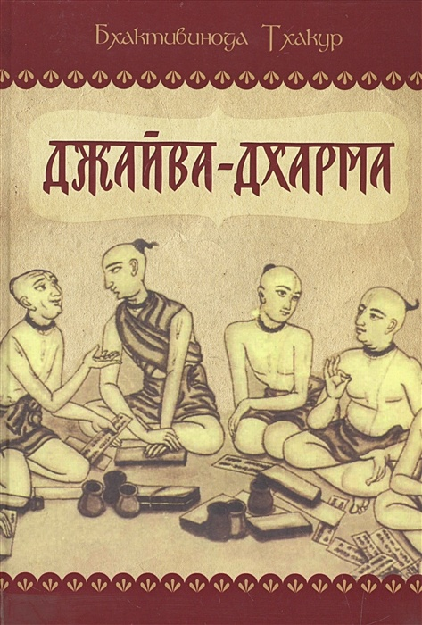

1. Вечная и преходящая природа души
2. Вечная природа души – истинная и постоянная
3. Временные обязанности души несовершенны, нечисты и преходящи
4. Иное название вечной религии – вайшнавская религия
5. Вайдхи-бхакти – вечная непреходящая религия
6. Вечная религия и кастовые различия
7. Вечные обязанности, семейная жизнь и материальный мир
8. Вечная религия и мирская деятельность
9. Вечная религия и современная научная цивилизация
11. Вечная религия и бьют-параста, поклонение божествам
12. Вечная религия и практика преданного служения
13. Вечная религия и три истины: самбандха, абхидея, прайоджана (свидетельство истины)
14. Вечная религия и три истины: самбандха, абхидея, прайоджана (энергии Господа)
15. Вечная религия и три истины: самбандха, абхидея, прайоджана (индивидуальные души)
17. Вечная религия и три истины: самбандха, абхидея, прайоджана (освобожденные души)
18. Вечная религия и три истины: самбандха, абхидея, прайоджана (одновременное единство и различие)
19. Вечная религия и три истины: самбандха, абхидея, прайоджана (абхидея)
20. Вечная религия и три истины: самбандха, абхидея, прайоджана (абхидея: вайдха садхана бхакти)
21. Вечная религия и три истины: самбандха, абхидея, прайоджана (абхидея: рагануга-садхана-бхакти)
22. Вечная религия и три истины: самбандха, абхидея, прайоджана (прайоджана. Часть первая)
23. Вечная религия и три истины: самбандха, абхидея, прайоджана (оскорбления святого имени)
24. Вечная религия и три истины: самбандха, абхидея, прайоджана (оскорбления святого имени)
25. Вечная религия и три истины: самбандха, абхидея, прайоджана (оскорбления святого имени)
37. Шрингара-раса (Мадхурья-раса)
39. Проникновение в игры Господа
Нет земной обители луше, чем Джамбудвипа. На Джамбудвипе нет страны прекраснее Бхарата-варши. На Бхарата-варши нет места замечательней, чем Гауда-деша. Жемчужиной же Гауда-деши является Шри Навадвипа-мандала. В одном из уголков Шри Навадвипа-мандалы, на берегу Ганги, вечной красотой сияет селение Шри Годрума. В древности сады Шри Годрумы были обителью многочисленных вайшнавов-бхаджанананди.
Давным-давно там, под сводами лиан, корова Сурабхи поклонялась Господу Гаурасундаре, Верховной Личности Бога. Теперь, спустя много лет, рядом находится бхаджана-кутир, именуемый Прадьюмна-кунджа. В этом укрытом вьющимися растениями бхаджана-кутире, постоянно пребывая в блаженстве поклонения Господу (то есть в бхаджанананде), обитал бабаджи-парамахамса, посвященный в ученики Прадьюмной Брахмачари, вечным спутником Верховного Господа.
Шри Према дас Бабаджи, будучи знатоком писаний, понимал, что Шри Годрума подобна Шри Нанда-граме, что во Вриндаване, поэтому и обосновался в этой священной местности. Там он повторял святые имена Господа Хари по двести тысяч раз ежедневно. Каждый день он предлагал сотни и тысячи поклонов-дандаватов всем вайшнавам. Душу в теле он поддерживал, собирая подаяние (мадхукари) у дверей местных пастухов. Он жил в святости, строго следуя правилам и обетам отшельника.
Выполнив ежедневные духовные обязанности, он не тратил время на пустые разговоры. Напротив, со слезами на глазах он начинал читать «Према-виварту», написанную Джагадананданой Пандитом, близким спутником Господа Гаурасундары. В такие часы все обитавшие поблизости вайшнавы с любовью обращали свой слух к его чтению. Могли ли быть иначе? «Према-виварта» наполнена сладостью разнообразных рас (вкусов) преданного служения. Кроме того, бабаджи читал ее так выразительно, что слова, проникавшие в сердца преданных, мгновенно тушили в них последние искры ядовитого пламени материальных желаний.
Однажды днем, закончив возносить молитвы, бабаджи парамахамса расположился в своей хижине, увитой лианами мадхави, и углубился в чтение «Према-виварты». Оно сразу же погрузило его в океан экстатическолй любви к Господу. А в это время к нему приблизился аскет-санньяси и почтительно склонился к стопам святого бабаджи.
Погруженный в блаженство бхакти, бабаджи не сразу увидел, что происходит рядом с ним. Но, увидев перед собой распростертого в поклоне санньяси и будучи смиренным, как травинка, бабаджи немедленно поклонился в ответ. Воскликнув: «О Господь Чайтанья, Господь Нитьянанда, пожалуйста, смилуйтесь надо мной, падшей душой!» – бабаджи разрыдался.
Тогда санньяси обратился к святому бабаджи: «О господин, я последний из падших. Зачем ты подражаешь моему поведению, словно насмехаясь надо мной?» И, коснувшись пыли у стоп бабаджи, санньяси сел перед ним.
Усадив санньяси на подстилку из древесной коры, бабаджи расположился рядом и сказал, трепеща от возвышенной любви: «Нет, господин, это я падший. Скажи, что я могу сделать для тебя?»
Оставив в сторону свою камандалу, достойный санньяси почтительно сложил ладони: «Мой господин, я неудачник. Я изучил философские догмы санкхьи, йоги (Патанджали), ньяйи, вайшешики, пурва-мимамсы и уттара-мимамсы. Я прочел Веданту, Упанишады и множество других писаний. Я бывал в Варанаси и в других священных обителях. Долгие часы проводил я в ученых спорах.
Двенажцать лет тому назад я принял данду санньяси от Шрилы Сачидананды Сарасватипады. После посвящения я долгое время странствовал по священным местам. Путешествуя по Бхарата-варше, я всегда пребывал в обществе санньяси – последователей Шанкарачарьи. Миновав ступени кутичаки, бахудаки и хамсы, я, в конце концов, достиг уровня парамахамсы. С тех пор я постоянно жил в Варанаси.
Соблюдая обет молчания, я искал утешения в изречениях, объясвленных Шанкарой маха-вакьями (наиболее важными утверждениями писаний): «ахам брахмасми» (я есть Брахман), «прагьянам брахма» (Брахман есть сознание) и «тат твам аси» (ты есть то).
Но однажды я увидел проходившего мимо святого вайшнава, воспевавашего в стихах игры Господа Хари. Широко открыв глаза, я уставился на него. Из глаз его лились слезы, а волоски на коже от экстаза стояли. Прерывающимся голосом взывая: «Шри Кришна Чайтанья! Прабху Нитьянанда!», он то и дело пускался танцевать, но ноги его не слушались. И в изнеможении он падал на землю…
Я взирал на него и слушал песнь, а сердце мое наполнялось любовью, которую я не в силах описать. Но несмотря на это, я продолжал блюсти правила жизни парамахамсы и не сказал ему не слова.
Горе мне! Чего стоят мои правила парамахамсы, чего стоит моя никчемная жизнь! Почему я не заговорил с ним?
С того самого дня меня непреодолимо влечет к стопам Шри Чайтаньи. Я утратил покой и сон. Много дней я провел в поисках того вайшнава, но мне так и не удалось его найти.
Когда я созерцал его и слушал святые имена из его уст, меня переполняло чистое, неисчерпаемое блаженство. До того момента я не ведал, что такое счастье возможно. Я не мог представить себе, что подобное доступно человеческому опыту.
Проведя в раздумьях немало дней, я решил, что мне следует обрести прибежище у стоп вайшнава. Я оставил Варанаси и отправился в Шридхам Вриндаван.
Во Вриндаване я встретил великое множество вайшнавов, и все они блаженно повторяли: «О Шри Рупа! О Шри Санатана! О Шри Джива Госвами!» Погруженные в размышления об играх Шри Шри Радхи—Кришны, они все, задыхаясь от этой любви, громко прославляли имя Навадвипы.
С того мгновения я возжелал увидеть Навадвипу. Преодолев сто шестьдесят восемь миль, несколько дней назад я пришел в Май япур.
В Майяпуре мне довелось услышать о твоей славе, поэтому я и пришел к тебе, в надежде обрести прибежище у твоих стоп. Пожалуйста, смилуйся надо мной, разреши быть твоим слугой и позволь истории моей жизни обрести счастливый конец».
Обливаясь слезами, в знак смирения зажав травинку в зубах, святой парамахамса ответил: «О святой, о санньяси, это я неудачник. Я лишь небиваю желудок, сплю и сплетничаю безо всякой пользы. За всеми этими занятиями я попусту прожил свою жизнь.
Сейчас я живу в обители, где Шри Кришна Чайтанья наслаждался Своими божественными играми. Но даже здесь я не могу ощутить вкуса истинной любви к Господу Кришне.
Твоя же удача не знает границ. Лицезрев вайшнава лишь мгновение, ты ощутил вкус этой любви. ты удостоился милости Господа Кришны Чайтаньи. И если ты хоть раз вспомнишь обо мне, упиваясь вкусом этой любви, моя жизнь увенчается успехом».
Сказав эти слова, святой бабаджи крепко обнял святого санньяси и омыл его слезами из своих очей. Ощутив прикосновение вайшнава, святой санньяси испытал прежде неведомые ему чувства. Обливаясь слезами, он стал танцевать, напевая следующий стих:
Слава Шри Кришна Чайтанье!
Слава Гсоподу Нитьянанде!
Слава моему духовному учителю, Шри Према-дасу!
Слава блаженству преданного служения!
Они долгое время пели и танцевали, а затем повели непринужденную беседу. Святой Прама-даса Бабаджи кротко спросил: «О великодушный, пожалуйста, останься на несколько дней здесь, в Прадьюмна-кундже, ради моего блага».
Святой санньяси ответил: «Я отдаю свое тело служению твоим словам. Что уж говорить о нескольких днях – я буду служить тебе до конца своей жизни. Это мое единственное желание».
Святой санньяси хорошо знал все писания. Ему было известно о тех благах, которые дарует пребывание в доме духовного учителя и изучение писаний под его руководством. Поэтому с большой радостью он провел несколько дней в священной роще.
Некоторое время спустя, бабаджи-парамахамса сказал: «О святой, добросердечный Шри Прадьюмна Брахмачари Тхакур позволяет мне пребывать у его стоп. Сегодняшний день он проведет в селении Дева-палли, что на самом краю Навадвипа-мандалы, с любовью поклоняясь Господу Нрисимхе. Завершив сбор мадхукари (падаяний), мы отправимся навестить его».
Святой санньяси ответил: «О учитель, я поступлю так, как ты захочешь».
Они пересекли реку Алакананда и к двум часам добрались до Дева-палли. Переправившись через реку Сурьятила, они увидели Шри Прадьюмну Брахмачари, близкого спутника Верховного Господа, в храме Шри Нрисимхи.
Бабаджи-парамахамса издалека предложил поклоны своему духовному учителю. Я святой брахмачари, тая от любви к преданным Господа, тотчас же покинул храм, поднял бабаджи-парамахамсу с земли, с чувством обнял его и стал расспрашивать о его жизни.
Долгое время они обсуждали духовные темы, а затем бабаджи-парамахамса представил учителю святого санньяси. Святой брахмачари с почтением промолвил: «Ты обрел достойного духовного учителя. Тебе следует изучать «Према-виварту», слушая Према-даса. Ибо сказано в священных писаниях («Шри Чайтанья-чаритамрита», Мадхья 8.128):
Кем бы челолвек ни был – брахманом, санньяси или шудрой,
он достоин быть духовным учителем,
если он постиг науку о Кришне.
Выслушав эти слова, святой санньяси благоговейно предложил дандават (поклон) своему парама-гуру (духовному учителю своего учителя), сказав следующее: «О учитель, ты личный спутник Господа Чайтаньи. Твой всемилостивый взгляд может очистить сотни таких возгордившихся санньяси, как я. Пожалуйста, будь милостив ко мне».
Святой санньяси не имел опыта общения с преданными. Тем не менее, он обратил внимание на взаимоотношения между гуру и парама-гуру, и по отношению к своему духовному учителю повел себя так, как подобает искреннему ученику. После сандхья-арати они вернулись в Шри Годруму.
Через несколько дней святой санньяси пожелал услышать духовные истины от бабаджи-парамахамсы. К тому времени санньяси уже во всем – разве что одежды – уподобился вайшнавам. Владевший своим умом и чувствами, обладавший множеством добродетелей, он свято верил в истинность духовного пути. Он был смиренным и благодаря этому успел обрести веру в трансцендентные игры Верховного Господа.
Однажды на рассвете бабаджи-парамахамса сидел в обвитой лианами мадхави хижине и читал молитвы на священных четках из дерева туласи. Вспоминая об играх Господа, о Его уходе из Вриндавана, он плакал. Погруженный в созерцание своей духовной формы и забыв о бренном материальном теле, он увлекся размышлениями о ранних часах во Вриндаване. Приблизившись к нему, святой санньяси заметил, что бабаджи полностью погружен в экстатический транс.
Обратив на санньяси пристальный взгляд, бабаджи-парамахамса сказал: «О гопи, подруга моя, пожалуйста, усмири ту обезьяну, не позволяй ей прервать счастливые сны Радхи и Госвинды. Если Они проснутся, наша подруга Лалита расстроится и замучает меня упреками. Взгляни! Вот и Ананга-манджари подает знак, что это необходимо сделать. Ты же Рамана-манджари, и это твое служение. Пожалуйста, займись своими обязанностями!»
Произнеся эти слова, бабаджи-парамахамса лишился сознания. А святой санньяси, узнав о своей духовной форме, стал заниматься порученным ему служением.
Взошло солнце, и наступило прекрасное утро. Зазвучало птичье пение, подул ласковый ветерок, и первые лучи солнца, пробившись через сплетения лиан, придали обители святого отшельника чарующую красоту.
Бабаджи-парамахамса сидел на подстилке из банановой коры. Постепенно к нему вернулось сознание, и он снова сал молиться. Санньяси поклонился стопам бабаджи, скромно уселся поблизости и обратился к нему со следующими словами: «О учитель, никчемный человек хочет задать тебе вопрос, пожалуйста, ответь мне, потуши бушующее в моем сердце пламя и верни мне счастье. Будь снисходителен, пролей нектар Враджа на мое сердце, выженное огнем имперсонализма».
Бабаджи ответил: «Ты достоин получить ответ на любой вопрос. Пожалуйста спрашивай, я отвечу тебе, как смогу».
Санньяси молвил: «О господин, я часто слушал споры о религии. Вопрос об истинной религии я задавал очень многим. К сожалению, ответы были весьма противоречивыми. Поэтому я хочу задать вопрос тебе. В чем предназначение индивидуальной души? Почему разные мыслители по-разному объясняют смысл религии? Если истина одна, почему философы расходятся во мнениях?»
Медитируя на стопы Шри Кришны Чайтаньи Прабху, святой бабаджи ответил: «О достойнейший, я поведаю тебе истину. Пожалуйста, выслушай меня.
Вечная природа предмета и является его вечной религией. Любая религия происходит от изначальной сущности предмета. Когда Господь Кришна желает чего-нибудь сотворить, Он создает изначальную природу этого предмета. Эта изначальная природа и является вечной религией любого творения. Однако, взаимодействуя с другими предметами, изначально заложенная природа может измениться. Через какое-то время измененное состояние становится постоянным, и возникает иллюзия, что именно оно является бессмертной природой предмета. Тем не менее, извращенная природа не является истинной. Измененная природа именуется нисарга. Приведу тебе пример. Вода обладает определенными изначальным состоянием, то есть имеет все свойства жидкости. Однако при определенных обстоятельствах ее природа может измениться, и изначально жидкая вода превратиться в твердый лед. Эта измененная сущность воды может показаться нам изначальной. Однако трансформированная природа лишена качества вечности и носит преходящий характер. Она проявлется в определенных ситуациях, на некоторое время сохраняется и, в конце концов, исчезает. Изначальная же природа предмета вечна. Даже в период господства измененной природы изначальная природа сохраняется. Когда наступает время, изначальная природа вновь торжествует.
Изначальная природа предмета вечна. измененная природа временна. Тот, кому ведома истина, осознает различие между вечным и временным. Тот, для кого истина недоступна, считает преходящую природу вечной».
Выслушав святого бабаджи, санньяси сказал: «Ты говоришь о каком-то «предмете» (васту). Что ты имеешь в виду?»
Парамахамса ответил: «Слово васту происходит от глагола вас (существовать) и приставки ту. Таким образом, то, что существует, обозначается словом васту.
Васту бывает двух видов: предметы, которые имеют реальное бытие, и предметы, которые не имеют его. Реально существуют духовные истины и духовная цель жизни. Не существуют же в реальности материальные объекты, материальные качества и так далее. То, что существует в реальности, существует вечно. То же, что не имеет реального бытия, существует лишь в чьем-либо неверном представлении.
Человек может верить в истину, но, кроме этого, он может быть введен в заблуждение иллюзией. В «Шримад-Бхагаватам» (1.1.2.) сказано:
Высшая истина – это реальность,
ради всеобщего блага отделнная от иллюзии.
Таким образом, в священных писаниях утверждается, что мир духа обладет подлинной реальностью. Единственной реальностью является Верховная Личность Бога. Из Его бытия исходит множество индивидуальных душ – Его неотъемлемых частиц. Из Верховной Личности Бога исходит и иллюзорная энергия.
Слово «предмет» (васту) может относиться к трем категориям: к Верховной Личности Бога, к индивидуальным душам, к иллюзорной энергии (майе). Эти три предмета существуют реально. Наука об их взаимодействии и является истинным знанием.
Существует множество различных представлений о подлинной природе этих трех объектов, однако все эти представления изобилуют заблуждениями. Так, философы школы вайшешики, определяя категории различных предметов и качеств, относят к реальным множество явлений, не являющихся реальностью.
Реально существующие предметы имеют определенные свойства. Этими свойствами определяется их природа. Так, индивидуальные души наделены свойствами, которые вечны и определяют природу этих душ».
Безгрешный санньяси сказал: «О учитель, я горю желанием правильно понять все это».
Святой бабаджи ответил: «Преданный по имени Кришнадас Кавирадж, получивший милость Господа Нитьянанды, показал мне рукопись своей книги, именуемой «Шри-Чайтанья-чаритамрита». В этой книге приводятся следующие слова Шри Махапрабху: «Изначальное положение живого существа – вечное служение Кришне, поскольку живое существо – пограничная энергия Кришны, одновременно единая с Ним и отличная от Него».
Забыв о Кришне, живое существо с незапамятных времен стремится к внешней энергии. Поэтому иллюзорная энергия (майя) причиняет ему всевозможные страдания.
Господь Кришна является центром духовного бытия. Он подобен солнцу, которое согревает бесчисленные духовные вселенные. Индивидуальная душа – лучи этого солнца. Они воистину неисчислимы.
Кто-то, возможно, возразит: «Ты утверждаешь, что индивидуальные души являются частицами Господа Кришны. Означает ли это, что когда Кришна разделяется на части, чтобы стать душами, то бытие Его Личности прекращается, как прекращается существование горы, раздробленной зелетрясением?»
Но это я отвечу: «Это невозможно». Если же мой противник спросит: «Почему же?» – то я поясню: «Из Господа Кришны исходит бесконечное множество индивидуальных душ. Однако Господь Кришна ни на йоту не уменьшается.
В Ведах сказано, что индивидуальные души подобны искрам, исходящим из пылающего костра – Господа Кришны. Однако ни одно из приводимых сравнений не дает достаточно отчетливого представления об истинном положении вещей. Примеры большого огня и искр, солнца и его лучей, философского камня и золота не полностью отражают картину. Поэтому, отбросив подобные аналогии, следует прислушаться к своему сердцу, ибо только так можно познать свою истинную природу.
Господь Кришна – огромное духовное существо, а индивидуальная душа – безгранично малое. Господь Кришна и индивидуальная душа неделимыв том смысле, что оба они – духовны. Однако Господь Кришна представляет Собой полное целое, в то время как индивидуальные души являются всего лишь частицами этого целого. В этом кроется различие между ними.
Господь извечно занимает положение полновластного господина, а индивидуальная душа – положение его слуги. Так определяется природа обоих этих сущностей.
Господь Кришна наделен огромной привлекательностью, индивидуальная душа наделена способностью привлекаться Им. Господь Кришна – Верховный Повелитель, а индивидуальная душа подчиняется Ему. Господь Кришна ведает все, а индивидуальная душа находится под Его присмотром. Господь Кришна совершенен, а индивидуальная душа зависима. Господь Кришна всемогущ, а индивидуальная душа беспомощна. Поэтому вечная религия индивидуальной души заключается в вечном служении Господу Кришне.
Господь Кришна – владыка безганичных энергий. Все эти энергии и присутствуют в духовном мире. Для создания же индивидуальных душ используется только одна из них – татастха-шакти.
Отличающиеся несовершенством материальные вселенные тоже создаются при помощи этой энергии Господа.
Эта энергия рождает мир, в котором бок о бок сосуществуют существа и мертвая материя. Таким образом, осуществляется своего рода связь между духовным и материальными мирами.
Дух, наделенный сознанием и чистотой, и бездушная материя – диаметрально противоположные предметы. Поэтому связь сознательной души с бессознательной материей в конечном счете невозможна.
Индивидуальная душа –ничтожно малая частица духа. Тем не менее, одна из энергий Верховного Гсопода способна связать индивидуальные души с материей. Исполняющая эту задачу энергия называется татастха-шакти.
Расстояние между водами реки и сушей называется тата (берег). Этот промежуток находится в контакте как с сушей, так и с водой. На пограничной территории можно заметить признаки как земли, так и воды.
Индивидуальная душа божественна. Тем не менее, она может оказаться во власти мертвой материи.
Этим индивидуальная душа отличается от Господа, который никогда не приходит в соприкосновение с материальным миром. Однако душа отличается и от бездушной материи. В конечном счете, она не явлется ни духом, ни материей. Именно поэтому утверждение о различии двух существ – Верховной Личности Бога и индивидуальной духовной души является верным.
Верховная Личность Бога – повелитель иллюзорной энергии, майи. Майя подчиняется Его власти. При определенных обстоятельствах индивидуальная душа может оказаться во власти майи. Поэтому эти три категории: Верховная Личность Бога, индивидуальные души и иллюзорная энергия, майя, вечно связаны друг с другом.
Верховная Личность Бога является корнем всего сущего; это подтверждают следующие слова Вед («Катха-упанишада» 2.2.13 и «Шветашватара-упанишада» 6.13):
Верховный Господь вечне и живые существа вечны.
Исходя из всего этого можно сделать вывод, что индивидуальная душа вечно является слугой Господа Кришны. Душа проявлется из энергии Господа, татастха-шакти.
Индивидуальная душа порой оказывается во власти иллюзорной энергии, майи, но Верховная Личность Бога никогда не утрачивает своего превосходящего положения. В этом заключается основное отличие индивидуальной души от Верхвной Личности Бога.
Индивидуальная душа божественна, равно как и Верховный Господь. Из этого следует, что индивидуальная душа – одна из энергий Верховной Личности Бога.
С другой стороны, индивидуальная душа и Верховная Личность Бога едины и отличны одновременно, то вечное различие между ними обретает особый смысл.
Смысл существования и обязанность индивидуальной души – служить Верховной Личности Бога. Забыв об этом, она попадает во власть майи и, как следствие, удаляется от Господа Кришны. Потому душа приходит в материальный мир.
Невозможно достоверно сказать, когда душа впервые попала в материальный мир. Поэтому говорят: анади-бахир-мукха (живое существо привлекается внешней энергией с незапамятных времен). Оба эти события – отдаление от Кришны и пришествие в мир майи – не связаны с изначальной природой души. Их следует рассматривать как извращения этой природы.
Преходящая природы души и ее временные обязанности возникают после сопрокосновения души с майей. Вечная природа души неизменна и чиста. Качества же временной ее природы, возникающие из-за соприкосновения с материальным миром, отличаются бесконечным разнообразием».
Молвив эти слова, святой бабаджи-парамахамса умолк и погрузился в воспевание имен Господа Хари. Выслушав объяснения мудрого отшельника, святой санньяси поклонился и сказал: «О учитель, сегодня я обдумаю то, что услышал от тебя. Если у меня возникнут вопросы, завтра я принесу их к твоим стопам».
Следующее утро застало святого Према даса Бабаджи погруженным в блаженное состояние, характерное для обитателей Враджа. Благочестивый санньяси хотел задать ему несколько вопросов, но благоприятного момента для этого не представилось. После полудня, собрав подаяния (мадхукари), они вернулись в хижину, увитую лианами мадхави и малати. Праведный бабаджи-парамахамса спросил: «О лучший из вайшнавов, вчера ты выслушал мои объяснения, касающееся истинной природы души. К каким же заключениям ты пришел?» Счастливый, что слышит эти слова, святой санньяси ответил: «О учитель, если индивидуальная душа изначально имеет размеры атома, каким образом эта вечная природа может быть неоскверненной и совершенной? Если сотворение души происходит в определенный момент времени, стало быть, в то же время создается и ее природа. Если это верно, как же природа души может существовать вечно – в прошлом, настоящем и будущем?»
Выслушав вопрос, бабаджи-парамахамса погрузился в медитацию на лотосные стопы Господа Чайтаньи, затем улыбнулся и молвил: «О благородное сердце! Душа, хоть она и не больше атома по размерам, совершенна, чиста и вечна. Понятие «величина атома» применимо к ней лишь в количественном отношении. Единственный, кто велик в количественном отношении – это Господь Кришначандра. Все индивидуальные души являются Его мелкими, словно атом, частицами. Огонь не разделишь на части, хоть из него и исходят мельчайшие искры. Подобно этому, Господь Кришна, высшее сознательное существо, не делится на части, хоть и порождает огромное множество индивидуальных душ. Как каждая искорка обладет признаками огня, так и каждая индивидуальныя душа обладает всеми качествами сознания. Искрам присуща испепеляющая мощь пламени, которая в определенных условиях может сжечь дотла всю материальную вселенную. Души же наделены способностью любить Господа Кришначандру и наслаждаться купаясь в океане этой любви. Но пока сознание не находится в гармонии со своей изначальной природой, силы, присущие ему и, соответственно, душе, не могут проявить себя в полной мере.
Природу души можно понять лишь в ее отношениях с другими. Задаваясь вопросом: «Какова вечная природа души?» – следует неустанно искать истинный ответ на него. Вечная природа души – это любовь. Поэтому душу нельзя считать бессознательной или мертвой. Она отличается от инертной материи. Душа по природе своей должна быть сознательной. Она создана, чтобы любить. Ее любовь тождественна преданному служению Господу Кришне. Поэтому любовь, проявляющаяся как преданное служение Господу, является истинной природой индивидуальной души.
Индивидуальная душа может пребывать в двух состояниях бытия: в изначальном состоянии и в материальном рабстве. В изначальном состоянии индивидуальная душа проявлется как чистый дух, свободный от любой связи с бездушной материей. В этом положении душа сохраняет свою прежнюю атомарную величину, и благодаря этому состояние ее бытия может меняться. Господь Кришна является Верховным Существом, поэтому состояние Его бытия никогда не меняется. Господь Кришна совершенен, непогрешим и вечен. Индивидуальная душа в обусловленном состоянии – существо жалкое, беспомощное и нечистое. Пребывая в своем изначальном состоянии, душа обладает величием, могуществом, чистотой и бессмертием. В первозданном состоянии бытия в полной мере проявлется первозданная природа индивидуальной души. Но если индивидуальная душа взаимодействует с майей, иллюзорной энергией, ее изначальное бытие не может проявиться. Ее извечная природа извращается и оскверняется. Будучи в таком состоянии, душа не ищет прибежища у Господа Кришны. Ее терзает постоянное чередование радостей и страданий. Забыв о служении Гсоподу, душа низвергает себя в материальный мир, где неизбежны рождения и смерть.
Если же индивидуальная душа сохраняет чистоту, то сохраняется и ее изначальная природа, а следовательно, и понимание своего подчиненного положения. Однако взаимодействуя с майей, иллюзорной энергией, душа оскверняется. В таком состоянии она не способна служить Господу Кришне. Ей приходится менять материальные тела одно за другим. Взаимодействуя с майей, иллюзорной энергией, индивидуальная душа обретает тело, состоящее из грубых и тонких материальных элементов. В результате душа отождествляет себя с тонким материальным тело и связывает себя с грубым материальным телом. К тому же, она всецело отождествляет себя с этим телом, которое состоит из смеси тонких и грубых элементов. Таким образом, представление души о собственной сущности претерпевает немалые изменения. Однако сама душа по-прежнему является вечной частицей Господа Кришны.
Отождествляя себя с тонким материальным телом, душа считает, что имеет возможность наслаждаться плодами своей деятельности. Неверное самоотождествление и реальное положение души полностью взамоисключают друг друга.
Отождествляя себя с грубым материальным телом, душа может считать себя кем угодно: брахманом, царем, бедняком, богатым, страдальцем, счастливцем и так далее. Неверное самоотождествление души с грубым материальным телом проявляется в огромном разнообразии форм.
Когда в сознании воцаряется ложное представление о своей сущности, изначальная природа души извращается. Изначальная природа души – чистая любовь. В тонком материальном теле эта любовь проявляется в искаженных формах – как материальное удовольствие, страдание, вожделение и ненависть. В грубом материальном теле та же любовь проявляется в еще более извращенных формах – как стремление наслаждаться едой, напитками и другими объектами, порождаемыми бездушной материей. Хочу заметить, что вечная природа души проявляется лишь тогда, когда душа находится в неоскверненном состоянии бытия. Если же душа пребывает в состоянии материального рабства, обнаруживается лишь ее временная природа. Итак, изначальная природа души – это совершенство, чистота и бессмертие. О преходящей природе души я расскажу тебе потом…
В священном писании, известном как «Шримад-Бхагаватам», описано чистое преданное служение Господу Вишну. Преданное служение – это извечная деятельность индивидуальной души. В этой книге описаны также три вида распространенных в материальном мире представлений о природе души. Они таковы: вечная природа; преходящая природа; природа, пребывающая в противоречии с вечной природой.
Суждения, отрицающие существование Верховной личности Бога и вечной души, относятся к третьей категории этих представлений. Воззрения, признающие существование Верховной личности Бога и допускающие, что для снискания Его благосклонности следует использовать временные, материальные средства, относятся ко второй категории. Представления же о том, что следует стремиться обрести любовь к Господу Кришне и заниматься служением Ему, относится к первой категории.
Представления о вечной природе души могут находить разные выражения на разных языках и среди различных народов, но все эти воззрения относятся к одной и той же вечной природе души. Тем не менее, существующая в Индии религия вайшнавов является изначальной религией, прототипом всех представлений о вечной природе души. А та ветвь вайшнавизма, которую взрастил Господь Чайтанья, сын матери Шачи, властелин наших сердец, является истинным вайшнавизмом, который признают и исповедуют великие святые, исполненные чистой любви к Богу».
Услышав это, святой санньяси почтительно сложил ладони и сказал: «О учитель, я все больше убеждаюсь, что учение Господа Чайтаньи, сына Шачи, является прекраснейшим изложением религии вайшнавов. Я вижу, что теория имперсонального монизма, которую создал Шанкарачарья, несостоятельна и даже вредна.
И все же в моем уме зародилась мысль, которую я отвергаю, но все же хочу обсудить с тобой. Мысль эта такова: действительно ли состояние глубокого экстаза духовной любви, открытое для нас Господом Чайтаньей, отличается от состояния растворения в безличном Абсолюте?»
Услышав имя Шанкарачарьи, бабаджи-парамахамса тотчас же совершил поклон-дандават. Затем он произнесследующие слова: «О благороднейший друг, всегда следует думать так: «Шанкарачарья – это сам Господь Шива». Шанкарачарья является духовным учителем всех вайшнавов. Не зря ведь Господь Чайтанья Махапрабху удостоил его титула ачарья. Шанкарачарья – истинный вайшнав.
Шанкарачарья явился в Бхарата-варше во времена, когда люди остро нуждались в пришествии гуна-аватары Господа. Широкое распространение философии пустоты, которую проповедовал Будда, искоренило учение Вед и разрушило варнашрама-дхарму. Буддистская философия пустоты отрицала существование Верховной Личности Бога. Хотя буддизм содержит намек на существоание индивидуальной души, он, тем не менее, отрицает ее вечную природу. К тому времени почти все брахманы стали буддистами и отошли от религии Вед.
Тогда в этот мир и пришел, приняв облик Шанкарачарьи, могущественный Господь Шива. Он восстановил авторитет Вед и преобразовал учение Будды о пустоте в философию ведического имперсонализма. Мир в долгу перед Шанкарачарьей за столь успешное выполнение неимоверно сложной задачи.
Всю деятельность, выполняемую в этом мире, можно оценивать с двух точек зрения. Одна деятельность полезна в рамках конкретного промежутка времени, другая же полезна всегда. Шанкарачарья выполнил труд, имевший огромное значение для того исторического периода.
Его усилия принесли благие плоды. На фундаменте, построенном Шри Шанкарачерьей, Шри Рамануджачарья и Шри Мадхвачарья воздвигли великолепный дворец вайшнавской религии. Поэтому Шанкарачарья – добрый друг вайшнавов и их религии. Он один из ее основателей и учителей. Вайшнавы и по сей день пользуются теми благами, которые даровал им Шанкарачарья.
Индивидуальным душам, по сей день находящимся в кандалах материального рабства, крайне важно осмыслить свою связь с Верховной Личность Бога. Прозябая в материальной вселенной, индивидуальная душа, тем не менее, отличается от грубого и тонкого материальных тел и превосходит их. Относительно этого момента мнения вайшнавов и Шанкарачарьи не расходятся. И вайшнавизм, и монизм признают духовную природу индивидуальной души.
Освобождение можно определить как вызволение души из материального мира. Мнения обоих учений на этот счет также совпадают. Шанкарачарья и вайшнавы согласны между мсобой по многим пунктам – вплоть до суждений, касающихся достижения уровня освобождения.
Поклонение Господу Хари очищает сердце и позволяет обрести освобождение. Этому учит и Шанкарачарья.
Тем не менее, Шанкарачарья хранит молчание о том состоянии бытия, которое следует за безличным освобождением. Шанкарачарья прекрасно знал: если душа будет использовать поклонение Господу Хари как средство достижения освобождения, она начнет вкушать сладость преданного служения и в конце концов разовьет в себе чистую преданность Господу Хари. Именно по этой причине Шанкарачарья, указав истинный путь, не стал раскрывать тайн вайшнавской религии.
Тот, кто внимательно изучит его комментарии, поймет, что в этом и сотоял истинный замысел Шакнкарачарьи. Но те, кто напрасно тратит время, интересуясь лишь поверхностной частью его учения, так и останутся чуждыми религии вайшнавов.
В каком-то смысле, быть может, и нет различия между слиянием воедино с Верховной Личностью Бога и достижением любви к Нему. Однако те, чье определение единения с Господом страдает узостью, утверждают, что подобное единство с Господом и любовь к Нему – вещи разные.
Задумайся на мгновение над смыслом слова «любовь». Любовью зовется та сила, которая влечет одно живое существо к другому духовному существу. Но в реальности эти духовные существа ничем между собой не различаются, а соответственно, и любить друг друга не могут.
Всем духовным существам свойственно спонтанное влечение к высшему живому существу, Господу Кришначандре. Это влечение называется кришна-према, любовь к Господу Кришне.
Господь Кришначандра и индивидуальные души являются духовными существами, отличными друг от друга. Поэтому взаимная любовь, которая живет в их сердцах, является естественной.
Три следующие категории существуют вечно: тот, кто наслажадется, тот, кто доставляет наслаждение, и, наконец, само наслаждение. Если существо, испытывающее удовольствие от любви к другому существу, не отличается от объекта своей любви или наслаждения, то испытываемая им любовь не может быть вечной.
Если мы определим единение, как чистое, свободное от любой связи с материей состояние духовного живого существа, то получится, что единение и любовь – одно и тоже.
Однако современные пандиты, последователи Шанкарачарьи, не склонны соглашаться с таким определением. Напротив, они прилагают неимоверные усилия, пытаясь доказать, что Веды допускают существование только одного духовного существа – Существа, преобразующего Себя во все сущее. Подобные взгляды убивают вечно существующую любовь. Вайшнавы доподлинно доказали, что такие взгляды противоречат истинному учению Вед.
Шанкарачарья утверждал, что в чистом духовном состоянии возможно идеальное единство. Однако его теперешние последователи не понимают скрытого смысла этих слов. Более того, они приписывают ему утверждения, которые он никогда не делал. Они заявляют, что разные уровни Божественной любви являются плодами деятельности иллюзоной энергии – майи. Поэтому их теория и называется майявада. Она самая низменная и разрушительная из всех бытующих в мире теорий.
Философы-майявади отказываются признавать существование большого количества духовных существ. Они не допускают существования духовной любви. Майявади утверждают, что Высший Дух (Брахман) сохраняет свободу от материи лишь до тех пор, пока он един и неделим. Эти псевдоученые полагают, что, приняв какую-либо собственную форму или формы индивидуальных душ, которых существует множество, Господь попадает в тиски иллюзии (майи). Таким образом, вечную, чистую и всецело духовную форму Верховной Личности Бога майявади считают проявлением майи, иллюзорной энергии. Отдельное, индивидуальное существование душ они также принимают за иллюзию, навеянную майей.
Считая, что Божественную любовь во всех ее проявлениях творит иллюзорная энергия, майя, они утверждают, что медитация на единство всего сущего – единственное безопасное в этом мире положение. Но единство, каким его мыслят эти заблуждающиеся люди, расходится с идеей духовной любви.
Истинная духовная любовь, которую превозносил Господь Чайтанья и которой Он научил мир, находится за пределами влияния иллюзорной энергии, майи. Эта любовь и есть высшее проявление истинного духовного единения.
Интересным аспектом чистой духовной любви является махабхава. Это самое яркое проявление приносящей блаженство любви к Господу Кришне. В этом случае близкие отношения между любящим и возлюбленным достигают невиданных высот блаженства. По сравнению с этим блаженством философия майявады жалка и ничтожна. Ее последователям никогда не понять глубин истинной духовной любви».
Выслушав эти слова, святой санньяси сказал: «О учитель, я убедился, что теория майявады смехотворна. Благодаря тебе я полностью избавился от всех сомнений по этому поводу. Но мое тело по-прежнему облачено в одеяния санньяси-майявади. Я хочу избавиться от них».
Праведный бабаджи ответил: «О безупречный, не стоит ненавидеть ту или иную одежду. Если сердце чисто, одежда не имеет особого значения. Слишком пристальное внимание к своей внешности и одежде – признак недостаточности внимания к состоянию своего сердца.
Безусловно, для начала человеку следует очистить свое сердце. Лишь за тем можно одеть одежду отшельника и вести образ жизни святого, не совершая при этом тяжких оскорблений.
Стань искренним последователем Шри Кришны Чайтаньи. Затем к тебе придет желание и внешне походить на его последователей. Всегда помни следующие слова Гсопода Чайтаньи Махапрабху («Шри Чайтанья-чаритамрита», Мадхья 16.238-239):
Ты не должен проникаться духом показной преданности и ложного отречения. Наслаждайся материальным миром, но делай это достойно и не привязывайся к нему. В своем сердце храни глубокую веру, но внешне веди себя как обычный человек. Если будешь вести себя так, ты очень скоро удовлетворишь Кришну, и Он вызволит тебя из тисков майи.
Услышав это, святой санньяси больше не упоминал об одежде. Почтительно сложив руки, он спросил: «О учитель, я твой ученик; я нашел прибежище у твоих стоп. Все указания, которые ты дашь, я приму безоговорочно. Выслушав тебя, я понял, что чистая любовь к Господу Кришне – единственная религия для вайшнава. Именно такая любовь является вечным пристанищем души. Эта религия совершенна, чиста и естественна. Но как быть с другими религиями, широко распространенными по всему миру?»
Святой бабаджи ответил: «О великая душа, суть всех религий едина. Не может быть двух, трех или пяти религий. У души есть только одна-единственная религия. Эта религия называется вайшнавизмом. Нет смысла выдумывать разные религии для разных народов. Религию души можно называть по-разному, но разных религий быть не может. Религия души – чистая любовь, которую маленькое духовное существо испытывает к Верховному Божественному Существу. Однако под влиянием разнообразных материальных воззрений люди исказили изначальную религию, придав ей разнообразные формы. Неизвращенная форма религии – это вайшнавская религия. Другие так называемые религии – лишь искаженные формы вайшнавизма. Иные верования обладают чистотой лишь в той степени, в которой они соотносятся с вайшнавизмом.
Когда-то, будучи в Шри Враджа-дхаме, я преподнес этот вопрос к стопам Шрилы Санатаны Госвами, личного спутника Господа Чайтаньи. «В религиозных писаниях яванов употребляется слово эск. Обозначает ли это слово чистую духовную любовь, или же смысл его иной?» – таким был мой вопрос. Святой Госвами слывет знатоком всех известных писаний, и помимо этого, прекрасно знаком с языком яванов. На этом собрании присутствовали также Шрила Рупа Госвами, Шрила Джива Госвами и множество других великих ученых. Святой Шрила Санатана Госвами любезно дал следующий ответ: «Да, слово эск означает любовь. Поклоняясь Богу, яваны употребляют слово эск. Однако это слово используют и для обозначения материальной любви. Подобные примеры можно найти у Лаялы Манджану и в трудах Хафиза. Ачарьи яванов не смогли постичь истинного значения духовной жизни. Словом эск они обозначают любовь, заключенную в рамки грубого или тонкого материальных тел. Им не удалось обозначить различия между материальной любовью и чистой духовной любовью, как, впрочем, и постичь чистую любовь к Господу Кришне. В книгах яванов я не обнаружил ни одного достоверного описания Божественной любви. Такие описания я находил лишь в книгах вайшнавов. Стремясь как-то описать душу, учителя яванов используют слово ру. Однако до конца постичь природу души им также не удалось. Слово ру применяется ими лишь для обозначения обусловленных душ, находящихся в царстве майи. Это все, что они смогли уяснить. Ни в одной религии, кроме вайшнавской, я не встречал описания любви к Господу Кришне. подобные сведения содерждатся лишь в вайшнавской литературе. Вспомните следующие слова «Шримад-Бхагаватам» (1.1.2):
Полностью отвергая всю религиозную деятельность, зависящую от материальных побуждений, «Бхагавата-пурана» провозглашает высшую истину…
Я уверен, что никто и никогда – вплоть до появления в этом мире Шри Кришны Чайтании – не смог дать исчерпывающего описания чистой любви к Господу Кришне. Если тебя убедили мои слова, можешь принять это объяснение».
Выслушав наставления столь возвышенного вайшнава, я стал вновь и вновь кланяться перед Шрилой Санатаной Госвами». Выслушав эту историю, святой санньяси тоже предложил свои поклоны великому Шриле Санатане Госвами.
Затем бабаджи-парамахамса сказал: «О великий преданный, сейчас я постараюсь ответить на твой второй вопрос. Пожалуйста, сосредоточься и слушай. Выражения «создание индивидуальной души» или «сотворение индивидуальной души» – лишь форма деятельности иллюзорной энергии, майи. Это материальные слова, подходящие для описания бездушных материальных предметов. Время делится на три категории: прошлое, настоящее и будущее. Эти категории относятся к материальному времени, протекающему в рамках влияния иллюзорной энергии, майи. В духовном мире есть только настоящее время. Там нет ни прошлого, ни будущего. Господь Кришна и индивидуальные души всегда пребывают в настоящем времени. Этим определяется бессмертие индивидуальной души и постоянство ее изначальной природы. Разговор не предмет «создания» или «сотворения» индивидуальной души – недоразумение, порожденное ошибочным употреблением представлений о времени, присущим бездушному материальному миру. Атомарная индивидаульная душа духовна и вечна. она существовала задолго до своего воцарения в мире материи. Поскольку в мире духа нет ни прошлого, ни будущего, все сущее в нем пребывает в настоящем. Качеством вечности обладают и душа, и ее природа. Поэтому они тоже существуют в вечном настоящем. Я даю тебе лишь словесное описание. Степень твоего понимания будет зависеть от твоей способности осознавать явлени духовного мира. Я могу лишь намекнуть, но ты должен сам познать все это, погрузившись в духовный транс. Логика и аргументы материального мира не помогут тебе обрести верного понимания. Твоя способность познать духовный мир, находящийся за пределами материи, будет зависеть от степени твоего желания избавиться от оков иллюзии. В начале ты узришь свою собственную духовную форму. Снова и снова воспевая святые имена Господа Хари, ты достигнешь понимания природы души. Практика аштанга-йоги и путь имперсонализма не смогут помочь тебе в твоем стремлении увидеть чистую духовную природу. Только служение Господу Кришне поможет тебе постигнуть твою вечную природу. Поэтому ты должен постоянно с воодушевлением воспевать святые имена Господа Хари. Продвижение в духовной жизни возможно лишь благодаря повторению этих имен. Воспевая святое имя Господа Хари в течение длительного времени, ты достигнешь любви к святому имени – любви, которую раньше ты никогда не испытывал. За этой любовью последует возможность познать духовный мир. Из всех видов преданного служения воспевание святых имен Господа Хари – самое важное и быстродействующее. В замечательной книге Кришнадаса Кавираджи («Шри Чайтанья-чаритамрита», Антья 4.70-71) цитируются следующие слова Господа Чайтаньи Махапрабху:
Наилучшими из всех видов преданного служения являются девять предписанныхметодов, поскольку в них таится огромная сила – они способны даровать человеку Кришну и экстатическую любовь к Нему.
Но самым важным из этих девяти методов является постоянное воспевание святого имени Господа. Практикуя его и избегая при этом оскорблений, человек приобретает самое дорогое сокровище – любовь к Богу.
О мудрец, если ты спросишь: «Кого можно считать вайшнавом?», я отвечу: «Вайшнав – этот тот, кто без оскорблений воспевает святые имена Господа Кришны». Вайшнавы, в свою очередь, подразделяются на три группы: каништха (неофит), мадхьяма (преданный среднего уровня), уттама (возвышенный вайшнав). Того, кто воспевает святые имена Господа Кришны время от времени, следует считать преданным-неофитом. Тот, кто постоянно воспевает святые имена Господа Кришны, находится на среднем уровне. А тот преданный, один вид которого побуждает других воспеть имена Кришны, является возвышенным вайшнавом. Господь Чайтанья Махапрабху учил, что для определения статуса вайшнава не следует использовать прочие критерии.
Погружаясь в нектар этих слов, святой санньяси запел:
Харе Кришна Харе Кришна
Кришна Кришна Харе Харе
Харе Рама Харе Рама
Рама Рама Харе Харе
Воспевая святые имена, он пустился в пляс и долго не мог остановиться. С этого дня он всегда находил великое наслаждение в воспевании святых имен Господа Хари. Припав к лотосным стопам своего духовного учителя, он молвил: «О господин, будь и дальше так же милостив к падшей душе».
Расположившись на небольшом холме в лесу Госдрумы и обратив взор на север, святой санньяси провел весь день и первые ночные часы за воспеванием святых имен Господа Хари. Вечером взошла полная луна и залила всю Навадвипа-мандалу серебрянным сиянием. Санньяси перевел взор на раскинувшийся перед ним Шри Майяпур.
Безгрешный санньяси воскликнул: «Ах! Наконец-то я узрел чудесную, исполненную блаженства духовную обитель! Берег Ганги сияет, словно опоясанный гирляндой огней, - это отражение дворцов, храмов и арок, воздвигнутых из драгоценных камней. Отовсюду доносится громкое воспевание святых имен Господа Хари. Я вижу преданных, играющих на винах, поющих и танцующих, словно Нарада Муни.
Рядом виднеется ни с чем не сравнимый светлый лик Господа Шивы, повелителя полубогов. Наигрывая на своем барабане дамбару, он взывает: «О Чайтанья, о хранитель вселенных, молю, будь милостив ко мне!» Без устали вдохновенно танцуя, он в конце концов опускается на землю.
Восседая среди мудрецов, четырехглавый Брахма толкует Веды. Он цитирует шастры и дает истинное объяснение словам «Шветашватара-упанишады» (3.12):
Верховная личность Бога – это Махапрабху, озаряющий всех трансцендентным знанием, сияющий также, как нерушимое брахмаджйоти.
Невдалеке Индра с сонмом полубогов танцуют и поют:
- Слава Господу Гаурачандре! Слава Господу Нитьянанде!
Даже птицы на ветках щебечут:
Чайтанья! Нитьянанда!
Все вокруг опьянены нектаром святых имен Господа Чайтаньи. Из садов, раскинувшихся вокруг святой обители, доносится сладостное жужжание. Пракрити-деви (богиня материальной природы) одурманенная нектаром святых имен Господа Чайтаньи, украшает все вокруг красотой и сиянием. Ах! Теперь, когда мне посчасливилось созерцать Шри Майяпур, чего еще я могу желать?»
Вспомнив слова духовного учителя, санньяси молвил: «О учитель, теперь я все понял. Благодаря твоей милости, я смог увидеть истинный Майяпур. С этого дня я никогда не покину общества преданных Господа Чайтаньи. Узрев духовный Майяпур, я мечтаю украсить свое тело бусами из туласи, тилакой и святыми именами. Я непременно сделаю это». Произнеся эти слова, святой санньяси лишился сознания.
Когда сознание вернулось к нему, он уже утратил чудесное видение, которое посетило его. Снова и снова обливаясь слезами, святой санньяси молвил: «Я и в самом деле неудачник. Красоты святой обители, Шри Навадвипы, открылись мне лишь по милости духовного учителя, да и то лишь на мгновение».
На следующий день святой санньяси бросил свою экаданду в воду, одел на шею бусы из туласи, нанес на лоб вайшнавскую тилаку и пустился в пляс, напевая: «Хари! Хари!» Увидев его новые одеяния и поведение, обитатели Годрумы сочли его достойным всяческого уважения и стали приносить ему поклоны. Смутившись, святой санньяси произнес: «Лишь благодаря вайшнавам я сейчас одет как вайшнав. Но опасность еще не миновала. От своего духовного учителя я множество раз слышал такие слова («Шри Шикшаштака, 3; «Шри Чайтанья-чаритамрита», Антья 20.21):
Тот, кто считает себя ниже травы, кто терпеливее дерева, кто не требует уважения к себе и всегда готов выказать всевозможное почтение другим, способен постоянно воспевать святое имя Господа.
И что же я вижу? Мои учителя вайшнавы поклоняются мне! Что же будет со мной?» Обуреваемый такими мыслями, он направился к бабаджи-парамахамсе и принес ему свои поклоны.
Достойный бабаджи сидел в своей хижине, увитой лианами мадхви, и неустанно воспевал святые имена Господа Хари. Увидев, что святой санньяси полностью сменил одежду и произносит святые имена с любовью, бабаджи заплакал. Обняв санньяси, бабаджи сказал: «О Вайшнава дас, теперь моя жизнь перестала быть бессмысленной, поскольку я удостоился счастья коснуться твоего всеблагого тела».
Услышав эти слова, святой санньяси тотчас же предал забвению свое прежнее имя. Он принял имя Вайшнава дас. С этого дня святой санньяси начал новую жизнь. Он оставил привычки санньяси-майявади и отказался от своей старой одежды. Вечером навестить святого бабаджи-парамахамсу пришли обитатели Шри Прадьюмна-кунджи, Шри Годрумы и Шри Мадхьядвипы. Они уселись вокруг святого бабаджи-парамахамсы и принялись воспевать святые имена Господа Хари на четках из туласи. Одни взывали: «О Гауранга-Нитьянанда»; другие восклицали: «О Адвайта, супруг Ситы!»; третьи пели: «Слава сыну Шачи!» Пение продолжалось, и глаза собравшихся наполнились слезами. Затем собравшиеся вайшнавы завили беседу на духовные темы. После этого преданные Господа обошли деревце туласи и принесли поклоны всем собравшимся вайшнавам. Вайшнава дас тоже обошел вокруг деревца туласи, а после этого стал кататься по земле, в священной пыли со стоп вайшнавов. Благородные обитатели дхамы в один голос воскликнули: «Он изменился! Теперь его лик прекрасен!»
Распростершись на земле перед вайшнавами, Вайшнава дас молвил: «Сегодня мне выпало счастье коснуться пыли со стоп вайшнавов. Теперь моя жизнь обрела смысл. По милости духовного учителя мне удалось познать истину. Без этой пыли со стоп вайшнавов у меня нет будущего. Пыль со стоп вайшнавов, капли воды, омывавшей стопы вайшнавов, и остатки пищи, которой коснулись уста вайшнавов, - вот три лекарства, которые могут исцелить недуг бесконечных рождений и смертей. Кроме того, вышеназванные средства являются источником величайшего наслаждения. О вайшнавы, раньше я непомерно гордился своей ученостью, но теперь в моем сердце нет гордости. Я родился в семье брахмана, изучил все священные писания, принял статус санньяси. Так моя гордость разрослась до неимоверных пределов. Когда я впервые почувствовал влечение к религии вайшнавов, в моем сердце было посеяно семя смирения. Постепенно, по милости святых вайшнавов, я перестал гордиться своим рождением, ученостью и ашрамом. Теперь, заглянув в свое сердце, я понял, что являюсь лишь крохотной душой, душой без прибежища. Единственная моя надежда – найти убежище у стоп вайшнавов. Мое общественное пложение, моя ученость и мой ашрам в конце концов привели меня к деградации: я опускался все ниже и ниже. Поэтому я искренне молю: «Пожалуйста, позвольте мне стать вашим слугой».
Выслушав исполненные смирения слова Вайшнава даса, преданные сказали: «О лучший из вайшнавов, мы горячо желаем обрести пыль со стоп святых, подобных тебе, Вайшнава дас. Пожалуйста, будь к нам милосерден, одари нас пылью со своих стоп, придав смысл нашему существованию. Ты удостоился милости святого бабаджи-парамахамсы. Даруй же нам возможность общаться с тобой и возвыситься благодаря этому. Преданное служение доступно лишь тем, кто общается с преданными, подобными тебе. Подтверждение этому – слова «Брихад-нарадия пураны»: «Преданное служение обретается благодаря общению с преданными. А в общество преданных можно попасть благодаря благочестивым поступкам, совершенным в прошлых воплощениях».
По всей видомости, мы удостоились твоего общества потому, что в прошлом совершали благочестивые поступки в духе преданности. Теперь же, обретя возможность общаться с тобой, мы можем достичь настоящего преданного служения».
Так святой Вайшнава дас наслаждался обществом преданных, которые предлагали друг другу поклоны и беседовали о преданном служении. Держа в руках новые четки для повторения святых имен Господа Хари, он сиял от счастья.
В тот день одному человеку посчастливилось встретиться с этой группой вайшнавов. Еще в детстве он научился читать и писать на языке яванов. Он вел себя как мусульманин и причислял себя к их кругу. Он родился в семействе брахманов, проживавших в Шантипуре. Этот человек частенько общался с богатыми людьми и долгое время наслаждался всевозможными мирскими удовольствиями, которые, однако, не принесли ему счастья. В конце концов, он обратился к религии и стал воспевать святые имена Господа Хари. В детстве преподаватель классической музыки учил его рагам и рагини. Благодаря полученным навыкам он очень красиво воспевал святые имена Господа Хари. Постепенно он обрел славу искусного музыканта и певца, и его сладостное пение стало приносить радость многим. Пообщавшись некоторое время с вайшнавами, оне стал чувствовать сладость, исходившую из святых имен Господа. Жил он в ашраме одного вайшнава. Теперь, сопровождаемый этим вайшнавом, он пришел в Прадьюмна-кунджу, в хижину, увитую лианами малати и мадхави. Он слышал, как Вайшнава дас прославлял святость и смирение вайшнавов, но в мыслях его таились сомнения. И вот он, смело и красноречиво, обратился к собравшимся вайшнавам со следующим вопросом: «В «Ману-самхите» и других дхарма-шастрах сказано, что брахманы являются высшей кастой. Писания указывают на ежедневные обязанности брахманов, которые начинаются с повторения мантры гаятри. Если таковы ежедневные обязанности лучшей из каст, почему же обязанности вайшнавов отличаются от них?"
Вайшнавы не торопились отвечать. Избегая споров с этим брахманом-логиком, они хранили молчание. Через некоторое время они сказали: «Пусть святой бабаджи-парамахамса даст ответ на твой вопрос. Этим он осчастливит нас всех».
Услышав просьбу собравшихся вайшнавов, святой бабаджи-парамахамса принес им свои поклоны и сказал: «О святые люди, если вы пожелаете, то Шри Вайшнава дас, лучший из преданных, даст надлежащий ответ». Это предложение понравилось всем.
Выслушав слова своего духовного учителя и размышляя о том, какая удача ему сопутствует, Шри Вайшнава дас сказал: «Я очень низко пал, и во мне нет ничего, имеющего хоть какую-то ценность. Поэтому мне не подобает выступать в обществе святых и мудрых людей. Тем не менее, указание духовного учителя всегда следует выполнять безоговорочно. Я испил нектар истины – нектар слов из уст моего духовного учителя. Я лишь повторю то, что услышал от него. Это все, что я могу сделать». Промолвив это, Вайшнава дас нанес пыль со стоп святого бабаджи-парамахамсы на свое тело. Затем он совершил дандават (поклон) и стал объяснять:
«Изначальная форма Абсолюта – Верховная Личность (бхагаван), источник высшего блаженства. Безличный брахман – это сияние Его трансцендентного тела, а пронизывающая все Сверхдуша – Его экспансия. Этому нас учил Шри Кришна Чайтанья, источник духовного великолепия и наслаждения. «Ману-самхита» и другие дхарма-шастры являют собой дополнения к изначальным Ведам; они поясняют, как следует и как не следует действовать, и их обязан блюсти весь мир. Религиозную деятельность человечества можно подразделить на две категории: вайдхи (духовные правила и предписания, которые необходимо блюсти) и рагануга (духовная деятельность, к которой человек испытывает естественное влечение и которую выполняет, даже если писания не обязывают его к этому). Находясь во власти иллюзорной энергии, майи, в духовной деятельности человек должен руководствоваться правилами вайдхи. Избавившись же от тисков майи, он уже не обязан выполнять духовную деятельность в духе вайдхи. Его духовная деятельность обретает характер рагануги. Духовная деятельность в духе рагануги есть чистое состояние индивидуальной души – естественное состояние чистоты и свободы от материи. Если Господь Кришна пожелает, чистая душа может быть освобождена от власти материи. Однако сейчас Господь Кришна не желает этого. Если Господь Кришна не дарует живому существу освобождения, оно оказывается втянутым в круговорот тех бедствий, которые именуются жизнью в материальном мире. Низвергнутая в страдания материальной жизни, душа не может полностью освободиться от пут материи. Если же душа достигает полного освобождения, она сразу же погружается в деятельность в духе рагатмики. Рагатмика – это вид духовной деятельности, присущий жителям Враджи. Пока душа пребывает в круговороте тех бедствий, из которых состоит жизнь в материальном мире, подобная ее деятельность называется рагануга. Занимаясь духовной деятельностью в духе рагануги, душа счастлива даже в материальном мире. Если же душа в материальном мире не занимается подобным служением, то ее привлекают соблазны майи. Взаимодействие с майей сбивает душу с толку, и ее перестает привлекать истинная духовная жизнь. «Это я» и «это мое» – таковы два постулата, которые майя навязывает душе. Уствоив их, душа начинает отождествлять себя со своим материальным телом. Погрязнув в иллюзии, душа начинает любить тех, кто доставляет удовольствие ее материальному телу, и ненавидеть тех, кто мешает ему наслаждаться. Сбитая с толку душа становится рабом любви и ненависти и мыслит остальных либо своими друзьями, либо врагами. Это происходит в трех категориях: шарира (в плане физического тела), самаджика (в плане общественных отношений и социальных групп), найтика (в идейном плане). Тот, кто неправедным путем стремится к золоту и женщинам, рано или поздно станет рабом удовольствий и терзаний. Подобное течение жизни называется самсара (круговорот нескончаемых рождений и смертей). Тот, кто увяз в трясине самсары, становится уязвим перед рождением, смертью, кармическими реакциями и различными условиями жизни – хорошими и плохими. Души, оказавшиеся в плену материальной иллюзии, неприкаянно блуждают по бесконечным материальным мирам. Однако те живые существа, которые привлеклись своей истинной природой, избавлены от подобных беспокойств. Те души, что тянутся к духовному, достигают своей вечной духовной природы. Те же, что забывают о своей истинной природе, природе крохотных частиц Изначального Духа, падают в низшие сферы бытия, чтобы обрести опыт материальной жизни. Находясь в материальном мире, они подвержены множеству несчастий и страданий, хотя сами они вовсе не считают их несчастьями и страданиями.
Для душ, порабощенных майей, деятельность в духе рагатмики недостижима, а к деятельности в духе рагануга они не стремятся. Лишь по милости преданного Господа влечение к деятельности в духе рагануги может пробудиться в сердце человека. Деятельность в духе рагануги крайне редка. Жители материального мира почти лишены этой возможности.
Однако Господь всеведущ и исполнен сострадания. Он видит, что души, плененные майей, лишены возможности заниматься духовной деятельностью. Как же им достичь совершенства? Каким образом души, сбитые майей с толку, вспомнят Господа Кришну? Лишь общаясь с возвышенными преданными, душа может осознать свое изначальное положение, положение слуги Господа Кришны. Правила мирского благочестия не обязывают человека стремиться к общению со святыми преданными. Так каким же образом человек обретает желание общаться с вайшнавами и воплощает это желание в жизнь? Тот, кто просто следует по пути правил и предписаний (видхи-марга), не сможет понять преданных. Но Господь своим милостивым взором создает священные писания. Следуя их указания, человек может заслужить милость Верховной Личности Бога и так достичь просветления, которое подобно солнцу на небосводе его сердца.
Веды существуют извечно. Одна их часть учит кармической деятельности, другая часть – трансцендентному знанию, третья – любовному преданному служению. Опутанные майей индивидуальные души обладают разными качествами. Некоторые из них полностью сбиты с толку, другие более разумны, третьи полностью осознают свое положение. Учение Вед предназначено для всех. Хотя души могут обладать бесконечным индивидуальным разнообразием, они, тем не менее, подразделяются на три основные категории: те, кто стремится заниматься деятельностью ради наслаждения ее плодами (кармой); те, кто способен воспринять трансцендентное знание (гьяну); те, кто достоин познать любовное преданное служение Богу (прему). Так Веды определяют три уровня устремлений обусловленной души. Указания Вед относительно того, что должны и чего не должны делать живые существа, обитающие в материальном мире, составляют вайдхи-дхарму (законы религии). Неизменно благочестивая деятельность называется вайдхи-правритти. Те, кто не следует законам вайдхи, совершают греховные поступки. Поэтому живые существа должны всячески избегать действий, не согласующихся с предписаниями вайдхи-правритти. Тех, чья жизнь протекает вне регламента Вед, называют млеччхами. Исходя из сказанного, можно сделать вывод, что вышеупомянутые категории живых существ обладают необходимыми для достойного существования качествами. Для блага общества великие мудрецы написали множдество книг, призванных объяснить гимны Вед. Для блага тех, кто занимается благочестивой кармической деятельностью, Ману и другие достойные мудрецы составили дхарма-шастры. Для блага тех, кого влечет к философским размышлениям (гьяна), философы составили книги по логике и философии. Стремясь обучить и направить усилия тех, кто питает склонность к преданному служениюю (бхакти), великие преданные создали Пураны и изначальные Тантры. Таково предназначение ведической литературы. Нигде в изначальных писаниях вы не встретите упоминаний о философии мимамсы. Каждое утверждение Вед, которое, по мнению последователей мимамсы, доказывает превосходство их идей, можно с легкостью опровергнуть – они сомнительны и уязвимы для контраргументов. С наибольшей ясностью философия уттара-мимамсы (Веданты) представлена в «Бхагавад-гите». Любое учение о кармической деятельности, пренебрегающее гьяной, является атеистическим. Подобное учение следует отвергнуть. Учение о кармической деятельности или гьяне, пренебрегающее идеями бхакти, также является безбожным. Существует только три вида йоги: карма-йога, гьяна-йога и бхакти-йога. Так вайшнавы объясняют учение Вед.
Околдованная майей индивидуальная душа поначалу находит утешение в деятельности ради наслаждения ее плодами (карма). Затем она обращается к карма-йоге. В конце концов, миновав ступени карма-йоги и гьяна-йоги, она обращается к бхакти-йоге. Такая душа не задерживается на первой ступени, а поднимается дальше по этой лестнице. Если же обманутая майей душа поднимается лишь на одну ступень и останавливается, то ей никогда не войти в святыню преданного служения.
Что же означает выражение «найти прибежище в карме»? Кармическая деятельность совершается телом и умомо, пока живая душа обитает в теле. Эта деятельнсоть подразделяется на два вида: благоприятная и неблагоприятная. Занимаясь неблагоприятной деятельностью, человек получает неблагоприятные плоды. Неблагоприятную деятельность именуют либо папа (грех), либо викарма (дурное дело). Ситуация, когда человек воздерживается от греховной деятельности, но не совершает и благоприятной, называется акарма. И то, и другое одинаково плохо. Важна лишь благоприятная деятельность. Она подразделяется на три вида: нитья (постоянная), наймиттика (случайная), камья (желанная). Деятельность типа камья, которой руководит стремление к личной выгоде, следует избегать. Священные писания рекомендуют деятельность типа нитья и наймиттика. В сочинениях мудрецов подробно описывается, чем характеризуется нитья, наймиттика и камья, а также объясняется, что следует и чего не следует делать. Акарма (нежелание выполнять благоприятную работу) и викарма (собственно неблагоприятная деятельность) отличаются от кармы (благоприятной деятельности). Если человек избегает деятельности типа камья, то его труд относится к категории нитья, либо наймиттика. Труд, плоды которого полезны для тела, ума, других людей или человечества в целом, называется нитья. Труд категории нитья должен выполнять каждый. Деятельность того же свойства, с тем лишь отличием, что к ней принуждают временные обстоятельства, называется наймиттика. Повторение гаятри, выражение почтения другим, поддержание чистоты – такого рода деятельность поддерживает тело обусловленного существа и приносит благо обществу в целом. Таким же свойством отличается честность в отношениях с другими людьми и защита тех, кто в ней нуждается. Все эти виды деятельности считаются нитья. Примерами деятельности наймиттика могут служить выполнение своего долга по отношению к покойным родителям, другие семейные обязанности, а также покаяние, приносимое за совершенные грехи и прочее.
Труд типа нитья и наймиттика несет благо миру. Поэтому святые мудрецы рекомендуют заниматься подобной благой деятельностью. Учитывая тот момент, что природа у всех людей разная, священные писания объясняют, в чем заключается система варнашрамы. В соответствии с природной склонностью к определенной деятельности людей подразделяют на четыре класса (варна): брахманы, кшатрии, вайшьи и шудры. Кроме того, существует деление людей на социальные группы, так называемые ашрамы. Они таковы: брахмачарья (жизнь в ученичестве), грихастха (семейная жизнь), ванапрастха (отход от дел), санньяса (отречение). Людей, увлеченный акармой и викармой, зовут антьяджа (низшими) и нирашрама (находящимися вне системы ашрамов). Принадлежность к различным варнам (кастам) определяется исходя из происхождения, природы, рода деятельности и качеств. Если же варна определяется лишь по рождению, смысл варнашрамы теряется. Принадлежность к тому или иному ашраму определяется исходя из того, женат человек или полностью отречен от семейной жизни. Женатые люди составляют грихастха-ашрам. Те, кто не женат, относятся к брахмачари-ашраму. Те, что уже отреклись от женского общества, относятся к ванапрастха-ашраму или санньяса-ашраму. Оптимальным для человека является санньяса-ашрам, а главнейшей из варн считается брахмана-варна. Это описывается в самом значимом из всех священных писаний – «Шримад-Бхагаватам» (11.17.15-21):
Человеческое общество было разделено на различные профессиональные и социальные группы в соответствии с той высокой или низкой индивидуальной природой, которой каждый наделен от рождения.
Умиротворение, самообладание, аскетизм, чистота, удовлетворенность малым, терпимость, простота, прямота, преданность Мне, милосердие и правдивость – таковы врожденные качества брахманов.
Могущество, физическая сила, решительность, доблесть, выносливость, щедрость, предприимчивость, стойкость, преданность брахманам и способность вести за собой – таковы естественныек качества кшатриев.
Вера в ведическую цивилизацию, приверженность к благотворительности, свобода от лицемерия, стремления служить брахманам, умение накапливать богатства – таковы природные качества вайшьев.
Искреннее стремление служить брахманам, коровам, полубогам и другим достойным почитания личностям, а также умение полность довольствоваться теми благами, которые приходят благодаря такому служению – естественные качества шудр.
Нечистоплотность, лживость, склонность к воровству, безбожность, сварливость, похотливость, злоба, жадность – таковы качества, присущие тем, кто занимает положение вне системы варнашрамы.
Воздержание от насилия, правдивость, доброжелательность, свобода от вожделения, гнева и жадности – эти качества обязаны развивать в себе все члены общества.
Среди собравшихся здесь людей нет таких, кто не способен понять смысл священных писаний. Поэтому я не стану толковать эти слова. Скажу лишь, что неуклонное следование обязанностям варн и ашрамов составляет основу благочестивой жизни. Страна деградирует в той стеепени, в какой она отклоняется от пути варнашрамы.
Теперь давайте подумаем над тем, как в связи со словом карма используются слова нитья (вечный) и наймиттика (временный). Если мы постараемся понять потаенный смысл священных писаний, то увидим, что эти слова не применяются по отношению к духовной цели жизни. Они лишь определяют материальные обязанности живого существа.
Но с другой стороны, нитья-карма, нитья-таттва, нитья-саттва и другие подобные определения могут использоваться лишь применительно к духовному положению души. Их нельзя использовать для обозначения чего-то другого. Поэтому, когда слово карма дополняется словом нитья, новое понятие нитья-карма лишь при поверхностном рассмотрении относится к явлению материального мира; на самом же деле оно косвенным образом указывает на духовную реальность. Карма материального мира не может быть вечной. Когда карма задействуется в карма-йоге, а карма-йога ведет к поиску гьяны (знания), которое в свою очередь ведет к бхакти (преданному служению), тогда карму и гьяну можно с полным на то основанием назвать нитья, поскольку в данной ситуации они приведут к тому, что действительно обладает качеством нитья.
Поэтому повторение мантры гаятри считается нитья-кармой брахмана, - ведь это действие, на первый взгляд относящееся к материальному телу, косвенным образом указывает на путь преданного служения. Исходя из этого, допустимо использование слова нитья по отношению к предметам, которые сами по себе не являются нитья. Такое применение слова называется упачара (фигура речи).
Слово нитья-карма можно использовать лишь для обозначения кришна-премы (чистой любви к Господу Кришне). Слово нитья-карма оправдано лишь применительно к области духа. Если же деятельность в материальном мире помогает совершенствованию духовной жизни, то ее можно назвать нитья-карма. В этом нет ничего дурного. Но тот, кто действительно знает истину, не станет называть подобную деятельность нитья (вечной). Он предпочитает называть ее наймиттика (временной). Вывод ясен: не совсем правильно использовать слова нитья-карма и наймиттика-карма применительно к материалистической деятельности.
Вечная природа души – божественна. Та религия, которая правильно определяет качества души, является вечной религией. Все остальные религии преходящи. Таковыми являются варнашрама-дхарма, аштанга-йога, санкхья и другие течения. Если индивидуальная душа не находится в плену майи, ей нет смысла следовать по вышеназванным путям. Эти временные религии предназначены лишь для околдованных майей. Многочисленные псевдорелигии приспособлены к конкретным обстоятельствам. Поэтому все эти религии временны.
Брахманы являются разумнейшими из людей, и их обязанности включают в себя повторение мантры гаятри. Санньяси обязаны отречься от всех обязанностей, кроме духовных. Однако в материальном мире все обязанности носят временный характер. Но они превозносятся в дхарма-шастрах и полезны благочестивым людям, стремящимся к духовной жизни. Тем не менее, их никоим образом нельзя приравнять к изначальным обязанностям души. «Шримад-Бхагаватам» (7.9.10) дает следующее пояснение по этому поводу:
Если брахман наделен всеми двенадцатью качествами брахмана (в соответствии с приведенным в книге «Санат-суджата» списком), но не является преданным и не испытывает влечения к лотосным стопам Господа, он, несомненно, пребывает ниже собакоеда, который посвятил Верховному Господу все: свои мысли, обеты, поступки, состояние и саму жизнь. Такой преданный лучше любого брахмана, поскольку преданный может очистить от скверны всю свою семью, а лжебрахман, гордящийся своим социальным положением, не может очистить даже себя.
Перечисленные нами качества брахмана таковы: правдивость, самообладание, аскетизм, свобода от зависти, скромность, терпимость, свобода от гнева, умение совершать жертвоприношения, доброта, стойкость, знание Вед, стойкость в соблюдении обетов. Брахмана, наделенного этими качествами, должен почитать весь мир. Однако, если брахман обладает всеми этими достоинствами, но лишен преданности Господу Кришне, то положение его неустойчиво. Даже собакоед лучше такого брахмана, если, конечно, он преданный. Смысл данного стиха ясен: собакоедом в данном случае считается человек, который родился в семье собакоедов, но, общаясь со святыми, прошел процесс очищения (самскару) и благодаря этому очищению занялся вечной духовной деятельностью. Брахманом в этом стихе именуется тот, кто родился в семье брахманов, но не испытывает склонности к вечной духовной деятельности, а вместо нее занимается преходящей материальной деятельнсотью.
Люди, населяющие материальный мир, подразделяются на два вида: разумные и неразумные. В материальном мире полно неразумных людей, разумные же являют собой редкость. Наиболее «разумными» среди неразумных считаются брахманы; соответственно, и обязанности брахманов, к примеру, повторение мантры гаятри, считается оптимальными для материального мира. Выражение «разумный человек» в данном случае является синонимом слова вайшнав. Между деятельностью вайшнавов и деятельнсотью неразумных людей существует огромная разница. Тем не менее, учение вайшнавов и учение глупых последователей смрити-шастр (так называемых смартов) в действительности не вступают во взаимное противоречие. Слова священных писаний всегда гармонизируют между собой. Разумные люди прекрасно это понимают. Они не разделяют мнения, что установленные в шастрах правила преследуют разные цели. Обязанности, предписываемые шастрами (священными писаниями) менее разумным людям, в самом деле отличаются от тех, что предписаны для людей рассудительных. Тем не менее, разные средства, в конечном счете, преследуют одну цель. Шастры рекомендуют временные обязанности неразумным людям, так как они являются для них оптимальными. Однако мы должны отметить, что все преходящие обязанности несовершенны, бессмсленны, нечисты и недолговечны.
Временные обязанности души, пребывающей в материальном теле, отличаются от непосредственных духовных обязанностей живого существа. Временные обязанности можно исполнять, если они направлены на духовное развитие. Тогда они способствуют постижению истинной духовной природы. Но если какие-либо средства не способствуют достижению этой цели, то эти средства надлежит отвергнуть. Поэтому средства считаются вторичными. Средства – всего лишь отдельное составляющее того, что является конечной целью. Исходя из этого утверждения, мы можем сделать вывод, что временные обязанности не являются совершенными. К примеру, процесс повторения гаятри, как и прочие обязанности брахмана, подчинен многочисленным правилам и должен совершаться лишь в конкретное время. Подобного рода обязанности не имеют ничего общего с естественной духовной деятельностью души. Но следуя этим правилам долгое время и общаясь со святыми вайшнавами, можно очиститься. Благодаря этому у человека может появиться вкус к святому имени Господа Хари. Он не станет больше заниматься прежней деятельностью – к примеру, повторениме гаятри. Воспевание святого имени Господа Хари – идеальная духовная деятельность. Повторение гаятри и прочие действия – лишь различные средства, предназначенные для достижения конечной цели – воспевания святого имени Господа Хари. Истина кроется не в этих действиях. Святые люди утверждают, что подобные обязанности достойны почитания, но тем не менее, считаются несовершенными, нечистыми и недолговечными. Конечной целью является постижение духовной истины. Временные обязанности вовлекают индивидуальную душу в отношения с материей и материалистами, поэтому считаются отвратительными. Преходящие обязанности сугубо материальны. Они влекут за собой множество, казалось бы, сладких, но не нужных плодов, которые приходят к индивидуальной душе сами собой. Даже не желая подобных жалких достижений, душа, тем не менее, не может их избежать.
Я приведу пример. Если брахман поклоняется Верховной Личности Бога, это благая деятельность. Но если он станет думать: «Я брахман. Другие люди ниже меня» – так он обнаружит, что его поклонение Господу влечет за собой страшные плоды. Подобные плоды крайне неблагоприятные для души, несут в себе и мистические силы, достигаемые благодаря практике аштанга-йоги. Материальное чувственное наслаждение и имперсональное освобождение – два спутника временных обязанностей, и их невозможно избегнуть. Если индивидуальной душе удастся их перехитрить, она сможет достичь своей изначальной духовной природы. Поэтому временные обязанности неблагоприятны для индивидуальной души.
Временные обязанности недолговечны. Они выполняются душой не всегда и не везде. К примеру, лишь по определенной причине брахман наделяется свойственной брахману природой, кшатрий -–свойственной кшатрию, и так далее. Когда эта причина устраняется, соответствующая ей природа тоже перестает существовать. Одна и та же душа сначала может родиться брахманом, затем – парией. Следовательно, обязанности брахманов обладают временной природой. Они не имеют отношения к изначальным обязанностям души. Поэтому фразу «присущие душе обязанности» применительно к временным обязанностям можно понимать лишь в переносном смысле. С каждым новым телесным воплощением души эти «присущие обязанности» меняются. Однако вечная природа души никогда не претерпевает изменений. Ее вечная природа и есть истинная, присущая каждой душе обязанность. Временные же обязанности все, без исключения, недолговечны.
Если кто-нибудь спросит меня: «В чем заключаются обязанности вайшнавов?», я отвечу: «Обязанности вайшнавов – вечные обязанности души. Вырвавшись из мира материи, душа вайшнава обретает свое чистое духовное тело, и с этим телом приступает к тому виду деятельности в преданном служении, которое позволяет ей наиболее полно выражать свою духовную любовь к Господу Кришне. Обитая в материальном мире, разумный человек с благодарностью принимает все, что способствует совершенствованию его духовной жизни, и отвергает все, что препятствует ему. Он не подчиняется рекомендациям и запретам писаний слепо. Такой человек с готовностью принимает на вооружение все наставления писаний, которые формируют преданность Господу Хари. Если же поучения писаний не содействуют взращиванию преданности, он спокойно отвергает их. Точно так же он принимает или отрицает запреты, изложенные в писаниях. Вайшнав – достойнейший в материальном мире человек. Он – друг каждого живого существа. Вайшнав олицетворяет собой все благое, что есть в мире. Итак, я высказал все, что желал сказать на этом собрании вайшнавов. Пусть же собравшиеся здесь вайшнавы простят все мои ошибки и недостатки».
Молвив эти слова, Вайшнава дас совершил дандават (поклон) перед всеми собравшимися вайшнавами и уселся в стороне. С глазами, полными слез, вайшнавы в один голос воскликнули: «Отлично сказано! Превосходно сказано!» И рощи Годрумы, шелестя зеленой листвой, ответили им эхом: «Отлично сказано! Превосходно сказано!»
Певец-брахман, который задал вопрос, увидело глубокую истину в аргументах оратора. Некоторые сомнения у него все же остались, но, тем не менее, семя веры в религию вайшнавов пустило крепкие корни в его уме. Почтительно сложив руки, он сказал: «О великие святые, раньше я не был вайшнавом. Но вновь и вновь слушая святые имена Господа Хари, я стал вайшнавом. Если вы проявите милосердие и станете наставлять меня и впредь, мой ум покинут последние сомнения».
Выслушав эти слова, Шри Према-дас, святой бабаджи-парамахамса, доброжелательно ответил: «Оставайся в обществе Шримана Вайшнава даса. Он изучил все писания. В Варанаси он постиг Веданта-сутру и дал обет санньясы. Благодаря безграничной милости Шри Кришны Чайтаньи, господина наших судеб, его привлекла Шри Навадвипа. Ему известны все постулаты вайшнавской религии. В нем живет глубокая любовь к святым именам Господа Хари».
Любознательный музыкант был благочестивым человеком. Звали его Шри Калидас Лахири. Выслушав слова святого бабаджи, он принял Вайшнава даса в качесвте своего духовного учителя. «Этот человек родился в семье брахманов и уже принял санньясу. Поэтому он достоин наставлять брахмана. Я вижу, что он глубоко проник в истины религии вайшнавов. Он сможет многому научить меня», - с такими мыслями Лахири Махашая принес поклон стопам Шри Вайшнава и сказал: «О праведный, прошу, будь милостив ко мне». Поклонившись ему в ответ, Вайшнава дас промолвил: «Если ты будешь милостив ко мне, я буду считать, что мои желания исполнились».
Вайшнавы стали расходиться по домам, поскольку приближался заход солнца.
Лахири Махашая жил в отдаленной, уединенной части селения. Дом его находился посередине рощи, и его так же, как хижину бабаджи, увивали лианы мадхави. Рядом с его домом находилось возвышение для туласи-деви. Дом состоял из двух комнат. Во дворе раскинулись заросли кустаника чита. Там же росли бела, ним и другие цветущи плодовые деревья, которые благоухали, осыпая нежные лепестки. Роща принадлежала Мадхава дасу Бабаджи. Раньше он был весьма благочестивым человеком, но, попав под дурное влияние, отошел от вайшнавской религии. Связь с развратной женщиной оборвала его духовную жизнь. Счастья он не нашел, но обеднел и разочаровался во всем. Он собирал подаяние всюду, где мог, а также сдавал одну из своих комнат. В этой комнате и жил Лахири Махашая.
Среди ночи сон Лахири Махашая был прерван. Размышляя над тем, что говорил Вайшнава дас Бабаджи, он улышал во дворе какие-то звуки. Выйдя на крыльцо, он увидел, что Мадхава дас беседует с какой-то женщиной. Заметив его женщина убежала. Крайне смущенный Мадхава дас остался неподвижным.
Лахири Махашая спросил: «Бабаджи, что случилось?»
Прослезившись, Мадхава дас ответил: «О, горе мне! Что еще я могу сказать? Кем был я раньше? И кто я сейчас? Святой бабаджи-парамахамса так верил в меня! Теперь же мне стыдно даже близко подойти к нему!»
Лахири Махашая сказал: «Говори яснее, Мадхава, я не понимаю тебя».
Тяжело вздохнув, Мадхава дас поведал ему такую историю: «Раньше я был женат на женщине, которую ты видел. Через несколько дней после того, как я дал обет отречения, она пришла в Шри Шантипур и поселилась в хижине, которую сама построила на берегу Ганги. Прошло много дней. Однажды, прогуливаясь по берегу Ганги в Шри Шантипуре, я встретил ее и спросил: «Зачем ты оставила дом?» Она ответила: «В материальной жизни нет ничего хорошего. Лишившись прибежища у твоих стоп, я решила остаться в святом месте и жить подаянием». Не сказав ей больше ни слова, я вернулся в Шри Годруму. В Шри Годруме я поселился в доме Сад-гопы. Но каждый день я встречал ее то там, то здесь. Чем больше я старалася избегать встреч с ней, тем настойчивей она пыталась встретиться со мной. Сейчас она живет в ашраме, но по ночам приходит сюда и страрается разрушить мою жизнь. Дурная слава обо мне распространилась повсюду. Общение с ней принесло большой вред моему преданному служению. Я словно уголь, очерняющий семью слуг Шри Кришны Чайтаньи. Сейчас я заслуживаю такого наказания, которому некогда подвергся Чхота Харидас. Бабаджи Шри Годрумы милосердны, поэтому пока не наказали меня, но они больше мне не доверяют».
Выслушав эту печальную историю, Лахири Махашая сказал: «Будь осторожен, Мадхава дас бабаджи», - и вернулся в дом.
Оставшись один, Лахири Махашая никак не мог уснуть. Его мучила одна мысль: «Мадхава дас Бабаджи пал и уподобился человеку, который ест собственную рвоту. Я не должен больше жить в этом доме. Даже если общение с ним не приведет к падению, я не навлеку на себя упреки со стороны других. Настоящие вайшнавы утратят доверие ко мне и перестанут наставлять меня».
На рассвете он направился к Прадьюмна-кундже, почтительно приветствовал Шри Вайшнава даса и спросил, не найдется ли поблизости места, где он мог бы остановиться. Когда Вайшнава дас сообщил о его просьбе святому бабаджи-парамахамсе, тот решил, что Лахири Махашая может оставаться в одной из хижин, которые располагались в роще. Лахири Махашая благополучно переселилися в маленькую хижину. Брахман, живший поблизости, пообещал кормить новоиспеченного вайшнава прасадом и всячески заботиться о нем.
Хижины Лахири Махашая и Шри Вайшнава даса стояли рядом. Поблизости росли деревья манго и кантхала. Со всех сторон двор окружали раскидистые кусты бетеля. Посреди двора высилась просторная круглая терраса. Она была построена еще тогда, когда в этом дворике жил Прадьюмна Брахмачари. Вайшнавы издавна звали ее «террасой Сурабхи» и частенько наведывались сюда, чтобы почтительно обойти террасу и принести ей поклоны. Однажды вечером, когда стало смеркаться, Шри Вайшнава дас сидел в своей хижине на подстилке, сделанной из листьев, и повторял святые имена Господа Хари. Была темная половина месяца, и ночной мрак все больше сгущался. В хижине Лахири Махашая мерцающим огоньком горела лампа. Внезапно Лахири Махашая заметил у порога своей хижины змею. Он быстро подрезал фитиль лампы, схватил палку и приготовился ее убить, но пока выходил с лампой за дверь, потерял змею из виду. Войдя в хижину Вайшнава даса, Лахири Махашая сказал ему: «Будь осторожен! Мне кажется, в твою хижину проникла змея». Вайшнава дас ответил: «Ты так сильно волнуешься из-за какой-то змеи? Иди сюда. Войди в мою хижину, отбросив страх». Лахири Махашая вошел в хижину и сел на подстилку из листьев. Но тревога не покидала его. Он сказал: «О благородная душа, в этом отношении очень хорош Шантипур. Это достаточно большой город, и живя в нем, можно не бояться змей и прочих тварей. А в Надии всегда приходится опасаться змей, особенно в Годруме и других лесистых местах. Человеку благородного происхождения трудно жить в таких местах».
Шри Вайшнава дас Бабаджи ответил: «О Лахири Махашая, глупо позволять себе беспокоиться из-за таких пустяков. Должно быть, ты слышал историю Махараджа Парикшита, описанную в «Шримад-Бхагаватам». Отбросив все страхи, умиротворив ум, он пил нектар прославлений Господа Хари, льющийся из уст Шрилы Шукадевы Госвами. Благодаря этому он достиг трансцендентного блаженства. Нет такой змеи, которая могла бы убить душу человека. Ужалить душу может лишь змея разлуки с Господом Кришной. Материальное тело смертно, нравится тебе это или нет. В один прекрасный день тебе придется его оставить. Человек может делать все, что в его силах, чтобы сохранить свое материальное тело, но если Господь Кришна пожелает, материальное тело в любой момент погибнет, и никто не сможет уберечь его от этого. Если час смерти еще не пробил, можно спать рядом со змеей, и она не причинит вреда. Поэтому того, кто не боится змей и прочих опасностей, можно считать истинным вайшнавом. Ум человека, старшащегося каждой опасности, всегда возбужден. А может ли беспокойный ум постоянно размышлять о лотосных стопах Господа Хари? Поэтому не нужно бояться змей и убивать их только потому, что мы опасаемся за свое тело».
Обретя, наконец, душевное равновесие, Лахири Махашая сказал: «О святой, твои исполненные сострадания слова изгнали страх из моего сердца. Мне ведомо, что лишь человек, одаренный благородным сердцем, способен достичь высшей цели жизни. Святые отшельники, которые живут в горных пещерах и поклоняются Господу, никогда не боятся никаких животных. Наоборот, они добровольно живут в чащобах, среди диких животных, потому что боятся общества материалистов».
Выслушав эти слова, святой бабаджи сказал: «Когда Бхакти-деви (богиня преданного служения) является в чьем-либо сердце, это сердце возвышается. Такого человека боготворит весь мир. Все – и святые, и невежды – любят преданных Господа. Поэтому каждый человекк должен стать вайшнавом».
Лахири Махашая произнес: «Ты даровал мне нерушимую веру в вечную религию. Религия вайшнавов очень близка к вечной религии. Это мое личное мнение. Я не уверен, что вайшнавизм ничем не отличается от вечной религии. Прошу тебя, скажи, что ты думаешь об этом».
Вайшнава дас Бабаджи ответил: «В материальном мире две разные религии зовутся одним именем – вайшнавизм. Одна из них – истинная вайшнавская религия, другая – извращенная. Изначальная вайшнавская религия одна, хотя ее и подразделяют на четыре вида, в соответствии с разными расами. Таким образом, существует вайшнавская религия в духе служения (дасья), вайшнавская религия в духе дружбы (сакхья), вайшнавская религия в духе родительской любви (ватсалья) и вайшнавская религия в духе супружеской любви (мадхурья). Тем не менее, истинная вайшнавская религия целостна, а не разнородна. Понятия «вечная религия» и «трансцендентная религия» – всего лишь иные обозначения вайшнавизма. Шрути-шастра провозглашает: «Познавая Всевышнего, человек приходит к познанию всего сущего». Данные слова целиком и полностью относятся к религии вайшнавов. Эта истина постепенно откроется тебе.
Извращенная, псевдо-вайшнавская религия бывает двух видов: вайшнавизм, оскверненный деятельностью ради наслаждения ее плодами (карма), и вайшнавизм, оскверненный имперсональными заблуждениями (гьяна). Вайшнавская религия, как ее представляют смарта-брахманы, является религией, оскверненной кармической деятельностью. Хотя она также включает в себя посвящение в практику мантры Вишну, в данном представлении о религии вайшнавов заметно стремление уменьшить значение всепроникающей Верховной Личности Бога и подчинить Его законам кармической деятельности. Согласно этим воззрениям, Господь Вишну, хотя и повелеваеет всеми полубогами, тем не менее, является всего лишь частью процесса кармы и Сам подчинен законам кармы. Таким образом, получается, что не карма подчинена воле Вишну, а Вишну подчинен воле кармы. Согласно мнению смарта-брахманов, поклонение и любая другая духовная практика являются всего лишь различными аспектами кармической деятельности, поэтому выше кармической деятельности ничего быть не может. Эта форма вайшнавской религии, искаженная в соответствии с представлениями философов мимамсы, бытует уже давно. В Индии много последователей этого направления, и все они называют себя вайшнавами. Однако чистых вайшнавов они вообще не считают вайшнавами. В этом несчастье последователей мимамсы.
В Индии, к сожалению, преобладает вайшнавская религия, оскверненная имперсональной философией. Согласно утверждениям имперсоналистов, чтобы достигнуть безличного, свободного от любых качеств Брахмана, человек поклоняться Сурье, Ганеше, Шакти, Шиве или Вишну. Затем, обретя совершенное знание, он может отвергнуть форму Божества, которой до сих пор поклонялся. И только после этого он достигает безличного, лишенного любых качеств Брахмана. Увлекаясь подобными идеями, многие недостаточно почтительно относятся к изначальной религии вайшнавов. Хотя имперсоналисты поклоняются Господу Вишну наряду с другими четырьмя Божествами (Сурьей, Ганешей, Шакти и Шивой, как уже было сказано), и хотя в это поклонение включается и такие аспекты почитания Господа Вишну, как посвящение, служение Божествам, а порой – даже поклонение Шри Шри Радха-Кришне, такая религиозность, тем не менее, не является истиннвым вайшнавизмом.
Чистая вайшнавская религия кардинальным образом отличается от оскверненных ее форм. Лишь в чистом виде она является подлинной вайшнавской религией. Из-за недостатков, свойственных веку Кали, многие люди не понимают, что такое чистый вайшнавизм. Они считают, что эти оскверненные формы и являются истинной вайшнавской религией.
Те, кто поклоняется Параматма (Сверхдуше), пытаются как можно скорее узреть Сверхдушу. Стремясь погрузиться в мистический транс и увидеть Сверхдушу, они занимаются крия-йогой, карма-йогой или аштанга-йогой. Согласно религиозным представлениям таких людей, различные методы преданного служения, к примеру, посвящение в практику мантр Вишну, поклонение Господу Вишну, медитация на Господа Вишну и так далее, являются всего лишь разными аспектами карма-йоги. В среде таких людей бытует оскверненная кармической деятельностью форма вайшнавской религии.
В «Шримад-Бхагаватам» объясняется, что только самых удачливых людей привлекает чистое преданное служение, служение изначальной форме Верховной Личности Бога. Такие люди занимаются поклонением Божествам и другими видами преданного служения. Подобная деятельность не является лишь дополнительным аспектом крия-йоги, карма-йоги или иных имперсональных воззрений. Напротив, она является составной частью чистого преданного служения. Такая деятельность – суть чистой вайшнавской религии. В «Шримад-Бхагаватам» (1) сказано:
Ученые-трансценденталисты, познавшие Абсолютную Истину, называют эту недвойственную сущность Брпахманом, Параматмой или Бхагаваном.
Всевышний Господь тождественен Параматме и безличному Брахману. Верховная Личность Бога – Господь Вишну, высшее, свободное от какой-либо скверны существо. Индивидуальные души, которые поклоняются Ему, также обретают чистоту. Деятельность возвысившихся до преданного служения душ называется бхакти. Хари-бхакти (преданное служение Господу Хари) известно также под названиями шуддха-вайшнава-дхарма (чистая вайшнавская религия), нитья-дхарма (вечная религия), джайва-дхарма (призвание индивидуальной души), бхагавата-дхарма ((поклонение Верховной Личности Бога), парамартха-дхарма (достижение конечной цели жизни) и пара-дхарма (высшая религия). Религии, ставящие своей целью достижение Параматмы и безличного Брахмана, временны. К поиску имперсонального Брахмана человека толкает материальное побуждение. Поэтому почитание имперсонального Брахмана временно и не свободно от материальных побуждений. Такая религия не вечна. Как правило, душа обращается к безличному Брахману, ища путь избавления от материального рабства. Но поклонение имперсональному аспекту Господа нередко осквернено материальными побуждениями. Поэтому эта религия преходяща. Душа, черпающая счастье в направленной медитации (самадхи), чаще всего обращается к почитанию Параматмы. В поисках утонченных чувственных удовольствий она, в свою очередь, начинает следовать принципам временной религии, основанной на материальных побуждениях. Исходя из вышесказанного, единственной вечной религией является служение Верховной Личности Бога«.
Выслушав эти слова, Лахири Махашая промолвил: «Пожалуйста, расскажи мне все об изначальной вайшнавской религии. Я уже не молод. Я ищу приюта у твоих стоп. Пожалуйста, будь милосерден, не отвергай меня. Я слышал, что человеку, который пролучил посвящение и наставления от недостойного человека, следует найти истинного духовного учителя и принять посвящение и наставления от него. Уже несколько дней я выслушиваю твои благие назидания и благодаря им обрел веру в религию вайшнавов. Молю тебя, будь ко мне милосерден. Приобщи меня к своей религии и, завершив обучение, посвяти меня в вайшнавы, освободя от материальной скверны».
Придя в смущение, святой бабаджи сказал: «Дорогой брат, я научу тебя всему, чему смогу, но быть духовным учителем, дающем посвящение, я недостоин. Но как бы то ни было, теперь тебе следует приобщиться к святой религии вайшнавов.
Согласно наставлениям Шри Кришны Чайтаньи Махапрабху, извечного духовного учителя всего мира, вайшнавская религия включает в себя три основополагающие истины. Они таковы: самбандха (связь между Верховной Личностью Бога и индивидуальной душой), абхидея (деятельность, порожденная этой связью), прайоджана (чистая любовь к Верховной Личности Бога). Тот, кто постигает эти истины, способен совершать разумные действия. Его можно назвать настоящим вайшнавом, или, говоря иными словами, чистым преданным Господа.
В рамках самбандхи, в свою очередь, существуют три отдельные категории: материальный мир, или иллюзорная энергия, майя; индивидуальная душа, или подчиненное живое существо; Верховная Личность Бога – единственный, не имеющий себе равных, повелитель всех сил, всепривлекающий источник всех богатств и всей радости, единственное прибежище и индивидуальных душ, и иллюзорной энергии, майи. Господь – единственное прибежище и индивидуальных душ, и иллюзорной энергии, но, тем не менее, Он всегда остается полностью независимым, а Его духовная форма вечна и неизмеримо прекрасна. Сияние безличного Брахмана – всего лишь жалкий отблеск свечения Его тела. Посредством Своей трансцендентной энергии – айси-шакти, Он творит материальные вселенные и помещает в них индивидуальные души. Затем посредством Своей экспансии Он принимает форму Сверхдуши и в качестве Сверхдуши пронизывает все материальные вселенные. Так Он утверждает Свою верховную власть. Обладая всеми богатствами духовного и материального миров, Господь Нараяна обитает в духовном небе. Будучи источником высшей радости, Он являет Себя как Господь Кришначандра, возлюбленный всех гопи Голоки Вриндаваны. Его формы и развлечения бессмертны и безграничны. Никто и ничто не может сравниться с Господом. Нет никого выше его. Все Его формы и развлечения проявляются посредством Его пара-шакти (трансцендентной энергии). Но лишь три из великого множества Его трансцендентных энергий хорошо известны индивидуальным душам. Одна из них именуется чит. Благодаря этой энергии Верховная Личность Бога наслаждается Своими трансцендентными развлечениями. Другая энергия – энергия дживы, или пограничная энергия. Через нее проявлется и поддерживается бесконечное множество индивидуальных душ. Третья энергия майя. Благодаря этой энергии рождаются материальные предметы, материальное время и материальная деятельность. Верховная Личность Бога состоит в определенных отношениях с индивидуальными душами. В свою очередь, и индивидуальные души, и материальная энергия имеют определенную связь с Верховной Личностью Бога. Подобно этому, и Верховная Личность Бога, и индивидуальные души находятся в связи с материальной энергией. Совокупность этих отношений называется самбандха. Познавая эти взамоотношения, можно познать сущность самбандхи. Невозможно стать вайшнавов, не постигнув смысла этих взаимоотношений».
Лахири Махашая произнес: «Но, учитель, не раз от самих же вайшнавов я слышал, что они отдаются на волю своих эмоций и поэтому не нуждаются ни в каком знании. Как расценить подобное утверждение? До сих пор я сам воспевал святые имена Господа Хари лишь с тем, чтобы развить в себе определенные чувства. Я никогда не стремился понять каких бы то ни было взаимоотношений».
Достойный бабаджи ответил: «Возвышенная любовь, которую испытывает вайшнав, является конечным плодом его преданного служения. Однако такая любовь должна быть чистой. У тех, кто считает, что любовное чувство в высшем своем проявлении приводит к слиянию с безличным Брахманом, ни действия, ни возвышенные эмоции не избавлены от скверны. Их экстатические эмоции лишь пустое притворство. Одна-единственная капля чистой любви способна исполнить все желания души. Но если эти эмоции осквернены имперсонализмом, то единственный их плод – беды и волнения духовной души. Эмоциональные проявления преданности у того, кто поспудно считает себя единым с имперсональным Брахманом – всего лишь низкий обман наивных людей. Поэтому истинные вайшнавы должны хорошо разбираться в этих хитросплетениях».
Выслушав своего духовного учителя, преданный Лахири Махашая спросил: «А существует ли что-нибудь выше безличного Брахмана? Если Верховная Личность Бога – источник имперсонального Брахмана, почему философы никак не оставят этот самый Брахман в покое и не начнут вместо него поклоняться Верховной Личности Бога?»
Святой бабаджи рассмеялся и ответил: «Брахма, четверо Кумаров, Шукадева Госвами, Нарада, Шива и все остальные, действительно великие философы нашли прибежище у стоп Верховной Личности Бога».
Лахири Махашая сказал: «Если Господь обладает формой, явленной в пространстве, эта форма должна иметь и определенные пространственные границы. Но как ограниченная пространством форма Верховной личности Бога может служить началом для всепроникающего, не ограниченного пространством безличного Брахмана?»
Бабаджи ответил: «Даже в материальном мире наличествует всепроникающий и не ограниченный пространством элемент – эфир. Должны ли мы так благоговеть перед безличным Брахманом просто потому, что он тоже всепроникающ и не ограничен пространством? Духовная форма Господа имеет пространственные границы и находится в определенном месте, и, наряду с этим, рождает из сияния Своего тела имперсональный Брахман, который не ограничен пространством и проникает во все сущее. Существует ли еще кто-нибыдь, подобный Господу? Никто не может соперничать с Ним, в том числе и имперсональный Брахман. Форма Господа наделена безмерной привлекательностью. В этой форме полностью проявляются такие качества, как вездесущность, всеведение, всемогущество, величайшее милосердие и высшее блаженство. Ну разве эта форма не прекрасна? Каких добродетелей ей недостает? Какой силы не хватает? С другой стороны, чем может привлечь нечто бесформенное, всепроникающее и непознаваемое? Имперсональный Брахман – всего-навсего лишенный каких бы то ни было качеств аспект Верховной Личности Бога. Личность и безличный аспект сосуществуют в прекрасной форме Верховной Личности Бога. Имперсональный Брахман – всего лишь один из бесчисленных аспектов Верховной Личности Бога. Этот бесформенный, постоянный, лишенный качеств, не доступный познанию и неизмеримый аспект Господа нравится лишь недальновидным людям. Тех же, кто обладает разумом, привлекает только изначальная, полная форма Господа, и ничто другое. Вайшнавы не станут отдавать свое сердце бесформенному Брахману, поскольку это противоречит их вечной природе. Верховная Личность Бога, Господь Кришна, совемещает в Себе оба аспекта: лишенный качеств Брахман и наделенную многочисленными качествами Веховную Личность. Господь – океан трансцендентного блаженства, поэтому Он привлекателен для всех живых существ».
Лахири Махашая молвил: «Кришна родился в материальном мире, занимался здесь различной деятельностью, и затем, в определенный момент, оставил Свое материальное тело. Как же Его форма может быть вечной?»
Бабаджи ответил: «Форма Шри Кишны вечна, исполнена знания и блаженства. Его рождение, деятельность и кажущаяся смерть не материальны».
Лихири Махашая задал еще один вопрос: «Но почему «Махабхарата» и другие шастры говорят то же самое, что говорю я?»
Бабаджи ответил: «Вечную Абсолютную Истину невозможно описать словами. Чистые души лицезрят форму и игры Господа Кришны. Затем они рассказывают о них, используя обычные слова. Эти рассказы звучат как обычные исторические повествования. Те, кому известен подлинный смысл «Махабхараты» и других писаний, воспринимают жизнеописания Господа Кришны одним образом, а неразумные материалисты понимают их совсем по-другому».
Лахири Махашая продолжил беседу: «В процессе медитации на форму Господа Кришны возникает предстиавление, что эта форма ограничена временем и пространсвом. Как еще можно мыслить форму Господа Кришны?»
Святой Бабаджи: «Мышление – это деятельность ума. Пока ум осквернен и привязан к материальным предметам, его деятельность – размышления, медитация и тому подобное – не может быть духовной. Если у человека появляются качества вайшнава, то ум тоже постепенно одухотворяется. Деятельность ума – размышления и медитация – неизбежно становятся духовной. Когда возвышенные вайшнавы, черпающие радость в преданном служении, воспевают святые имена Господа Хари, материальная скверна не может их коснуться. Они уже живут духовной жизнью. Пребывая в духовном мире, они медитируют на повседневные развлечения Господа Кришны и без труда постигают всю сладость личного служения Господу».
Выслушав эти слова, Лахири Махашая попросил: «Пожалуйста, будь милосерден, даруй мне истинное духовное понимание».
Праведный бабаджи ответил: «Когда ты отвергнешь все материальные домыслы и сомнения и день за днем будешь воспевать святые имена, тогда, спустя некоторое время, в твоем сердце родится истинное духовное понимание. Пока в твоем уме будут преобладать материальные аргументы, он не освободится из оков материальных представлений. Оковы материи ослабнут лишь тогда, когда ты ощутишь нектарный вкус святого имени. Тогда духовный мир, во всей своей красе, проявится в твоем сердце».
Лахири Махашая промолвил: «Пожалуйста, расскажи мне об этом подробнее. Это мое единственное делание».
Вайшнава дас Бабаджи сказал: «Это непостижимо для ума. Понимание подобных сокровенных истин приходит лишь с постижением блаженства духовной жизни. Отбрось все свои сомнения в течение нескольких дней повторяй святые имена Господа Хари. Вскоре все твои терзания уйдут и все вопросы разрешаться сами собой».
Лахири Махашая сказал: «Я знаю, что обладая незыблемой верой в Господа Кришну и вкушая нектар Его святых имен, можно достичь конечной цели материального существования. Я наконец-то понял, каковы взаимоотношения Господа и индивидуальной души. Теперь я постараюсь найти утешение в святых именах Господа».
Достойный бабаджи заметил: «Это разумнее всего. Осознай свои взаимоотношения с Господом, и ты обязательно узришь духовную истину».
Лахири Махашая молвил: «Я принял твои слова о Верховной Личности Бога как истину. Верховная личность Бога – наивысшая форма Абсолюта. Безличный Брахман и Сверхдуша подчинены Ему. Он пронизывает Собой все. В духовном мире Он являет Свою чудесную форму. Он личность, Он вечен, исполнен знания и блаженства. Он повелевает всеми энергиями. Однако, хотя Господь Кришна – повелитель всех энергий, Он испытывает бесконечное наслаждение, пребывая в обществе Своей хладини-шакти (энергии наслаждения). А теперь расскажи, пожалуйста, подробнее об индивидуальных душах».
Бабаджи сказал: «Среди безграничных энергий Шри Кришны есть одна, именуемая татастха-шакти. Находясь между духовной и материальной энергиями, татастха-шакти может примыкать к любой из них. Эта энергия также называется джива-таттва (индивидуальная душа). Индивидуальные души – мельчайшие частицы духа. Будучи очень маленькими, они легко попадают во власть материального мира. Однако, будучи чистым духом, они могут достичь вечной жизни в духовном мире, исполненном высшего блаженства. Индивидуальные души бывают двух видов: души, находящиеся в духовном мире и души, находящиеся в материальном мире. Души, пребывающие в рабстве материального мира, в свою очередь, бывают двух видов: рузмные и неразумные. Птицы, животные и люди, которые не стремятся достичь высшей цели жизни, являются неразумными. Люди, следующие религии вайшнавов, считаются разумными. Тот, кто не является вайшнавом, не стремится к истинной цели жизни. Поэтому писания утверждают, что служение вайшнавам и общение с ними являются наилучшими видами деятельности. Разумные люди, имеющие твердую веру в писания и воспевающие святые имена Господа Хари, рано или поздно становятся настоящими вайшнавами. Неразумные же существа не имеют веры в писания и не повторяют святые имена Господа Кришны. И хотя может случиться так, что такие неразумные люди, соблюдая установленные религиозные правила, станут служить Господу Кришне в форме Божества, в их сердцах не будет должного почтения к вайшнавам».
Лахири Махашая молвил: «Я понял истинное положение Господа Кришны и истинное положение индивидуальных душ. Теперь, пожалуйста, расскажи мне все, что ты знаешь об иллюзорной энергии, майе».
Бабаджи продолжил объяснения: «Майя – это материя. Майя является одной из энергий Господа Кришны. Майю называют апара-шакти (материальная энергия) и бахиранга-шакти (внешняя энергия). Как тень не приближается к свету, так и майя держится подальше от Господа Кришны и Его святых преданных. Благодаря майе созданы четырнадцать материальных миров, а также земля, вода, огонь, воздух, эфир, ум, разум и ложное эго, побуждающее душу отождествлять себя с материальным телом. Майя рождает грубые и тонкие материальные тела плененных душ. Когда душа достигшает освобождения, ее духовное тело освобождается от влияния майи, она может воочию увидеть Господа. Материальная вселенная, сотворенная для того, чтобы падшие души могли могли получать чувственные удовольствия, возникла по воле Господа. Духовные частички находятся в материальном мире не вечно. Материальный мир подобен тюрьме для обусловленных душ».
Лахири Махашая сказал: «О учитель, прошу, расскажи мне о вечной взаимосвязи между майей, индивидуальной душой и Господом Кришной».
Святой бабаджи ответил: «Крохотная духовная частичка – вечная спутница Господа Кришны. Обитель майи – это тюрьма для души. Благодаря общению с преданными и воспеванию святых имен душа обретает милость Господа Кришны. Затем, восстановив свою изначальную духовную форму, душа вкушает нектар непосредственного служения Господу Кришне в духовном мире. Такова суть сокровенных взаимоотношений между тремя этими сущностями. Не понимая этого, невозможно заниматься преданным служением».
Лахири Махашая продолжил: «Если каждый обязан досконально изучить это, есть ли необходимость становиться великим ученым перед тем, как стать вайшнавом?»
Шри Вайшнава дас ответил: «Вайшнаву не нужно изучать разные языки и становиться маститым ученым. Но ради избавления от иллюзии, майи, душа непременно должна найти приют у стоп авторитетного духовного учителя, следующего вайшнавской традиции. Благодаря поучительным словам духовного учителя и собственной праведной деятельности ученик приходит к пониманию истины этих взаимоотношениях. Этот процесс включает в себя дикшу (посвящение) и шикшу (наставления).
Лахири Махашая спросил своего духовного учителя: «Что же должен делать ученик, получивший посвящение и наставления?»
Бабаджи ответил: «Он должен вести праведный образ жизни и искренне служить Господу Кришне. Это называется абхидея. Господь Чайтанья Махапрабху называл подобную деятельность абхидея, поскольку она подробно описана в Ведах и других священных писаниях».
Выслушав это, Лахири Махашая воскликнул со слезами на глазах: «О духовный учитель, даруй мне прибежище у твоих стоп! Внимая твоим благим наставлениям, я постиг свои взаимоотношения с Господом Кришной. Благодаря твоей милости мне удалось отринуть свои былые представления о кастах, высшем знании и духовных назиданиях. Теперь, пожалуйста, раскрой мне суть абхидеи».
Святой бабаджи сказал: «Ты не должен ни о чем беспокоиться. Теперь ты разумен, и Шри Кришна Чайтанья непременно явит тебе Свою милость. Общение с преданными – единственное лекарство для душ, искалеченных узами материального мира. Занимаясь предланным служением, человек постепенно приближается к цели своей жизни. Такое состояние души называется абхидея».
Лахири Махашая молвил: «Пожалуйста, скажи мне: как нужно служить Господу Хари?»
Бабаджи ответил: «Преданное служение Господу Хари именуется бхакти. Известны три ступени бхакти: садхана (практика преданного служения), бхава (блаженство) и према (чистая любовь). Садхана является начальным уровнем. Длительная практика садханы приводит к проявлению бхавы. Доведенная до совершенства бхава становится премой».
Лахири Махашая спросил: «О учитель, какие существуют виды садханы, и как их следует практиковать? Пожалуйста, рпасскажи мне об этом».
Праведный бабаджи промолвил: «Об этом подробно рассказало Шрила Рупа Госвами в своей книге под названием «Шри Хари-бхакти-расамрита-синдху». Я приведу лишь ее краткое изложение. Известны девять видов садханы. В «Шримад-Бхагаватам» (7.5.23) сказано:
Слушание и прославление трансцендентного святого имени, формы, качеств, атрибутов и развлечений Господа Вишну, памятование о них, служение лотосным стопам Господа, почтительное поклонение Господу с использованием шестнадцати атрибутов, вознесение молитв, служение Ему в качестве слуги, отношение к Нему как к лучшему другу и полное вручение себя Господу (иными словами, служение Ему своим телом, умом и речью) – эти девять методов считаются истинным преданным служением.
Итак, согласно «Шримад-Бхагаватам» существует девять видов садхана-бхакти. Описывая разлиные виды и подвиды этих девяти методов, Шрила Рупа Госвами насчитывает шестьдесят четыре разновидности садхана-бхакти. В этой связи следует затронуть еще один вопрос. Садхана-бхакти бывает подчиненной правилам и предписаниям (вайдхи) и спонтанной (рагануга). В рамках вайдхи-бхакти человек занимается девятью вышеупомянутыми видами деятельности. Возвышаясь до уровня рагануга-бхакти он практикует ту же садхана-бхакти, но, к тому же, становится последователем жителей Враджи и в уме служит Господу Кришне так, как это делают они. Человеку следует практиковать тот вид садхана-бхакти, который ему наиболее близок».
Почтительно выслушав эти слова, Лахири Махашая уточнил: «А как человеку узнать, который из этих двух видов садхана-бхакти ему близок?»
Бабаджи ответил: «Верующий человек, который следует всем правилам и предписаниям религии, без труда разберется в этом. В начале его духовного пути духовный учитель обучает его вайдхи-садхана-бхакти. Затем, когда сознание ученика повышается, духовный учитель учит его, как поклоняться Господу, следуя по пути рагануга-бхакти».
Лахири Махашая спросил: «Как же узнать, когда человек достигает необходимого для этого уровня сознания?»
Бабаджи пояснил: «Тот, кто еще не ощутил в своем сердце любви, характерной для рагануга- бхакти, и стремиться служить Господу согласно правилам и предписаниям, приведенным в шастрах, должен практиковать вайдхи-бхакти. А тот, кто не желает подчинять свое преданное служение правилам и предписаниям шастр и в чьем сердце уже пробулилась бескорыстная любовь к преданнолму служению Господу Хари, может практиковать раганугу-бхакти?»
Лахири Махашая сказал: «О учитель, пожалуйста, скажи мне, к какому виду служения пригоден я. Из всех этих объяснений я ровно ничего не понял. Должен ли я практиковать вайдхи-бхакти или же раганугу-бхакти?»
Святой Шри Вайшнава дас ответил: «Заглянув поглубже в свое сердце, ты поймешь, на что способен. Сможешь ли ты заниматься преданным служением Господу, не следуя наставлениям писаний?»
Лахири Махашая сказал: «Я думаю, что садхана-бхакти, практикуемая в соответствии с наставлениями писаний, приносит наилучшие плоды. Но, помимо этого, мне кажется, что преданное служение Господу Хари – безбрежный океан нектара, и, занимаясь этим служением, я смогу ощутить вкус этого нектара».
Бабаджи сказал: «Ты признаешь, что для тебя важны правила и предписания шастр. Поэтому тебе следует практиковать вайдхи-бхакти. В свое время духовная любовь, рагануга-бхакти, явится в твоем сердце».
Выслушав эти слова, Лахири Махашая со слезами на глазах коснулся стоп бабаджи и сказал: «Пожалуйста, будь милосерден, займи меня служением в соответствии с моими способностями. Сам я не способен их оценить». Но святой бабаджи обнял его и усадил рядом с собой.
Немного успокоившись, Лахири Махашая вновь попросил: «Пожалуйста, дай мне четкие указания, и я начну заниматься преданным служением согласно им».
Тогда бабаджи-махараджа сказал: «Ты должен воспевать святые имена Господа Хари. Обрести прибежище у святого имени – самый могущественный из всех методов преданного служения. Имя Господа и Сам Господь неотличны друг от друга. Без оскорблений воспевая святые имена, человек быстро достигает духовного совершенства. Поэтому с великой верой приступай к пению святых имен. Непрестанно воспевая святые имена вслух, человек занимается и шраванам (слушанием), и киртанам (пением). Воспевая святые имена, человек познает смаранам, игры Господа Хари и начинает служить Его стопам (пада-севанам), поклоняться Ему (арчанам), предалагать Ему молитвы (ванданам), служить Ему (дасьям), думать о Нем как о друге (сакхьям), и постепенно вручит Ему все (атма-ниведанам). Таким образом можно вовлечь себя во все девять видов преданного служения».
Лахири Махашая произнес: «Мое сердце жаждет ощутить вкус прославления святых имен. О учитель, будь милостив! Пожалуйста, даруй мне это счастье!»
Бабаджи-махараджа сказал: «О праведный, ты должен всегда петь вслух или повторять про себя эту мантру, всячески избегая оскорблений:
Харе Кришна Харе Кришна
Кришна Крнишна Харе Харе
Харе Рама Харе Рама
Рама Рама Харе Харе
Не прекращая пения этой мантры, святой бабаджи вручил Лахири Махашае четки, сделанные из туласи. Обливаясь слезами, Лахири Махашая стал с наслаждением повторять на них святые имена. Он сказал: «О учитель, я не могу выразить словами то счастье, которое чувствую сегодня в своем сердце». Задыхаясь от счастья, Лахири без чувств пал к ногам бабаджи. Святой бабаджи осторожно поднял его. Лишь через некоторое время Лахири Махашая смог произнести: «Наконец-то я обрел удачу! Никогда в жизни я еще не испытывал такого счастья».
Бабаджи промолвил: «О великий вайшнав, тебя посетила удача, поскольку ты поверил в святые имена Господа. Этим ты принес удачу и мне».
С того самого дня Лахири Махашая стал воспевать святые имена на четках, которые дал ему духовный учитель. Он сидел в своей хижине и повторял святые имена, не обращая внимания на мелкие беспокойства. Так прошло некоторое время. Лахири Махашая наносил на свое тело двенадцать знаков тилаки. Он не ел ничего, кроме прасада Кришны. Каждый день он повторял по два лакха святых имен Господа Хари. Каждый раз, увидев святого вайшнава, он предлагал ему дандават. Каждый день, перед тем, как приступить к другим обязанностям, он выражал свое почтение бабаджи-парамахамсе. Он самоотверженно служил своему духовному учителю. Его больше не привлекали бесполезные разговоры и музыка. Лахири Махашая утратил свой прежний облик. Он стал вайшнавом.
Как-то раз он поклонился святому Вайшнава дасу Бабаджи и спросил: «О учитель, в чем состоит высшая духовная цель (прайоджана)?»
Вайшнава дас ответил: «Чистая любовь к Господу Кришне (кришна-према) является высшей духовной целью индивидуальной души. Постоянно следуя предписаниям садхана-бхакти, человек возвышается до состояния бхавы (экстаза). Когда бхава обретает полноту и совершенство, она становится премой (чистой духовной любовью). Это и есть вечная природа души, ее вечное богатство, высшая цель. Отсутствие этой любви –величайшее несчастье для души. Ее отсутствие обрекает душу на вечное рабство в материальном мире, где она снова и снова будет пытаться обрести наслаждение, удовлетворяя материальные чувства. Нет ничего выше духовной любви (премы). Господь Кришна покоряется только этой любви. Она полностью духовна и исполнена чувства духовного блаженства».
Обливаясь слезами, Лахири Махашая воскликнул: «Обрету ли я когда-нибудь эту любовь?»
Обняв своего ученика, бабаджи-махараджа молвил: «Потерпи, через некоторое время твоя садхана-бхакти станет бхава-бхакти. А вскоре и Господь Кришна явит тебе свою милость».
Переполненный счастьем, Лахири Махашая сказал: «Кроме духовного учителя никто и ничто не принесет утешения в этом мире. Будучи мягкосердечным вайшнавом, мой духовный учитель вызволил меня из темного колодца материальных чувственных удовольствий».
У Лахири Махашая в Шантипуре осталась большая семья. Двое его сыновей были известными учеными. Одному из них, Чандранатхе, было тридцать пять лет. Он был землевладельцем-заминдаром и вел все домашнее хозяйство. Кроме того, он хорошо разбирался в медицине. Религией он особо не интересовался, но, тем не менее, пользовался уважением среди местных брахманов. Он заботился о своих слугах, служанках, сторожах и живо интересовался всеми домашними делами. Второго сына Лахири Махашая звали Девидас. С самого детства он охотно изучал ньяя-шастру и смрити-шастру. Теперь он имел свою школу, в которой училось около пятнадцати детей. За недюженные познания Девидаса удостоили титула «Видьяратна» (сокровище знания).
Однажды по Шантипуру прошел слух, что Калидаса Лахири стал вайшнавом-аскетом. Об этом говорили повсюду: в местах омовения (гхатах), на рынке и на улицах. Некоторые предполагали, что его настигло старческое слабоумие. Другие говорили: «Должно быть его подкосила какая-то болезнь. Он же брахман по рождению. Его сыновья, жена и вообще вся семья послушны ему. Какие же страдания довели его до отречения от мира?» Третьи восклицали: «Вот какова жалкая участь тех, кто носится повсюду и кричит о своей любви к религии!» Но нашлись и разумные люди, которые сделали вывод: «Калидаса Лахири очень благочестивый человек. Имея в своем распоряжении все блага, которые только может дать человеку этот мир, он, тем не менее, привлекся святыми именами Господа Хари». Вот такие ходили разговоры. Кто-то, услышав эти сплетни, донес их до Девидасы Видьяратны Махашая.
Озадаченный, Видьяратна пошел к старшему брату и обратился к нему со следующими словами: «Брат, мне кажется, наш отец попал в большую беду. Он живет в Годруме, в Надии, и, насколько я знаю, пребывает в добром здравии. Но он попал в плохое общество. Слышал ли ты разговоры, которыми полнится наше селение?»
Чандранатха ответил: «О брат, до меня дошли некоторые из этих слухов. Наш дом издавна славился добропорядочностью. Однако, слыша сплетни о нашем отце, я не могу держать голову так же высоко, как раньше. Мы всегда жалели семью Адвайты Прабху. Что же случилось ныне в нашем собственном доме? Брат мой, отправимся домой, посоветуемся с нашей святой матерью и сделаем все, что сможем, чтобы вернуть свое доброе имя».
Придя домой, Девидас и Чандранатха удобно расположились на веранде. Их мать подала им обед. Затем, присев рядом, она стала отдавать распоряжения прислуге. Выбрав момент, Чандранатха спросил: «Мать, слышала ли ты новости о нашем отце?»
Святая мать ответила: «А что случилось? Не ухудшилось ли его здоровье? Насколько я знаю, он живет в Навадвипе и воспевает там святые имена Господа Хари. Почему бы вам, дети, не привести его обратно домой?»
Девидас сказал: «Мать, он по-прежнему отличается крепким здоровьем. Но я прослышал, что все остальное не так гладко. Если мы приведем его домой, наш дом утратит свою репутацию».
Обеспокоившись, святая женщина спросила: «Как же такое может случиться? На днях, прогуливаясь по берегу Ганги, я встретила невестку одного из великих Госвами. Мы долго беседовали, и она сказала мне: «Удача твоего мужа не знает границ. Его уважают все вайшнавы».
Девидас ответил: «Но его уже не уважают в кругах нашего общества. Теперь, когда он дожил до старости, он должен находиться дома и позволить нам служить себе. Так нет же! Он питается остатками пищи тех, кто одет лишь в набедренную повязку. Он опозорил нашу благородную семью. О, безнравственный век Кали! Ведь наш отец так много всего видел и слышал за свою жизнь! Что же вдруг случилось с его разумом?»
Святая мать сказала: «Верните его домой, и не приглашайте к нам никого, пока он не придет в себя».
Чандранатха ответил: «Что нам еще остается? Деви должен отправиться в Годруму с надежными людьми и попытаться вернуть отца домой».
Деви ответил: «Ты прекрасно знаешь, что отец невысокого мнения обо мне, поскольку считает меня атеистом. Что же я буду делать, если он не захочет даже разговаривать со мной?»
Поразмыслив, братья вспомнили, Что Лахири Махашая очень уважал Шамбхунатху, их двоюродного брата по матери. Шамбунатхе уже приходилось подолгу оставаться с ним и служить ему. Поэтому было решено, что в Годруму отправятся оба – и Девидас, и Шамбунатха. Первым же туда отправили слугу, который должен был найти для них жилье в доме какого-нибудь брахмана.
На следующий день, после завтрака, Шамбунатха и Девидас отправились в Годруму. Прибыв на место, они сошли со своих паланкинов и отправили носильщиков обратно домой. Слуга, приехавший в Годруму днем ранее, нашел для них жилье, слуг и повара-брахмана.
Вечером Девидас и Шамбунатха отправились прогуляться по Прадьюмна-кундже. Во дворе Шри Сурабхи они увидели Лахири Махашая, который сидел на подстилке из листьев. Закрыв глаза, он повторял святые имена Господа Хари на четках. На его теле белела вайшнавская тилака. Войдя во двор, Шамбунатха и Девидас почтительно склонились к стопам Лахири Махашая. Лахири Махашая открыл глаза и удивительно спросил: «Шамбху, зачем ты явился? Что за дела привели тебя сюда? Деви, с тобой все в порядке?»
Оба смиренно ответили: «Ты нас благословил, значит, все в порядке».
Лахири Махашая спросил: «Поужинаете вместе со мной?»
Братья ответили: «Мы уже гостим в одном доме. Можешь о нас не беспокоиться».
В это время из обвитой лианами мадхави и малати хижины Шри Према даса донеслось звучание святого имени Господа Хари. Шри Вайшнава дас вышел из своей хижины и направился к жилищу своего духовного учителя, чтобы узнать, почему он воспевает святые имена в столь позднее время. Лахири Махашая отправился вместе с ним. Возле хижины бабаджи они увидели многочисленных вайшнавов-паломников, которые воспевали святые имена Господа Хари и почтительно обходили святого бабаджи. Шри Вайшнава дас и Лахири Махашая присоединились к Ним. Окончив пение, собравшиеся поклонились святому бабаджи-парамахамсе и уселись. Девидас и Шамбхунатха присели в стороне. Они выглядели словно утки в стае лебедей.
Один из вайшнавов заговорил: «Мы пришли из города Катвы. Основная цель нашего путешествия – увидеть Шри Навадвипу и Шри Маяпур. Кроме того, мы надеялись обрести пыль со стоп святого бабаджи-парамахамсы». Смутившись, бабаджи-парамахамса сказал: «Я всего лишь падший грешник. Но я надеюсь, что ваше общество очистит меня от многочисленных грехов». Через короткое время выяснилось, что прибывшие вайшнавы очень искусно воспевают святые имена Господа Хари. Местные преданные принесли мридангу и караталы. Старейший из преданных запел:
О Шри Кришна Чайтаньячандра!
О Прабху Нитьянанда! О Гададхара!
О Адвайтачандра! О преданные Господа Гауры!
О вайшнав-тхакур, безбрежный океан милосердия, пожалуйста, смилуйся надо мной, падшим грешником!
О учитель, молю тебя, будь милосерден, спаси человека, который лишился ума, гордясь своим высоким рождением, ученостью и богатством.
Пожалуйста, освободи меня от влечения к золоту, женщинам и славе. Я смиренно прошу тебя об этом.
О слуга Господа Кришны, пожалуйста, будь так добр, даруй мне вкус к пению святого имени, сострадание к живым существам и позволь постоянно пребывать в обществе вайшнавов.
Сень твоих стоп – моя единственная надежда.
Суждено ли мне жить или умереть, в любом случае ты – мое единственное прибежище.
Когда пение завершилось, Лахири Махашая запел молитву, которую сочинил сам:
Долгое время мое сердце сжимали тиски иллюзии.
Я тонул в океане рождений и смертей.
Ты сжалился надо мной.
Ты дал мне приют у своих стоп. Ты спас меня.
Пожалуйста, выслушай меня!
О святой вайшнав, молю, выслушай меня!
Я отдаю себя на твою милость. Пожалуйста, избавь меня от всех страданий раз и навсегда.
Кастовая гордость – это кромешный ад.
Материальная ученость – всего лишь вывернутое наизнанку невежество. Пожалуйста, освободи меня и приведи к стопам Господа Нитьянанды.
Прошу, потуши бушующее в моем сердце пламя.
Молю, будь снисходителен, возложи на мой язык святые имена Божественной четы! Пождалуйста, пусть Шри Шри Радха-шьяма войдут в мое сердце!
Услышав эту песнь, вайшнавы возрадовались. Они снова и снова восторженно повторяли: «Пожалуйста, укажи Шри Шри Радхе-Шьяме путь к моему сердцу!» Наблюдая за ними, Девидас подумал: «Отец погрузился в медитацию на Абсолютную Истину. Вернуть его домой будет очень трудно». Собрание стало расходится лишь в полночь. Преданные попрощались друг с другом и разошлись по домам. Девидас и Шамбунатха распрощались с Лахири Махашаей и вернулись в дом своего хозяина.
На следующий день после завтрака Деви и Шамбху вновь пришли в хижину Лахири Махашая. Поклонившись отцу, Девидас Видьяратна обратился к нему со следующей просьбой: «Дорогой отец, пожалуйста, вернись жить в Шантипур. Здесь очень неудобно и слишком беспокойно для старого человека. Дома мы все с радостью будем служить тебе. Если прикажешь, мы отведем тебе отдельную комнату».
Лахири Махашая ответил: «Эта идея неплоха. Однако в Шантипуре у меня не будет возможности общаться с преданными. Деви, ты прекрасно знаешь, что жители Шантипура неблагочестивы и находят удовольствие в сплетнях и прочией глупой болтовне. Это не самое подходящее место для человека, который стремится к праведной жизни. Действительно, брахманов там много, но их разум осквернен общением с ткачами. Жители Шантипура отличаются тремя особенностями: неизменно изящной одеждой, пышными речами и постоянной готовностью хулить вайшнавов. Вспомни, как страдают в нашем городе потомки Адвайты Прабху. Пообщавшись с безбожниками, некоторые из них ополчились против Господа Махапрабху. Поэтому я останусь жить здесь, в Годруме. Это мое единственное желание».
Девидас сказал: «Отец, ты говоришь истину. Но тебе вовсе не обязательно встречаться с жителями Шантипура. Ты можешь повторять гаятри и выполнять другие религиозные обязанности у себя в комнате. Ты можешь проводить все свое время за молитвами. У брахмана есть определенные обязанности, которые предусматривают выполнение различных обрядов. Такие праведники, как ты, обязательно должны ими заниматься».
Лахири Махашая ответил: «Сын мой, прежние дни безвозвратно прошли. После того, как я провел столько времени, внимая словам своего духовного учителя, мои взгляды на жизнь коренным образом изменились. То, что ты зовешь религиозными обязанностями, я называю лишь бессмысленным времяпрепровождением. Преданное служение Господу Хари – вот единственная обязанность души. Повторение гаятри и все остальные обряды – временны».
Девидас скзал: «Но, отец, нигде в шастрах я не видел подобного толкования обязанностей брахмана. Разве повторение мантры гаятри не явлется поклонением Господу Хари? Если же, повторяя гаятри, мы поклоняемся Господу Хари, это действие тоже относится к религиозным обязанностям. Чем повторение гаятри отличается от воспевания славы Господа Хари, а также от другой деятельности в духе вайхи-бхакти?»
Лахири Махашая ответил: «Сын мой, повторение гаятри и другая деятельность из раздела карма-канды существенно отличается от деятельности вайдхи-бхакти. Повторяют гаятри, а также вершат прочую деятельность из раздела карма-канды только люди, стремящиеся к имперсональному освобождению. Воспевание имен Хари и вся остальная деятельность в духе вайдхи-бхакти совершается без каких-либо материальных побуждений. Да, писаниния нередко упоминают о материальных плодах, которые приносит преданное служение Господу Хари, но это делается лишь ради привлечения материалистов. Преданное служение Господу Хари приносит один-единственный плод – любовь к Господу Хари».
Девидас спросил: «Отей, может быть, преданное служение Гсоподу Хари приносит и другие плоды?»
Лахири Махашая ответил: «К неофитам, обратившимся на путь преданного служения, приходят и другие плоды. Однако опытный вайшнав практикует садхану-бхакти с тем, чтобы рано или поздно достичь совершенства в преданном служении. Псевдо-преданные используют практику садхана-бхакти для достижения либо материального чувственного наслаждения, либо имперсонального освобождения. На первый взгляд, трудно заметить различия между деятельностью искренних вайшнавов и тех, кто лишь притворяется ими, однако их усилия приносят разные плоды. Когда Господу Хари поклоняется человек, считающий подобное поклонение материальной кармической деятельностью, он может достичь очищения ума, имперсонального освобождения, исцеления от болезней и прочих материальных выгод. Но если человек считает свою деятельность преданным служением, единственным плодом такого поклонения будут привязанность к святым именам Господа Кришны. Материалисты, соблюдающие пост в экадаши, освобождаются от грехов. Для преданных же соблюдение этого поста – выражение преданности Господу Хари. Разница заметна, не так ли? Тонкое отличие между садхана-бхакти, практикуемой теми, кто считает ее всего лишь материальной деятельностью, теми, кто воспринимает ее как служение Господу, можно понять лишь по милости Верховной Личности Бога. Материалисты пожинают побочные плоды садхана-бхакти. Преданные же получают наивысшую награду. Второстепенные плоды садхана-бхакти можно разделить на две категории: материальное чувственное наслаждение и имперсональное освобождение».
Девидас спросил: «Почему тогда писания так превозносят эти второстепенные плоды?»
Лахири Махашая ответил: «Материальный мир населен как разумными, так и неразумными людьми. Неразумные никогда не станут заниматься духовной деятельностью, если не увидят в этом непосредственной выгоды. Именно таким людям священные писания рекомендуют воспользоваться второстепенными плодами преданного служения. Но в писаниях не сказано, что следует довольствоваться лишь этими второстепенными плодами. Через какое-то время, благодаря милости преданных Господа, такох людей привлекают совсем иные плоды».
Девидас промолвил: «Означает ли это, что Рагхунандана и другие авторы смрити-шастр неразумны?»
Лахири Махашая ответил: «Нет. Сами они стремятся к первостепенному результату. Тем не менее, предписываемые ими правила поведения предназначены для неразумных людей».
Девидас сказал: «Я знаю, что в некоторых священныхписаниях описаны лишь побочные плоды, а основной вообще не упомянут. По какой причине это произошло?»
Лахири Махашая молвил: «Писания бывают трех видов, каждое предназначено тому классу людей, который способен их воспринять. Для людей, пребывающих в гуне благости предназначены писания в гуне благости. Для людей, охваченных страстью, существуют писания в гуне страсти. Для невежественных же людей предназначены писания в гуне невежества».
Девидас спросил: «На какие же из этих писаний мне следует обратить свой взгляд? Как возвыситься человеку, находящемуся на низшем уровне развития?»
Лахири Махашая ответил: «Люди с разными наклонностями тяготеют к разным выражениям веры. Те, кто пребывает в гуне невежества, верят в соответствующие писания. Те, кто пребывает в страсти, верят в писания, сотворенные именно для них. Те же, кто пребывает в благости, обращают свое сердце к писаниям, созданным для гуны благости. Таким образом, человек доверяет заключениям тех писаний, которые наиболее близки ему по природе. Добросовестно выполняя подходящие для него обязанности и общаясь со святыми вайшнавами, человек возвышается до преданного служения. Очистив сознание от материальной скверны, человек начинает испытывать интерес к писаниям, предназначенным для возвышенных людей. Авторы священных текстов очень разумны и вовсе не заблуждаются в своих заключениях относительно человеческой природы. Они составили писания таким образом, чтобы каждый человек мог достичь совершенства, добросовестно выполняя собственные обязанности. Поэтому различные шастры описывают различные способы достижения конечной цели. Вера в писания – источник всего благого в человеке. В «Шримад Бхагавад-гите» перечисляются предписания разных шастр и в итоге четко определяется, в чем суть всех этих предписаний».
Девидас сказал: «За всю жизнь я изучил множество писаний, но лишь сегодня, благодаря тебе, узнал цель, которую они преследуют».
Лахири Махашая промолвил: «В «Шримад-Бхагаватам» (11.8.10) сказано:
Как пчела собирает нектар со всех цветов – крупных и мелких, точно так же разумный человек должен анйти суть всех религиозных писаний.
Сын мой, я считал тебя безбожником. Теперь я ни о ком не желаю говорить плохо. Не следует осуждать тех, кто добросовестно выполняет обязанности, соответствующие его природе. Я понял, что каждый человек действует в соответствии со своей природой и в свое время достигнет совершенства. Ты изучаешь книги, превозносящие логику и кармическую деятельность. Совершенно естественно, что твои слова выражают их идеи».
Девидас проговорил: «Я действительно знаю некоторые священные писания, но религию вайшнавов не изучал. Я привык думать, что вайшнавы – фанатики, настаивающие на собственной интерпретации писаний. Но теперь, выслушав твои объснения, я понял, что среди вайшнавов есть ученые люди, понимающие истинный смысл писаний. Какой ученый человек поведал тебе все эти истины о писаниях?»
Лахири Махашая ответил: «Сын мой, с недавних пор меня учит истинный вайшнав. Мой духовный учитель поклоняется Господу здесь, в соседней хижине. Это он научил меня таким образом трактовать смысл всех писаний. Я сказал тебе лишь то, что улышал от него. Увидев его, ты сам сможешь спросить его о смыле преданного служения. Пойдем навестим его».
Проговорив эти слова, Лахири Махашая повел Девидаса Видьяратну к хижине Шри Вайшнава даса. Оставив его там, Лахири вернулся в собственную хижину, сел и стал воспевать святые имена.
Шри Вайшнава дас спросил: «Сын мой, изучал ли ты писания?»
Девидас ответил: «Я изучал все ньяя-шастры от «Мукти-пады» до «Сиддханта-кусуманджали». Кроме того, я знаком со смрити-шастрами».
Шри Вайшнава дас уточнил: «Изучал ли ты их с должным вниманием? И к каким заключениям пришел после изучения?»
Девидас сказал: «Смысл всех изученных мною писаний можно выразить следующими словами: «С великой решимостью человек должен отречься от всего и благодаря этому достичь имперсонального освобождения». Таким образом, смысл писаний сводится к тому, что человек должен бороться за достижения имперсонального освобождения всеми доступными средствами. Добросовестно выполняя предписанные мне обязанности, я всем сердцем стремился к такому освобождению».
Шри Вайшнава дас молвил: Когда-то я тоже изучал все книги подряд и, подобно тебе, стремился к безличному освобождению».
Девидас спросил: «Почему же теперь ты не желаешь безличного освобождения?»
Шри Вайшнава дас сказал: «Сын мой, тебе известно, в чем суть безличного совобождения?»
Девидас ответил: «С точки зрения ньяя-шастр, между Брахманом и индивидуальной душой есть существенная разница. Поэтому непонятно, как полное отречение и достижение имперсонального освобождения связаны друг с другом. Однако учение Веданты определяет освобождение как осознание отсутствия различия между индивидуальной душой и Всевышним. Следовательно, с точки зрения Веданты имперсональное освобождение возможно».
Шри Вайшнава дас проговорил: «Сын мой, пятнадцать лет я изучал толкования Веданты, данные Шанкарой, и только после этого принял санньясу. Всеми силами я пытался достичь имперсонального освобождения. Долгое время я медитировал на утверждения, которые Шанкара считал важнейшими утверждениями Вед. Не достигнув реальных результатов, разочаровавшись и отчаявшись, я отверг то, что с таким рвением изучал. К сожалению, все это оказалось вздором».
Девидас спросил: «Но почему после стольких лет неустанного труда ты отверг эти писания?»
Шри Вайшнава дас ответил: «Сын мой, человек должен следовать собственному сердцу. Кто другой может сделать это за него? Кто другой может понять его сердце?»
Девидас видел, что Шри Вайшнава дас – честный, разумный и весьма ученый человек. Сам Девидас Веданту никогда не изучал. Про себя он подумал: «Если он будет милостив ко мне, я смогу изучать Веданту с ним вместе». С этой мыслью он спросил: «А пригоден ли я для изучения Веданты?»
Шри Вайшнава дас ответил: «Ты хорошо знаешь санскрит, поэтому легко сможешь изучить и Веданту?»
Девидас попросил: «Если ты чувствуешь благосклонность ко мне, пожалуйста, обучи меня Веданте. Я охотно поучился бы у тебя».
Шри Вайшнава дас сказал: «Послушай меня, Девидас. Я – нижайший слуга вайшнавов. Но я удостоился милости святого бабаджи-парамахамсы, поэтому живу здесь и неустанно воспеваю святые имена Господа Хари. Вряд ли я буду учить кого-нибудь Веданте. К тому же, я слышал, будто Шрила Рупа Госвами, духовный учитель всего мира, запретил вайшнавам слушать и толковать «Шарирака-бхашью», комментарии Шанкары к Веданте. Поэтому я не стану ни изучать комментарии Шанкары, ни объяснять их кому-либо. Господь Чайтанья Махапрабху, сын Шачи-деви и духовный учитель всех живых существ, объяснил смысл «Веданта-сутры» Шри Сарвабхауме Бхаттачарье». Его комментарии сохранились в книгах вайшнавов. Если ты найдешь копию этого объяснения, то я, пожалуй, смогу тебе помочь. Иди в Канчана-палли и попытайся попросить эту книгу у Шримана Кавикарнапура».
Девидас ответил: «Я попытаюсь. Ты великий знаток Веданты, и ты откровенен со мной. Почему бы мне, в самом деле, не поучиться вайшнавскому комментарию на Веданту?»
Шри Вайшнава дас проговорил: «В прошлом я изучал комментарии Шанкары и даже объяснял их другим. Кроме этого, есть еще «Шри-бхашья» Шри Рамануджачарьи и мноджество других объяснений Веданты. У бенгальских вайшнавов хранятся комментарии, которые Господь Чайтанья Махапрабху дал Шри Гопинатха Ачарье. Более разумного объяснения я еще не видел. Невозможно оспаривать толкования «Веданта-сутры», данные самим Господом. Комментарии «Веданта-сутры» обязательно должны включать в себя множество цитат из Упанишад. Если человек простол-напросто излагает свое субъктивное мнение, но не подкрепляет аргументы цитатами из Упанишад, ученые люди не признают его комментариев».
Выслушгав эти слова, Девидас Видьяратна принес Шри Вайшнава дасу поклон-дандават. Затем Девидас направился в хижину отца и передал ему все, что было сказано. Счастливый отец сказал: «Деви, ты изучил множество книг и обучал других людей. Теперь ты должен познать вечную природу души».
Девидас молвил: «Отец, я искренне надеялся вернуть тебя из Шри Годрумы домой. Именно за этим я приехал сюда. Пожалуйста, выполни нашу прособу. Вернись хоть ненадолго, порадуй родных своим общением. Моя святая мать горячо желает еще хоть раз увидеть твои стопы».
Лахтри Махашая ответил: «Я нашел прибежище у стоп возвышенных вайшнавов. Я дал торжественную клятву, что никогда не вернусь домой, поскольку даже короткая отлучка из святой обители может разрушить мое преданное служение. В прошлом вы все поклонялись Господу Вишну, поэтому все вы можете навестить меня здесь».
Погрустнев, Девидас спросил: «Отец, как ты можешь говорить такие слова? Мы сейчас служим Верховной Личности Бога. Мы уважительно относимся к святым именам Господа Хари. Вайшнавы – всегда желанные гости в нашем доме. Разве все мы – мама, брат, наши жены и дети – не вайшнавы?»
Лахири Махашая ответил: «Ваши поступки во многом походят на поступки преданных, но это еще не значит, что вы вайшнавы».
Девидас сказал: «Отец мой, получается, что я тоже не вайшнав?»
Лахири Махашая ответил: «Вайшнав отрекается от временных материальных благ и обращается к своим вечным духовным обязанностям».
Девидас заметил: «Все же у меня остались кое-какие сомнения. Ты очень разумно проанализировал писания. Но такие действия вайшнавов, как слушание (шравана), воспевание (киртана), памятование (смарана), служение стопам (пада-севана), поклонение (арчана), подношение молитв (вандана), исполнение указаний (дасья), дружба (сакхья) и вручение Господу всего себя (атма-ниведана), совершаются посредством материальных чувств. Не означает ли это, что подобная деятельность также явлется материальной, и, следовательно, временной? Мне кажется, столь сильная приверженность к этой деятельности неразумна. Служение Божеству Господа, пост, а также поклонение Господу посредством предложения Ему материальных предметов – все это материальные действия. Как они могут быть вечными?»
Лахири Махашая ответил: «Сын, прошло очень много времени, пока я понял все это. Пожалуйста, серьезно обдумай эти вопросы. Люди делятся на два класса: те, кого интересует лишь материальный мир, и те, кто интересуется высшей целью жизни. Материалистов привлекает материальное счастье, материальная слава и высокое общественное положение.
Люди, задумывающиеся над высшей целью жизни, в свою очередь, подразделяются на три класса: преданные Верховной Личности Бога, любители имперсональных размышлений и поклонники мистических сил.
Поклонники мистических сил стремятся к плодам, которые предлагает раздел Вед, называемый карма-канда. Совершая действия, которые предписывает карма-канда, они достигают сверхъестественного могущества. Эти силы можно культивировать, совершая йагьи и занимаясь йогой. Мистики считают, что Господь обязан наделять их плодами карма-канды.
Следующая группа людей – те, кто привязан к имперсональным размышлениям. Расширяя свои знания, такие люди стремятся к равенству с Богом. Некоторые из них допускают, что Верховная Личность Бога существует, остальные с негодованием отрицают этот факт. Среди имперсоналистов бытует мнение, что Верховная Личность Бога является плодом воображения склонных к преувеличению людей и что путем поклонения этому воображаеморму Богу можно достичь понимания имперсонального аспекта. Хотя, с точки зрения вайшнавизма, идея использовать Господа в качестве орудия для достижения имперсонального знания достаточно глупа. Согласно имперсональным воззрениям, когда плод поклонения Верховной Личности Бога достигнут, само поклонение трансформируется в имперсональное знание. По мнению имперсоналистов, ни Верховная Личность Бога, ни поклонение Верховной Личности Бога не являются вечными.
Третья группа людей, интересующихся высшей целью жизни, - это преданные Верховной Личности Бога. В действитеольности только преданные являются истинными искателями высшей цели жизни. Согласно учения вайшнавизма, существует единый Господь, всевышний Бог, который не имеет ни начала, ни конца. Используя Свои многочисленные энергии, Он создает и индивидуальные духовные души, и материальный мир. Индивидуальные духовные души занимают положение Его слуг. Вечное служение Господу – вечный долг, вечная природа души. Сама по себе индивидуальная душа не способна ни на что. Занимаясь материальной деятельностью (кармой), индивидуальнаяч душа не может достичь сколько-нибудь продолжительного результата. Однако подчиняясь и служа Господу, индивидуальная душа может достичь исполнения всех своих желаний.
Первые два из вышеупомянутых классов людей называются карма-канди (те, кто занимается благочестивой материальной деятельностью) и гьяна-канди (имперсоналисты). Третий класс зовется иша-бхакта (преданные Верховной Личности Бога. И карма-канди, и гьяна-канди гордо именуют себя искателями высшей духовной истины. Однако печальная истина заключается в том, что они материалисты. По сути дела, ими движут материальные мотивы. Вся их благочестивая деятельность совершается из личных, корыстных побуждений.
Нынешние почитатели Шивы, Дурги, Ганеши и Сурьи – лишь последователи гьяна-канды. Если такие люди обращаются к преданному служению, которое начинается со слушания и воспевания, за их действиями следует поискать своекорыстные мотивы.
Те, кто совершает ритуалы преданного служения, включающие слушание и воспевание, и не стремится при этом к материальному чувственному наслаждению или имперсональному освобождению, именуются преданными Господа Вишну. Они поклоняются Божеству Господа Вишну.
Форма Верховной Личности Бога вечна, духовна и всемогуща. Если бы Господь не был высшим объектом поклонения, тогда можно было бы сказать, что поклонение Ему не вечно.
Сын, то служение, которое ты предлагаешь Божеству Верховной Личности Бога, не принесет тебе духовного блага. Почему? Потому, что ты не считаешь форму Господа бессмертной. Поэтому ты не явлешься преданным Господа. Понял ли ты различие между поклонением вечным и поклонением временным, движимым материальными побуждениями?»
Девидас ответил: «Да. Если человек не считает форму Верховной Личности Бога вечной, то и его поклонение Господу не будет вечным. Но почему же для достижения вечной истины мне нельзя воспользоваться тем, что всегда под рукой?»
Лахири Махашая объснил: «Потому, что для тебя служение Божеству – лишь одна из многочисленных нудных формальностей. Вайшнавы же вкладывают в свое служение сердце. Форма Господа вечна, их поклонение этой форме нетленно, и так же нетленно все, что связано с ним. Поэтому религия вайшнавов бессмертна».
Девидас спросил: «Форма Господа, называемая Божеством, всего-навсего статуя, созданная человеком. Как же подобная форма может быть вечной?»
Лахири Махашая ответил: «В отношении Божества, которому поклоняются вайшнавы, такое определение неверно. Во-первых, Верховный Господь не явлется бесформенным, как безличный Брахман. Форма Верховной Личности Бога всемогуща, вечна, исполнена знания и блаженства. Именно этой форме Господа следует поклоняться. Форма Господа возникает в сердце живого существа. Она является в сердце тогда, когда в нем зарождается семя бхакти-йоги (преданного служения). Узрев в своем сердце духовную форму Верховной Личности Бога, преданный понимает, что Божество – внешнее проявление той же формы. Имперсоналисты же поклоняются форме Верховного Господа по-другому. Они считают, что Божество – это статуя, созданная из материальных элементов, и что поклоняющийся Божеству лишь воображает, что Оно тождественно имперсональному Абсолюту. Однако истина заключается в том, что форма Божества не является статуей, созданной из материальных элементов. Как видишь, существует огромное различие между представлениями о поклонении Божеству преданных и имперсоналистов. По милости духовного учителя, который пользуется авторитетом у вайшнавов, человек может получить духовное посвящение. Лишь тогда он поймет, что Божество Господа не явлется статуей из металла, камня или дерева».
Девидас сказал: «Я понял. Вайшнавы не фанатики. Они способны лицезреть очень тонкие вещи. Действительно, существует колоссальное различие между поклонением Божеству Господа и поклонением деревянной статуе. Однако различия во внешних действиях разного рода почитателей Божества я не вижу. Различе кроется в сердце поклоняющегося. Я обязательно поразмыслю над этим. Но отец, у меня есть еще одно сомнение. Насколько я понял, поклонение Господу, совершаемое имперсоналистами, является всего лишь хитростью и обманом. Но об этом мы поговорим позже».
Сказав эти слова, Девидас Видьяратна вместе с Шамбхунатхой отправился в дом своего хозяина, где они и провели весь остаток дня. Однако возможности поговорить между собой им так и не представилось, поскольку в доме все радостно воспевали святые имена Господа Хари.
На следующий день, после обеда, они отправились к бабаджи-парамахамсе. Девидас Видьяратна, Шабхунатха и Лахири Махашая удобно уселись на террасе. В то же самое время туда явился и кази селения Брахмана-пушкарина, расположенного неподалеку. Увидев кази, вайшнавы почтительно встали. Радостно приветствуя их, кази взошел на террасу. Бабаджи-парамахамса обратился к нему: «Сегодня нас песетила удача, поскольку к нам в гости пришел потомок Чанды Кази, обретшего милость Господа Чайтаньи Махапрабху. Пожалуйста, даруй нам свои благословения». Кази ответил: «Только по милости Господа Чайтаньи Махапрабху я удостоилмся благосклонности вайшнавов. Господь Чайтанья – владыка моей жизни. Я не начну ни одного дела, не предложив Ему свои поклоны».
Лахири Махашая свободно говорил на языке мусульман. В свое время он изучил Коран и книги суфиев. Он задал кази следующий вопрос: «как вы думаете, что есть освобождение?»
Кази ответил: «Там, где вы пользуетесь словом джива (индивидуальная душа), мы употребляем слово ру. Ру имеет два состояния бытия: ру-муджарради и ру-таркиби. То, что вы называете чит (дух), мы зовем муджаррад. То, что вы именуете ачит (материей), мы называем джисам. Духовный мир (муджаррад) находится вне материального времени. Материальный же мир (джисам) подвластен времени. Таркиби-ру или баддха-джива (обусловленная душа) несет в себе множество материальных желаний. Ее ум наводнен материальными идеями. А муджаррад-ру (освобожденная душа) чиста и свободна от подобной скверны. Тот, кто говорит алам мисал (я есть дух), способен стать муджаррад-ру (освобожденной душой). Постепенно развивая экс (духовную любовь), ру (душа) очищается. Великая святая душа отправляется в обитель Бога. Она не остается в материальном мире. В духовном мире она становится слугой, а Бог – господином. Эти взаимоотношения между душой и Богом существуют вечно. Освобождением зовется достижение таких взаимоотношений с Богом. Так толкуют Коран суфии, но далеко не каждому дано понять такое толкование. По милости Господа Чайтаньи Махапрабху, Чанд Кази постиг все это и приобщил меня к этой вере. Поэтому я не сомневаюсь, что вы все являетесь чистыми преданными Господа».
Лахири Махашая спросил: «Какое же учение лежит в основе Корана?»
Кази ответил: «Коран объединяет множество учений. Я не могу выделить и представить тебе какого-либо определенного вида поклонения. Однако целью человеческой жизни считается поклонение Богу. Увидев Верховного Господа, источающего высшее блаженство, все без исключения погружаются в трансцендентный экстаз. Так говорил Господь Чайтанья».
Лахири Махашая вновь спросил: «А как Коран описывает Бога?»
Кази ответил: «В Коране утверждается, что Бог не имеет формы. Однако Господь Чайтанья открыл Чанду Кази, что под этими словами в Коране подразумевается отсутствие у Бога материальной формы. Коран не учит тому, что у Бога нет духовной формы. Сам Великой Пророк видел форму Бога, исполненную духовной любви. Кроме того, он описал все расы, но весьма сокровенно и потаенно».
Лахири Махашая поинтересовался: «А чему учат суфии?»
Кази ответил: «Вся их философия заключена в словах анал хак, что значит «я Бог». Таким образом, философия ведических имперсоналистов и мусульманских суфиев – приблизительно одно и то же».
Лахири Махашая спросил: «А ты суфий?»
Кази с достоинством ответил: «Нет. Я – чистый преданный. Я отдал свою жизнь Господу Чайтанье».
Святой кази и вайшнавы еще долго, с великим уважением друг к другу, обсуждали множество вопросов. Наконец собрание завершилось, и собравшиеся вайшнавы дружно вознесли молитвы святым именам Гсопода Хари.
Девидас Видьяратна был учителем. Долгое время он твердо верил в то, что наилучшей из всех каст является каста брахманов. Он думал: «Никто, кроме брахманов, не может осознать истинной цели жизни. Человек не может достичь освобождения, не будучи брахманом. И лишь родившись в брахманической семье можно стать настоящим брахманом». Слушая беседу вайшнавов с внуком Чанда Кази, он испытывал двойственное чувство. Он не мог принять аргументы, которые приводил святой кази. Про себя он думал: «Каста яванов, бесспорно, отличается странным поведением. И изрекают яваны странные, непонятные вещи. Ну ладно, пусть отец читает книги на арабском и персидском. Он посвятил много лет изучению религии. Но с какой стати он так доброжелательно относится к яванам? Почему Вайшнава дас и бабаджи-парамахамса выказывали такое почтение явану, одно прикосновение которого так оскверняет, что приходится совершать омовение?»
В тот вечер он сказал своему брату: «Шамбху, огнем логики я испепелю философию этих отступников. Ведь именно в Навадвипе Сарвабхаума и Широмани постигли смысл ньяя-шастры. Именно в Навадвипе Рагхунатха открыл двадцать восемь истин смрити-шастр. И вот, в этой самой Навадвипе индусы запросто беседуют с яванами? Пожалуй, мудрецы Навадвипы не имеют понятия, как правильно себя вести. Но пройдет день-другой, и я исправлю положение».
Следующий день выдался пасмурным. Настал полдень, но солнце так не выглянуло из-за плотных туч. На рассвете пошел дождь. Вайшнавы задержались, собирая подаяние мадхукари. Но во второй половине дня все вайшнавы почтили прасадам и, собравшись на обвитой лианами мадхави и малати терассе, повторяли на четках святые имена. Там находились и бабаджи-парамахамса, и Вайшнава дас, и пандит Ананта дас, только что прибывший из Нрисимха-палли, и Лахири Махашая, и Ядава дас из Кулии. Они с великой радостью воспевали святые имена на своих четках из туласи. Чуть позже подошли Видьяратна Махашая, Чатурбхуджа Падаратна из Самудрагара, Чинтамани Ньяяратна из Варанаси, Калидаса Вачаспати из Пурвастхали, а также прославленный пандит Кришна Чудамани. Вайшнавы с великим почтением предложили сиденья новоприбывшим брахманам и пандитам. Бабаджи-парамахамса сказал: «Считается, что пасмурный день – плохой день. Однако для нас он стал благим, поскольку столько ученгых пандитов, проживающих в святых местах, милостиво принесли в мою хижину пыль со своих стоп». Преданные, собравшиеся на террасе, выразили брахманам свое почтение и со смирением склонились к их стопам. Брахманы же, почитая себя очень учеными и значительными, в ответ дали вайшнавам свои благословения. Брахманов пригласил Видьяратна, собравшийся устроить большую дискуссию. Брахманы поклонились Лахири Махашае, поскольку все они были моложе его. Лахири Махашая, уже познавший истину, немедленно ответил брахманам таким же поклоном.
Первейшим оратором среди этих пандитов считался Кришна Чудомани. Силой своей логики он нанес поражение множеству пандитов в Варанаси, Митхиле и других местах. Он был очень темнокожим человеком небольшого роста. Его глаза горели, словно две звезды. Именно Кришна Чудомани и начал спор с вайшнавами.
Он сказал: «Мы давно хотели навестить вас, о вайшнавы, и вот сегодня пришли сюда, к вам. Мы не считаем, что все ваши поступки безоговорочно хороши, но, тем не менее, вашу целеустремленность в преданном служении считаем качеством весьма положительным. Ведь Сам Верховный Господь сказал в «Бхагавад-гите» (9.30):
Даже если челвоек, занимающийся преданным служением, совершает самые отвратительные поступки, его следует считать праведным, ибо он на верном пути.
Мы почтительно относимся к этим словам «Бхагавад-гиты», поэтому и пришли сюда встретиться с таким множеством праведных людей. Но у нас есть и другая цель. Мы прослышали, что под предлогом вайшнавских дискуссий вы общаетесь с яванами. Я хотел бы побеседовать с вами об этом. Прошу выступить кого-нибудь из вас, кто опытен в ведении подобных дебатов».
Вайшнавов опечалили слова Чудомани. Святой бабджи-парамахамса скзхал: «Я всего лишь глупец. Что я могу знать о дебатах? Мы просто пытаемся вести себя так, как наказывали нам великие святые. Пожалуйста, излагайте доводы писаний, а мы будем просто слушать».
Кришна Чудомани сказал: «Что за отговорки? Если индусы не понимают писаний, то мир гибнет. Вы ведете себя вопреки указаниям писаний и утверждаете при этом, что следуете примеру великих святых? Что за глупости? О каких святых вы говорите? Если это люди, которые следуют указаниям писаний и учат посланию писаний, что они действиетльно святые. Но если верующие начнут следовать за кем попало, называя своих предводителей святыми и опрадывая свое поведение цитатами вроде «махаджано йена гатах са пантха» (нужно следовать по тому пути к совершенству, на которых указывают махаджаны, великие души), сохранится ли в мире что-либо праведное?»
Выслушав слова Чудомани, вайшнавы отправились в одну из хижин чтобы обсудить, что им предпринять. Они пришли к следующему выводу: когда порицают великих святых, вайшнавы должны защитить их, приняв участие в дебатах. Однако бабаджи-парамахамса не желал участвовать в этой дискусии. Ананта дас Бабаджи хорошо знал ньяя-шастру, но все, тем не менее, решили, что оппонентом Кришны Чудомани должен выступать Вайшнава дас. Все прекрасно понимали, что истинным инициатором этого диспута является Девидас Видьяратна. Лахири Махашая сказал: «Деви очень гордый. Его ум пришел в беспокойство, когда он стал свидетелем нашего разговора со святиым кази. Поэтому он и призвал сюда всех этих пандитов». Вайшнава дас посыпал свою голову пылью со стоп бабаджи-парамахамсы и сказал: «Я выполню указание вайшнавов. Сегодня все мои усилия, направленные на изучение писаний, принесут свои плоды».
К тому времени тучи рассеялись. Под лианами малати и мадхави приготовили сиденья. С одной стороны на них расположились пандиты-брахманы, с другой – вайшнавы. Желая присутствовать на диспуте, там собрались все пандиты-вайшнавы их Шри Годрумы и Мадхьядвипы. Из соседних селений пришли брахманы и ученики. Собрание получилось весьма многолюдными. С одной стороны присутствовали сто пандитов-брахманов, с другой – двести вайшнавов. По просьбе вайшнавов Вайшнава дас Бабджи спокойно сел впереди. И вдруг произошло чудесное событие. Пытаясь как-то поддержать Шри Вайшнава, собравшиеся преданные хором воскликнули святое имя Господа Хари. И тут на голову Вайшнава даса ни с того, ни с сего упал цветок малати. Вайшнавы решили: «Это знак милости Господа Чайтаньи Махапрабху».
Кришна Чудомани, сидевший напротив, заявил: «Может думать, как вам угодно, но одних цветов в нашем случае недостаточно. Дерево познается по плодам».
Ничуть не растерявшись, Вайшнава дас ответил: «Сегодняшнее собрание в Навадвипе напомнило мне собрания в Варанаси. Это радует меня. Хотя сейчас я постоянно живу в Бенгалии, раньше я частенько бывал в Варанаси. Там я учился, и мне не раз приходилось выступать на собраниях. Однако мне непривычно говорить на бенгальском языке. Я хотел бы, чтобы на сегодняшнем собрании и вопросы, и ответы звучали на санскрите».
Чудомани очень усердно изучал писания, но на санскрите он знал лишь несколько стихов, а свободно разговаривать не мог. Встревоженный предложением Шри Вайшнавы, он сказал: «Зачем? Раз собрание происходит в Бенгалии, то и разговоривать мы будем на бенгальском. Я ведь не пандит из западных провинций. Я не умею разговаривать на санскрите». Все собравшиеся отметили, что Чудомани начинает опасаться состязания с Вайшнава дасом. Сжалившись над ним, брахманы попросили Вайшнава даса Бабаджи вести беседу на бенгальском. Шри Вайшнава сразу же согласился.
Кришна Чудомани начал дискуссию так: «Вечны ли кастовые различия? Относятся ли яваны и индусы к разным кастам? Грозит ли падение индусу, который общается с яванами? Ответь на вопросы, о великий мудрец».
Вайшнава дас ответил: «В ньяя-шастре сказано, что кастовые различия вечны. Однако истинные кастовые различия зависят не от того, в какой стране и при каких обстоятельствах рожден человек. Если на то пошло, существенные различия есть лишь между рождением в человеческих телах и телах животных. Мы ведь отличается от коз и коров, не правда ли?»
Кришна Чудомани согласился: «Да. Ты говоришь верно. Но все ответь, относятся ли индусы и яваны к разным кастам?»
Вайшнава дас ответил: «Да, в определенном смысле кастовое различие между ними сущенствует, но оно не вечно. Человеческая раса едина. Различия по национальному, языковому, социальному признаку – надуманные различия».
Чудамани задал следующий вопрос: «Зависят ли различия между людьми от обстоятельств их рождения? Если нет, то означает ли это, что различие между индусом и яваном сводится всего лишь к внешним признакам, таким, как одежда и прочее?»
Вайшнава дас ответил: «Душа получает благородное или низкое рождение в зависимости от своей кармы. Кастовые различия определяются исходя из склонности человека к различного рода деятельности. Существуют четыре касты: брахманы, кшатрии, вайшьи и шудры. Все остальные находятся вне кастовой системы (парии)».
Чудомани спросил: «Яваны как раз и находятся вне кастовой системы, не так ли?»
Вайшнава дас ответил: «Да. Писания утверждают, что яваны находятся вне кастовой системы. Они не относятся ни к одной из четырех каст».
Чудомани сказал: «Если так, то как же яван может стать вайшнавом, и как благочестивый вайшнав может позволить себе общаться с яваном?»
Вайшнава дас ответил: «Любой, кто занимается преданным служением, считается вайшнавом. Каждый, кто родился человеком, имеет все шансы стать вайшнавом. Возможно, яваны недостойны выполнять обязанности тех, кто принадлежит к высшим кастам. Тем не менее, они могут выполнять любые действия, относящиеся к преданному служению. Человек, который не до конца понял тонкие различия между разделами Вед, называемыми карма-канда, гьяна-канда и бхакти-канда, не может считаться истинным знатоком писаний».
Чудомани сказал: «Пусть так. Сердце человека, ведущего праведную жизнь, очищается от скверны. Если сердце человека чисто, человек способен постичь духовное знание. Среди тех, кто достиг этого уровня, есть имперсоналисты и есть вайшнавы, которые признают духовное многообразие. В начале духовного пути человек должен совершать благочстивые потупки (карма). Если же плоды благочестивых дел не созрели, человек не сможет стать вайшнавом. Мусульмане зачастую не обладают необходимыми для благочестивой жизни качествами. Как же им обрести качества, необходимые для того, чтобы стать вайшнавами?»
Вайшнава дас пояснил: «Даже парии могут приобщиться к преданному служению. Это признают все писания. В «Бхагават-гите» (9.32) сказано:
О сын Притхи, те, кто находят прибежище во Мне, будь они даже низкого рождения – женщины, вайшьи (торговцы) и шудры (рабочие) – могут достичь наивысшего предназначения.
Под словом ашрая (прибежище) в данном случае подразумевается «вовлечение в преданное служение». В Каши-кханде («Падма-пуране») сказано:
Каждого человека, будь он брахманом, кшатрием, вайшьей, шудрой или неприкасаемым, следует считать святым, если он занимается преданным служением Господу Вишну.
В «Нараде-пуране» сказано:
О царь, преданный Господу Вишну собакоед гораздо лучше брахмана. Даже санньяси, не служащий Господу Вишну, ниже преданного-собакоеда.
Кришна Чудомани заметил: «Таких цитат в писаниях много. Но как их следует понимать? Вот в этом нужно разобраться. Разве недостаток, сопутствующий человеку с самого рождения, можно устранить какими-нибудь иными средствами, кроме другого рождения?»
Вайшнава дас молвил: «Человек получает рождение в результате прарабдха-кармы (прошлой деятельнсоти,которая уже начинает давать плоды). Если человек повторяет святые имена Верховной Личности Бога, кармические реакции уходят прочь. В «Шримад-Бхагаватам» (6.16.44) сказано:
Даже чандалы, люди самого низкого происхождения, освободятся от материальной скверны, если они хоть однажды услышали Твое святое имя.
В том же «Шримад-Бхагаватам» (6.2.46) сказано:
Поэтому желающий освободиться из материального рабства должен обратиться к процессу пения и прославления имени, качеств, формы и игр Господа Кришны, у лотосоподобных стоп которого пребывают все святые места. Желаемое благо невозможно получить иначе – ни благочестивым покаянием, ни умозрительными рассуждениями, ни обращением к мистической йоге, поскольку, даже обратившись к вышеуказанным методам, человек по-прежнему пожинает плоды кармической деятельности. Ему никак не удается совладать со своим умом, оскверненным низшими качествами природы – стастью и невежеством.
Кроме того, в «Шримад-Бхагаватам» (3.33.7) утверждается:
Да будут прославлены те, чьи языки воспевают Твое славное имя! Такие люди достойны поклонения, даже если они родились в семьях собакоедов. Должно быть, те, кто воспевают Твое святое имя, уже совершили всевозможные аскезы и огненные жертвоприношения, а также научились вести себя так, как подобает ариям. Чтобы обрести желание воспевать святое имя, они должны были омыться во всех священных реках, изучить все Веды и выполнить все остальные условия.
Чудомани спросил: «Тогда почему считается, что собакоед, воспевающий святое имя Господа Хари, все же недостоин совершать ягьи и другие священные обряды?»
Вайшнава дас ответил: «Умелое проведение ягьи и других обрядов требует рождения в доме брахмана. Однако человек, рожденный в семье брахмана, не считается достойным совершать ведические обряды до тех пор, пока не получит священный шнур. Точно так же и человек, очищенный воспеванием святого имени Господа Хари, но рожденный не в доме брахмана, не может проводить ягьи и другие обряды. Но я думаю, что заниматься преданным служением несравненно полезнее, чем совершать ведические ягьи».
Кришна Чудомани возмутился: «Что за странный вывод? Людей, непригодных для выполонения элементарных обязанностей, ты ставишь выше достойнейших брахманов! Слыхоно ли такое дело?»
Вайшнава дас ответил: «Человеческая деятельность бывает двух видов: материальная и духовная. Даже обретя необходимые духовные качества, человек не обязательно станет пригодным для выполнения материальных действий. К примеру, человек, рожденный в семье яванов, может очиститься от скверны и стать настоящим брахманом в прямом смысле этого слова. Тем не менее, с точки зрения материалистов, он не имеет права стать мужет дочери брахмана».
Кришна Чудомани спросил: «А почему бы и нет? Что в этом дурного?»
Вайшнава дас ответил: «Нет смыла оспаривать общественные устои. Люди, которые гордятся своими материальными достижениями, не нарушают сложившиеся традиции. Люди, стремящиеся к духовному прогрессу, тоже не преступают их».
Чудомани задал своему противнику следующие вопросы: «Какие качества определяют склонность человека к материальной деятельности? И какие качества определяют его склонность к преданному служению?»
Вайшнава дас ответил: «Индивидуальность, происхождение и прочие сходные составляющие необходимы для материальной деятельности. Для преданного служения необходимо одно качество – вера в истину».
Чудомани уточнил: «Пожалуйста, скажи ясно, не осложняя восприятие терминологией Веданты, какие качества необходимы для исполонения материальных и религиозных обязанностей?»
Вайшнава дас ответил: «Вот качества, свойственные природе брахмана: 1) умиротворение, 2) самообладание, 3) аскетизм, 4) чистота, 5) способность довольствоваться малым, 6) терпимость, 7) честность, 8) преданность Верховной Личности Бога, 9) милосердие, 10) прадивость. Вот качества, свойственные природе кшатрия: 1) властность, 2) сила, 3) решительность, 4) доблесть, 5) выносливость, 6) великодушие, 7) стойкость, 8) серьезность, 9) стремление служить брахманам, 10) способность вести за собой. Качества, свойственные природе вайшьи, таковы: 1) религиозность, 2) благочестие, 3) богобоязненность, 4) смирение, 5) стремление стать богатым. Качества, присущие природе шудры таковы: 1) стремление служить брахманам, коровам и полубогам, 2) способность довольствоваться своим положением в жизни. Вот качества, свойственные париям: 1) нечистоплотность, 2) лживость, 3) склонность к воровству, 4) безбожие, 5) сварливость, 6) похотливость, 7) злоба, 8) стремление к материальным чувственным удовольствиям. Писания учат, что принадлежность человека к той или иной касте следует определять, исходя из наличия или отсутствия этих качеств. Рождение в той или иной семье в определенной степени влияет на природные склонности человека и его предрасположенность к развитию тех или иных способностей. Таким образом, человек получает качества, необходимые для выполнения определенных обязанностей, от рождения. Природа многих людей определяется их происхождением. У них уже с детства просыпаются определенные склонности. Итак, из вышесказанного следует, что природу человека определяет рождение. Однако, определяя склонность человека к той или иной работе, не следует рассматривать происхождение как единственный решающий фоктор. Существует множество других факторов. Именно по этой причине писания утверждают, что при определении пригодности человека к той или иной деятельности необходимо кропотливо исследавать его природу и качества».
Кришна Чудомани уточнил: «А что ты имел в виду, употребив выражение «вера в истину»?»
Вайшнава дас ответил: «Если человек искренне верует в Верховную Личность Бога и полагается на Него, его чувства зовутся верой. Но если человека обуревают материальные вожделения и в сердце его укоренилось неверное представление о Верховной Личности Бога, если он корыстолюбив, горд, жаждет славы, его вера фальшива. Ученые-теологи утверждают, что понятие «искренняя вера» подразумевает веру, которая основывается на наставлениях писаний. Именно такая вера делает человека достойным заниматься преданным служением».
Чудомани возразил: «Этой верой, которая основывается на наставлениях писаний, могут обладать разные люди, но совсем не обязательно, что все они являются возвышенными вайшнавами. Достойны ли они заниматься преданным служением?»
Вайшнава дас ответил: «Пригодность человека к конкретным обязанностям зависит от его естественных склонностей, но его пригодность к преданному служению не зависит от материальных качеств. Пожалуйста, обрати внимание на пояснение, приводимое на страницах «Шримад-Бхагаватам» (11.20.27-30 и 32-33):
Мой преданный, уже пробудивший в себе веру в описания Моей славы, который испытывает отвращение к материальной деятельности, который уже знает, что все чувственные удовольствия неизбежно ведут к страданиям, даже не способный пока полностью отречься от наслаждения чувств, - такой преданный может жить счастливо и поклоняться Мне с великой верой и убеждением. Даже вовлекаясь в чувственные удовольствия, Мой преданный понимает, что наслаждение чувств приводит к страданиям, и от всего сердца раскаивается в подобных поступках.
Если разумный человек неизменно поклоняется Мне, занимаясь преданным служением, и все его чувства концентрируются на Мне, материальные желания в его сердце умирают.
Если человек видит во Мне Верховную Личность Бога, тугой узел в его сердце развязывается, уничтожаются все его сомнения, и цепь кармической деятельности обрывается.
Мой преданный, с любовью поклоняющийся Мне, легко достигает тех благ, которые достигаются посредством кармической деятельности, аскез, культиворования знания, отречения, путем занятий мистической йогой, благотворительностью, религиозной деятельностью и прочим. Если по тем или иным причинам Мой преданный желает вознестись на небеса, достичь освобождения или жить в моей обители, он легко получает и эти благословения.
Таким путем развивается вера в преданном служении».
Кришна Чудомани произнес: «Как же быть, если я не испытываю ни малейшего доверия к «Шримад-Бхагаватам»?»
Вайшнава дас ответил: «Шримад-Бхагаватам» представляет собой квинтэссенцию всех священных писаний. Писания целостны и неделимы. Если ты не доверяешь «Шримад-Бхагаватам», то этим наносишь оскорбление всем остальным священным писаниям. Мне нет необходимости приводить цитаты из других писаний. Разве «Бхагавад-гита» – не общепризнанное священное писание? Подумай об этом. Когда ты начал свое выступление, ты прицитировал стих из «Бхагавад-гиты», стих, который выражает смысл всех писаний. В нем сказано:
Даже если человек, занимающийся преданным служением, совершает самые отвратительные поступки, его следует считать праведником, ибо он на верном пути.
Он быстро становится праведником и достигает вечного умиротворения. О сын Кунти, смело провозглашай, что Мой преданный никогда не погибнет.
О сын Притхи, те, кто находят прибежище во Мне, будь они даже низкого рождения – женщины, вайшьи (торговцы) или шудры (рабочие) – могут достичь высшей цели.
Эти стихи отмечают, что человек, вера которого сосредоточена на Господе (ананйа-бхак) и который занимается преданным служением, начинающимся со слушания и воспевания святых имен, отрекается от греховной деятельности, которая является источником многочисленных страданий. Вайшнав отрекается от материальной деятельности и тем самым вступает на путь святости. Один из путей освобождения именуется карма-канда; он начинается с выполнения обязанностей варнашрамы. Другой путь называется гьяна-канда; он начинается с развития знания и отречения. Третий путь подразумевает пребываение в обществе преданных и развитие веры в святое имя и описания Господа Хари. Иногда эти пути именуют йогами – карма-йогой, гьяна-йогой и бхакти-йогой. Есть люди, практикующие ту или иную йогу. Их называют карма-йогами, гьяна-йогами, но первейшимииз всех являются бхакти-йоги, поскольку именно на пути бхакти-йоги человек достигает наивысшего блага. В «Бхагавад-гите» (6.47) можно обнаружить следующее заключение:
Из всех йогов тот, кто с великой верой всегда пребывает во Мне, думает обо Мне и служит Мне с любовью и преданностью, теснее всех связан со Мной и достиг высочайшей ступени совершенства.
Следует правильно понимать смысл тридцать первого стиха девятой главы «Бхагавад-гиты». Этот стих утвердает, что человек, занимающийся преданным служением, быстро избавляется от всех пороков. Человек, преданно служащий Верховной Личности Бога, обретает благочестие, поскольку Верховный Господь является изначальным источником благочестия. Преданное служение способно покорить Самого Верховного Господа. Когда Господь воцаряется в чьем-либо сердце, майя уходит из него. Сердце преданного наполняется благочестием и святостью, независимо от того, занимается он материальной деятельностью или нет. Затем из сердца уходит похоть, и ее место занимает умиротворение. Сам Вероховный Господь утверждает: «Мой преданный никогда не погибнет. Карми и гьяни могут стать жертвой дурного общения, но Моему искреннему преданному дурное влияние не грозит, поскольку он всегда пребывает в Моем обществе и никогда не падет в пучину майи. Рождается ли Мой преданный в грешной семье или же в семье брахмана, высшая цель жизни всегда остается в его руках».
Кришна Чудомани сказал: «Писания, которые я изучал, утверждают, что качества человека зависят от его рождения. Я родился в семье брахмана. Повторяя мантру гаятри и выполняя другие обязанности, я, рано или поздно, достигну высот трансцендентного знания, а затем и освобождения. Но как возникает вера? Об этом я не имею ни малейшего представления. Согласно учению «Бхагавад-гиты» и «Шримад-Бхагаватам», вера в Бога приводит к преданному служению Ему. Пожалуйста, объясни, что должен сделать человек, чтобы обрести эту веру».
Вайшнава дас ответил: «Вера – одно из составляющих вечной природы души. Варнашрама и тому подобные обязанности являются временными. Таково конечное заключение всех писаний. В «Чхандогья-упанишаде» (7.19.1) сказано:
Человек, у которого есть вера, может обрести понимание. Человек, у котрого веры нет, не может обрести его. Человеку, который обрел веру, следует вопрошать о вере.
О учитель, я хочу узнать о вере. Некоторые философы определяют веру как «доверие к словам Вед и духовного учителя». Нельзя сказать, что это определение ошибочно. Однако ему недостает ясности. В нашей сампрадайе существует следующее определение веры (Амная-сутра 57):
Вера – это особенное чувство, рождающееся в сердце. Оно, в свою очередь, порождает желание заниматься преданным служением. Вера отличается от других составляющих духовного продвижения.
Благодаря общению с преданными, в сердце человека рождается убеждение, что обычная благочестивая деятельность (карма), эмпирические размышления (гьяна) и гимнастические упражнения (йога) не помогут ему достичь высшего предназначения, и что этого предназначения можно достичь, лишь обретя пребежище у стоп Господа Хари. Такие мысли рождают веру в слова Вед и духовного учителя. Природа этой веры описываются следующими словами (Амная-сутра 58):
Верующему человеку свойственно обращение к Господу за поддержкой.
Итак, мы видим, что внешними признаками веры являются обращение к Господу и вручение себя Ему. Этот момент описывается следующим образом («Шри Хари-бхакти-виласа» 11.417):
Шесть этапов предания себя господу – это принятого тог, что благоприятствует преданному служению, отказ от того, что ему препятствует, уверенность в поддержке Кришны, признание Господа своим защитником или повелителем, полное предание себя и смирение.
Осознавший эти положения бхакти-йоги, человек мыслит так: «Я буду делать все, что благоприятно для преданного служения, и отвергать то, что неблагоприятно для него. Господь Кришна – мой защитник. Увлекаясь имперсональными размышлениями (гьяной), йогой и подобной бессмысленной деятельностью, я не смогу достичь ничего, имеющего ценности. Сам защитить себя я не смогу. Я буду служить Господу, насколько позволят мои силы, а Он будет защищать меня. Он станет наилучшей защитой для меня. Кто я такой? Всего лишь собственность Господа. Я буду исполнять то, что Он пожелает. Я не владею ничем, будучи лишь ничтожной частичкой Верховного Господа». Когда в сердце созревают такие слова, когда рождаются смирение и готовность отдать себя Господу, приходит вера. Когда в сердце воцаряется вера, человек обретает желание заниматься преданным служением. Истинная вера – первый шаг к чистоте помыслов и вечному освобождению. Эта вера – часть вечной природы души. Любые духовные пути, в основе которых не лежит такая вера, временны».
Чудомани сказал: «Я понял тебя. Но как достичь этой веры? Этого ты не объяснил. Если веру порождают благочестивые деяния, то мои доводы сильнее, поскольку человек, не исполняющий мирских обязанностей и не отправляющий обрядов варнашрамы, не может достичь веры. Яваны не исполняют этих обязанностей. Как же могут они стать достойными преданного служения?»
Вайшнава дас ответил: «Верно, веру творят благие дела, поскольку «Нарада-пурана» утверждает:
Плоды преданного служения созревают благодаря общению с преданными. Общества же преданных можно удостоится благодаря прошлым благочестивым поступкам.
Благочестивые действия бывают вечными и временными. Благие дела, которые ведут к общению с преданными и преданному служению, считаются истинно благими. Благие дела, приносящие преходящие плоды, именуются временно благими делами. Любые чувственные удовольствия временны по своей природе. Они смертны. Многие считают имперсональное освобождение окончательным, но такие люди не осознают истинной природы имперсонального освобождения. Индивидуальная душа чиста, вечна и неизменна. Душа, находящаяся в тюрьме иллюзорного материального мира, облачена во временную, преходящую природу. Тот момент, когда эти кандалы разбиваются и душа освобождается из плена иллюзии, и называется освобождением. Акт освобождения занимает всего лишь мгновение. Поэтому сам по себе этот акт освобождения не представляет особого интереса. Момент освобождения наступает и сразу оканчивается. Когда разрушается временная природа души, приходит освобождение. Однако влечение к стопам Господа Хари сохраняется вечно. Это влечение является составной частью вечной природы души. Ни один беспристрастный человек не станет утверждать, что подобные аспекты природы души являются временными. Так называемое преданное служение, которое кончается с достижением освобождения, не вечно. Подобная псевдо-преданность в действительности являентся лишь своего рода материальной деятельностью. Однако склонность к преданному служению, которая живет в сердце преданного до освобождения, а также после него, является вечной. Такое преданное служение является естественным для души. Освобождение – всего лишь малозначительный побочный плод истинного преданного служения. В «Мундака-упанишаде» (1.2.12) сказано:
Брахман, который способен узреть истинную природу высших миров, достигаемых посредством благой кармы, не стремится к ним. Желая постичь трансцендентную истину, он должен обратиться к духовному учителю. Отправляясь к нему, следует захватить с собой дрова для огненного жертвоприношения. Основным признаком истинного духовного учителя служат его обширные познания в ведической литературе, а, следовательно, его постоянное служение Верховной Личности Бога.
Праведная деятельность, совершаемая ради наслаждения ее плодами (карма), имперсональные размышления (гьяна) и йога – всего лишь временные занятия. Общение же с праданными и действиями, способствующие преданному служению, приносят вечное благо. Человек, совершавший подобные благие дела на протяжении многих жизней, обретает веру. Человек, совершающий временные благие поступки, может достичь самых разнообразных плодов, но истинная вера не войдет в их число».
Кришна Чудомани попросил: «Пожалуйста, опиши подробнее общение с преданными и деяния, которые ведут к преданному служению. К какому виду благочестивой деятельности они относятся?»
Вайшнава дас ответил: «Беседы с чистым преданным, служение ему и слушание его объяснений – вот что я называю общением с преданными. Воспевание святых имен в городах и селениях, в обществе других преданных и другая подобная деятельность также является преданным служением. Раздача милостыни и занятия йогой также являются действиями, ведущими к преданному служению, в том случае, если они совершаются с соответствующей целью. В писаниях сказано, что уборка храма Господа Хари, предложение лампады туласи-деви, пост в день экадаши и другая религиозная деятельность также является деятельностью, ведущей к преданному служению. Совершаемая без чистой веры, или даже случайно, такая благочестивая деятельность, тем не менее, будет развивать преданность человека Господу. В конце концов, благочестивая деятельность приведет душу в общество преданных, к чистому преданному служению. Слово васту-шакти означает, что каждый предмет обладает определенной внутренней силой. Действия в рамках преданного служения обладают способностью увеличивать любовь к Господу. Совершаемые без веры, или даже с презрением, они, тем не менее, приносят благие плоды. Что уж говорить о тех случаях, когда эти действия совершаются с верой. В «Хари-бхакти-виласе» сказано:
Имя Кришны – самое сладчайшее из всего сладкого, самое благое из всего благоприятного, самый зрелый плод дерева всей ведической литературы. О лучший из Бхригу, оно дарует освобождение тому, кто хоть раз, не важно – с верой или презрением – произносит его.
Итак, те благие дела, которые культивируют преданность Господу, являются неизменно благими делами. Постепенно накапливаясь, эти благие дела приводят к общению с преданными и чистому преданному служению. Может случится так, что в силу прошлых дурных поступков человек рождается в семье явана, но благодаря прошлым благочестивым действиям вечного характера он достигает веры в чистое преданное служение. Почему тебя это удивляет?»
Кришна Чудомани сказал: «Я считаю, что человек, пусть даже не совершивший большого количества благих деяний, ведущих к преданному служению, все же относительно благочестив. Но тот, кто родился яваном, никогда не станет соершать только благочестивые поступки; стало быть, шансы на то, что в прошлом он мог совершить благочестивые поступки, ведущие к преданному служению, очень невелики».
Вайшнава дас ответил: «Подобное мнение ошибочно. Вечные благочестивые поступки и преходящие благочестивые поступки никак не зависят друг от друга. Одни из них не нуждаются в обязательном наличии других. Известна история весьма неблагочестивого, жестокого охотника, который, заблудившись, был, против своей воли, лишен пищи и сна в день, посвященный Господу Шиве, когда все его почитатели постятся и бодрствуют, и благодаря этому обрел преданность Господу Хари. В «Шримад-Бхагаватам» (11.13.16) сказано: вайшнавам йатха шамбхух (великий вайшнав, подобный Господу Шиве). Эти слова доказывают, что Господь Шива – великий вайшнав и достоин всяческого почитания. Поэтому, постясь и бодрствуя в день, посвященный ему, можно обрести благосклонность Господа Хари».
Чудомани уточнил: «Итак, ты утверждаешь, что благочестивые деяния, несущие вечное благо, можно совершить случайно?»
Вайшнава дас подтвердил: «Все в этом мире происходит случайно. Даже пути кармы имеют ту же природу. Ведь индивидуальная душа попадает в круговорот кармы случайно. Последователи карма-мимамсы утверждают, что карма не имеет начала, но истина такова, что карма имеет свой корень и древо ее вырастает из него. Отчуждение индивидуальной души от Верховной Личности Бога – вот та случайность, которая служит корнем кармы. Исходя из этого, можно считать случайностью и исполненные вечного блага благочестивые поступки. В «Шветашватара-упанишаде» (4.6-7) сказано:
На одном и том же дереве сидят две птицы, но та из них, которая пытается наслаждаться плодами, постоянно охвачена тревогами и печалью. Но если страдающая птица по той или иной причине обратится к своему другу – Верховному Господу, и узрит Его славу, она сразу же избавится от всех тревог.
В «Щримад-Бхагаватам» (10.51.53 и 3.25.22) утверждается:
О мой Господь! О непогрешимая Верховная Личность! Когда душа, блуждающая по бесчисленным вселенным, удостаивается освобождения из темницы материального существования, ей даруется возможность общаться с преданными. Благодаря общению с преданными пробуждается ее влечение к Тебе. Ты – Верховная Личность Бога, единственный приют возвышенных преданных и Господь вселенной.
Истинное понимание исполненного духовной силы послания Бога доступно лишь тем, кто неизменно пребывает в обществе преданных. Если человек принимает это послание от преданных, перед ним сразу же открывается путь трансцендентного опыта, и постепенно он обретает твердую веру, которая постепенно перерастает в любовь к Господу.
Кришна Чудомани спросил: «Согласен ли ты с тем, что между индусом и яваном нет никакой разницы?»
Вайшнава дас ответил: «Разница может быть двоякой: духовной либо материальной. С идеальной точки зрения между индусами и яванами нет никакой разницы. Однако материальные различия существуют».
Чудомани недовольно проговорил: «К чему снова и снова прибегать к помпезным словам Веданты? В чем, по-твоему, заключается материальное различие между индусами и яванами?»
Вайшнава дас продолжил: «Я имею в виду общественные устои. С материальной точки зрения, яван считается неприкасаемым. Исходя из этих представлений, с яваном не следует ни общаться, ни даже прикасаться к нему. Если яван случайно коснется индуса, тот должен омыть свое тело водой. Индусам не следует принимать пищу и другие вещи из рук яванов. Считается, что тело явана отвратительно, и лучше держаться от него подальше, - ведь душа получает такое тело вследствие греховной деятельности. Поэтому тело явана считается неприкасаемым».
Кришна Чудомани сказал: «Если это соответствует истине, как осмеливаешься ты утверждать, что индусы и яваны не могут иметь духовных различий? Пожалуйста, объяснись».
Вайшнава дас ответил: «Я неоднократно приводил следующее утверждение писаний:
О лучший из Бхригу, святое имя Господа Кришны дарует освобождение любому, кто произносит его.
Эти слова провозглашают, что, воспевая святое имя Господа Кришны, и яваны, и другие падшие души могут достичь истинной цли жизни. Воспевая святое имя, и индусы, и яваны достигают одной цели. Человек, который не совершает таких веяно благих деяний, как воспевание святого имени Господа Кришны, в писаниях именуется дви-пада-пашу (животное, которое лишь претворяется человеком). Даже родившись в человеческом теле, он не является человеком в полном смысле этого слова. По сути своей он лишь неразумное животное. В «Махабхарате» объясняется:
О царь, человек с незначительным запасом благочестивых поступков не может обрести веру в Господа Говинду, веру в Его святое имя, веру в остатки предложенной Господу пищи или веру в Его преданных.
Вечно благие деяния, способные очистить душу от материальной скверны, называются великими праведными поступками. Итак, остатки предложенной Господу пищи, Сам Господь Кришна, святое имя Господа Кришны и святые вайшнавы – все эти реалии являются духовными. Они способны даровать духовную истину».
Чудомани презрительно улыбнулся: «Что за бред мы слышим? Это всего лишь догма, которой придерживаются только вайшнавы, с прсущим им слепым фанатизмом. Как могут рис, дал или карри принести освобождение? Вы готовы до последнего отстаивать первую пришедшую в голову нелепость!»
Ничуть не смутившись, Вайшнава дас ответил: «Вы можете поступать, как вам угодно, но пожалуйста, не критикуйте вайшнавов. В дискуссии можно использовать различные аргументы, но зачем же подвергать оппонентов словесным нападкам? Остатки предложенной Господу пищи находятся за пределами материального понимания. Пищу, не предложенную Гсоподу, вообще не следует есть, поскольку лишь остатки предложенной Господу пищи освещают путь в духовный мир и устраняют все препятствия на пути преданного служения. Поэтому «Шри Иша-упанишада» (Мантра 1) утверждает:
Все живое и неживое во вселенной принадлежит Господу и управляется Им. Поэтому человеку следует пользоваться лишь тем, что необходимо и предназначено ему для жизни. Не следует брать лишнего, доподлинно зная, кому принадлежит все сущее.
Все сущее в материальной вселенной связано с энергией Верховного Личности Бога. Человек, который видит эту связь, не станет предпринимать попыток наслаждаться предметами иллюзорного материального мира. Если обладающая духовным сознанием душа пользуется в этом мире лишь тем, что необходимо для поддержания материального тела, и понимает, что все даруется милостью Верховной Личности Бога, он избежит падения. Именно так должен вести себя человек, стремящийся достичь духовного мира. Поэтому остатки пищи, предложенной Господу Кришне, называется маха-прасад (великая милость). Но, к сожалению, тебя эти предметы не привлекают, и в этом твое несчастье».
Кришна Чудомани сказал: «Нам лучше сменить тему. Если ты не против, давай до конца разберемся с вопросом: как следует вести себя с яванами?»
Вайшнава дас сказал: «Пока человек остается яваном, следует относиться к нему безразлично. Однако если яван, пожиная плоды благих действий, становится вайшнавом, я советую воздержаться от слова «яван» применительно к нему. Писания («Падма-пурана» и «Итихаса-самуччая») утверждают:
Тот, кто мыслит категориями происхождения или касты и, соответственно, считает вайшнава шудрой, варваром или неприкасаемым, несомненно отправится в ад.
Господь сказал:
Знатоки Вед не привлекают Меня. Однако неприкасаемый, ставший преданным, воистину дорог Мне. Он достоин принимать дары и давать благословения. Ему следует поклоняться так же, как Мне.
Чудомани сказал: «Я понял тебя. Но если это соответствует истине, почему домохозяин-вайшнав не может выдать свою дочь за вайшнава-явана, или почему сам он не может жениться на дочери вайшнава-явана?»
Вайшнава дас поянил: «С материальной точки зрания человек, родившийся в семье явана, остается яваном до самой смерти. Однако с идеальной точки зрения, вступив на путь преданного служения, человек престает быть яваном. Смрити-шастра описывает десять видов общепринятых социальных положений. Брак – одно из них. Если вайшнав-домохозяин является индусом, он занимает определенное положение в системе четырех каст, и ему лучше всего жениться на представительнице своей касты. Пребывая в системе общественных взаимоотношений, следует добросовестно исполнять временные обязанности, преписанные представителям четырех каст. Пренебрегая кастовыми обязанностями, невозможно стать вайшнавом. Истинный вайшнав будет следовать всему, что благоприятствует преданному служению. Если человек достигнет высокого духовного уровня и приобретет качества, позволяющие ему пренебрегать обязанностями четырех каст или вовсе отвергнуть их, он без труда сможет это сделать. Если кастовые обязанности мешают преданному служению, то от них можно отказаться. Если общество яванов губительно для преданного служения, искреннему вайшнаву-явану следует отказаться от общения с ними. Существует ли различие между вайшнавом-индусом, который должным образом отрекся от кастовых обязанностей, и вайшнавом-яваном, который отрекся от общения с яванами? Нет. Оба отвергли то, что мешало их духовному прогрессу. В идеальнгом смысле они братья. Однако с вайшнавом-домохозяином дела могут обстоять иначе. Хотя его окружение и обязанности могут быть не самыми подходящими для преданного служения, ему не следует преждевременного отвергать их. От них можно отказаться лишь тогда, когда достигнуты необходимые для осознанного отречения качества. В «Шримад-Бхагаватам» (11.11.32) Верховный Господь объясняет:
Постигнув описанные мною добродетели и изъяны, искренний преданный отрекается от всех материальных обязанностей и поклоняется Мне одному.
Заключительными словами «Бхагавад-гиты» (18.66) являются такие слова:
Оставь все виды религии и предайся Мне. Не страшись ничего. Я избавлю тебя от всех греховных поступков.
В «Шримад-Бхагаватам» (4.29.54) сказано:
Когда человек безоговорочно отдается преданному служению, Господь благосклонно проливает на него Свою беспричинную милость. Такой просветленный преданный отказывается от материальной деятельности и обрядов, описанных в Ведах.
Кришна Чудомани задал коварный вопрос: «Если яван станет искренним вайшнавом, станете ли вы принимать пищу вместе с ним?»
Вайшнава дас ответил: «Вайшнавы-санньяси могут разделить с таким преданным маха-прасад. Однако менее отреченные вайшнавы могут отказаться от этого. Тем не менее, нет правил, запрещающих принимать остатки пищи других вайшнавов. В действительности, остатки пищи вайшнавов – священны».
Чудомани возразил: «Тогда почему в вайшнавских храмах преданным-яванам не позволяют прикасаться к Божествам?»
Вайшнава дас сказал: «Вайшнава, рожденного в семье явана, не следует называть яваном. Он достоин служить Господу Кришне просто благодаря тому, что является вайшнавом. В том случае, если вайшнав-домохозяин, который поклоняется Божествам, выходит за рамки кастовых правил варнашрама-дхармы, то упрекнуть его в этом можно лишь с точки зрения преверженца материальных обычаев. Вайшнав-санньяси не должен поклонять Божествам. В противном случае он теряет статус человека, находящегося вне кастовой системы. Он должен поклоняться ГосподуКришне, возлюбленному Шри Радхи, в своем сердце».
Кришна Чудомани сказал: «Понимаю. Теперь скажи, пожалуйста, что ты думаешь о брахманах».
Вайшнава дас ответил: «Можно считаться брахманом лишь благодаря рождению в брахманической семье, и можно быть истинным брахманом, обладающим всеми необходимыми качествами. Брахманы по природе своей тяготеют к вайшнавизму. Истинный брахман достоин всяческого уважения. Брахманов, не обладающих брахманическими качествами, люди уважают, просто следуя общепринятым социальным устоям. Следующие слова («Шрима-Бхагаватам» 7.9.10) подтверждают, что вайшнавов следует почитать как истинных брахманов:
Если брахман, обладающий двенадцатью брахманическими качествами (описанными в книге «Санат-суджата»), не является преданным и не стремится поклоняться лотосным стопам Господа, он, несомненно, ниже преданного-собакоеда, посвятившего Верховному Господу все: мысли, слова, поступки, состояние и саму жизнь. Такой преданный лучше брахмана, поскольку вайшнав может освободить от скверны всю свою семью, в то время как псевдо-брахман, ослепленный глупым тщеславием, не может спасти даже самого себя.
Чудомани сказал: «Шудрам не позволено изучать Веды. Но если шудра становится рп, допускается ли он к изучению Вед?»
Вайшнава дас промолвил: «Истинный вайшнав становится брахманом, независимо от того, в какой семье он рожден. Веды делятся на две части: раздел, описывающий предписанные представителям различных каст обряды и обязанности, и раздел, объясняющий духовную истину. Кастовым брахманам позволено изучать первый раздел, а тем, кто является брахманом в соответствии с духовными требованиями, позволено изучать второй раздел. Независимо от касты, в которой он был рожден, достойный вайшнав имеет полное право изучать Веды и комментировать их. Это подтверждается следующими словами «Брихад-араньяка-упанишады» (4.4.21):
Мудрый брахман должен изучать ту часть Вед, которая описывает Верховную Личность Бога.
Кроме того, в «Брихад-араньяка-упанишаде» (3.8.10) сказано:
Несчастен тот, кто не решает проблемы жизни как подобает человеку и уходит из этого мира словно кошка или собака, не постигнув духовную науку.
Брахманом считается тот, кто решает проблемы жизни как подобает человеку и уходит из этого мира, познав истину о вечной Верховной Личности Бога.
Брахманы, являющиеся таковыми лишь по социальному признаку, описываются в «Ману-самхите» (2.168):
Если брахман не изучает ведическую литературу, и вместо этого тратит усилия на изучение книг, рассказывающих о материальных предметах, он вместе со всей своей семьей становится шудрой.
А эти слова «Шветашватара-упанишады» (6.23) определяют качества человека, который имеет право изучать ведические писания:
Только перед теми великими святыми, вера которых в Господа непоколебима, сам собой раскрывается весь смысл ведического знания.
Слова пара-бхакти определяются в этом тексте как «чистое преданное служение». Ничего больше я сказать не могу. Пожалуйста, постарайтесь правильно понять все сказанное. Давайте подведем итоги. Человек, обладающий верой в чистое преданное служение, достоин изучать ту часть Веды, которая описывает духовную истину, а человек, достигший чистого преданного служения, имеет право изучать ту часть Веды, которая описывает духовную истину».
Кришна Чудомани спросил: «Следует ли понимать твое заключение так, что та часть Вед, которая описывает духовную истину, учит только вайшнавской религии и никакой другой?»
Вайшнава дас пояснил: «Религия одна. Иных религий нет и быть не может. Истинная религия зовется «вечной религией» или «вайшнавской религией». Другие религии преходящи. Они служат лишь ступенями, ведущими к пониманию вайшнавской религии. В «Шримад-Бхагаватам» (11.14.3) Верховный Господь объясняет:
Под влиянием времени в момент уничтожения вселенной суть ведического знания была утеряна. Поэтому я снова поведал ведическое знание Брахме, ибо Я Сам являюсь источником всех религиозных принципов.
В «катха-упанишаде» (1.2.15 и 1.3.9) говорится:
Все Веды описывают обитель Верховной Личности Бога. Я вкратце расскажу об этой обители вам.
Мир Господа Вишну и есть высшая духовная обитель.
Когда Вайшнава дас произнес эти слова, Деви Видьяратна и его сподвижники поняли, что потерпели поражение. Великие учители-пандиты пали духом. Так как было уже пять часов вечера, решено было окончить диспут. Против этого никто не возражал, и собравшиеся стали расходиться. Пандиты-брахманы в один голос восхваляли глубокие познания Вайшнава даса. Воспевая святые имена Господа Хари, вайшнавы отправились домой.
Нас берегу Сарасвати находится древний город Саптаграм, с давних времен снискавший славу города торговцев и банкиров. По милости Господа Нитьянанды, со времен Шри Уддхарана Датты, все жители этого города воспевают святые имена Господа Хари. Лишь один торговец, по имени Чанди дас, никогда не присоединялся к горожанам, оспевающим святые имена Господа. Чанди опасался, что участие в празднествах потребует больших затрат. Он вел весьма экономный образ жизни и к старости скопил большое богатство. Его супруга Дамаянти, глядя на мужа, тоже не оказывала должного почтения вайшнавам и гостям, которые приходили в их дом. В молодости у этой супружеской четы родилось четверо сыновей и две дочери. Выдав замуж сначала одну, а затем и вторую дочь, Чанди с Дамаянти бережно хранили свое огромное богатство, чтобы любимые сыновья могли унаследовать его. Но дети, воспитанные в семье, где не уважают вайшнавов, не будут наделены добротой и щедростью. Повзрослев, сыновья Чанди стали очень корыстными. Они с нетерпением ждали смерти своих родителей, стремясь побыстрее получить свою долю наследства. Печаль постаревшей супружеской четы не знала границ. Со временем братья обзавелись семьями, и их жены, следуя примеру своих мужей, тоже желали смерти их родителям. При первой же возможности сыновья прибрали к рукам богатство отца и стали заниматься торговлей.
Как-то раз Чанди дас созвал сыновей и сказал: «Слушайте меня внимательно, дети мои. С самого детства я жил очень скромно и ради вас скопил некоторое богатство. Все это время и ваша мать, и я отказывали себе во всем. Теперь мы состарились, и ваш долг – позаботиться о нас. Однако я заметил, что вы вовсе не стремитесь к этому, что повергает меня в глубокую печаль. Но знайте – в тайнике у меня еще осталось кое-какое богатство, и я отдам его тому из вас, кто будет вести себя как подобает хорошему сыну».
Услышав эти слова, сыновья и их жены призадумались. Вечером они собрались вместе и решили, что лучше всего будет отправить отца и мать куда-нибудь подальше и тем временем отыскать спрятанные деньги. Никто из них не сомневался, что деньги спрятаны в спальне отца.
Старшего сына Чанди даса звали Хари-чарана. Однажды утром он сказал отцу: «Отец, вам с матерью стоило бы посетить Шридхам Навадвипу. Тогда ваша жизнь в человеческом теле обретет смысл. Я слышал, что в век Кали ни одно место паломничества не может сравниться святостью с Навадвипой. Путешествие в Навадвипу – недолгое и недорогое. Если вы не сумеете дойти пешком, лодочник отвезет вас туда по реке всего лишь за две паны. Если пожелаете, знакомая женщина-вайшнави охотно сопроводит вас туда».
Чанди дас решил посоветоваться со своей женой. Она очень обрадовалась этому предложению и сказало своему мужу: «Слова, которые ты сказал сыновьям в тот раз, помогли им опомниться. Но не стоит тратить деньги на лодку. Мы вполне можем отправиться в Навадвипу и пешком. Давай направимся в Шридхам Навадвипу, а по дороге зайдем в Калну и Шантипур».
Дождавшись благоприятного дня, они отправились в паломничество. Они долго шли и на следующий день добрались до Амбики. В лавке торговца они приготовили себе еду и уселись обедать. Пока они наслаждались пищей, в эту лавку зашел человек, прибывший из Саптаграма, и сообщил им нововсть: «Ваши сыновья проникли в вашу комнату и забрали все ваше имущество. Они не позволят вам вернуться домой. Эти негодяи присвоили все спрятанное вами богатство и вы им больше не нужны».
Услышав об этом, старики пришли в отчаяние. В тот день они уже не могли съесть ни кусочка. Они лишь проливали слезы и жаловались на свою горькую судьбу. Видя их отчаяние и проникшись состраданием, сопровождающая их женщина-вайшнави скзала: «Не стоит так убиваться из-за потерянного дома. В святой Навадвипе вы сможете вести отреченный образ жизни, постоянно общаясь с вайшнавами. Те, для кого вы так много сделали, теперь стали вашими врагами. Вы не можете вернуться домой, так продолжайте же путешествие. Вы можете жить в святом месте, собирая подаяние и служа Богу. Не отчаивайтесь, все будет хорошо».
Не в силах забыть о том, что сделали их сыновья со снохами, Чанди дас и его жена решили: «Мы никогда не вернемся домой. Лучше уж расстаться с жизнью».
Они остановились в Амбика-граме, в доме одного вайшнава. Через три дня они отправились в Шантипур. Добравшись до Навадвипы, старики остановились в Майяпуре, у родственника-торговца. Там они прожили два дня, а затем посетили семь деревень Навадвипы и семь деревень Кулия-грама. И вот, через некоторое время их обида на сыновей и невесток прошла. Чанди дас сказал своей жене: «Давай-ка вернемся в Саптаграм. Неужели наши сыновья не проявят к нам ни чуточки любви?» Вайшнави, сопровождавшая их, возмутилась: «Как вам не стыдно? Неужто вы не понимаете, что на этот раз они заберут вашу жизнь?» Выслушав предостережение доброй женщины, пожилые супруги устрашились такой судьбы и сказали ей: «О святая вайшнави, пожалуйста, возвращайся домой. Мы будем жить, как Бог пошлет. Мы отправимсмя к какому-нибудь святому, будем учиться у него и жить подаянием».
Попрощавшись с ними, вайшнави ушла. Супруги оставили последнюю надежду вернуться домой и стали думать о том, не построить ли им домик в Чхакари-чатте, в районе Кулия-грама. Собрав подаяние у добрых людей, они смогли построить маленькую хижину. Кулия-грам – святое место, где прощаются все прегрешения. Побывав в этой обители, человек может избавиться от всех свовершенных в прошлом грехов.
Как-то раз Чанди дас сказал: «О мать, перестань беспокоиться. Не говори мне больше о наших сыновьях и даже не думай о них. Должно быть, в прошлых воплощениях мы совершили множество грехов. Именно поэтому нам и пришлось родиться в семьях торговцев. Получив низкое рождение, мы стали скрягами и не оказывали должного почтения вайшнавам и гостям. Если здесь нам удастся заработать хоть какие-то деньги, то потратим их на служение гостям. Быть может, благодаря этому в следующей жизни мы будем более счастливымим. Я уже решил открыть здесь бакалейную лавку». Приложив множество усилий, Чанди дас в конце концов открыл маленькую лавку, трудясь без устали, торговец получал небольшую прибыль. Каждый день супруги принимали в своем домике какого-нибудь гостя. И Чанди дас стал жить лучше, чем раньше.
Чанди дас был образованным человеком. Пользуясь свободной минутой, в своей лавке он читал книгу Гунараджа Хана «Шри Кришна-виджая». Он вел торговлю честно и старался угодить своим гостям. Так прошло полгода. Узнав историю Чанди даса, жители Кулия-грама прониклись к нему доверием.
По соседству с Чанди дасом жил Ядава дас. Этот человек был вайшнавом-домохозяином. Он часто читал «Шри Чайтанья-мангалу». Иногда Чанди дас приходил к нему, чтобы послушать его чтение. Ядава дас и его жена всегда преданно служили вайшнавам. Глядя на них, Чанди дас с женой также прониклись желанием служить преданным Господа Кришны.
Однажды Чанди дас спросил Ядаву даса: «Что такое материальный мир?» Ядава дас ответил: «На другом берегу Ганги, на острове под названием Годрума, проживает множество ученых вайшнавов. Отправляйся туда и задай этот вопрос им. Я нередко там бываю и многое узнаю во время таких посещений. Пандиты-вайшнавы Шри Годрумы знают писания лучше чем пандиты-брахманы. Вчера Вайшнава дас Бабаджи в диспуте нанес поражение целому собранию пандитов-брахманов. Он даст исчерпывающий ответ на твой вопрос».
В тот день после обеда Ядава дас и Чанди дас решили переправиться через Гангу. За время, проведенное в Навадвипе, Дамаянти успела привязаться к служению вайшнавам. Она сказала: «Я пойду с вам». Ядава дас с сомнением проговорил: «Живущие там вайшнавы не домохозяева, а отреченные люди. Я не думаю, что они обрадуются, увидев тебя». Дамаянти ответила: «Я принесу им поклоны издалека, не заходя в саму рощу. Я уже стара, и, быть может, они не будут гневаться на меня». Ядава дас ответил: «Обычай таков, что женщины туда не ходят. Лучше тебе остаться где-нибудь поблизости и присоединиться к нам на обратном пути».
День уже клонился к вечеру, когда они, переправившись через Гангу, приблизились к Прадьюмна-кундже. Не вступая в рощу, Дамаянти поклонилась и села под старым баньяновым деревом. Ядава дас и Чанди дас вошли в рощу и с преданностью предложили свои поклоны вайшнавам, сидящим под кровом из лиан мадхави и малати.
Среди вайшнавов, которые находились в роще, был и бабаджи-парамахамса. Вокруг него сидели Шри Вайшнава дас, Лахири Махашая, Ананта дас Бабаджи и другие преданные. Ядава дас и Чанди дас опустились на землю рядом с ними.
Святой Ананта дас Бабаджи спросил: «Кто этот человек?» Ядава дас поведал собравшимся историю Чанди даса. Ананта дас Бабаджи улыбнулся и сказал: «Да, это и есть материальный мир. Тот, кто осознает истинную природу этого мира, воистину мудр. Но тот, кто попал в капкан бесконечных рождений и смертей в этом мире, заслуживает лишь жалости».
После всего случившегося с ним, Чанди дас уже был готов услышать эти слова. Каждый, кто совершает праведные поступки, пожинает их зрелые плоды. Вечно благие деяния Чанди даса начались с того почтения, которое он стал оказывать вайшнавам. Снова и снова совершая благочестивые действия, он очистил свое сердце от скверны и обрел искреннюю веру в чистое преданное служение. Услышав слова Ананты даса, Чанди почувствовал, что его сердце начинает таять, и взмолился: «Сегодня я прошу вас об одном: пожалуйста, смилуйтесь надо мной и поведайте, что есть материальный мир?»
Шри Ананта дас ответил: «Чанди дас, твой вопрос весьма сложен. Я предпочел бы, чтобы ответил на него либо бабаджи-парамахамса, либо Шри Вайшнава дас Бабаджи».
Бабаджи-парамахамса промолвил: «Да, это серьезный вопрос. Но Шри Ананта дас Бабаджи вполне способен датьб на него ответ. Сегодня мы будем внимать его наставлениям».
Ананта дас сказал: «Я подчиняюсь твоим указаниям и поведаю вам все, что доступно моему пониманию. Первым делом я хочу выразить почтение лотосным стопам моего духовного учителя, Шрилы Прадьюмны Брахмачари, возвышенного спутника Верховного Господа.
Итак, индивидуальная душа имеет два состояния бытия: освобожденное и обусловленное материей. Индивидуальная душа, которая служит Гсоподу, свободна от влияния иллюзорной энергии, майи. По милости Господа Кришны такая душа отрешается от материального мира. Она является освобожденной. Душа, которая отрешается от Господа Кришны, падает в зияющую пропасть иллюзорной энергии, майи. В результате она оказывается в тюрьме материального мира. Ее существование сводится к прозябанию в материальном мире. Освобожденная от майи душа осознает свою изначальную духовную природу. Вся ее жизнь посвящена служению Господу Кришне. Такая душа уже не принадлежит материальному миру. Она является обитателем Голоки, Вайкунтхи или Вриндавана. Освобожденных от майи душ бесконечное множество. Их невозможно сосчитать.
Но в плену у майи находится не меньшее количество душ. Душу, которая отварачивается от Господа Кришны, майя связывает путами благости, страсти и невежества. Различия междлу этими тремя категориями порождают разнообразные состояния бытия обусловленных душ. Многообразие этих состояний воистину бесконечно. Каждый, кто задумается об этом лишь на мгновение, заметит это разнообразие. Души способны воплощаться в бесконечное многообразие материальных тел, творить бесконечное многообразие состояний бытия, принимать бесчисленное многообразие форм, проявлять огромное разнообразие качеств своей природы, заселять бессчетное многообразие жилищ и совершать поразительное многообразие действий. Когда душа впервые попадает в материальный мир, у нее возникает ложное представление о своей сущности. Будучи освобожденной, душа воспринимает себя как слугу Кришны. Но попадая в материальное рабство, душа приобретает бесчисленное количество определений своего «я»: брахман, неприкасаемый, богач, нищий, отец, сын, животное и так далее. У души складываются разные представления о своем предназначении. Эти ложные представления зовутся ложным эго. Существует еще один момент, называемый чувством ложной собственности. Под влиянием ложного чувства собственности душа может считать, что она владеет окружающими ее предметами и может управлять другими живыми существами. Все это великое многообразие этих «я» и «мое» и зовется материальным миром».
Ядава дас спросил: «Бесспорно, что обусловленную душу обуревают множество «я и «мое». Но неужели для освобожденной души понятий «я» и «мое» не существует?»
Ананта дас ответил: «В освобожденном состоянии все «я» и «мое» духовны и лишены материальной скверны. В изначальном состоянии душа проявлет свою истинную духовную природу, которую сотворил Сам Господь Кришна. Поскольку существуют разные духовные качества, в духовном мире существует и множество различных «я». Все обитающие там души являются слугами Господа Кришны, но их взаимоотношения с Гсоподом отличаются большим разнообразием».
Ядава дас спросил: «Если это так, что же плохого в разнообразии этих «я» и «мое», которым обладают души, пребывающие в материальном мире?»
Ананта дас пояснил: «Дело в том, что в духовном мире представления души о понятиях «Я» и «мое» основаны на реальностии. В свою очередь, в материальном мире эти представления иллюзорны, неестественны, они порождают быстротечные удовольствия и страдания».
Ядава дас уточнил: «Значит, материальный мир всего лишь иллюзия?»
Ананта дас ответил: «Материальный мир вовсе не иллюзия. Волею Господа Кришны он является реальностью. Тем не менее, приходящая в материальный мир душа несет с собой множество иллюзорных представлений о том, что такое «я» и «мое». Эти ложные представления и есть иллюзии. Только майявади считают материальный мир иллюзией, но их представления ошибочны».
Ядава дас спросил: «Почему же в материальном мире возникают иллюзорные материальные взаимоотношения?»
Ананта дас ответил: «Индивидуальная душа – крошечная частица духа. Сначала эта частичка оказывается на рубеже между духовным и материальным мирами. Те души, которые помнят о своих изначальных взаимоотношениях с Господом Кришной, попадают под покровительство духовной энергии и отправляются в духовнй мир. Они становятся вечными спутниками Господа Кришны и наслаждаются блаженством личного служения Ему. Души, которые отворачиваются от Господа Кришны и жаждут материальных удовольствий, отправляются в мир майи. Приходя в материальный мир, они забывают свое истинное духовное «я» и начинают наслаждаться плодами этого мира. А услужливая майя предлагает им все более широкий ассортимент ложных представлений о себе самих».
Ядава дас спросил: «Почему же тогда мы не можем добиться успеха в воссоздании нашего изначального духовного самоосознания, даже прилагая к этому значительные усилия?»
Ананта дас промолвил: «Эти усилия бывают верными и неверными. Верно направленные усилия неизбежно уничтожают иллюзии относительно нашего тождества. С другой стороны, можно ли добиться успеха, если усилия направлены неверно?»
Ядава дас спросил: «Какие усилия следует считать неверными? Пожалуйст, объясни мне».
Ананта дас объяснил мне свое утверждение так: «Если душа пытается очистить свое сердце от материальной скверны, следуя предписаниям карма-канды, поклоняясь безличному Брахману и думая, что таким образом она обязательно освободиться от майи, все ее усилия направлены неверно.
Если душа пытается достигнуть духовного совершенства, занимаясь аштанга-йогой и погружаясь в транс самадхи, ее усилия также неверно направлены. Я могу привести тебе еще множество примеров, но мне кажется, что этого достаточно».
Ядава дас спросил: «Но почему эти усилия считаются напрасными?»
Ананта дас ответил: «Они напрасны потому, что на пути прилагающего подобные усилия возникает множество препятствий, не позволяющих ему достигнуть желаемых плодов. В этом случае вероятность достижения успеха ничтожно мала. Мы были изгнаны в материальный мир потому, что совершили непростительную ошибку. Нам не удастся покинуть материальный мир до тех пор, пока мы добьемся милости Господа. Без Его милости, нам не осознать своего изначального духовного состояния».
Ядава дас спросил: «Какие же действия могут даровать нам милость Господа?»
Ананта дас ответил: «Общение с преданными и предание себя Господу. Общение с преданными описывается в «Шримад-Бхагаватам» (11.2.30) так:
Поэтому, о безгрешнейшие, я прошу вас милостиво ответить мне, что есть высшее благо. В конце концов, в этом мире рождений и смертей общение с преданными, пусть даже продолжительность в полминуты, способно даровать бесценное сокровище любому.
Если ты спросишь меня: «Как душам, пребывающим в материальном мире, достичь высшего блага?», - я отвечу: «Если человек хоть на мгновение окажется в обществе преданных Гсопода, он обретет высшее благо».
Предание себя Господу описывается в «Бхагавад-гите» (7.14) следующими словами:
Трудно преодолеть эту Мою божественную энергию, состоящую из трех гун материальной природы. Однако тот, кто предан Мне, иожет легко выйти из-под ее влияния.
Господь утверждает:
Моя божественная энергия, майя, состоит из трех материальных качеств: благости, страсти и невежества. Только лишь собственными усилиями человек не может вырваться из когтей майи. Поэтому майя считается труднопреодолимой. Однако человек, который вручает себя Мне и находит прибежище во Мне, может легко выйти за пределы влияния майи.
Чанди дас, до сих пор молчавший, вступил в беседу: «О святой, я не способен толком понять все эти объяснения. Но я хорошо понял, что изначально являюсь чистым духом. Но позабыв Кришну, я пал в майю и сейчас нахожусь в неволе, в тюрьме материального мира. По милости Господа Кришны я могу освободиться. Но если я не достигну милости Господа Кришны, мне придется остаться здесь».
Ананта дас сказал: «Верно. Теперь попытайся принять эти истины. Твой учитель, Ядава дас, уже постиг их. Шри Джагадананда, близкий спутник Господа Кришны, писал в своей книге, «Шри Према-виварте», следующее:
Индивидаульная душа – крохотная искорка духа, а Господь Кришна – огромное солнце. Освобожденная душа никогда не отрывает восхищенного взора от Господа Кришны, служа Ему с любовью и преданностью.
Как только душа становится враждебной Кришне и начинает желать чувственных удовольствий, иллюзорная энергия Господа сразу пленяет ее.
Когда живое существо оскверняется материальной природой, оно уподобляется человеку, одержимому нечистым духом.
Забыв о том, что оно является слугой Кришны, живое существо миллионы жизней служит майе.
Случается, что живое существо рождается царем. В другой раз – простым гражданином. Затем оно становится брахманом, а потом шудрой. Порой оно печалится, а порою сходит с ума от счастья.
Одну жизнь живое существо проводит на Сваргалоке. Другую в земных мирах. Потом ему приходится спускаться в ад. Бывает, оно становится полубогом, а через некоторое время предстает в обличье демона. Ему суждено много раз быть и слугой, и господином.
Так живое существо блуждает по бесчисленным материальным мирам. И лишь попав в общество преданных, оно может познать истину о себе самом.
Познав эту сокровенную истину, душа не желает оставаться в материальном мире и начинает сокрушаться: «Зачем я так долго служил майе?»
Она плачет, восклицая: «О Кришна, ты мой повелитель! Забыв Твои стопы, я потерял все».
Если душа хоть раз так взывает к Кришне, Господь проявляет к ней сострадание и дает шанс освободиться из оков материального мира.
Милостью Кришны душа освобождается от майи. С любовью поклоняясь Кришне, душа достигает сияния Его лотосных стоп.
Тогда Кришна берет душу под покровительство Своей внутренней энергии. Майя теряет свою власть над ней. Такую душу майя больше никогда не привлечет.
Все эти блага даруются благодаря общению с преданными и воспеванию святых имен Господа Кришны. Иного пути для освобождения из материального мира рождений и смертей нет.
Ядава дас спросил: «О святой бабаджи, ты говоришь об обществе преданных, но ведь преданные тоже живут в материальном мире. Они точно так же страдают от козней майи. Как же они могут освободить других?»
Ананта дас пояснил: «Действительно, преданные живут в материальном мире. Однако тот материальный мир, который служит домом для них, коренным образом отличается от материального мира, который служит домом для обманутых майей. На первый взгляд кажется, что это тот же самый мир. Но между ними существует значительное различие. В материальном мире всегда живут преданные. Однако погрязшие в грехах люди предпочитают не общаться с ними. Общество преданных доступно лишь для немногих. Поглощенные майей души делятся на две группы: те, кто сходят с ума по скудным удовольствиям майи и поэтому поклоняются материальному миру, и те, что наделены достаточным разумом и надеются обнаружить альтернативу сомнительным материальным развлечениям. Таким образом, жителей материального мира можно условно разделить на две группы: неразумные и разумные. Некоторые делят эти группы на тех, кто жаждет материального чуственного наслаждения, и на тех, кто хочет достичь освобождения. Однако выражение «те, кто хочет достичь освобождения» в данном случае не имеет никакого отношения к имперсоналистам. Оно относится к душам, сжигаемым пламенем повторных рождений и смертей и стремящимся понять свою истинную духовную природу. Когда люди отбрасывают желание достичь имперсонального освобождения и предпочитают заняться служением Верховной Личности Бога, их поклонение становится чистым преданным служением. Писания не рекомендуют отрекаться от стремления к освобождению. В них сказано, что стремящийся к освобождению человек достигает освобождения в тот самый момент, когда постигает истину о своих отношениях с Господом Кришной. Это подтверждается следующими словами «Шримад-Бхагаватам» (6.14.3-5):
В материальном мире живых существ так же много, как атомов, и лишь очень немногие из них рождаются людьми. А из тех, кто рождается в человеческих телах, очень немногие стремяться следовать религиозным принципам.
О лучший из брахманов, о Шукадева Госвами, лишь немногие из всех тех, кто следует принципам религии, стремяться покинуть материальный мир. Из многих тысяч тех, кто стремится к освобождению, его достигает лишь тот, кто способен избавиться от материальных привязанностей к обществу, дружбе, любви, стране, дому, жене, детям. А среди многих тысяч таких освобожденных душ очень редко встречается тот, кто осознает истинный смысл освобождения.
О великий мудрец, среди многих миллионов тех, кто достиг освобождения и глубокого его понимания, быть может, лишь один вручил себя Господу Нитьянанде, или Кришне. Такие души, достигшие совершенного умиротворения, крайне редки.
Невозможно счесть души, пребывающие в материальном мире, как невозможно сосчитать все песчинки на берегу огромного океана. Очень немногие из них стремяться к вечному благу. Остальные интересуются, в основном, удовлетворением своих материальных чувств. Среди тех, кто стремится к высшему духовному благу, большинство интересуется освобождением, то есть возможностью выраваться из материального мира. Из многих тысяч стремящихся к освобождению лишь очень немногие постигают истину и действительно освобождаются. А среди многих миллионов освобожденных душ лишь единицы становятся умиротверенными преданными Господа Нараяны. Преданные Господа Нараяны встречаются очень редко. Преданные Господа Кришны – еще реже. Истинные преданные Господа Кришны живут жизнью, далекой от жизни материалистов, даже находясь рядом с ними, в материальном мире. Это своего рода двоякое состояние бытия».
Ядава дас продолжал расспрашивать: «Ты говорил, что существует четыре вида разумных людей. В чем заключаются различия между ними? И еще: объясни пожалуйста, что ты подразумеваешь по добщением с преданными?»
Ананта дас ответил: «Разумные люди, в самом деле, делятся на четыре вида: тех, у кого начинает пробуждаться разум, тех, кто стремится к освобождению, тех, кто достиг освобождения, и тех, кто достиг настоящего совершенства, иными словами, преданных Господа. Для тех, у кого лишь начинает просыпаться разум, общение с достигшими освобождения людьми является благом. Освобожденных же можно разделить на две группы: росвобожденные души, вкушающие нектар духовных взаимоотношений, и майявади, необоснованно считающие себя едиными со всевышним. Эти майявади считаются оскорбителями Господа.общение с ними крайне неблагоприятно для всех людей. В Десятой песни «Шримад-Бхагаватам» (10.2.31) сказано:
О лотосоокий, должно быть, нечист разум у тех, что мнят себя достигшими освобождения в этой жизни, но не служат Тебе. Даже совершая суровые аскезы и покаяния и достигнув благодаря этому осознанию безличного Брахмана, они, тем не менее, вынуждены снова пасть, поскольку пренебрегают поклонением Твоим лотосоподобным стопам.
Четвертый вид разумных людей, то есть преданные, делятся на две группы: тех, кто поклоняется Господу с благоговением, и тех, кто поклоняется Господу с любовью. Общение с подобными преданными во всех отношениях благотворно. В том случае, если человеку удается обрести прибежище у преданного, который поклоняется Господу с любовью, в его сердце зарождается семя чистого преданного служения».
Ядава дас спросил: «Ты сказал, что существует два вида преданных. Пожалуйста, расскажи о них более подробно, так, чтобы неразумный человек, вроде меня, мог все понять».
Ананата дас пояснил: «Преданные бывают двух видов: домохозяева и те, что отреклись от семейной жизни»дава дас спросил: «Каковы обязанности преданного-домохозяина в материальном мире? Пожалуйста, объясни нам».
Ананта дас ответил: «Слово «домохозяин» указывает на человека, который женится и живет вместе с супругой в собственном доме. Преданный, занимающий такое положение, именуется преданным-домохозяином. Душа, попавшая в плен иллюзорной энергии, майи, проникает в материальный мир через двери пяти чувств, способных наделять знанием. Глазами она видит формы и цвета. Ушами она слышит звуки. Носом она чувствует запахи. Кожей душа осязает предметы. Благодаря языку она чувствует вкус. Проникая в материальный мир через эти пять дверей, души постепенно привязываются к нему. Привыкая к материальному существованию, душа уходит все дальше от Шри Кришны. Именно поэтому материальный мир называется «внешним миром». Люди, сходящие с ума по удовольствиям материального мира, именуются гедонистами. Но домохозяева, которые служат Господу, не стремятся услаждать свои чувства. Этим они отличаются от гедонистов. С точки зрения преданного-домохозяина, его жена, сыновья и дочери являются слугами Господа Кришны. Если преданный–домохозяин видит Божество Господа Кришны или же предметы, связанные с Господом Кришной, он испытывает наслаждение. Когда преданный-домохозяин слушает рассказы о Кришне или жизнеописания великих преданных, он удовлетворен. Когда преданный–домохозяин вдыхает запах листье туласи или благовоний, предложенных Господу Кришне, он исполняется блаженства. Если преданный-домохозяин произносит святые имена Господа Кришны и вкушает остатки пищи, предложенной Господу Кришне, он идет по пути совершенства. А когда преданный-домохозяин своей рукой касается стоп преданных Господа, он просто счастлив. Все его чаяния, поступки, желания и так далее используются в служении Господу Кришне. Вся его жизнь превращается в великий праздник воспевания святого имени Господа Кришны и служения вайшнавам, а также другим живым существам. Таким образом, преданному-домохозяину удается оставаться в стороне от гедонизма. В век Кали очень благоприятно быть вайшнавом-домохозяином. Таком образом можно обезопасить себя от падения и достичь совершенства в преданном служении. Очень многие возвышенные вайшнавы, достойные занимать положение духовного учителя, ведут жизнь домохозяина. Их дети становятся чистыми преданными. Из этого можно заключить, что общение с семейными преданными немаловажно для находящихся в этом мире».
Ядава дас сказал: «Вайшнавы-домохозяева часто попадают под влияние смарта-пандитов. Если вайшнавы пытаются строить свою жизнь независимо от них, возникают проблемы. Как в таком случае заниматься чистым преданным служением?»
Ананта дас ответил: «Для отправления определенных обрядов – к примеру, свадебных церемоний, погребения усопших и так далее – необходимо участие смарта-пандитов. Однако нет никакой необходимости вовлекать их в свою духовную жизнь, которая и является очень сокровенной. Видишь ли, необходимость поддерживать материальное тело каждого ставит в зависимость от других. Даже гордые своей независимостью люди так или иначе зависят от других. Если человек страдает от какой-либо болезни, ему приходится принимать лекарство. Когда человек голоден, он нуждается в пище. Чтобы уберечь себя от холода, ему нужна одежда. Солнце, дождь и прочие природные явления заставляют человека искать убежища под крышей дома. Чтобы поддерживать материальное тело, человеку приходится зависеть от других. Быть независимым в материальном мире – значит свести зависимость от других до возможного минимума. Но печальная реальность такова, что никому не под силу быть совершенно независимым и вместе с тем поддерживать свое материальное тело. И все же, независимость в разумных пределах способствует преданному служению. Если человек выполняет рекомендованные писаниями обряды, связывая их с Гсоподом Кришной, в этом нет ничего дурного. К примеру, если человек вступает в брак не только ради того, чтобы вырастить хороших детей и заниматься поклонением Праджапати, но и для того, чтобы занять свою семью в преданном служении Господу Кришне, тогда жизнь домохозяина считается совершенной. Пусть материалисты, ортодоксальные жрецы и все остальные говорят что угодно, но такие действия обязательно принесут человеку духовное благо. В день шраддхи следует сначала предложить почтение Господу Кришне, отложить остатки подношения как пинду для своих умерших предков, а затем накормить вайшнавов-брахманов. Такая деятельность благоприятна для духовной жизни домохозяина. Когда подобные смарта-обряды совершаются как преданное служение, они не являются бессмысленными. Обычные обязанности следует исполнять добросовестно, не привязываясь к плодам своей деятельности. Духовной же деятельностью следует заниматься в обществе преданных. Тогда человека не затронет материальная скверна. Обрати внимание: практически все ближайшие ученики Господа Чайтаньи Махапрабху были семейными людьми. С незапамятных времен раджарши (святые цари) и деварши (божественные мудрецы) были преданными-домохозяевами. Дхрува Махарадж, все Пандавы и многие другие были домохозяевами. Домохозяев, прославившихся своей преданностью Господу, почитает весь мир».
Ядава дас уточнил: «Если семейные преданные достойны такого почитания и способны обрести духовную любовь, то почему некоторые из них все же отрекаются от жизни домохозяина?»
Ананта дас ответил: «Среди преданных-домохозяев встречаются такие, для которых отречение от семейной жизни является естественным поступком. Однако в материальном мире таких вайшнавов очень мало, и редко кому удается побывать в их обществе».
Ядава дас спросил: «О учитель, от каких факторов зависит решение человека отречься от жизни домохозяина?»
Ананта дас пояснил: «Обычно люди ведут двоякую деятельность: деятельность внешнего характера и деятельность внутреннюю. На языке Вед эти виды деятельности называются, соответственно, парак и пратьяк. Когда душа забывает свою изначальную духовную форму, ошибочно отождествляя себя с тонким материальным телом, состоящим из ума, разума и ложного эго, и вступает через врата материальных чувств в иллюзорный мир, она привлекается этим внешним миром. Ее деятельность становится так называемой внешней деятельностью. Когда ее устремления получают обратное направление и душа обращается к своему уму, а затем – к своей изначальной форме, ее усилия называются внутренней деятельностью. До тех пор, пока влечение к внешней деятельности остается сильным, человеку следует оставаться в обществе преданных и заниматься внешней деятельностью, отдавая себе отчет в том, что материальный мир является собственностью Господа Кришны. Служа Господу, человек обретает возможность изменить направление своей деятельности. Если же человек полностью погрузится во внутреннюю духовную деятельность, он без труда сможет отречься от семейной жизни. Но тот, кто попытается отречься от жизни домохозяина, не достигнув необходимого для этого духовного уровня, подвергает себя опасности падения. Таким образом, жизнь домохозяина является своего рода школой, в которой человек приобретает опыт и познает истинную природу души. Завершив процесс своего образования, человек может оставить школу».
Ядава дас спросил: «Как распознать преданного, готового к отречению от семейной жизни?»
Ананта дас овтетил: «Первым признаком явлется нежелание общаться с женщинами. Другие признаки таковы: милосердие ко всем живым существам, нежелание копить деньги, склонность приобретать вещи лишь тогда, когда они действительно необходимы, вера и любовь к Господу Кришне, убеждение, что общение с мирскими людьми оскверняет сознание, равное отношение к похвалам и порицаниям, отвращение к материальной деятельности, безразличие к жизни и смерти. Эти признаки описываются в шастрах («Шримад-Бхагаватам» 11.22.45, 3.25.22, 11.2.55) следующим образом:
Опытный в преданном служении человек во всем видит душу всех душ, Верховного Господа Шри Кришну. Следовательно, он всегда осознает, что форма Верховной Личности Бога является причиной всех причин, и понимает, что все сущее покоится в Нем.
Такой садху спокойно и бескорыстно служит Господу. Ради Господа он отрекается от всех иных привязанностей – от семьи, детей, друзей и от самого мира.
Шри Хари, Верховная Личность Бога, устраняющий все препятствия с пути Своих преданных, не покидает их сердец даже тогда, когда они невнимательно воспевают Его святые имена или забывают о Нем.
Так происходит потому, что узы любви всегда хранят Господа в сердцах преданных. Поэтому вайшнавов следует почитать.
Если такие качества обнаружатся в сердце семейнгого преданного, ему следует отказаться от статуса домохозяина и принять обет отречения. Но такие преданные очень редки. Общение с ними несет великое благо всем, кто его удостоится».
Ядава дас промолвил: «Я вижу, что в наше время молодые люди порой отрекаются от семейной жизни, облекаются в одеяния отшельника, возводят храм и служат в нем Господу. Но в итоге они становятся жертвами общения с женщинами, хотя и не оставляют практику воспевания святых имен Господа Хари. Чтобы содержать храм, они собирают пожертвования. Кем следует считать таких преданных – домохозяевами или отреченными?»
Аната дас сказал: «Ты задал несколько вопросов сразу. Могу я дать один ответ на все? Истинное отречение не зависит от возраста. Благодаря чистоте, достигнутой в прошлых воплощениях илив нынешней жизни, даже юноша может отречься от жизни домохозяина. Шукадева Госвами был готов к отречению с самого своего рождения. Необязательно нужно удостовериться в том, что это отречение – истинно. Оно не должно быть фальшивым. И если молодой человек действительно достиг нужного уровня, нет ничего страшного в том, что он станет отшельником».
Ядава дас уточнил: «Но что есть истинное отречение и что – искусственное?»
Ананта дас ответил: «Истинное отречение постоянно. Оно не исчезает ни при каких обстоятельствах. Ложное отречение рождается из стремления к славе и почестям. Такого рода отречению присущи обман и греховность. Видя, что преданного, отрекшегося от семейной жизни, все уважают и почитают, человек, жаждущий дешевой славы, отрекается от мира. Такое отречение не приносит никакого блага. Напротив, оно становится источником неисчислимых страданий и сожалений. Едва лишь обманщик достигает своей цели и вступает в отреченную жизнь, он утрачивает возвышенные качества. С этого момента начинает проявляться его истинная натура».
Ядава дас спросил: «Должен ли преданный, оставляющий семейную жизнь, облачиться в одежды отшельника?»
Ананта дас пояснил: «Если вайшнав действительно избавился от привязанности к жизни домохозяина, он может жить в лесу (как отшельник), или дома (как домохозяин). В любом случае он являетсмя отреченной личностью, не имеющий ничего общего с материальным миром. Этот преданный очищает от скверны весь мир. Некоторые отшельники принимают внешние признаки отреченного уклада жизни и надевают каупину и кантху. В момент облачения в духовные одежды они в присутствии других отреченных вайшнавов дают обет вечного отречения. Это называется вступлением в отреченную жизнь. Если человек надевает одежды санньяси, в этом нет ничего плохого. Но тот, кто принял подобное решение, не имеет права поддерживать отношения с родственниками и друзьями. Он должен держаться на расстоянии от них. Отреченный человек должен быть очень осторожен в отношениях с другими. Истинно отреченному человеку нет никакой необхидимости носить одеяния отшельника. Тем не менее, некоторым полезно носить такие одеяния. В «Шримад-Бхагаватам» (4.29.45) сказано:
Когда человек целиком погружается в преданное служение, Господь благосклонно проливает на него Свою милость. И тогда просветленный преданный оставляет материальную деятельность и обряды, описанные в Ведах.
Ядава дас спросил: «От кого же следует принимать одеяния отшельника?»
Ананта дас пояснил: «Одеяния отшельника следует принимать от вайшнава, который сам отрекся от жизни домохозяина. Преданный-домохозяин, не имеющий опыта жизни в отречении, не должен давать посвящения в ашрам отреченных. Это подтверждается следующими словами писаний («Шри Брахма-вайварта-пурана»):
Если человек учит религиозным принципам, которым не следует сам, то его учение приближает мир к гибели.
Ядава дас задал следующий вопрос: «Какие мысли могут тревожить духовного учителя, намеренного дать человеку посвящение в ашрам санньяси?»
Ананда дас ответил: «Во-первых, духовный учитель должен убедиться в подготовленности ученика. Был ли этот преданный-домохозяин способен путем преданного служения управлять своим умом и чувствами, действительно ли разумно он вел себя? Свободен ли он от стремления общаться с женщинами? Искоренил ли он жажду к деньгам и тягу к роскошной пище? Некоторое время духовный учитель должен жить вместе с учеником и наблюдать за ним. Если он убедиться, что ученик достоин вести отреченный образ жизни, он даст ему посвящение. Но сомневаясь в наличии у ученика необходимых качеств, он не станет его давать. Если духовный учитель даст посвящение недостойному ученику, он рискует пасть».
Ядава дас задумчиво проговорил: «Теперь я понял. Дать обет жизни в отречении – это очень серьезный шаг. Из-за лжецов, недостойных имени духовного учителя, нынче можно увидеть сколько угодно падших санньяси. И это только начало. И кто знает, что будет дальше?»
Ананта дас сказал ему: «Чтобы сохранить непогрешимость санньяса-ашрама, Гсоподь Чайтанья Махапрабху сурово наказал Чхоту Харидаса, допустившего незначительный проступок. Последователям Господа Чайтаньи следует всегда помнить о жесткой каре, которая постигла Чхоту Харидаса».
Ядава дас спросил: «Обязательно ли человеку, давшему обет отречения, строить храм и поклонять там Божеству Господа?»
Ананта дас ответил: «Вовсе нет! Тот, кто вступил в отреченную жизнь, должен жить только подаянием. Так он должен поддерживать душу в теле. Он не станет связываться с материальными делами, которые неизбежно повлечет за собой строительство храма. Он должен жить в уединенной хижине, или же в храме, которым управляет вайшнав-домохозяин. Санньяси не должен вести дел, связанных с деньгами. Единственная его обязанность – постоянно воспевать святые имена Господа Кришны».
Ядава дас поинтересовался: «А что ты скажешь об отреченном человеке, который строит храм и затем живет в нем, словно домохозяин?»
Ананта дас ответил: «Я скажу, что он уподобился человеку, поедающему собственные испражнения. Сначала он освобождает от них свое тело, а затем снова их поедает».
Ядава дас: «Но разве он не является вайшнавом?»
Ананта дас ответил: «Он является материалистом. Подобный псевдо-санньяси нарушает каноны писаний и не следует правилам вайшнавского поведения. Стоит ли после этого общаться с ним? Он отвергает путь чистого преданного служения и становится мошенником. Что же общего ты видишь между ним и вайшнавами?»
Ядава дас спросил: «Если он продолжает воспевать святые имена Господа Хари, как можно сказать, что он перестал быть вайшнавом?»
Ананта дас пояснил: «Воспевать святые имена Господа Хари и прикрываться ими, пытаясь утаить от окружающих свою истинную суть, - вещи разные. Если человек совершает грех, полагаясь на искупляющую силу святого имени, он наносит святому имени оскорбление. От такого человека нужно держаться подальше».
Ядава дас спросил: «Разве его жизнь нельзя назвать «жизнью домохозяина, посвященной Господу Кришне»?»
Ананта дас ответил: «Нет, ни в коем случае. В жизни домохозяина-преданного нет места лицемерию и обману. Домохозяин должен жить честно».
Ядава дас уточнил: «Выходит, положение такого человека ниже положения обычного семейного преданного?»
Ананта дас сказал: «Такой человек вообще не является преданным. И не стоит раздумывать, выше или ниже семейных преданных он находится».
Ядава дас поинтересовался: «Может ли санньяси-обманщик достичь освобождения?»
Ананта дас ответил: «Если он оставит свои заблуждения, начнет постоянно воспевать святое имя и станет проливать горькие слезы покаяния, его можно будет снова считать преданным».
Ядава дас сказал: «О святой бабаджи, семейные преданные живут под покровительством варнашрамы. Может ли преданный-домохозяин выйти из-под влияния этой системы?»
Ананта дас воскликнул: «О да! Религия вайшнавов весьма либеральна и всеобъемлюща. Другое название вайшнавизма – джайва-дхарма (общечеловеческая религия). Это означает, что каждый человек может следовать религии вайшнавов. Даже неприкасаемые могут приобщиться к вайшнавской религии и жить благочестивой семейной жизнью. На них законы варнашрамы не распространяются. Те, кто нарушил установленные варнашрамой правила санньясы, благодаря общению с преданными могут достичь уровня чистого преданного служения. Если возникнет желание, они могут стать преданными-домохозяевами. На них также не распространяются законы варнашрамы. Греховные люди, по какой-либо причине оставившие системы варнашрамы, могут найти утешение в чистом преданном служении, в обществе преданных. Со временем они обретут право называть себя преданными-домохозяевами. Но они никогда больше не войдут в систему варнашрамы. Таким образом, существует две группы семейных преданных: те, кто следует предписаниям варнашрамы и те, кто не следует им».
Ядава дас спросил: «Какие же преданные более возвышенны – те, что следуют варнашраме, или те, что не следуют ей?»
Ананта дас пояснил: «Лучше те, которые более преданы Господу. Если же духовный уровень у обоих одинаков, то, с материальной точки зрения, последователь варнашрамы предпочтительнее, поскольку он более благочестив. Однако с духовной точки зрения положение обоих является весьма плачевным, поскольку они лишены преданности».
Ядава дас спросил: «А позволительно ли преданному-домохозяину носить одеяния отреченного вайшнава?»
Ананта дас ответил: «Нет, потому, что он будет обманывать этим и себя, и других. Если домохозяин носит каупину и другие атрибуты санньяси, он оскорбляет своим поведением воистину отреченных людей».
Ядава дас спросил: «О святой бабаджи, а объясняют ли писания, как следует относиться к одеяниям отреченного вайшнава?»
Ананта дас ответил: «Писания не заостряют на этом внимания. Вайшнавами могут стать люди любой касты. Однако, по мнению писаний, принимать санньясу не должен кто-либо кроме брахманов. Описав признаки четырех каст в «Шримад-Бхагаватам» (7.11.35), Нарада Муни обясняет:
Если человек обладает описанными выше признаками брахмана, кшатрия, вайшьи или шудры, его следует относить к определенному классу согласно этим признакам, даже если родители его принадлежат к другой касте.
Смысл этого стиха заключается в следующем: кастовая принадлежность человека определяется исходя из его личных качеств. Священные писания утверждают, что человек, не рожденный в семье брахмана, должен считаться брахманом, если он обладает качествами брахмана, и что такой брахман в последствии может принять санньясу. С духовной точки зрения это положение считается неоспоримым. Но те, кто смотрит на вещи с материальной точки зрения, не хотят его признать».
Ядава дас сказал: «Чанди дас, получил ли ты ответ на свой вопрос7»
Чанди дас промолвил: «Их всех наставлений, произнесенных устами почтенного бабаджи, я понял вот что: индивидуальное живое существо является вечным слугой Господа Кришны. Забыв Кришну, душа находит приют в материальном теле и под воздействием материальной природы, майи, испытывает в материальном мире либо счастье, либо страдание. В награду за ее материальную деятельность ей на шею надевают гирлянду из рождений, старости, болезней и смертей. Порой она рождается в достойном теле, порой – в презренном. Она преодолевает рождение за рождением, и каждый раз у нее возникает новое представление о себе. Пребывая в хрупком материальном теле, существование которого в любой момент может прерваться, она, терзаемая голодом, жаждой и другими нуждами, совершает различные действия. Не имея возможности достичь того, чего желает, она страдает. Материальное тело со временем стареет и по-разному доставляет ей неудобства. С женой и детьми постоянно возникают ссоры, и это порой доводит человека до самоубийства. Чтобы достать деньги, человек совершает множество грехов. Заключенному в теле жувому существу приходиться страдать, когда его наказывает правитель, когда его оскорбляют соседи, когда возникает бесконечное множество других проблем. Порой человеку приходится терпеть разлуку с любимыми, иногда он теряет свое богатство, иногда его грабят воры. Вновь и вновь душе приходится претерпевать всевозможные страдания. Когда человек стареет, его родственники отказываются ухаживать за ним. Это доставляет ему невыразимые страдания. В дряхлом теле накапливается слизь, его мучает ревматизм и бесконечное множество других болезней. В конце концов душа оставляет непригодное для жизни тело. Затем природа снова толкает ее в утробу матери. Но пока душа живет в материальном теле, оно задыхается под бременем вожделения, гнева, жадности, пустых иллюзий, гордости и зависти. Такова жизнь в материальном мире. Теперь мне ясен смысл выражения «материальный мир». Я снова и снова в почтении припадаю к стопам святого бабаджи. Именно вайшнавы являются истинными духовными учителями всего мира. Благодаря милости вайшнавов мне удалось узнать правду о материальном мире».
Выслушав Ананта даса Бабаджи, вайшнавы поблагодарили его за подробные объяснения и начали воспевать святые имена Господа Хари. Постепенно к ним присоединилось множество местных преданных, которых привлекло мелодичное пение Лахири Махашая, исполнившего песню собственного сочинения. В ней говорилось о страданиях души, разлученной с Господом:
Придя в страшный материальный мир,
Душа становится жертвой нескончаемых страданий.
Но если она общается с преданными
И поклняется Господу Хари, ей удастся прервать цепь этих страданий.
Сердце мое сгорает в пламени чувственных наслаждений.
Пламя это разгарается все сильнее и сильнее.
Избегая оскорблений, воспевайте
Святые имена Господа Кришны. Это позволит залить
огонь благословенной водой.
Да будет моим пребежищем – в жизни и смерти – тот,
Кто нашел приют у лотосных стоп Господа Чайтаньи
И Господа Нитьянанды.
Пока вайшнавы внимали его словам, Чанди дас, поддавшись охватившим его чувствам, пустился танцевать. Преисполненный счастья, он катался в пыли, которой коснулись стопы бабаджи-вайшнава. Он плакал. Увидев это, вайшнавы решили между собой: «Удача Чанди даса не знает границ».
Спустя какое-то время Ядава дас Бабаджи сказал: «Пойдем, Чанди дас, нам пора переправляться через реку». Чанди дас пошутил: «Я готов переправиться через нее хоть сейчас, если ты меня понесешь». Напоследок склонившись перед Прадьюмна-кунджей, они отправились в обратный путь. На выходе из рощи они встретили Дамаянти. Поклонившись им, она с горечью произнесла: «О горе мне! Зачем только я родилась женщиной? Родись я мужчиной, я смог бы войти в эту рощу, лицезреть святых преданных, коснуться пыли с их стоп и, быть может, обрести наконец-то смысл жизни. Рождение за рождением я буду служить вайшнавам в Шри Навадвипе. Это мое единственное желание».
Выслушав ее, Ядава дас сказал: «О мать, ты совершенно права! Годрума – самое святое место. Найдя приют в Годруме, душа получает в дар чистую преданность Господу. Годрума – место развлечений повелителя наших сердец, сына Шачи, Господа Шри Чайтаньи. Годрума подобна святому Вриндавану, селению пастухов. Осознав эту истину, Шрила Прабодхананда Сарасвати сочинил следующую молитву («Шри Навадвипа-шатака» 36):
О беспросветные глупцы, мирская жизнь и гимны Вед принесут вам одни беспокойства! Оставьте все, и постройте себе хижину из листьв в Шри Годруме, на Гауда-деше!
Облегчив свое сердце, старики переправились через Гангу и вернулись в Кулия-грам. С этого дня Чанди дас и его жена Дамаянти, превратились в замечетельных вайшнавов. Смирившись с их решением, майя больше не донимала их. Они надели на себя гирлянды, сплетенные из служения вайшнавам, постоянного воспевания святого имени Господа и милосердия ко всем живым существам. И с тех пор счастьем и умиротворением преисполнилась жизнь этой купеческой четы. Да будет благословенна на века милость вайшнаов! Да славится святое имя Господа Хари! Да будет процветать вечно священная земля Шри Навадвипы!
Однажды после полудня, почтив прасад, вайшнавы Шри Годрумы собрались в отдаленной роще на северо-восточном берегу озера Шри Гауры. Лахири Махашая спел собравшимся песню, пробудившую в них экстатическую любовь Враджи. В этой песне были такие слова:
О, сколько игр явил Господь Чайтанья,
наслаждаясь обществом Адвайты
и других замечательных преданных!
Здесь он возносил хвалу именам Господа Кришны
И танцевал. Как Господь Кришна спас змея Калию,
так наш Господь спас здесь крокодила.
Когда песня была спета, вайшнавы стали обсуждать сходство между играми Господа Кришны и играми Господа Чайтаньи. Пока шло обсуждение, к преданным присоединились четверо вайшнавов из Барагачи. Они принесли свои поклоны озеру Гаура, а затем собравшимся вайшнавам. Местные вайшнавы выразили им почтение и предложили сесть. Вокруг его корней вайшнавы выстроили каменный помост. Они сообщили гостям из Барагачи, что дерево почтительно называют Нитай-бата (баньяном Господа Нитьянанды), поскольку Господь Нитьянанда любил отдыхать под его ветвями.
Расположившись под любимым деревом Господа Нитьяанады, вайшнавы вели неторомпливую беседу о духовной жизни. Среди преданных из Барагачи был молодой человек, желавший задать вам вопрос, который очень интересовал его. Собравшись с духом, он спросил: «Я хотел бы задать вам вопрос, о святые мудрецы. Прошу вас, дайте мне ответ».
В этой роще, в счастливом уединении жил Хари дас Бабаджи, весьма ученый человек. Он почти никогда не покидал своего жилища. Его возраст уже давно перевалил за сто лет. Очень редко Хари дас Бабаджи ходил в Прадъюмна-кунджу, навестить бабаджи-парамахамсу. Он своими глазами видел Господа Нитьянанду, сидящего под древним деревом баньяном. Этот святой старец таил в душе одно сокровенное желание. Он очень хотел оставить свое бренное тело именно под этим благословенным деревом, одаренным милостью Господа Нитьянанды. Выслушав юношу, он спросил его: «Сын мой, стоит ли так беспокоиться об ответе, находясь в кругу сподвижников бабаджи-парамахамсы?»
Тогда юный вайшнав из Барагачи задал свой вопрос: «Религия вайшнавов – вечная религия. Но я хочу во всех подробностях знать, как должен вести себя по отношению к другим человек, обратившийся в вайшнавизму».
Бросив взгляд на святого Вайшнава даса Бабаджи, Хари дас Бабаджи сказал: «О Вайшнава дас, ныне в Бенгалии нет никого более ученого и возвышенного, чем ты. Тебе и надлежит ответить на этот вопрос. Ты общался со Шрилой Сарасвати Госвами, тебя лично наставлял бабаджи-парамахамса. Несомненно, ты удостоился милости Господа Чайтаньи Махапрабху».
Святой Вайшнава дас Бабаджи скромно ответил: «О великий святой, ты своими глазами лицезрел Господа Нитьянанду, который является воплощением Господа Баларамы. Ты мудро обучал преданных на собраниях вайшнавов. Пожалуйста, будь так добр, даруй свои наставления и нам». Все присутствующие вайшнавы стали упрашивать Хари даса Бабаджи дать ответ на вопрос. Бабаджи в конце концов согласился. Предложив поклон Господу Нитьянанде, святой бабаджи начал беседу так:
«Обращаясь ко всем и называя всех слугами Господа Кришны, я приношу свои поклоны каждой душе в этом материальном мире. В «Шри Чайтанья-чаритамрите» (Ади 6.85) сказано:
Все, без исключения, являются слугами Господа Кришны, но одни признают это, а другие – нет.
Эти слова святых преданных я поместил на алтарь своего сердца. Хотя каждое живое существо по природе своей является совершенным слугой Господа Кришны, под влиянием иллюзий и невежества некоторые из них не признают этого. Они составляют одну группу. Другие живые существа признают, что что являются слугами Верховного Господа. Они составляют другую группу. Таким образом, души, пребывающие в материальном мире, можно разделить на две группы: те, кто отворачивается от Господа Кришны, и те, которые стремятся приблизиться к Господу Кришне. Большинство живущих в материальном мире существ предпочитает на замечать существования Господа. Некоторые не признают вообще никакой религии. О таких людях не стоит долго говорить. Они не имеют понятия, что следует делать и чего нельзя делать. Для них конечной и единственной целью жизни является собственное счастье. Люди, признающие религию, имеют некоторое представление о том, что следует делать для обретения вечного блага. Великий вайшнава Ману остаивл нам следующие слова («Шри Ману-самхита» 6.92):
Вот десять признаков религиозного человека: терпение, всепрощение, самообладание, честность, чистота помыслов, владение своими чувствами, знание мудрость, правдивость, свобода от гнева.
Шесть из этих десяти качеств приносят непосредственное благо самому человеку. Эти качества таковы: терпение, самообладание, чистота помыслов, владение чувствами, знание и мудрость. Остальные четыре качества – всепрощение, честность, правдивость, свобода от гнева - приносят благо всем окружающим. В этом списке, состоящем из десяти качеств не упомянуто преданное служение Господу Хари. Таким образом, эти признаки религиозной жизни характерны для обычных благочестивых людей. Нельзя сказать, что, неукоснительно следуя указаниям этого стиха, человек достигнет истинного блага, поскольку «Шри Вишну-дхармоттара-пурана» утверждает следующее:
Прожить пять дней, будучи преданным Господа Вишну, намного лучше, чем прожить тысячу кальп без преданности Господу Кешаве.
Тех, кто не предан Господу Кришне, нельзя даже назвать людьми с полным на то основанием. Подобные люди являются животными, которые ходят на двух ногах. В «Шримад-Бхагаватам» (2.3.19) сказано:
Люди, уподобляющие себя собакам, свиньям, верблюдам и ослам, превозносят тех, кто никогда не слушает рассказов о трансцендентных играх Господа Шри Кришны, избавляющего от любого зла.
Однако сейчас мы рассматриваем не этот вопрос. Вопрос заключается в том, как нашедший прибежище в преданном служении человек должен вести себя по отношению к таким людям. Об этом я и буду говорить сегодня. Людей, нашедших прибежище в преданном служении, можно разделить на три категории: каништха (преданный-неофит), мадхьяма (преданный среднего уровня) и уттама (возвышенный преданный). Неофит не является полноценным преданным, даже если он твердо встал на путь преданного сулжения. «Шримад-Бхагаватам» (11.2.47) описывает положение начинающих преданных следующими словами:
Практира, или материалистичный преданный, не изучает шастры и не стремится по настоящему разобраться в принципах чистого преданного служения. Следовательно, он не способен выражать должное почтение более опытным преданным. Тем не менее, он может следовать регулирующим принципам, знание которых объяснит ему духовный учитель, и поклоняться Божествам. Пока что он находится на материальном уровне, но при этом совершает попытки совершенстваваться в преданном служении. Такого человека именуют бхакти-прая (преданный-неофит), или бхактабхаса, поскольку вайшнавская философия лишь в незначительной степени затронула его.
Итак, человек, который поклоняется Господу в форме Божества с верой и преданностью, но при этом не поклоняется преданным Господа, считается материалистичным преданным (пракрита-бхакта). Исходя из этого, можно сделать вывод, что вера является семенем преданного служения. С верой поклоняться Божеству Господа – значит заниматься преданным служением. Однако если человек не поклоняется преданным Господа так же, как Самому Господу, его поклонение не является чистым преданным служением. Такое поклонение – лишь первый шаг по коридору, ведущему во дворец истинного преданного служения. В священных писаниях («Шримад-Бхагаватам» 10.84.13) объясняется:
Человека, который полагает, что тело, состоящее из трех элементов, является его истинной сущностью, которые считает побочные продукты жизнедеятельности этого тела своими родственниками, который думает, что следует поклоняться земле, на которой он родился, и который, посещая места паломничества, лишь наскоро совершает там омовение, но не стремится встретиться с посланниками трансцендентной науки, - такого человека можно уподобить корове или ослу.
Смысл этого стиха в следующем: преданное служение начинается с поклонения Божеству. Чтобы мотивировать те или иные постулаты вайшнавизма, не рекомендуется прибегать к сухой, материалистичной логике, поскольку она иссушает сердце. Но так или иначе, человек должен понять, что и Божество Господа, и служдение этому Божеству являюся духовными. Все живые существа в материальном мире по природе своей являются духовными. Преданные Господа Кришны осознают свою духовную природу. Преданный и Господь Кришна – духовные сущности, отличающиеся друг от друга. Чтобы постичь их истинную духовную природу, нужно для начала уяснить суть взаимоотношений, существующих между материальным миром, индивидуальной душой и Господом. Человек, постигший смысл этих взаимоотношений и поклоняющийся при этом Божеству Господа и преданным Господа, действует правильно. Если человек поклоняется духовной истине, он обретает веру в писания. Человек, который поклоняется Божеству Господа, но не осознает взаимоотношений, которые связывают различные духовные сущности, обладет верой, основанной на материальных представлениях. Он уже стоит на пороге дворца преданного служения, но его служение пока не является чистым преданным служением. В священных текстах человек, стоящий на пороге дворца преданного служения, описываентся так:
Мудрые называют вайшнавом того, кто получил вайшнавское посвящение и с преданностью поклоняется Господу Вишну. Все остальные не явлются вайшнавами.
Люди, из поколения в поколение получающие от семейного жреца посвящение в мантры Вишну и поклоняющиеся Божеству Вишну по обязанности, называются неофитами (каништха). Они не являются чистыми преданными. На них пока лежит лишь тень преданного служения. Однако даже тень преданного служения способна принести немалое благо, покольку начинающий преданный может со временем стать преданным среднего (мадхьяма) или высшего (уттама) уровня.
Но как бы там ни было, преданные, находящиеся на начальном этапе духовного продвижения, не считаются чистыми. Они могут поклоняться Божеству Господа, имея неустойчивую веру. Кроме того, они могут обладать всеми признаками благочестия, строя отношения с обычными людьми. Однако правила поведения преданных, сформулированные в писаниях, предназначены не для них. Они не могут превращать грешников в преданных. «Шримад-Бхагаватам» (11.2.46) описывает преданных среднего уровня (мадхьяма) таким образом:
Преданный второго, среднего, уровня испытывает любовь к Верховному Господу, проявляет дружелюбие ко всем преданным и питает особое милосердие к новообращенным и невежественным людям. Преданный среднего уровня не общается с теми, кто враждебен к преданному служению.
Описанное в этом стихе поведение присуще тому, кто следует принципам вечной религии. В своей жизни вайшнав должен руководствоваться именно таким эталоном поведения. Если возникает необходимость, можно пользоваться и другими моделями поведения, но лишь в том случае, если они не вступают в притиворечие с вышеуказанными правилами.
Вайшнавы развивают взаимоотношениями с четырьмя категориями живых существ: Верховной Личностью Бога, преданными, вручившими себя Господу, безобидными людьми, а также с теми, кто настроен враждебно по отношению к преданному служению. К Верховной Личности Бога преданный чувствует любовь, к преданным он относится дружелюбно, к чистосердечным людям он проявляет милосердие, а к тем, кто исполнен ненависти, он относится пренебрежительно.
Рассмотрим для начала такую категорию, как любовь к Верховной Личности Бога. Преданный отдает свою любовь (прему) Верховному Господу, властелину всего сущего. Према – это чистое преданное служение. В «Шри Бхакти-раса-мрита-синдху» признаки чистого преданного служения описываются следжующим образом:
Нести трансцендентное преданное служение Верховному Господу, Шри Кришне следует добросовестно, не стремясь к материальной выгоде, которую приносят кармическая деятельность и философские размышления. Это и назывется чистым преданным служением.
Эти слова характеризуют преданное служение вайшнава среднего класса (мадхьяма), служение, которое достигает уровней экстаза (бхавы) и чистой духовной любви (премы). Поклонение Божеству Господа, совершаемое без наличия необходимых качеств, является деятельностью, характерной для преданного неофита. Это означает, что у преданного-неофита не проявлены качества, необходимые для чистого преданного служения. Эти качества включают в себя равнодушие к материальной выгоде, достигемой благодаря кармической деятельности, и сильное желание служить Верховному Гсоподу Шри Кришне. с того дня как эти качества появляю.тся в сердце человека, его можно считать преданным среднего уровня (мадхьяма). Так преданный-материалист становится преданным более высокого уровня. Пока в его сердце не появятся эти качества, он останется материалистом. До тех пор его следует считать лишь тенью истинного преданного, тенью совершенного вайшнава.
Второе качество – это дружелюбное отношение к преданным, вручившим свою жизнь Верховному Господу. Любой человек, привязанный к преданному служению, считается преданным, вручившим себя Верховной Личности Бога. Преданные-неофиты не являются ни чистыми, ни вручившими себя Господу. Они не считают нужным уважать истинных чистых преданных. Поэтому поддерживать дружеские отношения следует лишь с преданными среднего и высшего уровня. Отвечая на вопрос вайшнава из Кулия-грама, Шри Чайтанья Махапрабху охарактеризовал преданных всех уровней – высшего, среднего и низшего. Он объяснил, что преданные среднего и высшего уровня являются истинными вайшнавами, в то время как преданные-новички, преданность которых не идет дальше поклонения Божеству, истинными вайшнавами пока не являются. Святое имя Господа не приходит на уста таких почитателей Божества. Имя, которое они повторяют – всего лишь тень святого имени Господа Кришны (чайя-намабхаса). Преданным-домохозяевам, находящимся на среднем уровне духовного развития, Господь Чайтанья Махапрабху наказал служить всем классам преданных: тем, чьи уста лишь единожды произнесли святое имя Господа, тем, чьи уста всегда произносят святое имя Господа Кришны, и тем, один лишь вид которых вдохновляет других восхвалять святое имя Господа Кришны. Не следует служить вайшнаву, который довольствуется лишь тенью святого имени Господа. Следует предлагать служение только тем вайшнавам, которые обрели сокровище чистого святого имени Господа. Я описал различные категории преданных и хочу добавить, что служение им тоже бывает разным. Под "дружелюбным отношением» подразумевается общение с вайшнавами, беседы с ними и служение им. Если человек встретит возвышенного вайшнава, ему следует поприветствовать его, выразить ему почтение, предложить ему присесть и завести с ним беседу. Не следует относиться к нему непочтительно, даже если тело его уродливо или же он страдает какой-либо болезнью.
Третье качество – милосердие к невинным людям. Понятие «невинные люди» включает в себя категории людей, не понимающих духовную истину, сбитых с толку и глупых. Невинными людьми называются те, кому недостает знаний, кто не проникся теориями майявади, и прочих глупцов, кто не видит смыла ненавидеть преданных и преданное служение, но из-за влияния ложного эго и ложного чувства собственности еще не обрел веры в Верховную Личность Бога. Если у человека нет веры в Бога, он относится к категории «невинных людей», будь он даже весьма учен. Новообращенного преданного, стоящего на пороге дворца преданного служения, можно классифицировать как невинного, покольку он еще не достиг высот преданного служения и не обрел ясного понимания своих взаимоотношений с Верховной Личностью Бога. Если преданный-неофит прилагает усилия, чтобы постичь свои взаимоотношения с Верховной Личностью Бога, общается с возвышенными преданными и повторяет святое имя, он обретает положение вайшнава среднего уровня (мадхьяма). Преданный среднего уровня должен проявлять милосердие к простодушным людям. По возможности, он должен приглашать их к себе в дом, хотя этого явно недостаточно. Он должен помочь им обрести веру в чистое преданное служение и почувствовать влечение к чистому святому имени Господа. Простодушные люди, не изучавшие писаний, легко становятся жертвами общения с порочными людьми. Поэтому преданный среднего уровня должен проявлять милосердие и предоставлять этим людям возможность общаться с ним. Больной человек не способен излечить себя сам. Его должен лечить врач. Даже в том случае, если больной злится и делает глупости, врач прощает его. Подобным же образом следует прощать и невинного человека, порой совершающего неправильные поступки. У невежественного человека может быть множество ложный представлений. Он может привлекаться той частью Вед, которая зовется карма-кандой, или же чуждыми преданному служению философскими системами. Он может поклоняться Божеству Господа ради исполнения всевозможных материальных желаний, может проявлять безразличие к общению с чистыми вайшнавами, или же питать чрезмерную привязанность к системе варнашрамы и тому подобное. Таким образом, он может иметь огромное множество различных заблуждений. Если благодаря милости вайшнавов и духовным наставлениям преданный-неофит избавляется от подобных представлений, он становится преданным среднего уровня. Поклонение Божеству Господа Хари стало тем фундаментом, на котором и был воздвигнут дворец чистого преданного служения. Такой человек выбрал верное решение – он не стал следовать по пути спорящих с вайшнавизмом философией. То, что он избежал этой ошибки, означает, что в его сердце зародились семена истинной веры. Последователи майявады и прочие притворщики не проявляют ни малейшего признака истинной веры, даже поклоняясь Божеству Господа Хари. Последователи майявады и других философских систем полагают, что высший дух не имеет формы и облик Божества, которомы мы поклоняемся, являются всего лишь плодом нашего воображения. Могут ли такие люди искренне верить в Господа? Напрашивается вывод, что между поклонением, которое воздает Божеству майявади, и тем, которое воздает вайшнав даже если он совсем неопытен, существует огромная разница. Именно по этой причине неофита, не обладающего всеми добродетелями вайшнава, все же называют «вайшнавом-материалистом» – по крайней мере, он не является майявади. Итак, начинающий преданный все же считается вайшнавом. Со временем, благодаря милости святых наставников, он станет вайшнавом высшего класса. Это неизбежно. Благословленные милостью преданных, служение Божеству и воспевание святого имени Господа Хари, совершаемые преданным-новичком, принесут свои плоды. Их истинная духовная сущность быстро раскроется.
Четвертое качество – пренебрежение к врагам. Противники преданного служения бывают разного рода. Зависть является синонимом ненависти. Ненависть – это антоним любви. Верховный Господь – единственный достойный рбъект любви. Помимо любви к Богу, в материальном мире существует также ненависть к Нему. Известно пятья форм проявления этой ненависти:
неверие в существование Верховной Личности, Бога;
убеждение в том, что Бог был создан живым существом;
отрицание того, что Бог обладает конкретной формой;
неверие в то, что индивидуальные души подчинены Богу;
отсутствие милосердия.
Ослепленные ненавистью люди бесконечно далеки от чистого преданного сулжения. У них даже нет той зыбкой преданности, которая свойственна поклоняющимся Божеству неофитам. Как следствие, эти пять разновидностей ненависти приносят с собой привязанность к материальным чувственным наслаждениям. Иногда третий и четвертый виды ненависти побуждают человека к аскезам столь суровым, что совершая их, он губит себя сам. Как пример можно привести жизнеописание известных санньяси-майявади. Как должен вести себя чистый преданный по отношению к таким людям? Ответ однозначен – он должен избегать их.
Однако под этим не подразумевается отказ отповседневных отношений, которые так или иначе возникают в человеческом обществе. Вайшнав обязан помочь своему врагу, если тот оказывается в опасности или какой-нибудь нужде. У преданных домохозяев всегда возникает множество связей с другими людьми. Вступая в брак, он приобретает многочисленных родственников. Покупая и продавая товар, он вступает в деловые отношения с партнерами и клиентами. Являясь владельцем собственности и защитником животных, он заводит множество знакомств. Леча болезни и облегачая страдания других, он вновь вступает в определенные взаомоотношения. Царь вступает в разнообразные отношения со своими подданными, и так далее. Правило, предписывающее избегать врагов, вовсе не означает, что необходимо тотчас же прервать все эти взаимоотношения. В повседневных мирских делах можно вступать во взаимоотношения с такими людьми, но там, где дело касается духовной деятельности, их общества следует избегать. Законы кармы беспощадны, и врагом может оказаться даже член вашей собственной семьи. Означает ли это, что его нужно изгнать из дома? Нет. Следуетвести себя с ним миролюбиво, избегая излишней привязанностии не разделяя его взглядов на духовную жизнь. Духовное общение подразумевает совместную духовную деятельность, беседы о духовной деятельности, помощь и служение друг другу. Слуша прославления Господа или Его преданных, человек, идущий на поводу у завистников, будет вовлечен в бессмысленный спор. Но это не принесет никому никакого блага. Поэтому избегай пустых дебатов и общайся с врагами лишь в рамках обычных мирских дел. Если же ты решишь проявить к завистнику милость и таким образом помочь ему, то будь уверен, этим ты навредишь и себе, и ему. Если же приходится делать таким людям добро, делай это очень осторожно.
Преданный среднего уровня (мадхьяма) должен действовать, согласовывая свои поступки с этими факторами. Если же преданный нарушает эти правила, он повинен в серьезном грехе. Иными словами, он избегает поведения, к которому обязывает его положение. Писания говорят об этом следующее:
Тот, кто берет на себя обязанности, соответсвующие его способностям, достоин похвалы, а тот, кто берет на себя больше, чем следует, заслуживает порицания.
Итак, преданный среднего уровня (мадхьяма) должен заниматься чистым преданным служением, следовать указаниям писаний, любить Верховную Личность Бога, дружить с чистыми преданными, проявлять милость к невинным людям и пренебрегать теми, кто питает ненависть к Верховной Личности Бога. Большая или меньшая степень совершенства в преданном служении, достигнутая друзьями-преданными, может способствовать развитию более или менеее интенсивной дружбы с ними. Большая или меньшая степень искренности со стороны невежественных людей может определять степень оказываемой им милости. Большая или меньшая степень ненависти со стороны врагов может определять те или иные отношения с ними. Учитывая все эти различия, преданный среднего уровня должен вести себя с разными людьми по-разному. Мирскую же деятельность следует вести честно, отводя ей второстепенное место по сравнению с духовной».
Выслушав наставления святого вайшнава, Нитьянанда дас, юный преданный из Барагачи спросил: «А какой должна быть материальная деятельность описанных вами преданных?»
Хари дас Бабаджи ответил: «Сын мой, на этот вопрос я не смогу дать достойного ответа. Я уже стар, память моя коротка, ум мой уже слаб, и быстро все забываю».
Хари дас был очень строгим бабаджи. Никто и никогда не находил в нем никаких недостатков. Но, услышав столь неуместный вопрос, он дал уклончивый ответ. Все были ошеломлены его словами.
Хари дас снова поклонился баньяну Господа Нитьянанды и предложил: «Когда любовь и преданность вайшнава среднего уровня (мадхьма) возрастают, он становится возвышенным преданным (уттама). Качества возвышенного преданного описаны в «Шримад-Бхагаватам» (11.2.45) следующими словами:
Опытный в преданном служении человек во всем видит душу всех душ, Верховную Личность Бога, Шри Кришну. Следовательно, он всегда видит форму Верховной Личности Бога как причину всех причин и понимает, чтио все сущее покоится в Нем.
Возвышенный вайшнав видит, что Верховная Личность Бога любит все души, и все души, в свою очередь, любят Верховную Личность Бога. Других проявлений любви для возвышенного преданного не существует. Какая бы любовь ни жила в его сердце, она является не чем иным, как видоизменением духовной любви. Великий святой Шрила Шукадеваа Госвами – очень возвышенный преданный. Тем не менее, он оскорбил Камсу, назвав его «закоренелым грешником из династии Бходжи». Однако это оскорбление было порождено любовью. Предпосылкой к нему послужила духовная любовь, и в этом оскорблении не было ни капли злобы. Когда чистая любовь становится смыслом жизни человека, его почтительно называют «лучшим из преданных». Для такого вайшнава не существует различий между той или иной степенью любви, дружбы, сострадания и пренебрежения. Он не делает различий между преданными высшего, среднего и низшего уровня. Более того, для него не существует различия между преданными и непреданными. Но этот уровень доступен очень немногим.
Преданный-неофит не считает нужным служить вайшнавам, а продвинутые преданные не делят людей на вайшнавов и атеистов. Поэтому почтение и служение вайшнавам оказывают лишь предданные среднего уровня. Преданный среднего уровня должен служить трем видам вайшнавов: тем, кто хоть единожды произнес святое имя Господа Кришны, тем, кто всегда повторяет святое имя Господа Кришны, и тем, кто одним своим видом побуждает других прославлять святое имя Господа Кришны. Вайшнавам следует служить сообразно уровню их продвижения. С другой стороны, никто не имеет права судить о том, кто хороший вайшнав, а кто нет. Только весьма возвышенный вайшнав может определить это. Если вайшнав среднего уровня возмется судить о том, кто является более возвышенным, он рискует совершить оскорбление. Господь Чайтанья намекнул на это, наставляя жителей Кулия-грама. Все преданные среднего уровня должны относиться к словам Господа Чайтаньи даже с большим почтением, нежели к Ведам. Может возникнуть вопрос: а что есть Веды, или, другими словами, шрути? Ответ таков: Веды – это наставления Верховной Личности Бога».
Сказав эти слова, Хари дас на какое-то время замолк.
Выслушав эти слова, посетитель из Барагачи спросил: «Могу я задать тебе еще один вопрос?»
Хари дас Бабаджи ответил: «Как тебе будет угодно».
Тогда юный Нитьянанда дас спросил: «Святой бабаджи, а к какой категории вайшнавов отношусь я? Являюсь ли я пока лишь вайшнавом-неофитом, или же я достоин называться вайшнавом среднего уровня? Знаю лишь, что я уж точно не возвышенный вайшнав».
Святой Хари дас Бабаджи улыбнулся и ответил: «Может ли человек, называющий себя Нитьянандой дасом, не быть возвышенным вайшнавом? Господь Нитьянанда очень милостив. Даже если Ему наносят побои, он отвечает на них любовью. Какими словами можно восхвалить человека, который воспевает имя Господа Нитьянанды и считает себя Его слугой?»
Нитьянанда дас промолвил: «И все же, уважаемый бабаджи, я хотел бы знать истину о своем положении».
Хари дас Бабаджи сказал: «Сын мой, расскажи мне о себе. Если Господь Нитьянанда просветлит меня, я тебе отвечу».
Нитьянанда дас рассказал такую историю: «Родился я в маленькой деревне на берегу Падмавати, в бедной и незнатной семье. Женился в юном возрасте. Порокам я не научился ни в детстве, ни в юности. Когда жена умерла, мне в голову стали приходить мысли об отречении. В Барагачи я часто встречал вайшнавов, отрекшихся от семейной жизни. Все относились к ним с уважением. Стремясь к почтению со стороны окружающих, побуждаемый ложным чувством отречения, возникшим после смерти жены, я надел одеяния отреченного вайшнава. Через какое-то время мой ум стал беспокоить меня. У меня был друг-вайшнав, очень славный человек. Теперь он живет во Врадже. Он давал мне хорошие советы, защищал меня и хранил чистоту моего ума. Теперь мой ум уже не стремится сбиться с верного пути. Мне нравится воспевать святые имена Господа. Я понимаю, что Верховная Личность Бога и Его святое имя – едины и полностью духовны. Согласно указаниям писаний, я соблюдаю экадаши и поливаю туласи. Если вайшнавы собираются, чтобы петь святые имена, я пою вместе с ними. Я с радостью пью нектарную воду, омывавшую стопы вайшнавов. Читаю «Шри Чайтанья-мангалу». Не жажду раскошной пищи и не наряжаюсь в раскошные одежды. Не люблю слушать сплетни. Видя вайшнавов, исполненных экстатической любви, я испытываю духовный экстаз и катаюсь в пыли, которой коснулись их стопы. Но несмотря на все это, в какой степени я все еще стремлюсь к славе. Теперь скажите мне: к какому классу вайшнавов я отношусь? Как мне следует вести себя?»
Мягко улыбаясь, Хари дас Бабаджи обратился к Вайшнава дасу: «Как ты считаешь, к какому классу относится Нитьянанда дас?»
Вайшнава дас ответил: «Судя по тому, что я услышал, он уже переступил уровень неофита и стал преданным среднего уровня».
Хари дас согласился: «И я тоже так думаю».
Нитьянанда дас сказал: «Из уст великих святых я узнал, каково мое истинное положение. Пожалуйста, даруйте мне свою милость, которая поможет мне стать настоящим преданным».
Хари дас проговорил: «Надевая одежды санньяси, ты желал материальной славы. Это недостойное желание означало, что ты все еще не осознал своего истинного положения. Но несмотря на это, милость вайшнавов принесла тебе благо».
Нитьянанда дас признался: «У меня и сейчас сохранилось это стремление к славе. Иногда я думаю, что слезы в моих глазах и разные другие признаки экстатической любви дадут людям повод поклоняться мне».
Хари дас посоветовал: «Тебе следует отбросить такие мысли. Не допускай подобных помыслов в свой ум. Они опасны тем, что могут разрушить твое преданное служение. Если ты позволишь им ослабить твою преданность, ты снова станешь преданным-неофитом. Стремление к славе может очень долго и упорно терзать вайшнава – даже после того, как его сердце оставят похоть, гнев и другие пороки. Запомни – маленькая капелька искренней любви к Господу лучше, чем внушительная сцена притворной любви».
Коснувшись пыли со топ Хари даса Бабаджи, Нитьянанда дас Бабаджи сказал: «Пожалуйста, смилуйся надо мной». Хари дас тотчас же обнял его и усадил рядом с собой. Какие чудесные плоды несет прикосновение вайшнава! Слезы градом полились из глаз Нитьянанды. Он прикусил зубами травинку и сказал: «Я очень низко пал. Я негодяй!» Хари дас Бабаджи обнял его и глаза его тоже увлажнились. Какая чудесная сцена! Нитьянанда дас достиг истинной цели жизни. Через короткое время, когда остыли восторги экстатической любви, Нитьянанда дас решил, что в лице Шри Хари даса Бабаджи он нашел своего духовного учителя. Поразмыслив немного, Нитьянанда дас спросил: «Каковы первичные и вторичные аспекты преданного служения на уровне неофита?»
Святой Хари дас ответил: «Два начальных аспекта служения преданного-неофита таковы: вера в то, что форма Верховной Личности Бога вечна, и поклонение Господу в форме Божества. Вторичные аспекты служения преданного-неофита таковы: слушание о Господе, воспевание славы Господа, памятование о Господе и множество других действий, начинающихся с поклонов Господу».
Нитьянанда дас заметил: «Никто не может считаться вайшнавом, не имея веры в вечную природу формы Господа. Никто не может стать вайшнавом, не поклоняясь Господу в форме Божества. Я понимаю, почему эти два аспекта считаются основными. Однако не могу понять, почему остальные аспекты считаются второстепенными».
Хари дас пояснил: «Преданный-неофит не осознает истинной сущности чистого преданного служения. Слушание и воспевание славы Господа и другая тому подобная деятельность являются неотъемлемой частью чистого преданного служения. Однако человек, не осознающий истинной природы преданного служения, не считает их основными моментами преданного служения. В лучшем случае он считает их вторичными. Материальная природа состоит из трех аспектов: благости, страсти и невежества. Пока человек, несущий преданное служение, еще находится под воздействием материальных элементов, он считает, что перечисленные действия преданного служения второстепенны. Но когда он освобождается от влияния материальных качеств, он начинает понимать, что основными аспектами преданного служения как раз и являются действия, начинающиеся со слушания и воспевания славы Господа. Человек, достигший такого понимания, может считаться преданным второго уровня (мадхьяма)».
Нитьянанда дас спросил: «Преданный-неофит, как правило, осквернен спекулятивными рассуждениями, кармической деятельностью и желаниями, не подобающими преданному. Почему, несмотря на все это, его все же считают преданным?»
Святой Хари дас ответил: «Вера – это корень преданного служения. Человек, у которого есть вера, достоин заниматься преданным служением. Преданный неофит, как я уже объяснял, стоит на пороге дворца преданного служения. Слово «вера» применительно к преданному-неофиту означает, что он верит в реальность формы Господа. Вывод напрашивается сам собой: он достоин заниматься преданным служением».
Нитьянанда дас спросил: «Какой же такой человек достигает истинной преданности Господу?»
Хари дас ответил: «Когда полностью освободится от спекулятивных рассуждений и отрешится от кармической деятельности, когда единственным его желанием станет стремление заниматься преданным служением, когда он поймет, что почтение к гостю и почтение к вайшнаву – разные вещи; когда он захочет служить преданным, тогда он станет преданным среднего уровня (мадхьяма), который считается чистым преданным».
Нитьянанда дас проговорил: «Чистое преданное служение возникает в тот самый момент, когда человек познает природу своих взаимоотношений с Господом. Но каким образом и когда он узнает об этих взаимоотношениях, которые дают ему возможность заниматься чистым преданным служением?»
Святой Хари дас Бабаджи ответил: «Когда человек отрекает от философии майявады, в его сердце рождается истинное понимание природы взаимоотношений с Господом, которое, в свою очередь, дает начало чистому преданному служению».
Нитьянанда дас поинтересовался: «Сколько же времени требуется для этого?»
Хари дас ответил: «Человек, совершивший в прошлом много благочестивых деяний, быстро достигнет этого уровня».
Нитьянанда дас спросил: «А каков первый плод, приносимый прошлыми благочестивыми деяниями?»
Хари дас ответил: «Общение с преданными».
Юный Нитьянанда дас вновь спросил: «А какие плоды приносит обещение с преданными?»
Святой Хари дас промолвил: «В «Шримад-Бхагаватам» (3.25.25) сказано:
Обсуждение игр и деяний Верховной Личности Бога в обществе Его преданных приносит огромное наслаждение и слуху, и сердцу. Оно позволяет человеку мало-помалу продвигаться по пути освобождения. Со временем человек достигает освобождения, и его влечение к Господу становится постоянным. Тогда и рождается истинная преданность и настоящее преданное служение.
Таким образом, человек, слушающий повествования о Господе Хари в обществе чистых преданных, со временем достигает веры и прочих добродетелей».
Нитьянанда дас спросил: «Как же обычному человеку попасть в общество преданных?»
Хари дас Бабаджи ответил: «Я уже говорил об этом. В общество преданных человек попадает благодаря благочестивым деяниям, совершенным в прошлых воплощениях. В «Шримад-Бхагаватам» (10.51.53) сказано:
О мой Господь! О непогрешимая Верховная Личность! Когда душа, блуждающая во вселенной, удостаивается освобождения из материального бытия, она получает возможность общаться с преданными. Общение с преданными пробуждает ее влечение к Тебе. Ты – Верховный Господь, смысл существования возвышенных преданных и Господь вселденной.
Нитьянанда дас спросил: «Если преданный-неофит поклоняется Божеству Господа в обществе преданных, допустимо ли считать, что посредством этого поклонения он служит и преданным, окружающим его?»
Хари дас ответил: «Благодаря общению с преданными человек обретает веру в форму Божества Господа. Но необходимо поклоняться как Верховному Гсоподу, так и его преданным. Пока у человека нет веры ни в Господа, ни в Его преданных, он не обретет истинной веры и не будет заниматься чистым преданным служением»
Нитьянанда дас спросил: «Через какие этапы проходит преданный-неофит, следуя путем духовного совершенствования?»
Достойный Хари дас Бабаджи стал объяснять: «Сначала у него зарождается вера в Божество Господа, но он пока не утрачивает интереса к мирским предметам и разговорам, не относящимся к преданному служению. Неофит ежедневно поклоняется Божеству. В храм, где он совершает поклонение Божеству, приходят преданные. Он оказывает им такое же почтение, как и любым другим посетителям. Преданный-неофит видит, как ведут себя возвышенные вайшнавы, и слышит, как они обсуждают писания и вайшнавскую философию. Так, слушая и наблюдая, он постепенно проникается уважением к опытным вайшнавам. К тому же, сам он постепенно очищается от материальной скверны. С теченеием времени его интерес к умозрительным рассуждениям и кармической деятельности уменьшается. В конце концов его сердце очищается от скверны, и материальные желания уходят из него. Слушая повествования о природе и деяних Господа Хари, он начинает разбираться в священных писаниях. Познав истину о том, что Господь Хари находится за пределами влияния материальной природы, что святое имя Господа Хари также пребывает за пределами влияния материальной природы, и что преданное служение, начинающееся со слушания повествований о Господе и воспевания славы Господа Хари, тоже находится за пределами влияния материальной природы, он приходит к пониманию природы своих взаимоотношений с Господом. Когда духовные свершения прочно закрепляются в его сердце, он становится преданным среднего уровня (мадхьма). После этого его охватывает сильное желание общаться с преданными и служить им. Такой человек способен понять, что преданные, принявшие духовного учителя, отличаются от заурядных гостей, посещающих храм, чтобы развеять скуку».
Нитьянанда дас спросил: «Однако далеко не все преданные-неофиты прогрессируют так быстро, как вы описали. Почему так происходит?»
Хари дас ответил: «Если вайшнав-новичок интенсивно общается с людьми, презирающими преданное служение, он быстро теряет право называться преданным-неофитом. Благодаря дурному общению его интерес к спекулятивным рассуждениям и мирской деятельности усиливается. Порой случается, что преданный-неофит не прогрессируетв духовной жизни, но и не опускается до уровня безбожника».
Нитьянанда дас поинтересовался: «В каких же случаях такое происходит?»
Мудрый Хари дас Бабаджи ответил: «В тех случаях, когда неофит одинаково охотно общается и с преданными, и с теми, кто не воспринимает преданное служение».
Нитьянанда дас задал следующий вопрос: «Скажи, о мудрец, когда человек начинает серьезно прогрессировать в преданном служении?»
Хари дас овтетил: «Лишь тогда, когда его общение с преданными значительно перевешивает его общение с мирскими людьми. Тогда он продвигается по пути преданного служения очень быстро».
Нитьянанда дас попросил: «Пожалуйста, открой нам, какие грехи и добродетели присущи преданному-неофиту?»
Хари дас Бабаджи ответил: «В начале духовного пути преданный-неофит может быть во многом похож на спекулятивных мыслителей (гьяни) или на труженников, привязанных к плодам своего труда (карми). Однако по мере продвижения по пути преданного служения он избавляется от всевозможных грехов и недостатков. По мере духвного роста его желание удовлетворить Верховную Личность Бога усиливается».
Нитьянанда дас сказал: «О учитель, я понял все, что касается преданных-неофитов. Теперь опиши мне основные качества преданных среднего уровня (мадхьяма)».
Святой Хари дас Бабаджи ответил: «Основные отличия преданных среднего уровня (мадхьма) таковы: бесконечная преданность Господу Кришне, дружба с людьми, которые поклоняются Господу и посещают священные места, милосердие к невинным людям, которым неведома истина, игнорирование тех, кто не уважает преданных. Основные действия преданных среднего уровня таковы: познание природы своих отношений с Господом Кришной (самбандха), котрое побуждает человека заняться преданным служением Господу (абхидхейя), которое в свою очередь приводит к достижению высшей цели жизни (прайоджана). Прайоджана – это совершенная любовь к Господу. Преданный среднего уровня занимается разными видами преданного служения, начинающегося с воспевания святого имени Господа Хари в обществе преданных».
Нитьянанда дас спросил: «Должен ли преданный среднего уровня обладать еще какими-нибудь качествами?»
Хари дас ответил: «Преданный среднего класса должен вести определенный образ жизни. Он живет, подчиняясь воле Кришны и верно служа Кришне».
Нитьянанда дас уточнил: «Имеет ли он право совершать грехи или оскорбления?»
Хари дас Бабаджи пояснил: «В его сердце может сохраниться склонность грешить, но со временем он избавится от нее. Вначале подобные изъяны неизбежны, но вскоре они полностью сгладятся. Кроме всего прочего, жизнь преданного среднего уровня должна быть исполнена должного отречения (юкта-вайрагья)».
Юный нитьянанда дас спросил: «Означает ли это, что в его жизни полностью отсутствует отвлеченная философия (гьяна) деятельность ради наслаждения ее плодами (карма) и стремление к объектам, находящимся все сферы преданного служения?»
Хари дас ответил: «В начале духовного пути в сердце могут сохраняться слабые отблески всего этого, но в конце концов они угасают».
Нитьянанда дас задал следующий вопрос: «Стремятся ли преданные среднего уровня устраивать свою жизнь в материальном мире? Если да, то почему?»
Хари дас пояснил: «Они стремяться жить в материальном мире лишь для того, чтобы достичь высочайшего уровня преданного служения. Они не считают самоцелью ни жизнь в материальном мире, ни избавление от нее».
Юный Нитьянанда дас спросил: «Неужто они не желают смерти? Какое счастье находят они в этом тупом и неповоротливом материальном теле? Обретут ли они свою изначальную духовную форму сразу, как только умрут?»
Хари дас ответил: «Они желают того, чего желает Кришна. Если Кришна хочет, чтобы произошло какое-то событие, будь уверен – оно произойдет. Желания разумных преданных не расходятся с желаниями Кришны».
Нитьянанда дас сказал: «Теперь я знаю, какими качествами обладает преданный среднего (мадхьма) уровня. Ответь, пожалуйста, еще на один вопрос: какими качествами, кроме любви к Господу, обладают самые возвышенные преданные (уттама)?»
Мудрый Хари дас Бабаджи ответил: «Его единственные второстепенные качества проявляются с действиями физического тела, которые совершает его физическое тело. Но даже эти действия порождаются чистой духовной любовью (премой), свободной от материальных определений (ниргуна)».
Нитьянанда дас сказал: «О мудрейший, преданный-неофит (каништха) не отрекается от жизни домохозяина, а преданный среднего уровня (мадхьяма) может вести образ жизни как домохозяина, так и санньяси. Может ли возвышенный преданный остаться домохозяином?»
Хари дас ответил: «Тот или иной уровень развития в преданном служении не зависит от социального статуса. Неверно полагать, что, оставаясь домохозяином или же приняв санньясу, можно достичь определенного уровня развития в преданном служении. Возвышенный преданный может продолжать жить семейной жизнью. Все жители Враджапура были домохозяевами, но никто не станет спорить с тем фактом, что все они несомненно являются продвинутыми преданными. Многие ближайшие ученики Господа Шри Чайтаньи Махапрабху были домохозяевами. Нет никаких сомнений в том, что они были возвышенными преданными. Лучшее доказательство тому – Раманада Рай».
Нитьянанда дас спросил: «О учитель, если возвышенный преданный является домохозяином, а преданный среднего уровня – санньяси, как они должны вести себя по отношению друг к другу?»
Святой Хари дас Бабаджи ответил: «Менее опытный преданный должен предлагать поклоны более опытному преданному. Но это правило касается только преданных среднего уровня. Возвышенного преданного не интересует кланяется ему кто-то или нет. Он видит Верховного Господа, обитающего в сердцах всех живых существ».
Нитьянанда дас спросил: «О великий святой, должны ли вайшнавы собираться вместе, чтобы отмечать праздники и почитать прасад Господа?»
Мудрый Хари дас Бабаджи ответил: «Преданные часто собираются вместе. Радушные преданные-домохозяева любят угощать прасадом других преданных. С духовной точки зрения никто не должен отказываться от этого. Но с другой стороны, не очень хорошо, если служение вайшнавам становится помпезным и показным. Такое служение находится в гуне страсти. Если же человек желает доставить удовольствие Господу, он должен приглашать к себе вайшнавов и от всей души стараться удовлетворить их».
Нитьянанда дас заметил: «У нас в Барагачи принято выражать почтение потомкам великих вайшнавов. Семейные преданные, находящиеся на начальном уровне преданного служения, приглашают их к себе почитать прасад. Достойный ли это обычай?»
Хари дас поинтересовался: «Являются ли эти потомки великих вайшнавов чистыми преданными?»
Нитьянанда дас ответил: «Нельзя сказать, что они чистые преданные. Но они считают себя вайшнавами. Некоторые носят каупину санньяси».
Хари дас сказал: «Я не могу сказать, откуда взялся этот обычай, но он неправильный. Чаще всего подобных обычаев придерживаются преданные-неофиты, которым трудно распознать, кто является воистину возвышенным вайшнавом».
Нитьянанда дас спросил: «Нужно ли выражать особое почтение потомку великого вайшнава?»
Хари дас ответил: «Вайшнаву следует выражать почтение независимо от того, является он потомком великих преданных или нет. Если потомок великого вайшнава сам является вайшнавом, следует выражать ему почтение в соответствии с уровнем его духовного продвижения».
Юный Нитьянанда дас уточнил: «Как же быть, если потомок великого вайшнава – обыкновенный человек?»
Хари дас сказал: «Тогда к нему следует относиться так же, как и ко всем остальным людям. Его не следует почитать как вайшнава. Тем не менее, всегда нужно иметь в виду следующее наставление Шри Чайтаньи Махапрабху («Шикшаштака»3):
Тот, кто считает себя ниже травы, кто терпеливее дерева, кто не ожидает почтения к себе, но всегда готов выразить его другим, может всегда воспевать святое имя Господа.
Человек должен быть смиренным и готовым оказать должное почтение всем остальным людям. Человек, не уважающий других, не способен воспевать святые имена Господа Хари».
Нитьянанда дас спросил: «О великий мудрец, что же есть истинное смирение?»
Святой Зари дас Бабаджи ответил: «Не следует считать себя возвышенным вайшнавом, мудрым брахманом, выдающимся санньяси, великим ученым и так далее. Человеческое тщеславие безгранично. Но следует добиваться уважения окружающих. Когда человек сознает бесполезность суетной гордости и отвергает ее, он становится смиренным».
Нитьянанда дас проговорил: «О праведный мудрец, значит ли это, что человек, лишенный смирения и милосердия, не может стать вайшнавом?»
Хари дас подтвердил: «Да, это так».
Юный нитьянанда дас задумчиво спросил: «А требует ли Бхакти-деви, богиня преданности, смирения и милосердия от преданных?»
Хари дас овтетил: «Преданное служение не зависит ни от чего. Оно прекрасно само по себе и не нуждается в украшении хорошими качествами. Эти добродетели – смирение и милосердие – едины с преданным служением. Человек, обладающий преданностью Господу, безусловно обладет и смирением. Он считает Господа своим единственным богатством, господином своего сердца и смыслом своей жизни. Когда человек становится преданным, его сердце тает от любви к Кришне. он понимает, что все остальные живые существа также являются слугами Кришны, и его сердце проникается любовью к ним. Поэтому он милосерден и сострадателен. Таким образом, милосердие – неотъемлемая часть преданного служения. Всепрощение живет в сердце преданного рядом с милосердием и смирением. Преданный не считает себя достойным осуждать и наказывать других. Можно сказать, что милосердие в соединении со смирением рождают всепрощение. Таким образом, всепрощение также присутствует в преданном служении. Кришна вечен и неизменен (сатья), индивидуальная духовная душа вечна и неизменна, служение индивидуальной души Господу Кришне вечно и неизменно. Таким образом, взаимоотношения между индивидуальной душой и Кришной, те взаимоотношения, которые называются преданным служением, являются вечными и неизменными. Возвышенное преданное служение обладает четырьмя неизменными свойствами: духовной реальностью, смирением, милосердием и всепрощением».
Нитьянанад дас спросил: «А как вайшнав должен вести себя пот отношению к последователям других религий?»
Хари дас ответил: «В «Шримад-Бхагаватам» (1.2.26) деатся следующее объяснение:
Люди, которые стремятся к освобождению, бесспорно независтливы и почтительно относятся ко всем. Однако они не станут поклоняться полубогам, познав благословенный лик Господа Вишну и Его полных частей.
Религия вайшнавов – единственная нетленная религия. Другие бытующие в этом мире религии являются либо стпенями лестницы, ведущей к вайшнавской религии, либо искаженным отражением вайшнавской религии. Религиям, которые ведут человека к вайшнавизму, следует выражать надлежащии почтение. Если религии являются искаженным отражением вайшнавской религии, следует относиться к ним безралично и без злобы и зависти направлять свои мысли к истинам преданного служения. Следует избегать нападков на иные духовные пути. Когда придет время, искренние последователи других религий станут вайшнавами. В этом нет никаких сомнений».
Нитьянанда дас спросил: «Значит ли это, что вайшнавскую религию не следует проповедовать?»
Хари дас ответил: «Напротив, следует проповедовать ее всеми возможными способами. Господь Шри Чайтанья Махапрабху возложил на всех нас великую проповедническую миссию. Он говорил («Шри Чайтанья-чаритамрита», Ади-лила 7.92 и 9.36):
Мой дорогой сын, продолжай танцевать и петь святые имена в обществе преданных. Выходи на улицы города и проповедуй воспевание кришна-намы. Только так ты сможешь спасти всех падших душ в этом мире.
Поэтому каждому человеку во вселенной Я повелеваю принять Движение сознания Кришны и распространять его повсюду.
Но запомни еще одно: не следует давать наставления о святом имени недостойным людям. Прежде всего, попытайся сделать их достойными. Если человек не способен понять тебя, лучше промочи».
Юный Нитьянанда дас, которого слова Хари даса Бабаджи переполнили радостью, в экстазе опустился на святую землю Навадвипы. Собравшиеся вайшнавы принесли почтительные поклоны святому мудрецу и стали воспевать святое имя Господа Кришны. Так закончилось собрание вайшнавов, которое проходило в уединенной роще, на святой земле Навадвипы.
Лахири Махашая прожил с вайшнавами в Годруме четыре года, и его сердце со временем полностью очистилось от материальной скверны. Он всегда повторял святые имена Господа Хари. Бывший заминдар носил простую одежду, обходился без сандалиев и без деревянной обуви. Он полностью избавился от высокомерия и гордыни, которые были присущи ему раньше. Заметив вайшнава, он тотчас же приносил ему поклоны и осыпал свою голову пылью с его стоп. Он ел остатки пищи возвышенных вайшнавов. Иногда к нему приезжали сыновья. Они смирились с его решением и больше не уговоривали его вернуться домой. Лахири Махашая стал настоящим бабаджи-вайшнавом. Слушая беседы вайшнавов Шри Годрумы, он понял, что истинное отречение живет в сердце, а внешние атрибуты отречения не имеют особого значения. По примеру Шрилы Санатаны Госвами он брал кусок ткани и делил его на четыре части – это и была его одежда. Он по-прежнему носил на шее священный шнур. Если сыновья предлагали ему деньги, он отвечал: «Я не беру деньги у материалистов» и не брал. Однажды Чандрашекхара пытался дать ему сотню монет, чтобы он устроил для вайшнавов роскошный пир. Но Лахири Махашая вспомнил пример Рагхунатхи даса Госвами и отказался от денег.
Однажды бабаджи-парамахамса сказал: «О Лахири Махашая, ты никогда не совершаешь поступков, недостойных вайшнава. Хотя я санньяси, ты учишь меня истинному отречению. Теперь тебе не хватает только вайшнавского имени».
Лахири Махашая скромно ответил: «Ты мой парам-гуру. Если ты хочешь, чтобы я принял вайшнавское имя, я сделаю это».
Святой бабаджи сказал: «Ты родом из Шантипура, поэтому я нареку тебя Адвайтой».
Поклонившись святому мудрецу, Лахири Махашая принял от него бесценный дар – вайшнавское имя. С этого дня все стали называть его Адвайтой дасом, а хижину, в которой он занимался преданным служением, Адвайта-кутиром.
У Адвайты даса был друг детства по имени Дигамбара Чаттопадхьяя. Занимая высокое посты в мусульманском правительстве, он накопил большое состояние. Состарившись, он ушел в отставку, вернулся в родной город, Калну, и стал разыскивать Калидаса Лахири. Ему удалось узнать, что Калидас Лахири отправился в Шри Годруму, получил имя Адвайта дас и постоянно воспевает святые имена Господа Хари.
Дигамбара Чаттопадхьяя был всей душой предан богине Дурге. Услышав вайшнавское имя, он тотчас же затыкал уши. Узнав, что его старый друг так низко пал, Дигамбара заявил: «О Вамана дас, готовь мне лодку. Я отправляюсь в Навадвипу спасать своего несчастного друга, Калидаса». Вамана дас быстро подготовил лодку и сообщил об этом своему хозяину. Дигамбара Чаттопадхьяя был очень умным человеком. Он хорошо знал тантры и исламскую культуру. Он мог вести споры на персидском и арабском языках, побеждая при этом самых ученых мусульман. Рассуждая о тантрах, он ставил в тупик самых ученых брахманов. Его имя было хорошо известно в Дели, Лахоре и в других местах. В свое время он написал книгу под названием «Тантра-санграха» («Антология тантр»). Он хорошо разбирался в священных писаниях и мог вести дискусии на любую тему.
Захватив с собой «Тантра-санграху», Дигамбара уселся в лодку. После шестичасового плавания лодка причалила к берегу в Шри Годруме. Оставшись в лодке, Дигамбара отправил сообразительного посыльного к Шри Адвайте дасу.
Шри Адвайта дас сидел в своей хижине и воспевал святые имена Господа Хари. Посланник Дигамбары приблизился к нему и поклонился. Адвайта дас спросил его: «Кто ты и зачем пришел?» посыльный ответил: »Меня послал Шри Дигамбара Чаттопадхьяя. Он велел задать тебе такой вопрос: «О Калидас, помнишь ли ты Дигамбару, или давным-давно позабыл?»
Шри Адвайта дас воскликнул: «Дигамбара? Где же он? Друг моего детства! Как же я мог бы его забыть? Нашел ли он прибежище в вайшнавской религии?» Посланник ответил: «Он сидит в лодке у причала. Я не могу сказать, стал он вайшнавом или нет». Адвайта дас спросил: «Почему же он остался у причала? Почему он не зашел в мою хижину?» Выслушав эти слова, посланник отправился к причалу, чтобы передать Дигамбаре слова Адвайты.
Через час в Адвайта-кутир явился Дигамбара Чаттопадхьяя с четырьмя другими господами. Дигамбара был великодушным человеком. Уведев своего старого приятеля, он возрадовался. Обняв Адвайту даса, он процитировал стихи своего сочинения:
О Мать Кали, кто в трех мирах способен познать Твои сокровенные игры? Порой Ты предстаешь перед нами в теле мужчины, затем являешься в облике женщины, потом приходишь, как сворепый воин. Ты становишься Брахмой и творишь материальный мир. Становясь Шивой, Ты разрушаешь его. Ты воплощаешься в теле всепроникающего Вишну и даешь защиту всем страждущим. Ты становишься пастушком Кришной и играешь в лесу Вриндавана на флейте. Ты становишься Гаурангой и звуками святых имен сводишь с ума всю Навадвипу.
Адвайта дас сказал: «О брат мой, войди в мою нищую хижину и освяти ее своим присутствием». Дигамбара присел на тростниковую подстилку, стараясь справиться с подступающими к глазам слезами. Через некоторое время он сказал: «Дорогой брат Калидас, куда же мне теперь отправиться? Теперь ты стал санньяси и отрекся от мирских обязанностей и поклонения полубогам. Сколько у меня было надежд, когда я возвращался из Пенджаба на родину! Но друзья нашего детства – Пеша, Пагла, Кханда, Гириша, Иша Пагла, Дхана Майяра, Кели Чутор, Канти Бхаттачарджи – уже мертвы. Остались только мы с тобой. Я надеялся, что иногда буду переправляться через Гангу и посешать тебя в Шантипуре, а ты, в свою очередь, будешь пересекать Гангу и навещать меня в Амбике. Я надеялся, что несколько лет жизни, которые нам еще остались, мы проведем вместе, вознося молитвы и изучая тантры. Но вот беда: меня постигло горькое разочарование. Ты стал совершенным болваном, бесполезным и в этой жизни, и в следующей. Взгляни на себя и ответь мне: как же такое случилось с тобой?»
Адвайта дас понял, что общение с этим человеком не сулит ничего хорошего. Он стал думать, как избавиться от друга своего детства, и, подумав, скзал: «Брат мой Дигамбара, помнишь ли ты, как однажды, играя в дандагули, мы добрались до старого тамариндового дерева?»
Дигамбара воскликнул: «Да, да, конечно, помню! Ты, конечно, имеешь в виду то дерево, что росло недалеко от дома Гауридаса Пандита. То тамариндовое дерево, под которым любили сидеть Гауранга и Нитай».
Адвайта продолжал: «Когда мы подошли к нему, ты сказал: «Не трогай это дерево! Под ним любил сидеть сын тетушки Шачи. Если мы коснемся этого дерева, то станем санньяси».
Дигамбара рассмеялся: «Я хорошо это помню! Я и тогда видел, что мне нравятся вайшнавы, и часто говорил тебе: «Будь осторожен! Ты попадешь в шелковые сети Гауранги».
Адвайта сказал: «Брат, долгое время так и было. Я всегда еле-еле удерживался, чтобы не пасть в эти сети. Но теперь я попал в них».
Дигамбара продолжил: «Так возьми меня за руку и выбирайся оттуда. Нехорошо оставаться в ловушке».
Адвайта ответил: «Брат мой, но я очень счастлив. Я лишь молюсь, чтобы мог остаться в этой ловушке вечно. Ты должен хоть раз заглянуть в нее и сам убедиться в том, что эта западня очень привлекательна».
Дигамбара сказал: «Я уже убедился в этом. Вначале перед глазами открывается радужная перспектива, но в конце концов становится ясно, что это обман».
Адвайта дас спросил его: «Не думаешь ли ты, что та ловушка, в которой находишься ты, принесет тебе истинное счастье? Мое сердце подсказывает, что это не так».
Дигамбара пожал плечами: «Время покажет. Я – слуга богини Махавидьи. Ее слуги и в этой жизни живут в свое удовольствие, и в следующей жизни будут счастливы. Ты воображаешь, что обрел счастье, но я не считаю, что ты счастлив. Попомни мои слова: твоим страданиям не будет конца. Зачем только люди становятся вайшнавами? Не могу я этого понять! Видишь, мы наслаждаемся вкусной рыбой, аппетитным мясом и всеми прочими благами. Мы счастливы. Мы наслаждаемся всем, что дарует нам современная цивилизация. Ты же от всех этих благ отказался. И в конце тебе некуда будет деться со своими глупыми идеями».
Адвайта удивленно спросил: «Почему же, брат, мне некуда будет деться?»
Дигамбара, все больше и больше распаляясь, ответил: «Если Мать Нистарини не захочет пролить свою милость, даже Брахме, Вишну и Шиве некуда будет деться. Мать Нистарини олицетворяет собой изначальную силу. Она дает рождение Брахме, Вишну и Шиве. Своей силой она защищает их. Если великая Мать захочет, гигантский котел материальной вселенной вернется в ее утробу. Молился ли ты Матери, прося ее смилостивиться над тобой?»
Адвайта спросил: «Скажи, пожалуйста, Мать Нистарини – сознательное существо или лишенный сознания предмет?»
Дигамбара ответил: «Она само олицетворенное сознание. Все ее желания тотчас же исполняются. Только по ее воле был сотворен дух».
Адвайта спросил: «А что, по-твоему, есть дух, и что есть материя?»
Дигамбара ответил: «Твой вопрос – лишнее доказательство тому, что вайшнавы занимаются только слепым идолопоклонством, а в философии не разбираются. Дух и материя подобны двум половинкам одной горошины. Сними с горошины кожицу, и ты увидишь две половинки. Оставь кожицу нетронутой, и горошина будет казаться цельной. Когда сознание и материя сливаются воедино, это называется Брахманом».
Адвайта спросил: «А эта Мать женского или мужского пола?»
Дигамбара гордо ответил: «Порой она бывает мужского пола, а порой женского».
Адвайта вновь спросил: «Ты сказал, что дух и материя – две половинки одной горошины. Которая из них является матерью и которая - отцом?»
Дигамбара воскликнул: «Ты хочешь узнать истину? Поклонникам Матери Дурги эта истина очень хорошо известна. Она заключается в том, что материя является матерью, а дух – отцом».
Адвайта спросил: «А кем в таком случае являешься ты?»
Дигамбара ответил: «Когда меня связывают путы иллюзии, я являюсь индивидаульной душой. Когда же эти путы развязаны, я – Господь Садашива».
Адвайта улыбнулся: «Так ты дух? Ты не матрия?»
Дигамбара подтвердил: «Я – дух. Материей является Мать Дурга. Когда я связан иллюзией, она является моей матерью. Когда я освобождаюсь от иллюзии, она становится моей женой».
Адвайта рассмеялся: «Теперь истина выяснилась! Конец всем сомнениям! Ты сам дошел до этих истин, или тебе кто-то подсказал?»
Дигамбара ответил: «Брат, ты постоянно повторяешь: «Вайшнавы! Вайшнавы!» Я общался со многими санньяси, брахмачари и святыми тантриками. Я денно и нощно изучал тантры и так постиг это знание. Если хочешь, я могу проибщить к нему и тебя».
Адвайта подумал про себя: «Какой ужас! Вот так несчастье!» – но вслух произнес: «Очень хорошо. Пожалуйста, объясни мне один момент. Что такое цивилизация, и какое место занимает в ней современная наука?"
Дигамбара ответил: «Жить в соответствии с законами цивилизации – значит говорить то, что услаждает слух уважаемых людей, носить одежду, которая нравится им, принимать пищу, которую они любят, и вообще делать все так, как они делают, и не делать ничего, что бы им не понравилось. А вы целенаправленно нарушаете все эти правила!»
Адвайта удивился: «Каким же образом?»
Дигамабра назидательно сказал: «Вы не общаетесь с другими! Вы полностью асоциальны! Вайшнавы никак не научатся искусству услаждать других лестными речами. Увидев кого-нибудь впервые, вы настырно просите его петь имя Хари. Вам что, больше нечего сказать человеку? Увидев вашу одежду, люди теряют всякое желание приглашать вас в гости. Вы, как павлины, гордитесь идиотским пучком волос на макушке и корзиной бус на шее, а ты одет лишь в набедренную повязку! Вы питаетесь только растениями и кореньями! Короче говоря, уж вы-то нисколько не обременены правилами цивилизации!»
Адвайта подумал: «Если я стану противоречить ему, он уйдет. Это меня спасет». Затем он громко и насмешливо произнес: «Не думаешь ли ты, что благодаря следованию постулатам цивилизации твое следующее рождение будет счастливым?»
Дигамбара ответил: «Я так не думаю. Но если не будет цивилизации, будет ли совершенствоваться общество? Ты ведь согласен с тем, что общество нуждается в усовершенствовании. Когда мы сделаем счастливой нашу нынешнюю жизнь, можно будет заняться следующей».
Адвайта сказал: «Брат, если ты не разгневаешься, я тебе кое-что скажу».
Дигамбара ответил: «Ты друг моего детства. Я готов отдать за тебя свою жизнь. Почему ты решил, что я обижусь на тебя? Мы ведь цивилизованные люди. Даже если мы гневаемся, наши уста должны произносить приятные слова. Чем тщательнее мы скрываем свои истинные чувства, тем более цивилизованными становимся».
Адвайта сказал: «Человеческая жизнь продолжается лишь мгновение, но она несет в себе великое множество беспокойств. Эту коротенькую жизнь нужно посвятить поклонению Господу Хари. Цивилизация, о которой ты столь цветисто говоришь, всего лишь самообман. Поэтому я утверждаю, что эта «цивилизация» – синоним мошенничества. Люди, которые идут путем истины, просты и бесхитростны. Если же поступки человека являют собой лишь букет всевозможной лжи, то и сердце его исполнено коварства, деяния его греховны, а слова его – пустая лесть. Вот какова твоя «цивилизация»! Настоящая цивилизация не может быть такой. По настоящему цивилизованные люди честны и откровенны. В наше время люди лицемерно именуют порочность своих сердец цивилизацией. Истинной цивилизации присущи честность и благочестие. То же, что ты наивно считаешь цивилизацией, является лишь обманом и пороком. Признаки истинной цивилизованности можно найти лишь в среде вайшнавов. А псевдоцивилизация, пресыщенная грехом, привлекает лишь тех, кто далек от вайшнавской религии. «Цивилизация», о которой ты говоришь, не имеет никакого отношения к вечной природе души. Если ношение модной одежды, которая нравится другим, является верным признаком цивилизации, то самым цивилизованными окажутся проститутки. Предназначение одежды – покрывать тело. Одежда должна быть чистой и опрятной, не оскверненной нечистотами, дурными запахами и прочими изъянами. Пища должна быть легкой и питательной. В вегетарианской пище нет ничего плохого. Но ты больше заботишься о том, вкусна пища или нет. Ты не заботишься о том, чиста ли она. Алкоголь и мясо очень нечисты и оскверняют тело человека. «Цивилизация», которая строится на наслаждении порочными привычками, построена на накоплении греха. То, что ты называешь «современной цивилизацией», является цивилизацией кали-юги».
Дигамбара сказал: «Наверное, ты забыл, какой пышный двор у мусульманских правителей? Тебе следовало бы посмотреть, как модно одеваются тамошние придворные и как вежливо они разговаривают друг с другом!»
Адвайта возразил: «Эта вежливость больше похожа на лицемерие. Много ли теряет человек, не имеющий представления об этой преувеличенной вежливости? О брат, ты провел слишком много лет среди мусульман. Поэтому ты и защищаешь их образ жизни. Истинной цивилизацией можно считать лишь ту, которая помогает людям избавиться от греха. «Цивилизация», толкающая людей к греху, является цивилизацией кали-юги. Подобная цивилизация – жалкое посмешище».
Дигамбара сказал: «Видишь ли, современная цивилизация строится на идее гуманизма. Тех, кто не признает современной цивилизации, никто не считает за людей. Кстати, сейчас очень популярна модная одежда, способная придать женщине привлекательность и скрыть изъяны ее фигуры».
Адвайта усмехнулся: «Сам решай, хорошо это или плохо. По-моему, современную цивилизацию превозносят лишь хитрые оппортунисты. Таким людям нравится это нагромождение лжи – отчасти из-за их предрассудков, отчасти потому, что позволяет им скрывать их собственные недостатки. Но будет ли мудрый человек счастлив, будучи частью такой цивилизации? Подобную цивилизацию могут уберечь от распада только пустые обещания и жесткая сила».
Дигамбара возразил: «Многие считают, что люди во всем мире становятся все более образованными. По мере образованности людей будет возрастать и уровень цивилизации, а развитая цивилизация, без сомнения, превратит землю в Сваргалоку».
Адвайта рассмеялся: «Авторы этой теории курят ганджу. У каждого, кто верит в подобные нелепые истории, в избытке слепой веры, а те, кто в них не верит, чрезвычайно разумны. Знание может быть духовным и материальным. Я не думаю, что в мире возрос уровень духовного знания. Напротив, мне кажется, что вскоре оно будет полностью забыто. Я думаю, в мире развивается лишь материальное знание. Но имеет ли материальное знание какое-то отношение к душе? Когда материальное знание умножается, сердце привлекается материальными предметами. Я согласен с тем, что материальное знание умножается, но оно лишь развращает мир. Подобная «цивилизация» приносит большой вред душе».
Дигамбара изумленно спросил: «Почему же?»
Адвайта ответил: «Как я уже говорил, человеческая жизнь очень коротка. Душа подобна страннику, ненадолго остановившемуся в гостинице. Отпущенное ей время она должна использовать для достижения духовного совершенства. Если же путешественник интересуется лишь тем, чтобы в гостинице было удобно, он теряет время, которое должен посвятить планированию будущего путешествия. По мере роста материального знания будет уменьшаться внимание отводимое духовным предметам. Я считаю, что использовать материальное знание следует лишь в той мере, в какой оно действительно необходимо. Нет нужды культивировать материальное знание, ублажая тем самым его спутницу – материальную цивилизацию. Если уж на то пошло, подумай, долго ли мы будем пользоваться благами этого мира?»
Дигамбара возвел глаза к небу и воскликнул: «О Господи, я попал в общество фанатичного санньяси! Неужели благо общества не имеет для тебя никакого значения?»
Адвайта ответил: «Общество обществу рознь, и судить о полезности того или иного общества следует с точки зрения разума, а не пустых сантиментов. Общение с вайшнавами приносит благие плоды. Общение с материалистами не сулит душе ничего хорошего. Но хватит об этом. Скажи мне, что такое материальная наука?»
Дигамбара ответил: «В тантрах описывается множество отраслей материальной науки. Материальная наука охватывает все мыслимое знание, раскрывает все способности и воспевает всю красоту материального мира. Примерами материальных наук служит военная наука, медицина, музыка, астрономия и многое другое, столь же полезное. Материальная природа является изначальной силой (вот я опять затрагиваю духовную истину!), дающей рождение материальному миру. Он возник из нее. Ее сила наполняет его чудестным многообразием. Из нее возникают все формы – одна за другой. Все отрасли знания также исходят из материи. Когда человек осознает это, Мать Нистарини избавляет его от материального бытия и дарует освобождение. Тем не менее, вайшнавы не стремятся служить Матери Нистарини. Освобождения человек достигает только благодаря постижению этих истин. Как известно, благодаря кропотливому изучению материального знания Платон, Аристотель, Сократ, знаменитый Хаким и многие другие мудрецы, живущие в странах яванов, смогли написать такое множество интересных книг».
Адвайта сказал: «Ты решил, что вайшнавы не интересуются наукой. Это неверно. Вайшнавы интересуются наукой, истинным знанием, которое описывается в «ШримадБхагаватам» (2.9.30) следующими словами:
Верховная ЛичностьБога сказал: «Знаие обо Мне, изложенное в писаниях, очень сокровенно, и его следует постигать только в сочетании с преданным служением. Теперь я расскажу тебе обо всем, что необходимо для этого процесса. Ты можешь смело воспользоваться этим знанием.
Удовлетворенный служением Брахмы, Господь дал ему эти наставления перед сотворением материального мира. Господь раскрыл ему суть чистой вайшнавской религии. О Дигамбара, существует два вида знаний: духовное и материальное. Поскольку материальное знание обретается посредством материальных чувств, оно весьма условно. К тому же, оно бесполезно для духовного продвижения. Оно необходимо для жизни в материальном мире. Духовное знание именуется шуддха-гьяна (чистое-знание). На фундаменте этого вечного знания строится храм преданного служения. Между духовным и материальным знанием существует огромное различие. Ты называешь материальное знание «наукой», но оно вовсе не является наукой. Ты громко именуешь «наукой» медицину и другие предметы, но именовать «наукой« следует только духовное знание, которое коренным обюразом отличается от материального. Слова «знание» и «наука» синонимичны. Непосредственное восприятие духовной истины называется знанием. Если же над материальным знанием довлеет духовное знание, оно зовется наукой. Таким образом, они обозначают один и тот же предмет, но в различных обстоятельствах к ним применяется слово «знание», либо слово «наука». Ты называешь наукой материальное знание. Вайшнавы же называют наукой должное применение материального знания. Военное дело, медицина, астрономия, химия и все остальные отрасли материального знания не имеют никакого отношения к душе. Они никак не влияют не вечную деятельность и вечные обязанности души. Вайшнавы не критикуют материалистов, которые отправляют ведические обряды (карма-канду) ради материального прогресса. Почему бы нет? Их усилия, направленные на достижение материального благосостояния, косвенным образом способствуют духовному продвижению вайшнавов. Если хочешь, можешь именовать материальное знание «материальной наукой». Что в этом дурного? Глупо спосрить из-за названий».
Дигамбара сказал: «Если бы не было тех или иных или иных материальных достижений, вам не было бы так легко проводить жизнь в преданном служении. Поэтому вы не должны препятствовать материальному прогрессу».
Адвайта заметил: «Различные люди, побуждаемые различными желаниями, прилагают различные усилия, и Верховный Правитель каждому воздает по заслугам».
Дигамбара спросил: «Как ты считаешь, почему у людей возникают различные желания?»
Адвайта ответил: «Желания обусловлены прошлой кармой. Тот, чьи материальные желания сильны, приобретает знание о материальных предметах и опыт в материальной деятельности. Безусловно, материальные достижения могут пригодиться и вайшнавам в их служении Господу Кришне. Однако самим вайшнавам не обязательно изучать Платона, Сократа, медицину или военное дело. Плотник может соорудить повозку, а домохозяин-вайшнав может использовать эту повозку и катать Божества Господа. Пчелы могут собирать мед, а преданные Господа могут предложить этот мед Господу. Не каждый в этом мире интересуется духовным прогрессом. Различные желания порождают различные виды деятельности. Люди бывают разными – одни по природе своей возвышенны, другие низменны. Те, чьи желания низменны, могут заниматься мирской деятельностью, а те, чьи желания возвышенны, могут использовать плоды этого труда для духовных целей. Колесо этого мира крутится, движимое этими различиями. Материалисты самозабвенно трудятся, а вайшнавы используют плоды их труда во благо общества. Материалисты не понимают, что они помогают вайшнавам. Тем не менее, введенные в заблуждение энергией Гсопода Вишну, майей, они продолжают заниматься этой деятельностью. Таким образом весь мир, сам того не ведая, служит вайшнавам».
Дигамбара спросил: «Что такое иллюзорная энергия Господа Вишну, которую ты упомянул?»
Адвайта объяснил: «В Чанди-махатмье «Маркандея-пураны» сказано:
«Весь мир введен в заблуждение майей, иллюзорной энергией Господа Хари». Эти слова касаются энергии Господа Вишну – майи.
Дигамбара вновь спросил: «Кто же тогда та богиня, которую я знаю под именем Матери Нистарини?»
Адвайта ответил: «Она и есть майя, энергия Господа Вишну».
Дигамбара раскрыл свою книгу о тантрах и торжествено возгласил: «Смотри! Здесь сказано: «Моя Мать – это форма духовного самоосознания. Ее желания исполняются немедленно. Она находится за пределами влияния трех гун. Более того, Она творит эти три гуны». Твоя энергия Господа Вишну, майя, не свободна от влияния трех гун. Как смеешь ты утверждать, что майя, энергия Господа Вишну, тождественна моей матери? Я весьма изумлен невежеством и упрямством вайшнавов!»
Адвайта дас сказал: «Дорогой Дигамбара, пожалуйста, не гневайся. После такой долгой разлуки мы вновь встретились. Я хотел бы порадовать тебя. Брат мой, не будем ссориться. Господь Вишну – всеведущая Верховная Личность Бога. Все сущее является Его энергией. Слово «энергия» не означает «сущность». Скорее оно указывает на качество, которым обладает эта сущность. Поэтому утверждение, что энергия является корнем всего бытия, расходится с действительностью. Энергия не может существоваать отдельно от своего источника. Поэтому нужно признать существование изначальной сущности, обладающей духовной формой. В «Веданта-сутре» утверждается:
Энергия и повелитель энергии – едины.
Смысл в том, что энергия не может существовать отдельно от своего источника. Единственный источник всех энергий – Верховная Личность Бога, повелитель энергий. Энергия должна служить Его воле. Когда говорится, что энергия обладает сознанием, подразумевается, что, по аналогии с повелителем энергии, сама энергия также имеет форму духовного сознания, имеет желания, которые незамедлительно исполняются, и находится за пределами влияния трех гун материальной природы. Подобные утверждения не являются заблуждением. Воля и сознание – качества Верховной Личности Бога. Сама по себе энергия не обладет волей; скорее она исполняет волю Верховного Господа. Ты можешь обладать волей, и твои энергии, твои силы, действуют согласно этой воле. Если ты скажешь: «Энергия пришла в действие», - это будет означать, что за действием стоит повелитель этой энергии. Фраза «энергия пришла в действие» – фигура речи и не более того. В действительности, у Верховной Личности Бога только одна энергия. Когда она выполняет духовные действия, она называется духовной энергией, а когда материальные – материальной. В Ведах («Шветашватара-упанишада» 6.8) объясняется:
Энергия Господа проявляется в самых разных формах.
Энергия, которая отвечает за три гуны, является материальной энергией. Она создает и уничтожает материальные вселенные. Таковы ее обязанности. Пураны и тантры называют эту энергию разными именами – Вишну-майя, Майя. Кроме того, ее называют “Матерью Брахмы, Вишну и Шивы”, “убийцей Шумбхи и Нишумбхи” и многими другими именами, характеризующими ее разнообразную деятельность. Пока душа связана путами материального сознания, она пребывает во власти этой энергии. Но достигнув чистого духовного знания, душа может постичь свою изначальную духовную форму. Тогда она освобождается из тьрьмы майи и попадает под власть духовной энергии”.
Дигамбара спросил: «Находишься ли ты во власти одной из этих энергий или, может быть, нет?»
Адвайта овтетил: «Да, конечно. Но мы, люди, тоже являемся энергией. Мы – джива-шакти, души. Освобождаясь из пут майи, мы оказываемся во власти духовной энергии».
Дигамбара уточнил: «Стало быть, ты тоже шакта, почитатель энергии (шакти)».
Адвайта ответил: «Конечно же, вайшнавы являются шактами. Мы слуги Шри Радхики, которая является духовной энергией. Под ее покрровительством мы поклоняемся и служим Господу Кришне. Кто может быть большим шактой, чем мы? Я не вижу никакого различия между шактами и вайшнавами. Однако тех, кто не ищет прибежища в духовной энергии, а довольствуются прибежищем энергии материальной, майи, нельзя назвать вайшнавами, хотя возможно, при этом они являются шактами. Но они материалисты. В «Нарада-панчаратре» богиня Дурга объясняет:
О Кришна, я Радха, которая покоится на Твоей груди во время танца раса в лесу Вриндавана.
Проанализировав слова Дурги-деви, мы можем сделать вывод, что у Господа только одна энергия. Она проявляется как духовная энергия Радхика и как материальная энергия Вишну – майя. Когда энергия свободна от материальных гун, она зовется в духовной энергией, а когда она действует в сфере материальных гун, она именуется материальной энергией».
Дигамбара спросил: «Ты сказал, что сам являешься энергией, джива-шакти. Что это за энергия?»
Адвайта сказал: «В «Бхагавад-гите» (7.4-5) Всевышний Господь объясняет:
Земля, вода, огонь, воздух, эфир, ум, разум и ложное эго – эти восемь частей составляют Мою отдельную материальную энергию.
Помимо этой низшей энергии, о могучерукий Арджуна, существует Моя высшая энергия, которая включает в себя все живые существа, которые сражаются с материальной природой и поддерживают вселенную.
О Дигамбара, известна ли тебе репутация «Бхагавад-гиты»? Это лучшее писание из всех ныне существующих. Она дает ответы на все вопросы жизни. Она провозглашает, что индивидуальные души выше мертвой материи и что они являются одной из энергий Господа. Мудрые считают индивидуальные души татастха-шакти (пограничной энергией). Пограничная энергия выше мертвой материи, но ниже чит-шакти, внутренней энергии Господа. Таким образом, индивидуальные души все же являются одной из энергий Господа».
Дигамбара спросил: «Калидас, а читал ли ты «Бхагавад-гиту»?»
Адвайта улыбнулся: «Конечно, я читал эту книгу».
Дигамбара поинтересовался: «И чему она учит?»
Адвайта ответил: «Брат Дигамбара, люди превозносят сироп до тех пор, пока не попробуют конфету».
Дигамбара сказал: «Брат мой, ты фанатик. Весь мир чтит «Деви-бхагавату» и «Деви-гиту». Только вы, вайшнавы, ничего о них не слышал».
Адвайта спросил: «Брат мой, а читал ли ты «Деви-гиту»?»
Дигамбара ответил: «Нет. Зачем мне врать? Я пыталсыя достать эту книгу, но мне не удалось».
Адвайта удивился: «Как можно судить, плоха или хороша книга, если ты ее не читал? Кто из нас фанатик – я или ты?»
Дигамбара сказал: «Брат мой, ты меня пугаешь. Ты и раньше любил поговорить, но теперь тебя вообще невозможно остановить. Ты бездумно опровергаешь все, что бы я ни сказал».
Адвайта ответил: «Я всего лишь глупец. Но я не вижу религии более достойной, чем религия вайшнавов. Ты уже долгое время вынашиваешь недобрые чувства к преданным. Поэтому-то ты и не замечаешь пути к собственному благу».
Дигамбара разгневался: «Ну да, скажешь тоже! Я с такой любовью поклоняюсь Матери Кали, а ты заявляешь, что я не вижу пути к собственному благу! Означает ли это, что я все время шел по неверному пути? Вот, смотри! У меня в руках «Тантра-санграха»! Скольку труда я в нее вложил! Став вайшнавом, ты зря ругаешь современную науку и современную цивилизацию! Как мне убедить тебя? Обратись к цивилизованным людям и узнаешь, кого они поддержат – тебя или меня!»
Адвайта подумал: «О Господь, лишусь ли я когда-нибудь этой компании!» Вслух же он сказал: «Отлично, не будем спорить! Брат, когда к тебе придет смерть, ты поймешь, сколько пользы тебе от современной науки и современной цивилизации!"
Дигамбара вскричал: «Калидас, ты ведешь себя глупо! Существует ли что-нибудь после смерти? Пока ты находишься в этом мире, пытайся завоевать уважение цивилизованных людей и наслаждайся материальными удовольствиями. Наслаждайся! Когда придет смерть, Мать Нистарини возьмет тебя в хорошее местечко. Она защитит тебя. Смерть придет еще не скоро. Зачем же переживать заранее? Когда ты умрешь, и элементы твоего тела смешаются с остальными элементами мира, где окажешься ты сам? Этот мир – всего лишь иллюзия, как бы ты ее ни называл – майей, йога-майей или маха-майей. Именно она ублажает тебя здесь, именно она даст тебе освобождение после смерти. Не существует ничего, кроме этой энергии. Ты тоже возник из этой энергии. После смерти ты погрузишьсяч в нее. Служи энергии! Посмотри, каким могуществом она способна одарить! Умножай свою собственную духовную силу! Брат мой, в конце концов ты поймешь, что кроме духовной энергии ничего больше нет! В каком сне приснилась тебе небылица про всеведущего Бога с флейтой? Поверив в эту сказку, ты обрек себя на страдания. И какое же благо получишь ты в следующей жизни? Я не знаю. Какой смысл верить в Бога? Служи энергии! Ты возник из нее и в ней будешь покоиться вовеки».
Адвайта покачал головой: «Брат мой, ты очень привязан к материальной энергии. А если все же всеведущий Бог существует, какая судьба ждет тебя после смерти? Что есть счастье? Счастье – это внутренний покой. Я отрекся от материальных удовольствий и обрел мир и счастье в своем сердце. Если после смерти что-то существует, то я обрету и это. Брат мой, ты несчастен. Чем больше ты наслаждаешься, тем больше усиливается твоя жажда. Истинного счастья тебе не познать. Ты громко кричишь: «Удовольствие – смысл жизни! Удовольствие – моя цель!» Но тебе суждено в один прекрасный день погрузиться в океан страданий».
Дигамбара сказал: «Пусть будет, что будет. Скажи, почему ты избегаешь общества добрых людей?»
Адвайта ответил: «Я вовсе не избегаю их общества. Я постоянно нахожусь в их обществе. Я избегаю лишь порочных людей».
Дигамбара спросил: «Кого ты называешь порочными людьми?»
Адвайта ответил: «Пожалуйста, не сердись, когда услышишь ответ. Я процитирую священные писания («Шримад-Бхагаватам» 4.20.33):
Дорогой Господь, пока наша материальная обусловленность держит нас в материальном мире и вынуждает скитаться из одного тела в другое, с одной планеты на другую, мы молим о возможности общения с людьми, которые погружены в обсуждение Твоих игр. Мы молим, чтобы это благословение сопутствовало нам жизнь за жизнью.
Никогда не следует общаться с материалистами. Общаясь с ними, человек теряет все. Общение с ними приводит человека к падению в низшие миры.
В «Катьяяна-самхите» сказано:
Лучше жить в железной клетке или среди пылающего пламени, чем жить с непреданными, настроенными против Верховного Господа.
В третьей песни «Шримад-Бхагаватам» (3.31.33-34) сказано:
Общаясь с неправедными людьми, человек лишается правдивости, чистоты, милосердия, духовного разума. Он теряет скромность, аскетичность, добрую славу, всепрощение, удачу и все остальные достоинства.
Не следует общаться с круглым глупцом, лишенным духовного знания, танцующим, словно собачка, в руках женщины.
В «Гаруда-пуране» сказано:
Даже если человек переправился через океан ведического знания, если даже он отлично знает все богооткровенные писания, его следует считать низшим из людей, если он не предан Верховному Господу.
В «Шримад-Бхагаватам» (6.1.18) сказано:
Дорогой царь, кувшин, в котором хранился опьяняющий напиток, невозможно очистить даже водами священных рек. Так и непреданных, стремящихся к освобождению, не спасут никакие покаяния.
В «Сканда-пуране» утверждается:
Человек, который подвергает вайшнавов нападкам, ненавидит их, гневается на них, не приветствует их с почтением или не радуется, увидев их, обречен страдать в шести адских мирах.
О Дигамбара, общество порочных людей никогда не принесет человеку блага. Какой прок от общения с ними?»
Дигамбара рассерженно воскликнул: «Так вот с каким другом я пришел побеседовать! Он всех нас считает порочными людьми! Оставайся же со своими вайшнавами! А я пойду домой».
Адвайта дас, весьма довольный тем, что так легко отделался от своего докучливого приятеля, решил сказать ему напоследок что-нибудь приятное. Он запричитал: «О нет, не уходи, пожалуйста! Ты же мой единственный друг детства. Не могу видеть, как ты уходищь! Оставайся хоть ненадолго, прими прасад, и тогда уж пойдешь, хоть мое сердце и разорвется от горя!»
Смягчившись, Дигамбара ответил: «Калидас, ты прекрасно знаешь, что я ем только хавишью, а последний раз я ел перед тем как прийти сюда. Но я очень рад был тебя повидать. Я приду еще раз, если найду время. К сожалению, я не могу остаться на ночь, поскольку должен соблюдать религиозные предписания, которые дал мне мой гуру. Хватит на сегодня, брат, я должен ехать».
Адвайта сказал: «Давай пойдем вместе. Я провожу тебя хотя бы до лодки».
Дигамбара остановил его: «Нет, нет. Занимайся своими делами. Меня проводят друзья».
Попрощавшись с Адвайтой, Дигамбара затянул песнь, прославляющую богиню Дургу, и удалилися. Адвайта дас вернулся в свою хижину и без дальнейших помех стал воспевать святые имена Господа Хари.
Однажды у Шри Харихары Бхаттачарьи, учителя, жившего в Аградвипе, в уме зародилось сомнение, которое постоянно терзало его. Он обсуждал интересовавший его вопрос со своими приятелями, но сомнения не оставляли его. Наоборот, его ум тревожился все больше и больше. Однажды, находясь в деревне Аркатила, он спросил Шри Чатурбхуджу Ньяяратну: «О святой Бхаттачарья, пожалуйста, скажи мне: как давно существует вайшнавская религия?» Харихара Бхаттачарья был посвященным вайшнавом и поклонялся Господу Кришне. Ньяяратна Махашая, которого нисколько не интересовала религия, тем не менее, двадцать лет усердно изучал книги. О религии же он предпочтал не распространяться. Некое подобие религиозного чувства он испытывал лишь тогда, когда поклонялся богине Дурге. Вопрос Харихары не заинтересовал его, и, решив избежать хлопот, Ньяяратна Махашая сказал: «Что за глупости ты преподносишь мне сегодня? Ты сам прочел множество книг, даже «Муктипаду». Если бы читал их внимательно, ты бы знал, что нигде в ньяя-шастре вайшнавская религия не упомянута. Зачем же ты беспокоишь меня своим вопросом?»
Смутившись, Харихара ответил: «О Бхаттачарья Махашая, я вырос в вайшнавской семье и сам имею вайшнавское посвящение. Я никогда не сомневался в непогрешимости вайшнавизма. В моих теперешних страданиях повинен Тарака Чудомани из Викрамапура. Обуреваемый желанием изничтожить религию вайшнавов, он выступает против нее повсюду – и в наших краях, и в чужих. Более того, на этом он заработал уйму денег. На недавнем собрании почитателей Дурги он скал, что вайшнавская религия возникла совсем недавно и что она лишена реального основания. Он утверждал, что только выходцы из низших слоев общества становятся вайшнавами и что представители высших сословий не питают к вайшнавизму ни малейшего почтения. Эти необоснованные заявления причинили боль моему сердцу, но затем, обдумав все, я и сам понял, что до рождения Прабху Чайтаньядевы в Бенгалии вайшнавизма не было. Все, без исключения, поклонялись Дурге. Некоторые произносили вайшнавские мантры, но все эти вайшнавы желали достичь имперсонального особождения и слиться с Брахманом. Все вайшнавы следовали системе панча-упасаны. Однако с появлением Прабху Чайтаньядевы вайшнавизм обрел новые формы. Нынешние вайшнавы только смеются, слыша слова мукти и брахман. Каким же образом они представляют себе преданное служение Господу? Я не в силах этого понять. Существует поговорка, которая гласит: «Последователи одноглазого гуру идут по ложному пути». Я боюсь, что нынешним вайшнавам грозит нечто подобное. О мудрейший, прости мне мою настойчивость и ответь вот на какой вопрос: существовал ли ранее этот вид вайшнавизма, очень популярный сейчас, или же его измыслили во времена Чайтаньядевы?»
Ньяяратна Махашая видел, что у Харихары весьма необычный склад ума. Иными словами, Харихара не был вайшнавом-ортодоксом. Подумав об этом, Ньяяратна улыбнулся и сказал: «Харихара, ты весьма учен и хорошо знаешь ньяя-шастру. Я согласен с тобой. Похоже, в наши времена появился новый вид вайшнавизма. Но я опасаюсь прямо высказываться протов него. Мы ведь живем в Кали-югу! Приходиться быть осторожным в словах и поступках. Учение Шри Чайтаньи приняли богатые и уважаемые господа. Нам они не верят, считая своими врагами. Я боюсь, что скоро эта заразная болезнь охватит всю Бенгалию. О писаниях принялись рассуждать все – и тели, и тамли, и суварна-ваники. Они приносят неисчислимые беспокойства. Видишь ли, долгое время ни одна каста, кроме брахманической, не имела доступа к писаниям. Даже каястхи, стоящие почти наравне с брахманами, не могли произносить священный слог ом. Все слушались нас. Но ныне все эти вайшнавы стали обсуждать духовные истины. Вайшнавы же разнесли веками сложившуюся систему в пух и прах. Со времен Нимай Падита брахманическая культура практически перестала существовать. О Харихара, Тарака Чудомани сказал правду. Пусть другие думают, что хотят, - в зависимости от того, что они знают или слышали сами. Но я считаю, что он совершенно прав. Когда я слышу слова этих глупцов-вайшнавов, все во мне вскипает от ярости.они исмеливаются утверждать, что книги Шанкарачарьи не авторитетны, а его слова – всего лишь заблуждение. Они утверждают, что Господь Вишну велел ввести человечество в заблуждение. И все эти нелепости они венчают утверждением, что вайшнавская религия не имеет начала, тогда как на самом деле ей вряд ли исполнилось сто лет! Всекак в той поговорке: «Глупцы находят наивного человека, превращают его в коза отпущения и подвергают его бесконечным издевательствам».
Но пусть они говорят что хотят. В прошлом в Навадвипе было настолько же хорошо, настолько плохо стало теперь. Ныне горстка вайшнавов, живущих в Барагачи, в Навадвипе, позволяет себе глумиться над идеями, которые призанет весь мир. Они перевернули вверх ногами всю жизнь в наших краях. Они извратили представления о жестокой кастовой принадлежности, об иллюзорности материального мира, о необходимости поклоняться великой Дурге. Смотри: в наши дни даже церемонии шраддхи мало кто совершает. Что же станет с профессиональными брахманами, если все будет продолжаться в этом же духе?»
Выслушав его, Харихара сказал: «О Бхаттачарья Махашая, неужто нет никакого выхода? Ведь в Майяпуре еще остались мудрейшие ученые-брахманы. И на другом берегу Ганги живет немало знатоков смрити и ньяйи. Почему же они не объединят свои усилия против вайшнавов?»
Ньяяратна ответил: «Да! Если бы ученые брахманы объединились, им было бы под силу проучить этих выскочек! Но, к сожалению, ученые брахманы могут сражаться только между собой. Они любят устраивать пространные дискусии, утверждая, что подобные занятия входят в обязанности ученых. Я слышал, что несколько последователей Кришны Чудомани отправились в Гадигачу, чтобы повергнуть вайшнавов, и вернулись оттуда с позором. Теперь они и носа не высовывают из своих классов. Об этом говорит вся Навадвипа!»
Харихара сказал: «О Бхаттачарья Махашая, ты наш учитель. Ты - наставник великих ученых. Излагая твои комментарии на ньяя-шастру, многие научились вводить других в заблуждение посредством жонглирования словами. Отправляйся же в Гадигачу и посрами вайшнавских ученых раз и навсегда. Вайшнавская религия – фантазия сентиментальных глупцов. Она не упоминается в Ведах.только ты можешь спасти от поругания нашу систему поклонения, панча-упасану, которую превозносили все мудрейшие наставники».
Но Чутурбхуджа Ньяяратну терзало одно опасение. Он боялся, что его постигнет та же участь, которая постигла Кришну Чудомани и других мудрецов, имевших неосторожность спорить с вайшнавами. Он сказал: «Харихара, я пойду туда, но инкогнито. Ты же отправляйся туда, представься ученым и спровоцируй спор с вайшнавами Гадигачи». Харихара ответил: «Я повинуюсь твоему указанию. В понедельник я переправлюсь через Гангу и предстану перед вайшнавами под именем Махадевы».
И вот наступил понедельник. В сопровождении Шри Чатурбхуджи Ньяяратны из Аркатилы, трое ученых – Харихара, Камалакантха и Садашива – переправились через Гангу. Проведя в дороге больше десяти часов, они в конце кронцов добрались до Прадьюмна-кунджи. С возгласами «Харибол! Харибол!» они вступили в заросли лиан мадхави. К ним вышел Адвайта дас, поприветствовал их, усадил и спросил: «Для чего вы прибыли сюда, уважаемые брахманы?» Харихара ответил: «Мы прибыли сюда, чтобы обсудить с вайшнавами некоторые интересующие нас вопросы». Адвайта дас сказал: «Вайшнавы, которые здесь живут, не ведут дебатов. Но если ваши вопросы серьезны, то все хорошо. Недавно нас посетила группа ученых, они задали нас несколько вопросв, вызвали большой спор и, в конце концов, сами остались этому не рады. Но я сообщу о вашей просьбе святому бабаджи-парамахамсе и затем сообщу вам его ответ». Сказав эти слова, он направился в хижину бабаджи-парамахамсы.
Через короткое время Адвайта дас вернулся и стал готовить место, чтобы все могли удобно устроиться. Затем в роще появился святой бабаджи-парамахамса. Он поклонился деревцу туласи, затем гостям-брахманам и спросил у них: «О святые люди, какая нужда привела вас сюда?»
Ньяяратна сказал: «У меня есть два вопроса. Пожалуйста, ответьте на них, о достойнейшие». Услышав эти слова, святой бабаджи-парамахамса послал за святым Шри Вайшнава Бабаджи. Когда все вайшнавы удобно расселись, Ньяяратна Махашая спросил: «Сначала подумайте, а затем скажите: является ли вайшнавская религия древней?»
Исполняя волю святого бабаджи-парамахамсы, вайшнава дас сказал: «Вайшнавская религия вечна. она существволвала всегда».
Ньяяратна возразил: «Насколько я понимаю, существуют две разновидности вайшнавской религии. В рамках одной принято считать, что Всевышним является безличный Брахман. Однако поклоняться чему-то безличному глупо. Поэтому поклоняющийся представляет себе какую-либо форму Всевышнего и почитает эту воображаемую форму. Благодаря этому поклонению сердце человека избавляется от скверны, к человеку приходит познание Брахмана. Так, поклоняясь воображаемым формам Радха-Кришны, Рамы или Нрисимхи, человек в конце концов постигает Брахман. Приверженцы этой теории поклоняются Божеству Вишну, повторяют мантры, восхваляющие Вишну, считают себя вайшнавами и называют свою систему поклонения панча-упасаной. Другая школа вайшнавизма утверждает, что Господь Вишну, Рама, Господь Кришна и другие воплощения обладают реальными формами, которые вечны. Поклоняясь этим формам и повторяя соответствуюшщие мантры, преданный получает знание о Них, а также Их милость. Представители этой школы считают, что Шанкара заблуждается, и его представление о бесформенном Всевышнем является иллюзией. Которое из этих двух ответвлений вайшнавской религии является более древним? Которое их них существовало всегда?»
Вайшнава дас ответил: «Истинной является вторая из упомянутых тобой разновидностей. Именно она более древняя. Первая же школа только называется вайшнавской. В действительности она враждебна истинной вайшнавской религии. Она не вечна и явлет собой средоточие заблуждений».
Ньяяратна сказал: «Если я правильно полнял, единственной истинной школой вайшнавизма является школа Чайтаньядевы. Из этого следует, что вайшнавская религия означает не просто поклонение Радха-Кришне, Раме или Нрисимхе; она означает поклонение Радха-Кришне и другом Божествам в соответствии с принципами, установленными Шри Чайтаньей. Очень хорошо! Но как можно утверждать, что эта школа вайшнавизма вечна?»
Вайшнава дас пояснил: «Веды рекомендуют людям именно эту разновидность вайшнавской религии. Все смрити-шастры отмечают глубину и осмысленность этой разновидности вайшнавизма. Ведическая история (итихаса) возносит хвалы именно этой школе вайшнавизма».
Ньяяратна усмехнулся: «Со дня рождения Чайтаньядевы не прошло и стапятидесяти лет. Насколько я знаю, Он является основателем этой школы. Если это соответствует истине, как этот вид религии может быть вечным?»
Святой Шри Вайшнава дас сказал: «Эта школа философии существует также давно, как и индивидуальные души. Невозможно счесть, сколько времени прошло с того момента, когда появились индивидуальные души. В действительности индивидуальные души существовали всегда. Вайшнавская религия также не имеет начала. Брахма был первой индивидуальной душой, получившей рождение в этом мире. И как только появился Брахма, появились и Веды, в которые уходит своими корнями вайшнавская религия. Этот момент описан в четырех основных стихах «Шримад-Бхагаватам» (2.9.33-36). Об этом же говорят и следующие слова «Мундака-упанишады» (1.1.1):
Брахма, первый из полубогов, творец вселенной и покровитель миров, поведал знание о Всевышнем – самое значительное из всех разновидностей знания – своему старшему Атхарве.
В «Риг-веде» (1.22.20) сказано:
Лотосные стопы Господа Вишну – высшая цель всех полубогов. Эти лотосные стопы Господа сияют подобно солнцу на небесах.
В «Шветашватара-упанишаде» (5.4) сказано:
Всеславный Господь, Верховная Личность Бога, один повелевает всем сущим.
В «Тайттирия-упанишаде» (2.1.2) сказано:
Верховный Господь – реальный, вечный, безграничный и всеведущий. Тот, кто познает Верховного Господа, пребывающего в сердце, отправляется в духовнй мир. Там душа оказывается в обществе прекрасного Верховного Господа. Там исполняются все желания живого существа.
Ньяяратна Махашая сказал: «Ты утверждаешь, что стих «Риг-веды» тад вишнох парамам падам имеет отношение к школе вайшнавизма Шри Чайтаньи, а не к той вайшнавской ветви, которая следует имперсональной теории майявады. Но уверяю тебя, ты ошибаешься».
Вайшнава дас промолвил: «Вайшнавская ветвь, существующая в имперсонализме, отказывается признать вечную природу служения Господу Вишну. Сторонники ее утверждают, что, достигнув духовных вершин, человек сам становится Всевышним. Однако в «Катха-упанишаде» (1.2.23) сказано:
Качества Верховного Господа невозможно постичь посредством искусных объяснений, могучего разума и продолжительного слушания. Его сможет постичь только тот, кому Господь даст милость. Он являет Свою изначальную форму лишь немногим избранным.
Служение Господу является единственной истинной религией. Исповедуя религию, человек обретает милость Господа и лишь тогда ему удается увидеть вечную форму Господа. Имперсональные измышления не позволят человеку постичь эту ипостась Господа. Каждый, кто в состоянии понять ясные, недвусмысленные слова Вед, может сам убедиться в том, что корни изначальной вайшнавской религии следует искать в Ведах. Вайшнавская религия, которую принес в мир Шриман Махапрабху – это религия, которой учат Веды. В этом не может быть никаких сомнений».
Ньяяратна Махашая скзал: «О мудрейший из вайшнавов, сможешь ли ты найти в Ведах какой-нибудь текст, подтверждающий, что именно поклонение Кришне, а не имперсональное освобождение, является высшим достижением?»
Вайшнава дас ответил: «В «Тайттирия-упанишаде» (2.7.1) сказано:
Верховная ЛичностьБога является источником трансцендентных радостей.
В «Чхандогья-упанишаде» (8.13.1) утверждается:
Чтобы достигнуть лотосных стоп Господа Кришны, я вручаю себя Шри Радхе. Чтобы достигнуть благосклонности Шри Радхи, я отдаю себя Господу Кришне.
О брахман, я могу привести множество цитат из Вед, подтверждающих, что преданное служение Господу Кришне является высшим предназначением живого существа».
Ньяяратна спросил: «Разве в Ведах встречается имя «Кришна»?»
Вайшнава дас ответил: «А разве слово шьяма не является одним из имен Господа Кришны? В «Риг-веде» (1.22.164 ) сказано:
Тогда я увидел пастушка, который никогда не умрет.
Этот текст – лишь один из многочисленных ведических текстов, описывающих Господа Кришну, сына гопы».
Презрительно усмехнувшись, Ньяяратна сказал: «Подобные интерпретации ведических текстов довольно натянуты и, вне всякого сомнения, искажены».
Вайшнава дас возразил: «Кропотливо изучая Веды, можно убедиться в том, что именно такая интерпретация верна. Веды следует понимать в соответствии с толкованиями древних мудрецов».
Ньяяратна Махашая попросил: «О мудрец, если ты действительно столь сведущ в писаниях, поведай нам историю вайшнавской религии».
Склонив голову в знак согласия, Вайшнава дас сказал: «Я уже упоминал о том, что с появлением первой индивидуальной души возникла и вайшнавская религия. Поэтому первым вайшнавом является полубог Брахма. Господь Шива и все праджапати – тоже вайшнавы. Вайшнавом является и Нарада Госвами, сын Брахмы, рожденный из его ума. О брахман, неужели ты не знаешь, что вайшнавская религия уже существовала тогда, когда была сотворена материальная вселенная? Истина в том, что далеко не каждому удается выйти из-под влияния материальных гун. Свободный от влияния гун человек является истинным вайшнавом. История ведической цивилизации описана в летописях, в Махабхарате, в Рамаяне и в Пуранах. Ты убедился, что в момент сотворения материальной вселенной вайшнавская религия уже существовала. Шастры описывают историю полубогов и демонов, и среди них, бесспорно, выделяются истории Прахлады, Дхрувы и других вайшнавов. В ведической истории сохранились лишь имена самых известных из них. Невозможно определить, сколько других великих вайшнавов жило во времена Прахлады и Дхрувы. Дхрува, сыновья Ману и Прахлада – все они являются внуками Праджапати Кашьяпы. Стало быть, они жили в самом начале существования вселенной. Ведическая история доказывает, что вайшнавская религия присутствовала с начала отсчета времени. Цари Чандра-вамши и Сурья-вамши, а также великие муни и риши были искренне преданы Господу Вишну. Это явствует из описаний трех юг – Сатья-юги, Трета-юги и Двапара-юги. В Кали-югу Шри Рамануджа, Шри Мадхвачарья и Шри Вишнусвами – на юге Индии, а Шри Нимбарка Свами – на западе, приобщили наиболее разумных своих современников к вайшнавизму. Благодаря им половина населения Бхарата-варши пересекла океан майи и обрела прибежище у лотосных стоп Верховного Господа. В Бенгалии самым знаменитым проповедником вайшнавизма стал Господь Шачинандана – властелин наших сердец. Сколько падших душ спас Он? Неужели, имея пред глазами жизнеописания всех этих великих святых, ты все еще не веришь в могущество вайшнавской религии?»
Ньяяратна Махашая сказал: «Да, пожалуй, ты прав. Но к какой школе вайшнавизма относятся Шри Прахлада и все остальные, упомянутые тобой? Что ты можешь сказать об этом?»
Улыбнувшись, Шри Вайшнава дас ответил: «Дорогой брахман, нужно внимательно изучать писания. Прахлада отверг теорию имперсонализма, которой обучали его Санда и Амарка, и стал воспевать святые имена Господа Хари. Шри Прахлада был чиcтым преданным. Надеюсь, ты согласишься с тем, что без тщательного и непредвзятого изучения священных писаний, невозможно постичь их истинный смысл».
Ньяяратна поинтересовался: «Но если верно то, что вайшнавская религия существует с незапамятных времен, с какой стати воздавать такие почести Шри Чайтанье? Выходит, он не открыл ничего нового!»
Вайшнава дас ответил: «Вайшнавская религия подобна цветку лотоса. Цветок раскрывается медленно. Сначала появляется бутон, а затем расцветает прекрасный цветок. В начале существования Брахмы имперсональная теория, практика преданного служения и знания о Верховной Личности Бога, поведанные в «Шримад-Бхагаватам», являли собой лишь нежные побеги, зарождающиеся в сердцах живых существ. Во времена Прахлады росток превратился в бутон. Во времена Вьясы Муни бутон стал распускаться, а с приходом в мир великих ачарьев-вайшнавов он превратился в красивейший цветок. Когда в этот мир явился Шриман Махапрабху, цветок любви к Богу блистал зрелой красою, и его благоухание распространялось повсюду. Шриман Махапрабху открыл самую сокровенную тайну религии вайшнавов – чистую любовь, которая рождается в сердце благодаря воспеванию святых имен Господа. Он благословил всех живых существ, находящихся в материальном мире, ни с чем не сравнимым даром. Воспевание святых имен Господа – бесценное сокровище. Кто, кроме Господа Чайтаньи, мог явить нам эту истину? Хотя на эту истину, несомненно, указывали многочисленные священные писания, она не была явлена для всех людей. Разве до Господа Чайтаньи кто-нибудь открывал потаенную сокровищницу, в которой хранился нектар любви к Богу?»
Ньяяратна Махашая спросил: «Но если пение святых имен приносит такую пользу, почему оно не по душе ученым пандитам?»
Вайшнава дас ответил: «К сожалению, в Кали-югу слова пандит во многом утратило свое былое значение. Слово панда переводится как «блестящий разум», поэтому обладающих блестящих разумом стали называть пандитами. А в наши дни пандитом называют любого, кто способен как попугай твердиь наизусть бессмысленные слова ньяя-шастр или интерпретировать смрити-шастры в соответствии с пожеланиями публики. Но разве такие пандиты способны постигать и преподавать религиозные истины, а также толковать подлинный смысл писаний? Разве посредством бессмысленного словоблудия кто-нибудь может постичь духовную истину, которая открывается лишь благодаря непредвзятому и внимательному изучению священных писаний? В наши дни пандитами именуют людей, умеющих виртуозно обманывать себя и других. Эти так называемые пандиты устраивают бурные споры вокруг глиняных горшков и женских тряпок. Подобные пандиты никогда не станут обсуждать вопросы о том, что является реальностью, каковы взаимоотношения между индивидуальной душой и Всевышним, какая жажда терзает всех, находящихся в материальном мире, и как эту жажду утолить. Но тому, кто постиг вышеупомянутые истины, известен ответ на вопрос о том, какова ценность воспевания святых имен Господа Хари».
Ньяяратна сказал: «Да, я вполне готов согласиться с тем, что в наши дни нет истинных пандитов. Но все же, почему великие брахманы, рожденные в высокородных семьях, отказываются принимать вайшнавскую религию? Каста брахманов пребывает в гуне благости. Брахманы с рождения стоят на верном пути и стремяться к высшим религиозным принципам. Почему же брахманы не принимают вайшнавизм?»
Вайшнава дас ответил: «Раз уж ты задал этот вопрос, то не зазорно было бы ответить на него должным образом. Однако вайшнавы не критикуют других. Но если ты желаешь знать правду и обещаешь не обижаться, я могу дать ответ на твой вопрос».
Ньяяратна Махашая усмехнулся: «Сделай одолжение… Я тоже изучал писания и стремлюсь к умиротворению, самообладанию и терпимости. О вайшнав, говори, но говори правду. На справедливые слова не принято обижаться».
Святой Шри Вайшнава дас промолвил: «Шри Рамануджа, Вишнусвами и Нимбарка были брахманами. У них было множество учеников-брахманов. Шри Чайтанья Махапрабху был вайдика-брахманом. Нитьянанда Прабху был радхия-брахманом. Святой Адвайта Прабху был раджендра-брахманом. Все госвами и маханты были брахманами. О достойный, наиболее разумные представители брахманической касты обрели прибежище в вайшнавской религии и проповедовали чистую вайшнавскую религию повсюду. Как можешь ты утверждать, что возвышенные брахманы не уважают вайшнавизм? Вот что я тебе скажу: все брахманы, почитающие вайшнавскую религию, являются возвышенными людьми, достойными своего высокого положения. Быть может, из-за плохого влияния семьи, скверного общения или дурного образования некоторые представители касты брахманов становятся врагами вайшнавизма. Они становятся врагами нашей религии вовсе не потому, что следуют каким-то великим и возвышенным принципам брахманическим кудьтуры. О нет! Дело в том, что они по сути не являются брахманами, так как занимаются греховной деятельностью. Писания утверждают, что в Кали-югу истинных брахманов очень мало. Эти единицы и становятся вайшнавами. Брахман получает вайшнавское посвящение, приняв вайшнавскую мантру гаятри – мать всех Вед. Однако иногда, поддавшись тлетворному влиянию Кали-юги, брахман-вайшнав затем принимает другое посвящение и перестает быть вайшнавом. Пожалуйста, не суди о брахманах-вайшнавах строго потому, что ты видел их немного».
Слегка задетый, Ньяяратна задал долго лелеемый вопрос: «О мудрейший из вайшнавов, почему так много людей, принадлежащих к низшим слоям общества, обращаются к вайшнавской религии?»
Нисколько не смутившись, Вайшнава дас ответил: «Это верное наблюдение. Представители низших классов с рождения очень смиренны, поэтому вайшнавы нередко даруют им свою милость. Невозможно стать вайшнавом, не получив милости вайшнавов. Люди, опьяненные гордостью, не могут стать смиренными. Им трудно удостоится милости вайшнавов».
Ньяяратна Махашая воскликнул: «Не хочу больше об этом слышать! Я вижу, у тебя есть ответ на любой вопрос, причем ответ, подтвержденный словами священный писаний. Мое сердце сжимается от боли, когда я слышу подобные слова – как, например, те, из «Вараха-пураны»»:
В Кали-югу демоны рождаются в семьях брахманов.
Я не люблю и не хочу говорить на эти темы. Теперь скажи пожалуйста, почему вы не испытываете почтения к Шри Шанкаре Свам, который был весьма сведущ в священных писаниях?»
Вайшнава дас сказал: «Что за странное утверждение? Мы считаем, что Шри Шанкара Свами является инкарнацией Господа Шивы. Шриман Махапрабху обязал нас почитать его титулом «ачарья». Единственное, чего мы не делаем – не принимаем его теорию майявады. Майявада – не та религия, которой учат Веды. Она являет собой видоизмененный буддизм. По указанию Верховного Господа, Шанкарачарья исказил истинный смысл Вед, Веданты и «Бхагавад-гиты» и стал учить адвайта-ваде, философии имперсонального Бога. Разве вайшнавы его за это порицают? Отнюдь нет. Как тебе известно, Будда был инкарнацией Верховного Господа. Он исповедовал учение, направленное против Вед. Разве последователи Вед критикуют его за это? Если кто-нибудь скажет: «Нехорошо, что Верховный Господь и полубог Шива вели себя таким образом», - я обязательно спрошу у него: «Почему нехорошо?» Господь и его ближайшие слуги не проявляют ни жестокости, ни несправедливости. И Верховная Личность Бога, покровитель вселенной, и Его помощник, Господь Шива – всеведущи, и Их действия приносят только благо. Смысл их действий настолько глубок, что мы, к сожалению, не способны его постичь. Поэтому не следует подвергать критике действия Господа и его слуг. Однако глупцы, не способные понять потаенный смысл действий Господа, частенько порицают Его: «Верховному Господу не подобает вести Себя так! Он должен был поступать вот так-то и так-то!» Но разумный человек никогда не станет говорить таких вещей. Почему для укрощения демонических людей потребовалась имперсональная философия? Это известно одному всесильному Господу. Зачем нужно создавать различные формы жизни и затем уничтожать их? Мы не способны этого постичь. Это игры Господа. Люди, преданные Господу, испытывают блаженство, когда слушают повествования о Его развлечениях. Они никогда не станут утверждать, что Господь ведет Себя неверно, и ни в коем случае не подвергнут сомнениям правильность его поступков».
Ньяяратна Махашая спросил: «Хорошо, пусть так. Но с чего ты взял, что философия майявады направлена против учения Вед и «Веданта-сутры»?»
Вайшнава дас отетил: «Если ты столь внимательно изучал Веды и «Веданта-сутру», скажи мне, пожалуйста, какие сутры поддерживают заключения майявады? Я могу объяснить тебе, как правильно интерпретировать все эти мантры и сутры. Может показаться, что в некоторых ведических текстах можно усмотреть отражение философии майявады. Но если мы обратим более пристальное внимание на тексты, предшествующие этим мантрам и следующие за ними, привкус майявады тут же улетучится».
Ньяяратна Махашая сказал: «Брат мой, я никогда не изучал Упанишады и «Веданта-сутру». Я готов обсуждать что угодно с точки зрения ньяя-шастры. В споре я могу превратить глиняный горшок в лоскут ткани, а лоскут ткани – в глиняный горшок. А вот «Гиту» я читал не столь внимательно, не вникая в ее потаенный смысл. Поэтому я отказываюсь дискутировать далее. Но я хотел бы задать тебе еще один вопрос. Ты великий пандит, и сможешь дать верный ответ. Почему вайшнавы слепо верят в силу остатков прасада Господа Вишну и совершенно равнодушны к остаткам пищи полубогов и полубогинь?»
Вайшнава дас скромно ответил: «Я не пандит. Более того – я большой глупец. Если мне и удается что-то доходчиво обяснить, то лишь по милости моего гурудевы-парамахамсы. Все должны знать это. Океан священных писаний безбрежен. Никому не под силу переплыть его. Никто не в силах изучить все без исключения священные писания. Мой гурудева пахтал океан писаний и поделился со мной сливками окончательных заключений шастр. Ответ на твой вопрос таков: вайшнавы с почтением относятся к остаткам прасада полубогов и полубогинь. Шри Кришна – единственный Верховный Господь. Все полубоги и полубогини являются Его преданными. Вайшнавы с почтением относятся к остаткам прасада преданных Господа. Принимая остатки прасада преданных, человек обретает чистую преданность Господу. Пыль со стоп преданных, вода, омывавшая стопы преданных, и пища, которой касались уста преданных, - эти предметы поистине чудодейственны и доставляют радость всем, кто способен их оценить. Имперсоналисты могут поклоняться полубогам, предлагая им пищу или что-то другое, но полубоги не примут ни поклонение, ни пищу, ни иные подношения, поскольку совершающие жертвоприношение осквернены имперсональной философией. В писаниях можно найти множество тому подтверждений. Почитатели полубогов в большинстве своем – имперсоналисты. Почитаемый ими прасад полубогов оскверняет преданное служение и наносит оскорбление Бхакти-деви, богине преданности. Если же вайшнав предлагает полубогу или полубогине прасад, который был предложен Господу Кришне, полубог или полубогиня с радостью принимают этот прасад. Если за тем этот прасад вкушает вайшнав, он преисполняется счастья. Как видишь, в основе этой традиции лежат указания писаний. В йога-шастре сказано, что человек, практикующий йогу, не должен принимать прасад полубогов. Это вовсе не означает, что практикующий йогу должен хулить остатки предложенного полубогу прасада. Это означает, что отказ от остатков пищи полубогов способствует духовному прогрессу йога. Если вайшнав принимает остатки прасада, предложенного полубогам, а не Господу, он не сможет достичь чистой преданности своему Господу. Это не означает, что он пренебрегает остатками предложенного полубогам прасада. Он всего лишь следует указаниям писаний».
Ньяяратна Махашая сказал: «Хорошо, я принимаю этот ответ. Но у меня возник еще один вопрос – почему вы отвергаете предписанные шастрами жертвоприношения животных?»
Святой Вашнава дас ответил: «Шастры не призывают убивать животных. В писаниях сказано: «Не подвергай насилию ни одно живое существо». Эти слова Вед относятся и к животным. Но пока человек находится под влиянием страсти и невежества, он будет стремиться общаться с женщинами, есть мясо и опьянять себя алкогольными напитками. Чтобы заниматься этим, не нужно одобрения Вед. Пока человек не окажется под влиянием гуны благости, он не сможет отказаться от убийства животных, потребления опьяняющих напитков и стремления общаться с женщинами. Именно для обуздания этих порочных склонностей шастры предписывают общение с женщиной в браке, убийство животных в процессе жертвоприношения и потребления опьяняющих напитков во время определенных церемоний. Таким образом, человек ограничивается в потворстве этим склонностям и в конце концов обретает силы, необходимые для того, чтобы полностью отречься от них. Веды не учат убивать животных. Это подтверждают следующие слова «Шрамад-Бхагаватам» (11.5.11):
Души, живущие в материальном мире, неизбежно питают влечение к сексу, поеданию мяса и одурманивающим напиткам. Поэтому религиозные писания никогда не поощряют подобную деятельность. Писания допускают половые отношения в священном браке, мясоедение во время жертвоприношений и ритуальное потребление вина. Но подобные церемонии предназначены исключительно для развития отречения.
Поэтому вайшнавы не возражают, когда люди, находящиеся под влиянием гун страсти и невежества, убивают животных во время жертвоприношений. Однако людям, находящимся в гуне благости, такие действия не подобают. Творить насилие по отношению к другим – привилегия животных. В «Шримад-Бхагаватм» (1.13.47) Шри Нарада Муни говорит следующее:
Животные, лишенные лап, становятся добычей тех, что имеют лапы. Безногие становятся добычей четвероногих. Сильные живут за счет слабых, и жестокий закон гласит, что одно живое существо служит пищей для другого.
Ману объясняет («Ману-самхита» 5.56):
Все живые существа стремяться к материальному прогрессу (правритти-марга) , но величайшее сокровище можно обрести лишь следуя путем отречения (нивритти-марга).
Ньяяратна Махашая сказал: «Пусть так. А почему вайшнавы возражают против шраддхи и других риталов, предназначенных для умиротворения умерших предков?»
Шри Вайшнава дас ответил: «Вайшнавы не имеют ничего против, когда церемонию шраддхи проводят люди, должным образом следующие предписаниям карма-канда. Однако в писаниях сказано следующее («Шримад-Бхагаватам» 11.5.51):
Любой, кто обрел прибежище у лотосных стоп Мукунды, Господа, дарующего освобождение, и, преодолев многочисленные препятствия, ступил на этот путь, освобождается от обязанностей по отношению к полубогам, мудрецам, членам семьи, предкам и всему остальному человечеству.
Из этого можно сделать вывод, что преданные, вручившие себя Господу, не обязаны совершать церемонии шраддха, чтобы вернуть свой долг предкам. Они поклоняются Господу, предлагают своим предкам прасад Гсопода и затем всей семьей почитают этот прасад».
Весьма озадаченный, Ньяяратна Махашая спросил: «Когда же человек получает прово вести себя подобным образом?»
Вайшнава дас ответил: «В тот день, когда человек обретает твердую веру в повествования о Господе и в святое имя Господа Хари, он становится вайшнавом. Об этом говорит Сам Верховный Господь («Шримад-Бхагаватам» 11.20.9):
До тех пор пока человек не начнет испытывать отвращение к кармической деятельности и не обретет веру в повествования обо Мне, он должен следовать ритуалам Вед.
Ньяяратна Махашая сказал: «Я весьма доволен результатом нашей дискуссии. Видя твою ученость и острый разум, я приникаюсь верой в вайшнавов. В сердце своем я ощущаю радость. Харихара, зачем нам спорить с этими людьми? Они великие ученые. Они очень тонко понимают священные писания. Что бы мы ни говорили ради процветания нашего дела, Нимай Пандит является величайшим философом и вайшнавом из всех, когда-либо рождавшихся на земле Бенгалии. В этом нет никаких сомнений. А теперь мы отправимся в обратный путь. День подошел к концу». Беспрерывно восклицая: «Харибол! Харибол!», Ньяяратна Махашая со своими спутниками отправился в дорогу. Вайшнавы, сердца которых переполняла радость, стали петь: «Джая Шачинандана!» и танцевать в полном самозабвении.
На западном берегу, возле самой Ганги, ютится маленькая деревня под названием Кулия Пахарапур. Это знаменитое селение расположено в центре Коладвипы – одной из частей Навадвипы. Во времена Шри Чайтаньи Махапрабху там жил один уважаемый и влиятельный человек по имени Шри Мадхава дас Чаттопадхьяя (он был известен также как Ча-кади Чаттопадхьяя). У Ча-кади был сын по имени Шрила Вамшиваданананда Тхакур. Благодаря милости Господа Махапрабху, Шри Вамшиваданананда обрел большую известность и влияние. Все считали его инкарнацией флейты Господа Кришны и называли Прабху Вамшиваданананда. Всем было хорошо известно, что Мать Вишнуприя проявляла к Прабху Вамшиваданананде большую благосклонность. После ухода Матери Вишнуприи Вамшиваданананда забрал Божество Господа из Шри Майяпура и установил его в Кулия Пахарапуре. Когда его потомки удостоились милости Матери Шри Джахнави и переселились в Шрипат-Багханапур, поклоняться Божеству Господа Махапрабху стали пуджари, проживавшие в Кулияграме, в Маланче.
Селение Кулия-грам располагалось напротив старой Навадвипы, на другом берегу Ганги. В районе Кулии было разбросано несколько мелких деревушек, таких, как Чинаданга. Однажды купец-вайшнав из Чинаданги устроил огромный праздник в храме Кулия Пахарапура. На этот праздник были приглашены пандиты-брахманы и вайшнавы, живущие в радиусе тридцати двух миль вокруг Навадвипы. В день празника вайшнавы стали стекаться в маленькую деревушку со всех сторон. Из Шри Нрисимха-палли пришел Ананта дас и другие преданные. Из Шри Майяпура прибыл Шри Горачанда Бабаджи со спутниками. Из Шри Билва-пушкарини пришли Шри Нараяна дас Бабаджи и другие вайшнавы. Из Шри Модадрумы прибыли бабаджи-парамахамса, Вайшнава дас и многие другие. Из Шри Самудрагара пришел Шри Шачинандана дас со спутниками. На лбу у всех собравшихся красовались тилаки, шею каждого украшали бусы из туласи, а на телах сияли знаки Господа Гауры и Господа Нитьянанды. Все вайшнавы имели при себе четки для повторения святых имен Господа Хари. Все громко и радостно пели:
Харе Кришна Харе Кришна
Кришна Кришна Харе Харе
Харе Рама Харе Рама
Рама Рама Харе Харе
Некотрые играли на караталах и подпевали:
«Всеславный Господь Гауранга танцует вместе с нами!»
То там, то здесь слышалось:
Шри Кришна Чайтанья
Прабху Нитьянанда Шри Адвайта Гададхара
Шривасади Гаура-бхакта Вринда
Из глазвайшнавов ручьями текли слезы. По покрытых пылью телах появлялись признаки экстаза. Преданные взывали: «О Гаура-кишора! Узрят ли когда-нибудь наши глаза Твои вечные игры!» Вайшнавы играли на мридангах и с воодушевлением пели святые имена. Женщины-вайшнави, живущие в Кулии, поражались глубокой любви, которая обуревала вайшнавов. Преданные же шли и шли и в конце концов достигли храма. Подступы к храму превратили в сцену, на которой должны были играть драму о жизни Шримана Махапрабху. Купец, устроивший праздник, накинул кусок ткани на шею и пал в ноги вайшнавам, произнося в их адрес хвалебные и благодарственные слова. Затем вайшнавы уселись вокруг сцены. Их храма показались пуджари и стали надевать цветочные гирлянды – прасад Господа – на шеи прибывших издалека вайшнавов. К тому времени началось театральное представление, поставленное по «Шри Чайтанье-мангале». Все были погружены в океан трансцендентного блаженства, когда к главе храма подошел один из привратников и сообщил, что в храм явился главный мулла Сатасаика Параганы в сопровождении нескольких спутников, что все они уселись во дворе и изъявили желание побеседовать с вайшнавом-пандитом. Владелец храма сообщил об этом собравшимся пандитам-бабаджи. Интересное представление было прервано, и вайшнавы очень опечалились. Шри Кришнадас Бабаджи из Мадхьядвипы спросил: «Чего же хочет этот мулла?» Один из руководителей храма, которому были известны намерения муллы, ответил: «Мулла желает обсудить с вайшнавами духовные истины». Он сообщил, что этот мулла –непревзайденный в мусульманских кругах ученый, что он очень усердно проповедует свою религию, но вместе с тем не является фанатиком, который отвергает другие религии. К тому же этого муллу очень уважал делийский император. Мулла попросил, чтобы в дискуссии участвовали лишь один – два пандита-вайшнава, втайне надеясь на то, что уж с двумя-то вайшнавами он справится без труда. Когда вайшнавы услышали, что появилась возможность прославить вайшнавскую религию, в сердцах некоторых из них родилось желание побеседовать с муллой. Они обсудили вопрос между собой и решили, что участие в разговоре с муллой примут Горачандра дас Пандит Бабаджи из Шри Майяпура, Шри Вайшнава дас Пандит Бабаджи из Шри Годрумы, Према дас Бабаджи из Джахну-нагара и Кали-павана дас Бабаджи из Чампахатты. Все остальные присоединятся к ним, когда кончится представление по «Шри Чайтанья-мангале». Восклиция «Джая Нитьянанда!», четверо бабаджи последовали за махантом во внешний двор. Там было свежо и прохладно, так как огромное дерево баньян простирало там свою тень. Увидев приближающихся вайшнавов, мулла и его спутники почтительно приветствали их. Сознавая тот факт, что все души являются слугами Господа Кришны, вайшнавы принесли поклоны Господу Васудеве, пребывающему в сердце муллы. Затем вайшнавы удобно расположились на траве . собравшиеся во внутреннем дворике храма мудрецы являли собой замечательную картину. С одной стороны сидело пятьдесят седобородых мусульман в богатой одежде и дорогих украшениях. Чуть поодаль паслись породистые лошади, украшенные чеканной сбруей. С другой стороны расположились четверо сияющих святостью вайшнавов. За их спинами толпились индусы, обуреваемые любопытством. Пандит Гарачанда заговорил первым: «О благороднейшие, о чем вы хотите поговорить с нами, беднейшими из нищих?» Святой мулла Бадаруддин Сахиб смиренно ответил: «Салам! Примите, пожалуйста наше почтение. Мы пришли к вам, чтобы задать несколько вопросов». Пандит Горачанда ответил: «Я готов ответить на ваши ученые вопросы, насколько позволят мои познания». Бадаруддин Сахиб выступил вперед и сказал: «Братья, в индусском обществе издана существует обычай поклоняться полубогам и полубогиням. Изучив священный Коран, я сделал вывод, что Аллах един, а не двойственнен. Он не имеет формы. Сотворение Его изображения и поклонение этому изображению считается великим грехом. Я вопрошал об этом многих пандитов-брахманов, и они отвечали мне, что Аллах действительно не имеет формы, но ум не способен медитировать на нечто бесформенное, поэтому следует сделать условную форму Аллаха и воздавать поклонение этой форме. Но я с этим не согласен. Почему? Потому, что подобная условная форма – дело рук Сатаны. Мы называем ее бьют. Поклонение бьют категорически запрещено в нашей религии. Посредством такого поклонения человек не может удовлетворрить Аллаха. Напротив, он навлекает на себя Его кару. Мы слышали, что самый выдающийся ваш проповедник Чайтаньядева, избавил религию индусов от всех изъянов. Тем не менее, Он поощрял поклонение бьют, поклонение материальному предмету. Сегодня мы хотим услышать от вайшнавов: почему вы до сих пор не отвергли это поклонение бьют?»
Услышав вопрос муллы, пандиты-вайшнавы переглянулись и сказали: «Святой бабаджи-пандит ответит тебе». Горачанда Пандит заговорил: «Того, кого вы называете Алахом, мы зовем Бхагаваном. Это имена Господа, Верховной Божественной Личности. В Коране, в Пуранах, в разных странах Он известен под разными именами. Однако наилучшим является то имя, которое наиболее полно выражает все возможные качества Верховной Личности Бога. Именно по этой причине имя Бхагаван мы предпочитаем таким именам, как Аллах, Брахман, Параматма и так далее. Слово «Аллах» означает «Тот, превыше которого нет». Но мы не считаем, что верховенство над живыми существами является самым выдающимся качеством Господа. Мы считаем, что Господь прекрасен, и именно это Его качество является самым выдающимся. Быть самым великим – бесспорно, замечательно. Но быть самым маленьким – также чудесно. Поэтому имя «Аллах» не вполне охватывает все чудесные качества Господа. Имя «Бхагаван» полностью охватывает все качества, которые способен осмыслить человек. Бесконечная и вместе с тем ничтожно малая величина – лишь один из аспектов величия Бхагавана. Другой аспект – Господь является владыкой всех энергий. Его непостижимая энергия с легкостью осуществляет все, что человеку кажется невыполнимым. Именно благодаря всемогуществу Его энергии Он одновременно и имеет форму, и не имеет ее. Если мы будем утверждать, что Он не может иметь формы, это будет означать, что мы отрицаем Его всемогущество. Господь обладет формой и вечно наслаждается играми со Своими преданными. Если Аллах, Брахман и Параматма не имеют формы, следовательно, Они лишены многих аспектов, присущих Верховному Господу. Бхагаван является всеблагим и всеславным. Его игры подобны нектару, а облик Его в высшей степени прекрасен. С помощью духовного зрения освобожденные души созерцают Его красоту, даже не открывая глаз. Бхагаван обладет всей полнотой знания. Он чист и совершенен. Он не постижим для материи. Его форма полностью духовна. Он пребывает вне материальных элементов, или, как вы их называете, бьют. Бхагаван – творец материального мира, и материя не может коснуться Его. Само слово «Бхагаван» переводится как «Тот, кто обладет шестью совершенствами». Бхагаван обладет двумя основными аспектами – величием и всепривлекательностью. Второй аспект наиболее близок сердцу человека. Бхагаван – Господь наших сердец. Его зовут Кришна. Он приходил к нам под именем Шри Чайтаньи. Вы утверждаете, что поклонение воображаемой форме Бхагавана является поклонение бьют, то есть поклонением материи, но это утверждение не вступает в притиворечие с нашей философией. Вайшнавизм учит, что поклоняться нужно вечной форме Господа (которая исключительно духовна). Согласно вайшнавской философии, поклонение форме Господа уже не является поклонением бьют. Если в какой-нибудь книге говорится, что такое поклонение является запрещенным поклонением бьют, то можно смело утверждать, что эта книга не во всем правдива. Все зависит от веры человека, от устремлений его сердца. Человек, сердце которого свободно от бьют, который уже находится за пределами материального мира, может поклоняться чистой духовной форме Господа. Мулла Сахиб, ты – великий пандит. Твое сердце, несомненно, свободно от материальной скверны. Но свободны ли от бьют сердца твоих молодых учеников? В какой степени человек наполнен мыслями о бьют, в такой степени его поклонение Богу является поклонением бьют. Его уста говорят, что Бог нее имеет формы, а его ум наполнен мыслями о бьют. Люди находят, что поклоняться изначальной форме Господа очень трудно. Подняться выше мыслей о бьют может только человек, наделенный счастливыми качествами, человек, вышедший за пределы действий материи. Я прошу тебя обдумать все, о чем я сейчас сказал».
Мулла заметил: «Да, я нахожу, что шесть чудесных качеств Бхагавана, окоторых ты говорил, присущи и Аллаху, и это подтверждается Кораном. Нет смысла спорить и по поводу значения слова «Аллах»; Аллах это и есть Бхагаван».
Горачанда улыбнулся: «Пусть так. Значит, ты признаешь, что Верховное Существо обладет и величием, и красотой. Стало быть, придется признать и то, что Оно обладет прекрасной формой, которая вечно пребывает в духовном мире, который не имеет ничего общего с тем миром, где находимся мы. Именно эта форма Господа и является почитаемым нами Божеством».
Мулла сказал: «В Коране упоминается о том, что Всевышнмй обладет духовной формой, которая превосходит все сущее своим величием. Мы признаем это. Однако созданные вами статуи все же являются материальными. Поэтому я и называю их бьют. Поклонение бьют не имеет ничего общего с поклонением Тому, кто величественее величайшего. Скажи, пожалуйста, что ты думаешь об этом».
Горачанда ответил: «В вайшнавских писаниях сказано, что нужно поклоняться Божеству – чистой и духовной форме Господа. Возвышенные преданные не стали бы поклоняться Божеству Господа, если бы Оно обладало лишь качествами земли или дерева. В «Шримад-Бхагаватам» (10.48.13) сказано:
Человека, который считает, что тело, состоящее из трех элементов – это он сам, что побочные продукты этого тела – его родственники, что Божество Господа создано из земли или других материальных элементов, который направляется в святые места не для того, чтобы встретиться со святыми людьми, а лишь для того, чтобы наскоро совершить там омовение, - такого человека следует уподоблять ослу или корове.
В «Бхагавад-гите» (9.25) сказано:
Те, кто поклоняется материи, вечно пребывают в материальном мире.
Выводы напрашиваются сами собой – лишь полный глупец считает материю достойной поклонения. В этом ты можешь убедиться сам. Но здесь есть одна тонкость. Люди находятся на разных уровнях духовного познания и чистоты. Человек, достигший мало-мальски чистого духовного уровня, способен поклоняться духовной форме Господа. Люди, которые находятся на более низких уровнях духовного осознания, понимают природу Господа в меньшей степени, а те, кто находится на самом низком уровне, и вовсе не способны понять духовную природу Господа. Когда человек невысокого духовного уровня размышляет о Боге, он неизбежно представляет счебе Его материальную форму. Считать, что Божество Господа является глиняной статуей, - все равно, что поклоняться Всевышнему, будучи полностью уверенным в том, что его форма материальна. Но вот парадокс – на людей с таким уровнем развития поклонение Божеству Господа сказывается очень благотворно. Если бы не было поклонения Божествам, людям было бы труднее развиваться духовно. Обычный человек, желающий увидеть Бога, не смог бы лицезреть Божество Господа, и надежда на то, что он когда-нибудь узрит Его воочию, не грела бы его сердце. Последователи ортодоксальных религий, которые не признают поклонения Божествам, находятся на низких уровнях духовного развития. Они материалистичны, и поклонение Господу их не интересует. Поэтому поклонение Божеству является основой вайшнавской религии. Чистые и святые мудрецы постоянно взирают на форму Верховного Господа. Их сердца наполнены преданностью, и они знают, что форма Божества Господа полностью духовна. По мере того, как сердце человека очищается от материальной скверны, поклоняющийся приходит к пониманию того, что Божество Господа – духовная форма, пребывающая в материальном мире. Так, форма Божества – это духовная форма Господа, форма, которая благодаря усилиям великих святых нашла свое отражениев материальном мире. Возвышенный преданный может видеть, что форма Божества духовна. Для преданного среднего уровня Божество – это статуя, созданная из материальных элементов, но когда его сердце очищается, он приходит к пониманию, что Божество духовно. Поэтому поклоняться Божеству Господа следует всем преданным. В таком поклонении нет ничего дурного. Напротив, оно приносит величайшее благо. В «ШримадБхагаватам» (11.14.26) Сам Верховный Господь утверждает:
Когда благодаря слушанию и воспеванию сердце человека очищается, он может видеть духовные истины подобно человеку, зрение которого восстановлено лекарством.
Пока мы находимся в материальном мире, наш ум постоянно наполнен материальными мыслями. Будучи в таком состоянии, душа не способна понять свою истинную духовную сущность и служить Верховному Господу, пребывающему в ее сердце в форме Сверхдуши. Слушая и воспевая славу Господа, а также занимаясь другими видами преданного служения, душа постепенно очищается от материальной скверны. Тогда начинает слабеть удерживающие ее путы майи. Со временем душа начинает действовать на духовном уровне. Некоторые утверждают, что нужно решительно отбросить все, что не связано с Господом, и совершать лишь те действия, которые необходимы для того, чтобы обрести связь с Ним. Однако духовную силу невозможно обрести путьем достижения знаний. Откуда же обусловленная душа возьмет силы решительно отбросить все, что не имеет прямого отношения к Гсоподу? Может ли заключенный в тюрьме освободиться из нее, просто пожелав этого? Душа заключена в материальном мире потому, что отвергла покровительство Верховного Господа. Она должна найти способ искупить это оскорбление. Душа является вечной частичкой Господа Кришны. Забвение этого факта – коренная причина ошибки, совершенной душой. Поэтому, так или иначе, ей нужно научиться обращать свой ум к Господу и думать о Нем. Взирая на Божество Господа, слушая повествования о Его играх и занимаясь другими действиями в рамках преданного служения, душа постепенно возрождает свою изначальную духовную природу. Служение Божеству Гсопода, слушание о Нем и воспевание Его славы – единственный способ духовного продвижения для преданного-неофита. Именно по этой причине святые рекомендуют неофитам поклоняться Божеству».
Мулла поинтересовался: «А не лучше ли медитировать на образ, создаваемый воображением, нежели творить форму Божества из материальных элементов?»
Святой Горачанда дас Бабаджи ответил: «Это одно и тоже. Пока ум осквернен материей, он думает только о материальных предметах. Ты можешь сказать: «Брахман, Всевышний, является всепроникающим». Но твой ум будет думать, что Брахман подобен материальному элементу, эфиру, который тоже всепроникающ. Однако если я продолжу медитировать на Брахмана, с течением времени истина о Брахмане откроется в моем сердце. Время и пространство материальны. Если мысли не покидают пределов времени и пространства, как уму сосредоточиться на чем-то, находящемся за пределами материального мира? Предположим, человек отвергает форму Божества как нечто выполненное из земли, дерева или других материальных элементов, и медитирует на воображаемую форму Господа – форму состоящую из времени и пространства. Это и есть поклонение материальной форме Господа, или сотворенному образу Господа. Господь не метериален, он духовен. Таково Его природа. Поэтому обусловленным существам рекомендуется процесс, благодаря которому они могут приблизиться к Верховному Господу. Воспевая святые имена Господа, слушая рассказы о Его играх и поклоняясь Ему в форме Божества, человек обретает незыблемую преданность Господу. Если поклоняющийся достигает чистой преданности, он начинает видеть духовную форму Верховного Господа. Умозрительные философские измышления и напряженная кармическая деятельность не помогут человеку увидеть Господа».
Мулла сказал: «Верховный Господь отличен от материи. В Коране утверждается, что поклонение материальным предметам принес в мир Сатана, стремящийся удержать души в ловушке материального мира. Поэтому я и считаю, что нехорошо поклняться материальным предметам».
Горачарана проговорил: «Верховный Господь один, и Ему нет равных. Никто не может соперничить с Ним. Все сущее в материальном мире было создано Им, и все зависит от Него. Поклоняться Верховному Господу можно по-разному. Его удовлетворяют любые способы поклонения. Неверно полагать, что Он станет обижаться, если человек начнет полоняться Ему каким-нибудь особо оригинальным образом. Он всеблагой. Ты утверждаешь, что Сатана строит козни против Бога, а я скажу тебе, что Сатана не обладает могуществом, которое позволило бы ему совершить что-либо против воли Верховного Господа. Если Сатана существует, он является индивидуальной душой, зависимой от воли Верховного Господа. Однако я считаю, что Сатаны не существует. Почему? Потому, что в материальном мире ничего не может случиться вопреки воле Верховного Господа. Нет ни одной индивидуальной души, которая была бы хоть в малой степени независима от Верховного Господа. Ты можешь спросить: «А как возникает грех?» Я отвечу на этот вопрос так: «Индивидуальная душа является слугой Верховной Личности Бога. Понимание этого факта считается вершиной знания. Если индивидуальная душа забывает об этом, она сеет семена греха на поле своего сердца. Если же душа осознает, что она является освобожденным спутником Господа, она никогда не позволит семенам греха упасть на благодатную почву. Поэтому вместо того, чтобы обвинять во всех бедах этого мифического Сатану, человек должен постараться увидеть невежество в собственном сердце. В этом случает, даже если человек поклоняется Верховному Господу, как присутствующему в материальных элементах духу, он не совершает оскорбления. Поэтому поклонение Божеству является спасением для преданного-неофита и источником великого блага для возвышенного преданного. Представление о том, что нехорошо поклоняться божеству, является спекулятивной теорией отдельных мыслителей. Священные писания ее не поддерживают».
Мулла заметил: «Поклонение Божеству не обеспечивает достижения любви к Богу. Оно просто-напросто наводняет ум множеством материальных идей».
Горачанда сказал: «Изучая древние исторические книги, мы можем убедиться в том, что твой вывод неверен. Очень многие преданные-неофиты начинали свою духовную жизнь с поклонения Божеству Господа. Продолжая поклоняться Божествам в обществе преданных, они постепенно совершенствовались и, в конце концов, осознали, что Божество является духовной формой Самого Верховного Господа. После этого они погрузилисьв великий океан духовной любви к Господу. Вот неопровержимая истина: общение с преданными Господа является источником всеобщего блага. Общаясь с духовно продвинутыми преданными Господа, человек достигает духовной любви к Господу, представление о материальной форме Божества исчезает. Неарийские религии обычно настроены против поклонения Божествам. Но взгляни! Многие ли приверженцы этих религий достигли духовной любви к Богу? Они предпочитают терять свое время на споры и взаимную ненависть. Как же им понять, что такое любовная преданность Господу?»
Мулла сказал: «Если человек обладает любовью к Богу, нет ничего плохого в том, что он поклоняется Его Божеству. Однако как может поклонение собаке, кошке, змее, какому-нибудь развратнику или другому существу считаться поклонением Верховному Господу? Такое поклонение, поклонение бьют, запретил святой пророк, основатель нашей религии».
Горачарана промолвил: «Люди, в большинстве своем, благодарны Богу. Грешны они или нет, они признают превосходное положение Бога и преклоняются перед теми чудесами, которые видят в мире. Побуждаемые благодарностью к Богу, невежественные туземцы преклоняются перед солнцем, рекой, горой и перед всеми остальными великими и впечатляющими явлениями. Они падают ниц перед материальными предметами и открывают им свои сердца. Хотя между духовной любовью к Господу и поклонением материальным предметам, бесспорно, существует огромная разница, те заблудшие люди, которые выражают свою благодарность Богу путем преклонения перед материальными предметами, сотворенными Им, тем не менее, со временем достигают хороших результатов. Поэтому разумный человек не станет винить невежественных дикарей за поклонение материальным предметам. Чем медитация на бесформенного всепроникающего Бога или подношение намаза и других молитв без всякой духовной любви отличаются от поклонения кошке? Мы считаем, что человек должен делать все, что в его силах, чтобы разбудить дремлющую в сердце любовь к Богу. И если поклонение неофитов подвергается высмеиванию или нападкам, их продвижение по духовному пути будет приостановлено. Философы-догматики отказываются признавать последователей других религий. Они высмеивают и подвергают нападкам тех, кто поклоняется Богу не так, как они сами. Они совершают великую ошибку».
Мулла спросил: «Но следует ли из этого, что все является Богом, и поклонение материальным предметам тождественно поклонению Богу? Является ли поклонение греху поклонением Богу? Является ли поклонение греховным желаниям поклонением Богу? Любое ли поклонение угодно Богу?»
Горачанда ответил: «Мы не говорим, что все сущее является Богом. Наоборот, Бог отличен от всего, созданного Им. Все творится Богом и находится в зависимости от Него. Все имеет свою связь с Богом. Если человек замечает эту связь, у него возникает желание узнать, кто такой Бог и каковы Его возможности. Поэтому одна из сутр гласит:
Любопытсво побуждает человека испытывать все на собственнолм опыте.
Это любопытство постепенно толкает человека и к духовному опыту. Все вы – великие пандиты. Если вы отнесетесь к этим вопросам серьезно, то поймете, в чем заключается истина. Мы всего лишь обычные вайшнавы. Мы не любим вступать в споры. Если позволите, сечас мы вернемся к храму, чтобы дослушать музыкальное представление «Шри Чайтанья-мангалы».
Никто так и не понял, к какому заключению пришел мулла, выслушав эти доводы. После непродолжительного молчания он сказал: «Я рад был выслушать ваши объяснения. Как-нибудь я вернусь и спрошу еще кое о чем. Теперь время уже поднее. Мы должны возвращаться домой». Сказал эти слова, Мулла Сахиб и его спутники сели на лошадей и отправились в Сатасаика Парагану. Бабаджи радостно воззвали к святым именам Господа Хари и вернулись в храм досматривать представление, поставленное по книге «Шри Чайтанья-мангала».
Шри Навадвипа-мандала – благославеннейшее из всех священных мест в мире. Она подобна цветку лотоса с восемью лепестками. Окружность Шри Навадвипа-мандалы – тридцать две мили. Сердцевиной этого удивительного цветка является Шри Антардвипа, сердцем которой является Шри Майяпур. К северу от Шри Майяпура расположена Шри Симантадвипа. Давным-давно в Симантадвипе был выстроен храм Шри Симанта-деви. К северу от этого храма расположено селение, именуемое Билва-пушкарини, а к югу лежит деревня под названием Брахмана-пушкарини. Район, в который входят Билва-пушкарини и Брахма-пушкарини, называется Сумулией. Селение Сумулия-грам находится в северной части Шри Навадвипы. Во времена Шри Махапрабху это селение стало пристанищем множества пандитов. Здесь же родился отец Шачи-деви, Шри Налимбара Чакраварти. Во времена, о которых идет речь, неподалеку от дема Ниламбары Чакраварти жил брахман-вайдика, которого звали Враджанатх Бхаттачарья. Учась в школе, в Билва-пушкарини, он за очень короткое время стал великим знатаком ньяя-шастры. Он славился своей ученостью далеко за пределами Сумулия-грама. Все знаменитые пандиты Билва-пушкарини, Брахмана-пушкарини, Майяпура, Годрумы, Мадхьядвипы, Амрагхатты, Самудрагара, Кулии и множдества других селений были побеждены логикой Враджанатха и его способностью измышлять все новые и новые аргументы. На собраниях, где присутствували пандиты, Враджанатх Ньяя-панчанана набрасывался на них, словно лев на стадо слонов. Приводя все новые и новые аргументы в защиту своих теорий, он приводил пандитов в ярость. Один из пандитов, логик с каменным сердцем по имени Ньяя-чудомани, решил извести Панчанану магическимим заклинаниями, взятыми из тантр. Увлеченный своей идеей, день и ночь он проводил на месте кремации в Рудрадвипе и повторял мантры, призванные навлечь гибель на его врага.
Однажды, в страшную ночь новолуния, когда непроглядная темнота покрыла все вокруг, Ньяя-чудомани стал призывать божество, которому он поклонялся: «О Мать, в Кали-югу стоит поклоняться лишь тебе! Я слышал, что тебя легко умилостивить повторением посвященных тебе мантр. О богиня, ты легко даешь свои благословения. О Мать, наводящая ужас своим лицом, твой слуга совершал суровые аскезы и много дней подряд повторял мантру, посвященную тебе. Пожалуйста, смилуся над ним. О Мать, я наделен многочисленными недостатками. Тем не менее, ты остаешься моей возлюбленной Матерью. Пожалуйста, прости мне мои изъяны и явись предо мной!» Вопя и дрожа, Ньяя-чудомани вылил подношения в огонь и стал произносить мантру, которая должна убить Ньяя-панчанану. Великим могуществом обладала эта мантра! В то же мгновение небо заволокли облака. Поднялся неистовый ветер и раздались оглушительные раскаты грома, сопровождаемые сверканием молний. В из свете перед глазами Ньяя-чудомани предстали ужасные привидения. Опьяненный жертвенным вином, Чудомани воскликнул: «О Мать, пожалуйста, приди!» и тут раздался глас с небес: «Не беспокойся! Недолго осталось Ньяя-панчанане заниматься логикой. Через несколько дней он перестанет участвовать в спорах. Он перестанет быть твоим соперником. Успокойся и возвращайся домой». Услышав это, Чудомани возрадовался. Он пал ниц перед Господом Шивой, создателем тантр, а затем, умиротворенный, вернулся домой.
Враджанатх Ньяя-панчанана стал пандитом диг-виджаей в двадцать один год. Денно и нощно изучал он книги Гангеша Упадхьяйи. Обнаружив множество изъянов в комментариях к священным писаниям, составленных Канабхаттой Широмани, он составил свои собственные. О материальных делах он никогда не задумывался. Однако и духовной жизни он не уделял достаточного внимания. Вся его жизнь была служением логике, все его внимание было поглощено такими понятиями, как «гхата-пата», «аваччхеда-вьяваччхеда» и так далее. Во время отдыха и во сне, за столом или на прогулке, он размышлял о природе времени, об иллюзии и реальности, о жидкости и тверди. Однажды на рассвете, уютно устроившись на берегу Ганги, он анализировал шестнадцать категорий, описанный Гаутамой Муни. В это время к нему подошел один из учеников и спросил: «О святой Ньяя-панчанана, слышал ли ты о блестящем разборе, которому Нимай Пандит подверг теорию атома?» Крайне разгневанный, Ньяя-панчанана зарычал, словно лев: «Какой такой Нимай Пандит? Ты говоришь о сыне Джаганнатхи Мишры? И какие же, интересно, Он приводил аргументы?» Ученик сказал, что не так давно в Навадвипе жил великий ученый, Нимай Пандит. Он мог весьма искусно рассждать о смысле и методах ньяя-шастр. В свое время он победил в споре самого Канабхатту Широмани. Выражаясь цветисиым языком Вед, Нимай Пандит достиг дальнего берега окена ньяя-шастр. Но затем Он перестал придавать какое-либо значение ньяя-шастрам. Он пришел к выводу, что материальное знание бесполезно. Он принял титул санньяси и странствовал повсюду, проповедуя воспевание святых имен Господа Хари. Вайшнавы считают, что Он был Верховной Личностью Бога, и поклоняются Ему. «О святой Ньяя-панчанана, пожалуйста, обрати внимание на Его аргументы», - закончил ученик свой рассказ.
Услышав, как восхваляют ученость Нимай Пандита, Ньяя-панчанана стал собирать самые известные его высказывания и аргументы. Если человека интересует какой-либо предмет, он приникается уважением к тем, кто сведущ в этом предмете. К тому же люди, как правило, почитают великих не при их жизни, а после смерти. Изучив логическую систему, Нимай Пандита, Ньяя-панчанана приникся к Нему величайшим уважением. Он часто говорил: «О Нимай Пандит, если бы я жил в одно время с Тобой! Тогда я стал бы Твоим ученикм! Вот тогда я был бы великим ученым! О Нимай Пандит, воистину, Ты – Верховный Брахман. Если бы это было не так, как Твой разум смог бы родить такие незыблемые аргументы? О Нимай Пандит, Ты развеял тьму невежества, которая окутывала меня. Сиянием Своего разума Ты развевиваешь мрак невежества. Ты – Сам Господь Хари. Может ли быть иначе? Ты пленил умы мудрецов всего мира. Незыблемостью своих аргументов Ты очаровал и мой ум». Забыв обо всем на свете, Враджанатх без конца повторял: «О Нимай Пандит! О Гаура-Хари! Пожалуйста, смилуйся надо мной! Научусь ли я когда-нибудь рассуждать так, как Ты? Пожалуйста, даруй мне Свою милость, позволь стать самым выдающимся ученым, когда-либо изучавшим ньяя-шастры!»
Сидя на берегу Ганги, долгими вечерами Враджанатх размышлял: «Стало быть, последователей Гаура-Хари привлекает тоже, что и меня – несравненная Его способность лочически мыслить. Я должен разузнать, нет ли у них каких-нибудь написанных Им книг». Так Враджанатх решил, что ему нужно общаться с последователями Господа Гауранги.
Долгое время Враджанатх думал о Шри Гауранге, и в его сердце родилась глубокая привязанность к Нему. К тому же, он стремился к общению с преданными Господа Гауры. Эти две заслуги принесли ему великое духовное благо, которое не замедлило принести свои плоды. Однажды, сидя, за столом, он спросил у своей бабашки по отцу: «Дорогая бабашка, видела ли ты когда-нибудь Гаура-Хари?» Услышав имя Господа Гауранги, бабашка Враджанатха вспомнила свое детство и сказала: «Ах, явится ли еще когда-нибудь моему взору прекрасное лицо Гауранги? Кто, увидев Его, мог бы остаться равнодушным? Когда Он пел святые имена Господа Хари, даже животные, птицы и растения замирали, охваченные духовными чувствами. Когда я вспоминаю о Нем, слезы катятся из моих глаз». Зачарованный, Враджанатх спросил: «О святая бабашка, знаешь ли ты какие-нибудь истории о Нем?» Бабушка ответила: «Да, конечно. Когда Шри Гаура со своей мамой, Шачи-деви, приходил в дом Своего дяди по матери, женщины наших семей угощали Его блюдами из шака. Он любил шак и с удовольствием съедал его».
В этот момент мать Враджанатхи принесла ему поднос с шаком, и он, поддумав: «Шак – любимое блюдо великого логика, Шри Нимай Пандита», с большим удовольсвием съел его. Невозможно описать, как Враджанатх, лишенный какого-либо интреса к духовной жизни, привязался к Нимаю Пандиту из-за Его великих познаний в логике. Он буквально влюбился в Нимая. Он радовался, услышав имя Нимая. Он подавал милостыню нищему, если тот произносил «Джая Шачинандана!» Он навещал бабаджи-пандитов в Шри Майяпуре, слушал, как они прославляют святые имена Господа Гауранги, и изводил их своими расспросами о победах Господа в ученых спорах.
Прошло несколько месяцев. Враджанатх стал совсем другим человеком. Раньше он находил удовольствие только в рассказах об интеллектуальных достижениях Нимая. Теперь же его слух услаждали любые разговоры о Нимае. Он уратил интрес к логике. Нимай-логик уже не занимал его. Теперь его интерсовал Нимай-преданный. Когда Враджанатх слышал звуки кхолы и караталов, его сердце пело от радости. Увидев чистых преданных, он мысленно склонялся перед ними. Он поклонялся земле Навадвипы, помня, что это место рождения Господа Гауранги. Враджантх стал обходительным и кротким. Бывшие его враги видели, что сердце его обрело умиротворение и мир воцарился в его душе. Он перестал осыпать их стрелами лигики и аргументов. Ньяя-чудомани решил, что почитаемое им божество лишило Враджанатха сил, и, наконец, почувствовал себя в безопасности.
Однажды, сидя в уединенном месте на берегу священной реки, Враджанатх сказал себе: «Если Нимай отверг путь логики и пошел по пути преданности, то что плохого, если я сделаю тоже самое? Когда я был одержим своей воображаемой ученостью, я не мог даже слышать имени Нимая. Я был одержим настолько, что не находил времени на еду, сон и все остальное. Теперь же я смотрю на мир иными глазами. Теперь меня не привлекают аргументы ньяя-шастры. Имя Гауранги воцарилось в моем сердце. Видя танцующих вайшнавов, я думаю о том, как прекрасен их танец. Я появился на свет в высокородной семье вайдика-брахманов. Нашу династию уважают и чтят в обществе. Вайшнавы тоже очень уважаемые люди, но все же не очень хорошо будет, если я присоединюсь к ним. Я буду поклоняться Господу Гауре в сердце. В Шри Майяпуре так много вайшнавов – и там, где Кази разбил барабан вайшнавов, и там, где живет множество санньяси. Когда гляжу на их сияющие лица, мое сердце наполняется радостью. Но самым возвышенным среди них, несомненно, является Шри Рагхунатх дас Бабаджи. Думаю, мне следовало бы заняться изучением бхакти-шастр под его руководством. В Ведах сказано (»Брихад-араньяка-упанишад» 4.5.6):
Следует всегда помнить светлый лик Верховной Личности Бога, слушать и думать о Нем, а также медитировать на Него.
Слово мантавьях (размышление) отсылает нас к ньяя-шастрам, которые призывают к поэтапному познанию Всевышнего при помощи логического анализа. Я посвятил изучению логики достаточно много времени. Теперь, пожалуй, было бы неплохо больше времени отвести шротавьях (слушанию повествований о Всевышнем). Долгое время моей жизнью и душой была логика. Теперь же я хочу обрести прибежище у стоп Господа Гаура-Хари. Сегодня вечером я отправляюсь к Рагхунатхе дасу Бабаджи. Думаю, это будет самым разумным поступком в моей жизни».
День клонился к вечеру. Солнце спряталось за горизонтом, и с юга подул легкий ветерок. Птицы, весь день весело щебетавшие на деревьях, вернулись в свои гнезда. Одна за другой на небе зажглись звезды. Как раз в это время вайшнавы, собравшиеся во дворе дома Шривасы в Шри Майяпуре, пели мелодичный киртан. Враджанатх тихо вошел во двор и присел под деревом бакула, на том месте, где во дворе Шривасы была разбита кхола. Он прислушался к пению, и его сердце стало таять. Когда киртан кончился, вайшнавы расселись под деревом бакула. В этот момент послышались восклицания: «Джая Шачинандана! Джая Рупа-Санатана! Джая дас Госвами!», и во двор вошел пожилой бабаджи, Рагхунатх дас Махашая. Все присутствовавшие вайшнавы тотчас принесли ему поклоны. Враджанатху ничего не оставалось, как тоже поклониться святому старцу. Заметив сияющее лицо Враджанатха, пожилой бабаджи обнял его, сел рядом и спросил: «Баба, кто ты?» Враджанатх ответил: «Я ищу истину. Если ты позволишь, я стану учитьтся этой истине у тебя». Один преданный, сидевший поблизости, знал Враджанатху. Он сказал: «Этот молодой человек – Враджанатх Ньяя-панчанана. Ни один пандит Шри Навадвипы не может сравниться с ним в мудрости. В последнее время он питает привязанность к Шри Чайтанье, Господу Шачинандане». Услышав о репутации Враджанатха, пожилой бабаджи уважительно сказал: «Баба, ты пандит, а мы все – несчастные глупцы. Ты живешь в священной обители Господа Шачинанданы. Это ты должен учить нас истине. Ну скажи, вправе ли мы наставлять тебя? Напротив, это ты должен милостиво поведать нам о Шри Гауранге и тем самым умиротворить наши сердца». Пока Враджанатх и Рагхунатх дас Бабаджи беседовали, все вайшнавы разошлись по своим делам. Враджанатх и старый бабаджи остались вдвоем.
Враджанатх сказал: «О святой бабаджи, так уж вышло, что я родился брахманом. Поэтому я весьма горжусь своей ученостью. Я так ослеплен гордостью, что считаю весь мир своей собственностью. Я никогда и помыслить не мог о том, чтобы выражать почтение святым людям. Но мне повезло, и я обрел некоторую веру в твои совершенства. Как это произошло? Я не знаю. Так или иначе, я хочу задать тебе два вопроса. Пожалуйста, ответь на них. Я пришел сюда вовсе не для того, чтобы шутить, или насмехаться над тобой. Пожалуйста, скажи мне: какова истинная цель жизни и как обусловленной душе достичь этой цели? Изучая ньяя-шастру, я пришел к твердому выводу о различии между Верховным Господом и индивидуальной душой. Индивидуальная душа может достичь освобождения лишь по милости Верховного Господа. Таким образом, милость Верховного Господа является тем средством, прибегнув к которому можно достичь освобождения. Стало быть, с помощью того же средства можно обрести смысл жизни. Много раз я обращался к ньяя-шастре, отыскивая ответ на этот вопрос. Но я так и не нашел ответа. Это всегда меня угнетало. Пожалуйста, ответь мне, какова цель жизни и как достичь ее?»
Шри Рагхунатх дас Бабаджи был очень мудрым человеком. Он долгое время жил на Радха-кунде, обретя прибежище у стоп Шри Рагхунатха даса Госвами. Каждый день он слушал повествования об играх Господа Гауры из уст самого Шри Рагхунатха даса Госвами. Шри Рагхунатх дас Бабаджи нередко обсуждал духовные истины с Шри Кришнадасом Кавираджей, и если у них возникали сомнения, они просили Шри Рагхунатха даса Госвами разрешить их. В те времена Шри Рагхунатх дас Бабаджи был самым выдающимся из всех бабаджи-пандитов. Он часто обсуждал природу чистой духовной любви к Господу с Према дасом, бабаджи-парамахамсой из Шри Годрумы. Вопрос Враджанатха обрадовал его. Немного подумав, он ответил: «О святой Ньяя-панчанана, следует считать весьма разумным человека, который, изучив ньяя-шастры, стремится найти истинную цель жизни и узнать пути ее достижения. Изучение ньяя-шастры являет собой попытку понять, в чем смысл жизни. Люди, сознающие это, способны постигнуть истинный смысл ньяя-шастры. Однако те, кто изучает ньяя-шастру лишь для того, чтобы развить какие-либо способности, не пожинают истинных плодой майи. Их труд напрасен, а жизнь бессмысленна. Истинной целью жизни является обретение любви к Богу. Метод, который человек выбирает для достижения этой цели, считается способом достижения истинной цели жизни. В зависимости от индивидуальных качеств живые существа, попавшие в ловушку материального мира, имеют различные представления о том, каковы истинная цель жизни. Однако истинная цель жизни одинакова для всех. Но в зависимости от своих качеств индивидаульные души преследуют разные цели в жизни. Они таковы: бхукти (материальнок чувственное наслаждение), мукти (имперсональное освобождение) и бхакти (преданное служение Богу). Люди, стремящиеся к материальным удовольствиям, связанные путами материальной кармы, утверждают, что истинной целью жизни является бхукти. С их точки зрения писания являются коровой камадхену, удовлетворяющей все желания. Чего бы человек ни пожелал, в писаниях обязательно найдутся указания, как исполнить это желание. Для тех, кто стремится к материальным удовольствиям, существует раздел Вед, называемый карма-канда. Нет ничего странного в том, что обитатели материального мира жаждут чувственных наслаждений, поэтому определенные рекомендации священных писаний предназначены специально для них. Души, имеющие материальные тела, как правило, считают, что чувственные наслаждения являются центром материального творения. В конце концов, ведь материальный мир и создан для удовлетворения материальных потребностей. Чувственные улады, которыми душа наслаждается на протяжении всей жизни, называют «удовольствиями мира сего», а материальные чувственные удовольствия, которые душа может получить после смерти, считают «удовольствиями мира грядущего». Живущие на Сваргалоке и Индралоке наслаждаются обликом танцующих апсар, пьют райский нектар, вдыхают аромат благоухающих цветов, прогуливаясь в садах Нандана, наслаждаются видами Индрапури. Родившись на Сваргалоке, душа получает доступ ко всем этим усладам. Чуть менее раскошные наслаждения можно вкусить на Тапалоке и Махарлоке. На Бхулоке (Земле) материальные чувственные удовольствия весьма ограниченны. Но, поднимаясь на более высокие планеты, душа может испытать более утонченные наслаждения. В этом и заключается различие между уровнями планетных систем. Тем не менее, все чувственные удовольствия являются материальными. Неверно было бы пологать, что какие-то из этих удовольствий являются духовными. Тонкое тело, состоящее из ума, разума и ложного эго, является искаженным отражением духа. Удовольствия, которые душа обретает на высших планетах, услаждают прежде всего тонкое тело. Совокупность материальных наслаждений и называется бхукти. Попав в круговорот кармы, живые существа вынуждены заниматься какой-либо деятельностью, обеспечивающей по крайней мере минимальную степень удовлетворения. Более того, эту бесцельную деятельность принято считать смыслом жизни. В «Яджур-веде» (2.5.5) сказано:
Желающий достичь Сваргалоки должен совершить ашвамедха-ягью.
Желающим достичь материальных благ писания рекомендуют такие средства, как ашвамедха-ягья, агништома-ягья, вивадева-бали, иштапурта и даша-паурнамаси. Материалисты утверждают, что материальные чувственные удовольствия являются истинной целью жизни. Однако более разумные люди, мучаясь в пламени невзгод, неизбежно сопровождающих жизнь в материальном мире, приходят к пониманию того, что все четырнадцать материальных миров, наполненных чувственными удвольствиями, являются никчемным, отвратительным местом. Поэтому они стремяться вырваться из замкнутого круга кармических реакций. Такие люди считают, что истинной целью жизни является освобождение от пут кармы. Они полагают, что материальные чувственные удовольствия являются путами, связывающими их с материальным миром. Поэтому они утверждают: «Пусть предписаниям карма-канды следуют те, чье стремление к материальным наслаждениям еще не разрушено». Однако в «Бхагавад-гите» (9.21) сказано кшине пунйе мартья-локам вишанти, то есть
Пресытившись райскими наслаждениями, они вновь возвращаются на эту бренную планету; следование предписаниям Вед позволило им вкусить лишь мимолетного счастья.
Из этой шлоки явствует, что материальны чувственные удовольствия временны. В какой-то момент они неизбежно идут на спад, а затем иссякают полностью. Поэтому следует стремиться к достижению нетленных плодов. Освобождение следует считать истинной целью жизни всех живых существ. Средством достижения освобождения являются четырнадцать общеизвестных методов, начинающихся с отречения. Поэтому человек, желающий постичь истинную цель жизни и узнать о методах ее достижения, должен изучать раздел Вед, называемый гьяна-канда. Писания подобны корове камадхену, так как дают живым существам возможность достичь самых разных целей. Но даже в том случае, если душа достигает имперсонального освобождения, она не достигает конечной цели жизни. Высшим уровнем имперсонального освобождения является нирвана; и, будучи на этом уровне, живые существа воображают, что они покинули материальный мир и перестали существовать. Однако души существуют вечно. Такова их природа. Поэтому пресловутая нирвана – всего лишь иллюзия. О том, что души бессмертны, говорят следующие слова «Шветашватара-упанишады» (6.13):
Верховный Господь вечен и живые существа, созданные Им, тоже вечны. Верховный Господь обладет сознанием и живые существа тоже обладают им.
Таким образом, ведические мантры подтверждают тот факт, что индивидуальная духовная душа существует вечно. Те, кто утверждает, что бытие индивидуальной души продолжается после освобождения, настаивает и на том, что конечной, высшей целью жизни не являются ни бхукти (материальные чувственные удовольствия), ни мукти (освобождение). Эти цели они считают второстепенными. Любая деятельность строится в зависимости от преследуемой цели и основного средства достижения этой цели. Цель определяется как садхья, а средство ее достижения именуется садханой. Друг мой, все эти цели и пути их достижения подобны звеньям одной цепи. То, что в начале человек считает целью, затем становится для него средством, а цель становится совсем иной. Всевозможные цели и средства взаимосвязаны, словно звенья одной цепи, в которой каждая цепь с течением времени превращается в средство для достижения новой цели. Эта цепь тянется до тех пор, пока не доходит до конечной цели, которая уже не становится средством для достижения другой цели. Эта конечная цель и есть бхакти (преданное служение). Преданное служение Богу является конечной целью материального существования, поскольку является вечной природой индивидуальных душ. Человеческая деятельность играет важную роль в этой цепи целей и средств. Разного рода кармическая деятельность – начальные звенья этой цепи. Вслед за ними следуют звенья разного рода умозрительных рассуждений (гьяны). За звеньями отвлеченной философии следует звено бхакти (преданного служения Богу). Целью деятельности ради наслаждения ее плодами (кармы) являются материальные чувственные удовольствия (бхукти). Целью метафизической философии (гьяны) является имперсональное освобождение (мукти). Целью преданного служения (бхакти) является чистая любовь к Богу (према-бхакти). Окончательный вывод напрашивается сам собой: бхакти является конечным средством, а целью, которая им достигается, является все то же бхакти. Следовательно, деятельность ради наслаждения ее плодами (карма) и умозрительная философия (гьяна) являются лишь начальными и средними звеньями в этой цепи. Они не являются конечной целью».
Выслушав слова святого бабаджи, Враджанатх сказал: «В писаниях содержатся следующие тексты:
Кто в этом мире является наблюдателем и кто – объектом наблюдения?
(«Брихад-араньяка-упанишада» 4.5.25 и 2.4.24).
Я есмь Брахман
(«Брихад-араньяка-упанишада» 1.4.10).
Брахман – суть духовная истина
(«Айтарея-упанишада» 1.5.3).
О Шветакету, ты есть то
(«Чхандогья-упанишада» 6.8.70).
Из этих и многих других текстов писаний вовсе не явствует, что преданное служение является конечной целью материального существования. Почему нельзя предположить, что имперсональное освобождение является его конечной целью?”
Бабаджи ответил: “Я уже говорил, что живые существа ставят перед собой разные цели в зависимости от доминирующих желаний, присущих им. Люди, стремящиеся к материальным чувственным удовольствиям, не считают конечной целью освобождение. Таким непритязательным с духовной точки зрения людям писания (“Апастамба-шраута-сутра” 2.1.1) дают следующий совет:
Те, кто совершает чатурмасья-ягьи, достигает бессмертия.
Существует множество текстов подобного рода. Баба, есть ли вообщее какая-то польза от слова мукти (освобождение)? Трудяги-материалисты вовсе не стремятся к нему. Они приводят следующих аргумент: “Почему слово мукти (освобождение) не упомянуто в мантрах четырех Вед?” Некоторые философы карми даже утверждают, что отречение предназначено для ограниченных, ни к чему не пригодных людей, а те, кто способен заниматься плодотворной деятельностью, должны заниматься ею, и ничем другим. Писания дают подобные указания лишь для того, чтобы находящиеся на низших уровнях духовного развития люди могли стойко выполнять свои обязанности. Живые существа не должны уклоняться от обязанностей, соответствующих уровню их духовного развития. Если человек добросовестно выполняет свои обязанности, он переходит к обязанностям более высокого уровня. Поэтому Веды отнюдь не порицают людей, стойко выполняющих свой долг. Наоборот, тот, кто критикует добросовествное исполнение долга, рискует пасть. Люди, которые совершенствуются в духовной жизни, скорее всего получили благие плоды стойкого выполонения своих обязанностей. Путь имперсоналистов, когда человек стремится к освобождению, пускаясь в абстрактные размышления (гьяну), не открывается перед людьми, пригодными лишь для труда, приносящего скудные плоды (кармы). В присутствии людей, пригодных лишь к кармической деятельности, никто не восхваляет имперсональный путь, следуя по которому, человек стремится достичь освобождения с помощью умозрительных размышлений (гьяны). Ведические мантры прославляют путь гьяны лишь в присутствии людей, способных следовать по этому пути. Путь имперсонального освобождения выше пути кармической деятельности, а путь преданного служения выше имперсонального пути. С помощью таких фраз, как тат твам аси (ты есть то) и ахам брахмасми (я есть Брахман), ведические мантры помогают имперсоналистам обрести стойкость в исполнении своего долга. Не следует упрекать Веды за этот компромисс. Ведь описанное в них имперсональное освобождение нигде не названо высшим духовным уровнем. В писаниях сказано, что конечной целью жизни является любовь к Богу. Эта цель может быть достигнута посредством преданного служения Господу”.
Враджанатх спросил: “Но может ли быть такое, что величайшие маха-вакьи Вед указывают лишь на второстепенные духовные цели и средства?”
Бабаджи ответил: “Каждый может по своему усмотрению величать те или иные мантры маха-вакьями, но сами Веды не выделяют одних мантр в ущерб другим. Стремясь утвердить превосходство своей доктрины, ученые-имперсоналисты провозгласили одни мантры маха-вакьями, а остальные мантры объявили второстепенными.Если человек предпочитает считать все, без исключения, утверждения Вед маха-вакьями, в этом нет ничего дурного. Но если ему взбредет в голову провозгласить отвечающую его идеям мантру маха-вакьей, а все остальные мантры объявить второстепенными, он нанесет оскорбление священным Ведам. В Ведах воздается хвала и мирской деятельности (карме), и имперсональному освобождению (мукти), и всем остальным целям и методам. Тем не менее, нужно рассматривать картинку в целом и четко определить, какое же заключение Вед является окончательным. Веды подобны корове, а Господь Кришна – пастуху. Куда покажет пастух, туда и пойдет корова. Именно Господь определяет истинный смысл всех Вед. Он объясняет его таким образом (“Бхагавад-гита” 6.46-47):
Йог стоит выше аскета, выше философа-эмпирика и выше человека, интересующегося лишь плодами своей деятельности. Поэтому, о Арджуна, при любых обстоятельствах оставайся йогом.
Из всех йогов тот, кто с великой верой всегда пребывает во Мне, думает обо Мне и служит Мне с любовью и преданностью, тот теснее всех связан со Мной и достиг высочайшей ступени совершенства.
В “Шветашватаре-упанишаде” (6.23) сказано:
Весь смысл ведического знания сам собой открывается лишь перед теми великими душами, вера которых в Господа и духовного учителя непоколебима.
В “Гопала-тапани-упанишаде” (1.14) сказано так:
Человек приступает к преданному служению Господу Кришне тогда, когда его сердце больше не стремится обрести материальные блага ни в этой, ни в следующей жизни. Так начинается его избавление от пут кармы.
В “Брихад-араньяка-упанишаде” (1.4.8) сказано:
Следует с любовью поклоняться Верховному Господу, считая Его самым близким существом.
Кроме того, в “Брихад-араньяка-упанишаде” (4.5.6) сказано:
Следует обращать свой взор к лику Верховной Личности Бога, слушать повествования о Нем, думать о Нем и медитировать на Него.
Проанализировав все эти утверждения, можно легко убедиться в том, что преданное служение Богу описывается в Ведах как средство достижения цели в жизни”.
Враджанатх задал следующий вопрос: “В карма-канде упоминается о том, что плодами кармы человека вознаграждает Верховная Личность Бога. Таким образом, карма-канда культивирует веру в преданное служение. В разделе гьяна-канда также говорится, что удовлетворение Господа Хари посредством преданного служения Ему является одним из четырех способов достижения цели. Итак, если преданное служение является одним из средств достижения чувственных наслаждений и имперсонального освобождения, как оно может быть конечной целью жизни? Ведь если столь желанное чувственное удовлетворение или имперсональное освобождение достигнуто, методы, использованные для их достижения, можно смело отбросить. О святой, объясни, как следует понимать этот момент”.
Святой Бабаджи ответил: “В разделе Вед, именуемом карма-канда, сказано, что следует заниматься преданным служением для достижения чувственных услад, а в разделе Вед под названием гьяна-канда утверждается, что ради достижения имперсонального освобождения следует заниматься преданным служением. Это верно. Тот, кто отвергает Верховную Личность Бога, не сможет получить желаемых результатов. Господь явлется источником всех энергий, как духовных, так и материальных. Индивидуальные души и материальные миры являются лишь незначительной частью творения Господа. Бога невозможно удовлетворить деятельностью, совершаемой ради наслаждения ее плодами (кармой) или имперсональными размышлениями (гьяной). Однако если карма и гьяна базируются на преданному служении, они могут принести определенные плоды. Поэтому в священных писаниях утвердается, что на карме и гьяне лежит отблеск преданного служения. Тем не менее, преданное служение, смешанное с кармой и гьяной, не является истинным преданным служдением. Истинное преданное служение лишь отражается в карме и гьяне как в зеркале, что бы те могли продуктивно развиваться. Отражение преданного служения может быть двух видов: отражение чистого преданного служения и отражение преданного служения, оскверненного корыстными мотивами. Отражение чистого преданного служения я опишу позже. Отражение преданного служения, оскверненного корыстными мотивами, бывает трех видов: отражение преданного служения смешанного с кармой, отражение преданного служения с гьяной, и отражение преданного служения смешанного и с кармой, и с гьяной. Совершая жертвоприношения, человек может просить: “О Индра, о Сурья, будьте милостивы и даруйте мне плоды этой ягьи”. Это пример преданного служения, смешанного с кармой (карма-виддха-бхакти-абхаса). Некоторые философы называют это отраженное преданное служение карма-мишра-бхакти (преданное служение, смешанное с кармой), другие же называют его аропа-сиддха-бхакти (ложное преданное служдение). Другой пример: “О Кришна, движимый страхом перед нескончаемыми рождениями и смертями, ныне я обращаюсь к Тебе. День за днем я повторяю мантру Харе Кришна. Пожалуйста, смилуйся и даруй мне освобождение”. Еще один пример: “О Господь, Ты являешься Верховным Брахманом, я же оказался в пучине майи. Пожалуйста, возвысь меня и позволь слиться с Тобой воедино”. Эти примеры характеризуют преданное служение, смешанное с гьяной. Одни философы такое отраженное преданное служение называют гьяна-мишра-бхакти (преданное служение, смешанной с гьяной), другие именуют его аропа-сиддха-бхакти (ложное преданное служение). Подобные отражения преданного служения отличаются от чистого преданного служения. Преданное служение, описанное Господом в “Бхагавад-гите” (6.47) (шраддхаван бхаджате йо мам), являет собой образец чистого преданного служения. Именно этот вид преданного служения является средством достижения конечной цели материального существования – премы (чистой любви к Богу). Карма и гьяна являются всего лишь средствами достижения чувственных удовольствий и имперсонального освобождения. Они не являются теми средствами, с помощью которых индивидуальная душа может вернуться к своей вечной природе”.
Выслушав все это, Враджанатх больше ни о чем не спрашивал. Он подумал: “Аргументы в защиту ньяя-шастры подождут, пока я обдумаю все эти тонкости. Святой бабаджи необыкновенно сведущ в этих вопросах. Придет время, я задам ему все свои вопросы и узнаю всю истину. А сейчас уже ночь. Я должен возвращаться домой”. Вслух Враджанатх сказал: “О святой бабаджи, сегодня ты открыл мне немало истин. Если ты не против, я буду приходить к тебе время от времени. Ты великий учитель, и я полностью завишу от твоей милости. Но я хотел бы узнать еще кое-что. Я отправляюсь домой, как только выслушаю твой ответ. Написал ли хоть какую-нибудь книгу о Своем учении Господь Гауранга, сын Шачи? Если да, я хотел бы прочесть ее”.
Святой Бабаджи сказал: «Шри Чайтанья Махапрабху не ниписал ни одной книги. Однако Его последователи написали их множество. Сам Махапрабху написал всего восемь стихов, названных “Шикшаштакой”, которые преданные носят на шее, словно ожерелье из драгоценный камней. Они содержать в себе суть учения Шри Чайтаньи. Досконально изучив слова Махапрабху, его ученики написали поэму, известную под названием “Даша-мула” (десять корней). В ней представлено учение Шри Чайтаньи, рассматриваемое с точки зрения самбандхи (взаимотношений между живыми существами и Всевышним), абхидейи (деятельности, порожденной этими взаимотношениями) и прайоджаны (конечной цели жизни). Для начала тебе следует прочесть эту поэму”.
Праведный Враджанатх ответил: “Как прикажешь, о святой. Завтра вечером я вновь приду к тебе и ты объяснишь мне смысл этой “Даша-мулы”. Ты мой шикша-гуру (духовный учитель, дающий наставления). Я приношу тебе свои почтительные поклоны”. Святой бабаджи горячо обнял его и сказал: “Своей святостью ты очищаешь сословие брахманов. Пожалуйста, приходи ко мне завтра вечером. Я буду очень рад этому”.
Следующим вечером Ваджанатх вновь пришел к святому Шри Рагхунатхе и сел под деревом бакула лицом к дому Шривасы. У пожилого бабаджи в сердце уже родилась отцовская любовь к Враджанатху. С самого утра он ждал прихода Враджанатха. Как только тот явился, бабаджи сразу же вышел к нему. Обняв Враджанатха, он повел его к своей хижине (бхаджана-кутиру), которая находилась в маленькой роще рядом с домом Шривасы. Враджанатх коснулся рукой пыли со стоп святого бабаджи и подумал, что никогда прежде не испытывал такого блаженства. Он смиренно попросил: «О святой бабаджи, пожалуйста, расскажи мне о «Даша-муле», которая содержит суть учения нашего Нимая»,
Сердце пожилого бабаджи согрел столь разумный вопрос, и он заговорил: “Баба, я объясню тебе смысл “Даша-мулы”. Ты ведь пандит. Пожалуйста, постарайся вникнуть в истины, которые содержаться в этих стихах. Вот первый стих этого произведения:
Веды учат, что Господь Хари является Высшей Истиной. Он – повелитель всех энергий, Он – безбрежный океан трансцендентных эмоций (рас). Индивидуальные души, Его неотъемлемые частицы, подразделяются на две группы. Одна группа живых существ находится в тисках материальной энергии, другая же свободна от нее. Все сущее одновременно едино с Ним и отлично от Него. Достичь милости Господа Хари можно с помощью преданного служения. Цель человеческой жизни – полюбить Его. Об этом поведал своим слугам Господь Гаурачандра.
Далее Шриман Гаурачандра открывает десять сокровенных истин. В первом стихе приводятся разного рода свидетельства, а в последующих девяти стихах описываются выводы, которые следуют из этих свидетельств. Иными словами, сначала приводится свидетельство, а затем делается вывод, который можно вывести из этого свидетельства. Свидетельство определяется как прамана. Стих, который я только что прочел, является вступительным стихом; в нем сожержится краткое изложение всей “Даша-мулы”. Следующий за этим стих и является первым стихом “Даша-мулы”. Со второго по восьмой стих включительно следует описание природы взаимоотношений между душами и Господом (самбандха). В десятом стихе описываются изначальные устремления живых существ (прайоджана). Смысл встпительного, обощающего стиха я понимаю так: “Слово амнаях означает “утверждения Вед, смысл которых постигается благодаря духовномуц учителю”. Веды, “Шримад-Бхагаватам” и все остальные смрити-шастры, олицетворяющие учение Вед, а также непосредственное восприятие и другие свидетельства, подтверждающие выводы писаний, на санскрите именуются прамана. На достоверных свидетельствах основаны следующие выводы:
Господь Хари явдяется Высшей Истиной, Он повелитель всех энергий и океан нектара трансцендентных эмоций;
и освобожденные, и обусловленные души являются неотъемлемыми Его частицами;
одни души пребывают в плену материальной энергии, другие же свободны от ее влияния;
все материальные вселенные, которые поддерживают и материю, и дух, непостижимым образом одновременно и едины с Господом, и отличны от Него;
средством достижения Господа Хари является преданное служение;
цель жизни – обрести любовь к Господу Кришне”.
Выслушав этот обощающий стих, Враджанатх сказал: “О святой бабаджи, еще не настало время задавать вопросы. Когда ты прочтешь первый стих, я задам те вопросы, которые возможно, возникнут в моем разуме”.
Выслушав эти слова, пожилой бабаджи сказал: “Хорошо, пусть будет так. Сейчас я прочту первый из стихов “Мулы”. Пожалуйста, слушай внимательно.
“Веды, достоверность которых не нуждается в доказательствах, открывается человеку через цепь ученической преемственности, которая берет начало от полубога Брахмы. Ведические тексты получают непосредственное подтверждение через другие источники, такие, как непосредственное чувственное восприятие, и сами служат свидетельством, подтверждающим правдивость девяти вышеназванных истин. Обычной мирской логике не дано проинкнуть в глубины этих истин”.
Враджанатх спросил: “Содержатся ли в Ведах достоверные свидетельства того, что Брахма имел учеников?"
Святой Бабаджи ответил: “Да, такие свидетельсва есть. В “Мундака-упанишаде” (1.1.1) сказано:
Брахма, первый из полубогов, творец вселенной и покровитель бесконечных миров, поведал самые сокровенные истины о Всевышнем своему старшему сыну, Атхарве.
Кроме того, в “Мундака-упанишаде” (1.2.13) утверждается:
Брахма преподал своему сыну науку о Верховной Личности Бога.
Враджанатх спросил: А существуют ли правдивые свидетельства того, что мудрецы, составляя смрити-шастры, дали Ведам верные толкования?»
Святой Бабаджи ответил: «В «Шримад-Бхагаватам», который является самым ярким драгоценным камнем в ожерелье всех писаний, Сам Господь, Верховная Личность Бога, утверждает (11.14.43):
Во время уничтожения материального космоса Веды были утрачены. В начале следующего творения Я опять открыл Веды полубогу Брахме, поскольку принципы истинной религии являются сокровищем Моего сердца. Брахма передал это знание своему первому сыну, Ману. От Ману же это величайшее знание получили семеро великих мудрецов во главе с Бхригу.
Враджанатх поинтересовался: «О святой, для чего нужна ученическая преемственность, которую так чтят вайшнавы?»
Мудрый Бабаджи ответил: «Многие люди, введенные в заблуждение теорией имперсонализма, сошли с истинного пути. Если бы преданные не имели ученической преемственности, людям было бы очень трудно общаться с истинными преданными Господа. В «Падма-пуране» сказано так:
Если ты не получил посвящения от духовного учителя, принадлежащего к изначальной преемственности духовных учителей, то полученная тобою мантра не будет действенной. Четыре школы вайшнавской ученической преемственности, берущие свое начало от Лакшми-деви, Брахмы, Шивы и Санаки Кумара, освободили от материальной скверны весь мир.
Самой древней из них является ученическая преемственность, берущая начало от Господа Брахмы. Эта ученическая преемственность продолджается и по сей день. С незапамятных времен по цепи ученической преемственности в своем изначальном виде передавались Веды, Веданги, Веданта и другие священные писания. Благодаря ученической преемственности писания сохранились в изначальной форме, без изменений и добавлений. Поэтому никто не должен сомневаться в достоверности Вед и иных священных писаний, если их признают пользующиеся авторитетом учителя, принадлежащие к цепи ученической преемственности. Авторитетная ученическая преемственность крайне важна. Поэтому великие святые испокон веков следовали по пути авторитетной ученической преемственности».
Враджанатх спросил: « Существуют ли где-нибудь полные списки линий ученической преемственности?»
Бабаджи ответил: «Списки включают в себя имена самых выдающихся ачарий. Это издавна сложившаяся традиция».
Враджанатх сказал: «Я хотел бы узнать, кто из ачарий входит в список ученической преемственности, которая берет начало от Брахмы».
Святой Бабаджи молвил: «Вот этот список:
Господь Брахма является учеником Вишну, Владыки духовных небес. Его учеником является Нарада, учеником Нарады – Вьяса, учеником Вьясы – Шукадава Госвами и Мадхвачарья. Падманабха Ачарья является учеником Мадхвачарьи, а Нарахари – учеником Падманабхи Ачарьи. Мадхава является учеником Нарахари. Акшобхья – непосредственным учеником Мадхавы, а Джаятиртха – учеником Акшобхьи. Учеником Джаятиртхи в свое время стал Джнанасиндху, а его учеником – Маханидхи, а Раджендра – учеником Видьянидхи. Джаядхарма являестя учеником Джая Раджендры, а Пурушоттама – учеником Джаядхармы. Шриман Лакшмипати – ученик Вьясатиртхи, который в свою очередь, является учеником Пурушоттамы. Мадхавендра Пури, последний в этой цепи, является учеником Лакшмипати.
Враджантх сказал: «Из этого стиха явствует, что Веды являются «единственным достоверным свидетельством», а непосредственное восприятие и другие источники следует воспринимать как вспомогательные средства постижения Вед. Тем не менее, ньяя, санкхья и другие философские системы признают и другие источники. В Пуранах перечисляется восемь таких источников, а именно: непосредственное восприятие, выводимые из него заключения, сравнения, Веды, исторические летописи (итихасы), заключения на основании отсутствия (анупалабдхи), свидетельства обстоятельств (артхапатти) и вероятностьь (самбхава). Они все считаются заслуживающими доверия источниками. Почему же одни свидетельства ценятся больше других? Если мы не будем считать непосредственное восприятие и выводимые из него заключения источниками свидетельства, как сможем мы обрести знание? Пожалуйства, объясни все это понятным для меня образом».
Святой Бабаджи стал объяснять: «Непосредственное восприятие и другие источники знания напрямую зависят от материальных чувств. Материальные чувства обусловленной души подвержены четырем изъянам: бхрама (ошибкам), прамада (иллюзии), випралипса (обману), каранапатава (ограниченности чувств). Можно ли с помощью таких несовершенных орудий получить верное знание? Но в сердцах великих святых и мудрецов, погрузившихся в медитацию на Верховную Личность Бога, пребывал Сам Господь, открывая им совершенное знание, которое мы называем ведическим. Поэтому следует принять Веды как истину, не опасаясь подвоха».
Обуреваемый жаждой познания, Враджанатх попросил: Пожалуйста, объясни мне, в чем заключается суть четырех недостатков, присущих живым существам – ошибок, иллюзии, обмана и ограниченности».
Святой Бабаджи сказал: «Когда несовершенные материальные чувства не могут адекватно оценить реальность окружающего мира, это называетя бхрама. Очень выразительным примером подобной ошибки является мираж в пустыне. Разум обусловленных душ весьма ограничен. Если живое существо попытается постичь безграничную Высшую Истину, оно неизбежно станет жертвой многочисленных иллюзий. Это называется прамада. Пример этого недостатка – стремление понять, как же Верховная Личность сумела создать материальный пространственно-временной мир. Сомнения, которым подвержены живые существа, называются випралипса. Материальные чувства являются весьма неэффективными орудиями обретения знания. Если они совершают ошибки повторно, это называется каранапатава».
Враджанатх спросил: «Означает ли это, что сенсорное восприятие и другие источники знания не имеют никакой ценности?»
Улыбнувшись, Бабаджи ответил: «О юный мудрец, возможно ли познать материальный мир, не используя материальных чувств и других источников познания? Тем не менее, эти источники знания бесполезны для тех, кто стремится к познанию духовного мира. Единственным источником духовного знания служат Веды. Если чувственное восприятие и другие источники знания подтверждают непреложные истины, которые открывают нам Веды, то можно признать подобное знание и источники полезными».
Враджанатх спросил: «О святой, являются ли «Бхагавад-гита», «Шримад-Бхагаватам» и другие священные писания источниками истинного знания?»
Достойный Бабаджи ответил: «Бхагавад-гита» была поведана Самим Господом. Она зовется «Гита-упанишадой» и считается одной из Вед. Десять стихов «Даша-мулы» тоже считаются ведическими писаниями, поскольку они представляют собой учение, которое принес в мир Господь Гауранга. «Шримад-Бхагаватам» является антологией фундаментальных истин, изложенных в Ведах. Другие смрити-шастры также признаются источниками подлинного знания, если они не вступают в притиворечие с учением Вед. Тантры-шастры, также являющиеся ведическими писаниями, бывают трех видов: в гуне благости, в гуне страсти и в гуне невежества. Панчаратры и другие тантры, относящиеся к гуне благости, представляют собой наиболее сокровенные части Вед. Само слово тантра происходит от глагольного корня тан (расширить, развернуть). Поэтому тантры также признаются источником истинного знания».
Враджанатх заметил: «Веды состоят из множества разных книг. Какие из этих книг следует считать достойными внимания, а какие нет? Пожалуйста, расскажи об этом подробнее».
Бабаджи сказал: «В свое время недобросовестные люди вставили в тексты Вед новые главы, мандалы и мантры. Поэтому не все части Вед являются изначальными. Подлинными следует считать тексты, на которые указывают ачарьи, принадлежащие к цепи ученической преемственности».
Враджанатх поинтересовался: «Какие же части Вед признали подлинными ачарьи, принадлежащие к ученической преемственности?»
Бабаджи ответил: «Ачарьи признали одиннадцать Упанишад. Вот их названия: «Иша», «Кена», «Катха», «Прашна», «Мундака», «Мандукья», «Тайттирия», «Айтарея», «Чхандогья», «Брихад-араньяка» и «Шветашватара». Кроме того, подлинными считаются «Гопала-тапани-упанишада», «Нрисимха-тапани-упанишада» и другие тапани-упанишады, а также брахманы, манджалы и прочие части «Ригведы», «Яджурведы», «Самаведы» и «Атхарваведы». Ачарьи признали эти книги достойными доверия».
Враджанатх сказал: «Ты утверждаешь, что материальная логика не в силах объяснить духовные предметы. Как можно обосновать подобное утверждение?»
Бабаджи ответил: «В «Катха-упанишаде» (1.2.9) сказано:
Духовные истины невозможно познать, прибегая к материальной логике.
В «Веданта-сутре» (2.1.11) сказано:
Суть трансцендентных предметов невозможно объяснить умозрительными аргументами или абстрактной логикой.
Из этих и других утверждений явствует, что материальную логику нельзя считать ключом к истинному духовному знанию. В «Махабхарате» («Бхашма-парва» 5.22) сказано так:
Все, что трансцендентно по отношению к материальной природе, является непостижимым, а логические аргументы всегда имеют в основе земную природу. Поскольку трансцендентные предметы находятся за пределами действия логической аргументации, не следует пытаться разрешить трансцендентные вопросы посредством материальных аргументов.
Эти слова «Махабхараты» указывают на ограниченность материальной логики. Мнение преданных, занятых служением Господу, иможно увидеть в следующих словах Шрилы Рупы Госвами («Бхакти-расамрита-синдху» 1.1.32):
Преданное служение легче дается тем, кто имеет определенный вкус к изучению «Бхагавад-гиты» и «Шримад-Бхагаватам», чем тем, кто привык лишь к умозрительным рассуждениям и туманной аргументации.
Материальная логика не может дать окончательного, исчерпывающего понимания вопроса. Об этом говорится в следующих словах «Бхакти-расамрита-синдху» (1.1.33):
Человек может руководствоваться определенными убеждениями, которые он формирует в соответствии с собственными аргументами и решениями. Но может случиться так, что другой человек, более преуспевший в логике, отринет его заключения и представит иной тезис, который по нраву ему самому. Таким образом, путь логической аргументации никогда не приведет к надежным, окончательным выводам.
Если эти заключения не грешат против истины, то какая польза от материальной логики и аргументов?»
Враджанатх заметил: «О святой бабаджи, я готов признать, что Веды являются лучшим из всех источников познания. Логики, которые пытаются противоречить Ведам, занимаются пустыми разговорами. Теперь, пожалуйста, прочти мне второй стих «Даша-мулы».
Святой Бабаджи стал читать:
Господь Хари – единственная Высшая Истина. Брахма, Шива и Индра преклоняются перед Ним. Имперсональный Брахман, свободный от материи, является сиянием Его трансцендентной формы. Всепроникающая Сверхдуша – Его экспансия. Господь – творец бесконечных материальных вселенных и возлюбленный Шри Радхики. Его облик прекрасен, как темное дождевое облако. Он полностью духовен.
Враджанатх сказал: «Упанишады учат, что имперсональных Брахман является Высшей Истиной, полностью свободной от материи. Почему же Шриман Гаура-Хари утверждает, что Брахман является сиянием тела Господа Хари? Пожалуйста, объясни мне это».
Бабаджи ответил: «Господь Хари – Верховная Личность Бога, Бхагаван. Слово бхагаван переводится как «тот, кто обладает шестью совершенствами» В «Вишну-пуране» (6.5.47) сказано:
Бесконечное богатство, непобедимая сила, громкая слава, чарующая красота, совершенное знание и истинное отречение – этими шестью качествами обладает Верховная Личность Бога.
Эти качества взаимосвязаны, как части одного тела. Какие из них являются телом, а какие являются лишь частями? Тело – совокупность многочисленных частей. К примеру, дерево является телом, а руки и ноги относятся к его частям. Так вот, красота является телом Верховного Господа, а остальные качества – его частями. Три качества взаимосвязаны друг с другом – богатство, сила и слава. Сияние славы исходит из знания и отречения. Поэтому знание и отречение считаются качествами, а не самостоятельными частями. Знание о вечном духе и отречение от материи – части тела имперсонального Брахмана. Безличный Брахман – это всего лишь сияние, исходящее из духовных миров. Неизменный, неподвижный, бесформенный и лишенный качеств Брахман не является высшей независимой истиной. Тепло огня нельзя назвать не зависимым от самого огня. Первичным является сам огонь, а тепло – всего лишь одно из его качеств».
Враджанатх сказал: «Изучая Веды, я заметил, что за описанием безличного Брахмана в тексте нередко следуют слова ом шантих шантих харих ом. Таким образом, в Ведах утверждается превосходство Господа Хари. О святой мудрец, скажи мне, кто такой Господь Хари?»
Улыбнувшись, достойный Бабаджи ответил: »Господь Хари – это Радха и Кришна, которые наслаждаются своими трансцендентными лилами».
Враджанатх, которого не удовлетворил столь лаконичный ответ, сказал: «Хорошо, я еще спрощу об этом позже. А теперь, пожалуйста, объясни мне, какого рода экспансией Всевышнего Господа (бхагавана) является Сверхдуша (параматма), которая считается творцом материальных вселенных?»
Бабаджи ответил: «Используя два Своих качества – богатство и силу – Верховный Господь сотворил материальный мир, царство майи. Сотворив материальный мир, Господь явил Себя в форме Вишну и вошел в него. Когда Господь являет Свои экспансии, каждая из них наделяется Его совершенством и самодостаточностью. Об этом говорят следующие слова «Брихад-араньяка-упанишады» (5.1):
Верховная Личность, Бог обладает истинным совершенством и полнотой, и поскольку Он всецело совершенен, все, что исходит от Него, наделено совершенством и полнотой. Господь является полным целым, и сколько бы полных единиц ни исходило от Него, Он остается таким же полным.
Сверхдуша (параматма) является Господом Вишну, полным и совершенным, Господом, который пронизывает материльный мир и хранит его. Господь Вишну являет Себя в трех формах: Каранодакашайи Вишну, Кширодакашайи Вишну и Гарбходакашайи Вишну. Океан Карана, который известен как река Вираджа, представляет собой границу между духовным и материальным мирами. Господь Вишну вечно пребывает там, возлежа на водах океана Карана. поэтому Его называют Каранодакаша йи Вишну. Бросая благосклонный взгляд на Майю-деви, Господь повелевает ей творить материальный мир. Этот процесс описан следующими словами в «Бхагават-гите» (9.10):
Материальная природа действует под Моим руководством, о сын Кунти, производя на свет все движущиеся и неподвижные существа.
В Ведах («Айтарея-упанишада» 1.1) сказано:
Верховная Личность Бога бросает взгляд на материальное творение.
Там же («Айтарея-упанишада» 1.1) сказано:
Верховная Личность Бога творит материальный мир.
Верховный Господь, чей взор столь могущественен, являет Себя в форме Гарбходакашайи Вишну и входит в материальный мир. Частицы света, которые излучает взгляд Господа Маха-Вишну, и есть обусловленные духовные души. В форме Параматмы, размер которой равняется большому пальцу, Господь входит в сердце каждой обусловленной души. Эта форма именуется Кширодакашайи Вишну, или Хираньягарбха. Верховный Господь и индивидуальная душа вместе пребывают в сердце каждого живого существа. Это подтверждают следующие слова «Шветашватара-упанишады» (4.6):
Индивидуальная душа и Сверхдуша, Верховный Господь, подобны двум птицам, сидящим рядом на одном дереве.
Шрути-шастра объясняет, что Верховный Господь и индивидуальная духовная душа подобны двум птицам, сидящим на одной ветке. Первая птица – Верховная Личность Бога – дает плоды кармы, а другая – индивидуальная духовная душа – питается этими плодами. В «Бхагавад-гите» (10.41-42) Верховный Господь провозглашает:
Знай, что все прекрасные, славные и изумительные творения возникают лишь из искры Моего великолепия.
Но зачем тебе знать об этом, о Арджуна? Одной лишь крошечной частицей Себя Я пронизываю и поддерживаю все это творение».
Поэтому Сверхдуша (параматма), которая создает этот мир, входит в него и поддерживает, а кроме того, управляет им, является экспансией Верховной Личности Бога (бхагавана).
Выслушав эти слова, Враджанатх сказал: «Я готов поверить в то, что безличный Брахман является сиянием тела Верхорвной Личности Бога, а Сверхдуша – Его экспансией. Но скажи, существуют ли доказательства тому, что именно Господь Кришна является изначальной формой Верховной Личности Бога?»
Бабаджи ответил: «Господу присущи и величие, и бесконечная привлекательность. Аспект величия Бога наиболее полно проявлен в форме Господа Нараяны, владыки духовного мира и создателя Господа Маха-Вишну. Являя Свое величие, Господь становится Нараяной, а являя Свои сладостные игры - Кришной. Господь Кришна в высшей степени привлекателен. Он источает блаженство, которое затмевает все существуюющее в мире величие. Тем не менее, Господь Нараяна и Господь Кришна ничем не отличаются друг от друга. Величайшая привлекательность духовных эмоций, которые преобладают в духовном мире, исходит от Шри Кришны. Это объясняют следующие слова «Риг-веды» (1.22.164.31):
Я видел пастушка, одетого в живописную одежду. Он шел в сопровождении веселых, прекрасных девушек. Он вечно странствует по тропинкам духовного мира. Этот пастушок вновь и вновь нисходит в материальный мир и всегда пребывает в сердцах живых существ.
В «Чхандогья-упанишаде» (8.13.1) сказано:
Чтобы обрести милость Шри Радхи, я предаюсь Господу Кришне. Чтобы заслужить благосклонность Господа Кришны, я отдаю себя Шри Радхе.
В этих стихах говорится об освобожденных от материального отождествления душах и их взаимотношениях с Кришной. В «Шримад-Бхагаватам» (1.3.28) сказано:
Все перечисленные инкарнации являются либо полными частями, либо частями полных частей Господа, но Господь Шри Кришна является Изначальной Личностью Бога.
В «Бхагавад-гите» (7.7) Господь провозглашает:
О завоеватель богатств, нет истины выше Меня. Все покоится на Мне, подобно жемчужинам, нанизанным на нить.
В «Гопала-тапани-упанишаде» (1.20) сказано:
Господь Кришна – вездесущий верховный повелитель, которого следует почитать. Будучи единым и неделимым, Он проявляет Себя во множдестве форм».
Враджанатх сказал: «Каким же образом Господь может присутствовать повсюду? Если мы утверждаем, что у Господа Кришны есть форма, мы должны признать, что эта форма в определенный момент может находиться только в одном месте. Стало быть, Господь находится во власти материальных гун. Может ли Он при этом сохранить верховную независимость?»
Бабаджи ответил: «Баба, ты – всего лишь обусловленная душа, оказавшаяся в плену материального мира, во власти майи. Поэтому у тебя и возникают эти сомнения. Пока твой разум связан путами майи, он не сможет приобщиться к трансцендентной реальности. Пытаясь осознать духовную реальность, он будет уподоблять Высший Дух себе. Следуя по этому пути, разум пребывает в беспокойстве, потому что этот путь – заведомо ложный. Исчерпав все попытки уподобить Всевышнего себе, человек начинает воображать, что Высший Дух не имеет ни формы, ни качеств. Так живое существо становится жертвой пагубного заблуждения, которое искажает истину о Высшем Духе. В действительности же, те факторы, которые, как ты предполагаешь, могут оказать влияние на форму Господа Кришны, не имеют никакого отношения к Его истинной духовной форме. Рассуждения о том, что Высший Дух «не имеет формы», «неизменен» и «бездеятелен», порождены поиском диаметральных противоположностей тому, с чем мы постоянно сталкиваемся в материальном мире. Качества иного рода – это прекрасная форма Господа Кришны, Его счастливый лик, Его лотосоподобные глаза, Его нежные стопы и все остальные части Его изящного тела, идеально подходящего для наслаждения трансцендентными играми. Эта духовная форма Господа Кришны также является одним из аспектов Господа. Сопоставив два основных аспекта – личный и беличный, - мы можем сделать вывод, что более привлекательным является личностный аспект Господа. Об этом говорят следующие слова «Шри Шарада-панчаратры»:
Господь Кришна обладает безграничной независимостью. Его форма и каечства свободны от каких бы то ни было изъянов. Его тело не имеет ничего общего с материальными телами, обладателями которых являемся. Его руки, ноги, лицо, живот и все остальные части тела состоят из духовного блаженства. Тело Господа не является материальным, отличным от духа. Господь и Его тело – суть одно.
Форма Господа Кришны вечна, исполнена знания и блаженства. Его качества духовны. Его действия не ограничены материальным временем и пространством. Его тело способно присутствовать в разных местах в одно и тоже время. Он един и неделим. Материальный мир так велик, что обусловленные души не могут его изменить. Обитатели материального мира полагают, что тело никак не может присутствовать в двух местах одновременно. Однако в духовном мире все иначе. Господь Кришна может присутствовать повсюду, при этом нисколько не утруждая Себя. В действительности, это одно из Его непостижимых качеств. Необычайные качества духовной формы Господа очень сильно отличаются от качеств, присущих материальным формам. Кто может быть более могущественным, чем всепроникающий Высший Дух? Все сущее в материальном мире ограничено матреиальным временем и пространством. Какой же могущественной должна быть форма, свободная от временных ограничений и присутствующая повсюду! Трансцендентная обитель Господа Кришны Враджа, описана в «Чхандогья-упанишаде». В этом писании обитель Господа именуется «Брахма-пура». Эта обитель абсолютно духовна и наполнена божественными чудесами. Вся деятельность, совершаемая в этой обители, духовна. Все в этой обители – земля и вода, реки и деревья, небо, солнце, луна и звезды – духовно. В присутсвующих там предметах нет никакого материального изъяна. О баба, город Майяпур в Навадвипе, тот, в котором ты сейчас находишься, тоже является духовным миром. Ты находишься в сетях майи, поэтому не можешь просто протянуть руку и прикоснуться к нему. Но удостоившись милости великого святого, ты обязательно поймешь, что здесь все духовно. Вот тогда и начнется твое приобщение к духовному миру Враджи. Друг мой, как мог ты подумать, что тело Господа может попасть в какую-либо зависимость? Слава духовной формы Господа Кришны намного превосходит все, что только может себе представить твой оскверненный материальными представлениями разум. По всей видимости, в прошлом ты совершил много неблагочестивых поступков».
Слегка смутившись, Враджанатх сказал: «О святой бабаджи, форма и красота Господа, Его игры и спутники, дома, в которых Он живет, лесные рощи, по которым Он гуляет, как, впрочем, и все остальное, к чему прикасается Господь, не принаждлежат миру материи. Мудрый человек не станет в этом сомневаться. Но скажи, где и когда блистательные Радха и Кишна являют Свои формы, обители и игры?»
Бабаджи ответил: «Шри Кришна – владыка всех энергий. Сделать невозможное возможным – в Его силах. В этом нет ничего удивительного. Господь любит наслаждаться трансцендентными играми. Все, чего бы Он не пожелал, немедленно осуществляется. Он обладет полнотой силы и власти. Господу не составляет труда проявить Свою трансцендентую форму и обитель в материальном мире».
Внимательно выслушав святого старца, Враджанатх сказал: «О мудрец, у меня есть еще одно сомнение. Господь Кришна является в материальном мире по Своей воле. Однако люди, которые общаются с Ним, склонны считать Его »трансцендентную обитель» таким же материальным местом, каковым являются все остальные. Они нисколько не сомневаются в том, что его «трансцендентная форма» так же материальна, как и тела обычных людей, а Его «трансцендентные игры во Врадже» обычные юношеские забавы. Почему им все видится все так? Ведь если верно то, что Господь Кришна приходит в материальный мир, почему люди не замечают, что Его форма духовна?»
Святой Бабаджи сказал: «Одно из многочисленных трансцендентных качеств Господа Кришны – это Его милость к преданным. Пользуясь Своей энергией, хладини-шакти, Он дарует Своим преданным возможность увидеть Свою истинную природу. Тем, кто воистину предан Ему, Господь открывает все о Своих трансцендентных играх. Однако органы чувств материалистов, оскверненные множеством греховных действий, не улавливают никакого различия между описаниями деяний Господа и обычными историческими повествованиями, столь популярными в нашем обществе».
Враджанатх спросил: «Но разве Шри Кришна нисходит в материальный мир не для того, чтобы явить Свою милость всем людям?»
Бабаджи ответил: «Его приход в этот мир приносит миру огромное благо. Когда Он нисходит в материальный мир и являет в нем Свои трансцендентные игры, преданные, находящиеся рядом с Ним, видят, что Его форма и игры божественны. Материалисты, конечно же, не склонны считать их таковыми. Тем не менее, просто взирая на них, непреданные получают великое духовное благо. В будущем это благо принесет свои плоды, и даже закоренелые грешники смогут поверить в чистое преданное служение. Без сомнения, приход Господа в этот мир приносит огромное благо всем без исключения обусловленным душам».
Враджанатх поинтересовался: «Если игры Господа Кришны приносят такое благо, почему они не описаны доступным для всех языком на каждой странице ведической литературы?»
Бабаджи улыбнулся: «Одним своим существованием Веды воспевают славу игр Господа Кришны. Тем не менее, в одних произведениях игры Господа описываются непосредственным образом, в других же содержится лишь намек на них. Если слова священных текстов непосредственно указывают на Господа Кришну, описание считается прямым. Примером такого описания служат следующие слова «Чхандогья-упанишады»:
Чтобы обрести милость Шри Радхи, я служу Господу Кришне. чтобы снискать благосклонность Господа Кришны, я предаюсь стопам Шри Радхи.
В этих словах «Чхандогья-упанишады» говорится об освобожденных душах и об их служении Господу Кришне, а также о различных расах. Когда в словах священных писаний содержится только намек на Господа Кришну, такое описание является косвенным. В беседах Ягьявалкьи, Гарги и Майтреи («Брихад-араньяка-упанишада») содержится описание Господа Кришны – сперва косвенное, а затем непосредственное. Веды неоднократно описали вечные игры Господа Кришны, а также воспели славу безличного Брахмана и Сверхдуши».
Враджанатх сказал: «О святой бабаджи, Господь Кришны являнется Высшей Истиной. В этом нет никаких сомнений. Но какое положение занимают Брахма, Шива, Индра, Сурья, Ганеша и другие полубоги, почитаемые в этом мире? Пожалуйста, расскажи мне об этом. Некоторые брахманы утверждают, что Шива является Высшей Истиной и нет никого выше Него. Я родился в семье почитателей Шивы и с самого детства слышал восхваления в Его адрес. В чем же истина?»
Бабаджи проговорил: «О брахман, я расскажу тебе о верном соотношении межу заслугами обусловленных живых существ, почитаемых в этом мире полубогов и полубогинь, и Верховной Личности Бога. Пожалуйста, слушай внимательно. Я еще раз перечислю тебе некоторые трансцендентные качества Господа Кришны. Они воспеты следующими словами великого философа, Шрилы Рупы Госвами, в книге под названием «Шри Бхакти-расамрита-синдху»:
Кришна, величайший герой, обладет самым прекрасным телом. Это тело наделено всеми мыслимыми достоинствами. Оно сияет и радует взор. Тело Господа – вечно юное, сильное и могущественное.
Кришна – знаток всех существующих языков. Он всегда говорит правдиво и очень красиво. Он весьма искусный оратор. Он мудр, учен и наделен гениальностью.
Кришна обладает широкими познаниями в искусствах. Он очень мудрый, сообразительный, наделен глубоким чувством благодарности и неукоснительно выполняет Свои обещения. Он знает, как вести Себя с разными людьми, в соответствии с временем, местом и обстоятельствами. Его слова не расходятся со священными писаниями. Он отличается чистотой и самообладанием.
Господь Кришна способен управлять Своими чувствами; Он стоек, серьезен и неизменно спокоен. Он равно относится ко всем. Кришна великодушен, религиозен, добр и знаменит Своим благородным поведением. Он всегда с почтением относится к уважаемым людям.
Кришна очень прост и затенчив. Он всегда защищает предавшиеся Ему души. Он очень счастлив и всегда желает добра Своим преданным. Любовь преданных имеет над ним безграничную власть.
Кришна весьма влиятелен и знаменит. Он является наиболее достойным объектом привязанности для каждого. Он – покровитель честных, добродетельных людей. Он нравится женщинам, как, впрочем, и мужчинам. Кришна обладет сказочным богатством.
Кришна – Всевышний Господь, и Его всегда почитают как Верховного Господа и повелителя. В Нем покоятся все упомянутые ранее трансцендентные качества. Пятьдесят упомянутых качеств Верховного Господа неисчерпаемы, как океан. Иными словами, они труднопостижимы для оскверненного материей ума.
Порой эти качества могут быть присущи и живым существам, но в них они проявлены столь незначительно, что не заслуживают особого внимания.
Кроме пятидесяти вышеперечисленных качеств,Верховная Личность Бога обладает пятью качествами, которыми также могут обладать полубоги.
Эти качества таковы:
Господь всегда находится в Своем изначальном положении;
Ему ведомо все в этом мире;
Он всегда энергичен и молод;
Его форма является средоточием вечности, знания и блаженства;
Он обладет всеми мистическими совершенствами.
Следующие пять качеств характерны для Нараяны, властелина Лакшми, вечно пребывающего на планетах Вайкунтхи. Этими качествами обладет Кришна, а полубоги и другие живые существа лишены их. Эти качества таковы:
неограниченная верховная власть;
способность порождать из Своего тела бесчисленные вселенные;
положение изначального источника всех инкарнаций;
способность даровать освобождение убитым врагам;
способность привлекать возвышенных, самодостаточных мудрецов.
Хотя этими качествами обладет и Нараяна, Божество, господствующее на планетах Вайкунтхи, у Господа Кришны они проявляются наиболее полным образом.
Помимо этих шестидесяти божественных качеств, у Кришны есть четыре индивидуальных качества, которых лишен даже Нараяна. Они таковы:
Кришна подобен океану, наполненному волнами чудесных игр, поражающих всех своей прелестью;
В играх, связанных с супружеской любовью, Он всегда окружен самыми дорогими для Него преданными, испытывающими горячую любовь к Нему;
Мелодичными звуками Своей флейты Он пленяет сердца жителей трех миров;
Ничто не сравнимо с Его красотой и великолепием. Нет никого равного Ему и более великого, чем Он.
Таким образом Верховная Личность Бога пленяет всех живых существ – как движущихся, так и неподвижных. Он так прекрасен, что Его называют Кришной, всепривлекающим.
Кришна превосходит Нараяну, являясь обладателем четырех трансцендентных качеств – Своими чудесными играми, множеством очень дорогих Ему спутников (гопи), Своей непревзойденной красотой и чудесными звуками Своей флейты. Господь Кришна превосходит во всем живых существ и полубогов, даже таких могущественных, как Господь Шива. Господь Кришна является более могущественным, чем Его личная экспансия – Нараяна.
Эти шестесят четыре качества вечно и во всей сияющей полноте проявлены в Кришне, чья изначальная духовная форма вечна, исполнена истинного знания и бесконечного блаженства. Последние четыре качества присущи лишь Господу Кришне. их нет даже у инкарнаций (аватар) Господа. За исключением этих четырех качеств, остальные шестьдесят в полной мере присутсвуют в личности Господа Нараяны – повелителя духовного неба, обладающего прекрасной духовной формой. За исключением пяти качеств, которые имеет лишь Нараяна, остальные пятьдесят пять присутсвуют в личности Господа Шивы и других полубогов. Отражение же последних пятидесяти качеств можно заметить и в индивидуальных душах. Шива, Брахма, Сурья, Ганеша и Индра являются частичными экспансиями Господа, наделенными властью распоряжаться определенной частью творения Господа. При этом они являются индивидуальными душами, слугами Верховного Господа. Благодаря их милости многие люди достигли вершин чистого преданного служения. Они управляют обусловленными душами, поэтому и являются объектом почитания в материальном мире. Поклонение им исподволь приводит к поклонению Верховному Господу. Полубоги наделены даром открывать перед живыми существами смысл преданного служения Верховной Личности Бога, поэтому следует почитать их как духовных учителей и поклоняться им. В священных писаниях сказано, что Господь Шива настолько исполнен преданности Верховной Личности Бога, что не отличается от Самого Верховного Господа. Именно поэтому приверженцы идей имперсонализма ищут Его покровительсва и считают Его высшей формой Всевышнего».
Вернувшись домой, Враджанатх стал размышлять над тем, что услышал от старого бабаджи. Сердце его переполняла радость, а в голове кружились такие мысли: «Ах, как прекраны слова Господа Гауранги! Когда я слушаю их, мое сердце наполняется счастьем. Когда я слышу слова, поведанные Им, из уст святого бабаджи, моя любовь к Нему становится все сильнее и сильнее. Все постулаты его учения представляются мне весьма логичными. Пожалуй Его учение и впрямь основано на утверждениях священных писаний. Никак не могу понять, почему достойные брахманы подвергают его критике. Видимо, просто потому, что все они – закоренелые имперсоналисты».
На следующий день Враджанатх снова отправился к Рагхунатхе дасу Бабаджи. Увидев святого бабаджи, стоящего на пороге своей хижины, Враджанатх принес ему поклоны. Святой бабаджи обнял его и усадил рядо с собой, сияя счастьем, Враджанатх сказал: «О учитель, я хочу услышать третий стих «Даша-мулы». Пожалуйста, прочти его мне». Святой бабаджи, обрадованный тем, что Враджанатх испытывает столь возвышенные духовные чувства, начал декламировать:
Да славится Верховная Личность Бога, которого нимало не затрагивают материальные преобразования. Он един со Своей духовной энергией. Он вечно пребывает в Своем неповторимом духовном великолепии. Из Его тела рождается духовная энергия, исполняющая все Его желания. Кроме того, Господь порождает энергию, поддерживающую индивидуальные души, а также энергию, отвечающую за безжизненную материю.
Враджанатх сказал: «Брахманы-ортодоксы утверждают, что Всевышний, являющий Себя в качестве имперсонального Брахмана, не имеет власти над энергиями. Он имеет власть над различными энергиями только тогда, когда являет Себя в форме Верховного Повелителя. А что говорят об этом Веды?»
Бабаджи ответил: «Энергии Господа находятся под Его властью всегда, независимо от того, в каком аспекте Он Себя проявляет. В Ведах («Шветашватара-упанишада» 6.8) утверждается:
Тело Господа отличается от тела обычного живого существа. Между его телом и Его душой нет никакого различия. Он абсолютен. Все его чувства трансцендентны и любое из них может исполнять фукнции другого. Поэтому никто не равен с ним и не превосходит Его. Его энергии многогранны.
Иччха-шакти, энергия Господа, исполняющая все Его желания, описывается следующими словами («Шветашватара-упанишада» 1.3):
Погрузившись в медитацию, мудрецы узрели таинственную энергию и трансцендентные качества Верховной Личности Бога, изначальной причины, которая господствует над всеми вторичными причинами, начиная временем и кончая индивидуальными живыми существами.
Джива-шакти, энергия Господа, которой и являются индивидуальные духовные души, описывается следующими словами («Шветашватара-упанишада» 4.5):
Нерожденный мужчина наслаждается связью с нерожденной красно-бело-черной женщиной, которая порождает множество подобных ей детей. Другой нерожденный мужчина сначала наслаждается ею, но в конце концов покидает ее».
Нерожденная женщина – это материальная природа. Красный, белый и черный цвета соответствуют гунам страсти, благости и невежества. Множество детей – это ингредиенты материальных вселенных. Первый нерожденный мужчина – это обусловленная душа. Второй нерожденный мужчина – та душа, которая в конце концов, после попыток наслаждаться материей, отрекается от мира и достигает освобождения. (Прим. Пер)
Майя-шакти, энергия Господа, олицетворяющая материальный мир, описывется так («Шветашватара-упанишада» 4.9):
Веды представляют собой бесконечное множество различных гимнов, молитв, описаний жертвоприношений, обрядов, обетов, подвижничества, а также исторических повествований и предсказаний будущего. Просто изучая Веды, обусловленной душе, введенной в заблудение майей, очень трудно постичь Верховного Господа, повелителя иллюзорной энергии и творца бесчисленных материальных вселенных.
Слова парасья шактих («Шветашватара-упанишада» 6.8) указвают на то, что из многочисленных энергий Господа только одна является основной. Нигде в Ведах не говорится о том, что какой-либо аспект Всевышнего лишен власти над энергиями. Обладая всеми сущими в творении качествами, Господь является Верховной Личностью Бога. Не обладая качествами во всей полноте, Он являет Себя как безличный Брахман. Главная божественная энергия способствует проявлению Господа в форме безличного Брахмана. Иными словами, имперсональный Брахман обладает энергией. Эта энергия описана в Ведах, которые называют ее разными именами: пара-шакти, сварупа-шакти, чит-шакти. Имперсоналисты вооображают, что безличный Брахман лишен власти над энергиями. Однако безличный Брахман находится за пределами мыслительных способностей имперсоналистов. Веды утвержадют, что Всевышний проявляет Себя в двух аспектах – один из них обладает качествами, а другой не имеет качетсв. Тот факт, что безличный аспект Господа обладет энергиями, подтверждается следующими словами Вед («Шветашватара-упанишада» 4.1):
Не имея качеств, Всевышний, тем не менее, сотворил материальный мир, прибегнув к помощит Своих энергий.
Тот факт, что личный аспект Господа тоже обладет энергиями, подтверждается следующими словами Вед: («Шветашватара-упанишада» 3.1):
Используя Свои многочисленные энергии, Верховная Личность творит материальный мир.
Досконально изучив священные писания, ты можешь убедиться в том, что Всевышний никогда не теряет власти над Своими энергиями. Они всегда служат Верховному Господу. Следующая мантра Вед («Шветашватара-упанишада» 6.16) описывает Всевышнего Господа, повелителя трех вечных энергий:
Верховный Господь, творец бесконечного космического проявления знает каждый закоулок Своего творения. Он является причиной этого творения, но Его появление не имеет причины. Он обладет всей полнотой сознания. Он – Сверхдуша, владыка непознаваемых качеств, и под Его властью находится все космическое проявление. Рабство, характерное для обусловленного состояния материального бытия, а также освобождение от этого рабства тоже находятся в ведении Господа.
В этом стихе описаны три основные энергии Господа. Слова прадхана указывает на майю-шакти Гсопода, слово кшетраджна – на энергию индивидульных духовных душ, а слово кшетраджна-пати – на духовную энергию Господа. Суждение о том, что безличный аспект Всевышнего не обладет энергиями, а личный – обладет, порождено богатым воображением имперсоналистов. Господь вечно является повелителем Своих энергий. Когда Господь является во всем Своем великолепии, когда Его изначальное верховное положение не вызывает сомнений, когда Он проявлется как Верховная Личность, Его всегда сопровождают его энергии».
Выслушав объяснения святого старца, Враджанатх спросил: «Если Господа всегда сопровождают Его энергии, и если все деяния совершаются Его энергиями, в чем же проявляется Его личная независимость, и каким образом исполняются все Его желания?»
Бабаджи отвеил: «В писаниях сказано:
Энергия и Повелитель энергии – едины.
Энергии совершают те действия, которые отвечают воле повелителя. Майя-шакти обязана творить материальную вселенную. Джива-шакти обязана поддерживать множество индивидуальных душ. Обязанность чит-шакти – творить духовный мир. Поручив эти обязанность Своим энергиям – чит-шакти, джива-шакти и майя-шакти – Господь остается в строне, не претерпевая никаких изменений и не ощущая воздействия с их стороны».
Враджанатх вновь спросил: «Но если эти действия совершаются по Его желанию, как же может Он оставаться в стороне никак не затронутый и ни чем не заинтересованный? Если Он желает, чтобы свершились определенные действия, следовательно, результаты этих действий несомненно окажут влияние и на Него».
Святой Бабаджи ответил: «Если писания утверждают, что Господь остается в стороне от какой-либо деятельности, то под этим подразумевается, что Господь никогда не претерпевает никаких материальных изменений. Материальная энергия является зеркальным отражением Его внутренней, духовной энергии. Свершения материальной энергии, майи, вполне реальны, но они временны. Изменения, производимые майей, не сохраняются надолго. А те изменения, которые происходят в желаниях или играх Господа, проявляются благодаря Его духовной энергии, чит-шакти. Эти изменения – проявление Его духовной любви, поэтому они свободны от каких-либо изъянов или скверны. Они относятся к духовной сфере. Хотя майя-шакти создает материальный мир по велению Господа, Верховный Господь сохраняет Свою исключительную духовную природу. В творении Его духовной энергии, чит-шакти, нет ничего материального. Когда о колоссальном разнообразии проявлений духовной энергии Господа берутся рассуждать обычные люди, разум которых не может представить себе ничего иного, кроме материи, они неизбежно приходят к выводу, что все эти описания могут относиться только к материальным предметам. Эти люди подобны больным желтухой, которым весь мир видится в желтом свете. Но священные писания имеют в виду следующее: материальная энергия является всего лишь отражением духовной энергии. Вывод напрашивается сам собой: огромное разнообразие проявлений материального мира является отражением бесконечного разнообразия мира духовного. На первый взгляд, материальный и духовный мир похожи друг на друга. Однако истина в том, что эти миры представляют собой диаметральные противоположности. Отражение человеческорго тела в зеркале выглядит точно так же, как само тело. Однако левая рука в зеркальном отражении кажется правой, а правая - левой. Материалистам кажется, что разнообразие духовного и материального миров – это одно и тоже, но духовно развитый человек может заметить прямую противоположность этих явлений. В действительности, материальное разнообразие является искаженным отражением духовного разнообразия. Верховный Господь свободен от каких-либо материальный изменений и каждое Его желание незамедлительно исполняется. Он управляет материальной энергией, майей, и поручает ей различные задания».
Враджанатх спросил: «О мудрец, скажи мне, является ли Шри Радхика проявлением какой-либо энергии Господа?»
Бабаджи ответил: «Господь Кришна является Изначальным Повелителем всех энергий. Шримати Радхика является идеальным, изначальным проявлением Его энергии. Шримати Радхика – изначальная форма внутренней, духовной энергии Господа. Как мускус не рознится с ароматом, как пламя не отличается от своей способности сжигать, так и Радха-Кришна, вместе вкушающие блаженство трансцендентных игр, вечно едины и вместе с тем отличны друг от друга. Внутренняя энергия Господа, Шри Радхика, проявлет три энергии: чит-шакти (дух), джива-шакти (индивидуальные души) и майя-шакти (материю). Эти энергии считаются различными аспектами крия-шакти (энергии действия). Чит-шакти, кроме всего прочего, известна как антаранга-шакти, а джива-шакти – как татастха-шакти. Майя-шакти известна как бахиранга-шакти. Хотя внутренняя энергия Господа неделима, выполняя различные действия, она принимает различные формы. Все совершенные качества внутренней энергии в полной мере присутствуют в чит-шакти. Мизерная доля этих совершенств присутствует в джива-шакти, а их искаженное отражение присутствует в майя-шакти. Внутрення энергия проявлется в трех аспектах: хладини, сандхини и самвит. Она описывается в «Даша-муле» следующими словами:
Да будет вечно прославдяем Господь Шри Кришна, который наслаждается нектарными играми во Врадже, который резвится в океане нектара духовных эмоций, который наслаждается чувством безграничной экстатической любви, проявленной благодаря хладини-шакти, который вкушает нектар доверительной любви, проявленной посредством самвит-шакти, и который вечно пребывает в сверкающей трансцендентной обители, которую создает сандхини-шакти.
Итак, внутренняя энергия Господа имеет три аспекта: хладини, сандхини и самвит. Хладини-шакти, которая является Шри Радхой, дочерью Вришабхану, доставляет Господу Кришне огромное трансцендентное блаженство. Ее проявление в виде высочайшей экстатической любви (маха-бхавы) наиболее дорого Господу Кришне и доставляет Ему неописуемое удовольствие. Хладини-шакти принимает и другие формы. Она воплощается в облике восьми главных гопи (ашта-сакхи), дорогих гопи (прия-сакхи), веселых гопи (нарма-сакхи), гопи, которые дороже жизни (прана-сакхи), и самых дорогих гопи (парама-прештха-сакхи). Гопи выполняют разного рода действия в преданном служении. Эти гопи являются вечно освобожденными душами, обитающими в духовном мире Враджи. Самвит-шакти контролирует различные взаимоотношения, существующие между жителями Враджи. Сандхини-шакти творит землю, воду, деревни, леса, холмы (в том числе холм Говардхан), все те места, где обитают Шри Кришна, Шри Радха, Их друзья и подруги – гопы и гопи, Их Чувство экстатической любви, возбуждаемое хладини-шакти, постоянно наполняет Господа Кришну неизмеримым блаженством. Самвит-шакти отвечает за любовные игры – танец раса, озорные проделки пастушков и так далее. Чтобы явить эти игры, Господь Кришна обращается к Своей самвит-шакти. Господь, вечно погруженный в нектар трансцендентных эмоций, наслаждается играми на благословенной земле Враджи, земле, которую творит сандхини-шакти. Среди всех духовных обитателей земля Враджи наиболее почитаема».
Враджанатх заметил: «Ты говорил, что внутренняя энергия является в форме энергий хладини, самвит и сандхини. Но ведь джива-шакти также является крохотной частицей внутренней энергии, а майя-шакти – искаженным отражением внутренней энергии. Пожалуйста, расскажи мне, как энергии хладини, самвит и сандхини связаны с энергиями джива-шакти и майя-шакти».
Достойный Бабаджи ответил: «Джива-шакти, которая является атомарной частицей внутренней энергии, обладет незначительной частью этих трех энергий. Хладини-шакти проявляется в ней как вечное блаженство безличного Брахмана, самвит-шакти – как знание индивидуальной души об имперсональном Брахмане, а сандхини-шакти – как мельчайшие духовные формы духовных душ. Так следует понимать интересующий тебя вопрос о проявлении этих энергий в индивидуальных духовных душах. В сфере, подвластной майя-шакти, хладини-шакти являет себя как материальное счастье, самвит-шакти – как материальное знание, а сандхини-шакти – как четырнадцать материальных миров, а также как материальные тела обусловленных душ».
Враджанатх спросил: «Ты так легко объясняешь все действия энергий Господа, а между тем, великие мудрецы называют эти энергии «непостижимыми»…
Бабаджи пояснил: «В том случае, если разные их качетсва и аспекты рассматривать отдельно, один за другим, их легко понять. Но если рассматривать все аспекты сразу, они окажутся за пределами человеческого понимания. В материальном мире противоположные качества не могут сосуществовать, поскольку они взаимоисключаемы. Но непостижимая природа энергий Господа Кришны как раз в том, что в духовном мире взаимоисключающие качества счастливо уживаются вместе и дают превосходный результат. Господь Кришна сочетает в Себе такие противоречивые аспекты, как наличие формы и отсутствие ее, способность пронизывать Собой все и пребывание в одном определенном месте, активность и бездеятельность, положение почитаемого всеми Верховного Господа и одновременно – мальчика-пастушка (гопы), всеведение и ограниченное знание, пресущее обычному человеку, обладание всеми известными в мире качествами и полное отсутствие качеств, непостижимость и одновременно – бесконечная привлекательность, ограниченность и безграничность, отдаленность и близость. Эти и многие другие взаимоисключающие качества мирно соседствуют в трансцендентной форме Господа Кришны, в трансцендентной обители Шри Кришны и в трансцендентных играх Шри Кришны. Человеческому уму никогда не понять, как эти взаимоисключающие качества содействуют играм Господа Кришны и как благодаря им эти игры становятся более привлекательными. Поэтому считается, что энергии Господа непостижимы».
Враджанатх спросил: «О мудрец, поддерживают ли Веды мнение это мнение?»
Бабаджи ответил: «Да, оно признается Ведами. В «Шветашватаре-упанишаде» (3.19) сказано:
Ученые трансценденталисты считают, что Бог является величайшей, изначальной Личностью. У него нет рук, сотворенных материей, но Он может взять что угодно. У Него нет ног, сотворенных материей, но Он путешествует быстрее всех. У него нет глаз, созданных из материальных элементов, но Он видит все. У него нет ушей, сотворенных материей, но Он слышит все. Он знает все, но познать его не может никто.
В «Иша-упанишаде» (5 и 8 мантры) сказано:
Верховных Господь и ходит и не ходит. Он очень далеко, но одновременно очень близко. Он пребывает во всем, но одновременно находится вне всего.
Человек должен познать величайшего из всех, нерожденного, всеведущего, безукоризненного, не имеющего вен, чистого и свободного от скверны, самодостаточного философа, который с незапамятных времен исполняет желания каждого.
Выслушав эти слова, враджанатх спросил: «А упоминается ли в Ведах о том, что Верховный Господь нисходит в материальных мир по Своей воле?»
Бабаджи ответил: «Да, и неоднократно. В «Кена-упанишаде» рассказывается такая история. Однажды Ума попросила Шиву рассказать ей о Верховном Господе. Господь Шива поведал ей следующее. Как-то раз случилось так, что Индра и полубоги стали слишком гордиться своим победами над демонами. Пока полубоги твердили друг другу о своих выдающихсмя качествах, Верховных Господь принял тело якши, явился среди них и спросил, чем они, собственно так гордятся. Затем Он протянул им травинку и предложил удивленным полубогам сжечь ее своей силой. Этот эпизод иллюстрирует мантра из «Кена-упанишады» (3.6):
Показав им травинку, Верховный Господь сказал: «Испепелите ее». Собрав всю свою силу, Агни набросился на травинку, но так и не смог ее сжечь. Крайне изумленный, Агни вернулся к полубогам и сказал: «Я не знаю, кто этот якша.
Верховный Господь обладет телом непостижимой красоты. Он приходит в материальный мир по Своей воле, ради того, чтобы наслаждаться духовными играми с индивидуальными душами».
Враджанатх сказал: «Ты утверждаешь, что Верховный Господь – океан нектара трансцендентных эмоций. Сказано ли об этом в Ведах?»
Бабаджи ответил: «О юный мудрец, в «Тайттирия-упанишаде» (2.1) ясно сказано:
Верховная Личность Бога – источник бесчисленных трансцендентных эмоций. Тот, кто постигает величие Бога, источника всех известных наслаждений, обретает подлинное духовное блаженство. Кто мог бы дышать, если бы Господь не наделил его даром дыхания? Кто был бы счастливым, если бы Господь не даровал ему счастья? Он, и только Он дарует всему сущему трансцендентное блаженство».
Враджанатх поинтересовался: «Если Господь обладает столь привлекательной формой, исполненной нектарного блаженства, почему обитателям материального мира не дано видеть Его?»
Бабаджи пояснил: «Индивидуальные души, пребывающие в плену материального мира, делятся на две категории. Одни, познав полную меру страданий, поворачиваются лицом к Кришне, другие же, напротив, отворачиваются от Него. Душа, отвернувшаяся от Кришны, не увидит Его красоты. Вместо этого она услаждает свое зрение созерцанием чувственных объектов, и все ее мысли направлены на материальные объекты чувств. Душа, которая обращается к Кришне, отворачивается от материального мира майи. Она способна видеть сияющую красотой форму Господа Кришны. В «Катха-упанишаде» (2.1.1) сказано:
Человек, стремящийся к материальным наслаждениям, не способен увидеть Верховного Господа, пребывающего в его сердце. Лишь мудрец, отвративший свой взор от мира материи, может узреть Господа в своем сердце».
Враджанатх сказал: «Веды утверждают, что Верховная Личность Бога – расо ваи сах (источник духовного нектара). Открой мне, как Веды описывают духовную форму Господа, исполненную нектара?»
Святой бабаджи ответил: «В «Гопала-тапани-упанишаде» (1.10) сказано:
Верховная Личность Бога – мальчик-пастушок неописуемой красоты. Его глаза прекрасны, словно цветки лотоса, цвет Его кожи подобен цвету темной грозовой тучи, а Его одеяния подобны молнии, сверкающей на фоне этой тучи. У Него две изящные руки, Он обладает богатством трансцендентных познаний и носит гирлянду из благоухающих лесных цветов».
Враджанат проговорил: «Из этого описания следует, что форма Господа Кришны – вечная духовная форма Господа, пребывающая в духовном мире. Его тело исполнено духовного нектара, и Он покровительтствует всем, кто заслуживает Его покровительства. Его невозможно познать, занимаясь имперсональными измышлениями и прочей бесполезной деятельностью. Люди, следующие по пути аштанга-йоги, ищут Сверхдушу, которая является полной частью Господа. Безличный Брахман – сияние Его трансцендентного тела. Он обладает всеми мыслимыми трансцендентными качествами. Он – высший объект поклонения в этом мире. Увидеть Господа нелегко. Он непостижим. К каким же средствам должен прибегнуть человек, желающий познать Его? Ни брахманам, ни чандалам не дано постичь Его духовную природу. Каким же методом следует пользаваться, чтобы постичь Его величие?»
Бабаджи сказал: «В «Катаха-упанишаде» (2.3.13) сказано следующее:
Лишь святые, которые во всем видят Верховного Господа, достигают вечного умиротворения».
Враджанатх сказал: «Те, кто узрел Верховного Господа в своем сердце, достигают умиротворения. Но как достичь подобного состояния? Я никак не могу этого понять, хотя очень хотел бы».
Бабаджи объяснил: «Друг мой, в «Катха-упанишаде» (1.2.23) сказано:
Верховного Господа нельзя завоевать ни искусными толкованиями, ни могущественным разумом, ни продолжительным слушанием. Его постигает лишь тот, кого Он Сам избирает. Лишь Своему избраннику Он являеть Свою изначальную форму.
В «Шримад-Бхагаватам» (10.14.28) сказано:
Мой Господь, если человек коснется пыли с Твоих лотосных стоп, он сможет понять величие Твоей личности. Но те, кто пытается понять Верховную Личность Бога путем умозрительных размышлений, не смогут постичь Тебя, даже изучая Веды в течение долгих лет.
О баба, наш Господь очень милостив. Господь наших сердец – Шри Кришна. Его невозможно постичь, систематически изучая священные писания. Его невозможно постичь материальным разумом. Но даже последнему глупцу, который искренне скажет: «Кришна – мой Господь», Господь Кришна милостиво откроет Свою вечную духовную форму, исполненную знания и блаженства. Подумай об этом на досуге, о юный мудрец».
Враджанатх вновь спросил: «А упоминается ли в Ведах о духовной обители Господа Кришны?»
Мудрый Бабаджи ответил: «Духовная обитель Господа подробно описывается в священных писаниях. В однихтекстах она упоминается как пара-вйома (духовное небо), в других – как самвйома (великое небо), в третьих – как брахма-гопала-пури (город Господа Госпала), или же как гокула (обитель коров сурабхи). Об этой вечной обители говорят следующие слова «Шветашватара-упанишады» (4.8):
В вечном духовном небе полубоги и ведические гимны верно служат Верховной Личности Бога. Зачем ведические гимны тому, кто не познал Господа? Те же, кто постиг Его, достигли цели своей жизни.
В «Мундака-упанишаде» (2.2.1) сказано:
Верховная Личность Бога вечно пребывает в лучезарном духовном мире.
В «Пураша-бодхини-шрути» сказано:
В духовном мире, известном как Гокула, расположенном в окрестностях Матхуры, пребывает Господь Кришна, наслаждаясь шутливыми беседами с Радхой и Чандравали.
В «Гопала-тапани-упанишаде» сказано:
В духовном мире находится город Господа Гопала.
Враджанатх сказал: «Брахманы-тантрики утверждают, что энергия Господа Шивы является
(изначальной энергией). Почему они так считают?»
Бабаджи ответил: «Энергия Господа Шивы является энергией майя-шакти. Майя порождает три материальные гуны: благость, страсть и невежество. Брахманы находятся под покровительством гуны благости. Они поклоняются богине Майе, источнику материальной благости. Те, кто находится в гуне страсти, почитают Майю как мать гуны страсти. Люди, пребывающие в гуне невежества, поклоняются Майе как богине Видье, повелительнице вечного мрака. В действительности же Майя представляет собой одну из энергий Верховной Личности Бога. Майя – зависимая энергия. Майя заключает обусловленные души в тюрьму материального мира, но она же и освобождает их. Тех, кто отвращается от Господа Кришны, она жестоко наказывает. Людей, которые относятся к Господу доброжелательно, она помещает в гуну благости и открывает им знание о Господе. Обитатели темниц, подвластных Майе, не способен понять, что Майя является отражением изначальной энергии Верховного Господа. Именно они зачастую и утверждают, что Майя является ади-шакти (изначальной энергией). Однако околдованный Майей человек тоже может постичь истину, если он совершил много благочестивых поступков. Но закоренелый грешник никогда к такому заключению не придет».
Враджанатх спросил: «Среди слуг Господа Кришны - некая богиня по имени Дурга-деви. Кто эта Дурга?»
Праведный Бабаджи ответил: «Это Йогамая. Она является семенем, из которго вырастает разные формы чит-шакти (духовной-энергии). Она пребывает в духовном мире и считается единой с внутренней энергией Господа. Именно благодаря ее силе духовная энергия Господа воплощается в форме материальной энергии, майи. Дурга, почитаемая в материальном мире, является служанкой Йогамайи. Дурга, живущая в духовном мире, помогает Господу Кришне в Его духовных играх. Обитая в духовном мире в форме Йогамайи, она убеждает гопи, что они выданы замуж за других и что Кришна является их любовником (паракия-бхава). Таким образом она придает играм Господа Кришны неповторимый нектарный вкус. Она отвечает за игры Господа Кришны, известные как раса-лила. Об этом говорят следующие слова «Шримад-Бхагаватам» (10.29.10):
Прибегая к содействию Своей энергии, Йогамайи, Господь Кришна наслаждался танцем раса.
Смысл этих утверждений таков: среди множества духовных игр, организуемых внутренней энергией Господа, некоторые кажутся невежественными, хотя в действительности это вовсе не так. Если эти действия могут обострить эмоции, присущие нектарным играм Господа Кришны, Йогамая способствует их проявлению».
Враджанатх проговорил: «Я хотел бы узнать еще кое-что о духовной обители (дхаме) Господа. Пожалуйста, будь так добр, объсни мне, почему вайшнавы уполтребляют слово шридхама применительно к Навадвипе?»
Бабаджи ответил: “Шри Навадвипа во всем подобна Шри Вриндавана-дхаме. Майяпур – высшая духовная обитель. В Навадвипе Шри Майяпур занимает такое же положение, как и Шри Гокула – во Врадже. Майяпур – самая почитаемая местность Навадвипы. В “Шримад-Бхагаватам” (7.9.38) сказано:
О Господь, в век Кали Ты не открываешь Себя первому встречному. В этот век Твои качетсва скрыты от обывателей.
Обитель Верховного Господа, Шри Навадвипа, сокрыта в Кали-югу точно так же, как и Его величие. Но, как бы то ни было, в век Кали ни одно священное место не может стравниться со Шри Навадвипой. Тот, кто постиг духовную природу Шри Навадвипы, воистину обрел право жить в духовном мире Враджи. Невежды считают и Враджу, и Навадвипу всего лишь заурядными деревушками, пыльными, грязными и лишенными какого-либо комфорта. Лишь немногие счастливцы, чьи духовные глаза открыты, способны видеть эти священные места в их истинном свете”.
Враджанатх попросил: “О праведный, расскажи мне о Шри Навадвипа-дхаме”.
Святой Бабаджи сказал: “Голока, Вриндаван, Шветадвипа – самые сокровенные места духовного мира. На Голоке совершаются игры Господа, известные как свакия, во Вриндаване – игры паракия, а на Шветапвипе – иные игры. Гокула, Вриндаван и Шветадвипа обладают одинаковой природой. Поэтому Шри Навадвипа ничем не отличается от Шветадвипы или Вриндавана. Обитатели Шри Навадвипы считаются очень удачливыми – ведь они являются вечными спутниками Господа Гауранги. Они заслужили возможность родиться в Навадвипе, совершив в прошлых воплощениях множество благочестивых поступков. Те трансцендентные эмоции (расы), которые не были явлены во Вриндаване, открылись в Шри Навадвипе. Человек, наделенный необходимыми качествами, воистину способен вкусить сладость этих эмоций”.
Враджанатх спросил: “Скажи, а велика ли Навадвипа?”
Бабаджи ответил: “Периметр Шри Навадвипы – шестнадцать крос (тридцать две мили). Священная обитель, Шри Навадвипа, похожа на цветок лотоса с восемью лепестками. Восемь двип Навадвипы составляют восемь лепестков, а серединный остров является сердцевиной лотоса. Восемь цветущих островов составляют лепестки этого лотоса – Симантадвипа, Годрумадвипа, Мадхьядвипа, Коладвипа, Ритудвипа, Джахнудвипа, Модадрумадвипа и Рудрадвипа. Сердцевина лотоса – Антардвипа. В центре Антардвипы расположен Шри Майяпур. Человек, практикующий садхану-бхакти в Навадвипа-дхаме (особенно в Шри Майяпуре), быстро достигает высот премы (чистой любви к Богу). В самом центре Шри Навадвипы лежит самое святое место – дом Шри Джаганнатхи Мишры. Самые возвышенные преданные способны узреть, как Господь Гаурангадева наслаждается играми в этом священном месте”.
Пораженный услышанным, Враджанатх спросил: “А игры Господа Гауранга-девы также устраивает внутренняя энергия Господа?”
Бабаджи ответил: “Игры Господа Кришны устраивает внутренняя энергия, она же устраивает игры Господа Гауранги. Между Господом Кришной и Господом Гаурангой нет никакого различия. Шри Сварупа Дамодара Госвами разъясняет в своих записях (“Шри Чайтанья-чаритамрита”, Ади 1.5):
Любовные отношения Шри Радхи и Кришны – трансцендентные проявления внутренней, исполненной наслаждения энергии Господа. Хотя Радха и Кришна едины в Своей сущности, Они навеки разделили Себя. Теперь же эти две трансцендентные сущности соединились в форме Шри Кришны Чайтаньи. Я преклоняюсь перед златокожим Господом, который явился в этот мир, наделенный чувствами и цветом тела Шримати Радхарани, оставаясь при этом Самим Кришной.
И Господь Кришна, и Господь Чайтанья существуют вечно. Никто не может сказать, кто из них явился первым, а кто – вторым. Не следует считать, что Господь Чайтанья явился первым, а Шри Шри Радха-Кришна – после Него. Нельзя сказать и того, что первыми явились Шри Шри Радха-Кришна, а вторым – Господь Чайтанья. Истина такова, что и Господь Чайтанья, и Шри Шри Радха и Кришна существуют вечно. Деяния Всевышнего вечны. Если кто-либо считает, что игры Господа Чайтаньи и Шри Шри Радха-Кришны различны по своему значению, то он не осознает истину».
Враджанатх сказал: «Шри Гауранга является изначальной формой Верховной Личности Бога. Скажи, как следует Ему поклоняться?»
Бабаджи объснил: «Господу Кришне поклоняются, воспевая Его имена и мантры, посвященные Ему. Господу Гауранге следует поклоняться, воспевая имена и мантры, посвященные Ему. Точно так же можно поклоняться Господу Гауре посредством воспевания мантр Кришны, а Господу Кришне – посредством воспевания мантр Гауры. Тот, кто считает, что Господь Кришна чем- либо отличается от Господа Гауры, является невежественным глупцом, достойным обитателем материального мира».
Враджанатх вновь спросил: «Если Господь Чайтанья является тайной (чханна) инкарнацией, описанной в Седьмой песни «Шримад-Бхагаватам», откуда берутся мантры, предписанные для поклонения Ему?»
Бабаджи ответил: «Те же тантры, которые открыто рекомендуют мантры для поклонения явленным инкарнациям Господа, дают мантры и для поклонения скрытой инкарнации Господа. Это доступно для понимания разумных и честных людей».
Враджанатх поинтресовался: «О святой, можно ли, поклоняясь Господу Гауранге, поклоняться и божественной чете, Шри Шри Радхе и Кришне?»
Бабаджи ответил: «Есть два способа поклоняться Шри Радхе и Шри Кришне, поклоняясь Господу Гауранге: арчана-марга (поклонение Божеству) и бхаджана-марга (практика преданного служения). Следуя арчана-марге, следует поклоняться Гаура-Вишнуприе, а следуя по пути бхаджана-марги – Гаура-Гададхаре».
Враджанатх спросил: «Скажи, какую из энергий Господа Гауранги олицетворяют Шримати Вишнуприя?»
Бабаджи ответил: «Преданные считают, что она является Бху-шакти Господа. Но в действительности она – самвит-шакти, наделенная сущностью хладини-шакти. Это означает, что она – богиня преданности, Бхакти-деви, которая приходит в материальный мир вместе с Господом Гаурангой и помогает Ему провозглашать славу святого имени. Шримати Вишнуприя собой олицетворяет девять видов преданного служения точно также, как эти девять видов преданного служения олицетворены девятью островами Шри Навадвипы».
Враджанатх спросил: «Можно ли сказать, Что Шри Вишнуприя является внутренней энергией Господа?»
Святой Бабаджи ответил: «Друг мой, можно ли в этом сомневаться? Разве внутренняя энергия (сварупа-шакти) не одно и тоже, что самвит-шакти, наделенная сущностью хладини-шакти?»
Выслушав наставления мудрого вайшнава, Враджанатх сказал: «О учитель, скоро я научусь правильно поклоняться Господу Гауранге, но сейчас мой ум не оставляет еще одно сомнение. Чит-шакти, джива-шакти и майя-шакти проявляются из внутренней энергии (сварупа-шакти) Господа, и эта же внутрення энергия проявляет хладини-шакти, самвит-шакти и санжхини-шакти. Все, что происходит в духовном и материальном мирах, совершается, по всей видимости, энергиями Господа. Энергии Господа творят духовный мир, рождают духовные тела, создают духовные взаимоотношения и устраивают духовные игры. А делает ли что-либо Сам Господь, повелитель всех этих энергий?»
Бабаджи улыбнулся: «Это сложный вопрос. Не пытаешься ли ты пронзить старика стрелами логических казусов, о юный мудрец? Так вот, уважаемый казуист, ответ на твой сложный вопрос очень прост. Хотя надо признать, что трудно найти человека, способного правильно его понять. Энергии Господа Кришны создают Его имена, формы, качества и игры. Однако независимость Кришны и Его желания не имеют ничего общего с Его энергиями. Они являются частью Его божественной природы. Их способен создать только Сам Господь, Верховная Личность Бога. Господь Кришна может делать все, что Ему заблагорассудится. Он покровительствует Своим энергиям. Кришна – наслаждающийся. Его энергии созданы для того, чтобы доставлять Ему наслаждение. Кришна не зависит ни от чего, а Его энергии полностью зависят от Его воли. Верховная Личность Бога всегда находится в окружении Своих энергий. Но этот факт не уменьшает ни Его независимости, ни Его совершенства. Он постоянно окружен Своими энергиями, будучи их единственным господином. Когда люди приходят к пониманию Всевышнего, им приходится в начале склониться перед энергиями Господа. Потом им трудно понять, что Верховный Господь является господином всех этих энергий и что Он не подвластен их влиянию. Однако преданный, который достиг любви к Господу (премы), может заметить, что Верховный Господь мудро повелевает всеми энергиями и вместе с тем находится за пределами их влияния. Преданное служение (бхакти) тоже является одной из энергий Господа и поэтому несет в себе женскую природу. Энергия преданного служения может помочь живому существу постичь мужскую природу Шри Кришны».
Враджанатх заметил: «Если уж за пределами влияния энергий и находится некое существо, то этим существом должен быть описанный в Упанишадах безличный Брахман».
Святой Бабаджи ответил: «Описанный в Упанишадах безличный Брахман не имеет желаний. Пурушей, о котором упоминают Упанишады, является Господь Кришна, Верховный мужчина. Он имеет множество желаний. Эти два аспекта Всевышнего имеют коренные отличия. Имперсональный Брахман не имеет качеств, тогда как Кришна, совершенно независимый от Своих энергий, имеет бесчисленное множество качеств. Они являются частью Его природы – природы Верховного мужчины. Верховного наслаждающегося и Верховного независимого существа. Кришна и Его энергии едины. Энергия, которая позволяет живым существам лицезреть Кришну, также является Самим Господом. Почему бы и нет? Самая возвышенная энергия Господа – Шри Радха. Она слюбовью служит Кришне, и Кришна также с удовольствием служит Ей. Они поклоняются друг другу, и в этом проявляется суть различий между Ними».
Враджанатх сказал: «Если доказательством мужской природы Кришны является то обстоятельство, что Он имеет желания и может испытывать наслаждение, то как получается, что Радха, имея женскую природу, тоже имеет определенные желания?»
Святой Бабаджи пояснил: «Желания Шримати Радхи всегда подчинены желаниям Кришны. Она никогда не желает ничего, что не имело бы связи с Кришной. Радха – это пурна-шакти (вся энергия) или ади-шакти (изначальная энергия). Кришна – Верховный мужчина. Он является господином и повелителем Своей энергии».
Выслушав объяснения святого вайшнава, Враджанатх попросил разрешения отправиться домой. Принеся поклоны достойному бабаджи, счастливый Враджанатх вернулся домой, в Билва-пушкарини. Заметив, что с ним творится что-то странное, бабушка Враджанатха сказала, что ему пора жениться. Но Враджанатх не обратил никакого внимания на ее слова. Днем и ночью он размышлял о том, чему учил его святой бабаджи. Он подумал: «Слова святого бабаджи доставляют моему сердцу огромную радость. Пора снова навестить его», - с этими мыслями он снова отправился во двор Шривасы.
В этот день Враджанатх явился во двор Шривасы несколько раньше обычного. Там уже собрались преданные из Шри Годрумы – они хотели принять участие в вечернем арати. Бабаджи-парамахамса Шри Према дас, Вайшнава дас, Адвайта дас и все остальные уже вошли в храм и присутствовали на арати. Увидев святых обитателей Шри Годрумы, Враджанатх подумал: «Наконец-то я нахожусь в их обществе! Мой жизнь все-таки обрела смысл». Вайшнавы, видя счастливого, улыбающегося Враджанатха, щедро давали ему свои благословения. Когда через некоторое время они вышли из храма и отправились обратно в Шри Годруму, пожилой бабаджи заметил, что из глаз Враджанатха ручьем текут слезы. К тому времени Рагхунатх дас Бабаджи успел полюбить Враджанатха как сына. Он спросил Враджанатха: «Баба, почему ты плачешь?» Враджанатхх кротко ответил: «О святой учитель, твои наставления и общение с тобой очистили мое сердце от материальной скверны. Теперь я вижу всю тщету материального мира. Мое сердце стремится найти приют у стоп Господа Гауранги. И вот в моем уме возник еще один вопрос: кто я в действительности, и почему я живу в материальном мире?»
Улыбнувшись, Бабаджи сказал: «Отлично! Этим вопросм ты осчастливил меня. Когда в сердце человека нет больше материальной скверны, он задает этот вопрос всем окружающим. Когда я прочту тебе пятых стих «Даша-мулы» и его толкование, в твоем сердце не останется сомнений».
Затем бабаджи открыл книгу и прочел:
Как искры вылетают из пылающего костра, как лучи света исходят из Солнца, так же и индивидуальные души исходят из Верховной Личности Бога, Господа Хари. Как искры и лучи света одновременно едины со своим источником и отличны от Него, так и индивидуальные души едины с Господом и отлично от Него. Господь Хари – верховный повелитель. Он господин материального мира и иллюзорная энергия, майя, находится в его власти. Индивидуальная душа никогда не будет подобна Господу. Даже достигнув освобождения, душа может попасть во власть майи.
Враджанатх воскликнул: «Какое разумное заключение! Я хотел бы узнать, подтверждается ли оно Ведами. Слова Верховного Господа сами по себе являются достойным свидетельством, но когда они подтверждаются словами Упанишад, люди относятся к ним с большим доверием»
Бабаджи сказал: «Эти слова подверждаются многочисленными ведическими текстами. Я процитирую тебе лишь несколько. Пожалуста, слушай внимательно. В «Брихад-аранька-упанишаде» (2.2.20 и 4.3.9) сказано:
Как мелкие искорки вылетают из костра, так и индивидуальные души исходят из Всевышнего.
Душа может находиться в двух местах: в духовном мире и там, где духовный мир граничит с материальным миром. Существует еще и третье место, где господствуют сновидения. Находясь между двумя мирами, душа с одной стороны видит духовную обитель, с другой – царство сновидений.
В этом тексте описываются индивидуальные души (джива-шакти), которые могут обитать как в духовном, так и в материальном мире (татастха). Кроме того, в «Брихад-араньяка-упанишаде» (4.3.18) сказано:
Как рыба, обитающая в реке, может направиться и к одному, и к другому берегу, так и душа может отправиться и в один, и в другой мир. Она может отправиться в мир, где будет вечно бодрствовать, или же в мир, сплетенный из сновидений».
Враджанатх спросил: «О мудрейший, как философия Веданты определяет слово татастха?»
Бабаджи ответил: «То место, где вода реки встречается с землей, называется тата. Тата является местом, где вода граничит с сушей. Она подобна тончайшей нити, проходящей по границе между сушей и водой. Тата подобна тончайшей линии, такой тонкой, что грубые материальные глаза даже при желании не смогут ее увидеть. В этом примере духовный мир уподобляется воде, а материальный – земле. Тонкая, разделяющая их линия и называется тата. Тончайшая граница между двумя мирами служит обителью индивидуальных душ. Индивидуальные души подобны мельчайшим, величиной с атом, частицам солнечнеого света. Будучи крохотными частичками, души могут видеть и духовный мир, и материальный. Духовная энергия Господа, чит-шакти, поистине безгранична, а Его материальная энергия, майя-шакти, тоже наделена намелыми размерами. Индивидуальная душа, находящаяся между ними, ничтожно мала. Индивидуальные души исходят из татастха-шакти Господа Кришны. Поэтому души находятся в пограничном положении (татастха), между материей и духом».
Враджанатх вновь спросил: «А в чем собственно, заключается природа индивидуальных душ, называемая татастха?»
Бабаджи ответил: «Находясь между двумя мирами, душа созерцает их. Так уж вышло, что души должны находиться во власти одной из двух вышеупомянутых энергий. К тому же, положение тата (берега) может меняться. То, что некогда было сушей, впоследствии может находиться под водой, а то, что находилось под водой, может снова стать сушей. Обращая свой взор к Господу Кришне, душа отдает себя под покровительство духовной энергии Господа Кришны. Но если она отвращается от Кришны и обращает алчущий взор на материальную энергию, майю, она сразу же попадает в ловушку хитроумной майи. Именно это подразумевается под фразой «душа имеет природу татастхи».
Враджанатх спросил: «Имеет ли майя какое-либо отношение к сущности духовных душ?»
Святой Бабаджи ответил: «Нет. Души полностью духовны. Однако они размером всего лишь с атом, поэтому особым могуществом не отличаются. Именно по этой причине майя господствует над душами. Однако сама душа свободна от тлетворного влияния майи».
Враджанатх сказал: «От своего учителя я слышал, что попадая под влияние майи, имперсональный Брахман становится индивидуальной душой. Если небольшую часть огромного неба окружают стенки глиняного горшка, эта часть становится небом в горшке. Подобным же образом безличный Брахман, окруженный майей, становится индивидуальной душой. О мудрец, как это понимать?»
Бабаджи ответил: «Дорогой друг, это и есть имперсонализм (майявада). Может ли майя, которая является всего лишь подчиненной энергией Господа, коснуться Верховного Брахман? Если Верховный Брахман не обладет энергиями, как к нему может приблизиться майя, стало быть, вообще не существующая энергия? Майя не наделена независимостью. Неверно считать, что майя как-то влияет на Брахман и заставляет его страдать. Это невозможно. Если духовная сила Брахмана всегда находится в состоянии бодрствования, то каким же образом майя-шакти может взять над ней верх и, тем более, сотворить из Брахмана индивидуальную душу? Верховный Брахман безграничен и неизмерим. Представление о том, что майя может оказывать какое-либо воздействие на Брахман, является ложным. Майя не имеет никакого отношения к творению индивидуальных душ. Несмотря на ничтожный размер, индивидуальные духовные души не зависят от майи».
Враджанатх сказал: «От одного ученого брахмана я слышал, что индивидуальная душа является отражением Брахмана. Как солнце отражается в воде, так и Верховный Брахман, отражаясь в майе, становится индивидуальной душой. Можно ли считать справедливым это утверждение?»
Мудрый Бабаджи ответил: «Это тоже имперсонализм. Брахман безграничен. То, что безгранично, не может где-либо отражаться. В Ведах ясно сказано, что Верховный Брахман не подвержен каким-либо ограничениям. Так что это утверждение беспочвенно».
Враджанатх сказал: «В другой раз один санньяси-дигвиджай сказал мне, что индивидуальной души в действительности не существует. Само представление об индивидуальной душе является иллюзией. Когда эта иллюзия рассеивается, остается лишь беспредельный Брахман. Что означает это утверждение?»
Усмехнувшись, Бабаджи ответил: «Все тот же имперсонализм. Подобные представления не имеют под собой реальной основы. В «Чхандогья-упинишаде» (6.2.1) сказано:
Верховный Брахман один, и нет второго.
Означают ли эти слова Вед, что существует лишь Брахман? Если кроме Брахмана ничего не существует, откуда берется эта иллюзия? И кого она вводит в заблуждение? Уверждая, что иллюзия вводит в заблуждение Брахмана, мы превращаем Брахмана в жалкое существо. Но считая, что иллюзия вводит в заблуждение не Брахмана, а кого-то другого, мы, тем самым, признаем, что этот «кто-то» существует».
Враджанатх сказал: «Помнится, мудрый пандит-брахман из Навадвипы как-то сказал, что в творении реально существует лишь индивидуальная душа. Пребывая во сне иллюзии, она подвержена материальному счастью и страданиям. Пробуждаясь от сна, она обнаруживает, что является Брахманом. Что ты скажешь об этом заявлении?»
Бабаджи ответил: «И снова имперсонализм! Как может Брахману сниться, что он стал индивидуальной душой? Чем можно подтвердить подобное утверждение? В писаниях неоднократно говорится о том, что блеск морской ракушки можно принять за серебро, а веревку – за змею, но эти примеры вовсе не доказывают того, что существует лишь Брахман. Все эти теории – жонглирование словами, хитросплетенная сеть, в которую попадаются простые люди».
Враджанатх сказал: «Индивидуальную душу создает отнюдь не майя. Это я признаю. Майя обладает силой господства над индивидуальной душой. Но ответь мне на один вопрос: не духовная ли энергия (чит-шакти) поддерживает индивидуальную душу в пограничном по отношению к материи и духу положении (татастха)?»
Достойный Бабаджи ответил: «Нет. Чит-шакти – это абсолютное проявление энергии Господа Кришны. Все, сотворенное ею, обладает безграничным совершенством (нитья-сиддха). Индивидуальные души не являются совершенными. Занимаясь практикой преданного служения (садханой), они могут достичь совершенства (садхана-сиддха) и наслаждаться духовным блаженством так же, как и вечно совершенные существа. Подруги Шримати Радхарани (сакхи) являются вечно совершенными существами (нитья-сиддха). Они являются из формы Шримати Радхарани, которая является воплощением чит-шакти. Индивидуальные же духовные души являются из джива-шакти Господа Кришны. Чит-шакти относится к разряду полных энергий (пурна-шакти) Господа Кришны. Индивидуальные души (джива-шакти) относятся к разряду к неполным энергиям (апутна-шакти) Господа Кришны. Пурна-шакти создает совершенные творения. Апурна-шакти порождает индивидуальные души, атомарные частицы сознания. Господь Кришна творит различные категории живых существ, пользуясь различными своими энергиями. В облике чит-шакти Он является как Кришна, или как Нараяна, господин Вайкунтхи. В облике джива-шакти Он является как Баладева, воплощение Его игр (виласа-мурти) во Врадже. Проявляясь в майя-шакти, Он принимает три формы – Каранодакашайи Вишну, Гарбходакашайи Вишну и Кширодакашайи Вишну. Во Врадже Он является как Кришна, вополощение Его полной энергии. В облике Баладевы Он являет миру Свою шеша-таттву (природу Господа Шеши). Он демонстрирует восемь видов служения, которое Его вечно освобожденные спутники воздают Ему. На Вайкунтхе Он принимает форму Шеша-Санкаршаны и проявляет восемь видов служения, которое Его вечные спутники воздают Господу Нараяне. Господь Санкаршана воплощается в форме Маха-Вишну, Своей инкарнации. Он становится местом успокоения джива-шакти и в форме Сверхдуши является в сердцах индивидуальных душ, обитающих в материальном мире. Несовершенные индивидуальные души испытывают извращенное влечение к иллюзорной энергии, майе. Они остаются под влиянием майи до тех пор, пока Господь и Его духовная энергия не возьмут их под свое покровительство. Майя господствует над бесконечным множеством душ, заключенных в ее темнице. Следовательно, индивидуальные души являются творением джива-шакти. Неверно считать, что их рождает чит-шакти».
Враджанатх сказал: «О мудрец, я неоднократно слышал, что и духовный мир и индивидуальные духовные души вечны. Как же может случиться, что вечные сущности рождаются, создаются, проявляются? Если они были созданы в какой-то момент времени, следовательно, они не являются вечными?»
Бабаджи сказал: «Время и пространство духовного мира отличаются от того времени и пространства, которое мы привыкли наблюдать в материальном мире. В материальном мире время имеет три фазы: прошлое, настоящее и будущее. В духовном мире время не делится на эти категории. Там существует только настоящее, которое длится вечно. Когда мы, невежды, живущие в мире материального времени и пространства, пытаемся описать духовный мир, мы частенько используем такие фразы, как «индивидуальные души были созданы», «индивидуальные души оказались в плену майи», «явился духовный мир» и так далее. Используя подобные обороты, мы лишь доказываем, что материальный мир имеет на нас огромное влияние. Пока мы находимся под властью иллюзорной энергии, мы не в силах избавиться от подобных представлений и выражений. Но человек, который пытается познать истинную природу духовного мира, должен научиться мыслить понятиями вечного настоящего. Баба, логика не поможет тебе разрешить эти вопросы. Отвергни ее, и ты сможешь постичь природу духа.
Когда индивидуальная душа забывает о том, что она является слугой Господа Кришны, она попадает в обитель Майи. Изначально все души преданы Господу. Однако они подразделяются на две группы: нитья-баддхи (навеки плененные майей), нитья-мукты (вечно освобожденные). Осверненный влиянием материи человек не может познать эти тонкости. Но святой преданный, обладающий духовным зрением, может постичь эти истины. Материя оказывает влияние и на мои слова. Хоть я и стараюсь объяснить тебе духовные предметы, мои слова все же несовершенны. О баба, со временем ты обязательно откроешь для себя духовную истину. Однако логика тебе в этом не поможет. Почему же, спросишь ты? Потому, что с помощью логики не познать того, что находится за пределами познавательных способностей ума. Я знаю, понять это довольно трудно. Однако чем дальше ты будешь продвигаться по духовному пути, тем отчетливее будешь видеть разницу между материей и духом. Твое тело состоит из материальных элементов. Любая телесная деятельность материальна. Но душа твоя не материальна. Ты – крохотная частица сознательного духа. Чем яснее ты будешь осознавать эту истину, тем глубже сможешь проникнуть в понимание своей сущности. Ты не сможешь понять главного, просто слушая мои объяснения. Но если ты начнешь регулярно воспевать святые имена Господа Хари, эти духовные истины откроются тебе. Ты познаешь блистательное великолепие духовного мира. Но пока мысли и слова находятся под влиянием материальных представлений, никакие усилия не помогут человеку приобщиться к духовной истине. Веды («Тайттирия-упанишада» 2.4.1) объясняют:
Даже самая образная человеческая речь терпит поражение, пытаясь живописать Абсолютную Истину, и самые блистательные мыслительные способности не могут осмыслить Ее.
Мой совет тебе: не коллекционируй мнения об Абсолютной Истине, ибо все они могут оказаться заведомо ложными. Постарайся сам познать истину».
Выслушав слова своего учителя, Враджанатх сказал: «Я хочу задать тебе вот какой вопрос: если индивидуальные души подобны искрам, которые вылетают из пылающего огня, или атомарным частицам солнечного света, то к чему сводится функция энергии джива-шакти?»
Бабаджи ответил: «Кришна сияет, словно пылающий костер, словно негасимое солнце. Пламя костра – это чит-шакти в полном своем проявлении. Но помимо пламени, есть еще тепло и свет, которые исходят от костра. Лучами божественного света, исходящего от Господа, являются частицы Его внутренней энергии (сварупа-шакти). Мельчайшими частицами, из которых состоят эти лучи, являются индивидуальные души. Внутренняя энергия (сварупа-шакти) созидает божественное солнце, тело Кришны. Солнечный свет, исходящий от этого солнца, проявлется посредством чит-шакти, а мельчайшие частицы, из которых состоит божественный свет – посредством джива-шакти. Это объясняют следущие слова «Шветашватара-упанишады» (6.8):
Духовная энергия Господа являет себя множеством различных способов.
Итак, духовная энергия Господа источает солнечный свет джива-шакти, который освещает границу (тата) между духовным и материальным мирами. Таким образом проявляются вечные индивидуальные души».
Враджанатх сказал: «Пылающий огонь в моем представлении материален, как, впрочем, и солнце, и искры. Почему для живописания духовной истины используются сугубо материальные примеры?»
Бабаджи ответил: «Я уже объяснял тебе, что в наши представления невольно проникают свойственные материи недостатки. Но, будучи пленниками материального мира, мы вряд ли сможем избежать использования материальных примеров. В действительности, Господь Кришна куда более велик, чем солнце. Духовные энергии Господа Кришны охватывают куда большее пространство, чем пространство, освещаемое солнечным светом. Сияние Господа Кришны куда сильнее, чем сияние солнца. В данном случае мы указываем лишь на некоторые схожие каечства, но во всех других отношениях сравниваемые предметы могут вовсе не походить друг на друга. Солнце и солнечный свет прекрасны. Но солнце материально, оно сжигает все вокруг, убивает растения, иссушает землю. Эти качетсва несвойственны духовной сущности. Когда мы говорим, что молоко подобно воде, мы имеем в виду, что и молоко, и вода являются жидкостями. Но мы не утверждаем, что молоко и вода идентичны во всех отношениях. Если бы это было так, стали бы мы называть молоко – молоком, а воду – водой?»
Враджанатх спросил: «Солнечный свет, то есть множество индивидуальных душ, един с солнцем – Кришной – и отличен от него. Как это может быть?»
Бабаджи ответил: «Когда в материальном мире один предмет появляется из другого, то второй предмет обычно бывает либо полностью отличен от своего источника, либо целиком един с ним. Это природа материальных предметов. Допустим, птица кладет яйцо. Между птицей и яйцом существует различие. Яйцо не является частью птицы. С другой стороны, волосы и ногти человека остаются частью его тела до тех пор, пока не срезаются с него. В мире духа все происходит по-иному. Лучи, исходящие от божественного солнца, являются едиными со своим источником и отличными от него. Лучи света и атомарные частицы, составляющие эти лучи, ничем не отличаются от своего источника. Подобным же образом и солнечный свет, джива-шакти, и атомарные частицы, составляющие этот свет, не отличаются от своего источника, Кришны. В этом отношении индивидуальные духовные души едины с Господом. Однако все души являются индивидуальными личностями, и каждая из них обладает свободой воли. В этом отношении души отличны от Господа Кришны. Таким образом, индивидуальные души одновременное едины с Господом и отличны от Него. Такое положение заложено изначально и сохраняется вечно. Этим природа духа отличается от природы материи. Есть еще один интересный пример. Из слитка золота делается браслет. Браслет не отличается от куска золота в качественном отношении. Но одна часть золота остается слитком, а другая становится браслетом. Этот пример не универсален, но в данном случае его можно использовать. Солнце, то есть Кришна, и солнечный свет, то есть индивидуальные души, едины в том смысле, что оба являются духом, и отличны в том смысле, что один из них являет собой всю полноту духа, а другой – незначительную его часть. Пример имперсоналистов с «небом в глиняном горшке и небом, простирающимся повсюду» не истоковывает духовную истину должным образом».
Враджанатх спросил: «О мудрец, если дух и материя – разные вещи, зачем пользоваться подобными примерами?»
Святой Бабаджи ответил: «Последователи философской школы ньяи склонны разделять составляющие материального мира на различные категории и затем утверждать, что подобные разделения – изначальны. Но в действительности различия между материей и духом – совсем иного рода. Как я уже говорил, материя является искаженным проявлением духа. Искаженное проявление и исходная форма могут иметь схожие качества. Искаженное проявление, бесспорно, отличается от изначальной формы, но между ними сохраняется определенная связь. Можно сказать, что лед является искаженным проявлением воды. Лед в корне отличается от воды. Тем не менее, и вода, и лед могут разделять определенные качества – быть холодными, грязными и так далее. Между ними могут существовать также и отличия. Лед не может быть горячим, а вода – твердой. Однако качество жидкости присуще им обоим. Таким образом, искаженное проявление может иметь качества, схожие с теми, которые свойственны изначальному проявлению. Поскольку материя является искаженным проявлением духа, они имеют определенные сходие качества. На этих схожих качествах и стрятся материальные примеры, призванные объяснить духовные явления. Здесь уместно вспомнить логический метод, называемый арундхати-даршана-ньяя (определение расположения Арундхати на небосводе, осуществляемое при помощи какого-либо земного объекта. К примеру, можно сказать так: «Если ты посмотришь между двумя ветвями этого дерева, то самая светлая звезда, которую ты увидишь, и будет Арундхати»). Таким образом, примеры с использованием материальных примеров могут применяться для разъяснения духовных истин. Игры Господа Кришны всецело духовны. В них нет ничего материального. Но когда описания этих игр читаются в кругу людей разного духовного уровня, они, конечно же, воспринимаются неоднозначно. Когда люди, сильно привязанные к материи, слушают повествования о деяниях Господа, они наслаждаются поэтическим языком этих повествований и думают, что внимают описанию отношений обычной романтично настроенной пары. Люди более высокого уровня мыслят в ключе арундхати-даршана-ньяи. Они считают, что эти описания – примеры материального мира, использованные для открытия неких духовных истин. Однако люди, наделенные наиболее возвышенными качесвами, понимают, что эти игры – духовная деятельность, находящаяся далеко за пределами материи. Слушая повествования об этих играх, великие мудрецы погружаются в океан духовного счастья. Подумай сам, как научить людей духовным истинам, не пользуясь подобными примерами? Материальный ум и материальные слова терпят поражение, пытаясь объяснить духовные вопросы. Я не вижу иного пути, кроме использования арундхати-даршана-ньяи и других методов, подобных ей. В материальном мире предметы неизбежно либо едины, либо полность отличны друг от друга. Духовные же предметы имеют несколько иную природу. И Господь Кришна, и Его энергии, джива-шакти, а также индивидуальные духовные души, порожденные этой энергией, недоступны для материального понимания. Я советую тебе для начала просто смириться с тем, что они одновременно и едины, и отличны».
Выслушав эти слова, Вражанатх спросил: «О праведный, открой мне, в чем отличие между индивидуальной душой и Верховной Личностью Бога?»
Мудрый Бабаджи ответил: «Для начала я объясню тебе, в чем заключается вечное единство индивидуальной духовной души с Верховной Личностью Бога. Затем расскажу, в чем заключается непреходящее различие между ними. Верховный Господь является сознательным и всезнающим, наслаждающимся, мыслящим, самоявленным и видимым для других существом. К тому же, Он знаком с любым полем деятельности и преисполнен различных желаний. Индивидуальная душа душа тоже является сознательной, знающей, наслаждающейся, мыслящей, самоявленной и видимой для других. Она знакома со своим полем деятельности и тоже исполнена желаний. Верховный Господь как повелитель всех энергий обладет этими качествами в полном объеме. Индивидуальная душа, обладающая незначительной силой, обладает этими качествами в незначительном объеме. Хотя Верховная Личность Бога и индивидуальная духовная душа отличаются друг от дргуа в том смысле, что один – полный и совершенный, а другая – крошечная и зависимая, они, тем не менее, схожи в том, что обладают перечисленными качествами. Верховная Личность Бога – господин бесчисленных энергий. Он повелитель сварупа-шакти, джива-шакти и майя-шакти. Эти энергии – Его послушные слуги, а Он – их полновластный господин. Они выполняют все, чего бы Он ни пожелал. Индивидуальная душа, обладающая теми же качествами, находится в подчинении энергий Господа. Слово майя, использованное в «Даша-муле» (стихе, приведенном в начале данной главы), относится не только к материальной энергии Господа, ни к Его внутренней энергии (сварупа-шакти). Словари объясняют:
«То, что служит мерилом, называется майя».
Согласно этому объяснению, слово майя относится к той энергии Господа, которая создает духовный мир, индивидуальные души, а также материальный мир. Рассматриваемое в таком ключе, слово майя указывает на внутреннюю энергию Господа (сварупа-шакти), а не на Его материальную энергию. Господь Кришна – единственный повелитель иллюзорной энергии, майи. Индивидуальные духовные души находятся во власти майи. Об этом говорят следующие слова «Шветашватара-упанишады» (4.9.10):
Душе, околдованной майей и оказавшейся в ловушке материального мира, очень трудно постичь Верховного Господа, который является повелителем иллюзорной энергии и творцом материальных вселенных.
Майя ввергает в иллюзию и страдания, но не следует забывать, что за ее деятельностью стоит верховный чудотворец, Господь, именуемый Махешварой, Верховным Владыкой.
В этих стихах слова майя относится к Господу Кришне, который повелевает майей, а слово пракрити – к Его полной энергии. Эта достойная обязанность – быть повелителем майи – принадлежит исключительно Верховной Личности Бога. Индивидуальные души, в том числе и освобожденные, такими полномочиями не обладают. В «Веданта-сутре» (4.4.17) сказано:
Даже достигая освобождения индивидуальная душа не способна сотворить материальный мир.
Следовательно, между индивидуальными душами и Верховной Личностью Бога существует неискоренимое отличие. Это признают все без исключения мудрецы. Это вечное различие не является плодом материального воображения. Тебе следует знать, что утверждение «индивидуальная душа является вечным слугой Господа Кришны» является одним из важнейших пунктов учения Шри Чайтаньи».
Враджанатх вновь спросил: «Если Господь и души так отличаются друг от друга, в чем тогда их сходство? Справедливо ли представление о том, что достигнув нирваны, душа сливается воедино со Всевышним?»
Бабаджи строго ответил: «Баба, это представление является ложным. Индивидуальная душа никогда не сливается со Всевышним».
Враджанатх удивился: «Но ты же сам сказал, что душа одновременно и едина с Господом, и отлична от Него?»
Бабаджи пояснил: «Господь Кришна и индивидуальная душа едины в том смысле, что они имеют одинаковую духовную природу. В остальном они не имеют ничего общего. Их единство вечно, и различие между ними так же вечно. Например, эта хижина принадлежит Девадатте, но сейчас его нет дома. Но, дома он или нет, хижина все равно принадлежит ему, и этот факт является основным. Приведу еще один материальный пример. Небо – материальное явление. Если какая-то часть этого неба и просматривается через горлышко глиняного горшка, существование огромного неба за пределами горшка не подлежит никаким сомнениям. Подобным же образом, вечное различие между Верховным Господом и индивидуальной душой более весомо по значению, нежели единство между ними».
Выслушав объяснения мудрого бабаджи, Враджанатх попросил: «Пожалуйста, расскажи более подробно о вечной природе души».
Бабаджи сказал: сказал: «Индивидуальная духовная душа является мельчайшей частицей, наделенной сознанием. Она обладает некоторым знанием. Она осознает свою природу и называет себя словом «я». Она является наслаждающимся, мыслящим и знающим существом. Душа имеет вечную форму – духовную и тонкую. Эта форма наделена руками, ногами, глазами, носом, ушами и всеми остальными частями тела, внешне напоминающими части обычного материального тела, но очень красивыми и изящными. Это тело создано из духовного атома. Оно прекрасно и всецело духовно. Такова вечная форма индивидуальной духовной души. Когда душа попадает под влияние майи, ее изначальное духовное тело скрывается за двумя материальными телами. Одно их этих тел называется линга-шарира (тонкое-тело), другое – стхула-шарира (грубое тело). Линга-шарира окутывает атомарную духовную форму индивидуальной духовной души. Линга-шарира находится там все время – с момента падения души в материальный мир до момента ее освобождения. Когда душа рождается в новом теле, она обретает новую стхула-шариру (грубое тело). Но линга-шарира не меняется, она сопутствует душе на протяжении всех ее странствий. Грубые тела, в которых обитате душа, постоянно меняются. Следуя по пути четырех огней, описанных в Ведах, душа обретает новую стхула-шариру. Эти четыре огня, читагни, вриштйагни, бходжагни и рето-хаванагни, описываются в «Чхондогья-упанишаде» и «Веданта-сутре». Таким образом, одно телесное рождение души следует за другим. Душа получает новое тело в соотвествии с теми желаниями, которые она имела в своих предыдущих рождениях. Согласно своей деятельности, совершаемой в рамках варнашрамы, в момент смерти душа получает соответствующее тело. Духовная же ее форма остается сокрытой – сначала линга-шарирой, а затем стхула-шарирой».
Враджанатх спросил: «А чем отличается вечное духовное тело от тонкого тела, линга-шариры?»
Бабаджи ответил: «Вечное тело – ничтожная частица духа. Оно свободно от материальных недостаков. Использовать слово «я» душа может лишь применительно к этому телу. Линга-шарира состоит из искаженных материальных отражений ума, разума и ложного самоотождествлений души».
Враджанатх спросил: «Являются ли ум, разум и эго материальными? И если они материальны, как они могут что-либо сознавать?»
Святой Бабаджи ответил: «Господь Кришна объясняет этот момент в «Бхагавад-гите» (7.4-6):
Земля, вода, огонь, воздух, эфир, ум, разум и ложное эго – все вместе эти восемь частей составляют Мои отдельные материальные энергии.
Помимо этой низшей природы, о могучерукий Арджуна, существует еще и Моя высшая природа, которая включает в себя все живые существа, которые пользуются благами, предоставляемыми им материальной природой.
Знай, что Я – начало и Я – конец всего, что есть материального и всего, что есть духовного в этом мире.
Обрати внимание на эти слова «Гита-упанишады». Они описывают две природы: высшую (пара) и низшую (апара). Высшая природа – это джива-шакти, а низшая – майя-шакти. Джива-шакти именуется «высшей» лишь потому, что является частицей духа. С другой стороны, майя-шакти состоит из материи, поэтому она называется «низшей». Индивидуальные духовные души отличаются от низшей, материальной энергии. Низшая энергия состоит из восьми элементов – пяти грубых и трех тонких. Тонкими элементами считаются ум, разум и ложное эго. Рождаясь благодаря материальной энергии, ум, разум и эго приобретают материальную природу. Все вместе они образуют тело, состоящее из сознания, но сознание это не духовно, а материально. Из материального ума исходит все остальное. Ум анализирует материальные объекты и направляет материальные действия. Таким образом, материальный ум является тем корнем, из которого произрастает дерево материальных явлений. В материальное сознание закладывается представление о том, что хорошо и что плохо. Это понимание называется «разум». Разум имеет материальную природу. Из материального разума рождается материальное эго. Ложное эго живого существа не является духовным. Когда эти материальные элементы (ум, разум и эго) соединяются, они составляют тонкое тело, называемое линга-шарира. Затем материальное эго материальной линга-шариры покрывает вечное духовное эго индивидуальной духовной души. Духовное эго сознает свою связь с духовным солнцем – Кришной. Когда душа достигает освобождения, изначальное духовное эго освобождается от материальных покровов и проявляется открыто. Пока линга-шарира покрывает духовную форму души, она склонна отождествлять себя с материей. В это время она почти полностью забывает истину, заключающуюся в том, что она является духом. Линга-шарира состоит из тонкой материи, и ее легко покрывает второе, грубое тело – стхула-шарира, целиком состоящееиз материи. Скованное стхула-шарирой эго отождествляет себя с одной из каст или прочих социальных групп (варн) этого мира. Поскольку материальные ум, разум и эго являются проявлением соответствующих частей изначального тела души, они считают, что адекватно осознают окружающий их мир».
Враджанатх сказал: «Теперь я понял, что индивидуальная душа имеет вечное духовное тело, и каждая часть этого тела изящна и красива. Когда душа оказывается во власти майи, ее изначальную духовную форму скрывает линга-шарира. Линга-шариру, в свою очередь, покрывает стхула-шарира. Таким образом, изначальная форма души оказывается погребенной под этим сооружением из материи. Мой последний вопрос заключается в следующем: является ли освобожденная душа совершенной и свободной об любых недостатков?»
Бабаджи ответил: «Друг мой, душа свободна от недостатков, но она не является совершенной. Почему так? Потому, что она очень маленькая и очень слабая. По этой причине она терпит поражение при встрече с майя-шакти; и ее изначальная форма оказывается сокрытой. В «Шримад-Бхагаватам» (10.2.32) полубоги возносят Верховному Господу следующую молитву:
О лотосоокий, должно быть нечист разум у тех, кто считает себя освобожденным, но не воздает служения Тебе. Чтобы достигнуть духовного положения (имперсонального Брахмана), эти глупцы идут на суровые аскезы и покаяния, но им приходится падать в пучину материи вновь и вновь, поскольку они пренебрегают поклонением Твоим лотосным стопам.
Поэтому индивидуальная душа, даже будучи в освобожденном состоянии, не отличается величием и всегда остается несовершенной. Таково истинное положение индивидуальных душ. Веды провозглашают, что Верховная Личность Бога является повелителем иллюзорной энергии, майи. Индивидуальные же души настолько слабы, что в любой момент могут оказаться во власти майи».
Вернувшись домой, Враджанатх лег на кровать и глубоко задумался: «Ну вот, я и получил ответ на вопрос о том, кто я такой. Теперь я знаю, кто я. Я – мельчайшая частица света, излучаемая духовным солнцем – Господом Кришной. Размером я не больше атома, но при этом обладаю сознанием, духовной сущностью, и могу испытать капельку духовного блаженства. Я имею форму, состоящую из крошечной частицы духа. Я очень маленький, но мое духовное тело подобно телу Господа Кришны. Но, к сожалению, я не вижу свою духовную форму. В этом мое несчастье. Но все же я очень хочу ее увидеть, следовательно, не все еще потеряно. Почему я оказался в материальном мире, в столь невыгодном положении? Я должен понять это. Завтра я обязательно спрошу об этом Шри Гурудева».
Было очень поздно, но юноша продолжал размышлять. И лишь когда истек шестой час ночи, к нему подкралась богиня сна и похитила его бодрость. Враджанатх спал, и ему снилось, что он отрекся от материального мира и облекся в одеяния вайшнава. Проснувшись, Враджанатх подумал: «Господь Гауранга спасет меня от материального прозябания». Он направился в семейный храм, посвященный богине Дурге. Ученики Враджанатха, давно поджидавшие его, поклонились ему, и один из них произнес: «Махарадж, мы пришли изучать логику. Пожалуйста, расскажи нам о книге «Кусуманджали». Мы все желаем этого». Но Враджанатх кротко ответил: «Следуя примеру Нимай Пандита, я закрыл свои книги. Я обратил взор своего ума на другой путь. Прошу вас, найдите себе другого учителя». Расстроенные ученики переглянулись, но делать было нечего, и один за другим они разошлись.
А в это время к бабашке Враджанатха пришел ее сват, Чатурбхуджа Мишра. Услышав от нее о переменах в характере Враджанатха, он предложил ей женить его. Чатурбхуджа Мишра сказал: «Виджаянатх Бхаттачарья происходит из хорошей семьи. Его дочь очень красива. Она подошла бы твоему внуку. Бхаттачарья пока никому не обещал ее руки». Выслушав это брачное предложение, бабушка Враджанатха преисполнилась счастивых надежд и весь вечер строила планы на будущее. Но Враджанатха это известие вовсе не обрадовало. Уединившись в своей комнате, он стал думать: «Вот беда! Я ведь только что решил отречься от мира. Какой смысл сейчас говорить о моей свадьбе?» Но разговоры об этом не утихали. Враджанатх отпирался, как мог, а его мать, бабушка и другие старшие женщины рода вовсю уговаривали его. Так прошел целый день. Вечером разразилась гроза с сильным дождем, громом и молниями. Из-за непогоды Враджанатх не пошел в Майяпур. Прошла ночь. С утра разговоры о браке разгорелись с новой силой. Враджанатху уже не давали не спокойно поесть, ни заняться еще чем-нибудь. На заходе солнца Враджанатх все-таки ускользнул из дома и направился к хижине пожилого бабаджи. Он принес почтительные поклоны мудрому старцу, а святой бабаджи, улыбаясь, сказал: «Прошлым вечером шел дождь, поэтому я не ждал тебя. Дорогой друг, я очень рад видеть тебя снова».
Враджанатх пожаловался: «О учитель, на меня обрушились большие несчастья. Позже я расскажу тебе о них. Но сейчас позволь мне задать тебе вопрос. Вчера ты объяснил мне, что индивидуальная душа ячвляется чистым духом. Почему же она страдает от такой напасти – жизни в материальном мире?» Святой бабаджи улыбнулся и процитировал следующих стих:
Покрывая грубыми и тонкими материальными формами, сковывая гунами природы и больно дергая за веревки кармы, Майя тащит на Сваргалоку или в ад те преступные души, которые, забыв о своем духовном благе, отвращаются от Кришны и отправляются на поиски собственного счастья.
На Голоке, которую творит Господь Баладева, и на Вайкунтхе, которую проявляет Господь Санкаршана, обитают бесчисленные души – вечные спутники Господа. Они в полной мере вкушают нектар поклонения и служения Господу. Они тяготеют лишь к тому, что духовно. Счастье они видят только в поклонении Господу. В любых обстоятельствах они стремятся служить Господу. Они обладают могучей духовной силой, поскольку получают ее от джива-шакти и чит-шакти Господа. Они никогда не соприкасаются с майей. Они даже не знают, что существует энергия, называемая майя-шакти. Купаясь в блаженстве духовного мира, они очень далеки от Майи. Им ничего не известно о страданиях, материальных удовольствиях или корыстных побуждениях. Они полностью свободны. Смысл их существования – в любви к Господу. Они не ведают, что такое скорбь, смерть и страх.
Но существуют и другие духовные души, которые вместе со взглядом Господа Каранадакашайи Вишну, брошенным в сторону майи, направляются к материальному миру. Приближаясь к майе, они начинают видеть разнообразные материальные творения. Эти души тоже обладают всеми качествами, которые я уже описал. Но находясь на границе материи и духа (татастха), они должны направить свой взор либо на духовный мир, либо на материальный. Индивидуальные души очень беспомощны. Может ли быть иначе? Эти души не имеют той духовной силы, которую дарует милость Господа – милость, которой души удостаиваются благодаря верному служению Ему. Эти души вступают в мир Майи, и она заключает их в тюрьму на срок, который нам кажется вечностью. Если эти души вновь обращаются к духовной жизни и начинают преданно служить Господу, они могут удостоиться милости Господа, которая дарует им духовную силу. Перешагнув через материальные устремления, они могут вернуться в духовный мир. Баба, я лишен такой удачи. Я забыл, что являюсь вечным слугой Господа Кришны. Я попал в мир Майи, и она крепко держит меня. Я забыл о собственном духовном благе. Я так несчастен!»
Враджанатх спросил: «О учитель, почему одни души, оставляя границу материи и духа, направляются в мир майи, а другие – в духовный мир?»
Бабаджи ответил: «Личные качества Господа Кришны присутствуют в индивидуальных духовных душах, хотя и в очень незначительных количествах. Поскольку Господь Кришна обладает свободной волей, индивидуальные души также обладают малой толикой независимости. В том случае, когда эта независимость используется правильно, индивидуальная душа испытывает любовь к Кришне и не стремится покинуть Его. Злоупотребляя своей независимостью, душа отвращается от Господа и пытается наслаждаться во владениях иллюзорной энергии. Раздувшись от гордости, душа думает: «Я наслаждаюсь материей». Постепенно духовная форма души покрывается пятью видами невежества, начиная с иллюзии и ложного эго. Да, друг мой, именно верное или неверное использование своей независимости приводит нас либо к освобождению, либо заключению в материальном мире».
Враджанатх заметил: «Но ведь Господь Кришна в высшей степени милосерден. Почему же Он позволяет душам падать в материальный мир?»
Бабаджи ответил: «Кришна обладает не только милосердной, но и игривой природой. Желая насладиться самыми разными отношениями с индивидуальными душами, в самых разных условиях жизни, Он создал разнообразные эмоции, которые достигают своей кульминации в маха-бхаве, острейшем чувстве экстатической духовной любви к Господу. Но помимо этого, Он создал, кстати, при помощи Майи, экспансии Шри Радхи, - низменные состояния материальной жизни, самым омерзительным из которых является аханкара (ложное самоотождествление души с материей). Таким образом, содействие Шри Радхи позволяет достичь безграничного духовного блаженства, а влияние Майи позволяет опуститься до самых низких уровней бытия. Души, которые погружаются в пучину майи, нисколько не интересуются своим духовным благополучием. Они отвращаются от Господа Кришны и эгоистически преследуют собственные корыстные цели. Со временем они погружаются все ниже и ниже. Однако милосердный Господь Кришна посылает в материальный мир своих представителей, на которых возложена непростая миссия – научить обитателей иллюзорного мира любить Бога. Благодаря помощи слуг Кришны избранные души возвышаются и в конце концов возвращаются в духовный мир, где становятся вечными спутниками Господа».
Враджанатх спросил: «Но неужели, чтобы доставить удовольствие Господу, индивидуальные души обязательно должны страдать?»
Святой Бабаджи ответил: «Вернее было бы сказать так: по великой милости Господа индивидуальные души наделены независимостью. Бездушная материя не имеет ценности потому, что она не обладает свободой воли. Именно благодаря своей независимости индивидуальные души способны господствовать над миром материи. Страдание и удовольствие – это два состояния, которых может достичь ум. Но то, что мы с тобой называем страданием, другой человек может считать удовольствием. Но, так или иначе, материальные удовольствия в конце концов приносят лишь боль. Ни к чему иному они не приводят. Поэтому человек, привязанный к материальным наслаждениям, рано или поздно почувствует себя несчастным. Когда ощущение несчастья обострится до предела, душа начнет желать счастья, не смешанного со страданиями. Это желание пробуждает разум, а разум, в свою очередь, порождает дух поиска. Дух поиска приводит к общению со святыми мудрецами, их общество пробуждает веру в духовную жизнь, а вера в духовную жизнь возвышает человека. То, что в начале причиняло боль, в конце концов начинает приносить человеку счастье. Обычно золото, имеющее примеси, плавят и обрабатывают, после чего оно становится чистым. Подобно этому, нечистым душам, отвратившимся от Господа Кришны и стремящимся наслаждаться майей, приходится страдать в мире майи, где они очищаются. Милость Господа заключается в том, что эти страдания рано или поздно оборачиваются для них счастьем. Поэтому дальновидные люди понимают, что страдания материального мира – лишь ступень к счастью. Недальновидные же не понимают этого. Они не видят способа избавиться от страданий». Выслушав объяснения Бабаджи, Враджанатх, тем не менее, стоял на своем: «Хотя эти страдания в конце концов приводят к счастью, обусловленные души все же очень мучаются. Неужели всемогущий Господь не мог изобрести какого-нибудь иного пути, пути без страданий?»
Бабаджи ответил: «Господь Кришна волен наслаждаться самыми разными чудесными играми. Материальный мир и обитающие в нем души – одна из Его чудесных игр. А почему бы и нет? Но даже если мы заменим одну игру на другую, это все равно не избавит нас от тех или иных трудностей. Господь Кришна – Верховная Личность, единовластный творец. Его воле подчинены все. Может ли избежать разного рода трудностей личность, подчиненная чьей-либо власти? Но с другой стороны, если эти трудности приносят благо, стало быть, это вовсе не трудности. К чему эти сожаления и сетования в адрес Господа? Именно трудности, которые индивидуальные души испытывают, участвуя в играх Господа Кришны, и доставляют им настоящую радость. Развлечения Господа Кришны преисполнены блаженства. Если индивидуальная душа добровольно оставляет эти игры и уходит в материальный мир, где ее ждут всевозможные страдания, кого еще, кроме нее самой, можно в этом винить? Кришна в этом неповинен».
Враджанатх не сдавался: «В таком случае, Господь Кришна не должен был давать душе свободу воли. Кришна знает все, и уж конечно, Ему известно, которая из душ злоупотребит своей независимостью и навлечет на себя страдания. Даровать такой душе свободу воли – это жестокость со стороны Кришны. Разве не так, о праведный?»
Выслушав слова Враджанатха, Бабаджи ответил: «Свобода воли – истинное сокровище. В материальном мире много неодушевленных материальных предметов. Ни одному из них не доступна эта драгоценность – свобода воли. Именно потому неодушевленные предметы не имеют в наших глазах особой ценности и значения. Если бы индивидуальная душа не обладала независимостью, она была бы такой же малоценной и малозначительной, как неодушевленные предметы. Индивидуальная душа - крохотная частица духа. Следовательно, она должна обладать теми же качествами, что и сам дух. Свобода воли – качество духа. Дух невозможно лишить присущих ему качеств. Поэтому и душа, как мельчайшая частица духа, тоже обладает свободой воли. Именно благодаря своей независимости индивидуальные души стоят выше неодушевленной материи и господствуют над материальным миром. Все души наделены свободой воли, и все они являются слугами Господа Кришны. Злоупотребляя своей свободой, они отправляются в материальный мир, заставляя Кришну плакать от сострадания. От всей души желая спасти их, Он следует за индивидуальными душами в материальный мир. Он являет в материальном мире Свои божественные игры. Видя, что обусловленные души не привлекаются Его играми, Он приходит в Навадвипу и рассказывает им о Своей форме, качествах, играх, а также о Своем святом имени, которое является лучшим средством продвижения по духовному пути. Баба, как можешь ты обвинять милостивого Кришну в жестокости? Несмотря на Его неизмеримую милость, ты не можешь понять элементарных вещей».
Враджанатх сказал: «Стало быть, нашим врагом и причиной наших несчастий является майя? Но, опять-таки, разве Кришна не всемогущ и не всезнающ? Если бы Кришна изгнал майю, индивидуальным душам не пришлось бы страдать».
Бабаджи пояснил: «Майя – всего лишь отражение внутренней энергии Господа. Она – искаженное проявление чистой духовной энергии Господа. Она спасает преступные, мятежные души. Она дает им возможность исправиться. Майя – верная служанка Господа Кришны. Она наказывает души, отвратившиеся от Господа Кришны. Она дает им действенное лекарство, которое быстро излечивает их. Забывая о том, что они являются вечными слугами Господа, индивидуальные души совершают преступление. Эти преступные души должны понести наказание. Желая исправить преступника, царь отправляет его в тюрьму, а Господь отправляет непокорные души в материальный мир, своего рода тюрьму, где надзирателем служит майя».
Враджанатх спросил: «Материальный мир является тюрьмой, а что же служит кандалами?»
Бабаджи ответил: «Кандалы материального мира состоят из трех гун природы: благости, страсти и невежества. Каждая душа получает подходящие для нее кандалы. Одни души пребывают в кандалах благости, другие – в кандалах старсти, третьи – в кандалах невежества. Кандалы могут быть золотыми, серебрянными или железними, но от этого они не перестают быть кандалами».
Враджанатх спросил: «Как же кандалы Майи могут сковывать душу, которая является лишь мельчайшей частицей духа?»
Бабаджи ответил: «Материальные предметы не могут затрагивать предметов духовных. Когда индивидуальная душа начинает считать, что она может наслаждаться материей, ее обвалакивают тонкие покрытия материального эго. Когда эта тончайшая материя покрывает душу, она оказывается в кандалах Майи. Индивидуальные души, закованные в кандалы благости, являются полубогами, обитающими на высших материальных планетах. Их ноги скованы золотыми кандалами. Индивидуальные души, скованные кандалами гуны страсти, обладают смешанной природой как полубогов, так и людей. Их ноги скованы серебрянными кандалами. Индивидуальные души, скованные кандалами гуны невежества, совершенно опьянены материальными удовольствиями. Их ноги сковывают железные кандалы. Ни одна из закованных в кандалы душ не может выйти из тюрьмы по своей воле. Все они терзаются разнообразными страданиями».
Враджанатх поинтересовался: «А чем занимаются души, пребывающие в тюрьме Майи?»
Бабаджи ответил: «Во-первых, они делают все для того, чтобы наиболее полно наслаждаться материальными удвольствиями, а во-вторых, делают все, что в их силах, чтобы избежать или свести на нет те страдания, которые им причиняют надетые на них кандалы».
Враджантх попросил: «Пожалуйста, опиши подробнее перове из этих занятий».
Святой Бабаджи сказал: «Стхула-шарира – это грубое материальное тело, покрывающее душу. Оно проходит через шесть этапов существования: рождение материального тела, рост, его сохранение, одряхление, преобразование и уничтожение. Грубое материальное тело неизбежно подвержено шести видам изменений. Голод, жажда и другие желания также являются частью природы тела. Стремясь к материальным наслаждениям, душа, заключенная в материальном теле, становится послушной служанкой таких материальных потребностей, как еда, сон, совокупление и так далее. Чтобы обрести право наслаждаться, она совершает религиозные обряды, начинающиеся с рождением и завершающиеся на погребальном костре. Она совершает все жертвоприношения, предписанные Ведами. Она тешит себя такими надеждами: «Следуя по стезе благочестивой деятельности (кармы), я буду наслаждаться на Сваргалоке, вместе с полубогами. Если же я вновь вернусь в мир людей, я приму рождение в доме брахмана, где меня будет ожидать множество радостей». В противном случае душа окунается в пучину греховной деятельности и наслаждается своей греховностью. Следуя по первому пути, душа достигает Сваргалоки и иных планет. Затем, когда запас ее благочестивой кармы иссякает, душа снова получает тело человека. Следуя по второму пути, душа неизбежно отправляется в ад. Когда истекает срок ее страданий, душа получает тело человека. Так душа, оказавшаяся в обители майи, странствует по бесконечным материальным мирам. День за днем она борется за призрачные материальные наслаждения и вкушает плоды своей деятельности. Совершая благочестивые действия, она наслаждается, а совершая грехи, она страдает».
Враджанатх сказал: «Теперь, пожалуйста, опиши второе занятие души, пребывающей во власти материи».
Бабаджи промолвил: «Попав в сети вожделений и потребностей, душа, заключенная в грубом материальном теле, испытывает страдания. Чтобы избавиться от этих страданий, она прибегает ко всевозможным действиям. Стремясь избавиться от голода и жажды, она сражается за пищу и воду. Сжигаемая многочисленными желаниями, она тяжко трудится, в надежде заработать деньги. Чтобы уберечь себя от холода, она надевает одежду. Чтобы утолить свои сексуальные желания, она женится и совершает множество других действий. Затем, пытаясь удовлетворить многочисленные нужды своей семьи и потомства, она напряженно трудится. Когда грубое материальное тело заболевает, ей приходится покупать лекарства или искать какие-нибудь иные способы излечения от болезней. Защищая свою собственность, она ведет долгие судебные тяжбы. Гонимая шестью волнами – вожделением, гневом, жадностью, иллюзией, гордостью и завистью, она враждует, спорит, применяет насилие по отношению к другим, истязает слабых и присваивает их богатство, проявляет жестокость, выказывает бессмысленную гордость и совершает массу других злодеяний. Стремясь к независимой жизни, она стоит собственный дом. Душа, томящаяся в темнице майи, денно и ночно борется за удовольствие и против страданий».
Враджанатх спросил :»А разве недостаточно было бы просто покрыть душу линга-шарирой (тонким телом)?»
Бабаджи ответил: «Нет. Имея только линга-шариру, тонкое тело, невозможно совершать действия. Поэтому и необходима стхула-шарира (грубое тело). Вслед за плодами действий, совершаемых посредством грубого тела, в линга-шарире возникают различные желания. Стремясь удовлетворить эти желания, душа получает подходящую для этого стхула-шариру в следующем воплощении».
Враджанатх спросил: «Существует ли связь между действиями и их плодами? Философы школы мимамсы утверждают, что Бог, якобы наделяющий всех плодами совершаемых действий, является лишь фикцией, и что каждое действие порождает нечто, называемое апурва, и уж эта апурва действительно наделяет человека плодами его действий. Верно ли это?»
Святой Бабаджи ответил: «Последователи карма-мимамсы не понимают истинного смысла Вед. Бросив поверхностный взгляд на ведические жертвоприношения и другие благочестивые деяния, они делают поспешные заключения. Истинного смысла Вед им не удается постичь. Веды («Шветашватара-упанишада» 4.6, «Мундака-упанишада» 3.1.1) объясняют:
Индивидуальная душа и Сверхдуша, Верховная Личность Бога, подобны двум птицам, сидящим на одном дереве. Одна из этих птиц (индивидуальная душа) клюет плоды дерева (чувственные наслаждения, доставляемые материальным телом), а другая (Сверхдуша) даже не пытается наслаждаться этими плодами. Она просто наблюдает за Своей подругой.
Видишь ли ты в этих словах какой-либо намек на апурву, о которой столь уверенно говорят философы мимамсы? Никакое заключение, отрицающее существование Бога, нельзя считать верным».
Враджанатх поинтересовался: «А почему ты говоришь, что карма не имеет начала?»
Бабаджи ответил: «Материальное желание является тем корнем, из которого произрастает дерево кармы (деятельности, совершаемой ради наслаждения ее плодами). Невежество, в свою очередь, является тем корнем, из которого произрастает многоветвистое дерево материальных желаний. Это невежество, являющееся корнем кармы индивидуальной души, берет начало на границе материи и духа (татастха). Следовательно, начало кармы лежит за рамками материального времени. В этом смысле карма не имеет начала».
Враджанатх спросил: «О святой, есть ли различие между майей и невежеством?»
Мудрый Бабаджи ответил: «Майя – энергия Господа Кришны. Используя эту энергию, Господь создает материальный мир. Майя имеет два аспекта: авидья (невежество) и прадхана (первичная форма материи). Воздействие авидьи направлено на индивидуальные души, а воздействие прадханы – на бездушную материю. Из прадханы проявляются материальные вселенные. Из авидьи рождаются материальные желания обусловленных душ. Существует другой аспект: видья (знание), противоположность которой авидья (невежество). Воздействие этих энергий направлено на индивидуальные души. Авидья удерживает души в тюрьме материального мира, а видья освобождает их из этой тюрьмы. Если преступные души обращаются к Господу Кришне, это значит, что они попали под влияние видьи, а если обусловленные души забывают о Кришне, это работа авидьи. Особым аспектом видьи является знание о Брахмане. Первая стадия видьи – мирская благочестивая деятельность, а завершающая ее стадия – постижение истины. Авидья покрывает душу невежеством, а видья снимает с нее эти покровы».
Враджанатх спросил: «А что делает прадхана, первичная форма материи?»
Бабаджи пояснил: «С помощью времени Верховный Господь приводит материальную энергию в возбужденное состояние. Благодаря этому порождется махат-таттва. Пробужденный аспект майи, называемый прадханой, приступает к творению материальных явлений. Сначала из махат-таттвы проявляется ложное эго. Ложное эго, преобразуясь под влиянием невежества, порождает эфир. Эфир порождает воздух. Воздух порождает огонь. Из огня проявляется вода. Из воды рождается земля. Таким образом появляются пять материальных элементов, которые называют панча-маха-бхута. Теперь послушай, пожалуйста, как создаются пять тан-матр. Когда время приводит в возбужденное состояние авидью (невежество), из махат-таттвы рождаются гьяна (имперсональное знание) и карма (деятельность, совершаемая ради наслаждения ее плодами). Из кармы, в свою очередь, возникают гуны благости и страсти, а из них происходит гьяна (знание) и крия (действие). Из махат-таттвы проявляется ложное эго. Из ложного эго рождается разум. Разум способен воспринять качество звука. Звук порождает осязание. Таким образом, в воздухе проявляются звук и осязание. От них происходят прана (жизненная сила), оджас (энергия) и бала (сила). В огне являют себя форма, осязание и звук. Затем преобразование, вызванное временем, порождает воду. В воде присутствуют вкус, форма, осязание и звук. Дальнейшие преобразования порождают землю, которая наделена ароматом, вкусом, формой, осязаемостью и звуком. Проявлению этих метамарфоз способствует всеведущий Господь. Ложное эго имеет три аспекта: вайкарика (благость), тайджаса (старсть) и тамаса (невежество). Из ложного эго, пребывающего в гуне благости, проявляется материальные объекты. Из ложного эго, пребывающего в гуне страсти проявляются десять материальных чувств. Существует две разновидности чувств: чувства, дарующие знание, и чувства, совершающие действия. Чувствами познания являются зрение, слух, обоняние, вкус и осязание. Чувствами, совершающими действия, являются голос, руки, ноги, гениталии и анус. Но даже наделенное полным набором чувств и материальных элементов тело не может считаться полноценным до тех пор, пока его не озарит своим присутствием индивидуальная душа, крохотная частица духа. Бросив взгляд на тело, состоящее из грубых и тонкоих элементов, Господь помещает в его сердце индивидуальную душу, и лишь тогда тело начинает двигаться. Таким образом, чувства, порожденные гунами благости и страсти, приходят в соприкосновение с объектами чувств, порожденными прадханой и гуной невежества. Так действуют авидья и прадхана. Майя делится на двадцать четыре категории: пять основных элементов, то есть земля, вода, огонь, воздух и эфир, пять тан-матр, а именно, аромат, форма, вкус, осязание и звук, затем десять уже описанных чувств познания и действия, а также ум, сердце, разум и ложное эго. Сознательная индивидуальная душа, пребывающая в каждом материальном теле, является двадцать пятой категорией, а Верховная Личность Бога, Сверхдуша – двадцать шестой».
Враджанатх спросил: «О мудрец, скажи какую часть человеческого тела занимает тонкое тело, какую – грубое тело, и в какой именно части тела пребывает душа? Пожалуйста, объясни мне все это».
Бабаджи ответил: «Стхула-шарира (грубое тело) состоит из пяти грубых элементов (панча-маха-бхута), пяти объектов чувств (панча-тан-матра) и десяти чувств. Линга-шарира (тонкое тело) состоит из ума, сердца, разума и ложного эго. Индивидуальный дух ошибочно считает материальное тело своей собственностью. Душа, крошечная частица духа, находится в ином измерении – за пределами времени, простанства и других подобных аспектов материального мира. Эта частица очень мала, но душа, тем не менее, пронизывает собою все в материальном теле. Как небольшая капля сандаловой пасты охлаждает все тело, так и душа, пребывая внутри материального тела, сознает любое испытывемое телом ощущение».
Враджанатх заметил: «Если душа сама творит удовольствия и страдания, которые она же и испытывает, то чем тогда занимается Верховная Личность Бога?»
Святой Бабаджи ответил: »Индивидуальная душа является непосредственной причиной, но причиной всех причин является Верховная Личность Бога. Разными действиями душа творит различные результаты. Однако не в ее силах наслаждаться этими результатами. Все плоды она получает от изначальной причины – Верховной Личности Бога. Верховная Личность бога дает плоды, а индивидуальная духовная душа берет их».
Враджанатх спросил: «Через какие этапы жизни проходят индивидуальные души, находящиеся в плену у майи?»
Достойный Бабаджи овтетил: «Души, помещенные майей в грубое материальное тело, проходят через пять стадий существования: аччхадита-чатана (скрытое сознание), санкучита-четана (дремлющее сознание), мукулита-четана (пробуждлающееся сознание), викачита-четнана (пробудившееся сознание) и пурна-викачита-четана (полностью бодрствующее сознание)».
Враджанатх поинтересовался: «Какие же души находятся на стадии скрытого сознания?»
Бабаджи ответил: «Души, обитающие в телах деревьев, трав и камней, находятся на стадии скрытого сознания. Они погрузились в мир материи так глубоко, что пребывают в бессознательном состоянии. Они не имеют никакого предлставления о духе. Все, что их затрагивает – это шесть видов изменений в материальной жизни. Это самые низшие уровни, в какие только может пасть душа. В эти тела души попадают за великие прегрешения, но милость Господа Кришны спасает и их».
Враджанатх спросил: «А какие души находятся на стадии дремлющего сознания?»
Бабаджи ответил: «Звери, птицы, змеи, рыбы и другие животные, черви и насекомые – это примеры существ, обладающих дремлющим сознанием. Существа со скрытым сознанием живут на грани бессознательного состояния. У существ, обладающих дремлющим сознанием, оно несколько раскрыто. Их мысли направлены, в основном, на еду, сон, страх, на беспрорядочную беготню за удовлетворением уймы желаний, на имущественные споры и драки. Однако такому сознанию чужды мысли о существоании какого-либо иного мира. Например, обезьяны бывают очень шаловливы, они могут даже задумываться на тем, как и что происходит, могут строить планы на будущее, могут проявлять благодарность и другие чувства. У некоторых животных хорошо развиты определенные навыки. Однако животные не ищут Бога. Поэтому их сознание считается дремлющим. В писаниях рассказывается, как один великий преданный, Бхарата, родился оленем, но и в этом состоянии он сохранил совершенное знание о святых именах Верховного Господа. Однако Бхарата представлял собой скорее исключение, чем правило. В большинсте своем, животные духовным знанием не обладают».
Враджанатх поинтересовался: «А какие души находятся на стадии пробуждающегося сознания?»
Святой Бабаджи ответил: «Обусловленные души, пребывающие в человеческих телах, могут проявлять три уровня сознания: пробуждающееся сознание, пробудившееся сознание и полностью бодрствующее сознание. Люди, обитающие в материальном мире, делятся на пять моральных категорий: аморальные люди, следующие принципам морали атеисты, верующие в Бога и следующие моральным принципам люди, а также люди, занимающиеся практикой преданного служения (садхана-бхакти), и люди, занятые любовным преданным слдужением (бхава-бхакти). Таким образом, существуют следующие категории: люди, из-за невежества своего ставшие атеистами; аморальные люди; атеисты с определенными нравственными убеждениями; высокоморальные люди, обладающие некоторой верой в Бога; верующие в Бога люди; люди, занимающиеся садхана-бхакти (практикой преданного служения) согласно правилам писаний, а также люди, которые достигли любви к Богу и занимаются практикой бхава-бхакти. Аморальные люди, а также атеисты, обладают пробуждающимся сознанием. Верующие в Бога люди, а также те, кто занят практикой садхана-бхакти, обладают пробудившимся сознанием, а те, кто занят бхава-бхакти, являются обладателями бодрствующего сознания».
Выслушав святого Бабаджи, Враджанатх спросил: «Как долго будут оставаться в тюрьме майи те души, которые достигли уровня бхава-бхакти?»
Улыбнувшись, Бабаджи ответил: «Ответ на этот вопрос дает седьмой стих «Даша-мулы». Но сейчас уже ночь. Тебе давным-давно пора возвращаться домой».
Неутомимая бабушка уже устроила все необходимое для свадьбы Враджанатха. В тот вечер она сообщила ему об этом. Враджанатх ничего не ответил ей, молча поужинал и отправился спать. Не переставая размышлять о своих беседах со святым Бабаджи, он заснул только поздно ночью. Наблюдая за внуком, старая бабушка все думала: «Как же мне убедить Враджанатха дать согласие на брак?»
На следующий день к ним пришел Вани-Мадхава, двоюродный брат Враджанатха. Девушка, на которой должен был жениться Враджанатх, была кузиной Вани-Мадхавы. Виджая Видьяратна послал Вани-Мадхаву к своим родственникам, чтобы тот уладил все дела, связанные с бракосочетанием. С удивлением озираясь по сторонам, Вани-Мадхава спросил: «Тетушка, почему до сих пор ничего не готово?» Бабушка Враджанатха со вздохом ответила: «Дорогой, у тебя больше опыта в подобных делах. Прошу тебя, убеди Враджанатха согласиться на этот брак. Я уже неделю твержу ему об этом, но он упорно молчит».
Вани-Мадхава был человеком небольшого роста, с короткой шеей и темной кожей. Он брался за многое, но редко доводил свои начинания до конца. Услышав слова тетки, он пообещал: «Меня ничто не остановит. Если ты велишь мне я сверну горы. Ты же знаешь, какой бывалый я человек. Из одной монеты я могу сделать целое состояние! Я поговорю с Враджанатхом прямо сейчас. И если мне удастся уговорить его – с тебя угощение». Бабушка ответила: «Сразу после ужина Враджанатх отправился спать». Услышав это, Вани-Мадхава ушел, решив заняться этим делом на следующий день.
Следующим утром, когда Враджанатх сидел у храма богини Дурги, к нему подошел Вани-Мадхава. Увидев Вани-Мадхава, Враджанатх спросил: «Брат, зачем ты пришел?» Усевшись рядом, Вани-Мадхава сказал: «О благородный брат, долгое время ты изучал ньяя-шастру и даже преподавал ее. Ты сын великого Харанатхи Чудамани. Твое имя широко известно в наших краях. Тем не менее, ты единственный мужчина в семье. Если у тебя не будет детей, кто даст продолжение вашему роду? Брат, мы все просим тебя: пожалуйста, женись». Весьма удивившись, Враджанатх ответил: «Брат, зачем ты без всякой причины беспокоишь меня? Я обрел покровительство преданных Господа Гаурасундары. Почему я должен жениться? Пребывая в общесте вайшнавов Шри Майяпура, я испытываю истинное счастье. Я не думаю, что в семейной жизни много хорошего. Знаешь, брат, скорее всего я приму санньясу. Я найду достойное прибежище у стоп вайшнавов. Но пока это секрет. Пожалуйста, никому не рассказывай об этом». Видя состояние Враджанатха, Вани-Мадхава подумал: «Да, это определенно тяжелый случай. Мне придется прибегнуть к хитрости». Лелея в сердце свои коварные замыслы, Вани-Мадхава смиренно сказал: «Я всегда помогал тебе, брат. Когда ты учился, я носил твои книги. Если ты примешь санньясу, я буду носить за тобой данду и кувшин с водой».
У мошенников раздвоенный язык. Одним они говорят одно, а другим – совсем дугое. Так они сеют вражду и лицемерие. Их слова, как правило, не соответствуют их истинным помыслам. Их уста изливают мед, а сердца таят в себе яд. Услышав коварные слова Вани-Мадхавы, Враджанатх сказал: «Брат, я знаю, что ты мой старый и верный друг. Моя бабушка уже слишком стара. Она не может понять того, что для меня имеет глубокий смысл. Она хочет свести меня с этой девушкой и тем самым ввергнуть в ад семейной жизни. Если ты сможешь успокоить бабушку, считай меня своим вечным должником». Хитрый Вани-Мадхава заверил: «Будь спокоен. Никто не станет принуждать тебя. Но ответь мне откровенно на один вопрос: почему тебе так ненавистна мысль о браке? Что толкает тебя к отречению?» Враджанатх простодушно поведал Вани-Мадхаве историю о том, как он познакомился с учением вайшнавов. Завершив свой нехитрый рассказ, он сказал: «Пожилой Рагхунатх дас Бабаджи, святой из Майяпура, является моим учителем. Каждый вечер я хожу к нему. Это он погасил пылавшее во мне пламя материальных желаний. Он очень добр ко мне». В голове Вани-Мадхавыв сразу же созрел хитроумный план. Он сказал себе: «Слава Дурге, я обнаружил его слабое место. Теперь-то я наверняка обращу его слабости против него». Но вслух он произнес следующее: «Брат, я изменю помыслы твоей бабашки. А сейчас я должен идти домой». И он медленно направился в сторону своего дома. Однако, отойдя на приличное расстояние от Враджанатха, он свернул в противоположную сторону, и через некоторое время уже входил во двор Шривасы в Шри Майяпуре. Усевшись под деревом бакулы, он стал раздумывать: «Эти вайшнавы награбили для себя неплохое богатство! Какие прекрасные дома! Какой милый сад! Какой изящный дворик! Какое чудесное местечко! Все они, как большие господа, сидят в этих своих бхаджана-кутирах. Сидят себе и повторяют джапу на четках! Они живут, словно священные быки – совершенно беззаботно! Почтенные женщины, живущие по соседству, приходят омываться в Ганге и приносят им щедрые дары – воду, плоды и всевозможную пищу. Раньше такие дары получали только брахманы, да и то за совершение обрядов карма-канды. Ныне же дарами наслаждаются эти самодовольные бабаджи. О славный век Кали! «Он называет себя преданным Рамачандры, но в действительности он слуга Кали-юги». Теперь я понимаю смысл этой старой поговорки. Горе мне! Напрасно я родился в семье брахмана! Ныне никто не приносит нам сладких плодов! Да что там плодов, никто не приносит даже воды! Вайшнавы заявляют, что последователи ньяи – глупцы, поскольку слишком много говорят о глиняных горшках и кусках ткани. Я думаю, они не ошибаются, уж во всяком случае, относительно Враджанатха. Теперь он попал в руки этих негодников, одетых в набедренные повязки. Но я, Вани-Мадхава, не дам ему погубнуть. Я проучу этих вредителей-вайшнавов». С такими мыслями он вошел в одну из хижин. Как оказалось, это была хижина Рагхунатха даса Бабаджи, который в это время сидел на циновке и воспевал святые имена Господа Хари. Природу человека нетрудно определить по его лицу. Подняв глаза, пожилой бабаджи увидел, что перед ним стоит олицетворение Кали-юги, принявшее форму брахмана. Но вайшнавы желают добра всем. Они не требуют, чтобы люди относились к ним с уважением, хотя сами готовы всегда предложить другим свое почтение. Поэтому Рагхунатх дас Бабаджи с должным почтением встретил своего гостя и вежливо предложил ему сесть. Вани-Мадхава не был вайшнавом и не имел никакого представления об этикете вайшнавов. Приняв пожилого бабаджи за шудру, он милостиво дал ему свои благословения. Святой бабаджи спросил у него: «Баба, как тебя зовут? Мальчик мой, зачем ты ко мне пожаловал?» Когда пожилой бабаджи употребил слова туми и ами, смысл которых можно воспринять и как «ты, юноша» и как «я, уважаемый господин», Вани-Мадхава разневался. Он высокомерно сказал: «Бабаджи! Ты, видимо, полагаешь, что надев набедренную повязку, уподобился брахманам? По идее, так оно и должно быть. Но все же я, действительно уважаемый господин, хотел бы спросить тебя, безродный нищий, об одном: знаешь ли ты Враджанатха Панчанану?»
Бабаджи ответил: «Пожалуйста, прости меня и не принимай слова старика близко к сердцу. Да, Враджанатх иногда заходит ко мне».
Вина-Мадхава сказал: «Он нечестный человек. Он обращается с тобой смиренно и вежливо, стараясь завоевать твое доверие. Но в сердце своем он таит коварные замыслы. Знай – твое недостойное поведение привлекло внимание Бхаттачарий из Белапукура (Билва-пушкарини), и они решили проучить тебя. Это они подослали к тебе Враджанатха. Ты уже стар и поэтому тебе следует остерегаться. Время от времени я буду заходить к тебе и рассказывать новости об этом заговоре. Главное – никому про меня не говори. Если расскажешь, для тебя это плохо кончится. А теперь я должен идти». Полоностью удовлетворенный, Вани-Мадхава вернулся к себе домой и занялся повседневными делами.
Плотно пообедав, Вани–Мадхава снова направился к Враджанатху и сказал: «Брат мой, сегодня дела привели меня в Майяпур. Там я встретил старого вайшнава. Как оказалось, это и был твой Рагхунатх дас Бабаджи. Я разговорился с ним, и он обозвал тебя очень плохими словом, таким, которого никак нельзя использовать применительно к брахману. В конце он заявил: «Я заставлю Враджанатха есть остатки пищи с подносов тридцати шести людей низкой касты. Я покончу с его брахманической заносчивостью!» Ха! Если такие пандиты, как ты, будут общаться с подобными людьми, то брахманов-пандитов вообще перестанут уважать».
Враджанатха очень удивили слова Вани-Мадхавы. Он так и не понял, что произошло, но его вера в вайшнавов и преданность пожилому бабаджи вдруг поколебались. Решив разобраться во всем, Враджанатх сказал: «Брат, сегодня я очень занят. Пожалуйста, отправляйся домой, а я тем временем подумаю о том, что ты рассказал». Не сказав больше ни слова, Вани-Мадхава пошел домой, поздравляя себя с победой.
Враджанатх был прекрасно осведомлен о двуличной натуре Вани-Мадхавы. Но сам Враджанатх, хотя и занимался логикой ньяи, был честным человеком. Хорошо все обдумав, он понял, почему Вани-Мадхава вызвался помочь ему принять санньясу. Размышляя обо всем случившемся, он пришел к заключению, что Вани-Мадхава должен получить какую-то выгоду от его брака и что в Майяпур он ходил тоже ради осуществления каких-то темных замыслов. Не зная, что предпринять, Враджанатх взмолился Верховному Господу: «О Верховный Господь, пожалуйста, даруй мне стойкую веру в моего духовного учителя и в вайшнавов. Не позволяй коварным злодеям ослабить ее». С тяжелым сердцем он дождался вечера и в сумерки отправился во двор Шривасы.
Святой Рагхунатх дас Бабаджи пребывал в тяжелых раздумьях. Когда Вани-Мадхава покинул его хижину, бабаджи подумал: «Этот человек – брахман-ракшас. В писаниях сказано: «В Кали-югу ракшасы рождаются в семьях брахманов». Порочная природа этого человека написана на его лице. Он исполнен кастовой гордости, хотя в действительности не обладет ничем, чем бы стоило гордиться. Он ненавидит вайшнавов. Он лицемер, гордо размахивающий флагом благочестия и совершающий грехи под эгидой благих поступков. Его короткая шея, блудливые глаза и коварные речи ясно указывают на то, что творится в его сердце. Подумать только, как кроток и доброжелателен Враджанатх, и как похож на демона его двоюродный брат! О Господь Кришна, о Господь Гауранга, пожалуйста, раз и навсегда избавьте меня от общества подобных людей. Так или иначе, я расскажу все Враджанатху».
Когда в хижину вошел Враджанатх, пожилой бабаджи, любовь которого к Враджантху удвоилась, сказал: «Заходи, баба, я рад тебя видеть!», - и обнял его. Со слезами на глазах Враджанатх коснулся пыли со стоп бабаджи. Он был так смущен, что не мог произнести ни слова. Святой бабаджи сказал: «Сегодня утром сюда приходил смуглый брахман и своими разговорами сеял смуту в моем сердце. Знаешь ли ты его?»
Опустив глаза, Враджанатх ответил: «О учитель, ты говорил, что материальный мир населен самыми разными видами живых существ. Некоторые из них, побуждаемые завистью, испытывают блаженство, причиняя беспокойства окружающим. Один из них – мой двоюродный брат (мне стыдно называть его своим двоюродным братом), Вани-Мадхава. Я буду счастлив, если мы не станем говорить о нем. В твоем обществе этот негодяй говорит плохо обо мне, а в моем – говорит плохо о тебе. Он делает все это для того, чтобы наша дружба распалась. Скажи, разве после его визита в твое сердце не проникли определенные сомнения?»
Бабаджи воскликнул: «О Кришна! О Гауранга! Я уже долгое время служу вайшнавам. По их милости я обрел некоторую способность отличить вайшнава от негодяя. Друг мой, я сразу же все понял. Нет нужды тебе больше говорить об этом».
Немного успокоившись, Враджанатх сказал: «Давай забудем обо всем, что он говорил. Лучше расскажи мне, что происходит, когда душа освобождается из темниц материальной энергии».
Бабаджи сказал: «Выслушав седьмой стих «Даша-мулы», ты узнаешь ответ на свой вопрос:
Когда душа, блуждающая из одного вида тела в другой, встречает вайшнава, исполненного преданности Господу Хари, у нее зарождется желание следовать за этим вайшнавом. Воспевая святые имена Господа Кришны, душа постепенно отрекается от материи и в конце концов обретает свою изначальную духовную форму. В этой форме она наслаждается чистым нектаром духовных эмоций, которые приносит ей служение Господу Кришне».
Враджанатх попросил: «Я хотел бы услышать цитаты из Вед, подтверждающие эти утверждения».
Бабаджи сказал: «В Ведах («Мундака-упанишада» 3.1.2 и «Шветашватара-упанишада» 4.7) сказано:
Хотя обе птицы (Сверхдуша и индивидуальная душа) находятся на одном и том же дереве, клюющую плоды птицу (индивидуальную душу) терзают печаль и беспокойство, поскольку она пытается наслаждаться этими плодами. Но если эта страдающая птица обращается к своему другу – Господу, и познает Его величие, она тотчас же избавляется от всех своих горестей.
Враджанат спросил: «Значит, если индивидуальная душа видит почитаемого Верховного Господа и познает Его славу, она избавляется от всех горестей? Эти слова описывают то, что обычно именуется «освобождением», не так ли?»
Бабаджи ответил: «Когда душа покидает материальный мир, это называется освобождением. Чтобы достичь освобождения, нужно как можно чаще общаться со святыми преданными Господа. Когда душа достигает освобождения, она возраждается в своей изначальной духовной форме. Именно к такому освобождению следует сремиться. В «Шримад-Бхагаватам» (2.10.6) сказано:
Освобождение является изначальным состоянием живого существа, которого оно достигает, избавившись от грубого и тонкого материальных тел.
Когда душа покидает темницу майи, она в то же мгновение обретает освобождение. Освобождаясь от материи, душа обретает свою изначальную форму и начинает заниматься духовной деятельностью. Заниматься этой деятельностью – основная потребность души. Можно смело утверждать, что с освобождением приходит конец бесконечному множеству страданий. Но кроме этого, освобождение приносит с собой духовное блаженство. Об этом говорят следующие слова «Чхандогья-упанишады» (8.12.3):
Достигнув освобождения, душа оставляет материальное тело и отправляется к лучезарной Верховной Личности Бога. Затем душа обретает изначальную духовную форму и в этой форме наслаждается множеством игр, развлекаясь вместе с Кришной и вкушая пищу вместе с Ним».
Враджанатх спросил: «Существуют ли признаки, указывающие на то, что душа уже освобождена?»
Святой Бабаджи ответил: «В следующих следующих словах «Чхандогья-упанишады» (8.7.1.) описываются восемь признаков освобожденной души:
Следует искать душу, которая свободна от греха, старости, смерти, скорби, голода и жажды, которая стремится к истине и все мысли которой сосредоточены на истине».
Враджанатх сказал: «В этом стихе «Даша-мулы» сказано, что когда душа, блуждающая по кругу рождений и смертей, попадает в общество вайшнавов, которые вкушают нектар трансцендентных эмоций, преданно служа Господу, можно считать, что ее жизнь увенчалась успехом. Разве благодаря имперсональным размышлениям, аштанга-йоге и другим благочестивым деяниям душа в конце концов не достигает преданного служения Господу Хари?»
Бабаджи ответил: «Своими трансцендентными устами Верховная Личность Бога провозглашает («Шримад-Бхагаватам» 11.12.1-2):
Ни аштанга-йога, ни философия имперсонального монизма, ни аналитическое исследование Абсолютной Истины, ни изучение Вед, ни аскетические упражнения или благотворительность, ни принятие санньясы или совершение яджн, ни пение ведических гимнов или совершение паломничеств, ни исполнение религиозных обязанностей и владение своими чувствами не помогут достичь Моей обители. На этом пути следует искать помощи вайшнавов, общество которых избавляет человека от всего неблагоприятного.
В «Хари-бхакти-шудходайя» (8.61) есть следующие слова:
Общение имеет огромное значение. Оно действует как кристалл, отражающий все, что лежит перед ним. Если человек стремится к общению с подобными цветам преданными Господа, и если его сердце чисто, то на нем непременно отразится их воздействие.
Стоит ли сомневаться в том, что общение со святыми преданными приносит благоприятный результат? Когда писания говорят, что человеку следует жить в уединении, они подразумевают, что ему следует ограничиться общением с преданными. Даже если человек случайно встречается с преданными, он получает огромное благо. В «Шримад-Бхагаватам» (3.23.55) сказано:
Общение ради удовлетворения чувств несомненно ведет по пути рабства. Но то же самое общение с вайшнавами, даже неосознанное, ведет по пути освобождения.
Далее, в «Шримад-Бхагаватам» (7.532) сказано:
Если закоренелые материалисты не осыпят свое тело пылью с лотосных стоп вайшнавов, полностью свободных от материальной скверны, они никогда не смогут привязаться к лотосным стопам Господа, прославляемого за Его необычайные деяния. Только так человек может избавиться от материальной скверны.
Также в «Шримад-Бхагаватам» (10.48.31) сказано:
Воспользоваться благами, которые дарует посещение святых мест, можно лишь после того, как дошел до них. Поклоняясь какому-либо богу, приходится долго ждать исполнения своего желания, но такие святые, как ты, Мой дорогой Акрура, способны тотчас же исполнить все желания преданных.
Далее в «Шримад-Бхагаватам» (10.51.53) сказано:
О Господь! О непогрешимая Верховная Личность! Когда душа, скитающаяся по всем вселенным, удостаивается освобождения от материального рабства, она получает возможность общаться с преданными. Если человек общается с преданными, пробуждается его извечное влечение к Тебе. Ты – Верховная Личность Бога, конечная цель самых возвышенных преданных и Господь вселенной».
Выслушав слова святого Бабаджи, Враджанатх сказал: «Занимаясь благочестивой деятельностью, человек получает право войти в общество святых преданных. Что это за благочестивая деятельность? Разве она не является кармой (ведическимим обрядами) и гьяной (имперсональными размышлениями)?»
Святой Бабаджи пояснил: «Благочестивая деятельность очень широко описана в шастрах. Как правило, она бывает двух видов: благочестивая деятельность, приводящая к преданному служению, и благочестивая деятельность, приводящая к материальным рещультатам. Регулярная ил случайная благочестивая деятельность, занятия философией или имперсональными размышлениями – все это приводит к материальным результатам. Общение со святыми вайшнавами и другие обстоятельствами, пробуждающие преданность, способны привести к преданному служению. Накапливаясь, эти результаты обретают духовную силу, которая дарует человеку семя преданности. Результаты, порождаемые иными видами благочестивой деятельности, такого блага не приносят. Человек получает желаемые плоды и наслаждается ими до тех пор, пока запас его благочестивой кармы не иссякнет. Благочестивая деятельность, совершаемая в материальнос мире, приносит в качестве своего плода материальное наслаждение. Имперсоналые размышления и другие подобные занятия приносят в качестве плода имперсональное освобождение. Но общение со святыми вайшнавами, соблюдение поста в экадаши, на Джанмаштами, на Гаура-пурниму и другие священные дни, а также поклонение Туласи-деви, поклонение Господу в храме, почитание маха-прасада, паломничество в святые места, созерцание преданных и прикосновение к их телам – все эти действия приносят в качетсве своего плода преданное служение».
Враджанатх сказал: «Если человек, терзаемый невзгодами материальной жизни, отрешается от материальной иллюзиии принимает разумное решение искать прибежище у стоп Господа Хари, достигнет ли он высот преданного служения?»
Мудрый Бабаджи ответил: «Если он достаточно разумен, чтобы понять, что причина всех его страданий – иллюзорная энергия, майя, что материальный мир жесток и несправедлив и что единственное его прибежище – лотосные стопы Верховного Господа, тогда он будет искать прибежища у стоп преданных. Обрести прибежище у стоп вайшнавов – самый короткий путь к преданному служению. Отречение и способность разума отличать благоприятное от неблагоприятного, бесспорно, играют свою роль, но для человека, стремящегося к высотам преданного служения, эта роль имеет второстепенное значение. Самым важным фактором достижения преданного служения является общение с преданными».
Враджанатх спросил: «Что можно противопоставить утверждению о том, что карма (благочестивая деятельность), гьяна (умозрительные размышления), вайрагья (отречение) и вивека (способность отличать благприятное от неблагоприятного), являясь средствами второстепенного значения, тем не менее оказывают неоценимую помощь на пути преданного служения?»
Бабаджи ответил: «Обычно эти средства приводят к малозначительным и бесполезным результатам. Плоды благочестивых деяний быстро исчерпываются. Отречение и способность отличать благоприятное от неблагоприятного часто ведут к имперсонализму. Обманутая теорией имперсонализма душа теряет драгоценную возможность достичь стоп Господа. Тем, кто стремится к чистому преданному служению, не следует слишком доверять этим средствам. Иногда случается, что эти средства приводят человека к преданному служению, но обычно этого не происходит. С другой строны, общение с чистыми преданными приносит весьма ощутимые результаты. Дружба с ними приводит к чистой любви к Богу. В «Шримад-Бхагаватам» (3.25.25) Верховный Господь объясняет:
Обсуждение игр и деяний Верховной Личности Бога в обществе чистых преданных приносит огромную радость и удовлетворение слуху и сердцу. Взращивая такое сознание, человек постепенно продвигается по пути освобождения. Когда он достигает освобождения, его влечение к Господу становится стойким. Только тогда его преданность и служение Господу становятся настоящими».
Враджанатх спросил: «Стало быть, общение со святыми преданными – верный путь к преданному служению. Сначала человек слушает повествования о Господе Хари из уст преданных, а затем он достигает преданного служения. В такой ли последовательности все происходит?»
Бабаджи ответил: «Если хочешь, я расскажу тебе, в какой последовательности все происходит. Пожалуйста, слушай внимательно. Душа, блуждающая по материальному миру, по воле судьбы может столкнуться с чем-то, что ведет к преданному служению. Затем судьба приведет душу в общество вайшнавов. Живое существо может случайно соблюсти пост в экадаши, увидеть священное место или коснуться его, принять в качестве гостя чистого преданного или же услышать имена Господа из уст святых преданных. Если человек совершает эти действия, подсознательно стремясь удовлетворить свои чувства, они не приведут его к преданному служению. Однако если эти действия совершит человек, далекий от мысли использовать их плоды, чтобы достичь чувственных удовольствий или имперсонального освобождения, они приведут его к преданному служению. Когда благочестивые деяния достигают значительного объема, человек обретает веру в чистое преданное служение. Вера в чистое преданное служение порождает желание общаться с вайшнавами. Общаясь с вайшнавами, человек постепенно вовлекается в садхану (практику преданного служения) и бхаджану (поклонение Господу). Занимаясь бхаджаной, человек полностью избавляется от всех материальных желаний. Избавившись от материальных желаний, человек обретает чистую веру. По мере возрастания веры, у человека развивается ручи (влечение к Господу). Когда влечение к красоте Господа усиливается, оно перерастает в привязанность к Господу (асакти). Когда эта привязанность проявляется в полной мере, человек обретает экстатическую любовь к Господу (бхаву или рати). Эта экстатическая любовь превращается в расу (эмоции, возникающие при общении с Господом), которая приводит к премотпатти (чистой любви к Господу). Таким образом, корнем преданного служения является общение с преданными Господа и стремление следовать им. Оно порождает веру. Обретя веру в преданное служение, человек продолжает общаться с преданными. Первый опыт общения с преданными порождает влечение к местам, предметам и лицам, которые дороги Господу Хари. Об этом говорит Господь в последнем стихе «Бхагават-гиты» (18.66):
Оставь все другие религии и предайся Мне. Я избавлю тебя от всех последствий твоих греховных поступков. Не страшись ничего.
Слова сарва-дхарма (другие религии) указывают на смарта-дхарму (правила смарта-шастр), аштанга-йогу, санкхью, гьяну (имперсональные размышления), вайрагью (отречение), а также все остальные виды религиозной деятельности. Ни одна из этих форм деятельности не может удовлетворить истинные потребности души. Поэтому в «Бхагавад-гите» сказано, что эти формы следует отринуть. Человек, который обрел правритти-шраддху (позитивную веру), думает так: «Я знаю, что Господь Кришна, тело которого являет Собой совершенство вечности, знания и блаженства, который наслаждается трансцендентными играми во Врадже, является единственным прибежицем души. Поэтому, отринув материальные чувственные удовольствия, имперсональное освобождение и любую иную цель, не связанную со служением Господу, я вручаю себя ему». Когда вера рождается в сердце человека, он становится смиренным учеником святого вайшнава, которого выбирает своим духовным учителем».
Враджанатх попросил: «О мурец, расскажи пожалуйста, какие анартхи (нежелательные качества) мешают человеку, следубщему по пути преданности?»
Бабаджи ответил: «Известно четыре вида анартх: сва-сварупа-апрапти (то, что препятствует пробуждению изначальной духовной природы), асат-тришна (привязанность к материальным предметам), апарадха (оскорбления), хридая-дуарбалья (слабость сердца). Забывая о том, что душа является частицей духа, заключенное в тюрьме материального мира живое существо отдаляется от своей изначальной природы. Это первая из анартх – сва-сварупа-апрапти. Кроме того, человеку свойственно думать: «Я – продукт материи, и все окружающие материальные предметы являются моей собственностью». Человек стремитсяобрести счастье в сфере материальных объектов. Это называется асат-тришна. Асат-тришна бывает трех видов: стремление обогатить своих потомков, жажда богатства, желание жить на Сваргалоке. Десять разновидностей апарадх я опишу чуть позже. А хридая-даурбалья (слабость сердца) порождает материальную скорбь, а также бесчисленное множество прочих неприятностей. Эти четыре анартхи присущи душе, скованной цепями материального невежества. Общаясь с преданными и занимаясь преданным служением Господу, душа полностью избавляется от этих анартх. Путь йоги, состоящий из четырех ступеней – пратьяхары (избавления от объектов чувств), ямы (самообладания), ниямы (воздержания) и вайрагьи (отречения), не является панацеей для желающих достичь духовного блага. Этот путь долог и труден. Более легкий путь – практика сознания Кришны в обществе преданных. Сознание Кришны уничтожает все анартхи и создает условия для пробуждения изначальной природы души».
Враджанатх спросил: «Следует ли считать освобожденными людей, которые избавились от анартх?»
Бабаджи ответил: «Пожалуйста, подумай над этими словами «Шримад-Бхагаватам» (6.14.3-5):
В материальном мире живых существ так же много, как и атомов. Лишь немногие из этих живых существ являются людьми, а из людей лишь единицы склонны следовать принципам религии.
О лучший из брахманов, Шукадева Госвами, из множества людей, следующих религиозным принципам, лишь немногие стремятся к освобождению. Из многих тысяч тех, кто стремится к освобождению, пожалуй, лишь один, способный отринуть материальную привязанность к обществу, родине, дому, жене и детям, действительно достигает его. И среди многих тысяч таких освобжденных душ очень редко находится такая, которая способна понять истинное значение освобождения.
О великий мудрец, среди многих миллионов, достигших и освобождения, и совершенного знания о нем, встречается лишь один преданный Господа Нараяны, Кришны. Подобные преданные, достигшие высшего совершенства, встречаются очень редко.
Да, полностью свободны от анартх лишь чистые преданные. Но такие преданные встречаются очень редко. Даже среди многих миллионов освобожденных душ очень трудно найти одну, которая была бы предана Господу Кришне. нет ничего удивительного в том, что в материальном мире преданные Господа Кришны – наиболее труднодоступная для общения социальная группа».
Выслушав слова святого Бабаджи, Враджанатх поинтересовался: «Относится ли слово «вайшнав» только к тому преданному, который отрекся от семейной жизни?»
Бабаджи ответил: «Слово «вайшнав» относится к чистому преданному Господа Кришны. Он может быть и домохозяином, и санньяси. Он может быть и брахманом, и чандалой (человеком, находящимся вне кастовой системы). Он может быть богатым или бедным – неважно. Человек считается вайшнавом, если обладает преданностью Господу Кришне».
Враджанатх сказал: «Ты говорил, что поглощенные материей души делятся на пять разновидностей. К этим, находящимся в заключении майи душам, ты отнес и садхана-бхакт (преданных, находящихся на стадии практики преданного служения), и бхава-бхакт (преданных, находящихся на стадии духовной любви). Какие же преданные могут вырваться из тюрьмы материального мира?»
Праведный Бабаджи промолвил: «Душу можно считать освобожденной с того самого момента, когда она обретает преданность Господу. Однако конечный этап освобождения достигается только тогда, когда человек достигает конечной стадии зрелой преданности Господу. Начинающий предланный находится на предварительной стадии освобождения. Когда разрушаются и грубое (стхула-шарира), и тонкое (линга-шарира) материальные тела, душа достигает конечной стадии освобождения. Занимаясь садханой-бхакти (практикой преданного служения), человек постепенно достигает бхава-бхакти (духовной любви к Богу). Когда бхава-бхакти становится стойкой, душа обретает способность покинуть и тонкое тело в момент ухода из грубого тела. После этого она обретает свою изначальную духовную форму. Поскольку материальная жизнь сохраняется и на уровне садхана-бхакти, и даже на начальных уровнях бхава-бхакти, садхана-бхакты и бхава-бхакты также относятся к пяти видам душ, поглощенных майей. Материалистов и имперсоналистов следует безоговорочно относить к душам, поглощенным майей. Душа, совершающая оскорбления и вследствие этого находящаяся в тюрьме майи, забывает о том, что она является слугой Господа Кришны. Эта забывчивость и служит корнем совершаемых ею оскорблений. Эти оскорбления может нейтрализовать только милость Кришны. Имперсоналисты уверены, что метафизические размышления приведут их к освобождению. Но эта вера безосновательна. Не получив милости Гсопода Кришны, никто не сможет освободиться из оков материального мира. В «Шримад-Бхагаватам» (10.2.32-33) это объясняется следующим образом:
О лотосоокий, должно быть, нечист разум тех, кто считает себя освобожденным уже в этой жизни, но не служит Тебе. Они совершают суровые аскезы и покаяния ради достижения духовного положения – осознания безличного Брахмана, но им все равно приходится возвращаться в материальный мир, поскольку они пренебрегают служением Твоим лотосным стопам.
О Мадхава, о Верховная Личность Бога, Властелин богини процветания, если преданные, исполненные любви к Тебе, иногда и сходят с пути преданности, их падение отличается от падения имперсоналистов, поскольку Ты покровительствовать им. Поэтому они бесстрашно переступают через головы своих противников и смело продолжают свое путешествие по пути преданного служения».
Враджанатх спросил: «Скажи мне, какие души свободны и пребывают вне двойственности материального мира?»
Святой Бабаджи ответил: «Две категории душ свободны от влияния майи: нитья-мукта (души, которые никогда не попадали в материальный мир) и баддха-мукта (души, которые некогда были в материальном заключении, но получили свободу). Души, относящиеся к категории нитья- мукта, в свою очередь, можно разделить на две группы: айшварья-гата (души, склоняющиеся перед великолепием Господа) и мадхурья-гата (души, завороженные привлекательностью Господа). Айшварья-гата являются вечными спутниками Господа Нараяны, повелителя Вайкунтхи. Они – частицы духовного сияния Господа Мула-Санкаршаны, который обитает на Вайкунтхе. Мадхурья-гата являются личными спутниками Господа Кришны, господина Голоки Вриндавана. Они – частицы духовного сияния Господа Баладевы, обитающего в Голоке Вриндаване. Души из категории баддха-мукта (те, которые некогда были в заключении, а сейчас свободны) разделяются на три вида: айшварья-гата (души, склоняющиеся перед великолепием Господа), мадхурья-гата (души, завороженные привлекательностью Господа) и брахмаджйотир-гата (души, пребывающие в духовном сиянии Господа). Души, которые привлекаются великолепием Господа, становятся вечными спутниками Господа Нараяны, повелителя Вайкунтхи. Они достигают салокья-мукти (вида освобождения, позволяющего обитать на одной планете с Господом). Души, которых пленяет привлекательность Господа, после освобождения наслаждаются служением Господу Кришне в Его вечной духовной обители. Души, которые привлекаются возможностью слиться с Господом воедино, после освобождения достигают брахма-саюджья-мукти (освобождения, позволяющего слиться с телом Господа). Стремясь к этому виду освобождения, души находят свою верную гибель».
Выслушав пояснения Бабаджи, Враджанатх спросил: «Скажи, в чем предназначение души, преданной Господу Гаура-кишоре, Шри Чайтанье?»
Бабаджи ответил: «Кришна и Гаура-кишора – едины. Они обладают равной привлекательностью (мадхурья-раса). Однако одно различие между Ними все же есть. Мадхурья-раса (привлекательность Господа) имеет два аспекта: мадхурья (собственно привлекательность) и аударья (милость). Когда преобладет привлекательность, проявляется Господь Кришна. когда преобладает милость, проявляется Господь Гауранга. Духовный мир Вриндавана разделен на две равные по своему величию обители: обитель Господа Кришны и обитель Господа Гауры. Вечно совершенные и вечно освобожденные души, покоренные безграничной привлекательностью Господа, живут в обители Господа Кришны. Они являются спутниками Господа Кришны. Вечно совершенные и вечно освобожденные души, плененные безграничной милостью Господа, живут в обители Господа Гауры. Они являются спутниками Господа Гауры. Души, одаренные равным видением, наслаждаются общением и с Кришной и с Гаурангой. Живые существа, которые, практикуя садхану-бхакти, поклоняются только Господу Гауре, в момент достижения совершенства отправляются в обитель Господы Гауры и там служат Ему. Живые существа, которые, практикуя садхану-бхакти, поклоняются только Господу Кришне, в момент достижения совершенства отправляются в обитель Господа Кришны и служат Ему там. Живые существа, которые во время практики садханы поклоняются и Господу Кришне, и Господу Гауре, в момент достижения совершенства проявляют две формы, отправляясь и в обитель Господа Кришны, и в обитель Господа Гауры. Эта истина об одновременном единстве и различии Господа Гауры и Господа Кришны является очень сокровенной».
Выслушав наставления святого Бабаджи, Враджанатх исполнился экстатической любви и пал к стопам пожилого вайшнава. Обливаясь слезами, святой бабаджи поднял Враджанатха и крепко обнял его. Было уже поздно, поэтому Враджанатх распрощался с бабаджи и отправился домой. По пути он раздумывал о конечном предназначении души. Сев за ужин, Враджанатх сказал своей бабушке: «Бабушка, если ты хочешь и дальше видеть меня рядом с собой, прекрати, пожалуйста, все разговоры о браке и больше не позволяй Вани-Мадхаве приходить сюда. Он мой заклятый враг. Завтра я сообщу ему, что отказываюсь разговоривать с ним. Да и тебе лучше вовсе забыть о нем». Бабушка Враджанатха была разумной женщиной. Обдумав слова Вани-Мадхавы и то, что только что услышала от Враджанатха, она решила расторгнуть договоренность о браке. Обладая большим жизненным опытом, старая женщина поняла, что если на Враджанатха будет оказано слишком сильное давление, он просто-напросто отправится в Варанаси или Вриндаван, чтобы стать санньяси. Она боялась этого, поэтому решила: «Пусть будет, что будет».
Вани-Мадхава был очень злопамятным человеком. Выслушав упреки Враджанатха, он пообещал себе, что не успокоится, пока не отплатит своему обидчику. Он нашел несколько разбойников и уговорил их напасть на Враджанатха, когда тот будет возвращаться со двора Шривасы. Но Враджанатх узнал об этом заговоре и решил посещать святого бабаджи лишь в дневное время. К тому же, он перестал ходить во двор Шривасы ежедневно и нашел себе надежного телохранителя. Несколько молодых мужчин снимали комнаты в доме Враджанатха. Один из них, Харис Дама, был очень искусным бойцом. Однажды Враджанатх сказал Харису: «Друг мой, я оказался в большой беде. Только ты можешь помочь мне». Харис ответил: «Господин, сделаю все, что ты пожелаешь. Скажи слово, и я без лишних рассуждений убью твоего врага». Враджанатх сказал: «Вани-Мадхава замышляет что-то неладное против меня. Из-за него, к моему огромному сожалению, я лишен возможности посещать вайшнавов во дворе Шривасы. Вани-Мадхава и его наемники собираются напасть на меня по пути». Харис засмеялся: «Господин, что могут сделать эти ничтожные людишки, если Харис будет с тобой? Можешь не сомневаться, что эта бамбуковая дубинка с удовольствием пройдется по голове Вани-Мадхавы Тхакура. Господин, бери меня с собой каждый раз, как пойдешь во двор Шривасы Тхакура. Кто посмеет причинить тебе вред? Все знают, что и в одиночку я могу справиться с сотней бойцов».
Так, в сопровождении Хариса Дома, Враджанатх посещал двор Шривасы каждый второй день. Но, к великому сожалению, он не мог оставаться там надолго. Он не мог погружаться в продолжительные обсуждения духовных истин. Его сердце исполнилось грустью. Так прошло десять дней, и вдруг пришло известие, что Вани-Мадхава умер от укуса змеи. Услышав о смерти Вани-Мадхавы, Враджанатх подумал: «Постигла ли его эта участь потому, что он ненавидел вайшнавов?» Он вспомнил слова из «Шримад-Бхагаватам» (10.1.38):
Можно умереть сегодня или через сотню лет, но смерть обязательно придет к каждому живому существу.
Утешая свою бабушку, Враджанатх думал: «Нравится нам это или нет, но никто не живет вечно. Умирать приходится каждому. Однако теперь ничто не препятствует моим визитам во двор Шривасы». В тот же вечер Враджанатх отправился во двор Шривасы и пал на колени перед святым Бабаджи. Он сказал: «С сегодняшнего дня я снова буду посещать тебя каждый день. Вани-Мадхава, который чинил мне препятствия, оставил этот мир». Милостивый бабаджи умолк и задумался – он был совсем не рад услышать, что умер человек, духовный разум которого так и не пробудился. Затем бабаджи сказал: «В «Чайтанья-чаритамрите» (Антья 2.163) сказано:
Человек непременно получит плоды своей кармической деятельности.
Душа должна отправится туда, куда пошлет ее Господь Кришна. Баба, грустит ли твое сердце?»
Враджанатх улыбнулся: «Единственная причинамоей грусти – то, что уже несколько дней я не пил божественный нектар твоих наставлений. Это причиняло большие страдания моему сердцу. О святой, я хочу услышать остальную часть «Даша-мулы».
Бабаджи сказал: «Я рад учить тебя. Только скажи мне, на чем остановились, и какие вопросы возникли в твоем уме».
Враджанатх ответил: «Как называется та философия, которой Шри Гаура-кишора учил мир? Философские системы, которые принесли в мир предшествующие ачарьи, называются адвайта-вада, шуддхадвайта-вада, виишитадвайта-вада и двайта-вада. Развивал ли Шри Гауранга-дева одну из этих философских систем, или же Он учил совершенно другому? Рассказывая о сампрадаях, ты сказал, что Шри Гауранга принадлежит к Брахма-сампрадае. Следовал ли Он двайта-ваде Шри Мадхавачарьи, или же Он отдавал предпочтение какой-либо иной философии?»
Выслушав вопросы своего ученика, Бабаджи сказал: «Баба, пожалуйста, послушай восьмой стих «Даша-мулы»:
Бесконечное духовное и материальное творение рождается из энергии Господа Хари. Представление имперсоналистов являет собой заблуждение, типичное для Кали-юги; оно опровергается изначальными Ведами. Возвышенная истина, которой учат Веды, носит название ачинтья-бхедабхеда (одновременное единство и различие). Открывая для себя эту истину, человек достигает совершенства любви к Верховному Всевечному.
Нерушимые истины, которым учат Упанишады, называются веданта (заключения Вед). Шрила Вьясадева обощил эти заключения в книге, состоящей из четырех глав. Она называется «Брахма-сутра», или «Веданта-сутра». Все ученые люди этого мира с почтением признают авторитетность этого труда. По всеобщему признанию, «Веданта-сутра» дает верное толкование истин, которые содержатся в Ведах. Разные ачарьи по-разному толковали «Веданта-сутру», пытаясь найти подтверждение своим выводам. Шри Шанкарачарья использовал «Веданта-сутру» для обоснования философии имперсонализма (виварта-вада). Он говорил, что философия паринама-вады ошибочна, поскольку приводит к заключению о том, что Брахман не является величайшим. Шанкарачарья создал теорию виварта-вада, в наши дни известную как майявада. Стараясь обосновать эту теорию, он тщательно выбрал цитаты из всех Вед. Видимо, до его времени философия паринама-вады была достаточно популярна. Утвердив господставо виварта-вады, Шанкара тем самым низверг паринама-ваду. Тем не менее, виварта-вада является одной из многочисленных заурядных теорий. Шри Мадхвачарью она не устраивала, и он создал теорию двайта-вады. Чтобы подтвердить теорию двайта-вады, он, как и Шанкара, воспользовался цитатами из Вед. Подобным же образом, Шри Рамануджачарья учредил философскую систему вишиштадвайта-вады и собрал цитаты из Вед, подтверждающие ее. Шри Нимбарка Ачарья явился основателем теории двайтадвайта-вады и также собрал множество цитат из Вед в подтверждение ей. Шри Вишну Свами проповедовал философию шуддхадвайта-вады, которую обосновал текстами «Веданта-сутры». Философия майявады, которую проповедовал Шри Шанкарачрья, проиворечит постулатам преданного служения. А четыре великих гуру вайшнавов, каждый со своей философской точки зрения, учил тому, что наиболее возвышенной формой религиозной деятельности является преданное служение. Шриман Махапрабху основывал Свою теорию на утверждениях Вед. Его философская теория носит название ачинтья-бхедабхеда (непостижимое единство и различие). Эта философия признает основные постулаты учения Мадхвачарьи».
Враджантх спросил :Скажи, что такое паринама-вада?»
Бабаджи отетил: «Существуют две разновидности паринама-вады: брахма-паринама-вада и шакти-паринама-вада. Брахма-паринама-вада учит, что Брахман трансформируется в индивидуальные души и в материальный мир. Таким образом, основная идея этого учения заключается в том, что во вселенной существует лишь Брахман, и в подтверждение своей идеи цитируют следующие слова из «Чхандогья-упанишады» (6.2.1):
Брахман един, и нет иного.
Эту теорию можно назвать адвайта-вадой (имперсонализмом). Видишь ли, в этом контексте виварта и паринама синонимичны. С другой стороны, теория – шакти-паринама-вады провозглашает, что Брахман никогда не подвергается преобразовниям. Преобразуется лишь непостижимая энергия Брахмана. Джива-шакти преобразуется в индивидуальные духовные души, а майя-шакти – в материальный мир. Если признать эту версию паринама-вады, то получается, что Бархман остается неизменным. Акт преобразования описывается следующими словами:
Преобразование имеет место лишь тогда, когда что-нибудь представляется в ином свете, нежели в действительности.
Что такое преобразование? Преобразование имеет место тогда, когда что-то выглядит иначе, чем есть на самом деле. Все мы неоднократно наблюдали, как молоко превращаетсяв йогурт. По существу, это то же самое молоко, но выглядит оно иначе. Это и есть преобразование. Согласно брахма-паринама-ваде, и индивидуальные духовные души, и материальный мир являются производными Брахмана. Это представление ошибочно. Безличный Брахман лишен каких бы то ни было качеств. По сути, в нем нет ничего, что могло бы преобразоваться во что-то другое. Поэтому Брахман нельзя назвать источником преобразований. Следовательно, теория брахма-паринама-вада ошибочна. Шакти-паринама-вада не имеет этих недостатков. Согласно теории шакти-паринама-вады, Брахман не претерпевает преобразований. Преобразованию в форму атомарных индивидуальных душ в искаженное отражение, каким является материальный мир, подвергается энергия Брахмана, которая способна совершать любые действия. Когда Брахман пожелает, чтобы появились индивидуальные души, Его энергия сразу же порождает их. Когда Брахман желает создать материальный мир, Его энергия проявляет бесконечное множество материальных вселенных. Эти явления не затрагивают суть Брахмана. Возможно, кто-нибудь возразит: «Если Брахман имеет желания, стало быть, Брахман может и преобразоваться. Само желание уже является преобразованием изначального, не имеющего желаний Брахмана». Вот что я могу ответить на это: «Ты полагаешь, что желание Брахмана подобно желаниям индивидуальных духовных душ. Поэтому можно счесть, что желание Брахмана свидетельствует о преобразовании Брахмана. Индивидуальные души очень малы, поэтому их желания зависят от других энергий Брахмана. По этой причине желания души являются всего лишь определенными преобразованиями. С другой стороны, желания Брахмана совершенно независимы. Они являются органической частью Его природы и не подвержены внешним влияниям. Они одновременно едины с его энергиями и отличны от них. Поэтому желания Брахмана – часть Его изначальной природы. Они не несут в себе никаких преобразований. Его энергии приходят в действие в соответствии с его желаниями. Слабый разум живого существа не способен познать эти тонкие истины без посторонней помощи. Эти истины можно познать, изучая Веды.
Теперь давай подумаем о том, как преобразуется энергия. Молоко, превращающееся в йогурт – далеко не единственный пример, иллюстрирующий преобразование энергий. Хотя материальные сравнения не могут отразить картину духовных явлений в полной мере, они, тем не менее, могут способствовать пониманию некоторых их аспектов. Драгоценный камень чинтамани имеет вещественную природу, но считается, что он может произвести на свет множество других драгоценных камней и при этом ничуть не измениться. Верховная Личность Бога созидает Свое творение подобным образом. Верховная Личность Бога не претерпевает никаких изменений, даже когда творит бесчисленные индивидуальные души и неисчислимые материальные вселенные, состоящие из четырнадцати планетных систем. Однако то, что Всевышний неизменен, вовсе не означает, что Он существует лишь как лишенный качеств имперсональный Брахман. Слово брахман переводится как «величайший» (брихат). Следовательно, слово брахман указывает на Верховную Личность Бога, обладающего совершенными качествами. Если мы знаем о Нем лишь то, что Он не изменяется, и ничего более, то получается, что мы не признаем существования Его чит-шакти (духовной энергии). Но в действительности, благодаря могуществу Своей непостижимой энергии, Он одновременно является и лишенным качеств Брахманом, и Верховной Личностью, обладающей бесконечным множеством духовных качеств. Следовательно, если мы судим только о Его неизменности, это означает, что мы признаем лишь одну половину Его природы, то есть не осознаем его полностью. Описывая связь Всевышнего с материальным миром, Веды пользуются творительным (кем) и местным (куда) падежами, а также предлогом (от). В «Тайттирия-упанишаде» (3.1.1) сказано:
Да будет тебе известно, что Брахман является той сущностью, от которой получают рождение все живые существа, той сущностью, силой которой они остаются в живых, и той, в которую они все возвращаются в конце творения.
Когда говорится о том, что живые существа получают рождение от Брахмана, используется предлог. Когда говорят о том, что жизнь всех существ поддерживается могуществом Брахмана, употребляется творительный падеж. Когда говорится о том, что живые существа входят в Брахман, используется местный падеж. Все это указывает на то, что Всевышний обладет качествами. Господь является Верховной Личностью, поскольку качествами обладает именно личность. Шрила Джива Госвами описывает Верховную Личность Господа следующими словами:
Абсолютная Истина только одна. Тем не менее, посредством Своих непостижимых энергий Он является в четырех формах, которые называются сварупой (Его изначальной формой), тад-рупа-вайбхавой (Его инкарнацией), дживой (индивидуальной душой) и прадханой (материальной энергией). Эти четыре аспекта можно сравнить соответственно с ядром солнца, поверхностью солнца, солнечным светом и отражением солнца.
Разумеется, этот пример приоткрывет лишь небольшую часть природы Господа. Сварупа (изначальная форма) является формой вечности, знания и блаженства. Сварупа-вайбхава (проявление Его формы) – это Его духовная обитель, Его имя, Его спутники и остальные присущие Господу атрибуты. Джива-шакти – это обитель бесчисленных, как освобожденных, так и обусловленных индивидуальных душ, которые являются крошечными частицами духа. Прадхана – это материальный мир, состоящий из грубых и тонких материальных элементов. Эти четыре качества Абсолютной Истины вечны и неделимы. Возможно, кто-то спросит: «Как же может быть так, что Господь вечно существует в этих Своих четырех аспектах и, тем не менее, вечно истается единым? Не явное ли это противоречие?» Ответ на этот вопрос таков: «Разум индивидуальных живых существ не способен познать столь возвышенные истины. Но это еще не повод отвергать их. Разум индивидуального живого существа – слабый и ограниченный, но, с другой стороны, могущество Верховной Личности Бога превосходит самое богатое человеческое воображение».
Враджанатх попросил: «А теперь расскажи, пожалуйста, что такое виварта-вада?»
Святой Бабаджи сказал: «В Ведах дается точное определение преобразования (виварты), но это описание совсем не подходит на то, что мы привыкли считать виварта-вадой. Шри Шанкарачарья употребляет слова виварта и виварта-вада для обозначения майя-вады (теории имперсонализма). Истинное значение слова виварта дается в следующем определении:
Слово виварта преводится как «неверное восприятие истинной природы определенного предмета».
Индивидуум является крошечной частицей духа. Но оказавшись в плену грубого и тонкого материальных тел, он забывает о своей истинной природе и начинает отождествлять себя с этими телами. Так у него складывается неверное представление о своей истинной сущности. «Неверное понимание» – это единственное определение виварты, которое дают Веды. Один человек думает: «Я Рагхунатх Бхаттачарья, сын Санатаны Бхаттачарьи», другой – «я Садху Чандал, сын Виджайи Чандала». Это заблуждение. Оба эти человека – индивидуальные души, мельчайшие частицы духа, а вовсе не Рагхунатх Бхаттачарья или Садху Чандал. Они заблуждаются, считая себя тождественными материальному телу. Считать веревку змеей или блестящую поверхность морской ракушки серебром – это еще два примера неверного восприятия (виварты). Ссылаясь на эти примеры, Веды учат, что человеку слеудет отринуть представление о том, что он тождественен материальному телу. Однако майявади (имперсоналисты) отказываются правильно применять слово виварта и навязывают обществу нелепую теорию, которую громко именуют виварта-вадой. Они говорят, что представление о том, что человек является индивидуальной душой – ошибочное, то есть виварта. Придерживаясь ложной виварта-вады, человек никогда не поймет истинного положения вещей. Истинная же виварта-вада вовсе не притиворечит шакти-паринама-ваде. Виварта-вада, которую насаждают имперсоналисты (майявади) – просто посмешище. Виварта-вада, насаждаемая имперсоналистами-майявади бывает трех видов. Во-первых, это представление о том, что душа в действительности является Брахманом, но этот Брахман пребывает в заблуждении и думает, что Он – индивидуальная душа. Во-вторых, это предсталение о том, что индивидуальные души являются отблеском, отражением величия Брахмана. И наконец, в-третьих, это представление о том, что Брахман засыпает, и Ему снится, что Он разделился на бесчисленное множество индивидуальных душ. Ни одна из этих теорий не соответствует истинной виварта-ваде. Свидетельства Вед опровергают эти несостоятельные теории».
Враджанатх поинтересовался: «А чем заключается смысл философии майявады? Я не могу постичь его, хотя неоднократно пытался».
Бабаджи отвеил: «И все же постарайся понять. Майя-шакти явдляется искаженным отражением сварупы-шакти (внутренней энергии). Майя-шакти не может проникнуть в духовный мир, но зато она господствует в материальном. Душа, побуждаемая невежеством, приходит в материальный мир. Духовные явления реальны и наделены независимым существованием. Однако имперсоналисты-майявади не признают реальности духовных явлений. Они утверждают, что индивидуальная душа является Брахманом и что лишь под влиянием злокозненной майи она считает себя отличной от Брахмана. Кроме всего прочего, они заявляют, что после освободения душа узнает, что в действительности является Брахманом. Теория майявады гласит, что бытие индивидуальной души с освобождение прекращается. Таким образом, освобождение воспринимается имперсоналистами как нирвана, слияние души с бытием Брахмана. Из этого следует вывод, что теория майвады не признает существования индивидуальной души вне тисков майи. К тому же теория майявады подразумевает тот факт, что Брахман, нисходя в материальный мир как инкарнация, должен принять покровительство майи, а также принять тело, состоящее из материи. Стало быть, Брахман не имеет духовной формы и вынужден принимать форму, состоящую из материи. Иными словами, Брахман принимает материальные формы Своих инкарнаций, нисходит в материальный мир, совершает величайшие деяния, затем оставляет Свою материальную форму и возвращается в Свою обитель. Однако в отношении майявади к Верховному Господу все же можно обнаружить одно проявление любезности. Они благодушно полагают, что между индивидуальными душами и инкарнациями Брахмана все же существует одно различие, которое заключается в том, что индивидуальные души зависят от своей кармы, что в грубое материальное тело они помещаются против своей воли и что, кроме всего прочего, они вынуждены страдать от старости, смерти и повторяющихся рождений. Верховный Господь принимает материальное тело, материальное «Я», материальное имя, материальные качества добровольно, а затем, в определенное время оставляет материю и вновь возрождается как чистое духовное сознание. Господь, как и индивидуальные души, занимается разнообразной материальной деятельностью, но, в отличие от них, Он не страдает от негативных кармических реакций. Все это – суть учения майявади».
Враджанатх спросил: «Скажи, существуют ли высказывания Вед, подтверждающие теорию майявады?»
Бабаджи ответил: «Нет. Ни в одном тексте Вед не содержится подтверждения вымыслам имперсоналистов. По сути, философия майявады подобна буддизму. В «Падма-пуране» Господь Шива объясняет своей супруге, Парвати:
Философия майявады нечестива. Она – не что иное, как завуалированный буддизм. Моя дорогая Парвати, знай, в Кали-югу я являюсь в теле брахмана и приношу в мир эту вымышленную философию, философию майявады.
Враджантх спросил: «О учитель, зачем Господь Шива, достойнейший среди вайшнавов и предводитель полубогов, совершил столь неблаговидный поступок?»
Улыбнувшись, Бабаджи ответил: «Господь Шива – гуна-аватара Верховной личности Бога. Было время, когда демоны часто прикрывались личиной преданности для того, чтобы иметь возможность удовлетворять свои греховные похотливые желания. Видя это, милостивый Верховный Господь, озабоченный благом искренних преданных, решил исправить эту ситуацию. С этой мыслью Он призвал Господа Шиву и сказал ему: «О Шива, ныне демоны, пребывающие в гуне невежества, встают на путь чистого преданного служения, и это пагубно для всего мира. Пожалуйста, отравляйся на Землю и введи демонов в заблуждение. Скрой, как можешь, истину обо Мне и проповедуй майяваду, философию имперсонализма. Надеюсь, демоны с радостью оставят путь чистого преданного служения и обратятся к имперсонализму. Это спасет Моих истинных преданных». Величайший вайшнав, Господь Шива, был не рад услышать это указание Верховного Господа. Однако он безоговорочно принял указание Господа и отправился насаждать философию майявады. Можно ли упрекать Господа Шиву, духовного учителя всего мира, лишь потому, что он слишком хорошо справился с заданием Господа?
Для блага всех обусловленных душ, Верховная Личность Бога вращает колесо рождений и смертей в материальном мире. Долг слуги – выполнять повеления своего господина. Поэтому вайшнавы не винят Господа Шиву за то, что он родился в теле Шанкарачарьи и принес в мир теорию майявады. В «Падма-пуране» Верховный Господь говорит Шиве:
О Шива, поскольку ты поклоняешьсяч Мне, Я неизменно буду благословлять тебя. Родившись в Кали-югу, сбей людей с толку, проповедуя ложное толкование Вед. Скрой Мой лучезарный лик за облаком имперсонализма и вынуди людей отвернуться от Меня.
В «Вараха-пуране» Верховный Господь говорит Шиве:
О могучерукий Шива, пожалуйста, пиши книги, исполненные лжи, и таким образом введи людей в заблуждение.
О могучерукий, прошу тебя, прибегни к обману. Выдвинь на первый план себя и скрой Меня».
Враджанатх поинтересовался: «Известны ли ведические тексты, опровергающие теорию майявады?»
Святой Бабаджи ответил: «Теорию майявады опровергают все ведические тескты. Изучив Веды вдоль и поперек, майявади нашли всего пять утверждений, якобы подкрепляющих их аргументы, и эти утверждения они назвали маха-вакья (великими изречениями Вед). Эти пять изречений таковы:
Все есть Брахман
(«Чхандогья-упанишада» 3.14.1).
Нет ничего отличного от Брахмана
(«Брихад-араньяка-упанишада» 4.4.19, «Катха-упанишада» 2.1.11).
Брахман есть сознание
(«Айтарея-упанишада» 1.5.3).
О Шветакету, ты есть то
(«Чхандогья-упанишада» 6.8.7).
Я есмь Брахман
(«Брихад-араньяка-упанишада» 1.4.10).
Чему учит первая маха-вакья? Она учит, что и материальный мир, и индивидуальные души – есть не что иное, как Брахман, и что кроме Брахмана не существует ничего. А какова природа Брахмана? Это объясняет другой текст Вед. В «Шветашватара-упанишаде» (6.8) сказано:
Верховный Господь не обязан заниматься какой-либо деятельностью. Нет никого равного Ему и нет никого более великого, чем Он. Он действует по-разному, являя Свои неотъемлемые частицы, которые благодаря Его безграничным энергиям занимают различные положения. Каждая энергия действует разумно и последовательно, обеспечивая Его полным знанием, могуществом и развлечениями.
Эти слова признают единство Брахмана и энергий Брахмана. В этом тексте указывается на то, что энергия является принадлежностью (свабхавики) Брахмана, а также на то, что энергии проявляются по-разному (вивидха). Поскольку энергия и владелец энергии едины, можно сказать, что нет ничего, что отличалось бы от Брахмана. Однако, взглянув на материальный мир внимательнее, мы можем убедиться в том, что в ином смысле Брахман и Его энергия отличны друг от друга. ВВедах («Катха-упанишада» 2.13, «Шветашватара-упанишада» 6.10) сказано:
Верховный Господь вечен, и живые существа тоже вечны. Верховный Господь сознателен, и живые существа сознательны. Различие между ними заключается в том, что Верховный Господь обеспечивает живые существа всем необходимым для жизни.
Эти слова Вед признают разнообразие духовных проявлений как неизбежный факт. В других текстах Вед («Шветашватара-упанишада» 6.8) также признается различие – в определенном смысле – между Господом и Его энергией, знанием, могуществом и развлечениями.
Теперь рассмотрим следующие слова «Айтарея-упанишады» (1.5.3):
Брахман есть сознание.
Это утверждение указывает на то, что Брахман тождественен сознанию. Природа сознания описывается следующими словами «Брихад-араньяка-упанишады» (4.4.21):
В сердце мудреца, который постиг Всевышнего, пробуждается любовь к Нему.
Здесь слово праджна подразумевает не только сознание. Оно подразумевает также любовь и преданность.
Теперь рассмотрим следующие слова «Чхандогья-упанишады» (6.8.7):
О Шветакету, ты есть то.
Имперсоналисты считают эти слова подтверждением того, что Верховный Господь и индивидуальная духовная душа тождественны. Однако правильное толкование этих слов содеожится в следующем стихе «Брихад-араньяка-упанишады» (3.8.10):
Несчастен тот, кто не решает проблем жизни, как подобает человеку, и уходит из этого мира словно кошка или собака, не постигнув науку самоосознания.
Поэтому слова тат твам аси в действительности означают следующее: «Тот, кто достиг преданности Господу, является истинным брахманом».
Теперь рассмотрим следующие слова «Брихад-араньяка-упанишады» (1.4.10):
Я есмь Брахман.
Некоторые мыслители утверждают, что этот стих опровергает все постулаты вайшнавизма. Но следующие слова «Иша-упанишады» (мантра 9) подвергают подобное представление критике:
Люди, занимающиеся деятельностью, основанной на невежестве, попадут в темнейшие области невежества. Но наиболее плачевна судьба тех, кто культивирует так называемое знание.
Эти слова означают, что невежественные люди, не имеющие представления о том, что являются частицами духа, являются вечными обитателями миров, наполненных темнотой и страданиями. Однако те, кто свободен от невежества, но по глупости своей считают индивидуальную душу тем же Брахманом, а не крошечной частицей духа, попадают в еще более темные и непроглядные миры. О баба, Веды подобны безбрежному океану. Следует внимательно изучить каждую мантру каждой из Упанишад, а затем изучить все Упанишады вместе как единое целое. Только после этого можно понять истинный смысл Вед. Если же человек изучает лишь отдельные отрывки, то выводы, к которым он придет в конце концов, окажутся ошибочными. Поэтому Шриман Махапрабху вывел единственно правильное заключение: индивидуальные духовные души и материальный мир едины с Верховной Личностью Бога и отличны от Него».
Выслушав слова святого Бабаджи, Враджанатх сказал: «Пожалуйста, объясни более понятным для меня языком, почему эта философия непостижимого одновременного единсвта и различия считается истинным учением Вед».
Мудрый Бабаджи ответил: «В «Чхандогья-упанишаде» (3.14.1) сказано:
Все есть Брахман.
Также в «Чхандогья-упанишаде» (7.25.2) сказано:
Высшая Душа есть все.
И еще в «Чхандогья-упанишаде» (6.2.1) есть следующее утверждение:
Изначально существовал только Всевышний. Не было никого, кроме Него.
В «Шветашватара-упанишаде» (5.4) сказано:
Как солнце светит повсюду – вверх, вниз и в стороны, так и всеславная Верховная Личность Бога господствует над всеми без исключения живыми существами.
В приведенных стихах указывается на первый аспект одновременного единства и различия.
Далее, в «Тайттирия-упанишаде» (2.1) сказано:
Тот, кто понимает Всевышнего, достигает Всевышнего.
В «Катха-упанишаде» (1.2.22 и 2.1.4) сказано:
Мудрец, медитирующий на всепроникающую Высшую Душу, никогда не скорбит.
В первой ануваке «Тайттирия-араньяки» сказано:
Брахман безграничен, вечен и всезнающ. Человек, который воистину познал, что Брахман одновременно пребывает и в духовном мире, и в сердцах всех живых существ, достигает Брахмана. Таким образом, все его желания исполняются.
В «Шветашватаре-упанишаде» сказано:
Нет истины выше Верховной Личности Господа, поскольку Он – величайший. Он меньше мельчайшего и больше огромнейшего. Он стоек, как многоветвистое дерево, и освещает все трансцендентное небо, распространяя повсюду Свои обширные энергии, точно так же, как дерево разветвляет свои корни.
В «Шветашватаре-упанишаде» (6.16.) сказано:
Верховный Господь осведомлен обо всем. Он – Сверхдуша, властелин всех трансцендентных качеств.
В «Катха-упанишаде» (2.23) и в «Мундака-упанишаде» (3.2.3) сказано:
Верховного Господа достигает лишь тот, кого избирает Сам Господь. Такой душе Он открывает Свою извечную форму.
В «Шветашватара-упанишаде» (3.19) сказано:
Мудрецы, познавшие истину, утверждают, что Бог является величайшей, изначальной личностью.
В «Иша-упанишаде» (мантра 8) сказано:
С незапамятных времен Верховный Господь исполняет желания каждого.
В «Кена-упанишаде» (3.6 и 3.10) сказано:
Я не знаю, кто этот якша.
В «Тайттирия-упанишаде» (2.7) сказано:
Изначально существовал только Всевышний. Своим могуществом Он породил все остальное. Затем Он Сам явился в мире. Поэтому Его называют сукрита (творец).
В «Катха-упанишаде» (2.13) и в «Шветашватара-упанишаде» (6.13) сказано:
Из всех вечных существ лишь одно является величайшим.
В «Мандукья-упанишаде» (мантра 2) сказано:
Высшая душа является величайшей. Она есть все. Она проявляется в четырех формах.
В «Брихад-араньяка-упанишаде» (2.5.14) сказано:
Все живые существа находят, что Господь подобен нектару.
В этих стихах, а также во многих других текстах, Веды провозглашают, что индивидуальные души извечно отличаются от Всевышнего. Веды являются священными и всеблагими, поэтому ни одну их часть не следует отвергать. Индивидуальные души отличны от Всевышнего – такова непогрешимая истина. Индивидуальные души едины со Всевышним – это тоже истина. Оба утверждения верны. Это одновременное единство и различие непостижимы; они находятся за пределами понимания человеческого разума. Все попытки осмыслить эти утверждения или вогнать их в рамки материальной логики ни к чему не приведут. Утверждения Вед непогрешимы. Их не следует отвергать лишь потому, что они выходят за пределы понимания слабого человеческого разума. В «Катха-упанишаде» (1.2.9) сказано:
Заурядной материальной логикой невозможно опровергнуть истины, которым учат Веды.
В «Кена-упанишаде» (2.2) сказано:
Я не думаю, что я ничего не знаю о Всевышнем. Но я также не думаю, что знаю о Нем все.
Веды провозглашают, что энергии Господа непостижимы. Никакая материальная логика не в силах объяснить их. В «Махабхарате» сказано:
Пураны, «Ману-самхита», Веды со всеми своими разделами, а также наука ведической медицины являются словами Верховной Личности Бога. Материальная логика не может опровергнуть их.
Таким образом, теория одновременного единства и различия является извечной истиной, которую провозглашают Веды. Учитывая конечную цель существования и духовные потребности всех живых существ, легко понять, что нет иной истины. Осознав ее, можно увидеть, что различия между душой и Всевышним являются вечными. Не осознав это различие до конца, индивидуальная душа не может достичь истинной цели жизни: любви ко Всевышнему».
Враджанатх спросил: «Ответь мне, каковы доказательства того, что любовь ко Всевышнему является конечной целью человеческой жизни?»
Святой Бабаджи ответил: «Веды («Мундака-упанишада» 3.1.4) провозглашают:
Высшая Личность является жизнью всего живущего. Тот, кто познает Господа, теряет желание разговаривать о чем-либо другом. Мудрый человек любит Господа, всегда памятует об играх Господа и верно служит Господу.
В «Брихад-араньяка-упанишаде» (2.4.5 и 4.5.6) сказано:
В материальном мире любят только ради собственного удовольствия.
Эти слова «Брихад-араньяка-упанишады» показывают, что любовь является основной потребностью индивидуальной души. Баба, любовь к Господу описывается в Ведах и в «Шримад-Бхагаватам». О ней говорят следующие слова седьмой ануваки «Тайттирия-араньяки»:
Кто мог бы жить, кто мог бы дышать, не наслаждаясь теплыми чувствами? Пребывая в каждом сердце, Господь дарует любовь всем живым существам.
Счастье – естественное состояние бытия, в котором пребывает человек, исполненный любви. Все живые существа ищут удовольствия. Стремящиеся к освобождению думают, что освобождение удовлетворит их. Материалисты считают, что их вожделения удовлетворят материальные объекты чувств. Безумные надежды обрести счастье побуждают живое существо к действию. Преданные стремятся обрести удовлетворение в служении Господу Кришне. Все, без исключения, живые существа ищут блаженства и любви. Ради этого они готовы даже умереть. Вывод предельно ясен: каждый считает удовольствие и любовь наивысшей целью, истинной потребностью. Никто не станет этого отрицать. Человек может быть атеистом, может быть верующим, может быть приверженцем кармической деятельности (карма-вади), может быть имперсоналистом (гьяна-вади), или гедонистом (ками) , или даже аскетом (нишками), но в любом случае все живые существа ищут наслаждений и любви, но далеко не все их находят. Разочаровавшись в мирских наслаждениях, благочестивые труженники надеются, что обретут удовольствие и любовь на Сваргалоке. Однако «Бхагавад-гита» (9.21) утверждает следующее:
Насладившись райскими наслаждениями, они вновь возвращаются на эту бренную планету. Благочестие позволяет им достичь лишь мимолетного счастья.
Это означает, что рано или поздно живому существу придется пасть со Сваргалоки, и все его планы будут разбиты. Если накопление богатства, дети, слава и власть, а также все остальное не приносят человеку ожидаемого счастья, он начинает стремиться к удовольствиям, доступным на Сваргалоке. Но когда ему приходится падать со Сваргалоки, он понимает, что все тамошние удовольствия не так уж ценны. Человек начинает осознавать, что все удовольствия материального мира являются временными. Тогда он начинает искать безличного освобождения. Добившись безличного освобождения, он обнаруживает, что оно также не приносит особого удовольствия. Возможно ли найти удовольствие или любовь в безличном освобождении? Может ли душа наслаждаться какими-либо удовольствиями, если отсутствует само ощущение собственного «я»? Заявления о том, что истинное счастье – в имперсональном освобождении, лишено всякого смысла. Если живое существо лишается собственного «я», что позволит ему ощутить наслаждение от удовлетворения потребности? В имперсональном освобождении «я» перестает существовать. Кто-то может сказать: «В состоянии безличного освобождения я существую как Брахман», но ведь Брахман не совершает никаких действий. Разве не так? Если я становлюсь Брахманом, мне больше не к чему стремиться; стало быть, и действия совершать мне совершенно незачем. Поэтому имперсональное освобождение не считается путем, ведущим к удовольствию и любви. Если уж говорить начистоту, имперсонального освобождения вообще не существует. Это своего рода обман, жертвой которого становится индивидуальная душа. Это освобождение словно воображаемый цветок, растущий среди облаков. Преданное служение является единственным средством, с помощью которого живые существа могут достичь истинной цели жизни и удовлетворить свои настоящие потребности. На конечных стадиях преданного служения живому существу уже доступны и истинная любовь, и подлинное удовольствие. Кришна чист и вечен, поэтому любовь к нему также вечна. Поэтому, познав истину о непостижимом единстве и различии, можно достичь совершенства истинной любви. Смерть разрушает любовь, поэтому любовь в материальном мире невозможна. Вечна лишь духовная любовь. Все священные писания подтверждают, что непостижимое одновременное единство и различие является единственным верным заключением Вед. Все остальные заключения – всего лишь бессмысленные измышления».
Беседа двух мудрецов – пожилого и юного – закончилась далеко за полночь. Размышляя о смысле духовной любви, Враджанатх отправился домой.
После ужина Враджанатх улегся спать, но размышления о том, что сказал ему бабаджи, не оставляли его. Он думал: «Раньше я полагал, что философия непостижимого единства и различия – всего лишь одна из многочисленных философских систем. Но, глубоко все обдумав, я прихожу к выводу, что священные писания ее не отвергают, скорее наоборот. Шри Гаура-кишора – Верховная Личность Бога. В его учении не может быть никаких изъянов. Я не смогу оставить прибежища, обретенного у стоп Господа Гаура-кишоры. Но горе мне! Чего я сумел достичь за всю свою жизнь? Учение о непостижимом одновременном единстве и различии – совершенная истина. Это мне известно. Но чего я достиг с помощью этого знания? Святой бабаджи сказал мне, что духовная любовь является истинной целью жизни всех живых существ. Приверженцы карма-канды и имперсоналисты (гьяни) ищут любви, но не знают, что в материальном мире нет любви. Истинная любовь – любовь к Господу, и я должен обрести ее. Спрошу у святого бабаджи, как это сделать, и поступлю так, как он посоветует». Размышляя об этом, он заснул.
Враджанатх заснул поздно ночью, поэтому, когда он проснулся, солнце стояло высоко. Он встал с постели, омылся и выполнил прочие утренние обязанности, и в это время к ним в дом пришел его дядя, Виджая-кумар Бхаттачарья Махашая. Зная, что дядя долгое время провел в Шри Модадруме, Враджанатх тотчас же почтительно поклонился ему.
Виджая-кумар был известен, как непревзойденный знаток «Шримад-Бхагаватам». По милости Шримати Нараянидеви он обрел любовь к Господу Гауранге. Ныне он путешествовал по селениям и читал людям «Шримад-Бхагаватам». В деревушке под названием Денураграма он встретил самого Шри Вриндавана даса Тхакура, который посоветовал ему посетить Шри Майяпур, вечную духовную обитель Господа. Вриндаван дас Тхакур сказал ему, что скоро все те места, где Господь Махапрабху являл Свои игры, будут преданы забвению и обретут былую славу лишь через 400 лет. Вриндаван дас Тхакур сказал Виджая-кумару, что места развлечений Господа Чайтаньи равны Шри Вриндавану., и что увидеть Вриндаван в истинном свете может лишь человек, познавший духовную природу Шри Майяпура и других святых мест. Услышав эти слова Шри Вриндавана даса Тхакура, который считался инкарнацией Шрилы Вьясадевы, Виджая-кумар загорелся желанием увидеть Шри Майяпур. Он решил навестить свою сестру и племянника, которые жили в Билва-пушкарини, а затем отправиться в Шри Майяпур. В те дни Билва-пушкарини и Брахмана-пушкарини находились совсем рядом. Граница Билва-пушкарини проходила на расстоянии мили от священного Шри Майяпура. В наши дни эта заброшенная деревня, Билва-пушкарини, известна под названиями Тота, или Таранабаса.
Войдя в дом, Виджая-кумар обнял племянника и сказал: «Баба, я иду в Шри Майяпур. Передай своей матери, что я вернусь к обеду». Враджанатх спросил: «Дядя, а зачем ты идешь в Шри Майяпур?» Виджая-кумар не знал, что Враджанатх дружит с вайшнавами, о том, что он оставил изучение ньяя-шастр и стал горячим приверженцем Веданты. Поэтому он не счел нужным рассказывать Враджанатху о своих планах. Он ответил: «Я хочу навестить кое-кого в Маяйпуре». Зная о том, что его дядя – преданный Господа Гауранги, и полагая, что его посещение Шри Майяпура должно иметь духовную цель, Враджанатх сказал: «В Шри Майяпуре живет очень возвышенный вайшнав по имени Шри Рагхунатх дас Бабаджи Махашая. Пожалуйста, побеседуй с ним, когда будешь там». Услышав слова Враджанатха, Виджая-кумар удивленно спросил: «Баба, у тебя появились друзья среди вайшнавов? Я слышал разговоры о том, что ты оставил ньяю и обратился к Веданте. Но теперь я вижу, что ты встал на путь преданного служения. Дорогой племянник, мне нечего скрывать от тебя. Вриндаван дас Тхакур велел мне отправиться в Шри Майапур. Я решил омыться в Ганге у Шри Майяпур-гхаты, посетить йога-питху и с почтением обойти вокруг нее, и хотя бы раз коснуться пыли со стоп вайшнава, которые собираются во дворе Шривасы». Враджанатх попросил: «Дядя, пожалуйста, возьми меня с собой. Я попрошу разрешения у матери, и мы пойдем в Шри Майяпур вместе». После этого Враджанатх поговорил с материю, и дядя с племянником отправились в Шри Майяпур. Добравшись до цели своего путешествия, они искупались в Ганге. Виджая-кумар сказал: «Племянник, сегодня я счастлив. В юности Господь Шачинандана часто являл Свою милость Шри Ганге-деви, омывая Свое тело в ее водах. Окунувшись в эти священные воды, я наконец-то обрел счастье». Сам сияя от счастья, Врджанатх ответил: «Я тоже счастлив, поскольку я могу следовать по твоим стопам». Искупавшись, они пошли в дом Джаганнатхи Мишры. Глаза их увлажнились, когда они вошли в этот святой дом. Виджая-кумар воскликнул: «Те, кто родился на земле Господа Гауры, но никогда не видел этого сокровеннейшего места, родились напрасно! Это не преувеличение. Взгляни! На первый взгляд, это селение выглядит заурядно – только жалкие хижины, покрытые листьями. Но какое великолепие открывается нашему взору милость Господа Гауранги! Мы лецезрим огромные дворцы из драгоценного камня, тенистые сады, высокие арки! Взгляни! Как прекрасны лица Шри Шри Гауранги и Вишнуприи! Как они очаровательны!» Беседуя о столь возвышенных предметах, и дядя, и племянник исполнились экстатической любви. Преданные, которых они встретили на пути, объяснили им, как добраться до двора Шривасы. Когда они вошли в него, из их глаз все еще лились слезы. Опустившись на землю во дворе Шривасы, они беспрестанно восклицали:» О Шриваса! О Адвайта! О Нитьянанда! О Гададхара-Гауранга! Пожалуйста, пролейте на нас Свою милость. Пожалуйста, избавьте нас от ложной гордости. Даруйте нам прибежище у Ваших лотосных стоп!»
Видя двух брахманов, испытывающих столь возвышенные духовные чувства, вайшнавы стали восклицать: «Слава луне Майяпура! Слава неотразимому Господу Гауранге! Слава Господу Нитьянанде!» Враджанатх опустился к стопам своего почитаемого учителя, Шри Рагхунатхи даса. Пожилой бабаджи обнял его, поднял с земли и сказал: «Баба, почему сегодня ты пришел раньше обычного? Кто этот достойный поклонения вайшнав, сопровождающий тебя?» Враджанатх рассказал своему учителю обо всем. Вайшнавы усадили гостей во дворе, под сенью дерева бакула. Немного придя в себя, Виджая-кумар кротко спросил у святого Шри Рагхунатха даса Бабаджи: «О учитель, в чем заключается истинная цель жизни всех живых существ?»
Достойный бабджи ответил: «Вы оба – великие преданные. Вы уже знаете, в чем заключается цель человеческой жизни. Но вы очень добры ко мне, поэтому и задали этот вопрос. Я постораюсь достойно ответить на него. Преданное служение Господу Кришне, преданное служение, в котором нет стремления к материальной выгоде, является и конечной целью жизни, и средством достижения этой цели. На начальных стадиях своего развития оно называется садхана-бхакти, а на конечной, исполненной совершенства стадии – према-бхакти».
Виджая-кумар спросил: «О святой бабджи, какими качествами неделено преданное служение?»
Бабаджи ответил: «По велению Господа Шри Чайтаньи Махапрабху, Шрила Рупа Госвами написал свою книгу, известную как «Бхакти-расамрита-синдху», в корой описал качества преданного служения следующими словами (1.1.11):
«Трансцендентное любовное служение Верховному Господу, Шри Кришне, следует нести добросовестно, не желая получить взамен материального блага или какую-либо иную выгоду. Это и называется чистым преданным служением».
В этом стихе описаны непосредственные и косвенные качества, определяющие чистое преданное служение. Слова бхактир уттама переводятся как «чистое преданное служение». Чистое преданное служение не может быть смешанным с кармой (деятельностью, совершаемой ради наслаждения ее плодами) или гьяной (имперсональными размышлениями). Если в сердце человека присутствует желание чувственных наслаждений, преданное служение, совершаемое им, считается смешанным с кармической деятельностью. Если в сердце преданного присутствует желание достичь имперсонального освобождения, преданное служение считается смешанным с имперсональными суждениями. Преданное служение считается уттама, чистым, лишь тогда, когда в сердце вайшнава отсутствуют какие-либо устремления, кроме желания служить Господу. Свободное от скверны преданное служение приносит в качестве плода чистую любовь к Богу. Что же такое преданное служение? Непосредственными качествами преданного служения являются желание удовлетворить Кришну посредством действий своего тела, ума и речи, а также любовь к Кришне, живущая в сердце человека. Когда обусловленная материей душа возвышается до милости Господа Кришны, или милости Его преданного, тогда Господь, Шри Кришна, приводит в действие Свою внутреннюю силу (сварупа-шакти). Именно тогда и раскрывается во всей красе истинная природа преданного служения. Будучи в обусловленном состоянии, тело, мысли и слова живого существа сугубо материальны. Если живое существо будет полагаться только на силу собственного разума, единственным его достижением станет призрачное материальное знание и показное отречение. Однако если проявляется и приходит в активность внутренняя энергия Господа (сварупа-шакти), тогда рождается и чистое преданное служение. Господь Кришна – изначальная форма Верховной Личности Бога (бхагавана). Деятельность, направленная на Его удовлетворения, называется преданным служением. Гьяна (имперсональные измышления) и карма (деятельность, совершаемая ради наслаждения ее плодами), направленные на удовлетворение Брахмана и Параматмы, не являются преданным служением. Преданное служение следует нести добросовестно (анукулья) и направлять его на удовлетворение Господа Кришны. Преданное служение, совершаемое по обязанности, не приносит Господу удовольствия. Слово анукула переводится как «приятное Господу Кришне». На начальной стадии преданного служения, садхана-бхакти, деятельность преданного является в достаточной степени грубой, неуклюжей. Деятельность вайшнава, находящегося на стадии совершенного преданного служения, свободна от какой-либо связи с материальным миром. Но на обеих стадиях качества преданного служения все же остаются одинаковыми. Поэтому добросовестное отношение (анукульена) и влечение исключительно к Господу Кришне (кришнаанушиланам) считаются непосредственными качествами преданного служения. Разобрав непосредственные качества преданного служения, перейдем к описанию косвенных. Первое косвенное качество – аньябиласита-шуньям (свобода от прочих желаний). Второе косвенное качество – гьяна-кармай-анавритам (свобода от имперсональных измышлений и кармической деятельности). Любое желание, возникающее в сердце, является врагом преданного служения. Когда гьяна, карма, йога, отречение и другие подобные увлечения заполняют сердце, положение становится весьма опасным для преданного. Поэтому преданное служение считается чистым только тогда, когда оно не встречает этих двух препятствий на своем пути, когда оно совершается с радостью и направлено на удовлетворение Господа Кришны».
Выслушав святого Бабаджи, Виджая –кумар сказал: «О мудрец, ответь, обладает ли чистое преданное служение какими-либо особыми свойствами?»
Бабаджи ответил: «Шрила Рупа Госвами утверждал, что чистое преданное служение наделено шестью особыми свойствами. Эти свойства описываются следующими словами («Бхакти-расамрита-синдху» 1.1.13):
«Чистое преданное служение наделено шестью особыми свойствами, а именно:
чистое преданное служение приносит мгновенное избавление от всевозможных материальных страданий;
чистое преданное служение является основой всего благоприятного в жизни;
чистое преданное служение погружает человека в трансцендентное блаженство;
чистое преданное служение даруется людям очень редко;
те, кто достиг чистого преданного служения, смеются над идеей освобождения;
чистое преданное служение – единственный способ привлечь Кришну».
Виджая-кумар поинтересовался: «Каким образом чистое преданное служение приносит мгновенное избавление от всевозможных материальных страданий?»
Святой бабаджи ответил: «Материальные страдания имеют в основе своей три причины: папа (грехи), папа-биджу (семя грехов) и авидью (невежество). Слово папа (грехи) отновится к следующим действиям: патака (грех), маха-патака (великий грех) и ати-патака (величайший грех). Когда в сердце рождается влечение к чистому преданному служению, в нем не остается места для греховной деятельности. Желание грешить называется папа-биджа (семя грехов). Когдав сердце очищается, в нем не остается греховных желаний. Иллюзии индивидуальной души называются авидья. Занимаясь чистым преданным служением, живое существо считает себя слугой Кришны. Если это происходит, не остается места ни малейшим иллюзиям о сущности души. Когда сияние Бхакти-деви освещает сердце, в нем гибнут и грехи, и семена грехов, а непроглядный мрак невежества уходит прочь. Поэтому рождение преданного служения отмечается исчезновением материальных страданий. Из этого следует, что одним из особых свойств преданного служения является избавление человека от всевозможных материальных страданий».
Виджая-кумар спросил: «Каким образом чистое преданное служениестановится основой всего благоприятного в жизни?»
Святой бабаджи ответил: «Слово «благоприятное» трактуется весьма широко. В зависимости от обстоятельств, оно может означать:
любовь ко всем живым существам;
все добродетели;
любое возможное счастье.
Когда в сердце рождается чистое преданное служение, четыре добродетели становятся украшениями человека: смирение, милосердие, отсутствие гордости, готовность оказать почтение всем окружающим. Человека, наделенного этими качествами, будут любить и уважать. Человек, который предан Господу, несомненно, обладает всеми возможными достоинствами. К тому же, преданное служение дарует ему безмерное счастье. Преданное служение дает и материальное чувственное счастье, и счастье достижения имперсонального освобождения, и всякое иное возможное счастье. Однако преданные не стремятся к этим видам счастья, поскольку никакое счастье не может даже близко сравниться с вечным блаженством, которое приносит преданное служение».
Виджая-кумар спросил: «Почему святые вайшнавы смеются над идеей освобождения?»
Бабаджи ответил: «Когда духовное счастье находит место в сердце человека, все остальное – жалкое материальное удовлетворение, приносимое благочестием, аскезой, бесплодным умствованием и прочие сомнительные удовольствия теряют свою прелесть и значимость».
Виджая-кумар спросил: «Но почему же тогда преданное служение даруется лишь избранным?»
Святой бабаджи ответил: «Пожалуйста, постарайся правильно меня понять. Многочисленные псевдодуховные пути не могут привести человека к преданному служению. Господь Хари не откроет себя тем, кто стремится к материальному чувственному наслаждению или же безличному освобождению. Господь не дает таким своей милости. Поэтому последователи двух вышеуказанных путей очень редко достигают вершин преданного служения. Следуя по пути имперсональных измышлений, можно достичь имперсонального освобождения, а совершая ягьи и прочие благочестивые деяния, можно обрести чувственные наслаждения, но эти средства никогда не приблизят человека к преданному служению».
Виджая-кумар спросил: «Каким образом чистое преданное служение погружает человека в трансцендентное блаженство?»
Бабаджи ответил: «Преданное служение исполнено духовного наслаждения. Оно является океаном трансцендентного блаженства. Если все материальные удовольствия доступные в неспокойном материальном мире, сложить с их антитезой – счастьем погружения в имперсональный Брахман, а затем умножить все это на сотню тысяч миллионов, то все полученное таким образом счастье не смогло бы сравниться с каплей счастья, даруемого преданным служением. Материальные чувственные удовольствия совсем незначительны, а блаженство слияния с безличным Брахманом – весьма сомнительно. Они принципиально отличаются от духовного удовольствия. Можно ли сравнивать столь непохожие вещи? Удовольствие, доставляемое преданным служением, подобно неисчерпаемому океану блаженства. По сравнению с ним счастье, приносимое безличным освобождением, подобно грязной лужице в отпечатке коровьего копыта. Те, кто уже вкусил нектар преданного служения, никогда не променяют его ни на что другое».
Виджая-кумар сказал: «Ты упомянул, что чистое преданное служение привлекает Кришну. Скажи, как это происходит?»
Бабаджи ответил: «Когда преданное служение рождается в чьем-либо сердце, Господь Кришна, который подчиняется только любви, входит в это сердце вместе со всеми своими спутниками. Никаким иным способом невозможно привлечь Господа Кришну».
Виджая-кумар спросил: «Если преданное служение действительно столь возвышенно, почему далеко не все умные люди привлекаются им?»
Мудрый бабаджи ответил: «Корень проблемы кроется в следующем: и человеческий разум, и материальная логика имеют свои границы. Любой человек, который пытается понять природу Господа с помощью своего ограниченного ума, неизбежно потерпит неудачу. С другой стороны, преданное служение во всем своем великолепии легко откроется перед человеком, который благодаря прошлым благочестивым деяниям обрел хоть капельку влечения к Кришне. Кроме тех, кому выпала эта немалая удача, никогда не дано постичь высот преданного служения».
Виджая-кумар спросил: «Верно ли, что материальная логика бесполезна с точки зрения истинной духовности?»
Бабаджи ответил: «Материальная логика не дает объяснения духовному блаженству. В Ведах («Катха-упанишада» 1.2.9) сказано:
«Всевышнего невозможно постичь посредством материальной логики».
В «Веданта-сутре» (2.1.11) утверждается:
«Трансцендентные предметы нельзя объяснить ни логикой, ни материальными аргументами».
Надеюсь, ты понял, почему материальная логика неприменима для понимания духовных вопросов».
Враджанатх, внимательно следивший за ходом беседы, спросил: «А существует ли промежуточный уровень меджу садхана-бхакти (практикой преданного служения) и према-бхакти (читсым преданным служением)?»
Святой бабаджи ответил: «Да. В действительности, существует три духовных уровня: садхана-бхакти, бхава-бхакти (преданное служение в упоении), и према-бхакти».
Враджанатх поинтересовался: «Чем же садхана-бхакти отличается от остальных?»
Бабаджи ответил: «Наивысший духовный уровень – это према-бхакти. Садханой-бхакти считается преданное служение, совершаемое под влиянием материальных факторов».
Враджанатх сказал: «Ты объяснял, что према-бхакти является совершенством, высшим духовным уровнем. Как достичь этого высшего уровня?»
Праведный бабаджи пояснил: »Этого уровня не достигнуть собственными усилиями. Вечное совершенство приходит по своему усмотрению, и раньше этого срока никакими усилиями невозможно заставить его явиться».
Враджанатх попросил: «Пожалуйста, объясни этот момент поподробней».
Бабаджи сказал: «Према-бхакти является вечным совершенством, поскольку она рождается из внутренней энергии Господа (сварупа-шакти). Она не появляется в сердцах, находящихся в плену материи. Можно всем сердцем стремиться к достижению этого вечного совершенства, но пока оно не достигнуто, преданный находится на уровне садхана-бхакти».
Враджанатх споросил: «Каковы отличительные особенности садхана-бхакти?»
Бабаджи ответил: «Садхана-бхакти способна заставить человека постоянно помнить о Кришне».
Враджанатх поинтересовался: «А сколько уровней насчитывает садхана-бхакти?»
Бабаджи ответил: «Садхана-бхакти имеет только два уровня – вайдхи и рагануга».
Враджанатх спросил: «В чем суть вайдхи-садхана-бхакти?»
Бабаджи ответил: «Вайдхи-садхана-бхакти бывает двух видов. Если человек следует правилам, установленным писаниями, его действия называются вайдхи-правритти. Когда, следуя правилам священных писаний, человек достигает определенного уровня преданного служения, его действия переходят в разряд вайдхи-бхакти».
Враджанат сказал: «Что такое рагануга-бхакти, ты объяснишь потом. А теперь скажи, пожалуйста, каковы отличительные качества вайдхи-бхакти?»
Святой бабаджи промолвил: «Те действия, которые предписываются шастрами, называются вайдхи. Действия, запрещенными шастрами, называются нишедха. Делать то, что положено, и избегать, что запрещено – это и есть вайдхи-дхарма».
Выслушав святого бабаджи, Враджанатх сказал: «Я понял, что вайдха, означает «следование правилам всех дхарма-шастр (писаний). Но человеку, который не очень хорошо ориентируется в священных писаниях, очень трудно определить, что следует делать, а что запрещено. Поэтому будь добр, изложи правида писаний относительно того, что следует далать и чего нельзя делать».
Бабаджи проговорил: «В Падма-пуране» сказано:
«Кришна – источник Господа Вишну. Нужно всегда помнить о Кришне и никогда не забывать о том, что Он является предвечным Господом.. все остальные в шастрах (писаниях) правила и запреты должны служить этим двум основополагающим принципам».
Следует всегда помнить Господа Вишну. Это корень всех правил. Обязанности варнашрама-дхармы помогают соблюсти это правило без особых затруднений.в этом же правиле кроется корень всех запретов. Избегать греха, отвергать материализм, каяться за содеянные в прошлом грехи – правила со знаком «минус», имеющие в основе наиболее значительные предписание – не забывать Господа. Все, без исключения, правила и запреты, изложенные в писаниях, служат одному правилу – всегда помнить о Господе Вишну и одному запрету – никогда не забывать о Нем. Предназначение варнашрамы, как, впрочем и других правил – помогать человеку помнить о Господе Вишну. Об этом говорят следующие слова «Шримад-Бхагаватем» (11.5.2-3):
«Из уст Брахмы изошло сословие брахманов. Из его рук появились кшатрии, из его живота – вайшьи, а из ног –шудры. Сочетение этих сословий и их духовных аналогов (брахмачарья, грихастха, ванапрастха, санньяса) сообщает полноту человеческому обществу.
Если человек ревностно хранит свое официальное положение в системе четырех варн и ашрамов, но при этом не поклоняется Верховному Господу, Шри Вишну, он падет со своего положения, каким бы высоким оно ни было».
Шрила Рупа Госвами пояснял, что люди, неуклонно следующие всем рекомендациям священных писаний, обладают некоторой верой в преданное служение. Именно они и считаются достойными заниматься преданным служением. Таких людей не привлекают правила, соблюдаемые ради самих правил, и также не привлекает отречение, принимаемое ради самого отречения. Следуя правилам обычной цивилизованной жизни, исполненные веры в преданное служение, они занимаются садханой-бхакти. Желание следовать рекомендациям садхана-бхакти является плодом благочестивых деяний, совершенных в прошлых воплощениях. Верующие люди, занимающиеся преданным служением, делятся на три группы: уттама (возвышенные вайшнавы), мадхьма (вайшнавы среднего уровня) и каништха (вайшнавы-неофиты)».
Враджанатх сказал: «В «Бхагавад-гите» (7.16) сказано, что к Богу обращается четыре категории людей: артха (страдающие), джиджнасу (любознательные), артхартхи (жаждущие богатства) и гьяни (стремящиеся к познанию Абсолюта). Достойны ли такие люди заниматься преданным служением?»
Мудрый бабаджи ответил: «Когда эти категории людей – артха, джиджнасу, артхартхи и гьяни –оказываются в обществе святых преданных, у них развивается вера в чистое, беспримесное преданное служение. После этого они обретают необходимые для преданного служения качества. В качестве примеров можно привести истории царя Гаджендры, Шаунаки Риши, Дхрувы, четырех Кумаров и многих других».
Враджанатх поинтересовался: «А почему преданные не стремятся к освобождению?»
Святой бабаджи объяснил : «Существует пять видов освобождения: салокья (возможность жить на одной планете с Господом), саршти (обладание теми же богатствами, которыми обладает Господь), самипья (постоянное общение с Господом), сарупья (возможность получить такое же тело, как у Господа) и саюджья (возможность слиться воедино с Господом). Из них лишь саюджья открыто противоречит принципам преданного служения. Поэтому преданные Господа Кришны никогда не стремятся к освобождению, известному как саюджья (имперсональное). Остальные четыре вида освобождения –салокья, саршти, самипья и сарупья – открыто не противоречат принципам преданного служения, , но вместе с тем некоторые их аспекты не способствуют развитию преданного служения. Преданные Господа Кришны равнодушны к этим видам освобождения. Иногда в этих видах освобождения преобладает аспект духовного величия, а при иных обстоятельствах – аспект любовного служения. Преданные отвергают эти виды освобождения, когда их конечной целью является аспект духовного величия Господа. Сердца преданных привлекает лишь Господь Кришна. Милость Господа Нараяны не затрагивает сердца преданных. Почему? Это весьма тонкий момент. Господь Нараяна и Господь Кришна, в конечном счете, ничем не отличаются друг от друга, но наибольшей привлекательностью обладает все-таки Кришна».
Враджанатх спросил: «Правда ли то, что единственными подходящими кандитами для преданного служения являются люди, рожденные в семьях высших сословий, установленных системой варнашрамы?»
Улыбнувшись, святой бабаджи ответил: «Подходящим кандидатом для преданного служения является каждая душа, рожденная в человеческом теле».
Враджанатх сказал: «Члены системы варнашрамы должны соблюдать и правила варнашрамы, и правила преданного служения. С другой стороны, те, кто не следует системе варнашрамы, должны придерживаться лишь правил чистого преданного служения. Мне кажется, последователям варнашрамы очень трудно одновременно следовать и правилам карма-канды, и религиозным правилам. Как правильно совместить эти, иногда несовместимые, рекомендации?»
Бабаджи сказал: «Человек, занимающийся чистым преданным служением, должен следовать прежде всего правилам преданного служения, даже если он живет в рамках социальной системы, варнашрамы. Если он следует религиозным правилам, его обязанности относительно правил карма-канды выполняются сами собой. Человек, занимающийся преданным служением, как правило, не испытывает желания вести дурно или совершать какие-либо грехи. Более того – содеяв какой-либо грех, он не обязан налагать на себя покаяния, которые описываются в разделе карма-канды. Никакие случайно совершенные грехи не имеют власти над сердцем, в котором уже живет преданное служение. Грех, пытающийся укорениться в сердце, очень скоро будет уничтожен. Поэтому преданные не нуждаются в покаянии».
Враджанатх спросил: «Должен ли человек, занимающийся преданным служением, чтить полубогов, предков и других личностей?»
Бабаджи ответил: «Баба, пожалуста, подумай на досуге о смысле следующего стиха из одиннадцатой песни «Шримад-Бхагаватам» (11.5.41):
«Каждый, кто вручил себя Кришне, Мукунде, и оставил все прочие обязанности, больше ни перед кем не имеет никаких долгов или обязательств – ни перед полубогами, ни перед мудрецами, ни перед родственниками, ни перед человечеством в целом».
В заключительном стихе «Бхагавад-гиты» (18.66) Верховная Личность Бога провозглашает:
«Оставь все иные религии и предайся Мне. Я избавлю тебя от всех последствий твоих греховных поступков. Не страшись ничего».
Человек, занимающийся чистым преданным служением, не обязан следовать правилам шастр. Просто занимаясь преданным служением, он достигнет всех совершенств жизни. Верховный Господь утверждает («Бхагавад-гита» 9.31):
«Мой преданный никогда не погибнет».
Это обещание Господа сводит на нет все правила, изложенные в писаниях».
Выслушав эти слова, Враджанатх и Виджая-кумар в один голос воскликнули: «Благодарение Господу, в наших сердцах не осталось ни малейшего сомнения в преданном служении. Мы поняли, что гьяна и карма – бессмысленны. Без милости Бхакти-деви (богини преданности) никто не сможет достичь совершенства жизни. О учитель, пожалуйста, смилуйся над нами и расскажи о различных аспектах чистого преданного служения».
Святой бабаджи сказал: «Враджанатх, ты выслушал «Даша-мулу» до восьмого стиха. Прошу тебя, выбери время и расскажи обо всем услышанном своему святому дфде. Мое сердце трепещет от радости, когда я вижу его. А теперь послушайте девятый стих «Даша-мулы»:
«Слушание повествований о Господе, воспевание Его славы, памятование о Нем, служение Его лотосным стопам, поклонение Ему, предложение Ему поклонов, служение Ему в качестве слуги, размышления о Нем как о друге и вручение себя Ему – эти методы считаются девятью составляющими преданного служения. Верующий человек, который поклоняется Господу, совершая все выше перечисленные действия, достигает чистой любви к Нему».
Когда святое имя Господа Кришны, а также описание его тела, качеств и развлечений достигают слуха, это зовется шраванам (слушание). Слушание подразделяется на два вида. Даже не обладая верой в Господа, человек может услышать о Нем из уст святого преданного. Это одна разновидность слушания. Благодаря такому слушанию можно обрести веру. Когда человек обретает веру, у него появляеться сильное стремление слушать повествования о Господе. Затем он приступает к слушанию о святом имени и качествах Господа Кришны из уст духовного учителя-вайшнава. Это другая разновидность слушания. Слушание является составной частью чистого преданного служения. Практикуя садхану-бхакти, человек слушает о Кришне из уст духовного учителя-вайшнава. Слушание является одной из основных составляющих преданного служения.
Когда святое имя Господа Кришны и описания Его тела, качеств и развлечений касаются языка, это называется киртанам (воспевание). Беседы о Господе, воспевание Его святого имени, привлечение других к слушанию путем чтения вслух текстов писаний, вознесение молитв, обращенных к Нему, провозглашения его славы перед другими – все эти действия относятся к категории воспевания. Считается, что из всех составляющих преданного служения воспевание является наиболее важным. Особенно актуально воспевание в Кали-югу. Об этом твердят все священные писания. К примеру, в «Падма-пуране» («Уттара-кханда» 72.25) сказано:
«То, что в Сатья-югу достигается посредством медитации, в Трета-югу – посредством совершения яджн и в Двапара-югу – посредством пышного храмового поклонения, в век Кали достигается простым воспеванием и прославлением Господа Кешавы».
Нет иного метода, который очищал бы сердце так действенно, как хари-киртана (воспевание славы Господа Хари). Когда вместе поют много преданных, это зовется санкиртаной.
Памятование об имени, форме, качествах и играх Господа Кришны назывется смаранам (воспоминание). Памятование бывает пяти видов: еслим человек что-то ищет, это называется смарана; если он отвлекает ум от всего пролчего и концентрирует на одном предмете, это называется дхарана; когда человек медитирует на какую-либо определенную форму, это называется дхьяна; когда медитация на Господа становится непрерывной, словно поток нектара, это называется дхруванусмрити; когда в сердце остается лишь лишь высший объект медитации и ничего более, это называется самадхи. Шраванам (слушание), киранам (воспевание) и смаранам (памятование) счтаются тремя важнейшими аспектами преданного служения, поскольку они включают в себя все остальные составляющие. А из этих трех составляющих – слушания, воспевания и памятования – самым важным считается воспевание, поскольку оно включает в себя и слушание, и памятование.
В «Шримад-Бхагаватам» (7.5.23) сказано, что пада-сева (служение стопам) или паричарья (служение) является четвертым аспектом преданного служения. Служение стопам Господа должно происходить наряду со слушанием, воспеванием и памятованием. Служа лотосным стопам Господа, следует считать себя никчемным и недостойным такого служения, а объект своего служения следует мыслить как вечную, исполненную знания и блаженства личность. Очень важно думать именно так. Служа стопам Господа, следует думать о том, что видишь прекрасное лицо Господа, касаешься Его, обходишь вокруг Него, следуешь за Ним, созерцаешь его храм, а также Гангу, Джаганнатха Пури, Двараку, Матхуру, Навадвипу и другие священные места. Шрила Рупа Госвами исчерпывающе описал шестьдесят четыре составляющих преданного служения. Служение туласи и служение преданным Господа считается служение стопам Господа.
Пятый аспект преданног ослужения – арчанам (поклонение). О качествах, которыми должен обладать поклоняющийся, и о самом поклонении можно сказать очень-очень многое. Если человека, который занимается слушанием, воспеванием и памятованием, привлекает путь поклонения, он должен обрести прибежище у лотосных стоп компетентного духовного учителя, принять от него посвящение, мантра-дикшу, и только после этого приступить к практическому поклонению».
Враджанатх спросил: «А в чем заключается различие между намой (святым именем) и мантрой?»
Святой бабаджи ответил: «Святое имя Верховного Господа является жизнью и душой всех мантр. Добавив к святым именам Господа такие слова, как намах (поклоны) и другие подобные, мудрецы даровали нам различные мантры, прославляющие Господа. Каждая из этих мантр обладает определенной силой. Святое имя Господа не имеет ничего общего с несовершенным материальным миром. Мантры, содержащие святые имена Господа, нужны для того, чтобы отвлечь человеческий ум от постоянных размышлений о материальном теле и прочих материальных объектах. Чтобы получить возможность воспевать мантры, человек должен получить духовное посвящение (дикшу). Для воспевания мантр, посвященных Кришне, нет никакой необходимости прибегать к очистительным процедурам, назывемым сиддха, садхья, сусиддха и ари. Мантры, воспевающие Кришну, приносят огромное благо живым существам. Мантры, посвященные Кришне, являются самыми могущественными мантрами во всем мире. Принимая мантру, посвященную Кришне, от компетентного духовного учителя, человек, наделенный необходимыми качествами, получает силу от Самого Господа Кришны. Затем духовный учитель открывает ученику путь арчаны (поклонения). Сейчас я не стану подробно рассказывать о нем. Вкратце можно сказать, что этот путь включает в себя почитание Шри Кришна-джанмаштами, Карттика-враты, Экадаши-враты, Магха-снаны и других священных дней. Но один аспект поклонения необходимо подчеркнуть: Господу Кришне всегда следует поклоняться вместе с его преданными.
Шестым аспектом преданного служения является ванданам (предложение поклонов). Хотя вандана включается в пада-севу, киртану и другие составляющие преданного служения, она также считается отдельным членом. Ванданам переводится как «предложение поклонов». Приносить поклоны можно по-разному. Один наиболее известный способ называется эканга-намаскара (поклон одной частью тела), а другой – аштанга-намаскара (поклон восемью частями тела). Оскорбительным считается кланяться, опираясь на одну руку, полностью покрыв тело тканью, прямо напротив Господа, с Его левой стороны, со спины Господа, а также слишком близко к Нему.
Седьмым аспектом преданного служения является дасья (служение). Дасья приходит, когда человек начинает считать себя слугой Господа Кришны. Предложение поклонов, вознесение молитв, предложение Господу всех своих действий, служение, выражение почтения, памятование, слушание о Господе и другая деятельность входят в дасью.
Восьмым аспектом преданного служения является сакхья (дружелюбие). Сакхья подразумевает дружелюбное по отношению к Господу Кришне. Сакхья бывает двух видов: вайдханга (дружба в виде вайдхи-бхакти) и раганга (дружба в духе рагануга-бхакти). Сегодня мы упомянем только о вайдханге. Считается, что подобная дружба становится возможной, когда преданный занимается поклонением Божеству. Это называется вайдха-сакхья.
Девятым аспектом преданного служения является атма-ниведана (вручение себя Господу). Полное предание себя Господу называется атма-ниведана. Особым отличием атма-ниведаны считается действовать в интересах Господа, а не в своих собственных. Проданная кому-нибудь корова не совершает усилий ради собственной защиты или содержания, подобно этому предавшаяся душа действует в полном согласии с желаниями Господа Кришны. Она желает только того, чего желает Господь Кришна. Действия, характерные для атма-ниведаны, описаны в следующих словах «Шримад-Бхагаватам» (9.4.18 – 20):
«Махарадж Амбариша всегда занимал свои мысли медитацией на лотосные стопы Кришны, руки – уборкой храма Господа, уши – слушанием слов, посвященных Кришне. Свои глаза он занимал созерцанием Божества Кришны, храмов Кришны и священных мест, напоминающих о Кришне – таких, как Матхура или Вриндаван, чувство осязания он занимал, прикасаясь к телам преданных, чувство обоняния – вдыханием аромата предложенных Господу листьев туласи, а свой язык - ощущением вкуса пищи, предложенной Господу. Ногами он ходил в храмы Господа, голову склонял в поклонах перед Господом, а все свои желания подчинял желаниям Господа. В таком состоянии он находился 24 часа в сутки. Воистину, Махарадж Амбариша ничего не желал для себя. Он вовлек все свои чувства в преданное служение. Таким путем можно взращивать привязанность к Господу и полностью избавиться от материальных желаний».
Выслушав святого бабджи, Враджанатх и Виджая-кумар исполнились блаженства; они поклонились праведному бабаджи и сказали: «О учитель, по всей видимости, ты близкий спутник Самого Верховного Господа. Встреча с тобой – самая большая удача нашей жизни. Мы упрямо и беспочвенно гордились своей кастой и ученостью. Но благодаря благочестивым деяниям, совершенным нами в прошлых воплощениях, мы обрели прибежище у твоих стоп». Виджая-кумар скзал: «О лучший из преданных Господа, Шри Вриндаван дас Тхакур велел мне посетить Йога-питху в Шри Майяпуре. Благодаря его милости, я получил возможность узреть и трансцендентную обитель Господа, и личного спутника Господа. Пожалуйста, будь милостив к нам, позволь завтра вновь навестить тебя».
Услышав имя Вриндавана даса Тхакура, пожилой бабаджи тотчас же принес поклоны святому вайшнаву. Он сказал: «Я вновь и вновь приношу свои почтительные поклоны Вриндавану дасу Тхакуру, который является самим Вьясадевой. Он пришел в этот мир, чтобы увековечить игры Господа Чайтаньи».
Бало уже поздно, и Враджанатх с Виджая-кумаром, простившись со святым бабаджи, отправились домой, в Билва-пушкарини.
Враджанатх и Виджая-кумар вернулись домой только после полудня. Мать Враджанатха стала заботливо угощать своего брата вкусным обедом. С аппетитом пообедав, дядя и племянник продолжили свой задушевный разговор. Враджанатх пересказал своему дяде все, что услышал ранее от святого бабаджи. Слушая Враджанатха, Виджая-кумар погрузился в океан духовного блаженства. Он сказал племяннику: «Тебе очень повезло! Ты выслушал рассказы о духовной истине от великого святого. Слушать повествования о Господе полезно в любой ситуации, но когда эти слова исходят из уст святого, они очень скоро приносят желанный результат. Баба, ты учен и великолепно знаешь все священные писания. В области толкования ньяя-шастр тебе вообще нет равных. Ты родился в семье вайдхика-брахманов. К тому же, ты состоятельный человек. Теперь, когда ты нашел прибежище у стоп вайшнава и наслаждаешься егорассказами о Господе, все эти преимущества лишь украшают тебя».
Сидя в домашнем храме, построенном в честь богини Чанди, дядя и племянник неспешно беседовали о духовной жизни. в это время мать Враджанатха вызвала Виджая-кумара в боковые покои и сказала ему: «Брат, наконец ты навестил нас. Я хочу попросить тебя о помощи. Пожалуйста, постарайся убедить своего племянника в том, что каждый мужчина должен пройти через ашрам домохозяина. Признаюсь, меня пугает поведение Враджанатха. Боюсь, он так никогда и не женится. Многие обращались к нам с заманчивыми брачными предложениями, но ты же знаешь, Враджанатх очень упрям. Он наотрез отказывается жениться. Моя свекровь пыталась его женить, но и ей не удалось его переубедить». Выслушав сестру, Виджая-кумар ответил: « Я останусь у вас на десять-пятнадцать дней. Так и быть, я подумаю и скажу тебе, что можно сделать. Теперь иди, пожалуйста, в свои покои». Когда мать Враджанатха вернулась к себе, Виджая-кумар и Враджанатх продолжили свою беседу. Они провели весь день, обсуждая волнующие их вопросы. На следующий день Виджая-кумар сказал Враджанатху: «сегодня вечером мы обязательно пойдем во двор Шривасы. Святой Бабаджи обещал поведать о том, как Шрила Рупа Госвами описывает 64 аспекта преданного служения. Враджанатх, если бы не ты, я так никогда и не услышал бы этих нектарных поучений. Помнишь, святой бабаджи сказал, что путь садхана-бхакти состоит их двух частей: вайдха-марга (преданное служение, заключенное в рамки правил и предписаний) и рага-марга (спонтанное преданное служение). В данный момент мы с тобой способны следовать по пути вайдха-марга. Позже мы узнаем все и о рага-марге, но сначала мы должны пройти ступень вайдхи-марга. Слушая, как святой бабаджи описывает 9 методов преданного служения, я не мог понять, с чего следует начинать. Сегодня я обязательно спрошу его об этом». Тем временем солнце, окруженное ореолом своих лучей, стало клониться к западу. Виджая-кумар и Враджанатх с радостным сердцем вошли во двор Шривасы, принесли почтительные поклоны собравшимся вайшнавам и направились в хижину пожилого бабаджи. Увидев своих друзей, жаждавших услышать духовные истины, святой бабаджи радостно обнял их и усадил их на подстилки из банановых листьев. Дядя и племянник поклонились ему, сели, и после непродолжительного обмена новостями, стали задавать святому мудрецу интересующие их вопросы.
Собравшись с мыслями, Виджая-кумар сказал: «О учитель, мы приносим тебе столько беспокойств. Однако ты кротко сносишь все эти неудобства, потому что очень добр к преданным. Сегодня мы хотели бы услышать, как Шрила Рупа Госвами описывает 64 аспекта преданного служения. Если тебе не трудно, расскажи нам, как проще всего достичь высот преденного служения».
Улыбаясь, святой бабаджи ответил: «Я с удовольствием расскажу вам о 64 аспектах преданного служения, которые великий ученый-вайшнав, Шрила Рупа Госвами, описывает в своей книге. Первые десять из них таковы:
следует обрести прибежище у стоп компетентного духовного учителя;
следует получить посвящение у духовного учителя и обучаться у него преданному служению;
необходимо с верой и преданностью подчиняться указаниям духовного учителя;
необходимо следовать по стопам великих ачарьев (учителей) под руководством духовного учителя;
нужно спрашивать у духовного учителя о том, как совершенствоваться в сознании Кришны;
следует быть готовым отказаться от всего материального ради удовлетворения Верховной Личности Бога, Шри Кришны (это означает, что, занимаясь преданным служением Кришне, мы должны быть готовы и отказаться от того, что нам нравится, и принять то, что нам совершенно не нравится);
следует жить в священном месте паломничества – к примеру, в Двараке или Вриндаване;
нужно иметь лишь то, что необходимо для поддержания тела, и вступать в отношения с материальным миром лишь в той степени, в какой это необходимо;
следует неукоснительно соблюдать пост в день экадаши;
необходимо поклоняться священным деревьям – таким, как баньян.
Следующие 10 аспектов преданного служения – это запреты, которых не следует нарушать. Они таковы:
следует безоговорочно оставить общество греховных людей;
не следует наставлять человека, который не стремится к преданному служению;
не следует слишком увлекаться строительством дорогостоящих храмов и монастырей;
не слудует читать слишком много книг или зарабатывать себе на жизнь профессиональным чтением «Шримад-Бхагаватам» и «Бхагавад-гиты», а также чтением лекций о них;
не следует пренебрежительно относиться к повседневным делам;
не следует радоваться, обретая что-либо, и печалиться, теряя что-либо;
не следует пренебрежительно относиться к полубогам;
не следует без необходимости беспокоить ни одно живое существо;
не следует допускать оскорбления, воспевая святое имя Господа или поклоняясь Божеству в храме;
не следует терпимо относиться к свернословию в адрес Верховной Личности Бога, Кришны, или Его преданных.
Эти двадцать аспектов являются воротами в преданное слудение. Наиболее значимыми из них являются первые три. Следующие же правила таковы: 21) следует украшать свое тело тилакой – отличительным знаком вайшнавов; 22) нанося тилаку, можно написать на теле Харе Кришна; 23) следует принимать как милость цветы и гирлянды, предложенные Божеству и духовному учителю, и украшать ими свое тело; 24) нужно научиться танцевать перед Божеством; 25) следует немедленно кланяться при виде Божества или духовного учителя; 26) следует встать с паланкина, прибыв в храм Господа Кришны; 27) когда Божество выносят для прогулки, преданный должен последовать за процессией; 28) преданный должен посещать храм Вишну по меньшей мере два раза в день – утром и вечером; 29) следует обходить храм по кругу по меньшей мере три раза; 30) следует поклоняться Божеству в храме в соответствии с регулирующими принципами; 31) следует выполнять какое-либо личное служение Божествам; 32) следует петь перед Божествами; 33) необходимо участвовать в санкиртане; 34) следует читать мантры на четках; 35) следует всегда возносить молитвы; 36) следует почаще повторять известные молитвы; 37) следует с благоговением вкушать маха-прасад (пищу с подноса, которая была предложена Божествам); 38) следует пть чаранамриту (воду, которой омывали Божества и которая по традиции предлагается гостям храма); 39) следует вдыхать запах благовоний и цветов, предложенных Божествам; 40) следует почтительно касаться лотосных стоп Божества; 41) следует взирать на Божество с великой преданностью; 42) следует предлагать арати в положенное время; 43) следует слушать описания Господа и Его игр, приведенные в"Шримад-Бхагаватам", «Бхагавад-гите» и других священных книгах; 44) следует молить Божество о Его милости; 45) следует почаще вспоминать Божество; 46) следует медитировать на Божество; 47) следует выполнять какое-либо добровольное служение; 48) следует думать о Господе как о своем друге; 49) следует предлагать Господу все, что имеешь сам; 50) следует предлагать Ему какой-либо любимый предмет (к примеру, блюдо или одеяние); 51) необходимо брать на себя всевозможный риск и прилагать любые усилия для удовольствия Кришны; 52) в любой ситуации следует оставаться душой, преданной Господу; 53) следует поливать водой дерево туласи; 54) необходимо регулярно слушать «Шримад-Бхагаватам» и другую рекомендуемую литературу; 55) следует жить в священном месте, таком как Матхура, Вриндаван или Дварака; 56) следеует с любовью служить вайшнавам; 57) следует заниматься преданным служением в меру своих возможностей; 58) в месяц карттика (октябрь-ноябрь) следует совершать особое служение; 59) в день Джанмаштами (день явления Кришны в этом мире) следует совершать особое служение; 60) следует служить Божеству с великим почтением и преданностью; 61) следует наслаждаться чтением «Бхагаватам» соеди преданных, а не среди ученых-атеистов; 62) необходимо общаться с преданными, которые считаются более возвышенными; 63) следует неустанно воспевать святое имя Господа; 64) рекомендуется жить в районе Матхуры.
Последние пять пунктов уже были перечислены ранее, но они упоминаются вновь потому, что имеют особое значение. Знайте, все эти пункты объясняют, как правильно поклоняться Господу Кришне, вовлекая в служение Ему свое тело, чувства и ум. Правила с 21 по 49 включительно регламентируют посвящение в процесс поклонения Господу Кришне».
Выслушав мудрого бабаджи, Виджая-кумар сказал: «О учитель, пожалуйста, объясни нам первый пункт. Как следует понимать выражение «обрести прибежище у лотосных стоп компетентного духовного учителя?»
Бабаджи ответил: «Чтобы заниматься чистым преданным служением, человек должен обладать необходимыми для этого качествами. Жалая познать науку о Кришне, преданный должен обрести прибежище у стоп духовного учителя. Заниматься преданным служением достоин каждый, кто обладает верой. Когда после многих жизней, посвященных благочестивой деятельности, человеку дается шанс услышать повествования о Господе из уст святого преданного, и если благодаря этому слушанию у него появляется вера в Господа, эту веру называют шраддха. Шраддха (вера) порождает шаранагати (преданность). Вера и преданность – почти одно и тоже. В материальном, как, впрочем, и в духовном мире нет ничего более ценного, чем преданность Господу Кришне. Человеку, который желает стать преданным, следует думать так: «Я буду делать все, что благоприятствует преданному служению. Я буду избегать всего, что неблагоприятно для преданного служения. Господь Кришна – мой единственный защитник. Я уверен, что Господь Кришна защитит меня от всех напастей. Я жалок и бесполезен. Нехорошо, что я так стремлюсь быть независимым. Мне следует делать только то, что пожелает Господь Кришна».
Человек, который думает так, обладает верой. Он достоин заниматься преданным служением. Чтобы постичь науку преданного служения, человек обращается к компетентному духовному учителю. Веды («Мундака-кпанишада» 1.2.12) провозглашают: «Желающий изучить трансцендентные предметы должен обратиться к духовному учителю. Направляясь к нему, следует захватить с собой дрова для огненных жертвоприношений. Признаком истинного духовного учителя является то, что он познал смысл священных писаний и поэтому занимается служением Верховной Личности Бога».
В «Чхандогья-упанишаде (6.14.2) сказано: Тот, кто обращается к опытному духовному учителю, может понять все о духовном самоосознании».
Качества компетентного духовного учителя и достойного ученика подробно описаны в «Шри Хари-бхакти-виласе». Вкратце это описание можно изложить следующим образом: каждый, кто обладает верой и прямотой характера, достоин стать учеником истинного духовного учителя. А тот, кто занимается чистым преданным служением, кто знаком с наукой преданного служения, кто обладает качествами святого, честностью, прямотой и искренностью, кто свободен от жадности и питает отвращение к имперсонализму, кто неуклонно исполняет свои обязанности, достоин быть духовным учителем. Брахман, обладающий этими качествами и справедливо почитаемый всеми, может стать духовным учителем для представителей всех каст. Если такой брахман отсутствует, кто угодно может стать духовным учителем, при условии, что он превосходит своего ученика в духовных познаниях. Но основной смысл всех этих правил таков: духовным учителем может стать каждый человек, знающий науку о Кришне, независимо от своего положения в социальной системе варнашрамы. Брахманы, которые гордятся своим высоким социальным положением, могут предпочесть духовного учителя из сословия брахманов, но истина такова, что быть духовным учителем достоин быть каждый чистый преданный Господа. Шастры рекомендуют и ученику, и учителю пройти истытательный срок – период, когда духовный учитель и ученик проверяют друг друга. Испытательный срок нужен для того, чтобы духовный учитель мог выяснить, действительно ли искренен кандидат в ученики, и чтобы кандидат в ученики мог убедиться в том, действительно ли выбранный им духовный учитель является чистым преданным Господа. Когда у ученика появляется вера в духовного чителя, духовный учитель дарует свою милость ученику.
Духовные учителя могут быть двух категорий: дикша-гуру (духовный учитель, дающий духовное посвящение, или инициацию) и шикша-гуру (духовный учитель, дающий наставления). Дикша-гуру дает ученику посвящение и обучает его поклоняться Господу. Ученик может может иметь только одного дикша-гуру, но шикша-гуру может быть и не один. Дикша-гуру может выполнять обязанности шикша-гуру».
Виджая-кумар сказал: «Ученику не позволено отвергать своего дикша-гуру. Но как быть в том случае, если дикша-гуру не обладает необходимыми для духовного учителя качествами?»
Бабаджи ответил: «Когда кандидат в ученики выбирает духовного учителя, он должен убедиться, достиг ли выбранный им духовный учитель дальнего берега океана науки о Верховном Господе. Ученику не разрешается отвергать своего дикша-гуру. Но существует два обстоятельства, которые дают ученику право отвергнуть своего дикша-гуру. Если в момент выбора духовного учителя ученик не проверил своего избранника и не убедился в том, что тот является вайшнавом и сведущ в духовной науке, то в будущем ученик может отказаться от духовного учителя. Или же, если с течением времени выясняется, что духовный учитель совершает поступки, которые не соответствуют его возвышенному духовному положению, ученик может также отвергнуть духовного учителя. Об этом говорят тексты священных писаний. К примеру, в «Нарада-панчаратре» (цитата из нее приводится в «Хари-бхакти-виласе» 1.101) сказано: «Духовный учитель, слова которого ложны и лишены логики, и ученик, который слушает такие ложные слова и пренебрегает логикой – оба они отправляются в ад, на мучения, которые кажутся бесконечными».
Кроме того, в священных писаниях сказано («Махабхарата», «Удйога-парва», «Ашвопакхьяна» 179.25): «Следует отказаться от духовного учителя, если он корыстен, если он следует по неверному пути и не знает, что следует делать, а чего – не следует».
Помимо этого, известно следующее утверждение (цитата из «Хари-бхакти-виласы» 4.144): «Человек, который получает посвящение не от вайшнава, отправляется в ад. Человек, который принял подобное посвящение, должен обязательно получить другое посвящение, но на этот раз от духовного учителя-вайшнава».
Второе обстоятельство, которое может быть причиной отказа от духовного учителя, таково: если в момент выбора духовный учитель был вайшнавом, сведущим в духовной науке, но затем стал имперсоналистом и врагом вайшнавов, такого духовного учителя следует отвернуть. Если человек принимает духовного учителя, который не является ни имперсоналистом, ни врагом вайшнавов, ни закоренелым грешником, однако считается недостаточно ученым, такого духовного учителя отвергать не следует. Подобный духовный учитель заслуживает почтения. Однако с его разрешения следует обратиться к другому вайшнаву, служить ему и обучаться духовной науке у него».
Виджая-кумар спросил: «А что означает пункт второй – «получить посвящение (кришна-дикшу) от духовного учителя и принимать его наставления (кришна-шикшу) относительно того, как следует нести преданное служение?»
Бабаджи ответил: «У духовного учителя нужно учиться, как следовать по пути преданного служения Господу и как правильно понимать науку о Господе. Используя это знание надлежащим образом, человек должен искренне служить Господу Кришне и взращивать в своем сердце любовь к Нему. Он должен обучаться различным аспектам поклонения Господу. У стоп духовного учителя следует постичь самбандху (взаимоотношения души с Господом Кришной), абхидею (преданное служение Господу Кришне) и прайоджану (любовь к Господу Кришне)».
Виджая-кумар сказал: «Теперь объясни, что означает пункт третий – «с верой и преданностью подчиняться указаниям духовного учителя?»
Святой бабджи пояснил: «Не следует считать своего духовного учителя обычным человеком. Ученик должен знать, что духовный учитель – воплощение всех полубогов. Ни в коем случае не слелует относиться к нему непочтительно. Следует помнить, что духовный учитель – обитатель духовного мира».
Виджая-кумар спросил: «А что означает пункт четвертый – «следовать по стопам великих ачарьев (учителей), действуя под руководством духовного учителя?»
Бабаджи ответил: «К садхана-бхакти можно отнести все, что помогает человеку думать о Кришне. Но все же следует идти по проторенному пути, который уже прошли великие преданные. На таком пути никогда не встретишь препятствий или страданий, и он обязательно приведет к высшему благу. В «Сканда-пуране» сказано:
«Следует идти по пути, проложенному великими преданными, поскольку на таком пути ты не встретишь ни препятствий, ни страданий».
Неискушенный человек не может решить, какой путь является для него наилучшим. Поэтому следует идти по пути преданности, который уже прошли великие преданные. В «Брахма-ямале» сказано:
«Преданное служение, не признающее ведической литературы – Упанишад, Пуран, «Нарада-панчаратры» и другие произведения, лишь создает излишнее беспокойство в обществе».
Виджая-кумар спросил: «Может ли преданное служение стать источником ненужного беспокойства в обществе? Пожалуйста, объясни нам этот момент».
Бабджи сказал: «Высот преданного служения можно достигнуть, следуя по пройденному предшествующими преданными пути. Создавая новые пути, не стоит надеяться на то, что они приведут к чистому преданному служению. Даттатрейя, Будда и другие мыслители давних и недавних времен не смогли постичь эту истину. Одни из них смешивали преданное служение с имперсонализмом, другие – с атеизмом. Они создали бессмысленные философские системы и вообразили, что эти системы приведут своих последователей к чистому преданному служению. Но этого не случится. Эти философские системы стали источниками смятения и разлада в обществе. Путь рага-марги (спонтанной любви) не зависит от правил, представленных а авторитетной ведической литературе – Упанишадах, Пуранах, «Нарада-панчаратре» и других произведениях. Этот путь проложен жителями Враджи. Однако преданные, которые пока способны следовать лишь по пути видхи-марга, должны следовать по пути преданности, который указали, Дхрува, Прахлада, Нарада, Вьяса, Шукадева и другие великие души. Для преданных, стоящих на пути видхи-бхакти, нет иного выбора, кроме следования по стопам великих преданных».
Виджая-кумар спросил: «А что означает пункт пятый – «вопрошать духовного учителя о том, как совершенствоваться в сознании Кришны?»
Бабаджи ответил: «Удовольствие, которое мы получаем от вкусной пищи, от хмельных напитков и прочих вещей, называется материальным чувственным удовольсвием. Чувственные удовольствия являются препятствиями на пути преданного служения. Тот, кто ради поклонения Господу Кришне отрекается от них, легко продвигается вперед по пути преданного служения. Человек, привязанный к материальным чувственным удовольствиям, попадает в такую же зависимость от них, как пьяница – от опьяняющих напитков. Одолеваемый разнообразными материальными желаниями, он не сможет достичь высот преданного служения. Поэтому следует есть только прасад – пищу, предложенную Верховному Господу, и лишь столько, сколько необходимо для поддержания тела. К тому же, следует поститься в экадаши. Следуя этим предписаниям, можно навсегда отречься от материальных чувственных удовольствий».
Виджая-кумар спросил: «Скажи, что означает пункт седьмой – «жить в священном месте паломничества – к примеру, в Двараке или Вриндаване?»
Бабджи пояснил: «Если человек живет в священном месте, где родился или наслоаждался Своими развлечениями Верховный Господь, если он живет возле Ганги или других священных рек, следует считать, что ему повезло, так как обитателю святого места намного легче обрести твердую веру в преданное служение».
Виджая-кумар молвил: «Скажи, жизнь в Шри Навадвипе очищает лишь потому, чтоо Навадвипа расположена на берегу Ганги, или же есть и другие причины?»
Бабаджи ответил: «О! Жизнь в окружности 32 миль вокруг Навадвипы ничем не отличается от жизни во Вриндаване. Семь священных городов Навадвипы славятся тем, что способны даровать живому существу освобождение. Вот эти города – Айодхья, Матхура, Майяпур, Варанаси, Канчи, Авантипур и Дварака. Но самым возвышенным из них является Майяпур. Шри Махапрабху принес духовный мир Шветадвипы в Майяпур. Когда пройдет 400 лет со дня явления Шри Чайтаньи Махапрабху, земля Майяпура-Шветадвипы станет важнейшим из всех священных мест. Человек, который живет здесь, автоматически избавляется от всех оскорблений и достигает высот чистого преданного служения. Шри Прабодхананда Сарасвати сказал, что земля Навадвипы не отличается от рощиц Шри Вриндавана. Существует мнение, что земля Навадвипы даже более славна, чем земля Вриндавана».
Виджая-кумар спросил: «А что означает пункт восьмой – «принимать лишь то, что необходимо для поддержания тела, и вступать в отношения с материальным миром лишь в той степени, в какой необходимо?»
Святой бабаджи сказал: «В «Нарадия-пуране» сказано:
«Человеку следует зарабатывать и тратить столько денег, сколько ему действительно необходимо – ни больше и не меньше. В противном случае он отвратится от духовной цели».
Человек, достойные практиковать вайдхи-бхакти, должен зарабатывать средства к существованию честным трудом, сообразуясь с принципами варнашрамы. В этом случае его жизнь будет успешной. Если человек требует от жизни больше, чем ему нужно, его духовная жизнь ставится под угрозу. Если человек чрезмерно ограничивает себя, он рискует утратить способность заниматься преданным служением. Если человек не способен полностью от всего отречься, он должен иметь столько денег, сколько ему действительно необходимо. Тогда он сможет должным образом взращивать свое сознание Кришны».
Виджая-кумар спросил: «А как следует понимать пункт девятый – «соблюдать пост в экадаши?»
Праведный Бабаджи ответил: «Чистый экадаши называется хари-васара. Экадаши не следует соблюдать, когда его прерывает другое титтхи. Если наступает маха-двадаши, соблюдать следует его, а не экадаши. В день перед экадаши следует воздержаться от связей с женщинами, а в сам день экадаши следует поститься, воздерживаясь даже от воды. Кроме того, следует бодрствовать всю ночь, вознося молитвы Господу Хари. На следующий после экадаши день также следует удержаться от связей с женщинами, а в должное время нужно прервать пост. Вот таким образом следует соблюдать экадаши. Во время экадаши следует воздерживаться даже от маха-прасада, иначе воздержание от воды лишается всякого смысла. Тем, кто не способен соблюдать пост в экадаши, позволяется принимать определенную пищу. Правильное соблюдение экадаши описывается в «Хари-бхакти-виласе».
Виджая-кумар сказал: «Как следует правильно понимать пункт 10 – «поклоняться священным деревьям – таким, как баньян?»
Бабаджи ответил: «В «Сканда-пуране» сказано:
«Дерево баньян, дерево туласи, дерево дхатри, коровы, земля, полубоги и вайшнавы способны уничтожать грехи людей, которые им поклоняются, медитируют на них или преклоняются перед ними».
Домохозяин, достойный заниматься вайдхи-бхакти, должен в течение своей жизни преклоняться перед ашваттхой и другими дающими тень деревьями, перед дхатри и другими плодоносящими деревьями, перед туласи и другими священными деревьями, перд коровами и другими животными, которые верно служат людям в этом мире, перед брахманами, которые являются учителями всех остальных каст и оплотом истинной цивилизации, и перед вайшнавами – преданными Господа».
Виджая-кумар спросил: «А как следует понимать пункт 11 – «следует оставить общество грешников и атеистов?»
Бабаджи ответил: «Когда в сердце рождается духовная любовь, преданность Господу возрастает. Но если такоя любовь еще не возникла, следует избегать общения с людьми, настроенными против преданного служения. Здесь слово «общение» подразумевает привязанность к кому-либо. Человеку нередко приходится вступать в отношения с другими людьми, но это не то общение, которое имеется в виду. Если же взаимоотношения с другими порождают в сердце желание общаться с ними, это уже считается «общением». Поэтому следует избегать общения с людьми, враждебными Верховному Господу. Если в сердце человека уже возникла любовь к Господу, он не станет общаться с враждебными Господу людьми. Но те, кто пока еще находится на уровне вайдхи-бхакти, должны избегать общения с такими людьми. Как слишком горячий летний ветер может погубить лианы на деревьях, так и общение с неблагочестивыми людьми может погубить нежную лиану преданного слежения».
Виджая-кумар попросил: «Ответь, пожалуйста, с какими людьми не следует общаться?»
Бабджи ответил: «Четыре вида людей враждебны Господу . Это те, у кого нет преданности Господу Кришне, те, кто привязан к материальным чувственным наслаждениям и общению с женщинами, те , чье сердце осквернено влиянием атеизма и имперсонализма, а также те, кто слишком отупел от труда, совершаемого ради материальной выгоды. Следует держаться подаль от общества этих людей».
Виджая-кумар спросил: «Теперь объясни, что означает пункт 12 – «не следует наставлять человека, который не стремится принять наставления?»
Бабаджи ответил: «Если духовный учитель жаждет денег и по этой причине принимает много учеников, он недостоин своего знания. Если у духовного учителя набирается слишком много учеников, возникает вероятность того, что некоторые из них окажутся недостойными людьми, не обладающие верой в истинное преданное служение. Принимать таких людей в ученики считается оскорблением. Учеником может быть только человек, имеющий непоколебимую веру».
Виджая-кумар спросил: «А как понимать пункт 13 – «не следует слишком увлекаться строительством дорошостоящих храмов и монастырей?»
Бабджи ответил: «Друг мой, живо просто и занимайся преданным служением Господу. Не привязывайся к помпезности и к такой деятельности, котрая требует слишком больших усилий. Она не направит сердце к поклонению Господу».
Виджая-кумар спросил: «Как следует понимать пункт 14 – «не стремись прочесть слишком много книг и зарабатывать себе на жизнь профессиональным чтением "Шримад-Бхагаватам" и «Бхагавад-гиты», а также чтением лекций о них?»
Бабаджи пояснил: «Посания подобны океану. Если человек стремится изучит какой-нибудь предмет, он должен внимательно изучать книги, объясняющий данный предмет. Но если человек читает то одну, то другую, то третью книгу, он никогда не поймет изучаемый им предмет правильно. Без внимательного и всеобъемлющего изучения невозможно понять писания, открывающие суть преданного служения. Следует принимать лишь прямые и недвусмысленные толкования писаний. Не следует напрягаться и придумывать туманный, противоречащий писаниям смысл».
Виджая-кумар спросил: «А как понимать нукт 15 – «не следует пренебрегать повседневными делами?»
Святой бабаджи ответил: «Для поддержания материального тела требуются пища и одежда. Если человек не может их достать, он испытывает смятение, если же он теряет их, он также испытывает тревогу. Когда в жизни преданного возникают материальные проблемы, он не должен позволять им овладеть его сердцем. Наоборот, ему следует сосредоточить свои мысли на Верховном Господе, Шри Хари».
Виджая-кумар спросил: «А что подразумевает пункт 16 – «не следует радоваться, приобретая что-либо, и печалиться, теряя что-либо?»
Бабаджи пояснил: «Может ли любовь к Господу явиться в сердце, которое снедает скорбь, страх, гнев, жадность, зависть и прочие пороки? Человек, практикующий садхана-бхакти, может чувствовать скорбь, растерянность или другие переживания, вызванные разлукой с близкими, неудовлетверенными желаниями или иными проблемами. Однако преданному не следует позволять скорби, растерянности и прочим эмоциям брать над ним верх. Разлука с детьми, смерть близких и другие несчастья неизбежно приносят скорбь. Однако нужно постараться сосредоточить мысли на Господе Хари и избавиться от этих разрушающих сердце эмоций».
Виджая-кумар спросил: «А как правильно понимать 17 правило – «не следует непочтительно относиться к полубогам?» означает ли оно, что полубогам следует поклоняться?»
Бабаджи ответил: «Преданность человека Господу Кришне не должна быть основана на каких-либо корыстных побуждениях. Не следует насмехаться над теми, кто поклоняется полубогам в силу своего невежества. Полубогов следует чтить, но при этом нельзя забывать, что полубоги поклоняются Господу Кришне. Пока сердце остается под влиянием трех материальных гун, очень трудно обрести истинную преданность Господу Кришне. Лишь те, кто находится под властью гун благости, страсти и невежества, поклоняются полубогам с мыслью, что полубоги равны Верховному Господу. Вера таких людей не может подняться выше веры полубогов. Поэтому не следует относиться к их убеждениям с пренебрежением. По милости полубогов, которые являются верными слугами Господа, их почитатели возвысятся, и в конце концов их сердца освободятся от влияния трех гун материальной природы».
Виджая Кумар спросил: «Как следует понимать 18 правило – «без необходимости не беспокоить ни одно живое существо?»
Бабаджи ответил: «Господь Кришна удовлетворен людьми, которые не причиняют другим страданий. Милосердие – одно из самых похвальных добродетелей вайшнава».
Виджая-кумар спросил: «Как следует понимать 19 правило – «тщательно избегать всевозможных оскорблений при воспевании святого имени Господа и при поклонении Божеству в храме?»
Бабаджи ответил: «Следует избегать оскорблений, поклоняясь Господу, а также оскорблений святого имени. Существует 32 оскорбления, которые можно совершить в процессе поклонения Господу. Наиболее тяжкие из них – въезжать в храм на паланкине и носить в храме Господа обувь. Кроме этого, существует 10 оскорблений святого имени. Самое тяжкое из них – критиковать преданных, которые посвятили свою жизнь проповеди славы Господа. Следует тщаетльно избегать всех этих оскорблений».
Виджая-кумар спросил: «Теперь скажи, что означает пункт 20 – «не следует терпеть сквернословия в адрес Верховной Личности Бога, Кришны, или его преданных?» подразумевается ли, что нужно сразу вступить в спор с оскорбителями?»
Безгрешный бабаджи ответил: «Человек, который оскорбляет Господа или Его слугу, является врагом Господа. Его нападки не следует оставлять без внимания. Наиболее разумная реакция на подобное действие – перестать общаться с такими людьми».
Виджая-кумар поинтересовался: «Как связаны эти двадцать составляющих преданного служения с остальными?»
Бабаджи ответил: «Остальные сорок четыре правила входят в первые двадцать, но они оговариваются отдельно для того, чтобы дать более полное представление. Эти правила являются составляющими процесса поклонения Божеству (арчана-марга). Перечислим их еще раз: 21) следует носить три ряда бус из туласи на шее и украшать тело двенадцатью знаками тилака, которые являются «знаками вайшнавов»; 22) сандаловой пастой наносить на верхнюю часть тела надписи «Харе Кришна», имена Господа Кришны или имена Панча-таттвы; 23) следует принимать как милость предложенные Божеству и духовному учителю цветы и гирлянды и украшать ими свое тело. Уддхава говорит Господу Кришне в «Шримад-Бхагаватам» (11.6.31):
«Дорогой Господь, гирлянды, благовония, одеяния, украшения и подобные предметы могут быть использованы Твоими слугами после того, как были предложены Тебе. Пользуясь этими предметами и вкушая остатки Твоей пищи, мы сможем преодолеть иллюзоную энергию».
Следующие составляющие преданного служения таковы: 24) следует научиться танцевать перед Божеством; 25) нужно немедленно кланяться при виде Божества или духовного учителя; 26) следует встать с паланкина, прибыв в храм Господа Кришны; 28) преданный должен посещать храм Вишну по меньшей мере два раза в день – утром и вечером; 29) следует ежедневно трижды обходить храм по кругу; 30) следует поклоняться Божеству в храме в соответствии с регулирующими принципами. Эти правила не нуждаются в дополнительных объяснениях.
Тридцать первое правило – личное служение Божествам – объясняется в следующем стихе «Бхакти-расамрита-синдху» (1.2.61):
«Следует с любовью служить Божествам, усладжая их с помощью зонта, чамары, инструментальной музыки и иных подношений. Это называется поклонением Господу».
Следующие составляющие преданного служения таковы: 32) следует петь перед Божествами; 33) следует участвовать в процессе санкиртаны; 34) следует читать мантры на четках; 35) следует возносить молитвы; 36) следует почаще вспоминать известные молитвы; 37) следует с удовольствием вкушать маха-прасад (пищу с подноса, которая была предложена Божествам; 38) следует пить чиринамриту (воду, которой омывали Божества и которая предлагается гостям храма); 39) следует вдыхать запах благовоний и цветов, предложенных Божествам; 40) следует с благоговением касаться лотосных стоп Божеств; 41) следует смотреть на Божество с любовью и преданностью; 42) следует предлагать Божествам арати в установленное время; 43) следует слушать повествования о Господе и его играх из «Шримад-Бхагаватам», «Бхагавад-гиты» и других книг; 44) следует молить Божество о Его милости; 45) следует вспоминать Божество; 46) следует медитировать на Божество; 47) следует нести какое-либо добровольное служение; 48) следует считать Господа своим другом; 49) следует отдать Господу все (атма-ниведанам). Слово атма определяется как представление о собственном «я» и «мое» как о материальном теле. Эти два представления следует пожертвовать (ниведана) Кришне».
Выслушав слова святого Бабаджи, Виджая-кумар попросил: «Пожалуйста, объясни нам эти два вопроса: представление о собственном «я» как о материальном теле и представление «мое» как о том, что относится к материальному телу».
Святой бабаджи сказал: «Обитая в материальном теле, обусловленная душа отождествляет себя и свои потребности с этим телом. От этих ошибочных представлений следует отказаться, иными словами, принести их в жертву Господу. Следует считать себя слугой Господа, а свое тело – механизмом, используемым в служении Господу. Это и называется атма-ниведана (вречение всего Господу)».
Виджая-кумар спросил: «Скажи, как понимать пункт 50 – «следует предлагать Господу какой-либо любимый предмет (к примеру, блюдо или одеяние)?»
Бабаджи ответил: «В материальном мире бывает так, что некоторые предметы бывают дороги человеку. Признание связи, которая существует между этими предметами и Господом Кришной, и назывется «предложение любимого предмета.».
Виджая-кумар спросил: «Что означает правило 51 – «следует брать на себя риск, связанный с преданным служением, и прилагать усилия в интересах Кришны»?»
Бабаджи ответил: «Все мирские и религиозные обязанности, которые существуют в материальном мире, следует выполнять добросовестно и с пользой для преданного служения. Это и называется «прилагать усилия в интересах Кришны».
Виджая-кумар поинтересовался: «Что означает правило 52 – «в любой ситуации оставаться душой, преданной Господу»?»
Бабаджи пояснил: «Если человек считает себя слугой Господа, он является душой, преданной Господу».
Виджая-кумар спросил: «Как понимать пункт 53 – «нужно поливать водой деревце «туласи»?»
Святой бабаджи ответил: «Известны 9 видов служения туласи. Они таковы: 1) созерцать туласи; 2) касаться туласи; 3) медиторовать на туласи; 4) прославлять туласи; 5) кланяться туласи; 6) слушать повествования о славе туласи; 7) выращивать туласи; 8) служить туласи; 9) регулярно поклоняться туласи. Следуя этим рекомендациям, можно полностью удовлетворить Шримати Туласи, возлюбленную Кришны».
Виджая-кумар спросил: «Как понимать пункт 54 – «следует регулярно слушать «Шримад-Бхагаватам» и другую литературу, написанную вайшнавами»?»
Бабаджи ответил: «Книги, которые подробно описывают все тонкости преданного служения, называются шастрами (священными писаниями). Наиболее полным из всех писаний является «Шримад-Бхагаватам», поскольку в этой книге широко представлена суть Вед и Веданты. Все остальные книги теряют свою привлекательность для человека, который наслаждается чтением «Шримад-Бхагаватам».
Виджая-кумар спросил: «Как следует понимать пункт 55 – жить в священном месте, таком как Матхура, Вриндаван или Дварака»?»
Святой бабаджи ответил: «Последжователям вайшнавизма рекомендуется жить в Матхуре, но если это по каким-либо причинам невозможно, следует вспоминать ее, прославлять и как можно чаще бывать в ней. Только в святых местах исполняются все духовные желания человека. Кстати, все сказанное о Матхуре относится и к Шри Майяпуру».
Виджая-кумар поинтересовался: «Что подразумевает под собой 56 правило – «служить вайшнавам»?»
Святой бабаджи ответил: «Все вайшнавы дороги Верховному Господу. Служа вайшнавам, человек воздает преданное служение и Господу. В писаниях сказано:
«Веды прославляют поклонение полубогам, но поклонение Господу Вишну является наилучшим. Однако служение вайшнавам стоит выше поклонения Вишну».
Виджая-кумар спросил: «Что означает 57 пункт – «преданным служением следует заниматься в меру своих возможностей»?»
Бабаджи ответил: «Что человек должен предлагать Божеству в храме, а затем и вайшнавам пищу, цветы, благовония и прочие предметы. Это называется махотсава (великий праздник)».
Виджая-кумар спросил: «О мудрец, как следует понимать 58 пункт – «в месяц карттика (октябрь-ноябрь) следует совершать особое служение»?»
Бабаджи ответил: «Месяц карттика, или урджа, почитается как напоминание о детстких играхх Господа. Служение Господу Дамодаре называется урджадара (поклонение в месяц карттика)».
Виджая-кумар спросил: «А как понимать 59 пункт – «в день Джанмаштами (день явления Кришны в этом мире) следует совершать особое служение»?»
Бабаджи ответил: «Великий праздник явления Господа Кришны, который приходится на восьмой день темной половины луны в месяц бхадра, а также в день полнолуния в месяц пхалгуна, называется «Шри Джанра-ятра» (праздник рождения). Преданные должны отмечать эти праздники».
Виджая-кумар сказал: «Ответь, что означает 60 пункт – «следует внимательно и добросовествно служить Божеству?»
Мудрый бабаджи пояснил: «С сердцем , исполненным любви и воодушевления, человек должен преданно служить Божеству Господа. Преданного, который занимается таким служением, не привлекает жалкое и бесполезное имперсональное освобождение. Господь вознаграждает его великим даром преданного служения».
Виджая-кумар спросил: «А как следует понимать 61 пункт – «рекомендуется наслаждаться чтением «Бхагаватам» в обществе преданных»?»
Бабаджи ответил: «Шримад-Бхагаватам» является сладчайшим плодом древа желаний ведической литературы. «Шримад-Бхагаватам» не следует читать в обществе людей, не способных наслаждаться нектаром трансцендентных рас – это неизбежно приведет к оскорблениям. Поэтому читать «Шримад-Бхагаватам» следует в обществе чистых преданных, которые жаждут вкусить нектар игр Господа Кришны и осознают все величие «Шримад-Бхагаватам». Чтение и слушание «Шримад-Бхагаватам» в обществе непреданных приводит к оскорблениям.
Виджа-кумар спросил: «Что означает 62 правило – «следует общаться с преданными, которые считаются возвышенными»?»
Святой бабджи ответил: «Общаться следет только с преданными. Преданные стремятся служить Господу Кришне, участвуя в Его трансцендентных играх. Те, в чьем сердце присутствует это желание, считаются бхактами (преданными). Если мы общаемся с возвышенными преданными, перед нами открывается возможность прогрессировать в преданном служении. Если же мы не общаемся с истинными вайшнавами, наш духовный прогресс приостанавливается. Мы уподобляемся тем, с кем общаемся. В писаниях («Хари-бхакти-судходая» 8.51) сказано:
«Общение имеет огромное значение. Оно подобно кристаллу, который отражает все, что лежит перед ним».
Виджая-кумар спросил: «А что означает пункт 63 – «следует воспевать святое имя Господа»?»
Бабджи ответил: «Святое имя Господа наделено духовной природой. Оно сознательно и исполнено нектара. Святое имя свободно от пагубного влияния материи. Когда живое существо служит Господу и благодаря этому очищается, святое имя Господа приходит в его сердце. Святое имя Господа неподвластно пониманию материальных чувств. Поэтому нужно постоянно – как в одиночестве, так и в обществе других – воспевать святое имя Господа».
Виджая-кумар сказал: «О святой, благодаря твоей доброте я уже знаю, что означает 64 пункт – «жить в районе Матхуры». Теперь объясни, пожалуйста, суть всех этих составляющих преданного служения».
Праведный бабджи сказал: »Последние пять пунктов считаются самыми важными. Если человек не совершает оскорблений и неукоснительно придерживается этих пяти пунктов, он обязательно обретет чистую любовь к Господу».
Выслушав святого бабаджи, Виджая-кумар спросил: «Скажи, что еще я должен знать о садхана-бхакти?»
Бабаджи ответил: «В некоторых писаниях упоминается о материальных благах, которые можно обрести с помощью преданного служения. Это сделано для того, чтобы преданным служением привлеклись закоренелые материалисты, которые привыкли искать во всем свою выгоду. Тем не менее, самым важным плодом преданного служения является обретение любви к Господу. Мудрецы, познавшие духовные истины, ценят все составляющие преданного служения и отвергают материалистическую деятельность. Гьяна (знание) и вайрагия (отречение) могут помочь человеку обрести качества, обладая которыми можно вступить в храм преданного служения. Тем не менее, карма и гьяна не считаются составляющими преданного служения. Они делают сердце жестким, в том время как сердце преданного становится милосердным и кротким. Поэтому знание и отречение полезны лишь тогда, когда они являются плодами преданного служения. Преданное служение дарует благословения, которых никогда не дадут ни знание, ни отречение. Практикуя садхану-бхакти и поклоняясь Господу Хари, человек обретает влечение и любовь к Господу. Благодаря этому он теряет влечение к материальным объектам чувств. Человек, желающий стать преданным, должен развивать в себе подлинное отречение (юкта-вайрагья) и отвергать ложное отречение (пхалгу-вайрагья). Использование материальных предметов, которые имеют связь с Господом, называется юкта-вайрагья (истинное отречение). А отказ (в надежде обрести имперсональное освобождение) от тех материальных предметов, которые прямо или косвенно связаны с Кришной, называется пхалгу-вайрагья (ложное отречение). Следует отвергнуть имперсональные измышления и ложное отречение. Показное преданное служение, имеющее целью накопление богатств, власть над учениками и прочие материальные достижения, очень далеко от истинного, чистого преданного служения. Материальный разум и прочие качества, которыми принято гордиться, не являются теми качествами, благодаря которым человек получает право заниматься преданным служением. Поэтому материальные качества не относятся к составляющим преданного служения. Владение умом и чувствами, безупречное поведение и иные добродетели обязательно появятся у человека, привязанного к Господу. Чистота помыслов, аккуратность, аскетичность, умиротворение и все остальные добродетели неизменно украшают преданных Господа Кришны. Преданному не нужно прилагать усилий, чтобы их обрести.
Итак, я описал все составляющие преданного служения. Следуя им с верой и твердостью, человек достигнет совершенства. Дузья мои, я вкратце рассказал вам о вайдхи-садхана-бхакти. Пожалуйста, обдумайте все сказанное, посторайтесь понять эти правила и следовать им».
Выслушав наставления святого мудреца, Враджанатх и Виджая-кумар поклонились лотосным стопам своего духовного учителя. Они сказали: «О учитель, пожалуйста, будь к нам милосерден. Пожалуйста, спаси нас, глупцов, тонущих в пучине ложной гордости». Бабаджи ответил: «Господь Кришна обязательно прольет на вас Свою милость». Было уже поздно, и дядя с племянником, попрощавшись с бабаджи, отправились домой.
Случилось так, что у Враджанатха, и у Виджая-кумара одновременно возникла одна и та же чудесная мысль. Оба новообращенных вайшнава решили, что должны получить посвящение (дикшу) у святого бабаджи. В детстве Виджая-кумар, как и все его родственники, получил посвящение от своего семейного гуру. Враджанатх, кроме этого, получил повящение в мантру гаятри. В другие мантры он не был повящен. От святого бабаджи они узнали, что повторение мантры, которую дает гуру-имперсоналист, ведет человека в ад. Поэтому они решили, что должны получить посвящение от духовного учителя-вайшнава. Получив посвящение и мантру от возвышенного преданного, ученик очень быстро достигает совершенства. Поэтому Виджая-кумар и Враджанатх решили: «Завтра утром мы омоем свои тела водами Ганги, а затем попросим посвящение у святого бабаджи». Следующим утром они совершили омовение в Ганге, украсили тела двенадцатью знаками тилаки в точности так, как об этом говорилось раньше, и отправились к дому Шривасы. Увидев святого мудреца, они почтительно склонились перед ним. Шрила Рагхунатх дас Бабаджи – преданный, перед которым раскрылись все сокровенные помыслы людей. Догадываясь о цели их прихода, он спросил: «Почему вы пришли так рано?» Оба ответили: «О учитель, мы – падшие и никчемные люди. Пожалуйста, смилуйся над нами». Святой бабаджи пригласил их по одному в свою хижину и дал им мантру, состоящую из восемнадцати слогов. В восторге от случившегося, новообращенные ученики стали танцевать, восклицая «Джая Гауранга!» видя ожерелья из туласи на их шеях, священные шнуры и двенадцать знаков тилака на их телах, светлые лица, а также начальные признаки саттвика-бхавы, святой бабаджи обнял своих учеников и сказал: «Благодаря вам, друзья мои, я очистился от материальной скверны». В ответ ученики прикоснулись к пыли, которая лежала у ног святого мудреца. Враджанатх позаботился о том, чтобы в тот день Господу Шри Чайтанье Махапрабху было предложено множество вкусных блюд. По приказанию Враджанатха двое слуг принесли из его дома самые лучшие продукты. Виджая-кумар и Враджанатх сказали вайшнавам: «Пожалуйста, приготовьте из них роскошное угощение и предложите его Господу Чайтанье». Преданный, отвечающий за порядок во дворе Шривасы, велел пуджари приготовить пищу и предложить ее Божествам Панча-таттвы.
Загудела раковина. Пока Господу Махапрабху предлагали бхога-арати, вайшнавы пели, подыгрывая себе на караталах и мридангах. Постепенно в алтарной комнате собралось много вайшнавов. Служба прошла очень пышно. Перед храмом разложили прасад и пригласили всех преданных почтить его. Громко воспевая святые имена Господа Хари, вайшнавы принесли свою посуду. Затем все расселись и отдали должное замечательному угощению, приготовленному с большой любовью. Только Виджая-кумар и Враджанатх не участвовали в общей трапезе. Вайшнавы заметили это и сказали им: «Вы домохозяева, ставшие вайшнавами. Мы рады, что удостоились возможности предложить поклоны вашим стопам». На это Виджая-кумар и Враджанатх ответили: «Все вы – великие вайшнавы-санньяси. Поэтому мы обретем удачу, если съедим остатки прасада, коснувшегося ваших уст. Если же мы станем общаться с вами как с равными, мы совершим тяжкое оскорбление». Бабаджи-вайшнавы возразили им: «Между вайшнавами – будь они домохозяевами или санньяси – нет различия. Вайшнав обретает величие благодаря своей преданности Господу». Ведя размеренную беседу, вайшнавы почитали прасадам. В надежде получить остатки пищи с тарелки своего духовного учителя, Виджая-кумар и Враджанатх не спешили присоединиться к остальным. Видя, что новопосвященные вайшнавы не едят прасадам, вайшнавы сказали Шриле Рагхунатху дасу Бабаджи: «О лучший среди вайшнавов, пожалуйста, прояви милосердие к своим ученикам. Они не хотят начинать есть, не получив прасадам с твоей тарелки». Услышав об этом, пожилой бабаджи дал ученикам остатки своего прасада. Те приняли их как величайшее благословение и сказали: «Мы приносим поклоны нашему духовному учителю». После этого они принялись за еду. Почитая прасадам, вайшнавы вовсю превозносили его качества. Как прекрасен был двор Шривасы в этот момент! Вдруг сияние озарило все вокруг и преданные увидели, что Сам Господь Шри Чайтанья Махапрабху и все Его спутники почитают прасадам вместе с ними, а Шри Шачи, Шри Сита и Шримати Малини-деви раздают его. Придя в восторг, преданные вспомнили следующие стихи их «Према-виварты» Шри Джагадананды Пандита:
«Господь Гауранга вечно наслаждается Своими играми в Майяпуре. Духовное зрение позволяет преданным Господа лицезреть эти вечные игры».
Лицезрея ясноликого Господа, оцепеневшие вайшнавы сидели неподвижно, как ряд колонн. Все оставили свои тарелки в сторону. Затем, через какое-то время, Господь скрылся с глаз преданных. Преданные переглянулись, и глаза их затуманились слезами. Невозможно описать тот волшебный вкус, который обрел прасадам, когда его коснулись уста Господа. Собравшиеся решили: «Эти молодые брахманы удостоились милости Господа Чайтаньи Махапрабху. На их празднике Господь Гауранга явил Свои вечные игры». Не в силах удержать слезы, Враджанатхх и Виджая-кумар скзали: «Мы слишком ничтожны для этого! Но одно мы знаем точно: все это явилось нашему взору по милости нашего духовного учителя и вайшнавов».
Почтив прасадам и получив разрешение вайшнавов, Виджая-кумар и Враджанатх вернулись домой. С этого дня они каждое утро омывались в Ганге, кланялись стопам своего духовного учителя, созерцали Божество Господа, обходили вокруг туласи, а также исполняли все, что советовал им духовный учитель. Каждый день они узнавали что-нибудь новое. На пятый вечер, завершив свои ежедневные обязанности во дворе Шривасы – участие в арати и совместное воспевание святых имен, они навестили пожилого бабаджив его хижине и обратились к нему с такой просьбой: «О учитель, по твоей милости мы поняли, в чем смысл садхана-бхакти. Теперь мы оба просим тебя – будь так добр, объясни нам, в чем смысл рагануга-бхакти». Святой бабаджи ответил: «Господь Гауранга принял вас обоих как Своих преданных. Поэтому я не должен ничего от вас скрывать. Я расскажу вам о рагануге-бхакти. Пожалуйста, слушайте внимательно. Я вновь и вновь приношу свои почтительные поклоны Шриле Рупе Госвами, которого Господь Чайтанья спас от влияния яванов, преподав ему в Праяга-кшетре науку трансцендентных эмоций. Я предаюсь стопам Шрилы Рагхунатхи даса Госвами, которого милостивый Господь извлек из пучины материальной жизни, отдал в руки Шрилы Сварупы Дамодары Госвами и одарил всеми духовными совершенствами.
Однако перед тем, как приступить к описанию рагануга-бхакти, я расскажу вам о природе рагатмика-бхакти».
Враджанатх попросил: «Объясни, пожалуйста, что означает слово рага».
Мудрый бабджи ответил: «Материалисты влюблены в объекты своих материальных чувств. Эту любовь можно назвать рагой. Так, при воде женской красоты и иных привлекательных качеств глаза привлекаются этими объектами. Если человек поглощен материальными объектами чувств, в уме его возникает рага, или любовь к ним. Если эта любовь обращается на Господа Кришну и Он является единственным ее объектом, это называется рага-бхакти. Шрила Рупа Госвами разъясняет, что рагой следует считать состояние, когда любовь живого существа сосредоточена на единственном желанном объекте. Преданное служение исполненное такой любви, называется рагатмика-бхакти. Но до тех пор, пока рага не проявит себя, человеку рекомендуется следовать вайдхи-бхакти – правилам и предписаниям шастр. Тремя отличительными чертами вайдхи-бхакти являются благоговение и страх перед Господом, а также вера в Него, а основная отличительная черта рагатмика-бхакти – это сильное желание встретиться с Господом Кришной, общаться с Ним и участвовать в Его играх».
Враджанатх поинтересовался: «Какие же качества помогают человеку удостоиться рага-бхакти?»
Бабаджи ответил: «Человек, вера которого направлена всецело на правила писаний, достоин практиковать вайдхи-бхакти. Человек, чья вера поддерживает его желание общаться с Господом, достоин практиковать рагатмика-бхакти. В Духовном мире, во Врадже, личные спутники Господа Кришны практикуют рагатмика-бхакти, которая выражается в соответствии с их духовными расами (взаимоотношениями с Господом Кришной). Человек, стремящийся любить Господа Кришну так, как любят Его жители Враджи, достоин заниматься рагануга-бхакти».
Враджанатх спросил: «Есть ли этого сильного желания какие-то отличительные качества?»
Бабаджи ответил: «Разумеется. Одно из них заключается в том, что человек, слыша о сладости любви и других эмоций, испытываемых жителями Враджи и духовном мире, стремится попасть туда. Если повествования о Кришне слышит человек, достойный внимать истинам о вайдхи-бхакти, он спокойно размышляет о них, используя свой разум, логику и свидетельства писаний. Но если подобные описания слышит человек, следующий по пути рагануга-бхакти, он не стремится подробно анализировать их, используя разум, логику и свидетельства писаний. Его переполняет желание любить Кришну так же, как любят Его жители Враджи».
Враджанатх поинтересовался: «Какая деятельность присуща рагануга-бхакти?»
Бабаджи ответил: «Преданный, практикующий рагануга-бхакти, всей душой стремится стать обитетелем Враджи, что в духовном мире, и служить Господу Кришне, пребывая у Его стоп. Он постоянно думает о своем желании и стремится обсуждать с другими преданными игры своего возлюбленного Кришны. Он живет во Врадже – там находятся либо его тело, либо мысли. Стремясь обрести такую любовь, которую таят в своем сердце жители Враджи, он становится их последователем. Он постоянно служит Господу. На первый взгляд, он занят практикой садхана-бхакти. Но в действительности он постоянно погружен в созерцание своей изначальной духовной формы, в которой служит Господу».
Враджанатх спросил: «Существует ли связь между рагануга-бхакти и различными составляющими вайдхи-бхакти?»
Святой бабаджи ответил: «Человек, практикующий рагануга-бхакти, автоматически совершает действия в рамках садхана-бхакти – к примеру, слушает и воспевает славу Господа. Тем не менее, он является последователем жителей Враджи. Он вкушает нектар постоянного служения Господу. Тая в сердце свои чувства, он, как и все остальные, практикует садхана-бхакти».
Враджанатх поинтересовался: «Скажи, почему вайшнавы так прославляют рагануга-бхакти?»
Бабаджи ответил: «Практикуя рагануга-бхакти, человек быстро достигает того, о чем последователи садхана-бхакти могут только мечтать. Вайдхи-бхакти хрупка и непостоянна, а рагануга-бхакти независима и могущественна. Служа стопам жителей Враджа, человек обретает рагу. Рага побуждает его слушать повествования о Господе, воспевать Его святые имена, служить Его лотосным стопам, преклоняться перед Ним и отдавать Ему себя. Когда сердце освобождается от влияния трех материальных гун, человек испытывает желание следовать по стопам жителей Враджи. Поэтому влечение к рагануге-бхакти является источником того вдохновения, которое толкает человека к истинной духовной жизни. Существует много разновидностей рагануга-бхакти, как, впрочем, и разновидностей рагатмика-бхакти».
Враджанатх попросил: «О учитель, перечисли, пожалуйста, разновидности рагатмика-бхакти».
Святой бабаджи ответил: «Рагатмика-бхакти бывает двух видов: кама-рупа (преданность, рожденная желанием) и самбандха-рупа (преданность, рожденная взаимоотношениями)».
Враджанатх сказал: «Объясни, пожалуйста, чем кама-рупа отличается от самбандха-рупы».
Бабаджи ответил: «В седьмой песни «Шримад-Бхагаватам» (7..1.30-31) сказано:
«Очень многим людям удалось обрести освобождение только благодаря сосредоточенным размышлениям о Кришне и прекращению греховной деятельности. Сосредоточиться на стопах Господа человек может благодаря вожделению, враждебным чувствам, страху, любви или преданному служению. Сейчас я не стану объяснять, как можно удостоиться милости Кришны, сосредоточив на Нем свой ум.
Дорогой царь Юдхиштхира, гопи снискали милость Кришны благодаря вожделению, Камса – благодаря страху, Шишупала и другие цари – благодаря зависти, члены династии Яду – благодаря своим семейным связям с Кришной, вы, Пандавы – благодаря своей любви к Кришне, а мы, обычные преданные – благодаря преданному служению».
В этом тексте упомянуты вожделение, враждебные чувства, страх, семейные узы, любовные чувства и преданное служение. Враждебное отношение и страх не считаются чувствами, подходящих для преданных Господа. Если преданный считает Господа своим другом, он созрел для вайдхи-бхакти. Но если любовные чувства превращаются в искреннюю любовь (прему), они выходят за рамки садханы-бхакти. Шрила Рупа Госвами относит слово бхактья к вайдхи-бхакти. Слово бхакти относится как к вайдхи-бхакти, практикуемой великими мудрецами, так и гьяна-мишра-бхакти (преданному служению с примесями имперсональных измышлений). Слова о том, что многие достигли Господа, подразумевают, что имперсоналисты или враги Кришны, погружающиеся в Брахман, несомненно достигают Кришны. Так они обретают счастье освобождения в Брахмане, которое является искаженной формой освобождения сарупья. В «Брахманда-пуране» сказано, что они отправляются на Сиддхалоку, которая находится по ту сторону океана майи. На Сиддхалоке обитают имперсоналисты, погруженные в сияние Брахмана, и демоны, убитые Кришной. У некоторых из этих освобожденных имперсоналистов проявляются зачатки любви к Кришне (раги). Поклоняясь лотосным стопам Господа Кришны, имперсоналисты в конце концов становятся преданными Господа. Да, они тоже могут обрести любовь (прему) к Господу Кришне. Как солнце не отличается от своих лучей, так и Господь Кришна не отличается от Своего сияния, называемого Брахманом. Из этого следует, что слово тад-гати (это достижение) подразумевает кришна-гати (достижение Господа Кришны). Поэтому имперсоналисты и демоны, которые обретают освобождение саюджья (имперсональное освобождение), достигают Брахмана – сияния Господа Кришны. С другой стороны, преданные, всем сердцем любящие Господа, обретают счастье непосредственного служения Господу Кришне, которого сравнивают с солнечным диском, излучающим солнечный свет – безличный Бразман. Итак, мы разобрали четыре эмоциональных состояния – враждебность, страх, любовные чувства и преданное служение. Остается рассказать лишь о вожделении и семейных взаимоотношениях. На пути рага-бхакти как вожделение, так и семейные связи имеют огромное значение. Рага-бхакти бывает двух видов: связанная с вожделением (кама) и связанная с семейными отношениями (самбандха)».
Враджанатх спросил: «Может ли преданное служение иметь что-то общее с вожделением?»
Бабджи ответил: «Слово «вожделение» определяется как «жажда наслаждений». Когда эта жажда наслаждений имеет отношение к рагатмика-бхакти, она перерастает в любовь к Господу Кришне. Преданный, погруженный в состояние рагатмика-бхакти, заботится только об удовольствии Господа Кришны. Преданный не заботится о собственном счастье. Он не отказывается от собственного счастья лишь тогда, когда оно приносит удовольствие Кришне. Эта разновидность любви в совершенстве проявлена у гопи Враджи. Вайшнавы-ученые используют слово «вожделение» (кама) для обозначения любви гопи (премы). Но «вожделение», испытываемое гопи, полностью духовно и свободно от пороков материального вожделения. Вожделение, которое терзает души в материальном мире, очень низменно. Увидев проявления «вожделения», которое испытывали гопи Враджа, Уддхава и другие дорогие Господу преданные жаждали обрести его. Вожделение гопи нельзя сравнивать с материальным вожделением. «Вожделение» в сочетании с рагатмика-бхакти можно встретить только во Врадже, и нигде более. То «вожделение», которое проснулось у Кубджи в Матхуре, называется кама-прая (подобием вожделения). Оно несколько напоминает вожделение гопи, но вместе с тем и отличается от него».
Враджанатх спросил: «Скажи, какова природа рага-бхакти, связанной с семейными отношениями?»
Святой бабаджи ответил: «Рага-бхакти в расе семейных отношений появляется тогда, когда преданный отождествляет себя с кем-то из родителей или родственников Кришны. Преданные, считающие себя отцом или матерью Кришны, есть в династии Вришни. Однако преданное служение в духе семейных отношений наиболее полно проявлено во Врадже – у Нанды, у Яшоды и у других жителей. Искренняя любовь к Кришне находит свое выражение в этих формах, принявших облик «вожделения» и «семейных отношений». К этим отношениям обращаются вечно освобожденные души. В описаниях рагануга-бхакти об этих эмоциональных состояниях говорится лишь вкратце. В сфере преданного служения эти состояния выражаются в двух формах: камануга (вожделение) и самбандхануга (семейные отношения)».
Враджанатх спросил: «Какова роль камануга-бхакти в практике рагануга-бхакти?»
Праведный Бабаджи появнил: «Если преданный стремится следовать по пути преданного служения в духе камы, это называется камануга. Камануга-бхакти бывает двух видов: самбхогеччхамайи (стремление наслаждаться) и тад-тад-бхавеччхамайи (стремление любить)».
Враджанатх сказал: «О святой, какова природа самбхогеччхамайи?»
Бабаджи ответил: «Слово самбхогеччхамайи переводится как «желание участвовать в играх Господа Кришны (кели) с гопи».
Враджанатх спросил: «А какова природа тад-тад-бхавеччхамайи?»
Бабаджи ответил: «Тад-тад-бхавеччхамайи переводится как «желание обрести сладость любви, которую испытывают к Господу Кришне гопи Враджи».
Желая узнать все подробности, Враджанатх вновь спросил: : «А как эти два эмоциональных состояния выражаются в практике рагануга-бхакти?»
Бабаджи ответил: «Если человек постоянно созерцает сладостную красоту Господа Кришны и слушает повествования об играх Господа Кришны, у него появляется желание любить Кришну. Преданные, испытывающие это желание, практикуют рагануга-бхакти, которая может относиться либо к категории камануга, либор к категории самбандхануга».
Враджанатх сказал: «Господь Кришна обладает мужской природой, а гопи Враджа – женской. О учитель, мне кажется, что лишь женщины способны практиковать этот вид рагануга-бхакти. А что же делать мужчинам?»
Святой бабаджи ответил: «Все индивидуальные души, обитающие в материальном мире, имеют изначальную духовную форму, соответствующую одной из пяти рас, а именно дасья (служение), сакхья (дружба), ватсалья (родительская любовь) и мадхурья (супружеская любовь). Во Врадже мужчинам доступна дасья (служение), сакхья (дружба) и ватсалья (родительская любовь). Черпая духовное наслаждение в этих трех расах, мужчины занимаются служением Господу Кришне. однако мадхурья (супружеская любовь) и материнская часть ватсальи доступны лишь женщинам. Но и среди освобожденных, и среди практикующих садхана-бхакти преданных встречается множество таких, внешне материальное тело которых мужского пола, а их изначальная духовная форма – женского».
Враджанатх спросил: «Может ли преданный, имеющий мужское тело, следовать по стопам гопи Враджа?»
Святой бабаджи ответил: «Душа привлекается расой супружеской любви (шрингара-раса) в соотвествии со своими качествами. Несмотря на внешнюю материальную форму, изначальная женская природа души никогда не меняется. В зависимости от склонностей и изначальной духовной форму у преданного проявляется желание следовать по стопам какой-либо гопи из Враджи. Если преданный следует за этой гопи, возраждается его изначальная духовная форма, и в этой форме он служит Господу Кришне. В «Падма-пуране» рассказывается о том, как живые существа, имеющие мужские тела, в конце концов стали гопи. Эта история повествует о том, как мудрецы леса Дандакараньи, увидев красоту Господа Рамачандры, возжелали обрести Его в качестве своего супруга. Когда Господь Кришна являл Свои игры в Гокуле, эти мудрецы родились в женских телах и служили Господу Кришне, находясь в расе супружеской любви».
Враджантх сказал: «Я слышал, что женщины Гокулы являются вечно освобожденными душами, которые пришли из духовного мира в материальный для того, чтобы помогать Господу Кришне. Почему же «Падма-пурана» утверждает, что мудрецы Дандакараньи родились в Гокуле как гопи?»
Бабджи пояснил: Чтобы участвовать в играх Господа Кришны, в материальный мир пришло множество вечно освобожденных душ. Но кроме них, в играх Господа Кришны принимали участие и обитатели материального мира, которые удлостоились этого благодаря чистому преданному служению. Поклоняясь ГосподуКришне в духе камануга-бхакти, они родились в Гокуле. История этих гопи описана в «Шримад-Бхагаватам» (10.29.8-11 ). В ней рассказывается о том, как благодаря служению Господу Кришне, в медитации, они покинули свои внешние материальные тела и обрели изначальные, духовные. Многие из этих гопи прежде были мудрецами Дандакараньи».
Враджанатх спросил: «Которые из этих гопи были вечно освобождены, а которые достигли освобождения благодаря преданному служению?»
Бабаджи ответил: «Шримати Радхика является внутренней энергией (сварупа-шакти) Господа Кришны. Она являет Себя в телах восьми Своих близких подруг (ашта-сакхи), а те являют себя в форме других гопи, которых называют сакхи. Все эти гопи являются вечно освобожденными душами (нитья-сиддха). Они не относятся к категории джива-шакти, будучи проявленными посредством внутренней энергии Господа (сварупа-шакти). Кроме этих, есть и другие гопи (также называемые сакхи), которые достигли освобождения, занимаясь преданным служением (садхана-сиддха), после чего им было позволено войти в окружение Шримати Радхики. Такие гопи являются индивидуальными душами, которые достигли освобождения, занимаясь преданным служением. Благодаря хладини-шакти Господа им было даровано освобождение салокья и возможность общаться со Шри Радхой, царицей Враджи. Преданные, следующие по стезе рагануга-бхакти и всем сердцем стремящиеся к шрингара-расе, в конце концов достигают освобождения. Так они входят в общество гопи (сакхи). Преданные, следующие по пути вайдхи-бхакти и желающие наслаждаться обществом Кришны (имеется в виду, что они желают получить Господа Кришну в качестве супруга), становятся женами Господа в Двараке. Преданные, следующие по пути вайдхи-бхакти, не становятся последователями Шри Радхи, богини Враджи. Рождение на земле Враджи получают лишь те преданные, которые на первый взгляд следуют по пути вайдхи-бхакти, но в сердце своем не желают ничего иного, кроме обретения рагануга-бхакти».
Враджанатх спросил: «О учитель, скажи, как избавиться от желания наслаждаться обществом Кришны (римамса), то есть от желания обрести Господа Кришну в качестве своего супруга?»
Святой бабаджи ответил: «Преданные, которые берут на себя роль жен Господа Кришны, должны избавиться от гордыни и смиренно служить Господу Кришне так, как жена служит своему мужу. Но даже это не является гарантией того, что у них возникнет желание стать гопи во Врадже».
Очень заинтересовавшись, Враджанатх попросил:: «Пожалуйста, объясни этот момент более подробно».
Бабджи сказал: «Преданные, желающие иметь Господа Кришну в каечстве своего супруга (свакия), становятся женами Господа (махиши-бхава). Таким преданным не дано познать отношений, при которых Кришна выступает в роли любовника (паракия). Именно этой расой наслаждаются гопи Враджа. Расы гопи во Врадже можно достигнуть, лишь следуя по пути рагануга-бхакти и помышляя о Господе как о своем любовнике (паракия)».
Враджанатх произнес: «О мудрец, благодаря твоей милости я понял все это. Теперь будь добр, разреши еще один вопрос: в чем различие между вожделением (кама) и любовью (према)? Если же они ничем не отличаются друг от друга, почему ты используешь слово према-рупа (природа любви)? Слово кама (вожделение) ранит мой слух каждый раз, когда я слышу его».
Бабаджи ответил: «Различие между вожделением и любовью без сомнения есть. Когда мы говорим о любви, мы подразумеваем чувство, подобное тому, которое испытывают преданные, считающие Кришну членом своей семьи (самбандха). В этом случае стремление использовать Кришну ради собственного наслаждения, как правило, отсутствует. Если преданный относится к Господу как к члену своей семьи, в его уме нет места для эротических помыслов. Тем не менее, его отношения с Кришной, несомненно, основаны на любви (преме). Но если любовь к Кришне сочетается с примесью желания наслаждаться с Кришной, такие отношения называются преданным служением (бхакти) в духе вожделения (камы). В других расах не существует сочетания вожделения и преданного служения. Это сочетание присутствует только в расе супружеской любви. Никто, кроме гопи, не практикует подобного рода преданности с примесью вожделения. В материальном мире слово «вожделение» подразумевает стремление к материальным чувственным наслаждениям. Однако «вожделение», которое питают к Кришне гопи, существенно отличается от материального вожделения. Вожделение гопи чисто и свободно от любых пороков. Материальное вожделение – искаженная форма вожделения гопи. Вожделение, которое испытывала Кубджа, было направлено на Господа Кришну, но его нельзя сравнивать с вожделением гопи (сакшат-кама). Стремление наслаждаться посредством материальных чувств – это бесполезное и низменное эмоциональное состояние. Вожделение иного рода, которое является частью любви к Кришне, возвышенно и исполнено блаженства. Но раз уж материальное вожделение так низменно, что даже упоминание о нем вызывает у тебя отвращение, почему бы тебе не пользоваться словом «духовное вожделение» (апракрита-кама), чтобы обозначить те эмоции, которые испытывали гопи?»
Враджанатх попросил: «Теперь объясни, пожалуйста, тот аспект рагануга-бхакти, который подразумевает отношение к Господу как к члену семьи».
Бабаджи ответил: «Отношения, при которых у преданного устанавливаются семейные отношения с Кришной, называется самбандхануга-бхакти. Взаимоотношения подобного рода присутствуют в трех расах: дасья (служение), сакхья (дружба) и ватсалья (родительские отношения). Преданный, состоящий с Кришной в таких отношениях, считает Его своим господином, другом или сыном. В своей изначальной форме самбандхануга-бхакти проявляется среди жителей Враджи».
Враджанатх поинтересовался: «А как рагануга-бхакти проявляется в расах дасьи, сакхьи и ватсальи?»
Бабаджи ответил: «Преданный, которого привлекает дасья-раса (служение), должен следовать по стопам Рактаки, Патраки и других вечно освобожденных слуг Господа. Подражая их отношениям с Господом, он в конце концов разовьет свои собственные отношения с Господом Кришной. Преданный, которого привлекает сакхья-раса (дружба), должен следовать по стопам Субалы и других друзей Господа. Благодаря этому он обязательно станет другом Господа. Преданный, которого привлекает ватсалья-раса (родительские отношения), должен следовать по стопам Нанды и Яшоды. Так он придет к непосредственному служению Госопду Кришне».
Враджанатх спросил: «Объясни, что означает выражение «следовать по стопам?»
Бабаджи ответил: «Вечная природа души порождает определенное поведение, которое называется мудра. К примеру, Нанда Махараджа обладает определенной природой, и в соответствии с этой природой он обращается с Кришной. Преданный должен следавать по стопам великих вайшнавов. Однако при этом он не должен думать: «Я – Нанда». Или «Я- Субала», или «Я – Рактака». Он должен следовать примеру этих личностей. Тогда он не совершит случайного оскорбления».
Враджанатх спросил: «О святой, какую расу должен практиковать я, стремясь к совершенству рагануга-бхакти?»
Мудрый бабаджи ответил: «Баба, взгляни на свою природу. Я думаю, ты замечал у себя какие-то определенные склонности? В соответствии с этими склонностями, ты должен принять какую-либо расу и следовать по стопам вечно освобожденной души, которая служит Господу в этой же расе. Я советую тебе внимательно проанализировать собственные желания. Если ты склоняешься к пути рага-бхакти, тебе следует развивать свою преданность в этом духе. Если же ты не привлекаешься путем рага-бхакти, иди по пути вайдхи-бхакти».
Виджая-кумар вступил в беседу: «Учитель, я долго изучал «Шримад-Бхагаватам». Слушая или читая об играх Господа Кришны, я всем сердцем желаю служить Божественной чете так, как служит Радхе и Кришне Шримати Лалита».
Бабаджи улыбнулся: «Можешь, больше ничего не говорить. Ты – манджари, подруга Лалиты-деви. А какое служение привлекает тебя больше всего?»
Виджая-кумар признался: «В глубине души я уверен, что Шри Лалита велела мне делать цветочные гирлянды для Радхи и Кришны. Я собираю прекрасные благоухающие цветы, делаю из них гирлянды и отдаю их в прекрасные руки. Она приветливо улыбается мне и недавает гирлянды на шеи Шри Шри Радхи и Кришны».
Святой бабджи сказал: «От всей души желаю тебе обрести это служение. Прими мои благословения, о лучший среди вайшнавов».
Залившись счастливыми слезами, Виджая-кумар пал к лотосным стопам своего духовного учителя. Понимая его эмоциональное состояние, святой бабаджи сказал ему: «Баба, в сердце своем ты должен хранить рагануга-бхакти, но внешне постарайся соотвествовать принципам вайдхи-бхакти». Удивленно наблюдая за столь сокровенным разговором, Враджанатх задумался, а затем сказал своему учителю следующие слова: «О учитель, когда я размышляю об играх Господа Кришны, я всегда представляю себя другом Субалы».
Бабаджи поинтересовался: «А к какому служению ты испытываешь влечение?»
Враджанатх ответил: «Я часто вижу, как мы с Субалой собираем телят, которые отбились от стада. Когда Кришна садится и начинает играть на Своей божественной флейте, я пою телят водой, а затем привожу их к нашему брату Кришне».
Бабаджи сказал: «Даю и тебе свои благословения. Желаю тебе стать другом Субалы и вместе с ним служть Господу Кришне».
С того самого дня Виджая-кумар думал только о том, как лучше выполнять поручения Шримати Лалиты. Даже пожилой бабаджи казался ему воплощением Шри Лалиты. Однажды, сидя у его стоп, Виджая-кумар спросил: «О учитель, что еще могу я сделать для твоей милости?»
Святой бабаджи ответил: «Ничего больше делать не надо. Но ты должен узнать, каковы имя, форма и одеяния твоего духовного тела. Зайди как-нибудь ко мне, и я сообщу тебе о них». Виджая-кумар ответил, что выполнит все требования своего учителя.
Случилось так, что с того дня и Враджанатх стал видеть в пожилом бабаджи воплощение Субалы. Узнав об этом, бабаджи сказал ему: «Зайди ко мне один, и я поведаю, каким телом и одеяниями наделена твоя духовная форма». Враджанатх, как и Виджая-кумар, выполнил желание своего учителя.
Не без основания полагая, что их жизнь достигла своего совершенства, Враджанатх и Виджая-кумар радостно следовали по пути рагануга-бхакти. Внешне все оставалось как прежде. Виджая-кумар оставался мужчиной, но в сердце он стал гопи. А Враджанатх в сердце стал пастушком.
Однажды ночью друзья шли домой, повторяя на четках мантру, которую дал их духовный учитель. С чувством произнося:
Харе Кришна Харе Кришна
Кришна Кришна Харе Харе
Харе Рама Харе Рама
Рама Рама Харе Харе
Они неспешно шли к Билва-пушкарини. Была уже полночь. Ясная луна взошла над Майяпуром. Было такое время года, когда вся природа цветет и излучает радость. Дойдя до Лакшмана-тилы, они уселись под деревом амалика. Виджая-кумар спросил у Враджанатха: «О Враджанатх, наши сокровенные желания исполнены. Мы обрели милость великого вайшнава, и благодаря этому обретем милость Господа Кришны. Теперь следует подумать о том, что делать в будущем. Враджанатх, скажи мне честно: чем ты хочешь заниматься? Ты женишься, или же примешь паривраджака-санньясу? Этот вопрос исходит вовсе не от меня. Я задаю его только потому, что должен сообщить ответ твоей достойной матери».
Вздохнув, Враджанатх ответил: «Дядя, я всей душой предан тебе. Ты пандит и вайшнав. Моего отца давно нет на свете, а ты являешься моим опекуном. Я сделаю то, чего хочешь ты. Но я не хочу привязываться к материальному и так забыть о духовной цели жизни. Поэтому я не хочу жениться. Что ты думаешь об этом?»
Виджая-кумар сказал: «Я не буду тебя принуждать. Реши сам и затем сообщи мне о своем решении».
Враджанатх ответил: «Я спрошу у нашего духовного учителя и поступлю так, как он скажет».
Виджая-кумар согласился: «Отлично. Завтра мы узнаем, что скажет об этом Прабхупада».
Враджанатх поинтересовался: «Святой дядя, а что об этом думаешь ты? Должен ли я стать домохозяином? Неужели ты считаешь, что мне не следует становиться паривраджака-санньяси?»
Улыбнувшись, Виджая-кумар успокоил его: «Баба, мое мнение полностью совпадает с твоим. Прими паривраджака-санньясу, отвергнув соблазны жизни домохозяина. Женитьба иссушит твое сердце. Ты будушь обманут и лишишься нектара, которое приносит преданное служение. Я хочу, чтобы ты поступил так, как скажет наш духовный учитель».
Пора было возвращаться домой. С умиротворением в сердце, воспевая славу Господа Хари, дядя и племянник добрались до дома, почтили прасадам и отправились спать.
В тот день был экадаши. Сидя под деревом бакула во дворе Шривасы, вайшнавы воспевали святые имена Господа. Наш святой бабаджи сидел неподвижно, погрузившись в океан экстатической любви. Кто знает, о чем он размышлял? Через некоторое время он сказал: «О горе мне! – и залился слазами. – Ах! Где же Рупа? Где Санатанаа! Где Рагхунатх дас Госвами? Где свет моей жизни, Кришнадас Кавирадж? Я не могу находиться рядом с ними. О, как я одинок! Счастье покинуло меня! Я молю Рупу и Рагхунатху явиться передо мной и спасти мою жизнь. Я разлучен с вами, но я все еще живу. Но к чему такая жалкая жизнь?» Продолжая сокрушаться, бабаджи опустился на землю во дворе Шривасы, под деревом бакула, и стал осыпать свое тело пылью, которой коснулись стопы вайшнавов. Преданные, которые оказались рядом, стали утешать его: «Бабаджи, успокойся. Рупа и Рагхунатх живут в твоем сердце. Господь Чайтанья и Господь Нитьянанда танцуют перед твоими глазами». Бабаджи поднял глаза и увидел Божества Панча-таттвы. Он сразу же забыл свою скорбь и сказал: «О всеславный Майяпур! Только Маяпур способен излечить тоску по Враджадхаме». В этот момент появились Виджая-кумар с Враджанатхом и принесли Бабаджи и всем остальным вайшнавам свои поклоны. Увидев своих учеников, бабаджи обрадовался и спросил: «Совершенствуетесь ли вы в преданном служении?» Почтительно сложив руки, оба ученика ответили: «О учитель, твоя милость – смысл нашей жизни. Должно быть, в прошлом мы совершили множество благочестивых деяний, а в этой жизни нам была дарована возможность служить твоим дарующим бесстрашие лотосным стопам. Сегодня экадаши. Мы пришли только для того, чтобы увидеть твои священные стопы». Бабаджи ответил: «Дорогие ученики, очень скоро вы достигните бхавы». Виджая-кумар спросил: «О учитель, а что такое бхава? Ты не рассказывал нам о ней»
Бабаджи ответил: »До сих пор я учил вас принципам садхана-бхакти. Но постоянная практика садхана-бхакти рано или поздно возводит живое существо на уровень духовного совершенства. Уровень, предшествующий совершенному, называется бхава (экстатическая любовь). Этот уровень описывается следующими словами «Даша-мулы»:
«Когда садхана-бхакти живого существа становится зрелой, оно начинает осознавать свою изначальную духовную форму. Затем хладини-шакти Господа порождает в его сердце экстатическую любовь, мадхура-расу. С этих пор живое существо носит в своем сердце любовь (бхаву) к Шри Шри Радха-Кришне. Затем оно достигает следующего аспекта экстатической любви – прити – и бесконечного блаженства. Душа становится участницей игр Господа и, принимая в них непосредственное участие, обретает право на вечное служение Господу».
В этом стихе описывается конечная цель жизни живого существа (прайоджана). Эта цель – чистая любовь к Господу. Начальная стадия чистой любви описана в последнем стихе «Даша-мулы»:
«Кто является Верховным Господом? Кто является индивидуальной душой? Что есть материальный мир? Стремясь найти ответ на эти вопросы, преданный изучает священные писания. Он избавляется от всевозможных оскорблений, от накопившихся грехов, от привязанности к материальной благочестивой деятельности, от стремления слиться воедино с Господом и, считая себя слугой Господа Хари, вкушает блаженный нектар святого имени Господа Хари в обществе других преданных».
Какая чудесная поэма эта «Даша-мула»! Прочтя ее, человек может понять суть учения, котрое изошло из божественных уст Господа Махапрабху».
Выслушав своего учителя, Виджая-кумар спросил: «О святой, можем ли мы услышать стихи, прославляющие «Даша-мулу», хотя бы в кратком изложении?»
Бабаджи ответил: «Слушай:
«Человек, внимательно, изучающий «Даша-мулу», освобождается от пут невежества. Общаясь с преданными Господа, он обретает духовную любовь и блаженство».
Виджая-кумар произнес: «О учитель, «Даша-мула» станет ожерельем, которое мы будем носить не снимая. Каждый день мы будем декламировать «Даша-мулу» и приносить поклоны Господу Махапрабху. А теперь, пожалуйста, милостиво объясни значение этих истин».
Бабаджи сказал: «Чистая любовь к Богу (према) подобна сияющему солнцу. Яркие лучи этого солнца олицетворяют собой духовное состояние, известное как шуддха-саттва. Внутренняя природа шуддха-саттвы называется бхава. Проявление шуддха-саттвы, называемое бхавой, также известно под названием рати и преманкура (росток любви). Когда активность всепросветляющей сварупа-шакти (внутренней энергии) проявляется в форме самвит (знания), она называется шуддха-саттва (духовное бытие). Эта деятельность вовсе не является порождением майи (материальной иллюзии). Если активность самвит-шакти сочетается с активностью хладини-шакти, результатом становится проявление бхавы. Деятельность самвит-шакти приносит знание. Деятельность хладини-шакти приносит наслаждение. Таким образом, деятельность сварупа-шакти Господа приносит знание об Абсолютной Истине, Шри Кришне. Незначительный запас энергии знания (самвит-шакти), которым обладают индивидуальные души (джива-шакти), не может обеспечить познание Абсолютной Истины. Но по милости Господа, или же Его преданного, в сердце живого существа рождается сварупа-шакти (внутренняя энергия) Верховной Личности Бога. В этом случае сварупа-шакти может проявить свою несущую знание активность (самвит) в сердце живого существа. Так в сердце возникает знание о духовной природе всего сущего. Извечной формой (сварупой) духовного мира является состояние духовного бытия (шуддха-саттва). Извечной формой материального мира, или майи, является грубая материя, состоящая из различных комбинаций трех гун – благости, страсти и и невежества. Когда реализованное знание о духовном мире сочетается с сущностью хладини-шакти (сара), живое существо может познать удовольствия духовного мира (асвада). Когда наслаждение духовного мира достигает совершенства и полноты (пурна-сварупа), полученный результат называется према (чистая любовь к Богу). Према подобна солнцу, а бхава – лучами этого солнца. Вот такой природой обладает бхава. Особенность бхавы такова: благодаря ручи (влечению к Кришне) сердце живого существа начинает таять и становится мягким (масрина). Здесь слово ручи обозначает желание достичь Кришну, желание удовлетворить Кришну и желание дружить с Кришной. Говорится, что бхава является первой ступенью безграничного великолепия премы. Слово масрина переводится как «тающее сердце». В Тантрах сказано, что бхава – начальное проявление премы. Когда в сердце живого существа рождается бхава, проявляются и признаки экстаза, называемые саттвика-бхава. У вечно освобожденных живых существ эти признаки экстаза появляются спонтанно. У тех, кто находится в темнице материального мира, эти признаки экстаза возникают как форма деятельности ума, и лишь постепенно проявляется их изначальная духовная природа. Эти признаки экстаза возникают сами по себе, но тем не менее кажется, что они вызваны неким внешним влиянием. Активность саттвика-бхавы открывает истинную природу Господа Кришны и Его трансцендентных игр. Тем не менее, рождаясь среди плененных душ, она принимает видимость умственной деятельности, и кажется, что она открывает путь к познанию не духовных, а материальных истин. Саттвика-бхава позволяет живому сущетсву вкусить нектар духовных удовольствий».
Виджая-кумар поинтересовался: «Существует ли какие-либо разновидности бхавы?»
Бабаджи ответил: «Да. В зависимости от происхождения, бхава бывает двух видов. Бхава может родиться благодаря садхане-бхакти, или же она может возникнуть по милости Господа Кришны или Его преданного. Обычно она возникает благодаря практике садхана-бхакти. По милости она возникает очень редко».
Виджая-кумар спросил: «Какова природа бхавы, возникающей благодаря практике садхана-бхакти?»
Святой бабаджи ответил: «Практика садхана-бхакти порождает две разновидности бхавы. Одна из них возникает благодаря вайдхи-бхакти, другая – благодаря рагануга-бхакти. У истоков первой из этих двух разновидностей бхавы, порожденной садхана-бхакти, стоит ручи (влечение к Кришне). Ручи порождает асакти (привязанность к Кришне). Затем приходит рати (любовь к Кришне). В Пуранах и натья-шастрах сказано, что слова рати и бхава являются синонимами. Я полностью согласен с этим. Вайидхи-бхакти порождает веру, а за верой следует влечение к Кришне (ручи). Однако рагануга-бхакти порождает ручи сразу (безо всяких промежуточных стадий)».
Виджая-кумар спросил: «Какова природа бхавы, порожденной милостью Господа Кришны или Его преданного?»
Бабаджи ответил: «Если в сердце человека, который никогда не практиковал ни вайдхи-бхакти, ни рагануга-бхакти, рождается бхава, это означает, что она дана по милости Господа Кришны или Его преданного».
Виджая-кумар вновь спросил: «В чем заключается природа бхавы, возникшей по милости Господа Кришны?»
Бабаджи ответил: «Милость Господа Кришны проявляется тремя путями: вачика (посредством Его слов), алокадана (посредством взгляда), харда (непосредственно из Его сердца). Господь Кришна может даровать кому-нибудь Свою милость, сказав: «О царь среди брахманов, пусть преданность Мне – преданность, которая несет в себе трансцендентное блаженство и является средоточием всего самого благоприятного в жизни – родится в твоем сердце». Благодаря этим словам Господа, в сердце этого брахмана возникнет бхава. Аборигены – жители джунглей – никогда раньше не видели Кришну. Однако при первой же встрече с Ним у них в сердцах рождалась бхава. Эта разновидность бхавы называется алока-данаджа-бхава (бхава, порожденная взглядом). Когда в сердце Господа Кришны возникает чувство сострадания, оно порождает бхаву, известную как харда. Эта бхава – привелегия Шукадевы Госвами и других преданных, подобных ему. Когда Господь Шри Чайтанья Махапрабху пришел в этот мир, Он даровал эти разновидности бхавы многим преданным. Многие обретали бхаву, увидев Господа. Джагай, Мадхай и многие другие обрели бхаву благодаря словам Господа. Шрила Джива Госвами обрел бхаву благодаря милости Господа Кришны».
Виджая-кумар спросил: «Кокова природа бхавы, порожденной милостью преданного Господа Кришны?»
Бабаджи ответил: «По милости Шри Нарады Госвами, в сердцах Дхрувы и Прахлады возникло желание служить Господу. По милости Шрилы Рупы Госвами, Шрилы Санатаны Госвами и их спутников, желание заниматься преданным служением возникло в сердцах бесчисленного множества людей».
Виджая-кумар поинтересовался: «Каковы признаки появления бхавы?»
Бабаджи ответил: «Когда семя экстатических чувств (бхавы) к Господу Кришне созревает, поведение человека начинает отвечать следующим девяти требованиям: всепрощению, нежеланию напрасно тратить время, непривязанности, отсутствию ложной гордости, надежде, рвению, вкусу к воспеванию святого имени Господа, привязанности к описаниям трансцендентных качеств Господа, влечению к тем местам, где пребывает Господь, - то есть к храму или к священным местам вроде Вриндавана. Эти признаки называются анубхава, второстепенные признаки экстатических эмоций. Они наблюдаются у человека, в сердце которого начинает созревать семя любви к Богу».
Виджая-кумар спросил: «Что подразумевает качество всепрощения?»
Бабаджи ответил: «Всепрощение проявляется тогда, когда даже при наличии достаточных оснований для волнения и гнева человек не возбуждается и не гневается. Это и считается всепрощением. Синонимом и аналогом всепрощения является терпимость».
Виджая–кумар поинтересовался: «Что подразумевает выражение «нежелание напрасно тратить время»?»
Бабаджи ответил: «Это означает, что человек не тратит времени на бесполезные занятия. Постоянная тяга к преданному служению Господу Хари и есть «нежелание напрасно тратить время».
Виджая-кумар-спросил: »А что такое «непривязанность»?»
Бабаджи ответил: «Если видно, что человек не может наслаждаться так называемыми материальными чувственными удовольствиями, это состояние называется «непривязанностью»».
Виджая-кумар поинтересовался: «Если человек принимает санньясу, может ли он утверждать, что достиг высот «непривязанности»?»
Святой бабаджи ответил: «Санньяса – это материальная условность, характерная для материального мира. Если сердце находит удовольствие в духовной деятельности, а получаемое ею материальное удовольствие все уменьшается и уменьшается до полного исчезновения, это и есть «непривязанность». Человек, который отрешился от благ материального мира, а затем, стремясь удалить все препятствия с пути достижения бхавы, принимает санньясу, может называться «вайшнавом, достигшим уровня непривязанности». Но человек, который принимает санньясу опрометчиво, без должного понимания того, что является счастьем духовной жизни (бхава), не считается достойным санньясы. Господь, сурово наказав Чхоту Харидаса, преподал соответствующий урок всем».
Виджая-кумар спросил: «В чем же заключается «отсутствие ложной гордости»?»
Бабаджи ответил: «Человек может гордиться своим происхождением, варной, ашрамом, богатством, силой, красотой, высоким положением в обществе и многим другим. Стремление отречься от гордости, возбуждаемой подобными причинами, называется отсутствием ложной гордости. В «Падма-пуране» изложена история великого царя, который таким образом обрел преданность Господу Кришне. Этот царь избавился от гордости, возбуждаемой царским богатством, и прожил свою жизнь как нищий, собирая подаяние мадхукари в столице другого царя, который был его соперником м врагом. Он всегда выражал почтение всем, невзирая на то, брахман пред ним или чандала».
Виджая-кумар спросил: «А что такое надежда»?»
Бабаджи ответил: «Если человек занимается преданным служением, твердо веруя в то, что Господь Кришна несомненно явит ему Свою милость, это и называется надеждой».
Виджая-кумар продолжал расспрашивать: «А что подразумевается под «рвением»?»
Бабаджи ответил: «Сильное желание обрести вожделенный объектом называется «рвением».
Виджая-кумар спросил: «О святой, как ты можешь охарактеризовать «вкус к воспеванию святого имени Господа»?»
Бабаджи ответил: «Наиважнейшим из всех действий в преданном служении считается воспевание святого имени Господа. Вкус к воспеванию святого имени Господа ведет к исполнению всех духовных желаний. Но воспевание святого имени мы обсудим отдельно, в другое время».
Виджая-кумар сказал: «Что означает выражение «привязанность к описаниям трансцендентных качеств Господа»?»
Бабаджи пояснил: «В Шри-Кришна-канамрите» (стих 65) сказано:
«Он более привлекателен, чем воплощенное желание. Его молодость – олицетворение самого Камадевы. Он более игрив и непоседлив, чем сама игривость и непоследливость. О горе мне, ибо Он украл мое сердце. Как мне теперь быть?»
Можно без устали слушать о трансцендентных качествах Господа Кришны, но этим слушанием невозможно насытиться. Но привязанность к слушанию о качествах Господа может возрастать по мере возрастания преданности Господу».
Виджая-кумар спросил: «А что означает выражение «влечение к тем местам, где пребывает Господь»?»
Святой бабаджи ответил: «Обходя священную Навадвипу, преданный может спросить: «О жители священной земли, скажите, где родился Господь? По каким дорогам Он водил процессию санкиртаны? Прошу вас, скажите, где Господь наслаждался играми с гопами?» Жители священных мест ответят ему: «Господь родился в Майяпуре, на возвышенности рядом с рощей туласи. Санкиртану Он проводил в Ганганагаре, Симулии, Гадигачхе, Маджиде и в других селениях». Если преданный, обходящий священные места, будет слушать эти нектарные слова обитателей Гауды, у него проявятся признаки экстаза – он начнет обливаться слезами, и волоски на его теле встанут. Все эти проявления и называются влечением к местам, где пребывает Господь».
Виджая-кумар поинтересовался: “Если нас обуревают подобные эмоции, можем ли мы утверждать, что в нашем сердце зародилась Кришна-рати (чистая любовь к Кришне)?”
Бабаджи улыбнулся: “Нет. Рати рождается лишь тогда, когда сердце становится чистым. Описанные мною признаки могут появляться при наличии иных уровней преданности”.
Виджая-кумар попросил: “Будь добр, приведи примеры, чтобы я мог мог лучше понять все это”.
Мудрый бабаджи сказал: “Человек, стремящийся к имперсональному освобождению, может многократно прибегать к произнесению намабхасы – тусклого отблеска святого имени. Услышав, что могущество святого имени способно даровать освобождение, он может сколько угодно обливаться слезами и падать на земь без сознания. Тем не менее, было бы ошибкой сказать, что он достиг уровня Кришна-рати (любви к Кришне) в состоянии бхавы (экстаза). Такой человек не обладает искренней любовью к Господу. К сожалению, проявляемые им признаки духовного экстаза являются показными (бхавабхаса). Человек, стремящийся к материальным чувственным удовольствиям, может снискать милость богини Дурги, а затем вымаливать у нее желаемые вещи: “Пожалуйста, дай мне свои благословения. Пожалуйста, даруй мне богатство”. Уверенный в том, что богиня может выполнить его желания, он может плакать и кататься по земле. Тем не менее, нельзя сказать, что он достиг уровня бхавы. Можно, пожалуй, сказать, что он достиг ничтожного проблеска бхавы (бхавабхаса) или, быть может, притворного подражания бхаве (бхава-дауратмья). Бхава не возникает в сердце человека, который не является чистым преданным Господа Кришны. Если у человека, жаждущего материальных чувственных удовольствий или стремящегося к имперсональному освобождению, появляется проблеск бхавы (бхавабхаса), его нельзя считать истинной бхавой. Скорее, это слепое подражание истинной бхаве (бхава-дауратмья). Представ перед Божеством Господа Кришны, такой человек может упасть в обморок и лежать без сознания хоть целые сутки, но даже в таком случае его состояние нельзя будет назвать настоящей бхавой. Даже вечно освобожденные души, свободные от любых материальных желаний, всем сердцем стремятся к настоящей бхаве. Тем не менее, бхава остается сокрытой от них. Даже если человек долгое время занимается преданным служением, Господь Кришна не одаряет его бхавой слишком скоро. Так же и чистая любовь к Господу Кришне (рати) может возникнуть только в чистом сердце, в котором нет ни малейшего желания материальных чувственных наслаждений или имперсонального освобождения”.
Выслушав святого бабаджи, Виджая-кумар промолвил: “О учитель, нередко можно видеть, что жаждущие материальных чувственных удовольствий или имперсонального освобождения люди участвуют в пении святых имен Господа Хари (хари-нама-санкиртане), благодаря чему у них проявляются описанные прежде признаки бхавы. Как же следует рассматривать подобные проявления?”
Бабджи ответил: “Лишь глупцы считают подобные проявления чем-то возвышенным. Те же, кому известна истина о бхаве, избегают общества таких людей и вполне обоснованно полагают, что внешние проявления духовного экстаза – лишь проблеск бхавы (бхавабхаса)”.
Виджая-кумар спосил: “Существуют ли какие-то разновидности этого блеска бхавы (бхавабхасы)?”
Бабаджи ответил: “Бхавабхаса бывает двух видов: пратибимба-рати-абхаса (отражение экстатической любви) и чхайя-рати-абхаса (тусклая тень экстатической любви)”.
Виджая-кумар поинтересовался: “Скажи, какова природа отражения экстатической любви?”
Святой бабаджи сказал: “Человек, стремящийся к имперсональному освобождению, может наивно полагать, что легко достигнет этого освобождения, если обретет бхаву. Так, от всей души желая имперсонального освобождения, он выставляет напоказ поддельные признаки бхавы. Это и называется пратибибмба-рати-абхаса. Имперсоналист может думать так: “Единственным путем к имперсональному освобождению является знание о безличном Брахмане. Иных путей не существеут. Однако процесс достижения имперсонального знания весьма сложен и мучителен. И если освобождение так легко достигается посредством воспевания святых имен Господа Хари, то это означает, что посредством того же воспевания так же легко достигнуть знания о безличном Брахмане”. Так, в надежде легко обрести имперсональное освобождение, невежественный человек прибегает к внешнему подражанию признакам экстаза – таким, как обильные слезы и стоящие волоски на теле. Но все это является лишь отблеском истинной бхавы (абхаса)”.
Виджая-кумар спросил: “О учитель, почему этот проблеск называется пратибимба (отражение)?”.
Бабаджи ответил: “Если жаждущие материальных чувственных наслаждений или имперсонального освобождения люди занимаются воспеванием святых имен Господа и иной деятельностью, затрагивающей преданное служение, судьба может привести их в общество святых преданных. Когда луна истинной бхавы восходит в сердцах этих преданных, она отражается и в сердцах окружающих их притворщиков – гедонистов и имперсоналистов. Поэтому их бхава и именуется пратибимба (отражение). Чистая бхава не рождается в сердце, если человек жаждет материальных чувственных удовольствий или имперсонального освобождения. Но когда он встречается с чистыми преданными Господа (шуддха-бхакта), отблеск этой бхавы отражается и на нем. Это и называется пратибимба-бхавабхаса (отражение истинной бхавы). Пратибимба-бхавабхаса не приносит душе вечного блага. Как только притворщик добивается своей цели – удовлетворения чувств или освобождения, его преданное служение само собой прекращается. Поэтому считается, что пратибимба-бхавабхаса является одним из оскорблений святого имени. Она не достойна того, чтобы так подробно обсуждать ее”.
Виджая-кумар спросил: «А что такое чхайя-бхавабхаса (тусклая тень экстатической любви)?»
Святой бабаджи ответил: «Начинающий преданный, не очень сведущий в науке преданного служения, может обрести связь с действиями, местами, периодами времени или личностями, дорогими Господу Кришне, и благодаря этой связи его коснется устраняющая страдания и очень приятная, но мимолетная тень истинной любви к Господу (рати). Это и называется чхайя-рати-абхаса. Если у человека есть немного преданности Господу, но эта преданность напрямую зависит от окружения и тех или иных обстоятельств, тогда проявляется эта разновидность преданности (рати-абхаса). Она может возникнуть в сердце человека потому, что в прошлом он совершал какие-либо благочестивые деяния. Тень преданности может принести огромное благо человеку, который обретает ее. По милости чистого преданного Господа Хари, тень любви может преобразоваться в истинную любовь к Господу (шуддха-бхаву). Но если человек оскорбляет вайшнавов, эта тень любви исчезает, словно убывающая луна в темную половину месяца. Кстати, это относится не только к тени любви. Даже чистая любовь (шуддха-бхава) к Господу Кришне может умереть (абхава), если человек оскорбляет преданных Господа. Или же чистая любовь может превратиться в тень любви, или даже опуститься на более низкий уровень. Если человек тесно общается с имперсоналистами, его любовь к Кришне также может превратиться в тень любви, или же он может стать имперсоналистом и убедить себя в том, что сам стал почитаемой Верховной Личностью Бога. Именно из-за дурного общения начинающим преданным (навья-бхактам) порой свойственны имперсональные представления. Иногда новые преданные охотно общаются с имперсоналистами, поскольку не имеют никокого представления о последствиях подобного общения. Тем не менее, дурное общение создает множество проблем. Поэтому начинающим преданным следует тщательно избегать общества имперсоналистов. Иногда бывает, что бхава проявляется у человека, который никогда не занимался практикой преданного служения (садханой). Это означает , что в своих предыдущих воплощениях такой человек совершал выдающиеся деяния в преданном служении, однако какие-то препятствия не позволили плодам этих деяний созреть сразу же. Эти плоды созревают, когда все препятствия устранены. Если наивысший вид любви, бхава, возникает внезапно, следует считать, что это произошло по милости Господа Кришны. Даже если в поведении человека, одаренного милостью, видны некоторые изъяны, не следует порицать его. Почему? Человек, который обрел любовь к Богу, достиг успеха в жизни. Преданный никогда не грешит. Но если становится известно, что преданный согрешил тем или иным образом, следует думать об этом так: либо вайшнав случайно совершил грех, либо этот грех является следствием прошлого проступка (пурва-папабхаса). Истинные качества преданного (бхава) быстро искоренят этот грех. Очень скоро последствия его будут уничтожены. Из этих объяснений можно сделать вывод, что не следует заострять внимание на недостатках преданных. В «Нрисимха-пуране» сказано:
«Если человек посвятил служению Верховному Господу свой ум, свое тело и все свои действия, но вместе с тем совершает какие-то неблаговидные поступки, влияние его преданного служения очень скоро уничтожит все неблаговидные поступки. На луне тоже есть пятна, напоминающие оспины, но все же они не могут затмить сияния полной луны».
Мои слова вовсе не означают того, что преданные Господа часто грешат. Человек, имеющий веру в преданное служение, не стремиться грешить. Тем не менее, пока существует материальное тело, существует и вероятность случайного падения. Но преданное служение подобно пылающему пламени – оно сжигает все грехи до тла, и после этого преданный, наученный горьким опытом, ведет себя очень осторожно, чтобы снова не согрешить. Когда преданный приобретает все качества истинного вайшнава, он избавляется от невежества, которое зачастую является корнем греха. Но если человек продолжает грешить, не следует потакать ему, заявляя, что он обладает чистой преданностью Господу Кришне. Грешить с подспудной надеждой на то, что преданное служение нейтрализует грехи, считается оскорблением. Преданные не должны совершать подобных оскорблений.
Любовь к Кришне (рати) побуждает человека к попыткам доставлять Кришне удовольствие. Эта любовь источает теплоту и силу».
Слушая слова святого бабаджи, Враджанатх и Виджая-кумар онемели. Их сердца переполнились божественной любовью. Даже после того, как бабаджи замолк, они долго сидели молча и неподвижно. В конце концов, кто-то из них сказал: «О учитель, нектар твоих наставлений залил наши иссохшие сердца потоком любви. И что же нам делать? Куда нам идти? Мы лишились стойкости и покоя. Мы очень гордимся тем, что родились в семьях брахманов. В наших сердцах нет и капли смирения. Надежда в один прекрасный день обрести экстатическую любовь к Господу (бхаву) – не для нас. Единственная наша надежда – это ты, близкий спутник Господа, преданный исполненный духовной любви (премы). Только ты сможешь разжечь огонь духовной любви (премы) и в наших сердцах. Благодаря знакомству с тобой мы обрели надежду, которая греет наши сердца. Мы жалки и ничтожны. Ты – прекрасный цветок среди истинных преданных Господа. Ты очень милосерден. Пожалуйста, будь добр к нам и объясни, в чем заключаются наши обязанности. О учитель, мы хотим отречься от материального мира, семейной жизни и стать слугами твоих стоп». Тут Виджая-кумар воспользовался случаем и промолвил: «О учитель, Враджанатх еще юноша. Его мать желает, чтобы он стал домохозяином. Однако желания его сердца не соотвествуют настроению матери. Пожалуйста, будь милостив, скажи, как следует поступить в этом случае».
Святой бабджи сказал: «Господь Кришна дал вам Свою милость. Твоя семейная жизнь должна стать жизнью преданного Господа Кришны, поскольку ты можешь служить Ему, даже будучи женатым. Господь Махапрабху учил весь мир своим примером, и мир должен следовать Его указаниям. В материальном мире существует два положения: жизнь домохозяина и санньяса. Пока человек не обрел качеств, обязательных для санньяси, он должен оставаться домохозяином и служить Господу в этом ашраме. В первые двадцать четыре года своей жизни Господь Шри Чайтанья показал своим последователям пример идеальной жизни вайшнава-домохозяина, а остальные двыдцать четыре года Господь прожил как вайшнав-санньяси. Домохозяева должны следовать примеру Господа. Я думаю, что в данный момент тебе следует вести себя так, как вел Себя Он. Не следует думать, что в ашраме домохозяина ты не сможешь достичь высшего уровня чистой любви к Господу (кришна-премы). Все преданные, получившие величайшую милость Господа Махапрабху, были домохозяевами. Вайшнавы-санньяси возносят молитвы этим домохозяевам и жаждут коснуться пыли с их стоп».
Был поздний вечер. Усевшись вместе с вайшнавами, завседатаями дворика Шривасы, Виджая-кумар и Враджанатх стали петь песни, прославляющие Господа Хари. Они провели всю ночь во дворе Шривасы. На следующее утро они искупались в Ганге, исполнили утренние обязанности, вместе с вайшнавами воспели святые имена и позавтракали маха-прасадом. После полудня они неторопливо направились в Билва-пушкарини. Обсудив вчерашний разговор с бабаджи, и дядя, и племянник решили, что им следует служить Кришне в ашраме домохозяина. Вернувшись в деревню, Виджая-кумар сказал сестре: «Враджанатх согласился жениться. Поскорее приготовь все необходимое. Я же на несколько дней отправлюсь в Модадруму. Пожалуйста, известите меня, когда состоится свадьба Враджанатха, и я приду праздновать этот счастливый день вместе с родными. Завтра же я отправлю сюда Каништху Харинатха, чтобы он помогал тебе готовиться к свадьбе». Услышав это, мать и бабушка Враджанатха преисполнились блаженства. Они одарили Виджая-кумара роскошными одеяниями, богатыми подарками и распрощались с ним до свадьбы.
Издавна селение Билва-пушкарини славилось своей красотой. С северной и западной сторон его опоясывает Ганга. На берегу Пушкарини, в роще деревьев билва, стоит храм Господа Шивы. Недалеко от него расположена другая местность, известная как Бхава-тарана, с одной стороны которой лежит Билва-пушкарини, а с другой – Брахмана-пушкарини. Между ними находится маленькое селение, называемое Симулийя, одна часть которого вплотную доходит до Навадвипы. Дом Враджанатха стоял в центре Билва-пушкарини, к северу от главной деревенской дороги. Следуя прямиком по этой дороге, Виджая-кумар возвращался к сестре. Про себя он решил: «Не уйду от сюда, пока не разузнаю все о святом имени». Вернувшись в Билва-пушкарини, он сказал сестре и племяннику: «Я останусь с вами еще на два дня, а потом отправлюсь домой». В тот же день, после полудня, два вайшнава со знаками шри-тилака на теле, указывающими на их принадлежность Рамануджа-сампрадайе, присели отдохнуть у Чанди-мандапы, которая располагалась вблизи от дома Враджанатха. Вайшнавы уселись в тени дерева панаса, росшего напротив дома Враджанатха, разожгли костер из сухих веток и стали курить ганджу. Мать Враджанатха очень обрадовалась, получив возможность выказать гостеприимство столь почетным гостям. Увидев, что вайшнавы ничего не едят, она отнесла им продукты. Они очень обрадовались и, замесив тесто, стали печь чапати. Враджанатх и Виджая-кумар, видя умиротворенность и светлые лица вайшнавов, почувствовали влечение к ним. Увидев на телах Враджанатха и Виджая-кумара знаки тилаки, а на шеях – бусы из туласи, вайшнавы почтительно приветствовали их и постелили на земле одеяло, чтобы они могли сесть. Враджанатх спросил вайшнавов о цели их путешествия, и один санньяси ответил: «О махарадж, мы только что посетили Айодхью, а теперь направляемся в Навадвипу. Мы решили посетить места, связанные с играми Чайтаньи Прабху». Враджанатх сказал: «Вы уже пришли в Шри Навадвипу. Сегодня вы можете отдохнуть, а завтра побываете на месте рождения Господа Махапрабху и во дворе Шривасы». В ответ санньяси процитировали слова Господа Кришны из «Бхагавад-гиты» (15.6): «Те, кто достигает Моей высшей обители, никогда не возращаются обратно в материальный мир».
Другой санньяси добавил: «Нас посетила большая удача, поскольку мы увидим священный Шри Майяпур, прекраснейший из семи святых городов».
Удобно устроившись под деревом панаса, санньяси стали обсуждать артха-панчаку (пять основных вопросов) Рамануджа-сампрадайи. Эти пять вопросов таковы:
сва-сварупа (собственная природа);
пара-сварупа (природа других живых существ);
упайя-сварупа (методы духовного продвижения);
пурушаартха-сварупа (истинная цель жизни);
виродха-сварупа (препятствия на пути достижения истинной цели жизни).
Виджая-кумар очень внимательно слушал вайшнавов и обдумывал их слова.санньяси открыли ему таттва-траю (три истины) Шри-сампрадайи. После продолжительного обсуждения, Виджая-кумар спросил: «А как ваша сампрадайя относится к воспеванию святого имени?» Выслушав их ответ, Враджанатх и Виджая-кумар растерялись. Враджанатх сказал: «Дядя, обдумав все сказанное, я прихожу к заключению, что лишь святое имя Господа способно принести благо живым существам. Шри Гауранга, повелитель наших жизней, низошел в этот мир, в священный город Майяпур для того, чтобы утвердить славу святого имени. Наставляя нас вчера, Шри Гурудева объяснял, что воспевание святого имени является наилучшей практикой для вайшнавов. Дядя, давай отправимся к нему сегодня вечером и выясним все об этом». Остаток дня они провели, всячески угождая двум вайшнавам и обсуждая с ними множество духовных вопросов.
Вечером, после арати, вайшнавы, как обычно, собрались под деревом бакула во дворе Шривасы. Повторяя святые имена на четках из туласи, Рагхунатх дас Бабаджи сидел среди них. Войдя во дворик, Враджанатх и Виджая-кумар предложили святому мудрецу свои почтительные поклоны. Старый бабаджи обнял их и спросил: «Счастливы ли вы, дорогие друзья?» Виджая-кумар ответил: «О учитель, по твоей милости мы обрели духовное счастье. Пожалуйста, расскажи нам сегодня о святом имени Господа». Возрадовавшись, святой бабаджи сказал: «Имена Верховной Личности Бога бывают двух видов: мукхья (важнейшие) и гауна (второстепенные). Имена, которые указывают на его связь с материальным творением и гунами матиериальной природы, считаются второстепенными. Сришта-карта (творец материального мира), Джагат-пата (хранитель материального мира), Вишва-нията (повелитель материального мира), Вишва-палака (защитник материального мира), Параматма (Сверхдуша, присутствующая повсюду в материальном мире) – вот примеры второстепенных имен. Некоторые другие имена, хотя и указывают на недостижимые для гун материальной природы качества, также относятся ко второстепенным именам. Брахма (Брахман) – пример такого имени. Повторяя второстепенные имена Господа, человек может достичь различных благ; но высшего духовного блага он не получит. Имена, которые описывают всевозможные проявления Господа в духовном мире, за пределами материального времени и пространства, где время присутствует как вечное настоящее (нитья-вартамана), являются духовными и главными. Нараяна, Васудева, Джанардана,Хришикеша, Хари, Ачьюта, Говинда, Гопала, Рама – вот примеры этих имен. Основные имена тождественны форме Верховного Господа, поэтому они существуют в вечном настоящем, в духовном мире. Привлеченные преданным служением, эти святые имена пребывают в сердцах вайшнавов даже в материальном мире. Но эти имена не имеют никакого отношения к материальному миру. Когда святое имя Господа, наделенное всем могуществом Господа, нисходит в материальный мир, оно разрушает мрачные темницы майи. Единственный верный друг, который есть у живых существ, обитающих в материальном мире – святое имя Господа Хари. Другого друга и защитника у них нет. В «Брихан-нарадия-пуране» сказано:
«Святое имя, только святое имя, прекрасное святое имя Господа Хари – моя жизнь и душа. В этот век, полный вражды и лицемерия, единственным шансом на освобождение является воспевание святых имен Господа, и нет иного пути. Нет иного пути, нет иного пути!»
могущество святого имени безгранично. Святое имя с корнем уничтожает все грехи обусловленных душ, пожираемых вожделением. В «Гаруда-пуране» сказано:
«Если человек произносит святое имя Господа – пусть даже в беспомощном состоянии, пусть даже безо всякого желания – все его грехи разбегаются, словно мелкие животные, напуганные львиным рыком».
Человек, отдающий себя под покровительство святого имени, избавляется от всех страданий. В «Сканда-пуране» сказано:
«Я приношу свои почтительные поклоны безграничному Господу, Верховной Личности Бога. Если человек вспоминает о Нем или произносит Его святые имена, все его телесные и умственные недуги уходят навсегда».
Человек, повторяющий святое имя Господа Хари, очищает всю свою семью, друзей и всех окружающих. В «Брахманда-пуране» сказано:
«Сердце человека, который денно и нощно воспевает святое имя Господа, чисто, даже если он успел совершить множество тяжких грехов. Более того, он очищает от материальной скверны весь свой род».
Человек, преданный святому имени, освобождается от любых страданий. В «Брихад-Вишну-пуране» сказано:
«Воспевание святого имени Господа Хари излечивает все телесные болезни, устраняет все препятствия на пути человека и спасает его от всех бед».
Век Кали не может причинить ни малейшего вреда человеку, который воспевает святое имя Господа Хари. В «Брихан-нарадия-пуране» сказано:
«Век Кали не может причинить вреда человеку, постоянно взывающему: «Харе! Кешава! Говинда! Васудева! Джаганмайя!»
Внимая звукам святого имени Господа Хари, освобождаются даже обитатели ада. В «Нрисимха-пуране» сказано:
«Когда обитатели ада начинают повторять святое имя Господа Хари, у них в сердцах рождается преданность Господу Хари. Из адских миров они возносятся в райские миры».
Воспевая святое имя, человек разрушает реакции своей прарабдха-кармы. В «Шримад-Бхагаватам» (12.3.44) сказано:
»Страшась настигающей его смерти, человек без сил опускается на постель. Голос его содрогается, и он вряд ли осознает, что говорит, но если он найдет в себе силы хоть раз произнести святое имя Верховного Господа, он будет освобожден от последствий своих греховных поступков и достигнет высшего предназначения. Но даже зная об этом, люди века Кали пренебрегают поклонением Верховному Господу».
Святое имя Господа Хари более возвышенно, чем все Веды. В «Сканда-пуране» сказано:
«Сын мой, не стоит изучать «Риг-веду». Не пытайся постигнуть «Яджур-веду». Даже не думай браться за «Сама-веду». Просто пой: «О Говинда!» С радостью в сердце воспевай святые имена Господа Хари».
Святое имя Господа Хари затмевает своей славой славу всех священных мест. В «Вамана-пуране»сказано:
«Воспевая святые имена Господа Вишну, человек достигает такого блага, которого не дарует даже многократное посещение священных мест паломничества».
Даже отзвук святого имени (намабхаса) намного полезнее, чем любые благочестивые деяния. В «Сканда-пуране» сказано:
«Ни раздача миллионов коров, ни проживание в Праяге, у Ганги, на протяжении целой кальпы, ни совершение миллионов ягьй, ни раздача золота, равного по объему горе Меру, не может принести и одной сотой части того блага, которое даруется благодаря пению святых имен Господа Говинды».
Святое имя Господа Хари приносит человеку все возможные блага. В «Сканда-пуране» сказано:
«Воспевание святых имен Господа Вишну устраняет все несчастья материальной жизни, одолевает врагов и является неиссякаемым источником духовного знания».
Святое имя Господа Хари обладает неизмеримым могуществом. В «Сканда-пуране» сказано:
«Господь Хари собрал воедино все животворные и благие силы, которыми наделяют раздача милостыни, обеты, аскезы, паломничества, раджасуя-ягья, ашвамедха-ягья, и вложил эти силы в Свои святые имена».
Святое имя Господа Хари приносит духовное блаженство живым существам. В «Бхагавад-гите» (11.36) сказано:
«О Хришикеша, мир приходит в ликование, слыша Твое святое имя, и каждый привлекается Тобой».
Весь мир склоняется пред человеком, воспевающим святое имя. В «Брихан-нарадия-пуране» сказано:
«Наделенные разумом люди выражают свое почтение преданным, которые с любовью восклицают: «Нараяна! Джаганнатха! Васудева! Джанардана!»
Святое имя – единственное прибежище для тех, кто беспомощен перед напастями материального мира. В «Падма-пуране» сказано:
«Даже самые материалистичные, потерявшие рассудок, неблагочестивые, лишенные знания, целомудрия и прочих добродетелей люди с легкостью достигают высшего духовного предназначения, предавшись Господу Вишну и с любовью призывая Его святое имя».
Святое имя Господа Хари можно воспевать всегда и повсюду. В «Вишну-дхармоттара-пуране» сказано:
«Человек, который жадно воспевает святое имя Господа Хари, не раздумывает о том, подходит данное место или время для воспевания или нет. Он не признает никаких ограничений в том, что касается воспевания святого имени».
Святое имя дегко одаривает имперсональным освобождением того, кто его желает. В «Вараха-пуране» Верховная Личность Бога провозглашает:
«Человек, который постоянно произносит: «Нараяна! Ачьюта! Ананта! Васудева!», может слиться с Моим бытием, если конечно, он того желает».
В «Гаруда-пуране» сказано:»Какая польза от санкхьи? Зачем нужна йога? О царь царей, если хочешь достичь безличного освобождения, воспевай мвятое имя Господа Говинды».
Святое имя Господа Хари открывает перед индивидаульной душой мир Вайкунтхи. В «Нанди-пуране» сказано:
«Люди, совершившие в прошлом множество грехов, но ныне воспевающие святое имя Господа, отправляются в предвечную обитель Господа Вишну».
Воспевание святого имени приносит удовлетворение Верховной Личности Бога. В «Брихан-нарадия-пуране» сказано:
«О брахманы, Верховный Господь, недостижимый для материальных чувств, очень доволен человеком, который несмотря на голод, жажду и множество иных неудобств, продолжает повторять Его святое имя».
Воспевая святое имя Господа Хари, можно привлечь к себе Верховную Личность Бога. В «Махабхарате» Господь Кришна говорит:
«Находясь очень далеко от Меня, Драупади в отчаянии призвала Меня, воскликнув: «О Говинда!» Этот призыв был услышан Мною, и Я чувствую, как долг перед ней все растет и растет в Моем сердце».
Святое имя Господа Хари открывает людям высшую цель жизни. В «Сканда-пуране», а также в «Падма-пуране», сказано:
«Воспевание святого имени Господа Дамодары приносит величайшее благо, величайшее богатство и величайшуюю пользу живому существу».
Воспевание святого имени Господа Хари – лучшее из всех действий, которые можно совершить в рамках преданного служения. В «Вайшнава-чинтамани» сказано:
«Стараясь всегда помнить Господа Вишну, человек может свести на нет все свои грехи. Но самое большое благо человек получает, с верой произнося святое имя Господа».
В «Вишну-рахасье» сказано:
«Тот результат, который в Сатья-югу достигался посредством поклонения Господу Хари, а в Трета-югу – посредством совершения пышных жертвоприношений, в Кали-югу достигается путем воспевания святого имени Господа Говинды».
В «Шримад-Бхагаватам» (12.3.52) эти слова находят подтверждение:
«Тот результат, который в Сатья-югу достигался посредством медитации на Вишну, в Трета-югу – посредством совершения богатых жертвоприношений, а в Двапара-югу – посредством служения лотосным стопам Господа, в Кали-югу может быть достигнут только воспеванием Харе Кришна маха-мантры».
О Виджая-кумар, подумай об этом, и ты поймешь, что даже тень святого имени Господа Хари лучше всех материальных благочестивых деяний. Почему бы и нет? Благочествые деяния являются всего лишь средством для достижения высшей цели. Когда цель достигнута, сердства уже не нужны. Благочестивые деяния, даже самые ценные, являются материальными. Святое же имя Господа Хари – духовно. Святое имя можно рассматривать как средство достижения цели, но когда цель достигнута, человек обнаруживает, что святое имя является также и самой целью. Подумай об этом, и ты обязательно поймешь, что все составляющие преданного служения находят свое выражение в святом имени Господа Хари».
Выслушав святого Бабаджи, Виджая-кумар сказал: «О учитель, святое имя Господа Хари всецело духовно. Я всей душой верю в эту истину. Однако, желая оградить свою веру от всех сомнений, я хочу понять, каким же образом святое имя, которое, на первый взгляд, состоит всего лишь из ряда слогов, является духовным. Пожалуйста, будь милостив, объясни это».
Бабаджи ответил: «Писания (Падма-пурана) провозглашает следующее:
«Святое имя Кришны источает трансцендентное блаженство. Оно дарует любые духовные благословения, поскольку является Самим Господом, Шри Кришной, источником всех мыслимых наслаждений. Имя Кришны совершенно, оно является вместилищем бесконечных трансцендентных эмоций. Ни при каких обстоятельствах оно не может стать материальным. Святое имя обладает не меньшим могуществом, чем Сам Кришна. Поскольку имя Кришны не осквернено материальными качествами, не может быть и речи о том, что оно подвержено влиянию иллюзорной энергии, майи. Имя Кришны всецело свободно и духовно. Оно не подвержено влиянию законов материальной природы. Святое имя Кришны и Сам Кришна – едины».
Виджая-кумар поинтересовался: «Скажи, чем это имя, которое в конце является лишь рядом слогов, отличается от всех остальных звуков материального мира?»
Святой бабаджи ответил: «Святое имя Господа Хари не принадлежит материальному миру. Индивидуальная душа – крошечная частица духа – способна по-настоящему воспевать святое имя Господа Хари лишь тогда, когда она пребывает в своем изначальном духовном теле. Материальные чувства, присущие душе, находящейся в плену майи, мешают ей воспевать святое имя Господа Хари. Однако по милости хладини-шакти Господа душа может обрести свое изначальное положение. Тогда святое имя явится перед ней во всем своем великолепии. Святое имя проникает в разум преданного, а затем нисходит до языка, если язык очищен преданным служением. Святое имя не является лишь рядом материальных слогов. Оно только кажется состоящим из материальных слогов, когда танцует на языке, оскверненном материей. Такова сокровенная тайна святого имени».
Выслушав мудрого бабаджи, Виджая-кумар спросил: «А какое из основных имен Господа является самым привлекательным?»
Бабаджи ответил: «В «Шата-нама-стотре» сказано:
«Один лишь звук имени Вишну куда лучше, чем все Веды, вместе взятые. Одно имя Рамы равняется тысячу раз произнесенному имени Вишну».
Далее, в «Брахманда-пуране» сказано:
«Благие плоды, которые приходят к живому существу благодаря трижды произнесенной тысяче святых имен Господа Вишну, может принести лишь один раз произнесенное имя Кришны».
Поэтому считается, что святое имя Господа Кришны – наиболее возвышенное. Сокровище моего сердца, Господь Шри Гауранга, учил нас на мантре, которая начинается со слов «Харе Кришна, Харе Кришна». Эту мантру ты должен воспевать всегда».
Виджая-кумар спросил: «О святой, как правильно воспевать святое имя?»
Бабаджи ответил: «Нужно воспевать святое имя на четках из туласи или, если таковых нет, считая на пальцах. Следует старательно избегать всех оскорблений, которые могут быть совершены при воспевании. Правильно воспевая святое имя, человек достигает премы (чистой любви к Богу). Считать имена на четках нужно для того, чтобы узнать, увеличивается ли количество произнесенных имен. Деревце туласи очень дорого Господу Хари, поэтому воспевание на четках, сделанных из туласи, наиболее эффективно. Воспевая святое имя, человек должен сознавать, что имя Господа Кришны и Сам Господь Кришна неотличны друг от друга».
Виджая-кумар сказал: «О учитель, существуют девять методов преданного служения, а также 64 категории действий, совершаемых в рамках преданного служения. Если человек без устали повторяет святое имя – а это лишь один вид действий, совершаемых в рамках преданного служения. Если человек без устали повторяет святое имя – где же ему взять время, чтобы совершать все остальные действия, рекомендованные для преданных?»
Бабаджи ответил: «Это не проблема. 64 категории действий включены в девять методов преданного служения. Можно поклоняться Божеству Господа, или же, по желанию, можно повторять святое имя в уединенном месте. Девять методов преданного служения можно практиковать в любых условиях. Лицезрея Божества, можно слушать повествования о Господе, воспевать, вспоминать святые имена Господа Кришны, а также служить Ему иными действиями. Всю эту деятельность можно считать служением святому имени. Если у человека нет возможности лицезреть Божество, можно вспоминать Его лик, а также практиковать девять методов преданности, начиная со слушания и воспевания святого имени. Из девяти методов преданного служения, берущего свое начало со слушания и пения, воспевание святого имени считается наиболее могущественным. Если преданный испытывает блаженство, воспевая святые имена, этого достаточно для того, чтобы продвигаться по пути преданности. Вовсе не обязательно заниматься всеми видами деятельности одновременно».
Виджая-кумар спросил: «Что означает выражение «воспевать святое имя постоянно»?»
Мудрый бабаджи ответил: «За исключением того времени, которое требуется человеку для сна, святое имя можно повторять на протяжении всего дня, занимаясь всевозможной деятельностью. Это и называется постоянным воспеванием святого имени. Святое имя можно произносить в любом месте, в любой ситуации. Никаких ограничений на это не существует».
Виджая-кумар воскликнул: «Ах! Если ты не даруешь нам своих благословений, мы никогда не обретем желания воспевать святое имя. Не опираясь на твою милость, мы никогда не станем истинными вайшнавами».
Бабаджи сказал: «Друзья мои, я расскажу вам о различных категориях вайшнавов. Господь Гауранга, повелитель наших сердец, однажды сказал своему слуге, Сатьяраджу, что вайшнавом следует считать любого человека, который хоть единожды в жизни произнес святое имя Господа Кришны. Но человек, постоянно воспевающий святое имя Господа Кришны, является вайшнавом более высокого класса. А тот святой, при одном виде которого святое имя Господа просится на уста других, считается самым возвышенным вайшнавом. С верой и любовью воспевая святое имя Господа Кришны, вы оба непременно станете истинными вайшнавами».
Виджая-кумар попросил: «Объясни нам, пожалуйста, что является «чистым святым именем Кришны».
Праведный бабаджи ответил: «Когда святое имя Гсопода Кришны произносится с любовью и искренней верой в Господа, это и зовется «истинным святым именем Господа Кришны». Любое иное произнесение святого имени является либо намабхасой (отзвуком святого имени), либо намапарадхой (святым именем, произнесенным с оскорблениями)».
Виджая-кумар спросил: «О учитель, должны ли мы считать святое имя целью (садхья) или же средством (садхана) достижения цели?»
Святой бабаджи пояснил: «Когда преданный практикует садхана-бхакти, он может считать воспевание средством (садхана) достижением цели. Но если преданный достиг уровня бхава-бхакти или према-бхакти, он должен считать воспевание цельюсвоей деятельности (садхья). Таким образом, предназначение святого имени варьируется в зависимости от уровня духовного продвижения преданного».
Виджая-кумар поинтересовался: «Правди ли, что Господь Кришна неотличен от Своего имени? Или это все же преувеличение?
Улыбнувшись, бабаджи ответил: «Между ними нет ни малейшего отличия. Вернее, одно отличие все же существует: святое имя Господа более милостиво, чем Сам Господь. Если человек совершает оскорбление Господа Кришны, Господь его не прстит. Но если но если человек совершает оскорбления Его святого имени, святое имя обязательно проявит милость и простит его. Тем не менее, оскорблений святого имени следует тщательно избегать. Тот, кто не избавился от оскорблений, не сможет должным орбразом произносить святое имя. Завтра я расскажу об этих оскорблениях святого имени подробнее».
Выслушав наставления святого мудреца, Враджанатх и Виджая-кумарр почтительно коснулись выли со стоп своего духовного учителя и отправились обратно в Билва-пушкарини.
В тот вечер Враджанатх и Виджая-кумар повторили по 50 000 (двадцать девять кругов) святых имен, перебирая свои четки из туласи. Лишь поздно ночью они, наконец, улеглись спать. Предавшись святому имени, они оба чувствовали, как на них исходит милость Господа Кришны. Проснувшись утром, они стали делиться друг с другом переполнявшим их блаженством. Затем друзья совершили омовение в Ганге и занялись поклонением Господу Кришне, а также воспеванием святого имени Господа Хари, декламированием «Даша-мулы», изучением «Шримад-Бхагаватам», служением вайшнавам, почитанием прасада Господа и другими действиями в преданном служении. Так они провели весь день. Сумерки застали их у хижины пожилого бабаджи во дворе Шривасы. Поклонившись святому старцу, они уселись, раздумывая о том, что обсуждали вчера вечером. Виджая-кумар задал своему учителю вопрос об оскорблениях святого имени. С радостью, корой неизменно светились его глаза, святой бабаджи ответил: «Как воспевание святого имени является наиблагим из всех духовных действий, так оскорбление святого имени является тяжелейшим их всех грехов. Когда человек обретает покровительство святого имени, все его грехи прощаются. Это не относится лишь к тем, кто совершает оскорбления святого имени. В «Падма-пуране» сказано:
«Людям, совершающим оскорбления, также советуется воспевать святое имя, поскольку, продолжая воспевание, они постепенно научатся делать это без оскорблений. Даже если в начале своего духовного пути человек произносит святое имя с оскорблениями, продолжая воспевать его вновь и вновь, он сможет постепенно избавиться от них».
Видишь, баба, как нелегко избавиться от последствий оскорбления святого имени! Разумный человек будет стремиться воспевать святое имя без оскорблений и, несомненно, будет вознагражден возможностью произносить святое имя чисто. Бывает так, что у человека из глаз текут слезы, волоски на теле стоят дыбом и проявляются прочие признаки экстаза, но он, тем не менее, продолжает совершать оскорбления и не способен воспевать святое имя должным образом. Начинающие преданные не смогут воспевать святое имя чисто, если не приложат к тому особых усилий».
Виджая-кумар поинтересовался: «О учитель, а в чем же заключается чистое воспевание святого имени?»
Святой бабаджи ответил: «Воспевание считается чистым лишь тогда, когда человек избегает десяти оскорблений святого имени. В данном случае под «чистым воспеванием» не подразумевается правильное произношение. В «Падма-пуране» сказано:
«Если преданный только однажды произнесет святое имя Господа, если святое имя только один раз проникает в его ум или же ухо – канал слухового восприятия, то даже в этом случае оно, несомненно, принесет ему освобождение от пут материи. Произнесено святое имя верно или нет, в соответствии с правилами грамматики или нет, соединены его слоги должным образом или же нет – это произойдет все равно. О брахман, какая великая сила таится в святом имени! Однако если человек пытается воспользоваться святым именем, чтобы обеспечить благополучием материальное тело, стремясь обрести материальное богатство или последователей, или же под влиянием алчности или безбожия – иными словами, если он произносит святое имя с оскорблениями, тогда повторение святого имени не приведет к желанному результату. Поэтому, воспевая святое имя Господа, следует тщательно избегать оскорблений».
Выслушав духовного учителя, Виджая-кумар заметил: «Теперь я вижу, что у начинающего преданного нет иного пути, кроме как научиться избегать оскорблений святого имени. Пожалуйста, будь добр, расскажи об этих оскорблениях подробно».
Бабаджи сказал: «Существует десять оскорблений святого имени. В «Падма-пуране» (Брахма-кханда 25.15-18) они описываются следующим образом:
«1) Оскорбление великих святых, проповедующих славу Харе Кришна маха-мантры, считается наиболее серьезным оскорблением лотосных стоп святого имени. Нама-прабху, который един с Самим Господом, не потерпит подобного злословия ни от кого – даже от того, кто слывет великим преданным. 2) Святое имя Вишну приносит в материальный мир все мыслимые блага. Имя, форма, качества и игры Вишну являют собой трансцендентное, абсолютное знание. поэтому, если человек пытается отделить Абсолютную личность Бога от Его святого имени или Его трансцендентной формы, качеств и игр, считая их материальными, он наносит оскорбление. Подобным же оскорблением является вера в то, что имена полубогов – к примеру, Господа Шивы – обладают такой же силой, как и имя Господа Вишну. 3) Оскорблением является неверное понимание положения духовного учителя и зависть по отношению к нему. 4) Критика ведической литературы – к примеру, четырех Вед или Пуран. 5) Интерпретация святых имен Господа на свой лад. 6) Оскорбительно считать славу святого имени воображаемой. 7) Человек, который считает, что, поскольку Харе Кришна мантра может противодействовать любым последствиям грехов, то можно продолжать греховную деятельность и одновременно повторять Харе Кришна мантру для нейтрализации ее последствий, является величайшим оскорбителем лотосных стоп Хари-намы. Такого человека не спасет ничто – ни аскеза, ни кары Ямараджа. 8) Человек, который приравнивает воспевание Харе Кришна мантры к таким деяниям, как совершение религиозных обрядов, соблюдение суровых обетов, практика отречения и проведение огненных жертвоприношений, наносит великое оскобление. 9) Оскорбительно рассказывать о славе святого имени тому, кто не желает слушать, а также тому, кто является атеистом и не обладает верой в воспевание святого имени 10) Тот, кто услышав о славе трансцендентного святого имени Господа, тем не менее продолжает вести материалистический образ жизни, тот, кто не проявляет почтения и любви к пению Харе Кришна маха-мантры, является оскорбителем святого имени».
Виджая-кумар попросил: «Будь добр, объясни, пожалуйста, каждый стих по отдельности, чтобы мы могли лучше понять суть этих оскорблений».
Святой бабаджи сказал: «Первое оскорбление – оскорбление великих святых, которые отреклись от кармы, дхармы, гьяны и йоги и обрели прибежище у святого имени. Это оскорбление считается самым тяжким. Почему? Святое имя Господа Хари не простит злословия против великих душ, должным образом проповедующих славу святого имени всему миру. Но святое имя обязательно явит свою милость тем, кто воспевает святое имя в обществе святых вайшнавов и избегает злословия в адрес преданных, привязанных к святому имени».
Виджая-кумар сказал: «Мне достаточно легко понять, в чем суть первого оскорбления. О учитель, пожалуйста, объясни второе».
Бабаджи продолжил свои объяснения: «Во второй части обсуждаемого нами стиха описывается. Это оскорбление можно объяснить двояким образом. Первое объяснение таково: Господь Вишну и Господь Садашива являются предводителями полубогов. Но считать, что Их качества, имена и прочее свидетельствуют об Их независимости, означает нанести оскорбление святому имени. Предстваление о том, что Господь Вишну, возможно, Верховный Повелитель, но и Господь Шива может быть таким же верховным повелителем, независимым от Господа Вишну, ведет к бхава-ишвара-ваде – теории, утверждающий, что существует много независимых богов. Такое представление является непреодолимым препятствием на пути, ведущем к чистому преданному служению. Однако и Господь Шива, и остальные полубоги полностью зависят от воли Господа Вишну. Понимание этого спасает человека от данного оскорбления святого имени. Второе толкование таково: считать, что имя, форма, качества и игры Всеблагого (шива) Господа, Верховной Личности Бога, отличаются от трансцендентного, вечно духовного тела Господа, означает нанести оскорбление святому имени. Истина же заключается в том, что форма Кришны, имя Кришны, качества Кришны, игры Кришны – полностью духовны. Они ничем не отличаются друг от друга. Человек, который сохраняет и теоритическое (гьяна), и практическое (вигьяна) понимание этой истины, воспевая святые имена, свободен от этого оскорбления святого имени».
Выслушав святого учителя, Виджая-кумар произнес: «Я понял, в чем суть первого и второго оскорблений. По твоей милости я осознал, что форма Господа Кришны духовна, а не материальна, и что Он един со Своими качествами, именем, а также всем, что связано с Ним. Человек, ищущий прибежища у святого имени, обязан приблизиться к стопам истинного духовного учителя и так постичь истину о положении материи и духа. Теперь, прошу, дай объяснение третьему оскорблению».
Бабаджи сказал: «Человек должен обладать непоколебимой преданностью духовному учителю, который учит воспеванию святого имени, поскольку воспевание святого имени является наиглавнейшим из всех духовных действий. Человек, который относится к духовному учителю, дающему святое имя, неуважительно или же считает себя более сведущим в шастрах и философии, наносит оскорбление святому имени. Нет наставника более возвышенного, чем тот, кто познал истину о святом имени. Недооценивать его – означает наносить оскорбление святому имени».
Виджая-кумар сказал: «О учитель, если наша преданность тебе будет чистой, можно считать, что все наши усилия увенчались успехом. Теперь, пожалуйста, милостиво объясни суть четвертого оскорбления».
Святой бабаджи сказал: «В шрути-шастрах сказано, что воспевание святого имени – важнейшее из всех духовных действий. В «Хари-бхакти-виласе» (11.510-512) приводятся следующие цитаты из Вед:
«О Господь Вишну, мы поняли истину и поклоняемся славе Твоего святого имени.
Ом тат сат ом. Я приношу свои почтительные поклоны стопам Верховной Личности Бога. Стремясь к освобождению, чистые преданные воспевают Его трансцендентные святые имена и обращают к ним свой слух.
Наисвятейшие мудрецы древности пели хвалу Тебе – полному и совершенному целому, отцу Вед. О Господь Вишну, теперь и мы, открыв, наконец, истину, поклоняемся славе Твоего святого имени».
Итак, мы убедились в том, что все Веды и Упанишады поют славу святого имени. Хулить эти писания означает наносить оскорбление святому имени. Если человек почитает священные писания, но отвергает поучения о славе святого имени, он наносит оскорбление святому имени. Из-за этого он рискует утратить влечение к святому имени. Святое имя следует воспевать почтительно, твердо веря в то, что оно является драгоценнейшим камнем в ожерелье Вед».
Смиренно выслушав все сказанное, Виджая-кумар промолвил: «О учитель, твои уста изливают на нас потоки нектара! тЕперь мы жаждем услышать о пятом оскорблении святого имени».
Бабаджи сказал: «Пятым оскорблением считаются собственные толкования святого имени Господа. В «Джаймини-самхите» сказано:
«Люди, считающие, что слава святого имени Господа, описанная в шрути, смрити и Пуранах, является преувеличением, никогда не покидают ада».
В «Брахма-самхите» Верховная Личность Бога объясняет Бодхаяне:
«Я низвергаю в бездну страданий и всевозможных мучений любого, кто, выслушав описания всех благ, обретаемых посредством воспевания святого имени, все же считает их преувеличенными».
В писаниях утверждается, что святое имя обладает теми же силами, которыми обладет Сам Господь, Верховная Личность Бога. Святое имя полностью духовно. Благодаря своему могуществу оно может освободить человека из круговорота рождений и смертей. В «Вишу-дхарма-пуране» сказано:
«Дорогой царь, слово «Кришна» настолько благотворно, что любой человек, произнесший его, немедленно избавляется от последствий грехов, содеянных за многие жизни».
В «Брихан-нарадия-пуране» сказано следующее:
«О лучший из брахманов, воспевание святого имени Господа Хари – единственный способ избавиться от любого греха. Я не вижу никакого иного пути».
В «Брихад-вишну-пуране» сказано:
«Человек, произносящий святое имя Кришны, может избежать последствий всех совершенных им грехов».
Все эти описания славы святого имени полностью соответствуют истине. Но когда об этом слышат люди, зарабатывающие себе на жизнь проведением обрядов или преподаванием имперсональной философии, они, стремясь обезопасить собственные источники дохода, объявляют эти описания преувеличенными. Подобные интерпретаторы предпочитают считать, что описания благ, приносимых святым именем, приводятся для того, чтобы ум людей привлекался к нему. Люди, повинные в этом оскорблении, не чувствуют влечения к святому имени. Поэтому вы должны воспевать святое имя Господа Хари, обладая полной верой в слова писаний. Следует избегать общества людей, позволяющих себе толковать славу святого имени на свой лад. Если же вам все же доведется повстречать такого человека, следует сразу же омыться, не снимая с себя одежду. Об этом говорил Сам Господь Гауранга».
Выслушав святого старца, Виджая-кумар пожаловался: «О учитель, домохозяевам нелегко воспевать святое имя должным образом. Их постоянно окружают люди, которые являются оскорбителями святого имению таким пандитам-брахманам, как я, очень трудно присоединиться к обществу святых вайшнавов. О учитель, пожалуйста, будь милостив, даруй мне духовную силу, которая поможет мне избежать общества закоренелых грешников. Когда я внимаю словам, исходящим из твоих уст, моя вера крепнет. Теперь объясни пожалуйста, суть шестого оскорбления».
Бабаджи сказал: «Шестое оскорбление совершается в том случае, если человек считает, что слава святого имени является воображаемой. По мнению имперсоналистов, Всевышний не имеет ни формы, ни имени. Они считают, что мудрецы придумали Господу имена «Рама», «Кришна» и другие для того, чтобы помочь людям достичь совершенства. Те, кто приемлет подобное умозаключение, являются оскорбителями святого имени. Святое имя неизменно и духовно. Но святое имя является во всем великолепии лишь духовным чувствам, вовлеченным в преданное служение. Принимая наставления духовного учителя и священных писаний, вы должны понять, что святое имя не проявит к вам милости, если вы будете считать его воображаемым».
Виджая-кумар промолвил: «О учитель, до того, как обрести прибежище у твоих стоп, мы пребывали в обществе простых труженников и логиков – последователей ньяйи и, соответственно, рассуждали так же, как они. Благодаря тебе мы отказались от многочисленных заблуждений. Пожалуйста, будь милостив и объясни суть седьмого оскорбления».
В ответ на это святой бабаджи сказал: «Грешить, полагаясь на всеочищающую силу святого имени – означает наносить оскорбление лотосным стопам Хари-намы. Никакая аскеза не очистит человека, который совершает грехи в надежде на то, что святое имя спасет его. Подобное поведение оскорбляет святое имя. Единственный способ искупить этот грех – как можно быстрее избавиться от каких бы то ни было оскорблений святого имени».
Виджая-кумар сказал: «О учитель, в этом мире не существует греха, которого не искупило бы воспевание святого имени. Почему же святое имя не уничтожает и этот грех?»
Святой бабаджи ответил: «Баба, в тот самый день, когда живое существо обращается к святому имени за покровительством, все его греховные реакции – как прарабдха (те, которые уже начали действовать), так и апрарабдха (те, что принесут страдания в будущем) – мгновенно уничтожаются. В конце концов, святое имя приводит его к преме (чистой любви к Богу). Человек, который обращается за помощью к святому имени, напрочь отбрасывает греховные желания. Он не желает благ, обретаемых благодаря благочестивой деятельности. Он отказывается от разговоров о материальнос благочестии и грехе. Не привлекает его и имперсональное освобождение. Следовательно, человек воспевающий святое имя должным образом, не грешит. Однако, если человек, воспевающий святое имя, совершает грехи, его деятельность считается всего лишь намабхасой (отблеском святого имени). На стадии намабхасы прошлые грехи человека уничтожаются, и греховная деятельность его уже не привлекает. Тем не менее, некоторые дурные привычки все же остаются; они уходят постепенно. И если, в силу пришлых привязанностей, человек совершает какие-либо грехи, намабхаса (отблеск святого имени) избавляет его от них. Но если человек, который обрел прибежище святого имени, сознательно грешит в расчете на прощение, его поведение считается оскорбительным».
Выслушав слова учителя, Виджая-кумар попросил: «Пожулуйста, объясни нам суть восьмого оскорбления. Мы будем очень рады».
Бабаджи сказал: «Весьма оскорбительным считается мнение, что воспевание Харе Кришна мантры подобно следованию варнашрама-дхарме, раздаче милостыни, совершению религиозных обрядов, соблюдению суровых обетов, практике отречения или аштанга-йоги, проведению огненных жертвоприношений и другим подобным действиям, которые являются составляющими благочестивой материальной деятельности. Все благочестивые деяния, описанные в шастрах, являются материальными. В отличие от них, святое имя Господа находитя за пределами мира материи. Благочестивые деяния, о которых мы сейчас говорили, являются средствами для достижения определенных целей. Конечная же цель по своей природе является духовной. Благочестивые деяния – всего лишь средство; сами по себе они не являются целью. Однако святое имя Хари является и средством (в стадии садхана-бхакти), и конечной целью (когда преданный пожинает плоды своей духовной деятельности). Поэтому обычная благочестивая деятельность далеко не равна воспеванию святого имени Господа Хари, и человек, который сомневается в этом, наносит оскорбление святому имени. Материальные благочестивые деяния приносят лишь незначительные блага. Человек, который молит святое имя о том, чтобы оно даровало ему эти жалкие материальные блага, наносит оскорбление святому имени. Лишь глупцы считают материальные благочестивые поступки равными ворспеванию святого имени. И только человек, который постиг ничтожность плодов материальной благочестивый деятельности, а также духовную природу святого имени Господа Хари, обладает знанием, именуемым абхидейя-гьяна (знанием о том, как преданное служение обеспечивае духовное продвижение).
Виджая-кумар проговорил: «О учитель, я понял, что ничто не может сравниться со святым именем Господа Хари. Теперь объясни, пожалуйста, суть девятого оскорбления. Мое сердце жаждет услышать об этом»
Святой бабаджи сказал: «Веды учат, что воспевание святого имени Господа Хари является наиважнейшим из всех возможных духовных деяний. Человек, обладающий верой в чистое преданное служение, способен с любовью воспевать святое имя Господа Хари. Люди, не обладающие такой верой, естественно, не склонны к духовной деятельности. Слыша звуки святого имени, они, тем не менее, не привлекаются к нему. Открывать таким людям истину о святом имени считается оскорблением. Воспевание святого имени Господа Хари – благословеннейшее из всех духовных деяний. Святое имя приносит благо всем. Поэтому святые вайшнавы учат нас тому, что в подобном случае лучше всего петь святое имя, представляя таким людям слушать пение. Однако не следует давать посвящения в прецесс воспевания святого имени, не убедившиь сначала в том, что кандидат обладает необходимыми качествами. Лишь став парама-бхагаватой (великим преданным Господа), человек обретает трансцендентную силу и, по милости Господа, может даровать людям веру в святое имя. Возвышенный преданный способен открывать другим истину о святом имени Господа Хари. Но пока человек является мадхьма-вайшнавом (преданным Господа, находящимся на среднем уровне), ему следует избегать общества неверующих, непреданных и тех, кто ненавидит Господа».
Выслушав своего учителя, Виджая-кумар задал ему очередной вопрос: «О учитель, некоторые духовные учителя, побуждаемые неистребимой жаждой славы и денег, дают посвящение в процесс воспевания святого имени Господа Хари даже недостойным. Что ты можешь сказать о таких духовных учителях?»
Святой бабджи ответил: «Они являются оскорбителями святого имени».
Виджая-кумар попросил: «Пожалуйста, будь милостив и объясни смысл десятого оскорбления».
Бабаджи сказал: «Любой обитатель материального мира, который испытывает опьянение при мысли о своем богатстве и положении в обществе, который изредка размышляя об отречении, обретает отблеск духовного просветления, или же слышит о славе святого имени от пандитов, но не стремиться полюбить святое имя так, как он должен был бы, наносит оскорбление святому имени Господа. В назидание таким людям, Господь говорит в «Шри Шикшаштаке» (стих второй):
«О мой Господь, лишь Твое святое имя способно одарить всеми благословениями, поэтому у Тебя сотни и миллионы таких имен, как Кришна и Говинда. В эти трансцендентные имена Ты вложил все Свои трансцендентные энергии. Воспевание Твоих имен не ограничено жесткими правилами. О мой Господь, по Своей доброте Ты даешь нам возможность приблизиться к Тебе посредством воспевания Твоих святых имен, однако я настолько неудачлив, что не испытываю к ним ни малейшего влечения».
Баба, избегай этих оскорблений и постоянно повторяй святое имя Господа Хари. Лишь тогда святое имя вскоре проявит милость к тебе, даровав прему (чистую любовь к Богу) и обратит тебя в парама-бхагавату (великого преданного Господа)».
Видждая-кумар сказал: «О учитель, теперь я вижу, что и имперсоналисты, и обычные труженики, и йоги – все являются оскорбителями святого имени. Но скажи, если для совместного пения святого имени (санкиртаны) собирается множество людей, правильно ли поступит вайшнав, если присоединится к ним?»
Выслушав ученика, бабджи ответил: «Если среди поющих святое имя пробладают оскорбители, истинный вайшнав не должен присоединяться к ним и петь вместе с ними. Однако если святое имя поют чистые вайшнавы или вайшнавы, пение которых находится на уровне намабхасы, то никакого вреда не будет. Несомненно, такое пение принесет благо и духовное счастье. Однако теперь уже поздно. Завтра я расскажу вам о намабхасе».
Плача от любви к святому имени, Виджая-кумар и Враджанатх дрожащими голосами вознесли молитвы святому бабаджи, коснулись пыли с его стоп и направились в Билва-пушкарини.
Следующим вечером, в сумерки, Виджая-кумар и Враджанатх вновь пришли к святому бабаджи и склонились перед ним. Выбрав подходящий момент, Виджая-кумар начал разговор: «О учитель, пожалуйста, будь милостив, поведай нам о намабхасе (отблеске сияния святого имени). Мы жаждем вновь услышать о славе святого имени». Святой бабаджи ответил: «Друзья мои, вы весьма удачливы. Желая постичь славу святого имени, вы должны усвоить для себя суть трех предметов: 1) намы (чистого воспевания святого имени); 2) намабхасы (отблеска сияния святого имени); 3) намапарадхи ( оскорбления святого имени). Для начала я объясню вам, что такое намабхаса. Намабхасой зовется отблеск сияния святого имени».
Виджая-кумар спросил: «О учитель, что это за отблеск, и какие его разновидности известны вайшнавам?»
Бабаджи ответил: «Слово абхаса имеет три значения: 1) канти (свет); 2) чхайя (тень); 3) пратибимба (отражение). Светящийся предмет излучает свет, но кроме этого возникают тени. Таким образом, солнце святого имени является также в виде нама-чхайи (тени святого имени) и нама-пратибимбы (отблеска сияния святого имени). Мудрые старцы упоминают также о бхакти-абхасе (частичном присутствии преданного служения), бхавабхасе (частичном присутствии экстатической любви к Богу), намабхасе (частичном присутствии святого имени) и вайшнавабхасе (частичном состоянии вайшнава). Каждая из этих абхас подразделяется на два аспекта: пратибимба (отражение) и чхайя (тень).
Виджая-кумар спросил: «Скажи, какая взаимосвязь существует между бхакти-абхасой, бхавабхасой, намабхасой и вайшнавабхасой?»
Бабаджи ответил: «Вайшнав воспевает святое имя Господа Хари. Если он произносит святое имя будучи в состоянии бхакти-абхасы, святое имя предстает перед ним в форме намабхасы, а сам он является вайшнавабхасой. Слова бхава и бхакти указывают на одно и тоже явление, однако оно имеет разные названия по той причине, что один его аспект его уже, а другой шире».
Виджая-кумар поинтересовался «В каком же состоянии жизни человек становится вайшнавабхасой?»
Святой бабаджи ответил: «В «Шримад-Бхагаватам» (11.2.47) сказано:
«Пракрита, или преданный-материалист, не изучает шастры сознательно и не пытается постичь истинный смысл чистого преданного служения. Следовательно, он напрочь лишен чувства уважения к возвышенным преданным. Тем не менее, он может соблюдать регулирующие принципы, о которых он узнал от своего духовного учителя. Следует считать, что он находится на материальносим уровне, хотя и старается совершенствоваться в преданном служении. Такого человека называют бхакта-прайя (преданный-неофит) или бхактабхаса, поскольку он может быть сведущ в вайшнавской философии».
Слово шраддха, упомянутое в данном стихе, трактуется как шрадхабхаса (присутствие частичной веры). Если вера направлена только на Господа и не охватывает преданных Господа, она называется чхайя (тень) или пратибимба (отражение). Такая вера свойственна заурядным материалистам. Она коренным образом отличается от духовной веры, характеризующей чистое преданное служение. Поскольку бхактабхасе (частично преданному) свойственна и вера, и способ поклонения, материалистичные по своей природе (пракрита), такого преданного-бхактабхасу называют пракрита-бхактой или вайшнавабхасой. По словам Господа Махапрабху, Хиранья-Говардхана был вайшнава-прайя. Слово вайшнава-прайя характеризует человека, который носит бусы, знаки тилаки и подобное и выглядит как настоящий вайшнав, но он воспевает святые имена на уровне намабхасы. Такой человек не является истинным вайшнавом или шуддха-вайшнавом (чистым вайшнавом)».
Виджая-кумар спросил: «Если имперсоналист наносит на тело знаки тилаки, носит внешние атрибуты вайшнава, а также воспевает святое имя, можно ли назвать его вайшнавабхасой?»
Святой бабджи пояснил: «Нет, его нельзя назвать вайшнавабхасой. Он оскорбитель, и его следует называть вайшнавапарадхи (оскорбителем вайшнавов). Того, кто находит прибежище у пратибимба-намабхасы (отблеска сияния святого имени) и пратибимба-бхавабхасы (отблеска экстатической любви к Господу), можно назвать вайшнавабхасой. Но неверно было бы называть неисправимых оскорбителей «вайшнавами». Их следует называть как-нибудь иначе».
Выслушав пояснения святого старца, Виджая-кумар попросил: «О учитель, пожалуйста, расскажи подробнее о природе чистого воспевания святого имени, чтобы мы как можно лучше усвоили уроки, преподанные тобой».
Бабджи сказал: «В том случае, если человека, воспевающего святое имя, можно назвать аньябхилашита-шунья (свободным от любых материальных желаний), гьяна-кармадит-анаврита (свободным от имперсонализма и стремления к кармической деятельности) и анукулья-бхава (стремящимся к Господу Кришне), его воспевание является чистым. Употребленное здесь слово аньябхилаша не относится к желанию вкушать трансцендентное блаженство, порождаемого видимым проявлением святого имени. Слово аньябхилаша характеризует желание обрести имперсональ ное освобождение или избавления от последствий греха, как следствие воспевания святого имени. Если у человека присутствуют эти желания, его воспевание осквернено. Если человека обуревает желание наслаждаться воображаемыми благами, которые приносит гьяна и карма, он также не может воспевать святое имя чисто. Но если человек напрочь отбрасывает чувство враждебности к Господу и испытывает по отношению к Нему лишь положительные эмоции, его воспевание чисто. Таким образом, когда воспевание освобождается от намапарадх (оскорблений святого имени) и намабхасы (частичного проявления святого имени), оно становится шуддха-намой (чистым воспеванием святого имени). Господь Гаурачандра, который явился ради спасения пленников Кали-юги, описал такое воспевание следующими словами:
«Святое имя Господа следует воспевать в смиренном состоянии духа, считая себя ничтожней травинки, растущей на улице. Следует быть терпеливее дерева и, отбросив чувство ложной гордости, всегда с готовностью оказывать почтение другим. В таком состоянии ума человек может постоянно повторять святое имя Господа».
Виджая-кумар спросил: «О учитель, чем намабхаса отличается от намапарадхи?»
Святой бабаджи ответил: «Намабхаса не является шуддха-намой (чистым воспеванием святого имени). Иногда нечистое воспевание святого имени называют намабхасой, иногда – намапарадхой. Если из-за рассеяности или по глупости человек не способен произносить святое имя чисто, его воспевание считается намабхасой. Но если святое имя произносят негодяй-имперсоналист, стремящийся к безличному освобождению, или же гедонист, жаждущий материальных удовольствий, их оскверненное воспевание считается намапарадхой (оскорблением святого имени). Вчера я рассказал вам о десяти оскорблениях. Если искренний человек по глупости совершает эти оскорбления, его воспевание называется намабхасой. Следует понять, что до тех пор, пока воспевание святого имени находится на уровне намабхасы и лишено примеси намапарадхи, человек может возвысится над уровнем намабхасы и достичь уровня шуддха-намы (чистого воспевания). Но если человек пребывает на уровне намапарадхи, ему будет нелегко произносить святое имя должным образом. Я уже объяснял, каким образом можно избежать намапарадх (оскорблений святого имени)».
Выслушав святого бабджи, Виджая-кумар поинтересовался: «Как же должен поступать человек, находящийся на уровне намабхасы, чтобы его воспевание превратилось в шуддха-наму (чистое пение святого имени)?»
Бабджи ответил: «Общаясь с чистыми преданными, человек привлекается чистым преданным служением. Когда святое имя является на устах такого человека, его воспевание становится шуддха-намой. Однако такой человек должен тщательно избегать общества тех, чье воспевание находится на уровне намапарадхи. Общаясь с подобными людьми, он не сможет повторять святое имя должным образом. Общение со святыми преданными – единственный путь освобождения, приемлемый для индивидуальной души. Поэтому Господь Гаурачандра, повелитель наших сердец, говорил Санатане Госвами, что общение со святыми вайшнавами является тем корнем , из которого произростает дерево преданного служения. Общаясь с преданными и избегая общества непреданных, а также женщин, человек научится воспевать святое имя Господа Кришны без оскорблений».
Виджая-кумар спросил: «О учитель, означают ли твои слова, что мужчина, чрезмерно привязанный к обществу своей жены, не сможет воспевать святое имя чисто?»
Святой бабаджи ответил: «Вайшнав должен отказаться от общения с женщинами. Но под «общением с женщинами» здесь вовсе не подразумевается тот случай, когда вайшнав-домохозяин обющается со своей женой и живет так, как и должен жить. Под «общением с женщинами» подразумевается тот случай, когда мужчина испытывает материальную привязанность к женщине, равно как и женщина – материальную привязанность к мужчине».
Виджая-кумар поинтересовался: «О учитель, о каких разновидностях намабхасы нам следует знать?»
Бабаджи ответил: «В «Шримад-Бхагаватам» (:.2.14) сказано следующее:
«Тот, кто произносит святое имя Господа, немедленно освобождается от последствий грехов, даже если он произносит это имя шутя, ради развлечения, или даже пренебрежительно. Этот факт признается всеми учеными».
Выслушав духовного учителя, Виджая-кумар задал вопрос: «О мудрейший, что означает выражение «произносить имя косвенным образом» (санкетья)?»
Бабаджи ответил: «В момент смерти небезизвестный вам Аджамила в страхе призвал своего сына, которого звали Нараяна. Произнеся слово «Нараяна», которое является именем Господа Кришны, Аджамила обрел благо, которое приносит бессознательное произнесение имени Господа. Млеччхи выражают свой ужас или отвращение словами «Харама! Харама!», что на их языке означает «свинья». Однако эти же слова можно понять и как «Ха Рама!» (О Господь Рама!). невольно повторяя святое имя Господа, млеччхи избавляются от суда Ямараджа. Намабхаса (отблеск святого имени), несомненно, дарует освобождение. Так утверждается во всех священных писаниях. Святые имена Господа едины с Господом. Поэтому тот, кто произносит слово «Мукунда», непосредственно соприкасается с Самим Господом. Это кратчайший путь к освобождению. Следуя путем имперсональных разсышлений, человек достигает освобождения с огромным трудом. Но благодаря намабхасе каждый иожет обрести освобождение без особых усилий».
Виджая-кумар сказал: «О учитель, мы знаем, что многие исполненные высокомерия ученые-имперсоналисты, не имеющие ни малейшего представления об истине млеччхи, а также отрицающие любые духовные ценности атеисты достигли освобождения лишь благодаря тому, что глумясь над святым именем, все же произносили его (парихасья). Я читал об этом в священных писаниях. Пожалуйста, расскажи об этом подробнее».
Мудрый бабаджи сказал: «Произнесение святого имени с пренебрежением называется стобха. Когда вайшнав искренне воспевает святое имя, кто-нибудь может подойти к нему и сказать: «Эй ты, неужели ты думаешь, что твой Бог даст тебе все, что пожелаешь?» Благодаря такому – даже непочтительному – произнесению святого имени оскорбитель, в конце концов, достигнет освобождения. Таково безмерное могущество святого имени».
Выслушав святого старца, Виджая-кумар спросил: «Как следует относиться к пренебрежительному (хелана) произнесению святого имени?»
Святой бабаджи ответил: «В «Прабхаса-кханде» сказано:
«Имя Кришны – сладчайшее из всего сладостного и благоприятнейшее из всего благоприятного. Оно является трансцендентным плодом древа всей ведической литературы. О лучший из Бхригу, оно освобождает того, кто произносит его хотя бы однажды - с верой либо презрением».
В этом стихе слово «шрадхая» означает «с почтением», а «хелая» – «без почтения». Слова нара-матрам тарайет указывают на то, что святое имя освобождает даже яванов».
Виджая-кумар поинтересовался: «Разве это не оскорбление – произносить святое имя без должного почтения?»
Святой бабаджи ответил: «Если святое имя высмеивается заведомо порочным человеком, это считается оскорблением. Но если такое действие происходит из-за неведения, оно считается намабхасой (отблеском святого имени»».
Внимательно выслушав святого старца, Виджая-кумар попросил: «Объясни, пожалуйста, какое благо приносит намабхаса, а также раскрой, если можешь, ее отрицательные стороны».
Бабаджи сказал: «Среди благ, приносимых намабхасой, числятся и чувственные удовольствия (бхукти), и освобождение (мукти), и восемнадцать видов совершенства йоги. Однако намабхаса не приносит чистой любви к Господу Кришне (кришна-премы), которая является высшей целью жизни. Если человек, находящийся на уровне намабхасы, общается с чистым преданным (шуддха-бхактой), он может стать мадхьяма-вайшнавом (преданным среднего уровня). Достигнув уровня мадхьяма, преданный сможет без особых усилий труда продвигаться по духовному пути, обрести чистую преданность, научиться воспевать святое имя без оскорблений и, в конце концов, достигнуть чистой любви к Господу Кришне (кришна-премы)».
Виджая-кумар сказал: «О учитель, в этом мире множество преданных, находящихся на уровне вайшнавабхасы. Они носят на своем теле знаки вайшнава и прилежно воспевают святое имя, хотя это воспевание находится на уровне намабхасы. Однако достичь чистой любви к Господу Кришне (кришна-премы) им не удается. Почему так происходит?»
Бабаджи промолвил: «Люди, находящиеся на уровне бхакти-абхасы, несомненно, достойны обрести чистое преданное служение. Но в том случае, если они ошибочно считают великими святых людей, которые еще не очистились и не обладают преданностью, они, в конце концов, оказываются в обществе имперсоналистов и прочих оскорбителей святого имени, что крайне неблагоприятно. Таким образом, они воздвигают преграду на пути собственного духовного продвижения. Поддаваясь дурному влиянию, они принимают как истину доктрины имперсоналистов и прочих оскорбителей. В результате они отдаляются от чистого преданного служения и в конце концов сами становятся оскорбителями. Однако если запас благочестивых деяний у таких преданных достаточно велик, они способны отвергнуть дурное общение и найти в себе силы остаться в обществе преданных и стать истинными вайшнавами».
Виджая-кумар попросил: « О учитель, ответь, какие плоды приносит намапарадха (оскорбление святого имени)?»
Святой бабаджи сказал: «Пять видов греховной деятельности, умноженные в миллион раз, не сравняться с одним единственным оскорблением святого имени. Узнав об этом, вы сами можете сделать вывод, какие погубные плоды приносят оскорбления святого имени».
Виджая-кумар сказал: «О учитель, человек, оскорбляющий святое имя, непременно будет наказан. Но скажи, не получит ли он, тем не менее, пользу благодаря тому, что он все же произносил слоги святого имени?»
Улыбнувшись, святой бабаджи ответил: «Святое имя исполняет желания того, кто его произносит, какими бы они ни были. Однако тому, кто произносит святое имя с оскорблениями, оно не принесет никакой пользы. Помимо всего прочего, оскорбителю придется вкушать плоды своих оскорблений. Однако если человек, несмотря на свои оскорбления, продолжает регулярно воспевать святое имя, он получит также плоды своего воспевания. Через некоторое время его воспевание станет трансцендентным благочестивым деянием. Затем он получит возможность приобщиться к обществу святых преданных, которые воспевают святое имя с чистым сердцем. Благодаря этому человек в конце концов перестанет оскорблять святое имя. Следует помнить, что даже имперсоналисты, идущие по этому пути, со временем становятся искренними преданными Господа Хари».
Выслушав бабаджи, Виджая-кумар сказал: «Повторив святое имя всего один раз, человек освобождается от всех грехов. О учитель, для чего же тогда всегда воспевать имя Господа?»
Рассмеявшись, бабаджи ответил: «И сердца, и поступки оскорбителей святого имени нечисты. Они завидуют Господу. Их не привлекают святые люди и священные предметы. Напротив, их очаровывает дурное общество, дурные теории и вредоносные действия. Тем не менее, благодаря неустанному повторению святого имени, со временем они отвращаются от дурных людей и вредной деятельности. Избавившись от дурного общения, они начинают воспевать святое имя с чистым сердцем. Святое имя Господа дает силу, необходимую для продвижения по духовному пути».
Виджая-кумар промолвил: «О учитель, из твоих священных уст льется воистину нектарный поток, прославляющий все ипостаси святого имени. Слух наш внимает этому нектару, который проникает и в наши сердца. Вкушая нектар из этого потока, мы пьянеем от любви к святому имени. Теперь мы осознаем, в чем заключается различие между намой (чистым воспевание святого имени), намабхасой (отблеском святого имени) и намапарадхой (оскорбительным произнесением святого имени). Пожалуйста, скажи, какие выводы следует сделать из всех этих наставлений. Мы выслушаем тебя с предельным вниманием».
Святой бабаджи сказал: «В «Према-виварте» Джагананды Пандита весьма изящно представлены эти выводы. Пожалуйста, выслушайте их:
«О брат мой, святое имя Господа Кришны не доступно тому, кто водится с грешниками. Он произносит лишь слоги святого имени, но истинное святое имя не проявляется в его сердце.
Порой отблеск святого имени (намабхаса) освещает такого человека. Но, к великому сожалению, постоянно исходящие из его уст оскорбления святого имени (намапарадхи) перечеркивают все. О брат мой, знай, что оскорбления – величайшее препятствие на пути к Господу.
Если ты действительно желаешь воспевать святое имя Господа Кришны, оставайся в обществе вайшнавов и обходи стороной чувственные удовольствия, стремление к имперсональному освобождению и желание обрести йога-сиддхи.
Избегай десяти оскорблений, оставайся равнодушным к похвалам и обвинениям, исполняй свои обязанности и воспевай святое имя Господа Кришны.
Всегда принимай то, что благоприятно для преданного служения Господу Кришне, и решительно отвергай то, что неблагоприятно для преданнного служения Господу.
Избегай имперсональных измышлений, занятий йогой и кармической деятельности. Бойся показного отречения, свойственного тем, кто, подобно обезьнам, лишь имитирует истинное действие. Это так называемое отречение – всего лишь фарс, разыгрываемый на сцене материального мира.
Всегда думай о Кришне, как о своем защитнике. Смиренно вручив себя Ему, ты избавишься от любых бедствий.
В материальном мире нелегко встретить великого святого. Поэтому Господь Кришна пришел на землю Надии в образе великого вайшнава.
Если ты мудр, то неприменно примешь покровительсво стоп Господа Гауры. Где еще найдешь святого гуру, подобного Господу Гауранге?
О брат-санньяси, когда встречаешься с другими, не слушай сплетен и не принимай участия в пустых разговороах.
О мой брат-санньяси, даже во сне не разговаривай с женщинами. О брат мой, помни, что ты оставил жену и ныне лес – твой единственный дом.
Если не хочешь утратить любви Господа Гауранги, храни в своих мыслях историю Чхоты Харидаса.
Не ешь изысканной пищи и не носи изящной одежды. Всегда храни в своем сердце светлые образы Шри Радхи и Шри Кришны.
Подобно Харидасу Тхакуру, неустанно воспевай святое имя Господа Кришны. При любой возможности поклоняйся Радхе и Кришне в рощах Вриндавана.
И домохозяину, и санньяси следует помнить следующие слова Господа Гауры: «Брат мой, не проводи ни для без пения святого имени»
О брат мой, нет нужды заниматься многочисленными дейстивиями, благоприятными для преданного служения. Единственное, чем следует заниматься – искать прибежище у святого имени Господа Кришны.
Исполненный сострадания к обусловленным душам, Господь Кришна явился в материальный мир в форме Своего святого имени. Исполненный жалости к людям Кали-юги, Господь Кришна низошел на нашу планету в золотистой форме Господа Гауры.
Искренне поклоняйся преданным Господа Гауранги. О брат мой, следуя этим путем, ты придешь к стопам Господа Кришны.
Находясь в обществе преданных Господа Гауры, пой имена Господа Гауры, воспевай Харе Кришна мантру и радостно танцуй.
О брат мой, следуя этим наставлениям, ты обретешь богатство любви к святому имени – богатство, раздавать которое пришел Сам Господь».
Виджая-кумар и Враджанатх слушали «Према-виварту» Шри Джагананды Пандита из уст пожилого святого бабаджи, и их сердца переполнялись духовной любовью. Завершив свой рассказ, святой бабаджи лишился чувств. Придя в себя, он первым делом возложил руки на шеи Виджая-кумара и Враджанатха, а затем запел:
«Братья, каким могуществом обладает святое имя Господа Кришны!
Испепеленное материальными желаниями, мое сердце было подобно выжженной солнцем пустыне. Но случилось чудо – кто-то, следуя тропою моего слуха, проник в мое сердце и излил на него поток нектара, который не с чем сравнить.
Теперь потоки нектара в моем сердце иссякли. Но зато я чувствую шаги на своем языке. Приняв форму звука, кто-то без устали танцует на нем. И вот результат – голос мой прерывается, тело мое трепещет и стопы мои не могут устоять на месте.
Из глаз моих льются потоки слез, а тело покрыто испариной. Я теряю сознание и падаю на землю. Мне кажется, наступил конец мира. Все мое тело наполнено экстатической любовью.
Все это крейне смущает меня. На мое сердце льется нектар и я , беспомощный и окрыленный, погружаюсь в океан любви. Я не способен ничего понимать, я стал безумцем. У меня похитили богатство, которое я, как последний скупец, таил глубоко в сердце.
Я ищу покровительства Господа, а в ответ Он играет мной. Описать все эти переживания не в моих силах. Я понял лишь одно – святое имя Кришны не зависит ни от чего и действует, как Само пожелает. Если Оно того желает, я счастлив. Вместе с тем – лишь в Нем самом мое счастье.
Святое имя – распускающийся цветок любви. Оно – сосуд для чудесного нектара. Его мугущество не описать словами. Когда этот дивный цветок расцветает, перед моим взором раскрываются его красота и возвышенные качества. Он пленяет меня путами Божественной любви – даром Кришны и покоряет мое сердце.
Когда прекрасный цветок распускается полностью, он начинает источать чудный аромат, вдыхая который, я уношусь во Враджу. Святое имя являет мне свою Божественную форму и игры. Оно дарует мне совершенное, лишенное недостатков духовное тело. Святое имя знакомит меня с Кришной, который окончательно разрушает мое материальное тело.
Святое имя Кришны – драгоценный камень чинтамани. Оно – тот источник, из которого льется нектра любви к Богу. Оно свободно от скверны, чисто и сладостно. Если я скончаюсь от мучений, причиняемых святым именем, я буду очень счастлив».
Так святой бабаджи беспрестанно воспевал славу святого имени. Он замолк лишь когда время подошло к полуночи. Испросив разрешения у своего духовного учителя, Виджая-кумар и Враджанатх, полностью погруженные в нектар святого имени, вернулись домой.
После этой беседы со святым старцем Виджая-кумар не показывался в доме Враджанатха почти месяц. За это время деятельная бабушка Враджанатха с помощью свата нашла подходящую невесту. Услышав об этом, Виджая-кумар послал в Билва-пушкарини своего брата, чтобы тот провел брачный обряд для их племянника. Настал и подходящий день для сей благоприятной церемонии. Тем не менее Виджая-кумар, приложивший все усилия к тому, чтобы племянник женился, посетил дом Враджанатха лишь узнав, что бракосочетание уже состоялось. Он всем сердцем стремился к духовному совершенству и не желал даже говорить о материальных делах. Слегка обидевшись, Враджанатх спросил его: «Дядя, почему сердце твое сегодня неспокойно? По твоему указанию и с твоей помощью я надел на себя кандалы домохозяина. Признайся мне откровенно, что ты там про себя думаешь». Виджая-кумар ответил: «Баба, я решил, что хоть однажды должен посетить Джаганнатха Пури. Через несколько дней я отправляюсь туда с группой паломников. Давай-ка пойдем навестим нашего духовного учителя, и я попрошу его благословения». После обеда Враджанатх и Виджая-кумар отправились в Шри Майяпур, рассказали обо всем Рагхунатху дасу Бабаджи и попросили его разрешения на паломничество в Джаганнатха Пури. Святой бабаджи очень обрадовался их решению и сказал, что в Джаганнатха Пури, в доме Каши Мишры, где останавливался и Господь Махапрабху, живет ученик Шри Вакрешвары Пандита, Шри Гопала-гуру Госвами, на шее которого ныне покоится гирлянда поучений Шри Сварупы Дамодары Госвами. Святой старец сказал, что Виджая-кумар должен поклониться священным стопам этого возвышенного вайшнава и с преданностью выслушать его наставления. Когда Враджанатх и Виджая-кумар вернулись домой, Враджанатх неожиданно заявил, что тоже хочет пойти в Джаганнатха Пури. Виджая-кумар всем сердцем любивший племянника, очень обрадовался. Когда же они рассказали обо всем домашним, было решено, что вместе с ними отправится и бабашка Враджанатха.
Еще до наступления месяца джйештха (май-июнь) паломники оставили свои дома и ступили на путь, ведущий в Джаганнатха Пури. Через несколько дней они пришли в Дантану, а еще через несколько добрались до Джалешвары. По дороге они принесли свои поклоны Божеству, известному как Шри Кшира-чора Гопинатха. Далее на их пути лежала Шри Вираджа-кшетра. Совершив обряд набхигаякрии, они омылись в реке Вайтарани и отправились в Каттак, где поклоняются Божеству Шри Гопала. Затем они поклонились Божеству Господа Шивы, живущему в манговой роще, и, наконец, добрались до Джаганнатха Пури. Местные пандиты радушно приняли паломников и разместили их в своих домах. Виджая-кумар, Враджанатх и его бабушка остановились в доме преданного, которого звали Харачандисахи. Отдохнув, они обошли священное место по кругу, совершили омовение в море, посетили пять известнейших святых мест и почтили предложенный Господу прасадам. Для того, чтобы совершить все это, им понадобилось три дня. Затем в одном из храмов Виджая-кумар и Враджанатх увидели изображение Господа Махапрабху, а также отпечатки Его рук и стоп. Сердца переполнились любовью к Господу, и они решили в тот же день отправиться в дом Каши Мишры. В доме Каши Мишры они осмотрели каменную комнату, называемую Гамбхира, а также сандалии и другие личные вещи Господа Махапрабху. В одной половине дома находится храм Шри Радха-канты, а в другой – комната Шри Гопала-гуру Госвами. Задыхаясь от переполнявшей их духовной любви, Виджая-кумар и Враджанатх пали к стопам святого Гопала-гуру Госвами. Гопала-гуру Госвами милостиво взглянул на них, затем обнял и спросил: «Кто вы?» Когда Виджая-кумар и Враджанатх стали рассказывать о себе, слезы полились из глаз возвышенного старца. Услышав, что друзья прибыли из Навадвипы, он сказал: «Я счастлив, поскольку сегодня мне довелось лицезреть двух жителей священной обители. Пожалуйста, расскажите мне, как поживают Рагхунатх дас, Гаурачандра дас и остальные вайшнавы Майяпура? Ах! Каждый раз, когда я думаю о Рагхунатхе дасе Бабаджи, я вспоминаю своего шикша-гуру, Шрилу Рагхунатха даса Госвами». Сказав эти слова, Гопала-гуру Госвами призвал своего ученика, Шри Дхьяначандру, и сказав ему: «Этих двух вайшнавов нужно накормить прасадом». Дхьяначандра повел Враджанатха и Виджая-кумара в свою комнату, где они почтили маха-прасадам. Почтив маха-прасадам, Виджая-кумар, Враджанатх и Дхьяначандра стали обсуждать самые разные вопросы. Узнав, что Виджая-кумар известный знаток «Шримад-Бхагаватам», а Враджанатх – знаменитый толкователь множества писаний, Дхьяначандра Госвами очень обрадовался. Он вернулся к Гопала-гуру Госвами и сообщил ему об этом. Гопала-гуру Госвами сказал: «Эти преданные – великое богатство моего сердца. Пожалуйста, будь так добр, пока они будут находиться в Джаганнатха Пури, приводи их ко мне каждый день». Выслушав милостивые слова великого вайшнава, Виджая-кумар и Враджанатх сказали: «О учитель, Рагхунатх дас Бабаджи Махашая из Шри Майяпура оказал нам великую милость. Он велел нам слушать наставления у твоих стоп». В ответ Гопала-гуру Госвами промолвил: «Рагхунатх дас Бабаджи слывет очень ученым человеком. Вы должны неукоснительно следовать его советам. Если же вы хотите узнать от меня что-то, чему он вас еще не учил, можете прийти завтра в полдень, почтить прасад Господа и задать свои вопросы». С благодарностью приняв приглашение Гопала-гуру, Враджанатх и Виджая-кумар вернулись дом Харачанди-сахи.
На следующий день друзья пришли в храм Шри Радха-канты, почтили прасад и задали святому Гопала-гуру Госвами несколько вопросов. Виджая-кумар и Враджанатх сказали: «О учитель, мы хотим подробнее узнать о трансцендентных расах (взаимоотношениях с Господом Кришной). Услышав твою интерпретацию этой сокровенной темы, мы будем счастливы. Ты самый выдающийся духовный учитель, принадлежащий к сампрадае Господа Нимай Пандита. Ты живешь в доме Господа Махапрабху и сидишь на вьяса-асане, которую раньше занимал Шри Сварупа Дамодара Госвами. Ты достоин быть духовным учителем всего мира. Если мы услышим описание трансцендентных рас из твоих уст, то малая толика трансцендентного знания, которая известна нам, в конце концов принесет свои плоды». Усадив Виджая-кумара и Враджанатха в уединенном месте, Гопала-гуру Госвами сказал: «Пусть Нимай Пандит, который пришел в материальный мир как сын Шачи Деви и, низойдя на землю Шри Майяпура, освободил все население Бенгалии и Ориссы, дарует нам трансцендентное блаженство. Пусть Шри Сварупа Дамодара Госвами, который сумел удовлетворить Господа Махапрабху описаниями сладостных чувств мадхурья-расы, явится в наших сердцах. Пусть Вакрешвара Пандит, который своими танцами превратил Нимай Пандита в своего покорного слугу и очистил Девананду Пандита, одарит нас всеми благами.
Расы – тема, стоящая особняком среди всех остальных духовных тем. Когда восходит луна трансцендентных игр Верховного Господа, действия в чистом преданном служении превращаются в бхакти-расу (эмоции преданного служения)».
Выслушав вступительные слова мудрого учителя, Враджанатх спросил: «Какие же благочестивые поступки должен совершить человек, чтобы обрести бхакти-расу?»
Святой Госвами ответил: «Боюсь, я не смогу ответить на этот вопрос кратко. Мне придется прибегнуть к пространным объяснениям. Вы наверняка слышали о кришна-рати (привязанности к Кришне), которая зовется также стхайи-бхавой (непрерывным экстазом) от своего духовного учителя. Когда экстатическая любовь достигает апогея, она становится кришна-бхакти-расой (эмоциями, сопровождающими преданное служение Господу Кришне)».
Враджанат сказал: «Объясни, пожалуйста, что такое стхайи-бхава (непрерывный экстаз) и самагри (составляющие части расы). Я слышал, как мой духовный учитель рассказывал о том, что такое бхава. Но я не знаю, в каком сочетании эти оставляющие образуют расу».
Святой Госвами промолвил: «Обычно бхава-бхакти (экстатическое преданное служение) и кришна-рати (влечение к Гоподу Кришне) возникают благодаря благочестивым деяниям, совершенным либо в этой, либо в прошлых жизнях. Пожиная плоды этих деяний, человек достигает исполненного блаженства состояния бытия. Существует четыре вида самагри (составляющих частей расы), а именно: 1) вибхава (отличительные признаки или причины экстаза); 2) анубхава (последующий экстаз); 3) саттвика-бхава (конституциональный или экзистенциальный экстаз); 4) вьябхичари-бхава (поступательный экстаз) или санчари-бхава (постоянные экстатические признаки). Я начну с объяснения самагри (составляющих расы). Вибхава, которая побуждает человека вкусит сладость влечения к Кришне, бывает двух видов: аламбана (основная) и уддипана (побудительная). Аламбана, в свою очередь, подразделяется на две части: вишая (объект любви) и ашрая (вместилище любви). Объект любви именуется вишая-аламбана, а душа, испытывающая любовь – ашрая-аламбана. Соответственно, объект привязанности или любви будет называться рати-вишая, а тот, кто испытывает привязанность или любовь – рати-ашрая. Таким образом, преданный, чувствующий в своем сердце любовь к Господу, называется рати-ашрая, а Господь Кришна – объект любви – называется рати-вишая».
Выслушав эти объяснения, Враджанатх заметил: «Я понял, что вибхава подразделяется на аламбану и уддипану. Далее, аламбана подразделяется на две части – вишаю и ашраю. Господь Кришна, объект любви, является вишаей, а преданный, любящий Господа – ашраей. Но вот что я хотел бы уточнить: может ли Сам Господь Кришна быть рати-ашраей (тем, кто любит другого)?»
Святой Госвами ответил: «Да. Если Господь Кришна любит Своего преданного. Он становится рати-ашраей, а преданный – рати-вишаей».
Враджанатх продолжил: «От своего духовного учителя я слышал описание 64 качеств Господа Кришны. Расскажи, пожалуйста, все, что еще можно сказать о Кришне».
Святой Госвами сказал: «Господь Кришна является полным и совершенным целым. Он обладает всеми мыслимыми качествами и добродетелями. Являя Свои трансцендентные лилы в Двараке, Он олицетворяет Собой совершенство. Пребывая в Матхуре, Он являет Собой высшее совершенство. Являя Себя в Гокуле, Господь представляет Собой наивысшее совершенство. Таким образом, трансцендентные качества Господа проявляются в различной степени. В Своих бесчисленных играх Господь Кришна выступает как дхиро-датта, дхира-лалита, дхира-прашанта и дхироддхата. Они прославляют Господа Кришну как героя любовных приключений».
Враджанатх спросил: «О святой, объясни, что обначает слово дхиродатта?»
Госвами ответил: «Господь Кришна, являющий Себя в качестве героя дхиродатта, очень серьезен, кроток, всепрощающ, милостив и добродетелен во всех отношениях».
Враджанатх поинтересовался: «А что означают слова дхира-лалита?»
Мудрый Госвами ответил: «Господь Кришна, являющий Себя в образе героя дхира-лалита, очень смешлив, ребячлив, искусен в озорных выдумках, добр и послушен Своим возлюбленным».
Выслушав ответ, Враджанатх задал следующий вопрос: «А что означают слова дхира-прашанта?»
Госвами пояснил: Господь Кришна, предстающий перед нами в образе героя дхира-прашанта, умиротворен, терпелив, учтив и обязателен».
Враджанатх спросил: «А как трактуется слово дхироддхата?»
Мудрый Госвами ответил: «Являясь перед нами в образе героя дхироддхата, Господь Кришна выказывает Себя очень ревнивым, гордым, раздражительным, беспокойным и самодовольным».
Выслушав святого старца, Враджанатх удивленно сказал: «Многие из описанных тобой качеств взаимоисключают друг друга. Как же они сочетаются в Кришне?»
Улыбнувшись, Госвами пояснил: «Господь Кришна является повелителем всех энергий и качеств. Благодаря Своим непостижимым возможностям Он вполне способен совладать со множеством взаимоисключающих качеств. Это подтвержадют следующие слова «Курма-пураны»:
«Господь не велик и не мал, но Он является величайшим и мельчайшим. Он не имеет ничего общего с цветами, но вместе с тем Он темного цвета, а уголки Его глаз – красны, как вечерняя заря.
Верховный Господь управляет всеми энергиями и совершенствами, поэтому в Нем легко сочетаются противоречивые качества. Это не является недостатком – наоборот, Его взаимоисключающие качества свидетельствуют о Его могуществе».
В “Маха-Вараха-пуране” утверждается следующее:
“Все формы Верховной Личности Богна вечны и неизменны. К ним ничего не прибавишь, поскольку они уже совершенны. Вместе с тем, от них ничего не отнимешь, поскольку они нематериальны.
Формы Господа исполнены трансцендентного блаженства и знания, наделены всевозможными добродетелями и свободны от любых недостатков.
Восемнадцать недостатков, присущих обусловленной душе, таковы: склонность поддаваться иллюзиям, усталость, склонность совершать ошибки, грубость, материальное вожделение, беспокойство, гордость, зависть, стремление совершать насилие, отсутствие милосердия, быстрое истощение благих порывов, лживость, гнев, алчность, зависимость от чего-либо, стремление к господству, двойственная природа и отсутствие правдивости”.
Все инкарнации Господа совершенны. Господь Кришна, который является источником всех инкарнаций, совершенен в высшей степени. Помимо уже упомянутых качеств, Господь Кришна наделен восемью Божественными признаками: 1) Его украшают возвышенные качества; 2) Он всегда в радостном настроении; 3) Он неизменно приятен для других; 4) Он надежен; 5) Он стоек; 6) Он – единственный Господин всего сущего; 7) Он изысканно одевается; 8) Он великодушен.
Человека принято считать выдающимся, если его украшают такие качества, как милосердие к несчастным, могущество, превосходство над другими, рыцарство, энтузиазм и правдивость. Если человек всегда довольсвуется малым и имеет привычку улыбаться, чтобы не произошло, считается, что он жизнерадостен. Если человек отличается положительными качествами, его считают достойным членом общества. Того, на кого при любых обстоятельствах можно положиться, называют надежным. Того, кто не теряется даже в самых запутанных ситуациях, называют стойким. Человека, способного оказывать влияние на умы, люди признают своим лидером. Того, кто любит хорошо одеваться, называют лалита; это означает , что у него изысканный гардероб. Людей, всегда готовых жертвовать собой ради других, по праву считают великодушными. Даже Кришна, который ни от кого не зависит, по Своей беспричинной милости ставит Себя в зависимость от Гарга Риши, поскольку учится у него истинам религии. Господь признает Сатьяки авторитетом в военном деле, а когда Ему нужен хороший совет, Он полагается на Своего друга Уддхаву».
Враджанатх сказал: «Я понял, что Господь Кришна является героем всех рас. Теперь объясни, как достичь уровня вибхавы и получить право принимать участие в расах».
Святой Госвами промолвил: «Человек, сердце которого озарила экстатическая любовь к Господу (бхава), считается вайшнавом, удостоившимся принимать участие в расах. Двадцать шесть качеств Господа Кришны – начиная с правдивости и кончая застенчивостью – присутствуют у таких преданных Господа Кришны».
Враджанатх поинтересовался: «А какие категории преданных достойны принимать участие в расах?»
Мудрый Госвами ответил: «Преданных Кришны можно разделить на две категории: садхака (те, кто практикует преданное служение с целью достижения трансцендентного царства) и сиддха (те, кто уже достиг совершенства в преданном служении)».
Враджанат попросил: «Объясни, пожалуйста, чем характеризуется категория садхака?»
Госвами сказал: «Человека, который пребывает в плену материи, но вместе с тем испытывает влечение к Кришне, называют садхакой. Садхака – это человек, практикующий преданное служение. Эта категория преданности описывается в сорок шестом стихе второй главы одиннадцатой песни «Шримад-Бхагаватам».
Выслушав достойного Госвами, Враджанатх спросил: «О учитель, а преданные, описанные в следующем, сорок седьмом стихе «Шримад-Бхагаватам», не достойны участия в расах?»
Госвами ответил: «Если человек не обрел милости истинного вайшнава и сам не стал чистым преданным, его нельзя считать садхакой. Ярким примером садхаки, практикующего преданное служение, является Билвамангала Тхакур».
Выслушав ответ, Враджанатх задал следующий вопрос: «Скажи, какие преджанные относятся к категории сиддха?»
Святой Госвами ответил: «Если человек неустанно занят преданным служением, если он по-настоящему счастлив, наслаждаясь общением с Кришной, если он полностью погружен в сознание Кришны, его называют сиддхой. Преданные, достигшие этого уровня, подразделяются на две категории: те, кто достиг совершенства (сампрапта-сиддха), и те, кто вечно совершенны (нитья-сиддха)».
Враджанат спросил: «Скажи, какие преданные относятся к категории сампрапта-сиддха?»
Госвами ответил: «Существуют два способа достижения совершенного уровня (сампрапта-сиддха): можно возвысится путем постепенного прогресса в преданном служении (это называется садхана-сиддха), или же совершенсто достигается благодаря беспричинной милости Кришны, даже в том случае, когда человек не самым тщательным образом следовал процессу преданного служения (это называется крипа-сиддха)».
Враджанатх поинтересовался: «А какие преданные относятся к категории нитья-сиддха?»
Достойный Госвами сказал: «Шрила Рупа Госвами пишет в «Бхакти-расамрита-синдху» («.1.290):
«Вечно освобожденными (нитья-сиддха) считаются те души, которые достигли вечной, блаженной жизни рядом с Шри Кришной, трансцендентное любовное служение которых способно привлечь Самого Господа Кришну и любовь которых к Господу в миллионы раз сильнее их любви к самим себе».
В «Падма-пуране» (Уттара-кханда) сказано:
«Как Лакшмана (инкарнация Санкаршаны) и Бхарата (экспансия Прадьюмны) нисходят в материальный мир вместе с Господом Рамачандрой, точно так же и члены династии Яду, а также пастухи Вриндавана приходят вместе с Господом Кришной, чтобы принять участие в Его трансцендентных лилах. Когда лучезарный Господь возвращается в Свою обитель, Его спутники возвращаются туда вместе с Ним. Этих возвышенных вайшнавов не связывают материальные законы рождения и смерти».
Враджанатх промолвил: «О достойнейший, я кое-что понял о той части вибхавы, которая называется аламбана. Теперь расскажи, пожалуйста, о другой – уддипане».
Святой Госвами сказал: «Существует множество факторов, которые дают импульс (уддипану) к пробуждению экстатической любви к Господу или поощряют ее. К ним относятся, например, трансцендентные качества Кришны, Его необычайные деяния, Его лучезарное лицо, Его раскошные одеяния и благоухающие гирлянды, Его мелодичная флейта, звонкие колокольчики на его ногах, Его раковина, лотосные отпечатки Его стоп, места, где были явлены Его лилы (такие, как Вриндаван), Его любимые растения (туласи), Его близкие преданные, а также периоды времени, благоприятные для размышлений о Нем (одним из таких периодов является экадаши).
Что касается трансцендентных качеств Кришны, их можно подразделить на три группы: качества, характеризующие Его трансцендентное тело, качества Его трансцендентной речи и качества Его Божественного разума. Возраст Кришны, являющего Свои лилы в материальном мире, подразделяется на три периода: каумара, пауганда и кайшора. Они описаны в “Бхакти-расамрита-синдху” (2.1.309) следующими словами:
“Возраст Кришны, начиная с рождения и до достижения Им пяти лет, называется каумара, с шестого года до десяти – пауганда, а с одиннадцати до пятнадцати – кайшора. Кришну, достигшего шестнадцати лет, называют яуваной, или юношей, и с этого момента возраст Кришны больше не меняется, так как время не властно над Ним”.
Возраст кайшора подразделяется на три периода. Из великого множества трансцендентных качеств, которые присущи Ему в этом возрасте, особо ярко выделяется Его красота. Тело Господа Кришны очень грациозно и пропорционально. Этот аспект Его Божественной Личности именуется саундарья (красота). Господь Кришна одет в чудестные наряды, а волосы убраны украшениями.
У Кришны, Господина наших сердец, есть три флейты: одна называется вену, другая – мурали, а третья – вамши. Вену – самая маленькая из них, длиной не более шести дюймов, имеющая шесть отверстий. Длина мурали – восемнадцать дюймов; у нее одно отверстие в конце и четыре сбоку. Эта флейта издает чарующий звук. Длина флейты вамши – около пятнадцати дюймов, и у нее девять отверстий. Витая раковина, которую Кришна любит держать в руке, именуется Панчаджанья. Все эти уддипаны усиливают влечение и любовь преданных к Кришне и наполняют их сердца духовным блаженством. В результате этого, рати (влечение) и стахайи-бхава (непрерывный экстаз) превращаются в расу (отношения с Кришной). Однако, друзья мои, уже поздно. Очень надеюсь, вы придете завтра, и я расскажу вам об анубхаве и о многом другом”.
Преданные, готовые слушать повествования об играх Господа хоть всю ночь, не без сожаления покинули обитель святого Госвами. Размышляя об услышанном, Виджая-кумар и Враджанатх почтительно обошли дерево сиддха-бакула, а также другие священные места в храме Господа Джаганнатхи, а затем вернулись домой.
На следующий день, после обеденной службы, Враджанатх и Виджая-кумар почтили прасад и направились к храму Шри Радха-канта. Тем временем Шри Гопала-гуру Госвами почтили маха-прасадам, принесенный из храма, и с нетерпением ожидал наших любознательных преданных. Расположившись поблизости, Шри Дхьяначандра Госвами писал книгу о пути преданного служения.
Гопала-гуру Госвами отличался весьма привлекательной внешностью. Он был одет как санньяси, белоснежная тилака и святые имена Господа Хари украшали его тело. На шее он носил четыре круга крупных бус туласи. Святой Госвами никогда не выпускал из рук четок для чтения джапы. Постоянно находясь в медитации, он плакал от переизбытка чувств и взывал, как ребенок взывает к матери: “О Гауранга! О Нитьянанда!” Его тело было темным, но казалось, что оно сияет золотым светом. Гопала-гуру Госвами сидел на сиденье из банановой коры, а рядом стояли его деревянные сандалии и сосуд из кокосовой скорлупы, наполненный водой.
И Виджая-кумар, и Ваджанатх прекрасно знали писания, были искренними вайшнавами и, к тому же жителями Шри Навадвипы. Зная это, пандиты Джаганнатха Пури относились к ним с глубоким почтением. Придя в храм на следующее утро, Виджая-кумар и Враджанатх предложили Гопала-гуру Говами поклоны, а он почтительно обнял их. Враджанатх возобновил беседу о расах, которая была начата накануне. Видя его нетерпение, святой Госвами сказал: “Сегодня я расскажу вам об анубхаве и других предметах, касающихся рас. Четыре самагри (составляющие расы) – это вибхава (признаки или причины экстаза), анубхава (последующий экстаз), саттвика-бхава (конституциональный или экзистенциональный экстаз) и вьябхичари-бхава (поступательный экстаз). Вчера я рассказывал вам о вибхаве. Сегодня я начну с объяснения анубхавы. Прошу вас, слушайте внимательно. Если человек испытывает влечение (рати) к Кришне, его чувства именуются вибхава. Если в сердце человека возникает любовь (бхава), его состояние рассматривается как удбхасвара, а внешние признаки, проявляющиеся у такого преданного, называются анубхава. Некоторые примеры анубхавы таковы: танец, катание по земле, очень громкое пение, потягивание всем телом, громкий плач, зевота, тяжелое дыхание, пренебрежение присутствием других, слюнотечение, безудержный смех, вращение головой и отрыжка”.
Враджанатх поинтересовался: “А каким же образом эти внешние признаки могут усиливать сладостный вкус рас стхайи-бхавы? Если преданный чувствует вкус расы в своем сердце, у него проявляются внешние признаки этого, анубхава. Почему же тогда анубхава считается отдельной самагри, отличной от вкуса рас в сердце?”
Святой Госвами ответил: “Баба, ты очень хорошо знаешь ньяя-шастру. До сего дня я не встречал никого, кто обратил бы внимание на столь тонкий ньюанс. Изучая расы, я тоже заинтересовался этим вопросом и задал его Шриле Пандиту Госвами. По милости духовного учителя, мои сомнения рассеялись. Секрет таков: когда экстатические эмоции вибхавы заполняют сердце, человека волнует множество необычайных, чудестных чувств (вайчитрья). Эти чувства могут раскрыться в сердце самым необычным образом. В конце концов эти чувства приносят свои плоды – признаки экстаза, которые проявляются внешне. Эти плоды называются удбхасвара. Они могут проявиться в форме танца, пения, смеха и так далее. Если сердце танцует, ничуть не удивительно, что тело также пускается в пляс. Когда сердце поет, человеку, естественно, хочется петь во весь голос. Вот так следует рассматривать этот вопрос. Признаки экстаза, удбхасвара, служат источником этих внешних проявлений. Однако анубхава, в свою очередь, питает вибхаву, таящуюся с сердце. Таким образом, стхайи-бхава и вибхава рождают анубхаву, а анубхава, в свою очередь, оказывает воздействие на сердце. Именно благодаря этому анубхава считается отдельной самагри. Если человек поет, зевает или делает еще что-либо, не проявляя двигательной активности, его состояние называется шита. Если же он танцует, катается по земле или двигается каким-либо иным образом, его состояние именуется кшепана. Следует отметить, что существуют признаки экстаза, не относящиеся ни к одной из этих групп – к примеру, сыпь на теле, кровотечение, а также удлинение и сокращение суставов. Однако эти признаки очень редки, поэтому я не стану больше о них рассказывать. Единственное, о чем еще следует упомянуть – это признаки проявления на теле нашего возлюбленного Господа, Нимай Пандита, когда Он принимал форму черепахи и совершал прочие необычайные деяния. Но эти признаки никогда не обнаруживаются на теле преданного-садхаки”.
Выслушав столь сокровенные объяснения из уст Гопала-гуру Госвами, любознательные преданные долгое время хранили молчание. Затем, коснувшись пыли с его стоп, Враджанатх сказал: “О учитель, а что такое саттвика-бхава?”
Святой Госвами промолвил: “Если преданный пребывает под постоянным и сильным влиянием любви к Кришне, если он находится в непосредственных отношениях с Ним, или даже находится на некотором расстоянии от Него, его чувство называется саттвика-бхава (экзистенциональная экстатическая любовь). Признаки, сопровождающие такую любовь, подразделяются на три категории: сопровождающие влагоотделением (снигдха), жгучие (дигдха) и иссушающие (рукша)”.
Крайне удивленный, Враджанатх спросил: “О учитель, какой бывает саттвика-бхава, сопровождающаяся влагоотделением?”
Святой Госвми ответил: “Саттвика-бхава, сопровождающаяся влагоотделением, подразделяется на два вида: прямая и косвенная. Если сердце преданного привлекается непосредственно Господом, это сотояние именуется мукхья-снигдха-саттвика-бхава (непосредственная экзистенциональная экстатическая любовь, сопровождающаяся влагоотделением). Оцепенение и потоотделение – основные признаки мукхья-снигдха-саттвика-бхавы. Если сердце преданного привлекается к Господу Кришне лишь косвенным образом, возникает состояние, называемое гауна-снигдха-саттвика-бхава (косвенная экзистенциональная экстатическаю любовь, сопровождающаяся влагоотделением). Изменение цвета тела и дрожащий голос – характерные признаки гауна-снигдха-саттвика-бхавы. Кроме вышеописанных форм любви, в сердце может возникнуть и дигдха-саттвика-бхава (жгучая экзистенциональная экстатическая любовь). Дрожь в теле является характерным признаком дигдха-саттвика-бхавы. Теперь разберем следующий аспект. Если человек, не имеющий ничего общего с преданным служением, исполняется удивления и блаженства, слушая повествования о Верховном Господе, экстатические признаки его состояния называются рукша (иссушающие). Признаком рукша-саттвика-бхавы являются поднявшиеся на голове и теле волосы”.
Выслушав святого Госвами, Враджанатх спросил: “О святой, как рождается саттвика-бхава?”
Мудрый Госвами ответил: «Когда жизненная сила преданного-садхаки вступает в соприкосновение с внешними элементами, возникает определенное возбуждение. Это возбуждение приводит к проявлению различных признаков экстаза".
Враджанатх поинтересовался: «Какие признаки экстаза проявляются в этом случае?»
Гопала-гуру Госвами пояснил: «Существует восемь отличительных признаков саттвика-бхавы (экзистенциональной экстатическорй любви): оцепенение, усиленное потоотделение, стоящие на теле волоски, дрожащий голос, дрожь в теле, изменение цвета тела, слезы и состояние опустошения. Если жизненная сила приходит в сопрокосновение с землей, человек впадает в оцепенение. Если жизненная сила приходит в соприкосновение в водой, он проливает слезы. В том случае, когда жизненная сила сопрокасается с огнем, наблюдается потоотделение. Если жизненная сила соприкасается с эфиром, человек испытывает полное опустошение. А когда эта сила приходит в соприкосновение с воздухом, тело содрогается, голос дрожит, а волоски на теле встают. Иногда эти признаки проявляются явно, иногда – скрыто. Иногда их называют бхавой, иногда – анубхавой. Анубхава проявляется только внешне, чего не скажешь о саттвика-бхаве. Например, танец или другие активные действия не считаются непосредственным проявлением бхавы (экстатической любви). Бхава проявлется, как правило, на уровне разума или сердца. Поэтому различные внешние признаки экстаза (наприме, оцепенение) считаются анубхавой, а не саттвика-бхавой».
Враджанатх сказал: «Я хотел бы знать, почему возникают такие экстатические признаки, как оцепенение и другие, ему подобные».
Мудрый Госвми сказал: «Смесь радости, страха, удивления, скорби и ненависти порождает растерянность, которая, в свою очередь, становится источником оцепенения. Сочетание радости, страха, гнева и иных эмоций порождает другой экстатичекий признак – потоотделение. Сочетание удивления, радости, страха и других эмоций приводит к возникновению еще одного признака экстаза – волоски на теле встают. Скорбь, удивление, гнев, радость, страх и некоторые иные эмоции порождают следующий экстатический признак – голос человека начинает дрожать. Из-за страха, гнева, радости и некоторых других эмоций возникает дрожь в теле. Сочетание скорби, гнева, страха и прочих эмоций меняет цвет тела. Радость, гнев, скорбь и другие эмоции становятся причиной слез. Если слезы вызваны радостью, они холодны, а когда их появление провоцирует гнев или обида – они горячи. Трудно совместимое сочетание счастья и несчастья приводит человека к дезориентации чувств и порождает состояние бытия, которое можно охарактеризовать как опустошение. Трансцендентные признаки экстаза со временем окрашиваются в более яркие краски, и в зависимости от степени развития их уподобляют дыму, огню, неугасимому пламени или пожару. Таковы четыре вида признаков экстаза. Когда имеет место иссушающая саттвика-бхава, эти признаки подобны дыму. В случае саттвика-бхавы, сопровождающейся влагоотделением, наблюдается всплеск экстатической любви, а истинная любовь к Кришне (рати) порождает всеохватывающее блаженство. Когда в наличии имеется лишь подобие любви (рати-абхаса), проявляются экстатические признаки, свойственные иссушающей любви».
Выслушав святого Госвами, Враджанатх сказал: «О учитель, экстатическая любовь на уровне саттвика-бхавы приносит человеку всевозможные блага и удачу. Тем не менее, не исключено, что ради достижения материальных благ многие станут делать вид, что испытывают подобные экстатические эмоции. В какое положение ставят себя подобные обманщики?»
Госвами ответил: «Истинную саттвику-бхаву порождает чистое преданное служение. Истинной является любовь, возведенная до уровня обожания (бхава), которую питают к Господу святые вайшнавы. Бхава подразделяется на четыре категории: рати-абхаса, саттвабхаса, нихсаттва и притипа».
Враджанатх спросил: «О господин, что представляет собой рати-абхаса?»
Святой Госвами ответил: «Проявления рати-абхасы чаще всего встречаются среди имперсоналистов или санньяси, являющихся последователями Шанкарачарьи. Следует отметить, что признаки экстаза проявляются у них лишь тогда, когда они слушают повествования о Господе».
Выслушав объяснения достойного мудреца, Враджанатх задал следующий вопрос: «А что представляет собой саттвабхаса?»
Госвами ответил: «Люди, наделенные отзывчивым сердцем, испытывают определенные эмоции, слушая рассказы о Господе. Это нередко случается с философами мимамсака или с обычными женщинами, которые наделены более мягкими, нежели мужчины, сердцами».
Враджанатх поинтересовался: «А что такое нихсаттва-бхавабхаса?»
Достойный Госвами сказал: «Есть обманщики, которые весьма правдоподобно изображают трансцендентный экстаз, словно играя на сцене. Они проливают слезы, вопят, мечутся, словно одержимые, и прибегают к прочим трюкам. Подобное поведение называется нихсаттва. Иногда даже жестокосердные люди, разыгрывая такой спектакль, льют слезы, якобы свидетельствующие об их безмерной любви к Господу. Но сердце таких людей черно, как ночь».
Враджанатх спросил: «А что означает слово пратипа?»
Святой Госвми ответил: «Враги Кришны нередко испытывают гнев или страх. Они также являются экстатическими эмоциями и называются пратипа-бхавабхаса».
Полностью удовлетворенный объяснениями мудрого вайшнава, Враджанатх сказал: «О учитель, я понял, что представляют собой вибхава, анубхава и саттвика-бхава, а также осознал, в чем заключается различие между саттвикой и анубхавой. Теперь объясни, пожалуйста, что такое вьябхичари-бхава».
Святой Госвами промолвил: «Существуют тридцать три вида вьябхичари. Их действие значительно усиливает стахайи-бхаву. Проявления вьябхичари находят свое отражение в словах, действиях и мыслях. Тридцать три проявления вьябхичари-бхавы таковы: уныние, скорбь, смирение, чувство вины, усталость, опьянение, гордость, сомнения, подозрительность, экзальтация, безумие, забывчивость, физические заболевания, растерянность, смерть, лень, летаргия, стыдливость, скрытность, воспоминания, сварливость, беспокойство, задумчивость, выносливость, счастье, рвение, насилие, высокомерие, зависть, дерзость, сонливость, глубокий сон и бдительность. Некоторые из этих проявлений независимы (сва-тантра), другие же зависят от внешних условий (пара-тантра). Пара-тантра-санчари-бхава подразделяется на высшую и низшую. Высшая, в свою очередь, подразделяются на непосредственную и косвенную. Сва-тантра-санчари-бхава бывает трех видов: рати-шунья (лишенная привязанности к Кришне), рати-ануспарша (наделенная слабо выраженной привязанностью к Кришне) и рати-гандха (наделенная сильной привязанностью к Кришне). случается так, что эти признаки экстаза направлены не на верный объект. В этом случает они подразделяются на пратикулья (неблагоприятные) и анаучитья (недолжные). Кроме всего прочего, известны четыре состояния проявления бхавы: утпатти (рост), сандхи (союз), шашвалья (разнообразие) и шанти (умиротворение)».
Враджанатх сказал: «Что представляет собой бхава-утпатти, понять легко. А что такое бхава-сандхи?»
Достойные Госвами пояснил: «Если каким-либо образом переплетаются эмоции разного рода, их сочетание называется сандхи. К примеру, радость и страх».
Враджанатх поинтересовался: «А что представляет собой бхава-шавалья?»
Святой Госвами ответил: «Бхава-шавальей называется столкновение двух взаимоисключающих эмоций. Когда Камса слышал о Кришне, его одновременно одолевали гнев и страх. Это яркий пример бхава-шавальи».
Выслушав пояснения святого вайшнава, Враджанатх продолжил разговор на интересующую его тему: «О учитель, ответь, что такое бхава-шанти?»
Госвами сказал: «Шанти – это состояние полного умиротворения, избавления от всех беспокойств. Когда обитатели Враджи теряли из виду Кришну, они начинали беспокоиться, но стоило им услышать звуки флейты, на которой играл Кришна, как волнение их утихало».
Враджанатх сказал: «Если ты можешь вспомнить о проявлениях трансцендентного экстаза еще что-нибудь, о чем и нам следовало бы знать, пожалуйста, открой это своим смиренным слушателям».
Святой Госвами : «К этим тридцати трем вьябхичари можно прибавить одно основное (мукхья) проявление стхайи-бхавы, а также семь второстепенных (гауна). Источником их, как правило, явлется деятельность ума».
Внимательно выслушав, Враджанатх поинтересовался: «И какие же проявления возникают таким образом?»
Госвами ответил: «В самом деле, некоторые из них относятся к изначальной природе, но очень многие приходят извне. Стахайи-бхава является частью изначальной природы души, тогда как вьябхичари-бхава возникает независимо от изначальной природы».
Враджанатх спросил: «Скажи, всем ли преданным свойственны одинаковые проявления бхавы?»
Выслушав вопрос ученика, Госвами ответил: «Нет. На свете нет одинаковых людей. Все имеют разную природу. В зависимости от того, насколько чисто сердце, бхава может быть более или менее возвышенной. Тем не менее, как нектар всегда жидок, так и сердце преданного всегда чисто. Однако уже поздно. Друзья мои, на этом мы сегодня остановимся. Завтра я расскажу вам и стхайи-бхаве».
Исполнные духовных чувств, Виджая-кумар и Враджанатх поклонились святому вайшнаву и отправились к себе домой.
На следующий день Враджанатх первым делом задал святому Госвами следующий вопрос: «О учитель, я так понимаю, что вибхава, анубхава, саттвика-бхава и вьябхичари-бхава считаются проявлениями одной и той же бхавы. Что же представляет собой стхайи-бхава?»
Выслушав вопрос, Госвами ответил: “Единственное проявление бхавы, наделенное полномочиями управлять всеми остальными – как ограниченными, так и свободно выраженными – проявление, которому подчиняются Сам Господь Кришна, называется стхайи-бхавой. Когда в сердце преданного просыпается кришна-рати (влечение к Кришне), его именуют стхайи-бхавой. Например, вибхава является одной из самагри, а аламбана – одной из составляющих вибхавы. Однако существует бхава иного рода – бхава, которая не зависит от каких-либо условий, которая служит источником рас и одухотворяет их, которая является и наслаждением (асвадана), и объектом наслаждения (асвадья). Пожалуйста, подумайте над этим и постарайтесь понять, чем стхайи-бхава отличается от остальных проявлений бхавы. Кроме всего прочего, следует отметить, что стхайи-бхава бывапет двух разновидностей: основная (мукхья-рати) и второстепенная (гауна-рати)”.
Враджантх спросил: “Что представляет собой основная стхайи-бхава?”
Святой Госвами ответил: “Объясняя вам сущность бхава-бхакти, я упоминал о шуддха-саттва-рати. Это то же самое, что и мукхья-рати”.
Выслушав ответ Госвами, Враджанатх сказал: “Когда я изучал аланкара-шастры (книги по риторике), я встречал в них множество объяснений природы любви, но та любовь была совсем иной – полностью материальной. Духовная любовь, о которой ты сейчас говоришь, коренным образом отличается от материальной любви. Теперь я понимаю, что лишь человек с чистым сердцем может ощутить нектар любви к Верховному Господу. Любовь, о корой пищут авторы аланкара-шастр – это всего-навсего вожделение, которое возникает в материальных телах и умах душ, заключенных в тюрьму материального мира. Теперь я узнал иной вид любви – той любви, о которой ты говоришь. Эта Божественная любовь является смыслом существования освобожденных душ. По милости хладини-шакти, эту чистую любвь дано ощутить даже заключенным в темницу материального мира обусловленным душам. Теперь я хотел бы узнать о разновидностях чистой духовной любви (шуддха-рати)”.
Видя, как быстро Враджанатх схватывет суть духовных истин, Гопала-гуру Госвами обнял его и сказал: «Иметь такого ученика, как ты, - великая честь для меня. Слушай же, я расскажу тебе о чистой духовной любви. Мукхья-рати бывает двух видов: свартха (эгоистическая) и парартха (альтруистическая)».
Враджанатх спросил: «Какова природа свартха-мукхья-рати?»
Святой Госвами ответил: «Если бхаву не стесняют никакие условия, свартха-мукхья-рати возрастает. Но если развитие бхавы сталкивается с препятствиями, тогда свартха-мукхья-рати иссякает».
Выслушав ответ, Враджанатх поинтересовался: «А какова природа парартха-мукхья-рати?»
Достойный Госвами ответил: «Парартха-мукхья-рати уменьшается независимо от того, есть к тому предпосылки или нет. Следует отметить, что, помимо двух вышеназванных, существует еще один вид мукхья-рати».
Враджанатх спросил: «Что он собой представляет? Поведай нам об этом, пожалуйста».
Госвами ответил: «Этот вид экстаза известен как шуддха-мукхья-рати (чистая-любовь). Он подразделяется на пять рас: шанта (нейтральные взаимоотношения), дасья (служение), сакхья (дружба), ватсалья (родительская любовь) и мадхурья (супружеская любовь). Как солнечный свет, преломляясь через призму, являет разные цвета, так и стахайи-бхава выражается в различных формах, которые зависят от качеств человека, который ее испытывает».
Выслушав Гопала-гуру Госвами, Враджанатх попросил: «Пожалуйста, расскажи подробнее о шуддха-рати (чистой любви)».
Тронутый серьезностью ученика, Госвами ответил: «В шастрах описываются три вида шуддха-рати: саманья (обычная), сваччха (светлая) и шанта (умиротворяющая). Саманья-рати – это любовь, которую питают к Господу обычные, простые сердцем люди. Если мукхья-рати входит в сердце преданного подобно свету, блистающему самыми разными отттенками, она именуется сваччха. Одни преданные возносят Кришне молитвы и называют Его господином, другие шутят с Кришной и зовут Его другом, третьи всячески опекают Кришну и именуют Его сыном, а четвертые медитируют на Кришну и называют Его Сверхдушой. Преданные, состоящие в шанта-рати (нейтральных отношениях) с Господом, медитируют на неизменного Всевышнего, черпая в этом умиротворение. Шуддха-рати подразделяется на чистую (кевала) и смешанную (санкула). Расала и Шридхама, знаменитые жители Враджи, являют собой пример преданных, чья любовь к Кришне не смешивается даже с тончайшим оттенком иной расы. Их любвь (шуддха-рати) является чистой (кевала). Другие столь же известные преданные – к примеру, Уддхава и Бхама – испытывают любовь, которая являет собой смесь рас. Их любовь (шуддха-рати) именуется смешанной (санкула)».
Враджанатх сказал: «Раньше я считал, что во Врадже не встретишь преданных, испытывающих чувства шанта-рати. Но теперь, благодаря твоим объяснениям, я понял, что это не так. Ученые, штудирующие книги по риторике (джала-аланкара), не признают шанта-рати разновидностью истинной любви. Однако я согласен с тем, что шанта-рати следует признать одной из разновидностей любви, которую человек может питать ко Всевышнему. Теперь расскажи, пожалуйста, о дасье-рати (любви в духе служения)».
Святой Госвами сказал: «Если преданный считает себя слугой Господа, его чувства относятся к дасье-расе. Когда испытывает такие эмоции по отношению к Кришне, его нисколько не привлекают и не удовлетворяют отношения, выходящие за рамки расы служения».
Враджанат спросил: «Скажи, каковы характерные качества сакхья-рати (любви в расе дружественных отношений)?»
Мудрый Госвами ответил: «Если преданный твердо убежден, что он равен с Кришной, его любовь к Господу именуется сакхья-рати. Эту Божественную дружбу украшают шутки, смех, шумные игры и всевозможные развлечения».
Выслушав ответ Госвами, Враджанатх попросил: «Теперь объясни, пожалуйста, природу ватсальи-рати (родительской любви)».
Святой Госвами сказал: «Та покровительственная любовь, которую питают к Кришне старшие по возрасту преданные, именуется ватсалья-рати. Они ласкают маленького Кришну, балуют Его, проводят ради Его блага благоприятные священные обряды, дают Ему свои благословения, с нежностью обнимают Его – таковы лишь некотрые проявления ватсальи-рати».
Враджанатх сказал: «Теперь будь добр, опиши качества мадхурья-рати (супружеской любви к Кришне)».
Гопала-гуру Госвами произнес: «Признаками прияты (любви), а также мадхурья-рати (сладостной любви) является восемь проявлений, начиная с памятования о Кришне и пристального внимания к Кришне.Чаще всего подобные чувства испытывают гопи, наделенные прекрасными глазами лани. Взгляды искоса, кокетливые движения бровей, игривые слова и шутки – вот характерные проявления этой любви. Следует отметить, что мадхурья-рати является апогеем духовной любви. Итак, я познакомил вас с пятью видами мукхья-рас (основных рас)».
Выслушав своего учителя и в знак благодарности склонившись перед его стопами, Враджанатх попросил: «О господин моего сердца, теперь объясни, пожалуйста, второстепенные (гауна) духовные расы».
Достойный Госвами сказал: «Второстепенные расы (гауна-бхава), которые, в свою очередь являются частью аламбаны, таковы: веселье, изумление, рыцарское отношение, скорбь, гнев, страх и отвращение. Находясь под влиянием этих рас, преданный постоянно медитирует на Кришну. Если он достигает уровня чистой любви (шуддха-рати), он находит материальное тело и материальную деятельность весьма непривлекательными. Они вызывают у него крайне отрицательные эмоции. Так рождается седьмая раса – отвращение. Хотя эти расы отличаются от чистой любви (шуддха-рати), они, тем не менее, связаны с парартха-мукхья-рати (основными расами), поэтому их также относят к расам, а для их обозначения используют слово рати (любовь). В некоторых случаях эти чувства остаются устойчивой частью взаимоотношений с Кришной. Но этого никоим образом нельзя сказать обо всех преданных. В большинстве случаев второстепенные расы присутствуют как временное явление. Но иногда второстепенные расы проявляются столь интенсивно, что затмевают дажде естествыенные главные расы».
Выслушав объяснения ученого вайшнава, Враджанатх сказал: «Ортодоксальная риторика (аланкара) упоминает лишь о восьми расах, называя основными супружескую любовь, веселье и сострадание. Однако материальные расы выглядят привлекательно лишь с точки зрения матиериальных героев и героинь. Они никак не связаны с духовными расами Враджи, которые являют собой исключительно духовную деятельность и не имеют никакого отношения к работе материального ума. Великие преданные разделили стахайи-бхаву на пять главных и семь второстепенных рас. Так оно и должно быть. Теперь опиши, пожалуйста, хасья-рати (расу веселья)».
Гопала-гуру Госвами сказал: «Определенные слова, действия ил события рождают в сердце веселье. Когда человек смеется, его глаза широко раскрываются, а лицо становится подвижным. Такой смех возбуждает санкоча-бхава-рати, направленную на Господа Кришну».
Враджанатх спросил: «А что представляет собой раса изумления (висмая-рати)?»
Госвами ответил: «Если человек видит что-нибудь из ряда вон выходящее, он, как правило, изумляется. Некоторые из признаков, выражающих изумление, таковы: широко раскрытые глаза, возбужденная речь и стоящие волоски на теле».
Враджанатх поинтересовался: »А как проявлется рыцарская раса (утсаха-рати)?»
Святой Госвами ответил: «Когда в сердце преобладает желание совершать благородные подвиги, воспетые в сказках и легендах, этот настрой является рыцарским. Признаками рыцарской расы являются решительность, нетерпение и энтузиазм».
Враджанатх спросил: «А что являет собой раса гнева (кродха-рати)?»
Госвами: «Если сердце человека, который видит несправедливость, воспламеняется, его состояние называется гневом. Признаками гнева является грубость, нахмуренные брови и покрасневшие глаза».
Выслушав пояснения Госвами, Враджанатх задал следующий вопрос: «А как выражается раса страха (кродха-рати)?»
Святой Госвами ответил: «Если человек видит что-то ужасное, в его сердце рождается страх. К его признакам относятся желание спрятаться или убежать, а также замирание сердца».
Враджанатх спросил: «А что представляет собой раса отвращения ?»
Мудрый Госвами ответил: «Когда человеку претит нечто отталкивающее, его состояние называется отвращением. Признаками отвращения является сплевывание, пренебрежительные гримасы и непрятные слова. Если эта эмоция имеет отношение к Господу, ее относят к духовным расам. В противном же случае, это всего лишь одна из негативных материальных эмоций».
Враджанатх попросил: «Ответь, какие эмоции присутствуют в бхакти-расе (некраных чувствах, сопровождающих преданное служение)?»
Святой Госвами ответил: «К стахайи-бхаве относятся восемь проявлений, к санчари-бхаве – тридцать три, а к саттвика-бхаве – восемь. Если эти проявления берут свое начало из трех гун материальной природы и являются материальными, они служат источником материального счастья и материального стадания. Если эти чувства способствуют развитию взаимоотношений с Кришной, они считаются находящимися вне сферы материальных гун. Они исполнены блаженства, и даже то, что на первый взгляд выглядит как скорбь, в действительности явлется духовным счастьем. Шрила Рупа Госвами говорил, что Господь Кришна и дорогие сердцу Кришны преданные являются двумя аламбанами, или вместилищами, а, соответственно, и источниками духовных рас (рати). Считается, что ряд экстатических признаков, начинающихся с оцепенения, является следствием рати, а ряд экстатических признаков, начинающихся со скорби, способствует развитию рати. Когда в сердце человека пробуждаются духовные чувства, экстатические признаки считаются уже не источником или следствием рас, а вибхавой. Пандиты называют их вибхавой, поскольку они обретают особу привлекательность. Если какие-либо действия усиливают сладостность вибхавы, она перерастает анубхаву. Духовные действия (саттвика) приносят духовные плоды, поэтому подобные действия именуются саттвика-бхавой. Если вибхава подталкивает человека к отречению, ее называют санчари-бхавой. Любители книг, которым нравятся стихи, драмы и другие произведения, главным героем которых выступает Господь Кришна, знают, что вибхава мождет стать причиной обращения к преданному служению. Тем не менее, следует отметить, что проявления рати (чистой любви) непостижимы. Они представляют собой величайшую тайну преданного служения. В «Махабхарате», а также в других писаниях утверждается, что проявления любви к Господу весьма возвышенны. Они непостижимы для обывательского ума и академической логики. В «Махабхарате» упоминается о том, что бхава находится за пределами познавательных способностей материального ума, поэтому обычные методы по отношению к ней не применимы. Человеческий ум не может постичь того, что находится за пределами мира материи. Тот, в чьем сердце рождается любовь к Господу, рано или поздно обретает вибхаву, которая увеличивается вместе с привязанностью, которую питает к Господу преданный. Рати, любовь к Кришне, позволяет преданному лицезреть Господа, который явлется источником трансцендентной радости и иных чувств. Узрев форму и познав качества Господа Кришны, преданные все больше и больше привязываются к Нему. Таким образом, вибхава, анубхава, саттвика-бхава и вьябхичари-бхава усиливают выражения рати, а рати, в свою очредь, стимулирует их».
Выслушав святого вайшнава, Враджанатх попросил: «Будь дорб, объясни, в чем разница между любовью к Кришне (кришна-рати) и материальной любовью (вишая-рати)».
Мудрый Госвами промолвил: «Материальная любовь является частью материального мира. Любовь к Господу лежит за пределами материального мира, и к тому же, она весьма необычна с материальной точки зрения. Мирская любовь приносит удовольствие лишь тогда, когда объект любви отвечает на любовь и находится рядом. Если же объект любви отсутствует ил не отвечает взаимностью, подобная любвь является источником неизмеримых страданий. Если же человек дарит свою любовь Господу, видя Его, он испытывает вкус определенного вида расы, известной как самбхога-сукха (счастье наслаждения вместе с Кришной). Если же Кришна покидает своего преданного, любящий Его испытывает вкус випраламбхи (разлуки), котрая сама по себе порождает ни с чем не сравнимое трансцендентное блаженство. Отвечая на один из вопросов Господа Махапрабху, Рамананда Рай описал то блаженство, которое испытывает преданный, находясь в разлуке с Кришной – блаженство, которое он назвал виварта («Шри Чайтанья-чаритамрита», Мадхья 8.194). Исходя из этого, можно сделать вывод: даже то, что мы привыкли считать страданием, становится наивысшим духовным блаженством, обретая какую-либо связь с Господом».
Враджанатх сказал: «Приверженцы материальной науки уверждают, что расы и их проявления не имеют большого значения, поскольку являются лишь незначительной частью всего сущего. Что можно отметить на подобное заявление?»
Святой Госвами сказал: «То, что материальные расы не имеют особого значения, верно. Я уже упоминал о том, что материальные составляющие (самагри) питают материальную стхайи-бхаву (постоянные эмоции). Но эти расы материальны, а не духовны. Духовные же расы вечны, полноценны и самодостаточны. Неопытному преданному может показаться, что материальные расы мало чем отличаются от духовных. Когда разлучаются двое любящих друг друга людей, их любовь, как правило, умирает. Духовная раса любви в разлуке имеет нескольку иную природу, чем ее материальный аналог. Божественная энергия хладини-шакти сообщает трансцендентное блаженство расе духовной любви в разлуке. Поэтому эта любовь насыщена совершенно особыми чувствами, которые не поддаются банальным логическим объснениям».
Выслушав безгрешного Госвами, Враджанатх обратился к нему со следующими словами: «О мудрейший, сколько видов духовных рас ты можешь назвать?»
Госпола-гуру Госвами сказал: «Насчитывается пять главных рас, однако все они входят в состав одной основной расы. Если мы прибавим к ней семь второстепенных рас, то получится всего восемь».
Враджанатх попросил: «Пожалуйста, перечисли эти расы. Твои слова подобны нектару, проливающемуся на сердце, и мое желание слушать тебя становится все сильней и сильней».
Праведный Госвами ответил: «В «Бхакти-расамрита-синдху» (2.5.115-116) Шрила Рупа Госвами утверджает следующее:
«Пять главных рас, каждая из которых более возвывшенна, чем предыдущая, таковы: нейтральные отношения, служение, дружба, родительские отношения и супружеская любовь.
Семь второстепенных рас таковы: веселье, изумление, рыцарские отношения, скорбь, гнев, страх и отвращение».
Выслушав Госвами, Врджанатх произнес следующее: «Ответь, как следует рассматривать слова бхава в контексте духовных рас?»
Святой Госвами ответил: «Размышляя об истине, великие пандиты написали множдество книг, посвященных расам (раса-шастр), и в этих книгах дали определение понятию бхава. Я уже упоминал о том, что расы бывают двух видов: чинтья-бхава (бхава, которую может постичь материальный ум), ачинтья-бхава (бхава, непостижимая для материального ума). Материальную логику можно использовать для анализа чинтья-бхавы. Дело в том, что эмоции, возникающие в сердце обусловленного человека, сугубо материальны. Представления о Всевышнем, существующие в материальном мире, равно как и соответствующие эмоции, вполне понятны для обывательского ума. Однако материальный ум не способен адекватно воспринимать мысли и чувства, направленные на Верховного Господа, который не ограничен пределами материи. Однако неверно было бы полагать, что если Верховный Господь непостижим, то ему недоступны никакие эмоции. Духовные эмоции недоступны для материального ума. Поэтому храните в своем сердце сосредоточенную привязанность к одной из Божественных рас, связанных с Господом. Медитируйте на стхайи-бхаву и самагри. Только в этом случае перед вами откроется вечная и совершенная духовная раса».
Выслушав безгрешного вайшнава, Враджанатх спросил: «О учитель, что означают твои слова: «хранить сосредоточенную привязанность»?»
Госвами ответил: «Баба, ты в течение многих рождений блуждал в круговороте кармы, оскверненный неутомимыми материальными желаниями. За время пребывания в материальном мире твое сердце и мысли осквернились. Однако каждый может избавиться от материальных мыслей и восстановить свою изначальную природу, общаясь со святыми и занимаясь духовной деятельностью. Когда духовные чувства начнут преобладать в сердце человека, ему откроется Божественная истина».
Выслушав эти слова, Враджанатх поинтересовался: «Кто обладает способностью понимать суть духовных рас? Я хотел бы узнать об этом подробнее».
Святой Госвами промолвил: «Тот, кто постоянно медитирует на стопы Господа со временем понимает, что ему открылась непостижимая духовная истина. Никто другой не способен понять суть духовных рас. В «Бхакти-расамрита-синдху» (2.5.132) Шрила Рупа Госвами объясняет:
«Когда душа поднимается над уровнем экстатической любви и располагается на высшем уровне чистой благости, тогда можно сказать с уверенностью, что в сердце ее очистилось от материальной скверны. Лишь в чистом состоянии бытия можно вкушать этот нектар и чувствовать его вкус. Это состояние именуется расой, или трансцендентным настроением».
Враджанатх спросил: «Скажи, существуют ли несчастные, не достойные вкушать нектар трансцендентной расы? Если уж говорить о славе святого имени недостойному человеку считается оскорблением, то и объяснять ему суть рас должно считаться таким же оскорблением. О учитель, пожалуйста, будь милостив, объясни этот вопрос жалкому падшему существу, каковым являюсь я».
Улыбнувшись, мудрый Госвами проговорил: «Отречение, не имеющее никакого отношения к чистому преданному служению, называется пхалгу–вайрагья (ложное отречение). Тот, кого охватило стремление к ложному отречению, тот, кто привык заниматься бесплодным умствованием, и, конечно же, тот, кто пренебрегает преданным служением, находится в прискобном положении. Люди, привязанные к ритуальным церемониям, предписываемым Ведами, а также к безличному Брахману, не могут наслаждаться трансцендентным блаженством преданного служения. Поэтому преданные, уже вкусившие нектар любви к Господу, должны с превеликой осторожностью оберегать таинство преданного служения от людей, которые занимаются философскими спекуляциями, стремяться возвыситься, совершая религиозные обряды, или пытаются обрести освобождение в имперсональном Брахмане. Преданные должны оберегать драгоценный камень Божественной любви от мошенников и грабителей. Иными словами, разумный преданный не станет прославлять преданное служение и анализировать различные его аспекты в присутствии тех, кто увлечен имперсонализмом или стремится к ложному отречению».
Выслушав эти слова, Враджанатх воскликнул: «Мне очень повезло! О учитель, я буду неукоснительно выполнять указания, исходящие из твоих уст».
Молчавший до того времени Виджая-кумар вступил в разговор: «О учитель, я содержу семью благодаря чтению и толкованию «Шримад-Бхагатам». «Шримад-Бхагаватам» – это книга, прославляющая расы преданного служения. Если человек читает , а затем толкует «Шримад-Бхагаватам» ради того, чтобы зарабатывать деньги, совершает ли он оскорбление?»
Святой Госвами воскликнул: «О! «Шримад-Бхагаватам» – драгоценнейший камень в блистающем ожерелье священных писаний. Эта книга – спелый плод древа ведического знания. В «Шримад-Бхагаватам» (1.1.3) сказано следующее:
«О опытные и вдумчивые люди, наслаждайтесь «Шримад-Бхагаватам».
Смысл этих слов в том, что только опытные и вдумчивые люди, способные наслаждаться описанием трансцендентных рас, достойны вкушать нектар «Шримад-Бхагаватам». Все остальные вряд ли оценят это произведение по достоинству. Поэтому мой тебе совет – оставь эту профессию. Ты – человек, который способен наслаждаться нектаром трансцендентных рас. Так не наноси же им оскорбления! В Ведах («Тайттирия-упанишада» 2.7) сказано:
«Верховный Господь – воплощение Божественных рас».
Это означает, что Сам Господь Кришна явлется воплощенной расой. Есть множество других книг, которые ты мог бы декламировать и толковать ради поддержания своего материального тела. Ты не должен открывать невеждам смысл «Шримад-Бхагаватам» лишь для того, чтобы зарабатывать деньги. Однако если ты знаешь человека, достойного наслаждаться духовными расами, «Шримад-Бхагаватам», ты можешь читать ему эту книгу, но не бери за это ни плату, ни дакшину (пожертвование)».
Потрясенный до глубины души, Виджая-кумар промолвил: «О учитель, ты предостерег меня от великого оскорбления. Но какова будет плата за тот грех, который я уже совершил?»
Святой Госвами сказал: «О праведный, это оскорбление не будет иметь никаких последствий. Искренне посвяти себя изучению рас и ищи пребежища в них. Они, несомненно, простят тебя».
Преисполненный благодарности, Виджая-кумар сказал: «О учитель, если понадобится, я займусь подметанием улиц, но не стану рассказывать о расах недостойному человеку и не стану брать деньги за толкование священных писаний».
Мудрый Госвами сказал: «Баба, ты очень разумен. Господь Кришна принял тебя как Своего преданного. Иначе откуда бы у тебя взялась такая искренность и самоотверженность в преданном служении? Несомненно, Господь Гаура одарил тебя благословениями».
Враджанатх и Виджая-кумар решили остаться в Джаганнатха Пури на чатурмасью. Услышав о духовных расах из уст Шри Гопала-гуру Госвами, они решили следовать пути поклонения Господу в соответствии с расами. Когда бабашка Враджанатха услышала от своего внука о важности соблюдения чатурмасьи, она согласилась с его предложением остаться в Джаганнатха Пури. Каждый день паломники ходили в храм Господа Джаганнатхи. Они омывались в Нарендра-сароваре, посетили все, что только можно было посетить в Джаганнатха Пури, и с великой преданностью созерцали процесс поклонения Господу Джаганнатхе.
Узнав об их решении, Шри Гопала-гуру Госвами очень обрадовался. Он сказал: «О, друзья мои, я люблю вас, словно отец сыновей. Мне жаль было бы расстаться с вами, и я буду счастлив, если вы еще задержитесь здесь. Легко найти искреннего духовного учителя, но искреннего ученика найти трудно».
Выслушав слова духовного учителя, Враджанатх смиренно попросил: «О учитель, опиши пожалуйста, отличительные черты разных рас. Мы будем счастливы, если ты поделишься с нами своей мудростью».
Гопала-гуру Госвами сказал: «Я рад, что ты интересуешься такими вещами. Выслушайте, пожалуйста, слова, которые Господь Гаурачандра соизволит вложить в мои уста. Для начала мы обсудим шанта-расу (нейтральные отношения). Преобладающая в этой расе стхайи-бхава называется шанта-рати. Счастье, которое приносит погружение в имперсональный Брахман, очень незначительно. Счастье, обретаемое во взаимотношениях с Верховной Личностью много больше, чем имперсональное счастье. Источником духовного счастья служит созерцание духовной формы Верховной Личности Бога. Аламбаной (объектом поклонения) в шанта-расе является четырехрукая форма Господа Нараяны. В этой форме Господь являет в полной мере Свою безграничную власть и Божественное величие. Аламбане соответствует природа вишайи и анубхавы. Ашраей шанта-рати являются умиротворенные люди, расположенные в шанта-расе. Достойными шанта-расы считаются атмарамы и те, кто обладает твердой верой в Верховную Личность Бога. Среди атмарам особенно выделяются четверо мудрецов, воглавляемых Санакой и Сананданой. Эти мудрецы – санньяси в телах маленьких мальчиков. Было время, когда они поклонялись имперсональному Брахману, но, к счастью, их привлекла прекрасная форма Господа. Аскетичные и отреченные люди, пусть даже не до конца освободившиеся от првязанности к имперсональному освобождению, достойны обрести шанта-расу. Слушание Упанишад, проживание в уединенном месте, медитация, поиск истины, изучение писаний, созерцание вселенской формы, общение с теми, кто занимается преданным служением с примесью имперсональных размышлений (джнана-мишра-бхакти) и изучение Упанишад совместно с единомышленниками – таковы уддипаны, вдохновляющие эту расу. Аромат туласи, предложенной лотосным стопам Верховного Господа, звук раковины, священные горы, леса и реки, свобода от материальных желаний и сознание того, что время, рано или поздно, разрушит все материальное, также являются уддипанами, вдохновляющими шанта-расу».
Враджанатх спросил: «Какие проявления анубхавы свойственны этой расе?»
Святой Госвами ответил: «Взирание на кончик носа, поведение, свойственное авадхутам, привычка при ходжении смотреть вперед на расстояние четырех локтей, джнана-мудра (жест, при котором указательный палец соединен с большим), отсутствие ненависти к врагам Верховной Личности Бога, симпатия к преданным, дорогим сердцу Господа, приверженность идее освобождения души, спокойствие, свобода от ложного эго, чувства материальной собственности и материальной гордости и, своего рода, «прохладная» любовь ко Всевышнему – проявления анубхавы шанта-расы. Кроме всего прочего, к ним можно отнести зевание, отек конечностей, преклонение пред Господом Хари и вознесение молитв Господу Хари».
Враджанатх спросил: «Каковы экстатические признаки саттвика в шанта-расе?»»
Святой Госвами ответил: «Среди множества экстатических признаков в этой расе выделяются опустошение и оцепенение. В этой расе отсуствуют признаки экстаза, характеризующие безудержную страсть (дипта)»
Враджанатх поинтересовался: «А какие проявления санчари-бхавы насчитывают вайшнавы ученые?»
Мудрый Госвами ответил: «Скорбь, терпение, радость, задумчивость, приятные воспоминания, меланхолическое настроение, рвение, беспокойсвто и сварливость – вот лишь некоторые из проявлений санчари-бхавы шанта-расы».
Враджанатх спросил: «Сколько разновидностей шанта-рати насчитывают вайшнавы-ученые?»
Мудрый Госвами ответил: «Стхайи-бхава шанта-рати бывает двух видов: сама (уравновешенная) и сандра (интенсивная)ю в сама-шанта-рати достаточно часто проявлется асампраджната-самадхи, в состоянии которого всю телесную деятельность человека сопровождает чувство присутствия Верховного Господа. В сандра-шанта-рати часто встречается нирвикалпа-самадхи, состояние которого исключает невежество и сообщает способность лицезреть Верховного Господа, что доставляет человеку ни с чем не сравнимое блаженство. В состоянии с этими двумя видами шанта-рати, можно разделить шанта-рати на парикшья (косвенную) и сакшат-кара-рупа (непосредственную) разновидности. Шукадева Госвами и Билванмангала Тхакур являют собой пример людей, которые переросли шанта-расу и научились наслаждаться блаженством более личностных рас. Великий вайшнав и ученый, Саврабхаума-Бхаттачарья – еще один пример подобного прогресса».
Выслушав духовного учителя, Враджанатх сказал: «В книгах по риторике (аланкара-шастрах) шанта-раса не упиминается. Почему?»
Святой Госвами промолвил: «Материалистическая деятельность весьма далека от умиротворения. Величие шанта-расы открывается перед человеком лишь тогда, когда он начинает заниматься деятельностью, которая угодна Господу. Тоже самое можно сказать и обо всех остальных духовных расах. Верховный Господь утверждает следующее: «Вера в Меня приносит умиротворение» подумай, можно ли обрести веру в Господа, не будучи под покровительством шанта-рати? Поэтому в начале духовного пути необходимо взрастить в своем сердце шанта-расу».
Враджанатх сказал: “Я понял, что представляет собой шанта-бхакти-раса. Теперь опиши, пожалуйста, проявления и аспекты дасья-расы”.
Достойный Госвами сказал: “Пандиты называют дасья-расу прита-бхакти-расой. Дасья-раса бывает двух видов: ануграхья-патра-дасья (служение объекту поклонения) и лалья-патра-дасья (служение объекту любви). Прита-раса, в свою осчередь, подразделяется на два вида: самбхрама-прита (с примесью почтения) и гаурава-прита (с примесью смирения)”.
Враджанатх спросил: “Что представляет собой самбхрама-прита?”
Святой Госвами ответил: Любовь с примесью некоторого почтения к Кришне, сыну Нанды, свойственна тем, кто гордится положением слуги Господа. Когда эта раса раскрывается во всем своем многообразии, ее называют самбхрама-прита. В этой расе аламбанами являются и Кришна, и Его слуги”.
Враджанатх поинтересовался: “Какую форму являет Господь Кришна, участвуя в этой расе?”
Святой Госвами ответил: “Когда проявления самбхрама-приты имеют место в Гокуле, у Кришны, вовлеченного в эту расу, две руки. В других местах Он являет и двурукую, и четырехрукую формы. В Гокуле Кришна играет роль мальчика-пастушка. У Него две руки, Он везде носит с Собой флейту и павлинье перо в волосах, а также множество других украшений. Вне Гокулы Кришна носит богатые урашения из драгоценных камней, во всем блеске являя аспект айшварьи (величия и богатства). “В “Бхакти-расамрита-синдху” (3.2.11-15) Шрила Рупа Госвами утверждает следующее:
“Господь наших сердец, лотосоокий Кришна наделен следующими качествами: 1) поры Его тела источают миллионы вселенных; 2) Он – океан милосердия; 3) Его энергии непостижимы; 4) Ему верно служат все мистические силы; 5) Он – источник всех Божественных инкарнаций; 6) Его трансцендентные качества пленяют сердца освобожденных душ; 7) Он – Верховный Повелитель; 8) Он – высший объект поклонения; 9) Он всеведущ; 10) Он исполнен решимости; 11) Ему принадлежит все богатство духовного и материального миров; 12) Он терпелив и всепрощающ; 13) Он защищает предавшиеся Ему души; 14) Он счастлив; 15) Он правдив; 16) Он искусен во всем; 17) Он – источник всего благоприятного; 18) Он могущественен; 19) Он религиозен; 20) Он смотрит на все глазами священных писаний; 21) Он лучший друг преданных; 22) Он щедр; 23) Он чудесен; 24) Он Благодарен; 25) из Него исходит воплощенная слава; 26) Он лучший; 27) Он обладает полнотой власти; 28) Он подчиняется любви. Господь Хари явлется аламбаной (объектом любви) для всех Своих слуг”.
С интересом выслушав духовного учителя, Враджанатх задал следующий вопрос: «А каковы разновидности слуг Господа?»
Достойный Госвами ответил: «Преданные, которые обрели прибежище в дасья-расе, делятся на четыре категории: 1) прашрита (стоящие перед своим Господином со смиренно опущенными глазами), 2) аджнануварти (смиренно исполняющие повеления своего Господина), 3) вишваста (обладающие полной верой с своего Господина, 4) прабху-джнане-намра-буддхи (полностью сознающие превосходство своего Господина). Известны также другие определения таких преданных: 1) адхикрита (квалифицированные), 2) ашрита (обретшие покровительство), 3) паришада (спутники), 4) анугата (последователи)».
Враджанатх поинтересовался: «Кто из преданных относится к категории адхикрита?»
Святой Госвами ответил: «Слугами и служанками, относящимися к категории адхикрита, являются Брахма, Шива, Индра, а также другие полубоги и полубогини. Являясь координаторами деятельности материального мира, они наделены квалификацией (адхикрита), необходимой для служения Верховному Господу».
Враджанатх спросил: «Скажи, кто из преданных относится к категории ашрита?»
Мудрый Госвами ответил: «Слуги, относящиеся к категории ашрита, бывают трех видов: шаранагата (преданные души), гьяни (мудрые философы) и сева-ништха (люди, склонные кому-либо служить). К слугам категории шаранагата можно отнести Калию и царей, плененных Джарасандхой. К слугам категории гьяни можно отнести Шаунаку и других мудрецов, избавившихся от стремления к имперсональному освобождению и обратившихся за покровительством к Господу Хари. Такие великие вайшнавы, как Чандрадхваджа, Харихара, Бахулашва, Икшвака и Пундарика относятся к двум категориям: сева-ништха и шаранагата, поскольку они испытывали привязанность к поклонению Господу с самого рождения».
Выслушав объяснения мудрого вайшнава, Враджанатх спросил: «О учитель, кого из преданных слуг следует отнести к категории паришада?»
Гопала-гуру Госвами: ответил: «К слугам категории паришада обычно относят Уддхаву, Даруку, Сатьяки, Шрутадеву, Сатраджита, Нанду (не путать с отцом Господа Кришны), Упананду и Бхадру. Они являются советниками Господа Кришны и, кроме того, с любовью служат Ему. Помимо этого, к категории паришада относят Бхишму, Парикшита, Видуру и некоторых других преданных. Достигшим совершенства на этом уровне считается Уддхава, великий вайшнав, преисполненный чистой любви к Господу (премы)».
Враджанатх задал следующий вопрос: «Какие преданные относятся к категории анугата?»
Безгрешный Госвами промолвил: «Преданные, достигшие уровня анугата, делятся на две категории: слуги, живущие в Двараке, и слуги, живущие во Врадже. В блистательногй Двараке счастливо живут верные слуги Господа – Сучандра, Мандала, Стамбха, Сутамбха и многие другие. А не менее счастливые Рактака, Патрака, Патри, Мадхукантха, Расала, Свиласа, Премаканда, Макарандака, Ананда, Чандрахаса, Пайода, Бакула, Расада и Сарада живут во Врадже. Рактака считается наиболее совершенным из преданных, находящихся на уровне анугата. Слуги категории паришада подразделяются на три подкатегории: дхурья (предвадатели), дхира (философы) и вира (герои). Слуг ашрита также подразделяют на три категории: нитья-сиддха (вечносовершенные), сиддха (совершенные) и садхака (стремящиеся к совершенству)».
Враджанатх спросил: “О мудрейший, какие уддипаны дасья-расы известны тебе?”
Святой Госвами ответил: “О юный мудрец, звук флейты Кришны, Звук Его буйволиного рога, Его лучистый взгляд, воспевание Его славы, отпечатки Его лотосных стоп, части Его Божественного тела, прекрасные, словно грозовая туча, и аромат Его трансцендентного тела – таковы эти уддипаны”.
Выслушав ответ Госвами, Враджанатх задал следующий вопрос: “Каковы проявления анубхавы, свойственные этой расе?”
Мудрый Госвами сказал: “К особым признакам этой расы относятся идеальное исполнение обязанностей при любых обстоятествах, безоговорочное следование указаниям, свобода от зависти, дружеское отношение к вайшнавам, искренне преданным ГосподуКришне, а также вера в ГосподаКришну. Почтение к личным друзьям Господа Кришны и отказ от всего, что не имеет отношения к служению Кришне, также входят в число этих признаков”.
Враджанатх поинтересовался: “А каковы саттвика-викары (признаки экстаза), присущие этим аспектам прита-расы (дасья-расы)?”
Святой Госвами ответил: “Этой расе присущи многочисленные саттвика-викары, но основной является оцепенение”.
Выслушав ответ, Враджанатх задал следующий вопрос: “О учитель, какие вьябхичари сопровождают эту расу?”
Мудрый Госвами ответил: “Радость, гордость, решительность, раскаяние, меланхолия, смирение, беспокойство, воспоминания, мнительность, задумчивость, усердие, неустойчивость, сварливость, страсть, застенчивость, оцепенение, самообман, безумие, скрытность, возбуждение, мечтательность, истощение, болезненность и желание умереть – таковы вьябхичари этой расы. Высокомерие, усталость, страх, забывчивость, ярость, гнев, сон не наблюдаются среди вьябхичари этой расы. Когда преданный встречается с Господом, в его сердце преобладают такие чувства, как радость, гордость и умиротворение. У преданного, разлученного с Господом, появляются истощение, болезненность и желание умереть”.
Внимательно выслушав своего учителя, Враджанатх обратился к нему со следующими словами: “О достойнейший, я хотел бы знать, какие проявления стхайи-бхавы присущи прита-расе”.
Святой Госвами сказал: “Основным проявлением стхайи-бхавы этой расы является любовь (прити), которая возникает в сердце, исполненном благоговения и содрагающемся при мысли о Господине. В шанта-расе единственным проявлением стхайи-бхавы явлется влечение ко Всевышнему. В дасья-расе проявлением стхайи-бхавы являются нежные чувства в сочетании с навязчивой идеей, которая находит свое выражение в мыслях о том, что Господь явлется собственностью преданного. Это сочетение почтительных и нежных чувств постепенно усиливается, превращаясь в чувство нежной любви (прему), спокойной любви (снеху) и сильной любви (рагу). Когда почтительная нежность (самбхрама-прити) освобождается от чувства благоговейного страха и глубоко укреняется в сердце, она становится чистой, нежной любовью (премой). Когда это чувство усиливается, сердце тает, и према перерастает в снеху (любовь). В этом состоянии преданный не способен пробыть в разлуке с Господом ни одного мгновения. Если же преданный доходит до состояния, при котором обнаруживается, что даже скорбь приносит ему счастье, значит он взрастил в себе сильную любовь к Господу (рагу). Преданный, находящийся в таком состоянии, готов сделать что угодно ради того, чтобы порадовать Кришну – даже ценой собственной жизни. Слуги, относящиеся к категории адхикрита и ашрита, могут возвыситься до уровня премы. Слуги паришада способны возвыситься до уровня снехи. Парикшит, Дарука, Уддхава и другие слуги, живущие во Врадже, могут возвыситься до уровня раги. Рага включает в себя некоторую долю сакхья-расы (дружбы). Ученые пандиты утверждают, что на уровне раги встреча с Кришной называется йогой, а разлука с Ним – айогой. Айога бывает двух видов: уткантхита (тоскливой) и вийога (трагической). Йога, в свою очередь, делится на три категории: сиддхи (совершенство), тушти (счастье) и стхити (совместное проживание)”.
Враджанатх сказал: “Я понял, в чем выражаются проявления самбхрама-прити (почтительной нежности). Теперь опиши, пожалуйста, гаурава-прити (любовь с примесью гордости)”.
Святой Госвами промолвил: “Если преданный гордится тем, что может обнять Кришну, его чувства рассматриваются как гаурава-прити. Любовные чувства, присущие этой расе, перерастают в гаурава-прити, если их усиливает вибхава. Аламбанами этой любви являются Госоподь Хари, а также слуги, которых любит Господь Хари. Преданный, находящийся в состоянии гаурава-прити, считает Кришну более значительным, более знаменитым, более разумным и более сильным, чем он сам. Кроме того, он уверен в том, что Кришна является его защитником или любящим отцом. Таким образом, Кришна становится объектом любви преданного (вишая). Преданные, подверженные этим чувствам, делятся на две категории: те, кто гордится полодением младшего спутника Кришны, и те, кто гордится положением сына Кришны. Сарана, Гада и Субхадра относятся к категории преданных , которые гордятся положением младшего спутника Кришны. Прадьюмна, Чарудешна и Самба гордятся тем, что являются сыновьями Кришны. Уддипанами этой любви являются родительская любовь Шри Кришны, Его добрая улыбка и многое другое. Преданные, испытывающие чувства гуарава-прити, всегда садятся ниже, чем Кришна. Они отказываются от собственных желаний и исполняют малейшие желания Кришны. Таковы проявления анубхавы, свойственные этим отношениям”.
Выслушав мудрого вайшнава, Враджанатх спросил: “Что означает слово гаурава?”
Святой Госвами ответил: “Слово гаурава обозначает преданного, который гордится, что Кришна является его отцом или старшим (гуру) по отношению к нему”. Любовь, исполненная гордости, именуется гаурава-прити”.
Враджанатх произнес: “О учитель, я понял, что представляет собой прити-раса (дасья-раса). Теперь опиши, пожалуйста, расу, которая известна как прея-бхакта-раса или сакхья-раса”.
Святой Госвами сказал: “В этой расе аламбанами являются Кришна и Его друзья. Кришна, царевич Враджи, является вишайей. А Его друзья являются ашрайей”.
Враджанатх произнес: “Я хотел бы узнать, каковы категории друзей Кришны. О праведный, кроме того, опиши, пожалуйста, их качества”.
Милостиво улыбнувшись, святой Госвами сказал: “ Их привычки, тела и одеяния схожи с привычками, телами и одеяниями слуг Кришны. Однако друзья Кришны уверены в том, что могут обращаться с Кришной, как с равным. Им свойственны почтение и благоговение, которые присущи слугам Кришны. Кришна имеет друзей в Двараке и во Врадже. К категории друзей, проживающих в Двараке, относятся Арджуна, Бхимасена, Драупади и Шридам Випра. Из них самым близким другом Кришны считается Арджуна. Друзья Господа, проживающие во Врадже, всегда жаждут встретиться с Ним. Кришна – их жизнь. Они являются наилучшими из всех друзей Кришны. Друзья Кришны, живущие во Врадже, подразделяются на четыре группы: сухрит(доброжелатели), сакха (друзья), прия-сакха (близкие друзья), прия-нарма-ваясья (самые близкие друзья). Обычно доброжелатели несколько старше Кришны, и любовь, которую они к Нему испытывают, имеет оттенок родительской. Будучи старше Кришны, они стараются защитить Его от всевозможных напастей. Поэтому они носят оружие, чтобы дать отпор любому, кто задумает навредить Кришне. К друзьям-дорожелателям Кришны относятся Субхадра, Мандалибхадра, Бхадравардхана, Гобхата, Якша, Индрабхата, Бхадранга, Вирабхадра, Махагуна, Виджая и Балабхадра. Достигшими совершенства на этом поприще считаются Балабхадра и Мандалибхадра. Друзей Кришны, которые моложе Его по возрасту, называют сакхи. К ним относятся Вишала, Вришабха, Оджасви, Девапрастха, Варутхапа, Маранда, Кусумапида, Манибандха и Карандхама. Лучшим из них считается Девапрастха. Друзья, пользующиеся особым доверием Кришны, называются прия-сакхи; все они ровесники Кришны. Поскольку с Господом их связывает доверительная дружба, их поведение по отношению к нему диктуется лишь чистыми дружескими чувствами. К особо приближенным друзьям относятся Шридама, Судама, Дама, Васудама, Кинкини, Стока-кришна, Амсу, Бхадрасена, Виласи, Пундарика, Витанка и Калавинка. Кроме того, у Кришны есть друзья, которым Он доверяет Свои самые сокровенные тайны. Их называют прия-нарма, самыми близкими друзьями. К прия-нармам относятся Субала, Арджуна, Гандхарва, Васанта и Удджвала. Достигшим совершенства в этих отношениях считается Уддхава, являющийся вдохновителем самых озорных проделок, которыми любят развлекаться пастушки Враджи. Следует отметить, что одни из друзей относятся к категории нитья-сиддха (вечно совершенные), другие – к категории сурачара (полубоги, заслужившие возможность наслаждаться блаженством дружеской расы), третьи – к категории садхака (Люди, которые достигли высот этой расы посредством преданного служения)”.
Выслушав подробные объяснения Гопала-гуру Госвами, Враджанатх спросил: “Какие уддипаны свойственны этой расе?”
Святой Госвами ответил: “Юность Кришны, Его красота, Его рожок и флейта, Его раковина,Его чувства, Его чувство юмора, Его безмерное могущество, Его игривое настроение – все это возбуждает (уддипана) дружескую любовь к Нему. Когда Кришна являет Себя как пастушок, Его возраст называют каумара и пауганда. Достигнув шестнадцати лет, Господь отправляется в Матхуру”.
Преисполнившись духовных эмоций, Враджанатх попросил: “Прошу, опиши анубхавы друзей Кришны”.
Святой Госваами промолвил: “Когда Кришна проводил время со Своими друзьями, они боролись, играли в мяч и в шахматы. Они залезали друг другу на плечи и хвастались искусством метания палок. Друзья-пастушки сидели с Кришной на одном сиденье и катались на одних качелях, лежали с Ним на одном ложе, шутили, плавали в реке, вместе дразнили обезьян и других животных, а также пели, танцевали, одним словом, развлекались, как могли. Эта деятельность называется анубхава. Друзья категории сухрит сидели вместе и давали друг другу советы по поводу того, как следует поступать в тех или иных ситуациях, а иногда побуждали друг друга совершить какое-либо благое дело. Сакхи предлагали друг другу орехи бетеля, расписывали лица друзей знаками тилака и наносили пасту чандана на свои тела. Прия-сакхи любили сражаться с Кришной. Бывало они крали у Него одежду или вытряхивали цветы прямо у Него из рук. Прия-нарма-сакхи занимались приготовлениями, необходимыми для проведения мадхурья-лилы, одной из игр Господа Кришны. Они украшали Кришну лесными цветами и обмахивали Его веером”.
Враджанатх спросил: “Какие проявления саттвика-бхавы и санчари-бхавы сопровождают эту расу?”
Святой Госвами ответил: “Те же проявления, которые сопровождают дасья-расу, но более ярко выраженные”.
Враджанатх спросил: “Какова стхайи-бхава этой расы?”
Святой Госвами ответил: “В одной из глав “Бхакти-расамрита-синдху” Шрила Рупа Госвами объясняет:
“Когда между Кришной и Его друзьями устанавливаются отношения, лишенные каких-либо почтительных чувств, когда они обращаются друг с другом как с равными, их экстатическая дружеская любовь именуется стхайи”.
Выслушав ответ, Враджанатх задал следующий вопрос: “Что в данном случае означает слово вишрамбха?”
Святой Госвами ответил: “В “Бхакти-расамрита-синдху” (3.3.206) сказано:
“Вишрамбха – твердая уверенность в равенстве своего друга”.
Враджанатх спросил: “А каким образом развиваются эти взаимоотношения?”
Мудрый Госвами пояснил: “Развитие сакхья-расы проходит через следующие стадии: према, снеха, рага и праная”.
Выслушав ответ, Враджанатх поинтересовался: “Какими качествами отличается праная?”
Святой Госвами ответил: “В любви подобного рода полностью отсутствуют почтение и благоговение – даже в тех случаях, когда они были бы уместны. Сакхья-раса столь чудесна, что ее трудно с чем-нибудь сравнить. Сакхья-раса существенно отличается и от дасья-расы, и от ватсалья-расы. Она наиболее дорога Кришне. Между Господом и его друзьями устанавливаются очень близкая, тесная связь. В некоторыом отношении, духовный экстаз сакхья-расы сравним разве что с Божественным экстазом мадхурья-расы”.
На следующий день Виджая-кумар и Враджанатх посетили самадхи Харидаса Тхакура. Затем они зашли в храм Шри Тота-Гопинатха, и лишь оттуда отправились в храм Шри Радха-кантхи. Они поклонились Шри Гопала-гуру Госвами и, сев рядом со Шри Дхьяначандрой Госвами, стали обсуждать с ним вопросы, касающиеся преданного служения. Тем временем Шри Гопала-гуру Госвами закончил почитать прасад и присоединился к ним. Желая продолжить вчерашний разговор, Враджанатх задал ему вопрос о ватсалья-бхакти-расе. Удовлетворенный любознаательностью ученика, Шри Гопала-гуру Госвами ответил: «В ватсалья-расе Кришна выступает вишаей, а Его старшие родственники и другие преданные – ашраей. В ватсалья-расе Господь выступает как честный , искренний, скромный, смиренный, учтивый и щедрый сын и родственник. Чувствами ватсалья-расы наполнены царь и царица Враджи, Рохини, старшие гопи, Деваки, Кунти, Васудева и Сандипани Муни. Нанда и Яшода считаются преданными, достигшими совершенства в этой расе. В уддипаны этой расы входят каумара и другие возрасты Кришны, Его тело, одеяния, Его плавные движения, Его речь, веселые шутки и шумные игры».
Враджанатх поинтересовался: “Каковы проявления анубхавы, свойственной этой расе?”
Святой Госвами ответил: “Преданные, чьи сердца целиком принадлежат ватсалья-расе, вдыхают запах волос Кришны, массируют Его тело, дают Ему свои благословения, наставляют Его, балуют Его, всячески опекают Его и дают Ему хорошие советы, а также целуют и обнимают Кришну, дают Ему ласковые прозвища и так далее”.
Выслушав своего учителя, Враджанатх спросил: “Какие экстатические признаки саттвика украшают эту расу?”
Святой Госвами ответил: “К экстатическим признакам саттвика в этой расе относятся истечение молока из груди старших гопи и все вышеупомянутые признаки экстаза, включая оцепенение”.
Враджанатх поинтересовался: “А какие вьябхичари-бхавы характеризуют эту расу?”
Мудрый Госвами произнес: “Вьябхичари, характеризующие ватсалья-расу, ничем не отличаются от вьябхичари в прита-расе (дасья-расе)”.
Враджанатх спросил: “А какие проявления стхаи-бхавы присущи этой расе?”
Святой Госвами ответил: “Это милость и любовь, свободные от почтения и благоговения. Любовь, которую питают к Кришне Яшода и другие великие преданные, очень сильна. Развитие стхаи-бхавы в этой расе проходит через стадии премы, снехи и раги. Раса Господа Баларамы является сочетанием дасья-расы и ватсалья-расы. Раса царя Юдхиштхиры представляет собой сочетание ватсальи, дасьи и сакхьи. Царь Уграсена испытывает сочетание ватсальи и сакхьи. Расы Накулы, Сахадевы, Нарады Муни и других преданных представляет собой сочетание сакхьи и дасьи. Расы Шивы, Гаруды и Уддхавы являются сочетанием дасьи и сакхьи”.
Выслушав пояснения святого мудреца, Враджанатх сказал следующее: “О учитель, ты подробно и с любовью живописал ватсалья-расу. Теперь, пожалуйста, опиши мадхурья-расу, самую возвышенную из всех. Мы сочтем себя счастливыми, если получим возможность услышать твое описание столь возвышенной расы”.
Святой Госвами промолвил: “Мадхурья-расу по праву называют величайшей из всех бхакти –рас. Человек, который пытается наслаждаться материальными расами, может стать преданным Верховного Господа и, постепенно отвращаясь от явлений материального мира, достичь состояния отречения. Преданный, не достигший высот отречения, не способен понять величие духовных рас. Вкусить нектар мадхурья-расы дано лишь единицам, поскольку она очень сокровенна. Эта раса – великое таинство вайшнавизма. О мадхурья-расе можно сказать очень многое, но ограничусь кратким описанием”.
Враджанатх сказал: “Враджанатх сказал: «О учитель, я считаю себя последователем пастушка Шри Субалы. Пожалуйста, открой мне то, что посчитаешь нужным».
Святой Госвами сказал: «Тем друзьям Кришны, которые являются прия-нарма-сакхи, открыты таинства мадхурья-расы. Учитывая это, я расскажу то, что тебе следует знать, и не стану рассказывать того, чего не следует».
Враджанатх спросил: «О учитель, какие аламбаны свойственны этой расе?»
Праведный Госвами ответил: «В этой расе вишаей явлется Шри Кришна – Божественный герой, с чьей красотой никто не сравнится. Трансцендентной ашраей являются преданные , которые наслаждаются вместе с Ним. Поэтому гопи Враджи выступают ашраей этой расы. Прекраснейшей из всех гопи является Шри Радха. Первой из множества уддипан, присущих этой расе, выступает звук флейты, на которой играет Кришна. К анубхавам этой расы относятся искрометные взгляды и улыбки. В мадхурья-расе во всей красе расцветают все проявления саттвика-бхавы. Этой расе присущи все вьябхичари, за исключением лени и ярости».
Выслушав святого вайшнава, Враджанатх поинтересовался: «Какова природа стхаи-бхавы этой расы?»
Мудрый Госвами сказал: «Влияние соответствующих проявлений вибхавы лишь усиливает Божественную любовь, присущую мадхурья-расе. Ничто не может сокрушить ту любовь, которую питают друг к другу Шри Радха и Шри Мадхава».
Враджанатх спросил: «Какие разновидности мадхурья-расы ты можешь назвать?»
Святой Госвами ответил: «Мадхурья-раса делится на две категории: випраламбха (любовь в разлуке) и самбхога (любовь при встрече)».
Преисполнившись духовных чувств, Враджанатх спросил: «О праведный, что представлдяет собой випраламбха?»
Гопала-гуру Госвами пояснил: «Известны три разновидности випраламбхи, а именно: пурва-рага (зарождение любви), мана (ревность) и праваса (разлука)».
Враджанатх сказал: «О мудрый , какое чувство именуется пурва-рагой?»
Святой Госвами промолвил: «Пурва-рагой называется трепетное зарождение любви».
Враджанатх задал следующий вопрос: «А что представляет собой мана и праваса?»
Мудрый Госвами ответил: «Мана – это ревность, которая встречается довольно часто. Праваса же возникает тогда, когда один возлюбленный лишается общества другого».
Враджанатх спросил: «О учитель, а что такое самбхога?»
Святой Госвами ответил: «Когда возлюбленные встречаются и наслаждаются (бхога) обществом друг друга, их отношения называются самбхога. Друзья мои, на этом я закончу беседу о мадхурья-расе. Если вы желаете узнать больше, советую вам прочесть книгу под названием «Шри Удджвала-ниламани».
Выслушав духовного учителя, Враджанатх попросил: «О достойнейший, теперь расскажи нам о гауна-бхакти-расах (второстепенных расах преданного служения)».
Гопала-гуру Госвами сказал: «Насчитывается семь гауна-рас: веселье, изумление, рыцарство, скорбь, гнев, страх и отвращение. Иногда второстепенные расы уподобляются основным и приобретают видимость независимости от них. Как правило, второстепенную расу подпитывают ее собственные стхаи-бхава, вибхава и прочие проявления бхавы, и видимость независимости может на какое-то время сохраниться. Однако истина заключается в том, что пять основных рас являются единственными главными расами, а семь второстепенных рас занимают по отношению к пяти главным место вьябхичари».
Выслушав духовного учителя, Враджанатх сказал: «Изучая аланкару (риторику), я многое узнал о расах. Мне известно немало как о главных, так и о второстепенных расах. Но я хотел бы знать, в какой связи с главными расами преданного служения состоят второстепенные расы. Пожалуйста, объясни мне это».
Святой Госвами сказал: «Говорят, что некоторые расы являются совместимыми (то есть они сочетаются между собой), а некоторые – несовместимыми (то есть они между собой не сочетаются). Совместимыми с шанта-расой являются дасья-раса, а также отвращение, дхарма-вира (рыцарское стремление к подвигам во имя торжества справедливости) и изумление. С изумлением совместимы дасья, сакхья, ватсалья и мадхурья-раса. Шанта-расе враждебны мадхурья-раса, юддха-вира, гнев и страх. С дасья-расой совместимы отвращение, шанта-раса, дхарма-вира и дана-вира (благородное стремление раздавать милостыню). Дасья-расе враждебны мадхурья-раса, юддха-вира и гнев. С сакхья-расой совместимы мадхурья-раса, веселье и юддха-вира (рыцарство в бою). Враждебны сакхья-расе ватсалья-раса, отвращение, гнев и страх. С ватсалья-расой совместимы смех, сотрадание и страх, а враждебны ей мадхурья-раса, юддха-вира, дасья-раса и гнев. С мадхурья-расой совместимы веселье и сакхья-раса. Не совместимы с мадхурья-расой ватсалья-раса, отвращение, шанта-раса, гнев и страх. Хасья-расе (расе веселья) не чужды отвращение, мадхурья-раса и ватсалья-раса. Враждебнны хасья-расе сострадание и страх. Адбхута-расе (изумлению) не чужды рыцарство, шанта-раса, дасья-раса, сакхья-раса, ватсалья-раса и мадхурья-раса. Враждебны же адбхута-расе гнев и отвращение. С вира-расой (рыцарством) совместимы изумление, велелье, сакхья-раса и дасья-раса. Вира-расе совершенно чужд страх. Некоторые ученые считают, что шанта-раса враждебна вира-расе. По отношению к каруна-расе (состраданию) дружелюбны гнев и ватсалья-раса. Несовместимы с каруна-расой рыцарство, веселье, изумление и часть мадхурья-расы, известная как самбхога (встреча). С раудра-расой (гневом) совместимы сострадание и рыцарство. Несовместимы с раудра-расой смех, мадхурья-раса и страх. С бхаянака-расой (страхом) совместимы отвращение и сострадание. Бхаянака-расе чужды рыцарство, мадхурья- раса, веселье и гнев. С бибхатса-расой (отвращением) совместимы шанта-раса , смех и дасья-раса. Несовместимы с этой расой мадхурья-раса и сакхья-раса. Все остальные расы тесно взаимосвязаны».
С интересом выслушав объяснения ученого вайшнава, Враджанатх попросил: «Объясни, пожалуйста, что происходит, когда расы взаимодействуют друг с другом».
Святой Госвами сказал: «Если взаимодействуют совместимые расы, результат этого взаимодействия чаще всего бывает положительным, особенно когда анга-раса (часть) встречает свою анги-расу (целое)».
Враджанатх попросил: «Объясни, пожалуйста, в чем различие между анги (целым) и анга (частью)».
Святой Госвами пояснил: «Когда одна раса главенствует над другой, доминирующая раса именуется анги. В этом случае анга-раса (подчиненная раса) является санчари-бхавой, которая питает данную анги-расу. В «Вишну-дхармоттара-пуране» сказано:
«Когда расы взаимодействуют, преобразующая раса становится стхаи-бхавой, а остальные – санчари-бхавой».
Враджанатх спросил: «А как может случиться, что одна из второстепенных рас (гауна) становится преобладающей (анги-расой)?»
Мудрый Госвами ответил: «В «Бхакти-расамрита-синдху» (4.8.45) Шрила Рупа Госвами объясняет: «Господь Ваманадева является Верховной Личностью Бога, но в священных писаниях утверждается, что Он – один из братьев Индры. Порой Ваманадеву воспринимают как одного из полубогов, но в действительности Он явлется хранителем Индры, царя полубогов. Он сохраняет Свое изначальное положение Высшего Целого, прародителя всех полубогов. Подобным же образом, преобладающая раса порой может казаться подчиненной, несмотря на свое возвышенное положение».
Враджанатх задал следующий вопрос: «А что происходит, если сталкиваются две несовместимые расы?»
Гопала-гуру Госвами ответил: «Друзья мои, они преобретают тот же вкус, который можно получить, смешав сладкий нектар с чем-то соленым или кислым. Подобная неудобоваримая смесь называется расабхаса».
Враджанатх спросил: «Означает ли это, что смешивание несочетаемых рас недопустимо?»
Святой Госвами ответил: «В «Бхакти-расамрита-синдху» (4.8.63-64) утверждается следующее:
«Взаимодействие несовместимых рас приемлемо следующих случаях: если оно используется для опровержения аргументов противника; если оно помогает что-либо вспомнить; если оно способствует сохранению беспристрастного отношения. Кроме того, подобное взаимодействие допустимо между расами, не враждебными друг другу, и при разногласиях между любящим (ашраей) и возлюбленным (вишаей)».
В случае столкновения несовместимых рас не возникает проблем, если духовный экстаз очень силен. В «Бхакти-расамрита-синдху» (4.8.83) так объясняется этот момент:
«Если затрагиваются интересы очень возвышенных вайшнавов, несовместимые расы соединяются и становятся совместимыми».
Выслушав духовного учителя, Враджанатх заметил: «Ученые вайшнавы рассказывали мне, что Господу Махапрабху не нравились слова, оскверненные примесью расабхасы, и что Он никогда не соглашался слушать песен, отличающихся этим недостатком. Благодаря тебе я понял, почему Господь Гауранга так не жаловал расабхасу. А теперь расскажи нам о различных разновидностях расабхасы».
Святой Госвами сказал: «Расабхаса, или смесь несовместимых эиоций, делится на упарасу (ложное выражение), анурасу (подражание) и апарасу (извращенные эмоции). Таким образом, расабхаса может выражаться в большой, средней или меньшей степени».
Враджанатх спросил: «В чем заключается суть упарасы?»
Святой Госвами ответил: «Под воздействием стхаи-бхавы, вибхавы или анубхавы любая из двенадцати рас может стать упарасой. Упараса рождается тогда, когда стхаи-бхава, вибхава или анубхава проявляются в искаженной форме».
Враджанатх задал следующий вопрос: “О мудрейший, что представляет собой анураса?”
Гопала-гуру Госвами ответил: “В том случае, когда, проявление определенных эмоций не имеет отношения к Кришне, их называют анураса. Если рыцарство и другие расы лишь приближаются к той грани, за которой возникают отношения с Кришной, их считают анурасой”.
Враджанатх заметил: “Но если эти эмоции не имеют отношения к Кришне, следовательно, они не являются расами. Они просто материальны. Какое же качество анурасы отличает ее от обычных материальных чувств?”
Святой Госвами пояснил: “Анураса не имеет прямого отношения к Кришне. Яркий пример анурасы – веселье (хасья-раса) гопи, увидевших танцующую обезьяну, или изумление (адбхута-раса) Нарады, улышавшего, как два попугая обсуждают Веданту в лесу Бхандираваны. Прямой связи с Кришной в данных случаях не просматривается”.
Враджанатх спросил: “А что представляет собой апараса?”
Святой Госвами ответил: “Если Кришна становится объектом насмешек или интриг, следовательно, имеет место апараса. Когда Джарасандха увидел, что Кришна бежит с поля боя, он долго смеялся. Это яркий пример апарасы. Шрила Рупа Госвами объясняет в “Бхакти-расамрита-синдху”:
“Одни называют эти несовместимые эмоции тад-абхасой, другие – расабхасой. Но те, кто знаком с учением о расах используют слово раса лишь применительно к совместимым расам”.
Услышав эти слова, Виджая-кумар и Враджанатх пали к толосным стопам своего духовного учителя и дрожащими от волнения голосами воскликнули:
“Мы приносим свои почтительные поклоны тебе, мудрейший учитель. Факелом знания ты озарил наши заблудшие во мраке невежества сердца”.
Переполнившись блаженством духовной любви, Шри Гопала-гуру Госвами обнял обоих учеников и искренне, от всего сердца сказал: “Пусть Божественное сияние рас откроется перед вами”.
Каждый день Виджая-кумар и Враджанатх обсуждали духовные истины со Шри Дхьяначандрой Госвами. Они пили чаранамриту со стоп Шри Гопала-гуру Госвами и ели нектарные остатки прасада, которого касались его уста. Иногда они проводили весь день в своем бхаджана-кутире, но чаще всего их можно было встретить возле самадхи Шри Харидаса Тхакура, или же в храме Шри Гопинатха. Изредка они навещали вайшнавов, занимавшихся преданным сужением под деревом сиддха-бакула. И Враджанатх, и Виджая-кумар глубоко погрузились в нектарный океан преданного служения, не замутненный материальными желаниями и чувствами. Когда духовный экстаз в их сердцах достигал своего апогея, они оправлялись в те места, где Гаурангу охватывала экстатическая любовь – в места, которые Шрила Рупа Госвами описывал в “Става-мале”, а Шрила Рагхунатх дас Госвами – в “Стававали”. Нередко они присоединялись к святым вайшнавам, воспевавшим святые именаГоспода Хари. Погрузившись в эту деятельность, Виджая-кумар и Враджанатх существенно продвинулись в преданном служении. Вечерами, сидя на берегу океана, Виджая-кумар думал: “Шри Гопала-гуру Госвами рассказал нам о мадхурья-расе далеко не все. Я должен попросить его дать более подробные объяснения. Пусть Враджанатх остается погруженным в нектар сакхья-расы, который приносит ему величайшее блаженство. Я пойду к духовному учителю один и разузнаю все о мадхурья-расе”.
С помощью Дхьяначандры Госвами, Виджая-кумар достал экземпляр “Шри Удджвала-ниламани” и стал внимательно изучать эту книгу. Если у него возникали какие-либо сомнения, он обращался с вопросами к Шри Гопала-гуру Госвами.
Однажды днем Виджая-кумар и Враджанатх сидели на берегу океана и наблюдали за волнами, раздумывая над тем, что волны океана очень напоминают человеческую жизнь. Виджая-кумар сказал: “Никто не может знать, что произойдет в будущем. Поэтому мы должны попросить Шри Гопала-гуру Госвами рассказать нам о духовном пути раса-марги (рагануга-бхакти)”. Выслушав своего друга Враджанатх промолвил: “Шри Дхьяначандра Госвами написал книгу о рага-марге. Я ее видел. Если наш духовный учитель согласиться учить нас по этой книге, мы, несомненно, достигнем успеха. Завтра я сделаю копию этой книги”,
На следующий день он обратился к Шри Дхьяначандре с просьбой сделать копию книги. Смутившись, Шри Дхьяначандра ответил: “Извини, я не могу этого сделать. Сначала ты должен получить разрешение Шри Гопала-гуру Госвами”.
Получив отказ Дхьяначандры, Враджанатх и Виджая-кумар обратились со своей просьбой к Шри Гопала-гуру Госвами. Выслушав ее, он ответил: “Хорошо, возьмите у Дхьяначандры экземпляр книги и возвращайтесь ко мне”. Получив разрешение духовного учителя, Виджая-кумар и Враджанатх немедленно получили и экземпляр книги. Они решили обратиться к Шри Гопала-гуру Госвами за благословением и под его руководством изучать книгу.
Шри Дхьяначандра Госвами был великим знатоком священных писаний, но лучше всего он знал те писания, которые прославляли преданное служение Господу Хари – в этом ему действительно не было равных. Он был самым талантливым учеником Шри Гопала-гуру Госвами. Считая Виджая-кумара и Враджанатха достойными вайшнавами, он учил их всему, что знал о пути преданного служения. Помимо этого, Виджая-кумар и Враджанатх постоянно обращались с вопросами к священным стопам Шри Гопала-гуру Госвами и получали самые подробные ответы. Они многое узнали о ежедневной деятельности Господа Гауранги, а также ежедневных занятиях Господа Кришны. Изучая писания и воспевая святые имена Господа, они были по-настоящему счастливы.
Наступила осень. Однажды ночью, когда взошла луна, Виджая-кумар задумал оправиться в Шраддхавали, а потом и в Сундарачалу. Изучая бесконечное разнообразие рас, Виджая-кумар заметил, что его привлекают только игры Господа Кришны во Врадже и ничто иное. Размышления об этом полностью поглотили его. Виджая-кумар слышал о том, что Господь Махапрабху видел в Сундарачале землю Враджи, и поэтому, не долго думая, направился туда. Он пересек Балаганди и медленно побрел по дороге, окруженной цветущими садами. Он вдыхал аромат цветущих деревьев, размышляя о том, как прекрасна земля Враджи, как вдруг перед его взором, затуманенным прекрасными мечтами, явился Вриндаван. Утопая в океане экстатической любви, Виджая-кумар воскликнул: «О! Как мне повезло! Я вижу перед собой Враджа-пури, который недоступен взору Брахмы и других полубогов. Вот цветущий сад, и там, в окруженной лианами малати и мадхави беседке, Господин моей жизни, Шри Кришна, ведет шутливый разговор с гопи». Забыв о почтении и благоговении, взволнованный Виджая-кумар бросился к тому месту. Однако не выдержав подобного наплыва чувств, Виджая-кумар лишился сознания и упал наземь. Вскоре он очнулся, обдуваемый легким ветерком. Он стал оглядываться по сторонам, но чудесное видение уже исчезло. Расстроенный Виджая-кумар вернулся домой и лег спать. Однако заснуть ему долго не удавалось. Виджая-кумар вспоминал игры Господа Кришны во Врадже, явленные его взору, и сердце его ликовало. Ему не терпелось поведать обо всем своему духовному учителю, но через некоторое время он вспомнил, что человек, увидевший сокровенные игры Господа, не должен никому об этом рассказывать. Размышляя об увиденном, он, наконец, заснул. Проснувшись утром, он не мог думать ни о чем другом. Он почтил прасадам, отправился в дом Каши-мишры и поклонился своему духовному учителю. Гопала-гуру Госвами ласково обнял его и поинтересовался его благополучием. Виджая-кумар не отводил глаз от лотосных стоп духовного учителя. До глубины души потрясенный увиденным накануне, он решился расспросить духовного учителя о мадхурья-расе.
Наконец, собравшись с мыслями, Виджая-кумар спросил: «О учитель, твоя милость не знает границ. Я хотел бы задать вопрос о заветных истинах прекраснейшей мадхурья-расы. Я читаю «Шри Удджвала-ниламани», но, увы, некоторые ее моменты мне недоступны».
Выслушав эти слова, духовный учитель ответил: «Баба, ты мой ученик, который очень мне дорог. Можешь задавать мне любые вопросы. Я отвечу на них, как смогу».
Виджая-кумар сказал: «О учитель, мы знаем, что самой сокровенной из рас является мадхурья-раса. Мадхурья-расе присущи все добродетели, свойственный шанта-, дасья-, сакхья-, и ватсалья-расам. Мадхурья-раса – ниачудеснейшая из всех рас. Можно ли в этом сомневаться? Следующие по пути отречения не способны постичь Божественную истину, сокрытую в мадхурья-расе. Путь, по которому следуют материалисты, ни к чему хорошему не приводит. Враджа-мадхурья-раса имеет совершенно иную природу, нежели материальные половые отношения. Но если мадхурья-раса Божественна, почему она напоминает отношения обычных мужчин и женщин в материальном мире?»
Святой Госвами сказал: «О Виджая-кумар, ты отлично знаешь, что разнообразия, присутствующее в материальном мире, явлется лишь искаженным отражением Божественного разнообразия мира духовного. Но в этой истине кроется одна тайна, а именно, феномен зеркального отражения. То, что в оригинале является наивысшим, в отражении, становится самым низшим, а низшее в оригинале становится высшим в отражении. Когда в материальном мире отображается тень непостижимой энергии Верховного Господа, отражение искажается. Абсолютная Истина явлется источником величайшего многобразия ни с чем не сравнимых радостей. Высочайшим проявлением этих радостей являются духовные расы. Обусловленные материей души составляют представление о расах, исходя из доступного их воображению материального воплощения этих рас. Некоторые мыслители утверждают, что духовной истине не свойственно разнообразие. Люди, исповедующие подобные взгляды, стремяться слиться со Всевышним воедино. Они полагают, что разнообразие – достояние материального мира, но никоим образом не духовного. Таким людям не дано постичь таинства духовного мира. Однако человек, исходящий в своих духовных поисках из логики и здравого смысла, легко постигает истину. Всевышний явлется источником и вместилищем всех рас. Огромное разнообразие материальных рас является лишь отражением духовного многообразия. Рассматривая и анализируя материальные расы, мы можем кое-что понять об изначальных духовных расах, которые неподвластны восприятию материального разума. В духовном мире низшей расой считается исполненная умиротворения шанта. Чуть выше нее находится дасья-раса, за дасья-расой следует сакхья-раса, затем – ватсалья-раса; вершиной же духовных отношенийявляется мадхурья-раса. Однако эти расы проявлются в материальном мире, их значимость возрастает в обратном порядке. Следовательно, в материальном мире мадхурья-раса занимает самое низшее положение. Выше нее стоит ватсалья-раса, выше ватсалья-расы – сакхья-раса, выше сакхья-расы – дасья-раса. Венчает этот ряд шанта-раса. Ученые , занимающиеся анализом различных рас материального мира, приходят к заключению, что отношения в рамках мадхурья-раса являются весьма несовершенными и постыдными. Напротив, в духовном мире мадхурья-раса – самая возвышенная из всех рас. Она исполнена чистоты, святости и духовного блаженства. Когда в духовном мире Господь Кришна, наделенный мужской природой, взаимодействует со Своими энергиями, которые имеют женскую природу, Их взаимоотношения отличаются Божественной чистотой. Однако искаженное отражение этих отношений в материальном мире является низким и порочным. Дело в том, что Кришна – единственное существо, наделенное мужской природой, а все Его энергии имеют женскую природу. Поэтому в духовном мире супружеская раса не имеет низменной, противоречащей принципам религии природы. В материальном же мире одна индивидуальная душа обязательно занимает положение наслаждающегося, а другая индивидуальная душа – положение дарующего наслаждение. В этом заключается основное противоречие между материальной мадхурья-расой и изначальной духовной реальностью. Живое существо не имеет права делать другое живое существо предметом своего наслаждения. Все индивидуальные души занимают положение дающих наслаждение, а единственным существом, которое наслаждается отношениями с ними, является Господь Кришна. Именно потому, что мадхурья-раса входит в столь резкое противоречие с истонной природой индивидуальной души, материальная мадхурья-раса является такой отвратительной. Давай поразмыслим о природе зеркального отражения. Разумеется, между отражением (т.е. отношениями возлюбленных в материальном мире) и оригиналом (т.е. в высшей степени чистыми трансцендентными играми Господа Кришны) должно быть что-то общее. Однако между ними есть существенное различие, которое сводится к тому, что духовные отношения являются оригиналом, а материальные – жалким подобием».
Выслушав духовного учителя, Враджа-кумар сказал: «О праведный моя жизнь увенчалась успехом. Все мои сомнения рассеялись. Теперь я начинаю понимать суть божественной мадхурья-расы. О, какуя сладость источает само это слово – мадхурья-раса! Эта раса – источник высшего трансцендентного блаженства. Каким несчастным должен быть человек, который предпочтет счастье шанта-расы сладостному блаженству мадхурья-расы! О учитель, я жажду познать самую сокровенную суть мадхурья-расы. Прошу, открой ее мне».
Святой Госвами промолвил: «Баба, слушай внимательно, я открою тебе все, что знаю сам. В мадхурья-расе Кришна является вишаей, а Его возлюбленные – ашраей. Аламбаной служит их встреча».
Виджая-кумар спросил: «Какие качества украшают Господа, являющегося вишайей в мадхурья-расе?»
Святой Госвми ответил: «Это очень хороший вопрос. Цветом Своего тела Кришна похож на синее грозовое облако. Его качества привлекают к Нему сердца, а красота Его пленяет всех, без исключения. Сила Господа не знает предела. Он серьезен, исполнен глубокомыслия, знаменит, неотразим для всех женщин, непредсказуем, дорог сердцу всех преданных и, кроме всего прочего, виртуозно играет на флейте. Кришна, олицетворяющий изначальную мужскую природу, наделен множеством трансцендентныхх качеств. Отблеск Его сияющих и прекрасных как лотосы глаз затмевает славу Камадевы, бога любви. Его лучезарный взгляд способен покорить любое сердце. Господь Кришна – великое сокровище Божественных игр».
Виджая-кумар проговорил: «Кришна обладает неисчислимым множеством духовных качеств. Кришна – единственный герой мадхурья-расы. Благодаря тебе я наконец-то понял это. О праведный, я изучил множество писаний. Я принавал лишь материальную логику. Размышляя о Господе, я не обладал верой в Него. Но ты взрастил в моем сердце росток преданности – той самой, которая явлется корнем влечения к Кришне. Теперь, когда преданность освободила мое сердце от материальной скврены, я принял Кришну своим единственным Господином. Я отвращался от Кришны, но Кришна, тем не менее, никогда не покидал моего сердца. Милосердие его не сравнимо ни с чем! О, теперь я понимаю,в чем суть этих слов «Бхакти-расамрита-синдху» (2.5.131-132):
«Безбожникам не дано испытать трансцендантные эмоции, связывающих преданных с Господом. Но тот, кто все посвятил лотосным стопам Кришны, может ощутить вкус этих трансцендентных эмоций.
Когда преданный возвышается над уровнем экстатической любви, чувства эти весьма сокровенны, но они открыты перед тем, кто достиг высшего уровня Божественной благости и очистил свое сердце от материальной скверны. Великие преданные вкушают этот нектар, и способность наслаждаться им именуется расой, или трансцендентным настроем».
Виджая-кумар сказал: «О учитель, теперь я понял, что расы материального мира не являются истинными. Истинные расы существуют лишь в духовном мире. Каждое живое существо является крохотной частицей духа – душой. Когда душа погружается в сосредоточенную медитацию на преданное служение (бхакти-самадхи), она получает возможность приобщиться к духовным расам. По милости духовного учителя можно осознать изначальную, духовную природу души и всю нелепость ее материального существования».
Святой Госвами заметил: «Дорогой Виджая-кумар, все, что ты говоришь – чистая правда. Но чтобы устранить те сомнения, которые могут одолеть тебя, я продолжу свои объяснения. Ответь мне: видишь ли ты связь между изначальной истиной и извращенной истиной?»
Поклонившись своему учителю, Виджая-кумар сказал: «О праведный, если я и смогу верно ответить, то лишь по твоей милости. Но если мои соображения окажутся неверными, будь милостив, поправь меня. То, что существует в действительности, именуется «бытием» (сатта). Таким образом, говорят, что имеет место «истинное бытие формы» (рупа-сатта), «истинное бытие определенных качеств» (гуна сатта) и «истинное бытие определенных действий» (крия-сатта). Истинное бытие (сатта) не имеет ни начала ни конца. Истинное бытие пребывает в вечном ностоящем. Таково чистое бытие (шуддха-саттва). Существование чистого бытия становится возможным благодаря чистой духовной энергии (шуддха-чит-шакти) Господа. Материальный мир, в котором существует и прошлое, и будущее, является тенью изначальной духовной энергии (чит-шакти). Начало бытия в материальном мире происходит из материальной гуны страсти. Конец бытия в материальном мире происходит из материальной гуны невежества. Эти состояния бытия имеют смешанную форму. Душа есть несмешанное, чистое бытие (шуддха-саттва). Форма, качества и действия чистой души также относятся к чистому бытию (шуддха-саттва). Но когда индивидуальная духовная душа оказывается в мире майи, ее качества начинают взаимодействовоать с материальными гунами страсти и невежества».
Святой Госвами сказал: «Баба, ты произвел очень тонкий анализ. Теперь прошу, ответь мне: каким образом сердце живого существа одухотворяется чистым бытием?»
Виджая-кумар произнес: «Пока душа находится в темнице материального мира, ее изначальное бытие остается сокрытым. Оно раскрывает лишь тогда, когда проявляется изначальная форма души. Но изначальная форма души никогда не откроется благодаря имперсональным размышлениям (гьяна-честа) или кармической деятельности (карма-честа). Ответь, можно ли очиститься, если моешься грязью? Духовное знание подобно огню. Только этим огнем можно сжечь скверну материализма. Благодаря милости Кришны и святых вайшнавов человек приобщается к преданному служению. Очистившись в огне духовной деятельности, душа восстанавливается в своем изначальном духовном положении. Когда изначальное духовное положение восстановлено, сердце озаряется сиянием чистого духовного бытия».
Святой Госвами промолвил: «Баба, я счастлив иметь такого способного ученика, как ты. Скажи, есть ли у тебя еще какие-либо вопросы?»
Виджая-кумар сказал: «Ты говорил:, что существует четыре типа героев: дхиродатта, дхара-лалита, дхира-прашанта и дхиродхата. Скажи, каким является Кришна?»
Мудрый Госвами ответил: «Кришне присущи качества всех четырех типов. Если кто-либо спросит, как одна и та же личность может воплощать четыре весьма противоречащих друг другу образа, можно ответить, что Господь является источником всех трансцендентных качеств и действий».
Виджая-кумар попросил: «Если ты действиетльно милостив ко мне, прошу, открой мне смысл сказанного тобой». Молвив эти слова, Виджая-кумар со слезами на глазах пал к стопам своего духовного учителя. Святой Госвами обнял его, и слезы, исторгнутые из самых глубин сердца, затуманили его взор. Потом он сказал следующее: «В мадхурья-расе Кришна играет две роли: супруга и любовника».
Виджая-кумар сказал: «О учитель, Кришна – наш Вечный супруг. Как и для кого Он может быть еще и любовником?»
Святой Госвами произнес: «Это весьма сокровенный вопрос. Мадхурья-раса – сверкающее ожерелье среди рас. Самым драгоценным камнем – камнем Каустубха – в ожерелье мадхурья-расы является камень, олицетворяющий отношения любовников (паракия)».
Виджая-кумар сказал: «Преданные, обретшие прибежище в мадхурья-расе, поклоняются Кришне в качестве своего супруга. Неужели существуют еще и отношения любовников?»
Святой Госвами сказал: «Если бы Господь был безличным, лишенным каких-либо качеств, Он не мог бы стать объектом каких-либо чувств. Если бы Он не был личностью, утверждение Вед о том, что Верховная Личность Бога является источником трансцендентных рас, было бы пустым звуком. Если Всевышний безличен и не способен испытывать счастье, Он не может быть героем рас. Расы не могут возникать в отношении имперсонального, лишенного качеств Абсолюта. Они могут проистекать только из отношений с Верховной Личностью. Шанта-раса рождает преклонение перед могуществом и великолепием Господа. Дасья-раса, которая превозносит Господа в качестве Верховного Господина, находится выше шанта-расы. Выше дасья-расы стоит сакхья-раса, дружба с Господом. Следующей является ватсалья-раса, родительская любовь к Господу. Выше ватсалья-расы стоит лишь мадхурья-раса. Она явлется самой возвышенной из рас. Сама мадхурья-раса подразделяется на паракию и свакию, причем паракия неизмеримо выше свакии. В основе этих названий лежат слова сва (свое) и пара (чужое). В первом случае подразумевается принадлежность Кришне, во втором – принадлежность кому-то другому. Эти две противоположности находят свое место во взаимоотношениях с Верховной Личностью. Чудесная паракия-раса олицетворяет страстную любовь героя и героини. По сравнению с переполненной счастьем паракия-расой чувства, присущие свакия-расе, могут показаться несколько сдержанными. Паракия-раса прекрасна лишь в том случае, когда ее героем выступает Господь Кришна. Если же индивидуальная душа стремиться стать героем паракии, она совершает непростительную ошибку. В священных писаниях утверждается, что индивидуальная душа позволяющая себе прелюбодеяние, достойна всякого порицания. Шри Рупа Госвами говорил в свое время, что в книгах по материальной риторике (аланкара-шастрах) положение любовника принято считать унизительным. Но это ни в коей мере не относится к Шри Кришне, Верховной Личности Бога, источнику духовных рас».
Виджая-кумар промолвил: «Стало быть, Господь Кришна выступает и в роли супруга, и в роли любовника. О учитель, опиши мне, пожалуйста, Его супружескую роль».
Святой Госвами сказал: «Если Он получает руку девушки путем бракосочетания, Он становится ее любящим супругом».
Виджая-кумар спросил: «А какова природа любовных отношений в паракия-расе?»
Мудрый Госвами ответил: «Кришна становится любовником, когда, охваченный любовью и страстным желанием, Он переступает через правила религии. Пренебрегая религиозными принципами, питая к институту брака лишь презрение, Он предлагает Себя девушке и наслаждается паракия-расой. Героинями же паракия-расы выступают, как правило, незамужние девушки или чужие жены».
Виджая-кумар спросил: «О достойнейший, какова природа свакия-расы?»
Святой Госвами ответил: «Получив руку девушки, Кришна становится ее супругом и всячески опекает ее, а она хранит Ему верность. В этом случае имеет место свакия-раса».
Виджая-кумар спросил: «При каких обстоятелствах Шри Кришна участвует в свакия-расе и при каких – в паракия-расе?»
Святой Госвами ответил: «Женившись на царицах в Двараке, Он наслаждается свакия-расой, а становясь любовником девушек Враджи, Он наслаждается нектаром паракия-расы».
Выслушав объяснения мудрого вайшнава, Виджая-кумар поинтересовался: «Скажи, какое положение занимают свакия и паракия в Его непроявленных играх?»
После некоторого раздумья, святой Госвами промолвил: «Это очень сокровенная тема. Тебе известно, что владения Господа Кришны делятся на четыре части. Три четверти занимает духовный мир и одну четверть материальный мир. В этой последней четверти расположены материальные вселенные, состоящие из четырнадцати планетных систем. Границей между материальным и духовными мирами служит река Вираджа. На дальнем берегу этой реки простирается духовный мир. Он окружен стеной яркого света, которую называют брахмаджйоти. За этой световой стеной расположено духовное небо – Вайкунтха. На Вайкунтхе поклоняются аспекту богатства и величия Господа. Там Господу Нараяначандре, царю царей, служит бесконечное множество могущественных духовных энергий. На Вайкунтхе Господь наслаждается отношениями свакия-расы. Шри, Бху, Нила и другие примерные жены служат там Господу Нараяне, своему супругу. Выше Вайкунтхи лежит Голока. На Вайкунтхе царицы Двараки служат Кришне в соответствии со свакия-расой. На Голоке девушки Враджи служат Кришне в соответствии с паракая-расой».
Виджая-кумар сказал: «Если Голока является высшей обителью Господа, почему в качестве святейшего места всех трех миров прославляют Враджу?»
Мудрый Госвами сказал: «Враджа, Гокула и Вриндаван расположены в Матхура-мандале. Проявляясь в материальном мире, Голока, высшая духовная обитель, становится Матхура-мандалой».
Виджая-кумар спросил: «Возможно ли это? Я настолько глуп, что не могу понять столь возвышенных вещей».
Улыбнувшись, святой Госвами промолвил: «Ни в духовном, ни в материальном мире нет ничего, что было бы неподвластно воле Господа. Непостижимую энергию Господа Кришны нельзя осознать, прибегнув к помощи философии и логики. Духовная обитель, известная как Голока, нисходит в материальный мир и воплощается как Матхура-мандала. В непроявленных играх Господа (апраката-лила) этот мир называется Голокой. Трансцендентные игры Господа Кришны вечны. Человек поднявшийся до уровня чистой преданности, может узреть мир Голоки. Но пока разум человека мучают материальные идеи, он не сможет увидеть тождества Голоки и Гокулы».
Виджая-кумар спросил: «О учитель, что нужно сделать для того, чтобы увидеть Голоку?»
Святой Госвами ответил: «Шрила Шукадева Госвами говорил следующее («Шримад-Бхагаватам», 10.28.14-15):
«Кришна сразу же подумал, что его преданным, живущим во Вриндаване, нужно рассказать о духовном мире и планетах Вайкунтхи. Поэтому Он показал им вечное духовное небо, не имеющее границ и исполненное умиротворения. О духовном небе можно узнать лишь от великих святых мудрецов, которые освободились из-под влияния трех материальных гун природы».
Баба, никто не может увидеть Голоку, не снискав милости Господа. Голока, высшая духовная обитель, находится за пределами материального мира. Она вечна и духовна. На Голоке вечно проявлены чудесные духовные игры. Божественное сияние, называемое брахмаджйоти, является лучезарным отблеском великолепия Голоки. Только великие вайшнавы, свободные от привязанностей материального мира, способны увидеть Голоку такой, как она есть».
Виджая-кумар спросил: «Все ли святые способны видеть Голоку?»
Мудрый Госвами ответил: «Среди многих миллионов достигших освобождения нелегко найти одного-единственного преданного Верховного Господа. Йогам и философам удается достичь освобождения, но оно не открывает им сокровенных духовных истин, касающихся Божественной Враджи. Более того, даже преданные , поклоняющиеся аспекту богатства и великолепия Верховного Господа, не могут увидеть мира Голоки. Следуя зову своего сердца, они отправляются на Вайкунтху и там служат Верховному Господу. О праведный, Голоку могут узреть лишь те, кто удостоился милости Господа Кришны».
Виджая-кумар спросил: «Но если Голоку могут узреть лишь немногие, почему ее описывают «Шри Брахма-самхита», «Хари-вамша», «Падма-пурана» и другие священные писания? Если милость Господа можно обрести, поклоняясь Ему во Врадже, зачем все эти писания рассказывают о Голоке?»
Святой Госвами ответил: «Господь Кришна возносит на Голоку преданного-расику, который поклоняется Ему в соответствии с расами Враджи. Такой преданный способен увидеть Голоку во всем ее великолепии. Но из всех преданных, поклоняющихся Кришне во Врадже, очень немногие способны видеть Голоку такой, какая она в действительности. Существует два типа преданных: сиддха (совершенные) и садхака (стремящиеся к совершенству). Преданные-садхаки не способны узреть Голоку. Преданные-сиддха бывают двух видов: васту-сиддха (действиетльно совершенные) и сварупа-сиддха (теоретически совершенные). Преданные васту-сиддха переносятся прямо на Голоку по милости Господа Кришны. Преданные сварупа-сиддха не уходят из материального мира на Голоку, но, тем не менее, способны лицезреть ее истинную форму. Существует множество преданных, чьи глаза постепенно открываются, благодаря милости Господа. Голока открывается им в той степени, в которой они удостаиваются милости Кришны. Предланный, пребывающий на уровне садханы и созерцающий Гокулу в материальном мире, может увидеть лишь отблеск Гокулы. Когда преданный поднимается с уровня садхана-бхакти на уровень бхава-бхакти, он способен видеть Голоку несколько яснее. И, наконец тот, кто достиг уровня премы, может лицезреть Голоку во всем ее великолепии».
Виджая-кумар поинтересовался: «О учитель, есть ли разница между Голокой и Враджей?»
Достойный Госвами сказал: «То, что можно увидеть во Врадже, можно увидеть и на Голоке. Однако разные люди по-разному видят Враджу. Голока и Вриндаван – тождественны. Различия кроются в зрительных способностях людей. Тот, кто полностью оболванен гуной невежества, будет воспринимать Враджу как географический объект – не более того. Тот, на кого влияет гуна страсти, найдет, что Враджа – довольно красивое месточко. Лишь тот, кто достиг гуны благости, будет видеть духовную суть Враджи».
Выслушав духовного учителя, Виджая-кумар проговорил: «О учитель, я начинаю понимать кое-что. Приведи, пожалуйста, несколько примеров, чтобы в моей голове сложилась ясная картина. Хочу тебе сказать, что примеры, в которых явления духовного мира сравниваются с явлениями мира материального, нередко страдают несовершенством. Тем не менее, они бывают полезны, поскольку природу одного явления можно открыть, сравнив его с другим».
Святой Госвами задумчиво сказал: «Это очень сложный вопрос. Если кто-нибудь и обладет истинно духовным видением, он не станет рассказывать об этом другим. Если, по милости Кришны, преданный и способен видеть сокровенные духовные истины, он должен хранить это в тайне. Я лишь повторяю тебе то, что говорят об этом все великие ачарьи. Если будет на то милость Господа, ты увидишь все сам.
На Голоке существует только чистое духовное видение. Материальных же представлений там совсем нет. Духовная энергия Господа (чит-шакти) рождает необычное состояние бытия (бхаву), питая таким образом расы. Кришна, сущий на Голоке, не имеет начала, Он не был рожден. Однако содействуя Божественному замыслу Господа, Его духовная энергия убеждает Нанду и Яшоду в том, что они являются родителями Кришны. Так проявляется ватсалья-раса. Стимулируя возникновение мадхурья-расы, та же духовная энергия Господа рождает всю палитру чувств випраламбхи (разлуки) и самбхоги (совеместного наслаждения). Таким образом, в вечном настоящем (нитья-вартамана) пребывают паракия-раса и свакия-раса. Как видишь, самые разные идеи и представления возникают благодаря деятельности Йогамайи. Йогамайя убеждает Яшоду, что именно она родила Кришну. Благодаря Йогамайе гопи уверены в том, что они замужем за Абхиманью, Говардхана-гопой и другими жителями Враджи. Таким образом Йогамайя питает паракия –расу. Интересно то, что созданная Йогамайей иллюзия не явлется ложью. Это всего лишь часть Божественной реальности Голоки. Поэтому даже жители Голоки видят мир по-разному».
Виджая-кумар спросил: «Следует ли очищать свои мысли, медитируя на игры Господа в течение восьми частей дня (ашта-калия-лила), чтобы таким образом обрести способность лицезреть Господа в медитации?»
Святой Госвами ответил: «Если преданный получает возможность наблюдать игры Господа во Врадже, они навсегда запечатлеваются в его сердце. Взору того, кто снискал милость Господа, занимаясь преданным служением, открываются игры Господа. Нет никакой необходимости очищать мысли, медитируя на игры Господа».
Виджая-кумар сказал: «В священных писаниях утверждается следующее: «Человек достигает уровня, соответствующего его устремлениям». Означает ли это, что, достигнув совершентсва, человек обретает то, на что он медитировал в процессе садхана-бхакти?»
Святой Госвами молвил: «Все идеи и представления, существующие во Врадже, являются истинными. В них нет даже намека на несовершенство. Если преданный практикует садхана-бхакти в соотвествии с предписаниями священных книг, он достигает совершенства. То, на что он медитирует в процессе садхана-бхакти, открывается его взору с достижением совершенства. Старайся неукоснительно соблюдать принципы садхана-бхакти. Не пытайся очистить от скверны свои мысли. Их очищение выходит за пределы твоих возможностей. Молись о том, чтобы Господь явил Тебе Свою милость. Если Он услышит твои молитвы, тебе достанется сладкий плод».
Выслушав объснения святого вайшнава, Виджая-кумар молвил: «Воистину, сегодня счастливый для меня день. О учитель, у меня есть еще один вопрос. Живут ли жены Господа на Вайкунтхе? Или, может быть, они живут на Голоке?»
Гопала-гуру Госвами сказал: «Жизнь на Вайкунтхе исполнена духовного блаженства. Дварака и все остальные города, любимые Господом, проявлены на Вайкунтхе. В этих городах жены Господа преданно служат Ему. Что же касается мадхурья-расы, то на Голоке живут лишь девушки Враджи. Все игры явленные во Врадже, проявляются и на Голоке. Кроме того, из «Гопала-тапани-упанишады» нам известно, что Рукмини-деви, следуя свакия-расе, наслаждается играми в Матхура-пури, на Голоке».
Виджая-кумар сказал: «О учитель, во Врадже игры паракия-расы проявляются в определенной последовательности. Скажи, на Голоке они проявляются в той же последовательности?»
Святой Госвами ответил: «Да, Там отсутствуют лишь некоторые иллюзии, созданные Йогамайей. На Голоке открывается их духовная суть. Больше нечего сказать об этом я не могу. Ты сам со временем поймешь, что я имею в виду».
Виджая-кумар сказал: «Когда погибает космос, в небытие уходит весь материальный мир. Как может Верховный Господь вечно наслаждаться играми в материальном мире?»
Святой Госвами пояснил: «Игры Господа во Врадже вечны. Господь путешествует по бесчисленным материальным вселенным и поочередно являет Свои игры в каждой из них. В этом смысле игры Господа в материальносм мире проявляются вечно. К тому же, игры Господа всегда существуют в вечном настоящем (нитья-вартмана), даже тогда, когда они скрыты от материальных глаз (апраката)».
Виджая-кумар спросил: «Если Господь открыто являет Свои игры (праката-лила) в каждой материальной вселенной, значит, в каждой вселенной есть своя Враджа?»
Святой Госвами ответил: «Да, разумеется. Голока может являть себя повсюду. Обитель Господа появляется в каждой материальной вселенной. Более того, волшебный мир Голоки является в сердце чистого преданного Господа».
Виджая-кумар поинтересовался: «А почему Матхура (матхура-мандала) продолжает существовать в материальном мире несмотря на то, что проявленных игр Господа (праката) там уже нет?»
Мудрый Госвами пояснил: «Господь продолжает вечно наслаждаться Своими играми, даже если они уже невидимы (апраката) для материальных глаз. К тому же, Господь сохраняет Свою Божественную обитель в далеком от совершенства материальном мире, одаряя милостью Своих преданных».
На этом беседа закончилась. Размышляя о служении Господу, Виджая-кумар вернулся домой.
Вечером Виджая-кумар почтил прасадам и лег отдыхать. Враджанатх закончил свои дела, главным из которых было воспевание святых имен Господа на четках, и также отправился спать. Ночью Виджая-кумар никак не мог заснуть. Раньше он думал, что Голока находится где-то очень далеко. В этот день он впервые услышал о том, что Гокула ничем не отличается от Голоки. Голока – то место, где проходят игры паракия-расы. Однако его мучило одно сомнение: как же Кришна может быть чьим-то любовником? Виджая-кумар размышлял так: «Кришна является Абсолютной Истиной. Энергия и владелец энергии – единое целое. Как в таком случае Кришна может стать супругом или любовником Своей энергии?» Так и не найдя ответа на свой вопрос, он решил: «Завтра я задам этот вопрос моему духовному учителю, и он рассеет мои сомнения». Но через некоторое время Виджая-кумару пришла в голову другая мысль: «Неудобно будет опять расспрашивать учителя о Голоке. Однако должен же я каким-то образом избавиться от этих сомнений!» Наконец, Виджая-кумар уснул, и увидел сон о том, что встречается со своим духовным учителем и задает ему вопрос, так беспокоивший его. Во сне духовный учитель разрешил его сомнения. Он сказал: «Дорогой Виджая-кумар, желания Кришны не зависят от наших желаний; они не толкают Его туда-сюда словно слона., погоняемого стрекалом. Развлекаясь, Господь стремится скрыть Свое богатство и Божественное величие и вместо них проявлять Свое чарующее обаяние. Подчиняясь его воле, Его энергия становится самостоятельной сущностью. Она проявляет Себя в форме множества миллионов прекраснейших девушек. Силой Своей энергии Он превращает проявления Своей энергии в замужних девушек и становится их любовником. Желая наслаждаться паракия-расой, Кришна оставляет Свою естественную самодостаточность (атмарама-дхарму) и развлекается многочисленными играми со Своими энергиям. Именно для этой цели на Голоке и во Вриндаване существуют тенистые рощи и цветущие сады. Раса-мандала, берег Ямуны, холм Госвардхана и остальные прибежища проявленных духовных игр существуют не только во Врадже, но и на Голоке. На Голоке имеет место и свакия-раса, и паракия-раса. Чистая свакия-раса блистательно проявлена на Вайкунтхе. Но на Голоке сосуществуют и свакия-раса, и паракия-раса, которые одновременны и едины, и отличны друг от друга. Видишь, какое это чудо: хотя паракия-раса кажется материальной, а Кришна представляется нам обычным любовником, истина заключается в том, что в этих отношениях нет ничего материального, а Кришна вовсе не является любовником. Кришна наслаждается обществом Своих энергий с незапамятных времен. Их отношения являют собой совершенство свакия-расы – любви между мужем и женой. Паракия-раса питает блаженства игр Господа, проявленных во Врадже. Йогамайя рождает иллюзию, что проявленные в Гокуле энергии Кришны состоят в брачных отношениях с другими, а Кришна – их любовник».
Проснувшись поутру, Виджая-кумар оставил все свои сомнения. Он поверил в то, что Голока, расположенная за пределами материального мира, и Голока, находящаяся в материальном мире – одно и тоже. Размышляя о своем сне, Виджая-кумар подумал: «Милость моего духовного учителя не знает границ».
Виджая-кумар почтил прасадам и отправился в храм, где его уже поджидал Гопала-гуру Госвами. Со слезами любви в глазах, он припал к лотосным стопам духовного учителя. Исполненный духовного экстаза, духовный учитель поднял его и сказал: «Баба, ты удостоился милости Господа. Я счастлив, что имею возможность лицезреть столь возвышенного вайшнава». Он обнял Виджая-кумара и, преисполнившись чувствами, запел следующие стихи из «Према-виварты»:
«Тот, кто обрел милость Господа Кришны – счастливейший в мире человек.
В его сердце расцветает духовная любовь Голоки. Глазами, озаренными духовным восторгом, он видит и Голоку, и Гокулу. Майя спасается от него бегством».
Закончив пение, Гопала-гуру Госвами вернулся во внешнее сознание. Тогда Виджая-кумар еще раз поклонился ему и сказал следующие слова: «О учитель, я ничего не знаю о милости Господа Кришны. Мне доподлинно известно лишь то, что все, случившееся со мной, произошло по твоей милости. Прекратив нелепые попытки увидеть лучезарную Голоку, я постараюсь обратить свой взор на Гокулу и постичь чудесное разнообразие рас Враджи. Я хотел бы вернуться к вопросу, который мы уже обсуждали. О праведный учитель, можно ли сказать, что гопи, мечтающие увидеть Кришну своим супругом, расположены в свакия-расе?»
Святой Госвами сказал: «Гопи, помышляющие оКришне как о своем супруге, несколько предрасположены к свакия-расе. Однако более подходящим для девушек Гокулы положением является паракия-раса. Свакия-раса не соответствует их природной склонности, но выходя замуж за Кришну посредством обряда гандхарвов или какого-либо иного обряда, они на некоторое время могут приобщиться к свакия-расе».
Виджая-кумар промолвил: «О учитель, у меня еще много вопросов. Я буду задавать их в той последовательности, в какой темы, породившие их, представлены в «Шри Удджвала-ниламани». О святой, я хотел бы узнать побольше о наяках (героях). Я слышал о четырех видах наяк: анакула (дружелюбный), дакшина (искренний), шатха (обманщик) и дхришта (дерзкий). Какой природой отличается герой анукула?»
Мудрый Госвами пояснил: «Героем анукула считается герой, привязанный к одной героине и не желающий других. Ярким примером такого героя является Господь Рамачандра, питающий такую любовь к Сите. Господь Кришна испытывает любовь анукула к Шри Радхике».
Виджая-кумар спросил: «Я хотел бы узнать, как проявляются качества героя анукула в сочетании с четырьмя психологическими типами, начиная с дхиродатты. Пожалуйста, опиши качества героя дхиродатта-анукула».
Мудрый Госвами сказал: «Герой дхиродатта-анукула – серьезный, смиренный, терпеливый, милосердный, верный Своему слову, скромный и щедрый. Но несмотря на все это, герой дхиродатта-анукула готов отречься от всех вышеперечисленных качеств ради тайной встречи со Своей возлюбленной».
Виджая-кумар поинтересовался: «А каковы качества, украшающие героя дхира-лалита-анукула?»
Святой Госвами ответил: «Герой дхира-лалита смешливый, юный, искусный в озорных проделках и вечно беззаботный шутник. Если Он наслаждается играми с одной и той же героиней, он становится героем дхира-лалита-анукула».
Виджая-кумар спросил: «А какими каечствами наделен герой дхира-прашанта-анукула?»
Гопала-гуру Госвами ответил: «Герой дхира-прашанта-анукула отличается умиротворением, выносливостью, учтивостью и обязательностью».
Виджая-кумар задал следующий вопрос: «А каковы качества героя дхироддхата-анукула?»
Мудрый Госвами ответил: «Герой дхироддхата-анукула – ревнивый, гордый, раздражительный, неспокойный и самодовольный».
Виджая-кумар поинтересовался: «Как проявляются каечства героя дакшина?»
Святой Госвами пояснил: «Слово дакшина переводится как «честный». Герой, не перестает испытывать почтение, нежность и любовь к Своей предидущей любимой даже тогда, даже тогда, когда привязывается к другой, именуется героем дакшина. Герой дакшина поддерживает добрые отношения со множеством Своих возлюбленных».
Виджая-кумар спросил: каковы качества героя шатха?»
Святой Госвами ответил: «Герой, который любезен и предупредителен со Своей возлюбленной, однако нещадно высмеивающий ее перед другими в то время, когда она отсутствует, известен как шатха».
Виджая-кумар спросил: «Каковы качества героя дхришта?»
Мудрый Госвами ответил: «Дхришта очень искусно и бестрашно лжет своим возлюбленным, даже если Его тело хранит множество явных признаков любовных похождений с другой».
Выслушав святого Госвами, Виджая-кумар спросил: «О учитель, сколько типов героя насчитывают священные писания?»
Мудрый Госвами ответил: «Что касается преданных, то герой у нас один – Кришна. В Двараке Он великолпен. В Матхуре Он совершенен. Во Врадже Он – высшее проявление совершенства. И в Матхуре, и в Двараке, и во Врадже Он с одинаковым удовольствием играет роль и супруга, и любовника. Таким образом, мы насчитываем шесть типов (три умножить на два). В каждом из этих шести положений Он являет четыре разновидности характера, начиная с дхиродатты. Таким образом, количество типажей увеличивается до двадцати четырех (шесть умножить на четыре). Кроме того, в каждом из этих двадцати четырех положений Он игрет роли героев анукула, дакшина, шатха и дхришта. Таким образом, число типажей увеличивается до девяносто шести (двадцать четыре умножить на четыре). Среди них – двадцать четыре разновидности героя паракии, причем герои паракии занимают привилегированное положение по сравнению с героями свакии».
Виджая-кумар спросил: «О учитель, прошу, расскажи мне о помощниках героя».
Святой Госвами промолвил: «Герой расы пользуется услугами помощников, которые подразделяются на пять типов: «Чета (доверенный посланник), вита (ответственный за одежду), видушака (шутник), питха-мардака (постоянный спутник) и прия-нарма-сакха (близкий друг). С Кришной их связывает настоящая дружба, они искусные шутники и, кроме того, способны верно судит о времени и обстоятельствах. Помощники Кришны умеют успокаивать раздражительных гопи ласковыми словами».
Виджая-кумар спросил: «Что представляют собой четы? Расскажи пожалуйста о них».
Святой Госвами ответил: «Четы мастерски устараивают встречи Кришны с гопи. По природе они смелы и самонадеянны. Бхангура и Бхрингара – самые выдыющиеся четы в Гокуле».
Виджая-кумар попросил: «Теперь расскажи, пожалуйста, о витах».
Гопала-гуру Госвами сказал: «Виты искусно одевают и украшают Кришну. Они разумны, умеют поддерживать беседу и подчинять своей воле других. Самые выдающиеся виты Криншы –Кадара и Бхаратибандху».
Виджая-кумар сказал: «Объясни, пожалуйста, кто такие видушаки?»
Святой Госвами пояснил: «Видушаки любят хорошо поесть, обожают дружеские ссоры и великолепно смешат других – как своей забавной внешностью, так и озорными проделками. Среди видушак Кришны выделяются Васанта и Мадхумангала».
Виджая-кумар спросил: «Скажи, какую роль в духовных развлечениях играют питха-мардаки?»
Мудрый Госвами ответил: «Питха-мардака, как правило, наделен теми же качествами, что и герой. Он сопровождает героя во всех похождениях. Любимым питха-мардакой Кришны является Шридама».
Виджая-кумар поинтересовался: «А каковы качества прия-нарма-сакхи?»
Святой Госвами ответил: «Прия-нарма-сакхи находят прибежище в дружбе с Кришной. Им известны самые сокровенные тайны. Среди друзей Кришны, относящихся к группе прия-нарма-сакха, выделяются Субал и Арджуна. Прия-нарма-сакхи – искуснейшие из помощников Господа. Четы находятся в дасья-расе, питха-мардаки – в вира-расе (рыцарских отношениях), а видушаки, виты и прия-нарма-сакхи – в сакхья-расе. Четы являются слугами, а остальные помощники – друзьями».
Виджая-кумар поинтересовался: «Скажи, нет ли среди помошников Кришны женщин?»
Праведный Госвами ответил: «Есть. Это дути (посланницы)».
Виджая-кумар спросил: «Какие типажи дути ты можешь описать?»
Мудрый Госвами ответил: «Дути делятся на два типа: сваям-дути (посланницы-добровольцы) и апта-дути (назначенные посланницы). Сваям-дути – это пленительная сила взгляда Кришны и мелодия Его флейты».
Виджая-кумар воскликнул: «Ах, как интересно! А кто же является апта-дути?»
Мудрый Госами сказал: «Апта-дути Кришны являются Вира, отличающаяся способностью говорить смело и дерзко, и Вринда, чья речь сладостна, как медовый напиток. И сваям-дути, и апта-дути занимают особое положение. Кроме них, существуют обычные дути – Лингини, Дайваджна и Шилпа-Карини. Но я опишу их позже, когда мы будем обсуждать героинь и посланниц».
Выслушав слова святого вайшнава, Виджая-кумар промолвил: «Теперь я знаю, какие качества свойственны Шри Кришне как герою. Кроме того, я узнал, что Кришна вечно наслаждается духовными играми и как супруг, и как любовник. Как любящий супруг Он наслаждается играми в Двараке, а как пылкий любовник – во Врадже. О праведный, после всего сказанного тобой мое самое горячее желание – больше узнать о прекрасных девушках Враджи».
Улыбнувшись, святой Госвами сказал: «Почти все любимые Кришной гопи, живущие во Врадже, пребывают в паракия-расе. По сравнению с этой расой, боготворимая царицами Дварака свакия-раса скучна и пресна на вкус. Поэтому паракия-раса приносит Господу Кришне наибольшее наслаждение».
Виджая-кумар поинтересовался: «О мудрейший, как следует понимать сказанное тобой?»
Мудрый Госвами ответил: «По словам Господа Шивы, большого знатока мадхурья-расы, Камадева использует самое могущественное из своих оружий именно тогда, когда женщина сильно упрямится, когда ее невозможно найти или застать дома, когда на пути к ее руке возникает множество препятствий. Один из ученых вайшнавов, Вишнугупта, говорил, что наиболее сильное влечение к Своей возлюбленной герой испытывает тогда, когда Ему запрещают с ней встречаться, или его любимая, обладающая глазами лани, недостижима. Видишь ли, несмотря на то, что Кришна самодостаточен (атмарама), во время танца раса Он распространил Себя в такое количество форм, которое соответствовало количеству гопи. Преданный-садхака должен постараться понять природу танца раса – любимого развлечения Господа. Тем не менее, если преданный-садхака желает себе блага, он должен вникать в тайну танца раса с преданностью и не позволять себе подражать поведению Кришны во время этого танца. Смысл этих слов сводится к тому, что преданный должен постараться понять, как сильно гопи любят Кришну».
Проникшись духовными чувствами,Виджая-кумар попросил: «Пожалуйста, опиши мне любовь, которую питают к Господу Кришне гопи».
Святой Госвами сказал: «Во Врадже Кришна играет роль гопы, сына Нанды. Играми мадхурья-расы Он наслаждается только с прекрасными гопи. Садхака-бхакта или бхава-бхакта, достойный лицезреть игры мадхурья-расы, должен поклоняться Кришне так, как это делают гопи. Ты должен служить Шри Шри Радха Кришне так же, как служат Им гопи Враджи. Если же ты не сможешь развить в себе качества, присущие девушкам Враджи, паракия-раса останется для тебя недостижимой. Гопи Враджи считают себя чьми-либо женами, но единственным Господином их сердец является Шри Кришна. Шрила Рупа Госвами писал: («Шри Удджвала-ниламани», «Кришна-валлабха-пракарана», 19):
«Гопи Враджи никогда не встречаются со своими мужьями, и их мужья вовсе не испытывают чувства ревности, поскольку мужья гопи являются творением Йогамайи».
И брачные церемонии, и мужья гопи сотворены Йогамайей. У гопи не может быть иного супруга, кроме Кришны. Тем не менее, в вечном настоящем (нитья-вартамана), которое явлется отличетельной чертой духовного мира, гопи уверены в том, что они выданы замуж вовсе не за Кришну. Когда возлюбленная упрямится, когда любовь к ней запретна, когда она окружена бдительными родственниками и недостижима, возникают самые пламенные чувста, которые являются отличительной чертой паракии. Богиня Лакшми, царящая на Вайкунтхе, не может стать одной из возлюбленных Кришны в расах Враджи именно потому, что отказываетс принимать запретные наслаждения паракия-расы».
Виджая-кумар поинтересовался: «Скажи, гопи и в самом деле представляют себе, что они замужем за кем-то другим?»
Святой Госвами пояснил: «Гопи думают, что родились в доме одного гопы, и в надлежащее время их выдали замуж за другого гопу. Такие мысли возбуждают у гопи жажду наслаждаться играми с Кришной. Все, без исключения, гопи воображают, что они замужем за определенным гопой и что у них нет детей. Это состояние известно как гопи-бхава (представления гопи)».
Виджая-кумар спросил: «Может ли мужчина достичь подобного состояния?»
Святой Госвами ответил: «Лишь под влиянием Майи душа, обитающая в материальном мире, воображает себя мужчиной. С точки зрения вайшнавской философии, единственным мужчиной является Кришна, а все остальные живые существа имеют женскую природу. Дух не имеет материальных признаков мужского или женского пола. Тем не менее, сосредоточенно медитируя на эту расу, душа может возвыситься до положения гопи во Врадже. Человек, стремящийся вкусить нектар мадхурья-расы, обретает качества, позволяющие ему стать гопи во Врадже. Всей душой стремясь к этому совершенству, живое существо обретает его».
Виджая-кумар спросил: «Чем характеризуется положение гопи, выданной замуж не за Кришну, а за другого гопу?»
Мудрый Госвами ответил: «Когда гопи Враджи, выданные замуж за других гоп, жаждут наслаждаться играми с Кришной, красота чистой любви достигает в них своего апогея и украшает их величайшими заслугами и добродетелями. Их раса более сладостна, чем расы Лакшми и всех остальных богинь процветания вместе взятых».
Виджая-кумар поинтересовался: «Каковы разновидности гопи, живущих во Врадже?»
Святой Госвами ответил: «Известны три типа гопи: садхана-пара (те, кто стал гопи, практикуя садхану-бхакти), деви (полубогини, которые стали гопи) и нитья-прия (вечно любимые гопи)».
Выслушав ответ духовного учителя, Виджая-кумар уточнил: «Существует ли дальнейшее деление на группы гопи садхана-пара?»
Достойный Госвами ответил: «Гопи садхана-пара делятся на две группы: яутхики и аяутхики».
Виджая-кумар спросил: «Что представляет собой яутхики-гопи?»
Гопала-гуру Госвами пояснил: Ими становятся те души, которые долгое время практиковали садхана-бхакти, желая возвыситься до этой расы и стать яухтхики-гопи (т.е. гопи, входящими в определенные группы). Этими гопи становятся мудрецы и святые, а также олицетворенные Упанишады».
Виджая-кумар спросил: «Ответь, пожалуйста, какие мудрецы удостоились рождения во Врадже?»
Мудрый госвами сказал: «Однажды, много лет назад, мудрецы обнаружили, что даже прилежно поклоняясь Господу Гопале, они никак не могут достичь желаемого совершенства. Но воочию увидев лучезарную красотуГоспода Рамачандры, они стали практиковать садхана-бхакти, всем сердцем стремясь к исполнению своего желания. В результате мудрецы обрели экстатическую любовь (бхаву) и получили возможность родиться во Врадже, в телах гопи. Эта история описана в «Падма-пуране». В «Брихад-Вамана-пуране» сказано, что некоторые из этих гопи достигли желанного совершенства, увидев танец раса».
Виджая-кумар спросил: «Неужели олицетворенные Упанишады тоже родились в телах гопи?»
Мудрый Госвами ответил: «Когда одаренные величайшим разумом Упанишады узнали о том, какого счастья удостоились гопи, они преисполнились удивления и принялись совершать аскезу. В результате они родидись во Врадже в телах прекрасных гопи, исполненных духовной любви (премавати)».
Виджая-кумар поинтересовался: «А кто такие аяутхики-гопи?»
Святой Госвами ответил: «Тот, кто, увидев страстную любовь гопи к Кришне, желает уподобиться им и с этой целью практикует садхана-бхакти, становится аяутхики-гопи. Эти гопи могут воплотиться как прачина (пожилые) и навина (юные). Прачина-аяутхики-гопи достигают освобождения, известного как салокья-мукти, и в духовном мире общаются с вечно любимыми гопи Кришны (нитья-прия). Проведя свою жизнь среди полубогов или людей, прачина-аяутхики-гопи рождаются во Врадже. В конце концов они поднимаются до уровня прачина-гопи и обретают салокья-мукти, о котором я только что рассказывал».
Виджая-кумар сказал: «Теперь, о мудрейший, опиши качества и положения деви».
Святой Госвами промолвил: «Когда Господь Кришна явился среди полубогов Сваргалоки в форме инкарнации амша, некоторые гопи из категории нитья-прия, стремясь доставить Ему удовольствие, низошли на эту планету вместе с Ним. Они родились в телах полубогинь. Когда Кришна родился в Гокуле, они пришли вслед за Ним и родились в качестве дочерей гоп. Повзрослев, они стали любимыми подругами (прана-сакхи) гопи, относящихся к категории нитья-прия».
Виджая-кумар спросил: «О учитель, ты упомянул о том, что Господь Кришна когда-то родился среди полубогов в качестве инкарнации амша. Пожалуйста, расскажи об этом подробнее».
Святой Госвами промолвил: «Родившись из чрева Адити, Господь Кришна явился в форме Ваманы – инкарнации амша. Полубоги, как ты знаешь, являются инкарнациями Кришны из категории вибхиннамша. Шива и Брахма родились отнюдь не из материнского чрева. Эти полубоги обладают пятьюдесятью качествами, присущими Господу Кришне. Этими же качествами в незначительной степени наделены обычные души. Однако Брахму и Шиву трудно отнести к разряду обычных душ, поскольку они входят в Божественную категорию вибхиннамша. Кроме тех пятидесяти качеств, которыми обладают все индивидуальные души, Брахма с Шивой наделены пятью дополнительными качествами. Поэтому их считают наиболее могущественными полубогами. Кроме Брахмы и Шивы, таким могуществом наделены только Ганеша и Сурья. Все остальные полубоги считаются обычными индивидуальными душами. Все полубоги относятся к категории вибхиннамша, проявленной Господом Кришной. Супруги полубогов также являются проявлением вибхиннамша, но их проявляет чит – духовная энергия Господа. Задолго до явления Кришны на Земле, Брахма также велел родиться на Земле всем полубогиням, чтобы сопутствовать Кришне. Следуя повелению Брахмы, они родились в различных местах Враджи, в соответствии со своими склонностями и желанием».
Виджая-кумар спросил: «О учитель, олицетворенные Упанишады родились в телах гопи. А полубогини, покровительствующие другим писаниям, не принимали рождения во Врадже?»
Святой Госвами сказал: «В «Падма-пуране» сказано, что Гаятри-деви, мать Вед, родилась в форме гопи и получила возможность наслаждаться обществом Господа Кришны. Именно в то время она проявила форму, известную как Кама-гаятри».
Виджая-кумар поинтересовался: «Разве Кама-гаятри имеет начало?»
Мудрый Госвами ответил: «Разумеется, Кама-гаятри не имеет начала. Однако изначальная Гаятри явилась в форме богини Гаятри, матери Вед. Благодаря практике садхана-бхакти богиня Гаятри поняла, какое счастье обрели Упанишады, ставшие гопи. Тогда и она, в сопровождении Гопала-тапани-упанишады, родилась во Врадже. Кама-гаятри вечна, но богиня Гаятри, мать Вед, отлична от Кама-гаятри».
Виджая-кумар заметил: «Все Упанишады родились во Врадже, в телах гопи. Все они приняли в качестве своего супруга Кришну, героя Враджи. Их бракосочетание с Кришной совершилось по обряду, обычному для гандхарвов. Это я понял. Однако нитья-прия (неизменно любимые) гопи общаются с Кришной с незапамятных времен, и в этих взаимоотношениях Он выступает их любовником. Являются ли эти взаимоотношения творением Майи?»
Святой Госвами сказал: «Даже если они и созданы Майей, это не та Майя, которая творит материальный мир. Майя, ответственная за материальный мир, не имеет права вмешиваться в игры Господа Кришны. Игры Господа во Врадже, даже проявленные в материальном мире, недосягаемы для Майи. Чит-шакти (духовную энергию) Господа называют Йогамайей. Она планирует игры Господа так, что обычные люди, находящиеся под влиянием Майи, считают их материальными. Она устраивает брачные обряды нитья-прия-гопи, а затем устраивает так, что Кришна становится любовником. Всеведущий Верховный мужчина, Кришна, и Его духовные энергии добровольно принимают те роли в играх расы, которые дает им Йогамайя. Господь Кришна является Высшим независимым существом. Его желания немедленно исполняются, потому что его иччха-шакти (энергия, исполняющая желания Господа) действует превосходно. Ни на Вайкунтхе, ни в Двараке, ни в других местах нет ничего, даже отдаленно сравнимого со славой этой расы. Если прана-сакхи-гопи и нитья-прия-гопи достигают освобождения салокья, они забывают о том, что Кришна – их любовник. Это их конечное достижение».
Выслушав духовного учителя, Виджая-кумар проговорил: «Воистину чудесное заключение! Я полностью удовлетворен твоими ответами. О учитель, теперь расскажи мне о нитья-прия-гопи».
Святой Госвами задумчиво сказал: «Если бы ты не был достоин слушать об этих сокровенных истинах, разве Господь Гаурачандра вкладывал бы столь ясные объяснения в мои уста? В всеведущий ШрилаДжива Госвами таил эти истины в своем сердце, открыв их лишь в нескольких местах «Кришна-сандарбхи». Этот великий вайшнав всегда беспокоился о том, чтобы эти сокровенные истины не достигли слуха недостойных людей, которые, услышав о них, могут сойти с пути истинной религии. Видя, что вайшнавы неверно понимают расы и возвеличивают расабхасу. Шрила Джива Госвами был очень озабочен. По этой причине он всячески старался не написать ничего, что можно было бы использовать для обоснования неверных умозаключений. Я не открываю эти истины недостойным. Но ты, о праведный, достоин услышать то, что я собираюсь сказать. Друг мой, я расскажу тебе о нитья-прия-гопи».
Почтительно выслушав рассуждения мудрого Госвами, Виджая-кумар спросил: «Какие гопи относятся к категории нитья-прия? Я изучал множество писаний, но, тем не менее, жажду услышать нектарные слова, исходящие из священных уст моего духовного учителя».
Святой Госвами сказал: «Нитья-прия-гопи, самыми выдающимися из которых являются Радха и Чандравали, обладают Божественной красотой, разумом и множеством других добродетелей. В этом отношении Они подобны Самому Кришне. Их качества описывают следующие слова «Брахма-самхиты» (5.37):
«Я поклоняюсь Говинде, предвечному Господу, пребывающему в Своей Божественной обители вместе с Радхой, которая Своей красотой напоминает Его красоту. Шри Радха олицетворяет Собой энергию наслажджения (хладини). Их спутники – Ее доверенные служанки, которые являются насыщенными вечно блаженной духовной расой экспансиями Ее тела».
В этих словах, заключающих суть всех Вед, описаны нитья-прия-гопи. Этих гопи называют нитья (вечными), поскольку они являются духовной энергией Господа и не находятся вне ограничений времени и пространства. Они являются вечной духовной реальностью.
Я излагал тебе мнение Шрилы Сварупы Дамодары Госвами. Знай, что эти сокровенные объяснения являются великим богатством, которое Шрила Рупа Госвами, Шрила Санатана Госвами и Шрила Джива Госвами хранят в сокровеннейших тайниках своего сердца».
Виджая-кумар сказал: «О праведный, я хотел бы услышать имена нитья-прия-гопи».
Святой Госвами промолвил: «Радха, Чандравали, Вишакха, Лалита, Шьяма, Падма, Шайбья, Бхадрика, Тара, Вичитра, Гопали, Дхаништха и Пали – вот лишь некоторые имена нитья-прия-гопи, приведенные в «Сканда-пуране», «Прахлада-самхите» и других священных писаниях. Чандравали известна также под именем Сомабхи. Близкие подруги называют Радху Гондхарвой. Хорошо известны так же имена Кханджанакши, Манорамы, Мангалы, Вималы, Лилы, Кришны, Шари, Вишарады, Таравали, Чакоракши, Шанкари, Кункумы и многих других гопи».
Виджая-кумар поинтересовался: «А какие взаимоотношения связывают этих гопи?»
Достойный Госвами пояснил: «Все эти гопи являются ютхешвари (предводительницами групп гопи). Существует множество подобных групп, в каждую из которых входят сотни тысяч гопи. Все эти гопи – от Радхи до Кункумы – считаются ютхешвари. Среди них выделяются Вишакха, Лалита, Падма и Шайбья. Самыми удачливыми среди ютхешвари считаются восемь гопи, воглавляемых Радхой. Их называют прадхана (главными) гопи».
Виджая-кумар сказал: «Вишакха, Лалита, Падма и Шайбья относятся к категории прадхана-гопи. Они являются главными заводилами и вдохновительницами в играх Враджи. Почему они не относятся к категории ютхешвари?»
Святой Госвами промолвил: «Они наделены всеми трансцендентными добродетелями и, несомненно, достойны быть ютхешвари. Однако Лалиту и Вишакху настолько переполняет блаженство, происходящее от общения со Шри Радхой, что они не испытывают не малейшего желания стать ютхешвари. Все гопи Враджи являются либо последовательницами Шримати Радхарани, либо последовательницами Чандравали. Так утверждается в священных писаниях».
Виджая-кумар заметил: «Однако я слышал, что своя группа гопи есть и у Лалиты. Правда ли это?»
Гопала-гуру Госвами сказал: «Шримати Радхарани – самая выдающаяся из всех ютхешвари. Некоторые считают, что одни подруги Радхи относятся к группе Лалиты, а другие – к группе Вишакхи. Однако в действительности и Лалита, и Вишакха, и остальные восемь подруг (ашта-сакхи) Радхи считаются предводительницами различных группировок в группе Шри Радхи. Следует особо отметить, что в группе Шримати Лалиты можно осказаться лишь благодаря необычайной удаче».
Виджая-кумар поинтересовался: «О учитель, в каких писаниях перечисляются имена гопи?»
Святой Госвами ответил: «Имена всех гопи перечислены в «Падма-пуране», «Сканда-пуране» и Уттара-кханде «Бхавишья-пураны». В «Саттара-тантре» также приводится много имен».
Виджая-кумар сказал: «Шримад-Бхагаватам» – драгоценный камень среди священных писаний всего мира. Если бы эти имена были названы и в «Шримад-Бхагаватам», это стало бы источником великого блаженства для преданных».
Святой Госвами промолвил: «Шримад-Бхагаватам» – вестник высшей истины, океан нектара духовных рас. Расики (те, кто имеет достаточный опыт наслаждения духовными расами) знают, что в «Шримад-Бхагаватам» описаны все расы. Имя Шри Радхи и имена остальных гопи упоминаются в «Шримад-Бхагаватам». Если ты внимательно прочтешь стихи десятой песни, ты, несомненно, обнаружишь их. Шрила Шукадева Госвами рассказал о расах в завуалированной форме, дабы уберечь их сокровенную тайну от недостойных людей. О баба, какой смысл давать четки для джапы человеку, который будет носить их на шее, как украшение? Понять потаенный смысл «Шримад-Бхагаватам» смогут лишь чистые сердцем. Кроме того, никому не дано постичь эти истины, не обретя покровительства ученической преемственности (гуру-парампары). Человек, изучающий это писание самостоятельно, не постигнет его сокровенного смысла. Внимательно изучай «Удджвала-ниламани» – и ты поймешь, каким образом духовные расы представлены в «Шримад-Бхагаватам».
Их беседа закончилась поздно вечером. Размышляя о транцендентных играх духовного мира Враджи, Виджая-кумар шел к дому Харачанди-сахи. Перебирая в памяти описания видушак, питха-мардак и других спутников Господа, он улыбался счастливой улыбкой. Вспомнив о флейте Кришны и посланницах сваям-дути, он прослезился. В сердце Виджая-кумара воцарилась духовная любовь Враджи, и он купался в волнах блаженства. Те игры и сады, которые он узрел прошлой ночью, снова проявились в его сердце.
В тот день Виджая-кумар и Враджантх омыли свои тела в Индрадьюмна-сароваре, почтили прасадам и вернулись домой. После обеда Враджантх отправился к самадхи Харидаса Тхакура, а Виджая-кумар – в храм Шри Радха-канты. Увидев своего духовного учителя, он предложил ему почтительные поклоны. В этот день Виджая-кумар твердо решил расспросить святого Госвами о Шри Радхике. Выбрав удобный момент, Виджая-кумар сказал: «О учитель, Шри Радха – свет и душа моей жизни. Как мне выразить переполняющие меня чувства? Когда я слышу имя Радхики, мое сердце тает, как воск. Шри Кришна – единственный смысл моей жизни, мне, тем не менее, хочется слушать рассказы о Его играх со Шри Радхой. Я не люблю слушать рассказы о Шри Кришне, если в них не присутствует лучезарная Радха. О учитель, я больше не желаю называть себя Виджая-кумаром Бхаттачарьей. Я хотел бы стать верной служанкой Шри Радхики. Поверь мне, я не стану пересказывать чудесные описания Враджи материалистам. Когда недостойные люди (арасика) обсуждают славу Шри Радхи, мне хочется бежать с того места».
Святой Госвами промолвил: «Ты счастливый человек. Пока у тебя не было твердой веры в возвышенное положение гопи, ты не мог осознать все великолепие трансцендентных игр Радхи и Кришны. Величие этих Божественных игр лежит за пределами познавательных способностей обычных людей. Даже полубогини на Девалоке не способны понять смысла трансцендентных игр. О Виджая-кумар, я уже рассказал тебе о дорогих сердцу Господа гопи. Радха и Чандравали – главные среди них. Каждая из них главенствует над миллионами групп прекрасных гопи. Все эти девушки украшают своей прелестью Божественный танец раса».
Виджая-кумар промолвил: «О учитель, пусть Чандравали главенствует над множеством групп гопи. Тем не менее я желаю, чтобы слава Шри Радхи была единственным нектаром, который наполнит мое оскверненное сердце и очистит его».
Святой Госвами сказал: «Друг мой, именно Радха олицетворяет собой экстатическую любовь (маха-бхава-сварупа). Она отличается самыми возвышенными качествами и во всех отношениях превосходит Чандравали. Обрати внимание – «Гопала-тапани-упанишада» называет Ее Гандхарвой и всячески прославляет. В «Рик-паришиште» сказано, что Господь Мадхава наиболее прекрасен тогда, когда Радха стоит рядом с Ним. В «Падма-пуране» Нарада Муни утверждает следующее: «Как Радха дорога Кришне, так дорого Ему и Ее озеро, Радха-кунда. Радхика – самая любимая гопи Кришны». Радхарани олицетворяет великую хладини-шакти, самую могущественную из энергий Господа. Радха – сердце хладини-шакти (хладини-сара-бхава)».
Виджая-кумар воскликнул: «Твои слова поистине чудесны! Скажи, какова природа Шри Радхи?»
Мудрый Госвами промолвил: «Радхика – самая прекраная девушка Враджи (суштху-канта-сварупа). Она дочь царя Вришабхану. Ее лучезарную красоту подчеркивают шестнадцать предметов и двенадцать украшений».
Виджая-кумар спросил: :»Что ты подразумеваешь под словом суштху-канта-сварупа?»
Святой Госвами ответил: «Смысл заключается в следующем: тело Радхи так прекрасно, что все самые изысканные одеяния и украшения бледнеют рядом с ним. Густые волосы Радхи изящно вьются. Ее лицо подобно цветущему лотосу, ее глаза прекрасны, а высокие груди – великолепны. Ее талия тонка, плечи грациозны, а ногти на Ее пальцах сияют словно ряд драгоценных камней. Ни одна красавица во всех трех мирах не сравниться с Ней».
Выслушав духовного учителя, Виджая-кумар сказал: «Каковы шестнадцать предметов, подчеркивающих Ее красоту?»
Достойный Госвами пояснил: «Вода, которой Она омывает Свое тело, сверкающий драгоценный камень, украшающий Ее нос, синее одеяние, пояс на Ее талии, Ее длинная коса, серьги, сандаловая паста на ее теле, цветы в волосах, Ее ожерелье, цветок лотоса в Ее руке, орехи бетеля в Ее устах, мускусная точка на подбородке, тушь вокруг Ее глаз, цветные рисунки на Ее щеках, красный лак на стопах, знаки тилаки у Нее на лбу – таковы шестнадцать предметов, подчеркивающих Ее красу».
Виджая-кумар сказал: «Если я не ошибаюсь, ты упоминал еще двенадцать украшений?»
Святой Госвами молвил: «Изумительной красоты драгоценный камень на ее голове, Ее золотые серьги, пояс на Ее бедрах, золотой медальон на шее, сверкающие перстни на пальцах, ожерелье из жемчуга, еще одни браслеты на запястьях, колокольчики на Ее щиколотках, кольца на пальцах ног – таковы двенадцать украшений на теле Шри Радхи».
Виджая-кумар попросил: «Опиши, пожалуйста, самые характерные трансцендентные качества Шри Радхи».
Святой Госвами сказал: «Божественные качества царицы Вриндавана, Радхи, безграничны, и , поверь мне, невозможно перечислить их все. Но двадцать пять из них считаются самыми характерными:
Она очень мила;
Она очень юна;
Ее глаза подвижны, словно пугливая лань;
Ее улыбка подобна сиянию;
Линии судьбы на ее ладонях и подошвах очень благоприятны;
Вдыхая аромат Ее тела, Кришна пьянеет от любви;
У Нее прекрасный голос;
Ее речь очаровательна;
Ее шутки оригинальны;
Она кротка и смиренна;
Она исполнена милосердия;
Она очень хитра;
Она добросовестно исполняет Свои обязанности;
Она робка;
Она учтива;
Она спокойна;
Она серьезна;
Она умеет наслаждаться жизнью;
Она пребывает на высшем уровне экстатической любви;
Она – источник всех любовных приключений Гокулы;
Она самая известная из всех смиренных преданных;
Она вежлива со старшими;
Она покоряется любви Своих подруг;
Она – самая главная гопи;
Она удерживает Кришну в Своей власти».
Внимателшьно выслушав духовного учителя, Виджая-кумар сказал: «Я хотел бы услышать подробнее о пятом качестве – «линии судьбы на Ее ладонях и подошвах очень благоприятны».
Святой Госвами пояснил: «Эти благоприятные линии и знаки описаны в «Вараха-пуране», Каши-кханде «Джйотиш-шастры», «Матсья-пуране» и «Гаруда-пуране». На левой подошве Шримати Радхарани присутствуют следующие знаки:
1) Зерно ячменя у основания большого пальца;
2) Ниже этого знака – чакра;
Ниже среднего пальца – лотос;
Под лотосом – вымпел;
Под вымпелом – флаг;
Линия урдхва-рекха, проходящая от среднего пальца до середины подошвы;
Стрекало погонщика слонов под мизинцем.
На правой подошве Радхики присутствуют следующие знаки:
раковина у основания большого пальца;
на пятке – рыбы;
под мизинцем – алтарь;
над рыбой – колесница;
гора;
серьга;
палица;
знак оружия шакти.
На левой ладони Радхики присутствуют следующие знаки:
длинная линия жизни, начинающаяся с места соединения указательного пальца со средним и доходящая до места ниже мизинца;
ниже линии жизни – другая линия, кончающаяся между указательным и большим пальцами;
кривая линия, идущая от запястья и кончающаяся между большим и указательным пальцами;
4-8) на кончиках всех пяти пальцев явственна видна чакра;
под безимянным пальцем – слон;
ниже линии жизни – конь;
под средней линией – бык;
ниже маленького пальца – стрекало погонщика слонов;
веер;
дерево Шри;
юпа;
стрела;
оружие томара;
цветочная гирлянда.
На правой ладони Шримати Радхарани присутствуют следующие знаки:
1-8) как и на левой ладони, три выделяющиеся линии, включая линию жизни, и чакра на кончике каждого пальца;
под указательным пальцем – чамара;
под маленьким пальцем – стрекало погонщинка слонов;
дворец;
барабан дундубхи;
молния;
две колесницы;
лук;
меч;
сосуд для воды.
Таким образом, на левой подошве насчитывается семь знаков, на правой – восемь, на левой ладони – восемнадцать знаков, а на правой – семнадцать. Всего на ладонях и подошвах Шри Радхики пятьдесят благоприятных линий и знаков».
Виджая-кумар поинтересовался: «Скажи, присущи ли кому-либо еще все эти качества?»
Святой Госвами ответил: «Друг мой, только Шри Радха обладает ими в совершенной полноте.
У полубогинь эти качества проявлены сильнее, чем у остальных. Но только будучи принадлежностью Радхи, они целиком духовны и не подвержены влиянию материи».
Виджая-кумар воскликнул: «О учитель! Красота и возвышенные качества Шримати Радхики непостижимы. Вкусить их нектар можно только по милости Божественной возлюбленной Кришны».
Мудрый Госвами задумчиво сказал: «Видя красоту и возвышенные каечства Шри Радхи, Сам Господь Кришна теряет голову. Как же мне описать их словами?»
Виджая-кумар сказал: «О учитель, будь милостив, расскажи мне о подругах Шри Радхи (сакхи)».
Святой Госвами сказал: «Всех девушек, принадлежавших к кругу Радхики, украшает множество трансцендентных качеств. Их игривое поведение неизменно пленяет Господа Кришну».
Виджая-кумар спросил: «Каковы разновидности подруг Шри Радхи (сакхи)?»
Святой Госвами ответил: «Известны пять разновидностей подруг Радхики: сакхи (подруги), нитья-сакхи (вечные подруги), прана-сакхи (близкие подруги), прия-сакхи (дорогие подруги), парама-прештха-сакхи (самые любимые подруги)».
Виджая-кумар поинтересовался: «Помнишь ли ты имена сакхи?»
Праведный Госвами ответил: «Сакхи являются Кусумика, Вринда и Дхаништха. Эти гопи пользуются известностью среди сакхи».
Виджая-кумар спросил: «А кто из девушек Враджи является нитья-сакхи?»
Гопала-гуру Госвами сказал: «К категории нитья-сакхи относятся Кастури, Мани-манджари и многие другие».
Виджая-кумар промолвил: «А кто из гопи относится к категории прана-сакхи?»
Святой Госвами пояснил: «К категории прана-сакхи относятся Шашимукха, Васанти, Ласика и многие другие девушки. Эти гопи во многом подобны Самой царице Вриндавана».
Виджая-кумар задал следующий вопрос: «Кто из девушек Враджи является прия-сакхи?»
Достойный Госвами ответил: «В число прия-сакхи входят Курангакши, Сумадхья, Маданаласа, Камала, Мадхура, Манджукеша, Кандарпа-сундари, Мадхави, Малати, Камалата, Шашикала и многие другие».
Виджая-кумар поинтересовался: «А кто относится к категории парама-прештха-сакхи?»
Святой Госвами ответил следующее: «В число парама-прештха-сакхи входят Лалита, Вишакха, Читра, Чампакалата, Тунгавидья, Индулекха, Рангадеви и Судеви. Эти восемь гопи являются наиболее возвышенными. Поэтому их и называют парама-прештха-сакхи. Они находятся на высшем уровне любви к Шри Шри Радхе и Кришне».
Виджая-кумар сказал: «Я знаю, что означает слово ютха (группа). А как переводится слово гана?»
Мудрый Госвами ответил: «Каждая ютха подразделяется на подгруппы, которые называется гана. К примеру, Лалита является членом группы Шри Радхи. Однако у самой Лалиты также есть наперсницы, которых называют членами ганы (подгруппы) Лалиты».
Выслушав объяснения мудрого вайшнава, Виджая-кумар заметил: «Все, без исключения, гопи состоят в браке не с Кришной, а с другими гопами. Следовательно, с религиозной точки зрения, их поведение выглядит не очень благопристойным».
Святой Госвами сказал: «В материальном мире половые обозначения носят исключительно внешний характер. В силу тех или иных кармических реакций, одна душа воплощается в женском теле, а другая – в мужском. В материальном мире многих людей одолевают низкие, греховные желания. По этой причине великие мудрецы осуждают половые отношения вне института брака. Тем не менее, в духовных играх Господа этот вид любви является одной из самых возвышенных рас. Половые отношения между обычными мужчинами и женщинами являются искаженным отражением изначальных рас духовного мира. Поэтому материальные половые отношения скучны, жалки и способны порождать бесконечное множество беспокойств (кунтха). К тому же, принципы религии налагают на эти псевдо-любовные отношения множество ограничений. В материальном мире мужчинам предписано избегать общества чужих жен. Но если Господь Кришна, чья форма вечна, исполнена знания и блаженства, Господь, который является единственным мужчиной и единственным героем Божественных рас, вступает в эти отношения, чтобы придать Своим развлечениям новый вкус, значит Его ничуть не оскверняет подобное поведение. Он не зависит от законов материального мира. Когда Шри Кришна, наслаждающийся Божественными играми на Голоке, низошел в материальный мир, Он принес с Собой трансцендентную паракия-расу. Поверь, не следует подвергать критике поступки Господа, какими бы странными они нам не казались. В противном случае, мы рискуем уподобиться лягушке, которая судит о величине мира, исходя из размеров своего болота».
Вниматьельно выслушав духовного учителя, Виджая-кумар спросил: «О мудрейший, какие признаки духовной любви проявляли гопи Голоки?»
Святой Госвами ответил: «Господь Кришна является перед гопи в облике сына Нанды. Философы-эмпирики далеки от понимания возвышенной любви гопи к Кришне. даже преданным иногда бывает сложно понять эту любовь. Когда Кришна является в облике Нандананданы, Его величие не затмевает Его Божественной красоты. Однажды Кришна шутя показал гопи Свою четырехрукую форму, но она не произвела на них ни малейшего впечатления. Стоило прекрасной Шри Радхе приблизиться к Кришне, и Его четырехрукая форма сразу исчезла. Сила сокровенной паракия-любви Радхи вернула Кришне двурукую форму».
Виджая-кумар попросил: «О учитель, прошу, опиши мне разновидности героинь (найик)».
Мудрый Госвами промолвил: «Героини (найики) бывают трех типов: свакия, паракия и саманья. Я уже рассказывал о героинях свакия и паракия. Теперь я поведаю тебе о героинях саманья. Те, кто изучает материальную риторику (аланкару), считают, что героини саманья являются обычными проститутками, которых интересует только деньги. Если их любовник лишен благих качеств, они не испытывают к нему отвращения, а если он одарен добродетелями, они не питают к нему настоящей любви. Поэтому их любовь является лишь искаженным отражением любви. Иногда говорят, что и Кубджа из Матхуры была героиней саманья и совсем не любила своего героя. Но я с этим не согласен. Лично я отношу ее к героиням паракия».
Очень удивившись, Виджая-кумар спросил: « Неужели эта женщина удостоилась положения героини паракия?»
Святой Госвами ответил: «Пока Кубджа была отталкивающей, уродливой женщиной, она не любила ни одного мужчину. Но когда она увидела Кришну и пожелала нанести на его тело сандалавую пасту, она подумала о Нем как о своем возлюбленном. Поэтому ее любовь относится к паракия-расе. Однако у Кубджи отсутствовало желание удовлетворить только Кришну – желание, свойственное даже царицам Двараки. Поэтому ее любовь была более низменной, чем любовь цариц. Когда она тянула Кришну за одежду и умоляла Его насладиться с ней любовными играми, она имела определенные корыстные побуждения. Поэтому ее любовь считается садхарани (обычной)».
Виджая-кумар сказал: «Если даже Кубджа относится к героиням паракия-расы, можно предположить, что героини паракия и, видимо, свакия также, подразделяются на подгруппы. Пожалуйста, опиши их».
Святой Госвами сказал: «Героини свакия и паракия подразделяются на три разновидности: мугдха, мадхья и прагалбха».
Виджая-кумар заметил: «О учитель, когда я размышляю о духовных расах, я думаю о себе как о гопи во Врадже. В такие моменты я не считаю себя мужчиной, который живет в материальном мире. Когда слушаю о девушках Враджи, на сердце у меня становится неспокойно. Какие подвиги должен я совершить для того, чтобы в один прекрасный день полюбить Господа так, как любят Его гопи? Поэтому сейчас я возлагаю к твоим священным стопам следующий вопрос: какова природа героинь мугдха? Пожалуйста, опиши их».
Святой Госвами промолвил: «Героиня мугдха отличается следующими качествами: она находится в самом расцвете юности (нава-яувана), она поглощена любовной страстью (камини), она любит изображать неприступность (рати-дане-вама), она подчиняется своим подругам (сакхи-васи-бхута). Хотя она стесняется наслаждаться любовными играми открыто, в глубине сердца она жаждет предаться утехам любви со своим возлюбленным. Когда ее возлюбленный обижает ее, она плачет, но не гневается и не говорит Ему обидных слов».
Виджая-кумар спросил: «А какими качествами наделена героиня мадхья?»
Праведный Госвами ответил: «Героиня мадхья наделена следующими качествами: в ней в одинаковых пропорциях присутсвуют и любовная страсть, и стенительность, она пребывает в расцвете юности, и все ее слова отличаются дерзостью. Любовными играми она наслаждается до потери сознания. Она может быть доброй и мягкой, а может быть злой и упрямой. Она достаточно ревнива. Она может оставаться спокойной и вместе с тем испытывать возбуждение (дхирадхира). Героиня, которая насмешливыми словами дразнит обидевшего ее возлюбленного, называется дхира-мадхья. Героиня, которая в подобной ситуации подвергает своего возлюбленного беспощадным, злобным нападкам, называется адхира-мадхья. А героиня, которая в аналогичном положении проливает слезы, говорит ласковые слова, а затем утомившись плакать, насмешливо дразнит своего возлюбленного, называется гопи дхирадхира-мадхья. Героиня мадхья считается наиболее возвышенной из всех трех героинь».
Виджая-кумар спросил: «А каковы качества героини прагалбха?»
Святой Госвами ответил: «Героиня прагалбха отличается следующими качествами: она находится в расцвете юности, как правило, ослеплена гордостью и горит желанием наслаждаться любовными играми. Она очень страстна. Побуждаемая своей природой, она доводит своего возлюбленного до изнеможения. Все ее слова и поступки продиктованы страстью. Если пробудить в ней ревность, она становится грубой. Существует три типа героинь прагалбха: дхира, адхира и дхирадхира. Героиня дхира-прагалбха нередко делает вид, что наслаждения с возлюбленным ее не очень то интересуют. Она хранит внешнее спокойствие, тщательно скрывая страсть в своем сердце. Героиня адхира-прагалбха постоянно обрушивает на своего возлюбленного лавину жестоких и несправедливых слов. Героиня дхирадхира-прагалбха очень похожа на героиню дхирадхира-мадхья. Героини мадхья и прагалбха подразделяются на джайешитха-прагалбха и каништха-прагалбха. Принадлежность героини к джйештха или каништха определяется в соответствии с природой их любви к герою».
Виджая-кумар поинтересовался: «О учитель, сколько разновидностей героинь насчитывается в общей сложности?»
Святой Госвами сказал: «Известно пятнадцать разновидностей героинь. Очень юные девушки всегда относятся к категории мугдха – то есть к одной разновидности. Из трех основных категорий – мугдха, мадхья и прагабха – только две последние делятся на последующие разновидности – дхира, адхира и дхирадхира. Таким образом, существует семь видов героинь свакия и семь видов героинь паракия, а всего получается пятнадцать».
Выслушав духовного учителя, Виджая-кумар поинтересовался: «Какие состояния бытия присущи героиням мадхурья-расы?»
Святой Госвами ответил: «Они испытывают восемь состояний бытия: 1) абхисарика (свидание с возлюбленным); 2) васака-садджа (подготовка к любовному свиданию); 3) уткантхита (тоска в ожидании возлюбленного); 4) кхандита (прерванная встреча); 5) випраламбха (разлука с возлюбленным); 6) калахантарита (ссора с возлюбленным); 7) прошита-бхартрика (подчинение возлюбленного своей воле). Все героини мадхурья-расы проходят через эти восемь состояний бытия».
Виджая-кумар попросил:? «О праведный, опиши мне природу героини абхисарика».
Мудрый Госвами сказал: «Героиня, которая надеется на встречу со своим возлюбленным или направляется на свидание с Ним, именуется абхисарика. Героиню, которая, направляясь на свидание с любимым в полнолуние, надевает белую одежду, называют джйотснабхисарика. Если, направляясь на свидание с любимым в новолуние, она надевает темную одежду, ее называют тамобхисарика. Она робкая, трепетная и пугливая, как лань. Она идет на свидание с любимым с покрытой головой и в сопровождении дорогой ее сердцу подруги».
Виджая-кумар попросил: «Ответь, какова природа героини васака-садджа?»
Мудрый Госвами сказал: «Героиня, которая в ожидании возлюбленного тщательно украшает и свое тело, и место их встречи, именуют васака-садджа. Она томится в ожидании встречи, не отрывает взгляда от тропы, по которой должен прийти ее любимый, обсуждает с подругами любовные игры и с нетерпением ожидает возвращения своей верной посланницы. Такие занятия близки ее природе».
Виджая-кумар поинтересовался: «А какова природа героини уткантхита?»
Святой Госвами ответил: «Героиню, которую охватывает тоска и беспокойство, когда ее возлюбленный – даже без свякой Его вины – опаздывает на свидание, вайшнавы-ученые именуют уткантхита. Ее лихорадит, она содрагается от страха за своего любимого и придумывает самые немыслимые причины Его отсутствия. Она становится раздражательной и заливается горькими слезами, проклиная свою злочастную судьбу. Такое поведение весьма свойственно ее природе. В отличие от героини васака-садджа, она предается беспокойству по поводу того, что ее возлюбленный оказался в обществе какой-нибудь другой девушки и уже не явится на встречу с ней».
Виджая-кумар попросил: «Ответь, какова природа героини кхандита?»
Святой Госвами сказал: «Когда назначенное для свидания время давным-давно истекло, и ночь почти подошла к концу, а любимый в конце концов приходит с явными признаки любовных игр с другой девушкой, состояние героини характеризуется как кхандита. Эта героиня сердится, тяжело вздыхает и обиженно молчит».
Виджая-кумар спросил: “Какова природа героини випраламбха?”
Мудрый Госвами ответил: “Героиню, охваченную беспокойством по поводу того, что ее возлюбленный не явился на свидание, называют випраламбха. Расстроенная до глубины души, она сокрушвется, плачет, вздыхает и теряет сознание”.
Виджая-кумар поинтересовался: “Скажи, какова природа героини калахантарита?”
Гопала-гуру Госвами пояснил: “Героиню, которая не простит своего возлюбленного, даже если в окружении всех ее подруг Он смиренно припадает к ее стопам, называют калахантарита. Она печалится, тяжело вздыхает, худеет, однако не изменяет своего решения”.
Виджая-кумар спросил: “Какие качества присущи героине прошита-бхартрика?”
Святой Госвами ответил: “Героиню, возлюбленный которой находится в далеком путешествии, называют прошита-бхартрика. Она восхваляет добродетели своего любимого, чувствует себя беспомощной, худеет и чахнет, страдает от бессонницы, ее охватывает меланхолия, она теряет покой и предается унынию, ее действия становятся бессмысленными”.
Виджая-кумар спросил: “Какова природа героини свадхина-бхартрика?”
Святой Госвами ответил: “Героиню, возлюбленный которой всегда находится при ней и безоговорочно подчиняется ей, называют свадхина-бхартрика. Эта героиня любит гулять со своим возлюбленным по лесу, купаться с Ним в реке, собирать цветы и так далее”.
Виджая-кумар предположил: “Должно быть, героиня свадхина-бхартрика очень счастлива!”
Святой Госаами сказал: “Если своей любовью она полностью подчинила себе возлюбленного и Он ни на шаг не отходит от нее, то героиню свадхина-бхартрика называют мадхави. Гопи, принадлежащие к группам свадхина-бхартрика, васака-садджа и абхисарика, очень счастливы. Упиваясь своим счастьем, они надевают на себя лучшие одежды и великолепные украшения. С другой стороны, гопи, принадлежащие к группам кхандита, випралабдха, уткантхита, прошита-бхартрика и калахантарита, не носят украшений. Зачем украшения девушкам, которые целыми днями переживают и льют слезы?”
Виджая-кумар воскликнул: “Неужели любовь к Кришне приносит им несчастье? Возможно ли это?”
Святой Госвами молвил: “Любовь к Кришне духовна и приносит только блаженство. Эти страдания являются составной частью бесконечного многообразия духовных эмоций. В материальном мире подобные ситуации вызывают страдания, но в мире духовном они доставляют лишь блаженство, хотя и несколько своеобразное. Эта сокровенная истина открывается человеку, наделенному способностью вкушать духовное блаженство. Никто иной не сможет этого понять”.
Виджая-кумар задал следующий вопрос: “Каковы степени любви, которую питают к Господу героини мадхурья-расы?”
Праведный Гсовами ответил: “В зависимости от силы их любви, героини подразделяются на три типа: уттама (сильная любовь), мадхьяма (спокойная любовь) и каништха (легкая привязанность). Кришна одаряют героиню такой же любовью, какую она питает к Нему”.
Виджая-кумар поинтересовался: “Какова природа героини уттама?”
Гопала-гуру Госвами ответил: “Героиня уттама готова отказаться от чего угодно, лишь бы доставить удовольствие своему возлюбленному. Если Он ее расстраивает, она не обижается на Него. Если кто-нибудь скажет ей, что любимый с ней несчастен, ее сердце будет разбито”.
Виджая-кумар задал следующий вопрос: «Скажи, какова природа героини мадхьма?»
Свяитой Госвами ответил: «Если она слышит, что ее возлюбленный несчастен, в ее сердце вселяется печаль».
Виджая-кумар спросил: «Чем характеризуется природа героини каништха?»
Праведный Госвами ответил: «Героиня каништха беспокоится только о том, что непредвиденные обстоятельства могут помешать ей встретиться с лбимым».
Виджая-кумар спросил: «Сколько разновидностей героинь насчитывают ученые-вайшнавы?»
Мудрый Госвами ответил: «Их триста шестьдесят. Те пятнадцать видов героинь, о которых мы уже говорили, следует умножить на восемь последующих. Умножив пятнадцать на восемь, мы получим сто двадцать. Эти сто двадцать видов героинь следует умножить на три. Итого, мы насчитали триста шестьдесят видов героинь».
Выслушав ученого вайшнава, Виджая-кумар сказал: «Итак, я узнал все о героинях. Теперь я хочу услышать о разновидностях ютхешвари (предводительниц групп)».
Святой Госами прмолвил: «В зависимости от отношений – враждебных или дружественных – ютхешвари подразделяются на три вида: свапакша (союзницы), випакша (враги) и татастха (нейтральные). Кроме того, они подразделяются на три типа, зависящие от их положения: адхика (великие), мадхья (средней значимости) и лагху (незначительные). В зависимости от темперамента ютхешвари деляться на три вида: пракхара (взбалмошные), мадхья (спокойные) и мридви (милые). Пракхара в данном случае выступает синонимом прагалбхи. Когда взбалмошность и мягкость присутствуют в одинаковых пропорциях, ее называют мадхья. Кроме всего прочего, ютхешвари подразделяются на атьянтики (лучших) и апекшики (лекгомыслекнных). Если ютхешвари ни в одной области не имеет себе равных, ее называют атьянтикадхика (лучшая из атьянтик). Но это определение относится только к категории мадхья, и во Врадже Ей нет равных».
Виджая-кумар спросил: «А кто из девушек Враджи относится к категории апекшикадхика (следующему уровню после высочайшего)?»
Святой Госвами ответил: «Апекшикадхикой называют ту ютхешвари, которая признает другую ютхешвари более разумной».
Виджая-кумар поинтересовался: « А кто из гопи относится к категории атьянтики-лагху (или атьянтики-апекшики)?»
Мудрый Госвами промолвил: «Атьянтики-лагху называют ту ютхешвари, которая равна другим героиням. По отношению к атьянтика-адхика-ютхешвари (величайшей ютхешвари, Шри Радхе) все героини занимают подчиненное (лагху) положение. Все остальные ютхешвари, за исключением атьянтики-лагху, являются адхиками. Темне менее, не следует считать, что атьянтики-адхика-ютхешвари (величайшая ютхешвари, Шри Радха) находится на одном уровне с ними или уровнем ниже их. Не следует также думать, что атьянтики-лагху-ютхешвари равны адхика-ютхешвари. Существует всего один вид сама-лагху-ютхешвари. Если подразделить всех ютхешвари в соответствии с мадхья, адхика, пракхара и другими каечствами, получится двенадцать разновидностей, а именно: 2) атьянтика-адхика; 2) сама-лагху; 3) адхика-мадхья; 4) сама-мадхья; 5) лагху-мадхья; 6) адхика-пракара; 7) сама-пракхара; 8) лагху-пракара; 9) адхика-мридви; 10) сама-мридви; 11) лагху-мридви; 12) атьянтика-лагху».
Выслушав подробные объяснения мудрого старца, Виджая-кумар сказал: «Теперь я хотел бы узнать о разновидностях дути (посланниц)».
Мудрый Госвами молвил: «Героини, жаждущие встречи с Кришной, нуждаются в помощи дути. Известны две разновидности дути: сваям-дути (посланницы, действующие по собственной инициативе) и апта-дути (посланницы, которым даны конкретные поручения)».
Виджая-кумар поинтересовался: «Какова природа посланниц сваям-дути?»
Святой Госвами сказал: «Если желание встретиться с Кришной разрушает стыдливость героини и она, потеряв голову от любви, открыто выказывает герою свои чувства, ей помогают посланницы сваям-дути. Эти посланницы бывают трех типов: кайика (движения тела), вачика (слова), чакшуша (взгляды)».
Виджая-кумар спросил: «Какова природа вачика (слов)?»
Достойный Госвами ответил: «Намеки (вьянга), выраженные в словах, бывают двух видов: шабда-вьянга (намек, содержащийся в самом звучании слова) и артха-вьянга (намек, содержащийся в значении слова). Порой эти намеки недвусмысленны, порой они представлены так, будто имеют отношение к чему-то другому».
Виджая-кумар спросил: «Что означают недвусмысленные намеки?»
Святой Госвами ответил: «Эти намеки делятся на прямые и отвлеченные».
Виджая-кумар поинтересовался: «Как отличить прямой намек?»
Праведный Госвами ответил: «Заносчивая речь, жалобы и упрашивание – вот три способа намекнуть Кришне о чем-либо».
Виджая-кумар поинтересовался: «Как выражается намек в форме жалобы?»
Святой Госвами пояснил: «Жалоба, выраженная посредством самого звучания слов (шабда-вьянга) – это один вид жалобного намека, а жалоба, выраженная благодаря смыслу слов (артха-вьянга) – другой вид жалобного намека. Но ты изучал риторику (аланкару) и, следовательно, должен знать об этом кое-что».
Виджая-кумар сказал: «Да, верно. А какова природа намека в форме упрашивания?»
Достойный Госвами ответил следующее: «Просить можно либо за себя, либо за кого-нибудь другого. Упрашивание можно разделить на две категории: упрашивание, выраженное посредством звучания слов (шабда-вьянга) и упрашивание, подкрепленное значением слов (артха-вьянга). Когда героиня просит за себя, она рассказывает свою историю. Когда одна героиня присит за другую, она рассказывает ее историю».
Внимательно выслушав объяснения, Виджая-кумар сказал: «Полагаю, что прямой намек – это безжалостное обвинение в чем-то, брошенное Кришне в лицо. Прямые намеки делятся на шабда-вьянга (выраженные посредством звучания) и артха-вьянга (выраженная в значении). Поэты очень любят вкладывать подобные хитрые намеки в уста актеров и актрис. Теперь, пожалуйста, объясни, что такое вьяпадеша (предлог)».
Выслушав просьбу ученика, святой Госвами промолвил: «В аланкара-шастре сказано, что ападеша и вьяпадеша являются синонимами. Когда упоминают ападешу, следует знать, что говорят одно, а подразумевают совсем другое. Когда слова с ясно выраженным значанием, в действительности имеют другое значение – это является намеком на желание служить Кришне каким-либо определенным образом. Такой прием называется вьяпадеша. Вьяпадешу должна высказать посланница (дути)».
Виджая-кумар проговорил: «Стало быть, вьяпадеша – это своего рода хитрость, завуалированная просьба о чем-либо. Теперь опиши, пожалуйста, пурастха-вишая-гата-вьянга (намек посредством разговора о том, что находится перед глазами)».
Мудрый Госвами сказал: «Когда гопи меняет тему, заговорив вдруг о каком-нибудь находящемся неподалеку животном или предмете, такой намек называется пурастха-вишая-гата-вьянга. Этот намек также бывает двояким: шабда (выраженный посредством звучания) и артха (смысловой)».
Виджая-кумар попросил: «Теперь опиши, пожалуйста, намеки, содержащиеся в движениях тела».
Святой Госвами ответил: «Когда гопи делает определенные жесты, под каким-либо предлогом делает быстрые движения, из стыдливости покрывает тело, водит по земле пальцами ноги, почесывает ухо, делает жест, подобный жесту нанесения тилаки, одевается определенным образом, играет бровями, обнимает подругу-гопи, наносит удары подруге-гопи, кусает себе губы, перебирает сове ожерелье, звенит украшениями, поводит плечами, пишет имя Кришны, наматывает лиану вокруг дерева и так далее – все эти действия являются намеками, которые содержаться в движениях тела».
Виджая-кумар сказал: «Теперь расскажи, пожалуйста, как можно делать намеки глазами».
Святой Гопала-гуру Госвами пояснил: »Если глаза улыбаются или смеются, если они полузакрыты, очень подвижны, взгляд направлен вдаль, если взгляд исполнен коварства и так далее значит, обладательница этих глаз намекает на что-то».
Почтительно выслушав мурого старца Виджая-кумар сказал: «Я понял, в чем предназначение сваям-дути. Ты привел лишь несколько примеров, но этого вполне достаточно. Теперь опиши, пожавлуйста, апта-дути».
Святой Госвами промолвил: »Посланницей апта-дути может считаться прекрасная гопи Враджи, если она мила и красноречива, и к тому же способна хранить тайны».
Виджая-кумар поинтересовался: «Существует ли какие-либо разновидности апта-дути?»
Праведный Госвами ответил: »Апта-дути делятся на три категории: амитартха, нисриштартха и патра-хари. Посланница, которая сводит влюбленных благодаря пониманию языка всевозможных жестов и намеков, называется амитартха-дути. Посланница, которая носит письма, называется патра-хари».
Виджая-кумар спросил: «Существуют ли какие-то иные виды апта-дути?» ».
Достойный Госвами сказал следующее: »К категории апта-дути также могут относиться шилпа-карини (художницы), дайваджна (астрологи), лингини (дочери брахманов), паричирика (служанки), дхатрейи (няни), ванадеви (богини лесов), сакхи (подруги-гопи) и многие другие. Шилпа-карини – это девушки, которые служат сближению возлюбленных своим художественным талантом. Дайваджна – это женщины, которые служат той же цели благодаря знанию астрологии. Лингини облекаются в одежду аскетов-брахманов, как Пурнамаси. Посланниц паричарика великое множество, но более всего преуспели Лаванга-манджари и Бхаумати. Дхатрейи – это женщины, которые были нянями Радхи и других гопи. Ванадеви – богини Вриндавана (леса). О сакхи я уже рассказывал. Они также бывают посланницами. Эти девушки передают послания – как прямые и ясные, так и состоящие из туманных намеков (шабда-вьянга и артха-вьянга, о которых я уже говорил) и предположений. В этих посланиях содержаться вьяпадеша (фразы с тайным смыслом), артха-мула , прасамса (слова похвалы), акшепа (жалобы) и многое другое«.
Было уже достаточно поздно. Виджая-кумар почтительно поклонился стопам своего духовного учителя и отправился домой. По пути домой он размышлял обо всем, что услышал от святого Гопала-гуру Госвами и дивился глубоким знаниям мудрого вайшнава.
Проснувшись рано утром, Виджая-кумар почтил прасадам и направился к дому Каши-мишры. Он шел по берегу окена и, любуясь на его волны, думал об океане трансцендентных рас. В голове его теснились такие мысли: «Этот океан напоминает мне экстатическую любовь (бхаву) к Господу Кришне. Этот океан подобен океану рас, о котором рассказывал мой духовный учитель. Настанет день, когда я оставлю эти жалкие материальнгые тела – грубое и тонкое, и обрету тело манджари, присяду на берегу океана рас и буду вкушать их сладость. Господь Кришна, прекрасный, как грозовое облако, является единственным Господином моей судьбы. Шри Вришабханунандини (Шри Радха), которая всегда рядом с Ним – повелительница моей жизни. Этот океан подобен Божественной любви, которую Шри Радха и Шри Кришна испытывают друг к другу. Их расы – словно океан, укрепленный рябью волн. Я стою на берегу этого океана, и тело мое – тело прекраной сакхи (гопи). Я, как лебедь, плещусь в океане према-рас. Господь Кришна – источник Божественных рас. Кришна такого же темного цвета, как океан. Шри Радха – самая высокая волна в океане премы. Она прекрасна как солнце, и тело Ее такого же золотистого цвета. Большие волны в этом океане – ее подруги (сакхи). Маленькие волны – Ее служанки (паричарики)». Погрузившись в эти мысли, Виджая-кумар лишился сознания и опустился на землю. Когда сознание вернулось к нему, он продолжил свой путь. Придя к дому Каши-мишры, он поклонился своему духовному учтителю и уселся рядом с ним. Гопала-гуру Госвами обнял его и спросил: «О Виджая-кумар, все ли у тебя благополучно?» Виджая-кумар ответил: «О учитель, твоя милость – источник моего благополучия. Я понял, что следую по стопам сакхи (подруг Шри Радхи). О мудрейший, пожалуйста, расскажи мне о сакхи».
Святой Госвами промолвил: «О Виджая-кумар, ни один человек не способен прославить сакхи так, как они того заслуживают. Но ты являешься последователем Шрилы Рупы Госвами, поэтому тебе подвласно то, о чем даже не мечтают другие. Прекрасные девушки Враджи – сакхи - очень умело устраивают любовные игры Господа и Радхи (према-лила). Я уже описывал некоторые разновидности сакхи, а именно адхика, сама, лагху, пракхара, мадхья и мридви. В связи с затронутой темой мне хотелось бы процитировать отрывок из «Удджвала-ниламани» Шрилы Рупы Госвами (Сакхи-пракарана 3-5):
«По уровню духовной любви и добродетелей, а также по некоторым иным признакам, сакхи подразделяются на три группы: адхика, сама и лагху.
Пракхара-сакхи любят употреблять резкие слова, и их трудно переспорить. Мридви-сакхи никогда не позволяют себе грубости. Сама-сакхи ведут себя непредсказуемо. Они могут казаться самой любезностью, а могут нагрубить без видимой причины.
Предводительниц сакхи называют атьянтадхика.
Одни из атьянтадхика-сакхи относятся к категории пракхара, другие – к мадхья, третьи – к мридви».
Виджая-кумар сказал: «Ютхешвари – это предводительница отдельной группы девушек Враджи. Ты уже рассказывал об атьянтика-ютхешвари, а также о категориях пракхара, мадхья и мридви. Из всего сказанного тобой можно сделать вывод, что ютхешвари бывают либо атьянтикадхика-пракхара, либо атьянтикадхика-мадхья, либо атьянтикадхика-мридви. Теперь опиши, пожалуйста, разновидности сакхи».
Святой Госваами: «В каждой группе единственной атьянтикадхика-сакхи является ютхешвари. Все остальные сакхи относятся к категории апекшадхика, апекшика-сама или апекшика-лагху. Эти категории, в свою очередь, подразделяются на пракхара, мадхья и мридви. Таким образом, умножив три на три, мы получим девять разновидностей, а именно: 1) апекшикадхика-пракхара, 2) апекшикадхика-мадхья, 3) апекшикадхика-мридви, 4) апекшика-сама-пракхара, 5) апекшика-сама-мадхья, 6) апекшика-сама-мридви, 7) апекшика-лагху-пракхара, 8) апекшика-лагху-мадхья, 9) апекшика-лагху-мридви.
Категория атьянтика-лагху подразделяется на две группы: атьянтика-лагху и сама-лагху. Их также следует добавит к предшествующим девяти, а кроме того, добавить еще ютхещвари. Таким образом, в каждой группе насчитывается двенадцать типов героинь».
Виджая-кумар поинтересовался: «О учитель, какие известные гопи являются примерами этих разновидностей сакхи?»
Праведный Госвами ответил: «Лалита, а также многие другие сакхи в группе Шри Радхи являются апекшикадхка-пракхара-сакхи. Вишакха и другие сакхи из ее группы являются апекшикадхика-мадхья-сакхи. Однако Лалита и все остальные ашта-сакхи (восемь ближайших подруг Шри Радхи) переходят в категорию апекшика-лагху, когда их сравнивают с лучезарной Шри Радхой».
Виджая-кумар спросил: «Существуют ли последующие подразделы апекшика-лагхви-пракхара-сакхи и других групп сакхи?»
Святой Госвами ответил: «Лагху-пракхара-сакхи подразделяются на две группы: вама (левое крыло) и дакшина (правое крыло)».
Виджая-кумар задал следующий вопрос: «Каковы качества, присущие вама-сакхи?»
Мудрый Госвами ответил: «Прежде всего – они очень горды. Они гневаются по малейшему поводу. Они ни за что не согласятся подчиняться своему возлюбленному. Такие сакхи относятся к категории вама. Лалита и многие другие из группы Радхи являются вама-пракхара-сакхи».
Виджая-кумар спросил: «А каковы качества, характерные для дакшина-сакхи?»
Святой Госвами ответил: «Эти героини покладисты и скромны. Они обращаются к своему возлюбленному с ласковыми словами и счастливы, когда Он разговаривает с ними также. Тунгавидья и многие другие девушки из группы Шри Радхи являются дакшина-пракхара-сакхи».
Выслушав ответ духовного учителя, Виджая-кумар спросил: «Какими качествами наделены атьянтика-лагху-сакхи?»
Праведный Госвами ответил: «Эти сакхи всегда ласковы. Кусумика и многие другие гопи являются атьянтика-лагху-сакхи».
Виджая-кумар сказал: «Ответь, пожалуйста, чем занимаются сакхи?»
Святой Госвами ответил: «Сакхи приводят героя, преодолевшего значительное расстояние, на свидание с любимой. Кроме того, они передают Ему любовные послания».
Виджая-кумар поинтересовался: «Случается ли, что сакхи выполняют роли героинь?»
Мудрый Госвами ответил: «Ютхешвари являются самыми настоящими героинями. Апекшикадхика-пракхара, апекшикадхика-мадхья и апекшикадхика-мридви могут выступать в роли как героинь, так и сакхи. В присутствии менее значсительных гопи они могут играть роль героини. В присутствии гопи более высокого положения они играют роль сакхи. Поэтому их называют найика-прая (почти героинями). Апекшика-пракхара, апекшика-мадхья и апекшика-мридви также играют двойную роль. В присутствии старших гопи они ведут себя как сакхи, а в присутствии младших гопи они являются героинями. Апекшика-пракхара, апешика-мадхья и апекшика-мридви являются сакхи. Атьянтика-лагху гопи считаются пятой категорией, они всегда ведут себя, как сакхи».
Виджая-кумар спросил: «А какие сакхи играют роль дути?»
Святой Госвами ответил: «Ютхешвари всегда выступают в роли героинь. Все относятся к ним с особым почтением. Передать послания ютхешвари поручают своим любимым сакхи. Но если случается так, что сакхи становятся объектом любви героя, сама ютхешвари становится ее посланницей. Послания отправляются в двух случаях: когда Кришна присутствует и в том случае, если Он отсутствует».
Виджая-кумар поинтересовался: «Какие разновидности посланий отправляются в присутствии Кришны?»
Святой Госвами ответил: «Это намеки и прямые высказывания».
Виджая-кумар спросил: «Какими бывают намеки?»
Святой Госвами пояснил: «Когда сакхи посылает Кришну к героине направляя Его взглядом, движением бровей, движением указательного пальца или иной части тела, то говорят, что такое сообщение имеет форму намека».
Виджая-кумар спросил: «О праведный, что представляют собой прямые высказывания?»
Мудрый Госвами ответил: «Если посланница говорит о чем-то непосредственно Господу Кришне или тайно, за Его спиной, это называется посланием в форме прямого высказывания».
Виджая-кумар задал следующий вопрос: «Теперь расскажи, пожалуйста, какие послания отправляются в отсутствие Кришны».
Святой Госвами ответил: «Такие послания могут быть переданы при помощи различных способов, каждый из которых отличается большой изобретательностью».
Виджая-кумар спросил: «Могут ли послания передаваться от имени найика-прая (почти героини)?»
Святой Госваами ответил: «Когда апекшадхика-пракхара, апекшадхика-мадхья или апекшадхика-мридви несет послание от гопи более низкого по сравнению с ними положения, это и называется нести послание от имени найика-прая. Сама-сакхи и мадхья-сакхи нередко бывают лучшими подругами. Чаще всего у них теплые дружеские отношения. Пандиты, знающие толк в науке духовной любви (премы), не находят в этом ничего странного».
Виджая-кумар поинтересовался: «Что подразумевается под посланием, которое передает сакхи-прая (почти сакхи)?»
Праведный Госвами ответил: «Так называется послание, которое несет гопи лагху-пракхара, лагху-мадхья или лагху-мридви. Когда им поручают передать послание, они становятся сакхи-прая (почти сакхи)».
Выслушав ответ, Виджая-кумар задал следующий вопрос: «Чем характеризуется категория нитья-сакхи (вечно сакхи)?»
Гопала-гуру Госвами ответил: «Гопи, которые наслаждаются положением служанок, и не стремятся попасть в героини, называются нитья-сакхи. Нитья-сакхи делятся на две категории: атьянтика-лагху и апекшика-лагху».
Виджая-кумар молвил: «Скажи, являются ли качества, присущие сакхи, постоянными, или они проявляются в зависимости от той или иной ситуации?»
Святой Госвами сказал: «Определенные качества являются частью вечной природы гопи, но иногда, в зависимости от времени, места и иных обстоятельств, гопи проявляют другие качества – порой противоречащие своей обычной природе. Так бывает, к примеру, когда Лалита пытается успокоить Радху, охваченную пылом ревности, ласковыми словами».
Виджая-кумар заметил: «Мне казалось, что Радха, напротив, очень довольна, когда Кришна встречается с Ее подругами».
Улыбнувшись, мудрый Госвами промолви: «О Виджая-кумар, я могу кое-что рассказать об этом. Когда сакхи, несущая послание от Радхики, находит Кришну в уединенном месте и Он просит ее насладиться с Ним любовью, она не соглашается. Она боится обмануть доверие подруги-гопи, отправившей ее с любовным посланием».
Виджая-кумар задал следующий вопрос: «Скажи, чем занимаются сакхи?»
Святой Госвами ответил: «Как правило, сакхи заняты шестнадцатью видами деятельности: 1) восхвалением добродетели героя в присутствии героини и восхвалением добродетели героини в присутствии героя; 2) укреплением любви между героем и героиней; 3) организацией свиданий героя и героини; 4) сопровождением героини к Кришне; 5) острословием; 6) утешением героини; 7) одеванием героини; 8) пробуждением чувств любовников; 9) скрыванием недостатков; 10) раздумьями о том, как обмануть мужа героини и других старших; 11) сопровождением героя к героини; 12) обмахивание героини чамарой; 13) разговорами с героем и героиней; 14) передачей любовных посланий; 15) спасением жизни героини; 16) исполнениме других, не менее важных обязанностей».
Виджая-кумар сказал: «О учитель, благодарю тебя за столь доходчивые объяснения. Позже я посмотрю, какие примеры приведены в книге «Удджвала-ниламани». Теперь я хотел бы узнать, какие чувства питают сакхи к своей Госпоже и как проявляется их привязанность к Господу».
Святой Госвами промолвил: «Сакхи делятся на два типа: те, что любят Кришну и свою ютхешвари одинаково сильно, и те, которые любят Кришну и свою ютхешвари по-разному».
Виджая-кумар поинтересовался: «Какие сакхи любят Кришну и свою ютхешвари по-разному?»
Гопала-гуру Госвами ответил: «Этих гопи называют асама-снеха-сакхи, и они также подразделяются на две категории. Одни любят свою ютхешвари больше, чем Кришну. Другие в тайне симпатизируют Кришне. Эти девушки далеки от мысли покинуть свою группу и перейти в другую, но, тем не менее, их любовь к Кришне сильнее их любви к ютхешвари. Гопи, которые гордятся своим служением ютхешвари и любят ее больше, чем Кришну, именуются сакхи-снехадхика».
Виджая-кумар спросил: «Кто эти гопи?»
Святой Госвами ответил: «Девушки, которых называют просто сакхи, сильнее любят Кришну (кришна-снехадхика). Описанные же мною нитья-сакхи и прана-сакхи любят свою ютхешвари больше, чем Кришну (сакхи-снехадхика)».
Виджая-кумар спросил: «А существуют ли гопи, любовь которых к Кришне и к своей ютхешвари одинакова сильна?»
Святой Госвами сказал: «Гопи, которые одинаково любят Кришну и свою ютхешвари, именуются сама-снеха».
Виджая-кумар поинтересовался: «Какие из этих сакхи занимают более возвышенное положение?»
Праведный Госвами пояснил: «Лучшими считаются те сакхи, которые одинаково любят Радху и Кришну и при этом считают себя и последовательницами Радхи. Их называют прия-сакхи или парама-престха-сакхи».
Виджая-кумар попросил: «О учитель, расскажи, пожалуйста, о соперничестве различных групп сакхи».
Гопала-гуру Госвами промолвил: «Все группы девушек Враджи относятся к следующим категорям: сва-пакша (основная группа), сухрит-пакша (дружественная группа), татастха-пакша (группа, соблюдающая нейтралитет) и прати-пакша (враждебная группа). Группы гопи общаются с сухрит-пакшами и татастха-пакшами, избегая прати-пакши. Так осуществляется обмен расами между девушками Враджи».
Виджая-кумар сказал: «Опиши, пожалуйста, подробнее все эти группы».
Святой Госвами промолвил: «Какие качества присущи сва-пакше, я уже объяснил. Теперь я расскажу об отличительных чертах сухрит-пакш и остальных групп. Сухрит-пакши делятся на две категории: ишта-садхака (друзья, испытывающие общую склонность к добрым делам) и аништа-садхака (друзья, питающие общее пристрастие к дурным делам). Татастха-пакши, в свою очередь, спокойно относятся и к сухрит-пакшам, и к прати-пакшам».
Виджая-куцмар попросил: «Расскажи, пожалуйста, о прати-пакшах».
Святой Госвами сказал: «Иногда группы прати-пакши называют випакшами. Они враджебны по отношению ко всем. Випакши разрушают все благое и творят зло. Отличительными чертами членов этих групп является коварство, злоба, вечное беспокойство, зависть, презрение, безжалостность, гордость и так далее».
Виджая-кумар поинтересовался: «Как проявляется их гордость?»
Праведный Госвами пояснил: «Шестью основными признаками гордости является непомерно большое ложное эго, повышенное самомнение, самонадеянность, злорадство, крайнее самодовольство и высокомерие».
Виджда-кумар спросил: «Какова природа ложного это?»
Гопала-гуру Госвами ответил: «Природа его весьма сложна».
Виджая-кумар спросил: «Как проявлется самомнение?»
Святой Госвами ответил: «Если девушки считают, что возвышенная духовная любовь открыта только их группе, это считается проявлением самомнения».
Виджая-кумар спросил: «Как проявляется самонадеянность?»
Святой Гсоваами ответил: « Убежденность девушек в том, самыми возвышенными духовными играми наслаждается их группа, называется самонадеянностью».
Виджая-кумар поинтересовался: «В каких случаях проявляются злорадство и насмешливость?»
Праведный Госвами сказал: «В тех случаях, когда высмеиваются члены чужой группы».
Виджая-кумар поинтересовался: «Как проявляется самодовольство?»
Святой Госвами пояснил: «Если уровень преданного служения в данных группах достаточно высок, это служит прекрасным поводом для самодовольства».
Виджая-кумар спросил: «А в чем проявляется высокомерие?»
Святой Госвами ответил: «Высокомерием называется открытая демонстрация собственного превосходства. К высокомерию относится также критика и оскорбления других сакхи».
Виджая-кумар спросил: «Скажи, ютхешвари тоже открыто проявляют злобу?»
Праведный Госвами ответил: «Нет. Ютхешвари всегда спокойны. Они никогда не высказывают злобу открыто. Даже если пракхара-сакхи произносит злобные слова в присутствии ютхешвари, та сохраняет внешнюю благопристойность».
Выслушав духовного учителя, Виджая-кумар заметил: «О учитель, все ютхешвари, принимающие участие в играх Господа во Врадже, являются изначально освобожденными душами. Они являются энергией Господа. Почему же в их сердцах присутствует злоба и прочие отрицательные качества? Узнав об этом, философы-атеисты очень обрадуются поводу очернить игры Господа во Врадже. Я даже знаю, что они скажут: «Если в духовном мире существует злоба и прочие неблагоприятные качества, с какой стати преданные критикуют материальный мир и отрекаются от него?»
О учитель, я живу в святой Навадвипе, где, по воле Господа Шри Кришны Чайтаньи, довольно много материалистов. Одни из них следуют карма-канде, другие посвящают все свое время бесплодным занятиям логикой, третьи являются имперсоналистами. Короче говоря, глупцов там достаточно. Они чернят игры Господа, заявляя, что они материальны и страдают множеством недостатков».
Святой Госами промолвил: «Арасики (люди, которым не дано постичь духовные расы Господа) утверждают, что вечные спутники Господа должны быть образцом добропорядочности. Только тот, кто обрел способность понимать духовную истину, может в верном свете увидеть мадхурья-расу Враджи – дорогую подругу Господа Кришны, уничтожающего все грехи и Своей трансцендентной формой пленяющего миллионы полубогов. Предназначение злобы и прочих отрицательных эиоций, которые проявляют личные спутники Господа Кришны – привнести разнообразие в трансцендентное наслаждение Господа Кришны. Отрицательные качества проявляются исключительно в играх, поощряемых Кришной. В действительности, во Врадже царит только любовь».
Выслушав ответ святого Госвами, Виджая-кумар вздохнул: «О учитель, я всего лишь ничтожная тварь. Эти сокровенные истины не так-то легко проникают в мое сердце. Будь милостив ко мне, объясни все просто и доходчиво. Это принесет мне огромное длаго».
Праведный Госвами скзал: «Расы духовной любви подобны огромному океану молока. Материальная же логика горька, словно коровья моча. Тот, кто способен возвыситься до постижения духовных рас, обретает благую жизнь. Только после того, как человек совершил множество благочестивых деяний, Бхакти-деви (богиня преданного служения) помещает семя хладини-шакти в его сердце. Только после этого человек будет допущен к постижению высшей истины. Ортодоксальной логике, превозносимой атеистами, не подвластна духовная реальность, поскольку она находится за пределами познавательных способностей материального ума. То представление, которое материалисты считают так называемой истиной, является ложным. Но ты, благодаря милости бхакти-деви, понимаешь все. Ты не являешься материалистом, не последователем карма-канды или гьяна-канды, ни сомневающимся. Ты искренний преданный, практикующий преданное служение в духе вайидхи-бхакти. Поэтому я открою тебе истину. Ты задал мне два вопроса. Ответ на первый вопрос можно найти, используя методы ортодоксальной логики. Ответ на другой вопрос может дать только тот, кто верит в преданное служение. Хочу напомнить тебе, что не следует вступать в споры с материалистами. Они не имеют веры в истину, соответственно твои доводы для них – лишь пустой звук. Без покровительства чит-шакти (духовной энергии) Господа душа, пребывающая в плену Майи, не может приобщиться к непостижимой духовной истине. Преданным служением занимаются самые разнообразные люди, и те , кто способен возвыситься до понимания мадхурья-расы, могут получить наставления из уст их духовного учителя. О Виджая-кумар, игры и расы Господа во Вриндаване прекрасны. Мадхурья-раса, проявленная во Врадже, коренным образом отличается от любовных игр материального мира. Изучая те пять глав «Шримад-Бхаватам», в которых описан танец раса, преданный сможет подавить то нездоровое желание, которое, возможно, есть у него в сердце. Известно ли тебе, что за болезненное желание пускает корни в сердцах душ, плененных Майей? Эта болезнь называется материальным вожделением. Душа, пребывающая в тонком материальном теле, состоящем из ума, разума и ложного эго, снедаемая материальными желаниями, слепо отождествляющая себя с грубым материальным телом, ошибочно считающая себя мужчиной или женщиной, не имеет силы освободиться от материального вожделения. Избавиться от заразы, известной как материальное вожделение, можно только слушая об играх лотосоокого Господа во Врадже. Человек, чье сердце свободно от вожделения, способен узреть то великое чудо, каким являются игры Господа во Вриндаване. Если человек оставляет философию имперсоналистов, перед ним открывается Божественная мадхурья-раса. Когда человек понимает, что аспект величия Господа, проявленный на Вайкунтхе, является второстепенным, тогда он может постичь и непревзойденную славу блистательных рас Господа. Освобожденную от материальных представлений душу наполняет духовное блаженство. Жалкое счастье, предлагаемое имперсонализмом и унылые удовольствия материального мира теряют для нее значение. Полное и совершенное духовное блаженство по-разному проявляетсяв различных обстоятельствах. В некоторых случаях оно принимает форму любовных чувств, в других – форму злобы и прочих отрицательных эмоций. Злоба, зависть, равнодушие и прочие отрицательные эмоции, проявлемые в материальном мире, отвратительны. Но духовные эмоции имеют совершенно иную природу. Они являются различным и видоизменениями духовного блаженства. Духовные эмоции подобны волнам в огромном океане духовных рас. Благодаря им этот океан становится глубочайшим и неисчерпаемым источником духовного блаженства. Шрила Рупа Госвами утверждал, что множество различных рас показывает, насколько велико многообразие экстатической любви (бхавы). В группах сва-пакша все испытывают однородные эмоции. В группах сухрит-пакша царят в некотрой степени разнящиеся эмоции. В группах татастха-пакша между эмоциями прослеживается некоторая общность. И только в группах випакша рождаются совершенно разнородные эмоции. Видишь ли, если эмоции не сочетаются, возникает напряженная обстановка. В этой непростой ситуации духовные расы порождают злобу и прочие отрицательные эмоции».
Виджая-кумар поинтересовался: «Почему существуют сва-пакши и випакши?»
Святой Госвами ответил: «Когда встречаются две героини, равные по положению, возникают сва-пакша и випакша. Друг мой, духовные расы порождают как друзей, так и врагов. Но истинное предназначение этих эмоций – усилить сладостность Божественной мадхурья-расы Господа».
Виджая-кумар спросил: «Означает ли это, что Радха и Чандравали обладают равным могуществом?»
Безгрешный Госвами ответил: «Конечно же нет! Шри Радхика – источник высшей экстатической любви. Она являет Собой сущность хладини-шакти. Чандравали – крохотная частичка трансцендентной формы Шри Радхи. Тем не менее, содействую любовным играм Шри Радхи, Чандравали ведет себя так, словно она равна Радхе и соперничает с Ней (випакша). Эти две ютхешвари никак не могут быть равными. Если иногда и возникает впечатление, что они равны, то это следует считать иллюзией. Точно так же путь книжного червя иногда совпадает с формой какой-нибудь буквы алфавита. Друг мой, надеюсь я рассеял твои сомнения, связанные со сва-пакши и випакши».
Преисполнившись благодарности, Виджая-кумар сказал: «О учитель, все мои сомнения рассеялись. Нектар твоих слов проникает в мое сердце, изгоняя оттуда всю горечь. Теперь мне открылось Божественное многообразие мадхурья-расы. Господь Кришна вечен, исполнен знания и блаженства. Он – единственный герой Божественных игр (наяка). Я с любовью медитирую на Его Божественное тело, качества и деяния. Он является дхиродхаттой, дхира-лалитой, дхира-прашантой и дхироддхатой. Он проявляет качества анукулы, дакшины, шатхи и дхришты. Ему постоянно служат верные спутники – чета, вита, вишудака, титха-мардака и прия-нарма-сакха. Он любит играть на сладкозвучной флейте. О, наконец-то Господь Кришна, наслаждающийся мадхурья-расой, явился в моем сердце! Теперь я знаю все о прекрасных девушках Враджи, которые обрели прибежище в волшебной мадхурья-расе. Они являются героинями (найика). Героини бывают двух видов: свакия и паракия. Величайшей из рас является паракия, явленная во Врадже. Героини паракия делятся на три категории: садхана-пара, деви и нитья-прия. Объединяясь в различные группы, девушки Враджи с любовью служат Господу Кришне. Во Врадже живет множество миллионов прекрасных девушек, и каждая из них подчиняется какой-нибудь ютхешвари. Самые знаменитые ютхешвари – Радха и Чандравали. Кроме всего прочего, во Врадже проявлены пять видов сакхи: сакхи, нитья-сакхи, прана-сакхи, прия-сакхи и парама-прештха-сакхи. Восемь сакхи, возглавялемых Лалитой, сами обладают качествами ютхешвари, но не создают отдельных групп, поскольку предпочитают оставаться просто подругами Шри Радхи. Тем не менее, многие девушки Враджи считают себя служанками этих восьми сакхи. Существуют различные категории героинь: мугдха, мадхья и прагалбха; дхира, адхира и дхарадхира; канья, свакия и паракия. Эти героини проходят через восемь состояний бытия, начиная с абхисарики. К тому же, героинь подразделяют на уттама, мадхьяма и каништха.
О безгрешный, я удостоился высшей чести – прикосновения к Божественным расам Господа. Я понял суть вишаи, ашраи, а также входящих в них вибхавы и аламбаны. О праведный, надеюсь, завтра я услышу от тебя описание уддипан. Господь Кришна очень добр ко мне, поскольку послал мне такого мудрого духовного учителя. Завтра слова, исходящие из твоих уст, вновь вольют в мое сердце Божественный нектар».
Шри Гопала-гуру Госвами обнял Виджая-кумара и сказал: «Баба, то, что ты стал моим учеником – великое счастье для меня. Ты задаешь весьма разумные вопросы, и Господь Чайтанья вкладывает столь же разумные ответы в мои уста».
Наблюдая эту сцену, Дхьяначандра и другие вайшнавы, сидевшие поблизости, прониклись возвышенными духовными чувствами. Они вознесли благодарственные молитвы Божеству Шри Радха-канты и запели песнь, сочиненную Чанди-дасом:
«О подруга, кто же произнес имя Шьямы, поразившее мой слух? Оно проникло ко мне в сердце, и мое дыхание прерывается от любви.
Я не ведаю, почему имя Шьямы приводит меня в такое иссупление. Охваченная блаженством, я повторяю его вновь и вновь. Все мои чувства заполнены только им. Что же будет со мной дальше?
Если от одного звука этого имени мои чувства приходят в смятение, что же произойдет, если его владелец коснется моего тела? Если вдруг я увижу Его собственными глазами, не предсталяю, как смогу я остаться на пути религиозных принципов?
Я хочу забыть Его, но это не так просто. Как же мне быть?
Завидуя судьбе святой девушки, которая оказалась в опасности и может погубить всю свою семью, брахман Чандидас поет эти слова».
Сладкие звуки музыкальных инструментов раздавались в храме Шри Радха-канты долгое время. Через полтора часа, когда киртан закончился, Виджая-кумар предложил поклоны дандават Шри Гопала-гуру Госвами и остальным вайшнавам, почтительно распрощался с ними и направился к дому Харачанди-сакхи.
Все внимание Виджая-кумара было настолько поглощено Кришной и Его играми, что даже его повседневная деятельность стала несколько хаотичной. Он наспех перекусил тем, что оказалось под рукой, и помчался к своему духовному учителю. Увидев святого Шри Гопала-гуру Госвами, он пал к его стопам. Гопала-гуру Госвами осторожно поднял и обнял его. Виджая-кумар сказал: «О учитель, я горю желанием узнать об уддипанах мадхурья-расы». Святой Госвами благосклонно кивнул ему, и, усевшись поудобнее, они завели разговор.
Праведный Госвами начал так: «Уддипанами мадхурья-расы служат качества, имена, действия, украшения и все прочее, прямым или косвенным образом связанное с Кришной и Его возлюбленными гопи».
Виджая-кумар попоросил: «Опиши, пожалуйста, эти качества».
Святой Госвами сказал: «Качества эти подразделяются на три категории: качества ума, речи и тела».
Виджая-кумар спросил: «Что относится к качествам ума?»
Праведный Госвами ответил: «Благодарность, всепрощение и добродушие – вот лишь некоторые из многичисленных качеств ума».
Виджая-кумар поинтересовался: «каковы качества речи?»
Святой Госвами пояснил: «Чаще всего к ним относятся приятные для слуха слова».
Виджая-кумар задал следующий вопрос: «А какие качества относятся к качестам тела?»
Гопала-гуру Госвами сказал: «Юность, очарование, красота, прелесть, сладострастность и нежность относятся к физическим качествам. Мадхурья-расе присущи четыре периода юности: вая-сандхи, навья-вьяса и пурна-ваяса.
Виджая-кумар спросил: «Чем замечателен период вая-сандхи?»
Святой Госвами ответил: «Переходный период между возрастом яувана именуется вая-сандхи. Иногда его называют пратхама-кайшора. Начало кайшоры и есть вая-сандхи. В данном случае балья и паугандха являются синонимами. Нежность возраста вая-сандхи являются уддипаной, вдохновляющей Господа Кришну».
Виджая-кумар поинтересовался: «А чем характеризуется период навья-ваяса?»
Праведный Госвами пояснил: «Этот возраст является началом яуваны. Признаки этого возраста таковы: гопи нежно улыбаются, их взгляд становится кокетливым, их сердца начинают волноваться, а грудь – расти».
Виджая-кумар спросил: «Чем отличается возраст, известный как вьякта-ваяса?»
Задав своему учителю этот вопрос, Виджая-кумар заметил, что в храм на даршан Божества пришел вайшнав их Шри-сампрадайи и пандит-санньяси из Шанкара-матха. Последователь Шри-сампрадайи считал себя слугой Господа мужского пола, а санньяси из Шанкара-матха занимался медитацией на имперсональный Брахман. Ни один из них не был готов слушать описание гопи Враджи. Говорить о мадхурья-расе в присутствии человека, твердо убежденного в своей принадлежности к мужскому полу, запрещено. Гопала-гуру Госвами сразу же прекратили свою беседу и заговорили о чем-то менее значительном. Через некоторое время гости отправились к дереву сиддха-бакула. Улыбнувшись, Виджая-кумар, повторил свой вопрос.
Святой Госвами сказал: «Вьякта-ваясой назывется тот возраст, когда грудь девушки явно заметна, на талии видны три складки кожи, и все члены тела наливаются красотой».
Виджая-кумар поинтересовался: «А какой возраст называется пурна-ваясой?»
Праведный Госаами ответил: «Пурна-ваясой называется тот возраст, когда бедра девушки становятся широкими, талия – тонкой, грудь – высокой, а лицо сияет необыкновенной красотой».
Виджая-кумар сказал: «Я понял, на какие категории делится возраст. Теперь опиши, пожалуйста, категорию тела».
Мудрый Госвами скзал следующее: «Когда тело сияет такой красотой, что даже кажется украшенным даже тогда, когда на нем нет никаких украшений, оно называется сияющим. Все части такого тела прекрасны».
Виджая-кумар поинтересовался: «Что есть очарование?»
Святой Госвами пояснил: «Если сияние тела подобно сиянию жемчуга, оно называется очаровательным».
Виджая-кумар спросил: «А что назывется красотой?»
Гопала-гуру Госвами ответил: «Если все части тела имеют правильную форму, если они гармоничны и пропорциональны, они считаются красивыми».
Виджая-кумар спросил: «А что такое сладострастность?»
Святой Госвами ответил: «Если тело настолько прекрасно, что не поддается описанию обычными словами, его красота называется сладострастной».
Виджая-кумар поинтереосвался: «А что является нежностью?»
Гопала-гуру Госвами ответил: «Если тело такое хрупкое и чувствительное, если оно не терпит малейшего неосторожного прикосновения, оно называется нежным».
Виджая-кумар сказал: «О учитель, я понял, что представляют собой трансцендентные качества. Теперь прошу, опиши имена».
Святой Госвами промолвил: «Трансцендентные имена являются источником Божественных рас».
Виджая-кумар сказал: «Я понял. Теперь расскажи, пожалуйста, о действиях».
Мудрый Госвами проговорил: «Действия делятся на две категории: анубхава и лила. Анубхаву я описывал, рассказывая о вибхаве».
Виджая-кумар попросил: «Опиши, пожалуйста, лилу».
Праведный Госвами сказал: «Прекрасные игры, зажигательные танцы, игра на флейте, дойка коров, выпас коров на склоне горы и другие занятия называются лилой».
Виджая-кумар спросил: «Какие игры называются прекрасными?»
Святой Госвами отвел: Танец раса и игры с мячом – таковы примеры бесконечного множества увлекательных игр, привлекающих сердца Враджи».
Виджая-кумар поинтересовался: «Каковы украшения, присутствующие в духовных играх?»
Праведный Госвами пояснил: «Богатые одеяния, драгоценные украшения, благоухающие гирлянды и косметика – таковы украшения, присутствующие в играх Враджи».
Виджая-кумар попросил: «Ответь, пожалуйста, что состоит в прямой связи с Кришной и гопи?»
Достойный Госвами ответил: «В прямой связи с Кришной и гопи состоит то, что прикасается к их телам, и то, что находится поблизости».
Виджая-кумар поинтересовался: «Что может прикасаться к их телам?»
Гопала-гуру Госвами ответил: «К их телам прикасаются звуки флейты, звуки рожка их рога буйвола, музыка, пение, аромат цветов и благовоний, мелодичное позвякивание украшений, звук вины и тому подобное».
Виджая-кумар спросил: «Что подразумевается под звуком флейты?»
Госвами ответил: «Когда Кришна касается устами Своей флейты, раздается нектарная музыка. Эта музыка считается прекраснейшей из всех уддипан».
Виджая-кумар сказал: «Будь добр, расскажи, что находится поблизости от Кришны и гопи».
Святой Госвами пояснил: «Это благоухающие цветы, перья павлина, краски из горных минералов, коровы, посох, флейта, рожок их буйволиного рога, любимые друзья Кришны, поднятая копытами коров пыль, Вриндаван, а также живые существа и предметы, обитающие или находящиеся во Вриндаване, у холма Говардхана, на берегах Ямуны или же там, где был явлен танец раса».
Виджая-кумар спросил: «Какие живые существа нашли прибежище в Божественном Вриндаване?»
Святой Госвами ответил: «Во Вриндаване живет множество птиц, пчел и животных. Кроме того, Вриндаван украшают лианы, растения туласи, цветы карника и деревья кадамба».
Виджая-кумар спросил: «А что состоит в косвенной связи с Кришной и Его любимыми гопи?»
Праведный Госвами ответил: «Это лунный свет, облака, молнии во время грозы, времена года, полная луна, легкий ветерок и певчие птицы».
Выслушав описание уддипан, Виджая-кумар задумался. Когда он осознал, какие сокровенные тайны были ему поведаны, в его сердце поднялась волна экстатической любви. На его теле проявились признаки анубхавы. Задыхаясь от переполнявших его чувств, Виджая-кумар сказал: «О учитель, прошу, опиши проявления анубхавы. Рассказывая о лилах, ты назвал их частью деяний Господа Кришны».
Обрадованный столь разумной просьбой ученика, святой Госвами сказал: «Проявления анубхавы делятся на три категории: аланкара, удбхасвара и вачика».
Виджая-кумар спросил: «Что называется аланкара?»
Праведный Госвами ответил: «Прекрасные девушки Враджи, достигшие возраста яувана, носят двадцать видов аланкар (украшений). Этими украшениями они покоряют сердце своего возлюбленного. Они таковы:
А) украшения, порождаемые телом: 1) бхава, 2) хава, 3) хела;
Б) спонтанно возникающие украшения: 4) шобха, 5) канти, 6) дипти, 7) мадхурья, 8) прагалбхата, 9) аударья, 10) дхайрья;
В) естественные украшения: 11) лила, 12) виласа, 13) виччхитти, 14) вибхрама, 15) кила-кинчита, 16) моттайита, 17) куттамита, 18) виббока, 19) лалита, 20) викрита».
Виджая-кумар поинтересовался: «Что в данном случае подразумевается под бхавой?»
Святой Госвами пояснил: «Если в сердце живет неизменная привязанность к мадхурья-расе, такое состояние называется рати. Первое проявление рати называется бхава. Если рати прочно утвердилась в сердце, это состояние называется саттва. Когда в сердце начинают подниматься волны экстатической любви, такое состояние именуется бхава».
Виджая-кумар спросил: «О учитель, что такое хава?»
Святой Госвами ответил: «Хава – это телодвижения, происходящие от любви, например, наклон головы, движения глаз или бровей и прочее».
Виджая-кумар спросил: «Что такое хела?»
Достойный Госвами ответил: «Когда любовные знаки хава выражаются более откровенно, они называются хела».
Виджая-кумар поинтересовался: «А что такое шобха?»
Праведный Госвами пояснил: «Та красота, которая является отпечатком любовных игр на телах Кришны и его возлюбленных, именуется шобха».
Виджая-кумар спросил: «А что такое канти?»
Святой Госвами ответил: «Сияние тела как признак удовлетворения любовных желаний именуется канти».
Виджая-кумар поинтересовался: «А что является дипти?»
Праведный Госвами пояснил: «Если тело светится лучезарным сиянием, исходящим из сочетания юности, удовлетворенного желания, добродетели и иных фактов, такое состояние называется дипти».
Виджая-кумар спросил: «А как проявлется мадхурья?»
Святой Госвами ответил: «Мадхурья – это искусность во всем».
Виджая-кумар задал следующий вопрос: «Что такое прагалбхата?»
Мудрый Госвами ответил: «Прагалбхата – состояние уверенности и свободы от сомнений».
Виджая-кумар спросил: «Чем характеризуется аударья?»
Праведный Госвами ответил: «Способность сохранять смирение при любых называется аударья».
Виджая-кумар поинтересовался: «Что означает слово дхайрья».
Святой Госвами ответил: «Возвышенное состояние ума называется дхайрья».
Виджая-кумар спросил: «А как проявлется лила?»
Гопала-гуру Госвами ответил: «Лилой называется подражение грациозным движениям возлюбленного и стремление носить одежды, похожие на одежды возлюбленного».
Виджая-кумар спросил: «А что означает виласа?»
Святой Госвами ответил: «Когда гопи губами, глазами или как-нибудь иначе посылают возлюбленному знаки любви, это называется виласа».
Виджая-кумар задал следующий вопрос: «А как проявлется виччхитти?»
Святой Госвами пояснил: «Виччхитти именуется естественная красота, не нуждающаяся ни в каких украшениях. По мнению некоторых ученых, виччхитти рассматривается как гневное состояние гопи, оскорбленной поведением возлюбленного».
Виджая-кумар спросил: «Что такое вибхрама?»
Достойный Госвами ответил: «Если, спеша на свидание со своим возлюбленным, девушка так теряет голову от любовного желания, что неправильно одевает ожерелье, гирлянду и прочие украшения, ее состояние называется вибхрама».
Виджая-кумар поинтересовался: «Чем характеризуется кила-кинчита?»
Безгрешный Госвами ответил: «Гордость, любовное желание, слезы, смех, ревность, страх и гнев называются кила-кинчита, но только в том случае, если они служат признаками счастья при встрече с возлюбленным».
Виджая-кумар спросил: «Что такое моттайита?»
Праведный Госвами дал следующий ответ: «Иногда, вспомнив о возлюбленном или получив какую-либо весть о Нем, девушка испытывает любовь, порождающую желание. Подобное состояние называется моттайита».
Виджая-кумар спросил: «А что означает куттамита?»
Праведный Госвами ответил: «Когда возлюбленный касается груди любимой, а та, втайне испытывая удовольствие, делает вид, что гневается, ее состояние называется куттамита».
Виджая-кумар поинтересовался: «Как проявлется виббока?»
Святой Госвами пояснил: «Если под воздействием гордости или ревности девушка наносит своему любимому оскорбление, ее состояние определяется как виббока».
Виджая-кумар задал следующий вопрос: «А что означает слово лалита?»
Гопала-гуру Госвами ответил: «Когда движения тела и бровей выражают безграничную нежность, это состояние называется лалита».
Виджая-кумар спросил: «Что такое викрита?»
Праведный Госвами ответил: «Если робость, гордость и гнев выражаются не словами, а движениями, подобное состояние называется викрита. Таким образом, определенные состояния тела и ума порождают эти двадцать украшений. Некоторые знатоки рас добавляют к этому списку еще два – маугдхья и чакита».
Виджая-кумар спросил: «Что означает маугдхья?»
Святой Госвами ответил: «Когда возлюбленная задает своему любимому вопрос, заранее зная на него ответ, ее уловка называется маугдхья».
Виджая-кумар поинтересовался: «А что такое чакита?»
Праведный Госвами ответил: «Когда возлюбленная говорит говорит о своем испуге, хотя никаких видимых причин для него нет, ее состояние называется чакита».
Выслушав ответы мудрого старца, Виджая-кумар сказал: «О учитель, ты весьма доходчиво расссказал мне об аланкарах (украшениях). Теперь прошу, опиши мне удбхасвары».
Услышав просьбу ученика, святой Госвами сказал следующее: «Когда Божественная любовь, пылающая в сердце, проявляется в виде определенных телесных признаков, они называются удбхасвара. К примеру, некоторыми из удбхасвар мадхурья-расы являются распущенные пояс и волосы, не полностью застегнутый лиф, сладострастные движения тела, приоткрытый рот, учащенное дыхание и расширенные ноздри».
Виджая-кумар заметил: «О мудрейший, мне кажется, что все эти удбхасвары можно было отнести к разрядам монтайита и виласа».
Праведный Госвами пояснил: «В них присутствует особая, ни с чем не сравнимая прелесть, поэтому они выделяются в отдельную категорию».
Выслушав духовного учителя, Виджая-кумар попросил: «О учитель, пожалуйста, опиши словесные анубхавы».
Гопала-гуру Госвами сказал: «Существует двенадцать словесных анубхав: алапа, вилапа, самлапа, пралапа, анулапа, апалапа, сандеша, атидеша, ападеша, упадеша, нирдеша и вьяпадеша».
Виджая-кумар спросил: «Что означает алапа?»
Мудрый Госвами ответил: «Приятные, лестные слова называются алапа».
Виджая-кумар поинтересовался: «Что означает вилапа?»
Святой Госвами пояснил: «Жалобные слова называются вилапа».
Виджая-кумар спросил: «Что такое самлапа?»
Мудрый Госвами ответил: «Приятные беседы называются самлапа».
Виджая-кумар поинтересовался: «Что таклое пралапа?»
Святой Госвами ответил следующее: «Лишенная какого-либо смысла речь называется пралапа».
Виджая-кумар спросил: «Что означает анулара?»
Безгрешный Госвами пояснил: «Анулапа – это неоднократное повторение одних и тех же слов».
Виджая-кумар задал следующий вопрос: «А что означает апалапа?»
Гопала-гуру Госвами ответил: «Апалапа – это повторное объяснение чего-либо».
Виджая-кумар спросил: «Что означает сандеша?»
Мудрый Госвами поянил: «Сандеша – это письмо, посланное возлюбленному, находящемуся в отлучке».
Виджая-кумар поинтересовался: «А что такое атидеша?»
Праведный Госвами ответил: «Атидеша характеризуется тем, что гопи выдают свои слова за слова своего дорого Кришны».
Виджая-кумар спросил: «А что означает ападеша?»
Святой Госвами ответил следующее: «Ападеша проявлется в том, что говорится одно, а подразумевается совсем другое».
Виджая-кумар поинтересовался: «А что такое упадеша?»
Мудрый Госвами пояснил: «Упадеша – это разумные наставления».
Виджая-кумар спросил: «А что такое нирдеша?»
Достойный Госвами ответил: «Нирдеша – подтверждение чего-либо (к примеру, - «да, это я»)».
Виджая-кумар спросил: «А что означает вьяпадеша?»
Безгрешный Госвами ответил следующее: «Вьяпадеша – введение кого-либо в заблуждение относительно своих истинных желаний. Все вышеперечисленные проявления анубхавы свойственны и остальным расам. Однако они славятся тем, что придают мадхурья-расе особую пикантность».
Выслушав объяснения духовного учителя, Виджая-кумар задал такой вопрос: «О учитель, почему эти проявления раса-анубхавы оговариваются отдельно?»
Достойный Госвами ответил следующее: «Когда в сердце рождаются аламбаны и уддипаны, возникает бхава. Тогда на теле появляются признаки, называемые проявлениями анубхавы. Если не обсудить эти анубхавы отдельно, трудно будет увидеть их истинную природу».
Виджая-кумар попросил: «Теперь опиши, пожалуйста, проявления саттвика-бхавы, свойственные мадхурья-расе».
Святой Госвами сказал: «В мадхурья-расе присутствуют восемь ранее описанных мною саттвика-бхав. Однако в этой расе они проявлются несколько иначе».
Виджая-кумар поинтересовался: «В чем же заключается это различие?»
Праведный Госвами пояснил: «Обрати внимание на игры Господа, явленные во Врадже. Оцепенение бывает следствием смеха, страха, изумления, скорби и гнева. Потовыделение сопровождает смех, страх и гнев. Волоски на теле поднимаются от изумления, гнева и страха. Тело трепещет от страха, смеха и гнева. Скорбь, гнев и страх сопровождаются побледнением кожных покровов. Смех, гнев и скорбь вызывают слезы. Опустошение вызывается как счастьем, так и страданием».
Виджая-кумар спросил: «А разве в мадхурья-расе эти экстатические признаки саттвика проявляются по-другому?»
Святой Госвами ответил: «Да, это так. Описывая проявления саттвика-бхавы, я объяснял, что они бывают дхумайита (подобными дыму), джвалита (подобными огню), дипта (сияющими) и уддипта (ослепительно блистающими). В мадхурья-расе присутствуют только два проявления – уддипта (сияние) и судипта (ослепительный блеск)».
Виджая-кумар попросил: «О учитель, прошу тебя, опиши вьябхичари-бхавы мадхурья-расы».
Святой Госвами сказал: «В мадхурья-расе присутсвуют почти все проявления вьябхичари-бхавы или санчари-бхавы, о которых я уже тебе рассказывал. В этой расе отсутсвует лишь аугрья (насилие) и аласья (лень). Проявления санчари-бхавы, характерные для мадхурья-расы, воистину чудесны».
Виджая-кумар поинтересовался: «О безгрешный, в чем заключается их необычность?»
Святой Госвами пояснил: «Та любовь к Кришне (кришна-према), которую друзья и старшие родственники Кришны черпают в сакхье-расе и других расах, в мадхурья-расе становится санчари-бхавой. Иными словами, то, что в других расах было стхайи-бхавой, в мадхурья-расе становится санчари-бхавой, или вьябхичари-бхавой».
Виджая-кумар спросил: «Что еще можно сказать о мадхурья-расе?»
Мудрый Госвами ответил: «Проявления вьябхичари-бхавы не являются составляющими мадхурья-расы. Даже вьябхичари, начинающиеся с марана (желания смерти), не считаются ее непосредственными составляющими. Проявления вьябхичари-бхавы считаются качествами мадхурья-расы».
Виджая-кумар спросил: «Как в этой расе проявляются составляющие вьябхичари-бхавы?»
Святой Госами ответил: «Нирведа (расстройство) порождается страданиями, неприятными переживаниями, ревностью, скрбью, невзгодами и оскорблениями».
Виджая-кумар поинтересовался: «Чем порождается дайнья (смирение)?»
Праведный Госвами пояснил: «Дайнья порождается несчастьями, страхом и оскорблениями».
Виджая-кумар спросил: «Чем порождается глани (вина)?»
Безгрешный Госвами дал такой ответ: «Глани порождается усталостью, беспокойством и любовным влечением».
Виджая-кумар спросил: «Чем порождется шрама (усталость)?»
Праведный Госвами ответил: «Шрама возникает, когда человек сбивается с пути, танцует, а также вследствие любовного влечения».
Виджая-кумар поинтересовался: «Чем порождается мада (опьянение)?»
Гопала-гуру Госвами ответил так: «Мада порождается хмельными напитками. Потребляя их, человек чувствует воодушевление и радость, но теряет свой разум».
Виджая-кумар спросил: «Чем порождается гарва (гордость)?»
Святой Госвами ответил: «Гарву попрождают красота, добродетели и удача».
Виджая-кумар поинтересовался: «Чем порождается санка (сомнение)?»
Безгрешный Госвами пояснил: «Санка порождается воровством, грубостью, жестокостью по отношению к другим, непривлекательными живыми существами и неприятными звуками».
Виджая-кумар спросил: «Чем порождается авега (сильные переживания)?»
Святой Госвами ответил: «Авега возникает в присутствии объекта любви, а также во время разговоров о Нем. Кроме того, сильные переживания являются следствием перенесенного потрясения».
Виджая-кумар спросил: «Чем порождается унмада (безумие)?»
Праведный Госвами ответил: «Унмада порождается неумеренными наслаждениями или разлукой с возлюбленным».
Виджая-кумар поинтересовался: «Чем порождается апасмара (забывчивость)?;
Безгрешный Госвами дал такой ответ: «Апасмара возникает, когда человек несчастен, и все его чувства расстроены».
Виджая-кумар задал следующий вопрос: «Чем порождается вьядхи (болезнь)?»
Святой Госвами ответил: «Вьядхи порождает сильная лихорадка, а также беспокойство, сильные переживания и другие отрицательные эмоции».
Виджая-кумар спросил: «Как возникает моха (растерянность)?»
Мудрый Госвами ответил: «Моха является состоянием ума. Она порождается радостью, разлукой с возлюбленным и скорбью».
Виджая-кумар спросил: «Чем порождается мрити (смерть)?»
Гопала-гуру Госвами ответил так: «Мрити не присутствует в мадхурья-расе. Но иногда у ревнивых и страдающих гопи появлется желание умереть».
Виджая-кумар поинтересовался: «Чем порождается аласья (лень)?»
Праведный Госвами пояснил: «Аласья также не присутсвтует в мадхурья-расе. Лень никак не взаимосвязана с преданным служением Господу Кришне. Тем не менее, это качество проявлется косвенным образом – как противоположность истинного преданного служения».
Виджая-кумар спросил: «Чем порожадется джадья (бездейственность)?»
Святой Госвами ответил: «Джадья возникает, когда гопи слышат о Кришне, видят Его или находятся в разлуке со своим Божественным возлюбленным».
Виджая-кумар спросил: «Чем порождается врида (стыдливость)?»
Безгрешный Госвами ответил следующее: «Вриду порождают первое свидание, поступки которые не следует совершать, а также хвалебные и оскорбительные слова».
Виджая-кумар поинтересовался: «Чем порождается авахиттха (скрытность)?»
Гопала-гуру Госвами пояснил: «Авахиттха порождается предательством, стыдом, хитростью, страхом и почтением».
Виджая-кумар задал следующий вопрос: «Чем порождается смрити (памятование)?»
Святой Госвами ответилд: «Смрити основывается на непосредственном чувственном восприятии».
Виджая-кумар спросил: «О мудрейший, откуда происходит витарка (сварливость)?»
Праведный Госвами ответил: «Витарка порождается неудовлетворением или сомнениями».
Виджая-кумар спросил: «Откуда берется чинта (беспокойство)?»
Мудрый Госами пояснил: «Чинта возникает, если не удается достичь желаемого результата, либо достигается нежелательный результат».
Виджая-кумар поинтересовался: «Чем порождается мати (задумчивость)?»
Гопала-гуру Госвами пояснил: «Мати порождается целью понять что-либо».
Виджая-кумар спросил: «Чем порождается дхрити – это устойчивость ума. Она происходит из отсутствия страданий и устойчивого благополучия».
Виджая-кумар задал следующий вопрос: «В чем источник харши (счастья)?»
Святой Госвами сказал: »Человек, чьи желание сбылись, находится в состоянии, известном как харша».
Виджая-кумар спросил: «Чем порождается аутсукья (рвение)?»
Безгрешный Госвами ответил: «Аутсукья порождается жаланием увидеть своего возлюбленного».
Виджая-кумар спросил: «Чем порождается аугрья (насилие)?»
Мудрый Госвами ответил: «Слово аугрья переводится как «насилие». Как я уже говорил, ему нет места в мадхурья-расе».
Виджая-кумар поинтересовался: «Чем порождается амарша (высокомерие)?»
Святой Госвами пояснил: «Неспособностью выносить непочтение и оскорбления».
Виджая-кумар задал следующий вопрос: «В чем природа асуи (зависти)?»
Святой Госвами ответил следующее: «Асуей называется нетерпимость к успеху другого. Она порождается судьбой и отрицательными качествами человека».
Виджая-кумар поинтересовался: «Чем порождается чапала (непостоянство)?»
Праведный Госвами пояснил: «Легкомысленность рождает непостоянство. Кроме того, его источниками могут выступать влечение и отвращение».
Виджая-кумар спросил: «Чем порождается нидра (сон)?»
Святой Госвами ответил: «Нидра порождается утомлением».
Виджая-кумар спросил: «Что такое бодха (бодрость)?»
Святой Госвами ответил: «Бодха есть противоположность сонливости.
О Виджая-кумар, проявления этих вьябхичари делятся на четыре категории: 1) утпатти, 2) санди, 3) шавалья, 4) шанти. Сочетание двух категорий именуется бхава-сандхи. Если сочетание образовано разными проявлениями одной бхавы, оно называется сварупа-сандхи. Если сочетание образовано разными проявлениями, оно именуется бхинна-сандхи. Когда смешивается множество различных проявлений, сочетание именуется бхава-шавалья. Отсутствие бхавы называется бхава-шанти».
Святой Госвами услышав из уст своего духовного учителя описания вибхавы, анубхавы, саттвика-бхавы и вьябхичари-бхавы мадхурья-расы, Виджая-кумар постиг самагри (составляющие) этой расы. Его сердце погрузилось в океан премы (чистой любви). Тем не менее, ему казалось, что в сердце у него нет ни капли любви к Господу. Припав к стопам своего духовного учителя, он спросил: «О безгрешный, почему же мое сердце никак не откроется навстречу Божественной преме? Будь милостив, объясни, что я должен сделать, чтобы проникнуться любовью к лотосоокому Господу». Гопала-гуру Госвами ответил: «Завтра я расскажу тебе о преме. Ты постиг самагри (составляющие ) премы. Но према все еще не проявляется в твоем сердце. До сего дня ты слышал лишь поверхностные описания премы, которая, по сути, являеться стхайи-бхавой. Узнав о том, как према проявлется в мадхурья-расе, ты достигнешь полного совершенства». Произнеся эти слова, Гопала-гуру Госвами обнял Виджая-кумара. Преисполнившись благодарности, Виджая-кумар поклонился духовному учителю и отправился домой.
На следующий день Виджая-кумар снова пришел к Гопала-гуру Госвами и предложил ему поклоны дандават. Видя, что Виджая-кумар горит желанием услышать о стхайи-бхаве мадхурья-расы, духовный учитель начал беседу.
Святой Гопала-гуру Госвами сказал: «Стхайи-бхавой мадхурья-расы является мадхурья-рати».
Виджая-кумар спросил: «Как возникает мадхурья-рати?»
Святой Госвами ответил: «Мадхурья-рати пробуждает абхийога, вишая, самбандха, абхимана, тадия-вишеша, упама и свабхава. Каждый последующий предмет в этом списке является более возвышенным, нежели предыдущий. Рати, порожденная свабхавой, явлется лучшей из разновидностей рати».
Виджая-кумар спросил: «Что такое абхийога?»
Безгрешный Госвами ответил: «Открытое выражение любви (бхавы) именуется абхийога. Это можно сделать самому, либо через кого-нибудь другого».
Виджая-кумар поинтересовался: «Что такое вишая?»
Святой Госвами пояснил: «Существует пять вишай – звук, прикосновение, форма, вкус и аромат».
Виджая-кумар задал следующий вопрос: «Что означает самбандха?»
Мудрый Госвами пояснил: «Четыре основные самбандхи – это семья, красота, добродетель и Божественные игры».
Виджая-кумар спросил: «Что такое абхимана?»
Праведный Госвами ответил: «Если из множества красивых и полезных предметов человек выбирает именно тот, который больше всего ему нравится, это называется абхимана».
Виджая-кумар спросил: «Что такое тадия-вишеша?»
Гопала-гуру Госвами ответил следующее: «Тадия-вишеша – это отпечатки стоп, подобных лотосу, пастбища, на которых пасутся тучные коровы, милые сердцу друзья. В данном контексте под пастбищем подразумевается Вриндаван, а под милым сердцу друзьями – преданные, глубоко любящие Кришну».
Виджая-кумар спросил: «Что такое упама?»
Святой Госвами ответил: «Упама –некоторая схожесть одного предмета с другим».
Виджая-кумар поинтересовался: «Что есть свабхава?»
Святой Госвами пояснил: «Природа, которая проявляется спонтанно, безо всякой внешней причины, именуется свабхава. Свабхава делится на две категории: нисарга и сварупа».
Виджая-кумар спросил: «Что такое нисарга?»
Праведный Госвами ответил: «Привычка, порожденная повторяющимися действиями, называется нисарга. К причинам нисарги относятся качества, форма и слух. Если душа в течение нескольких жизней ведет себя определенным образом, у нее складывается привычка, которая и называется нисарга. Если человек, услышавший о качествах и форме Господа Кришны, проявлется внезапную и страстную (хатха) любовь к Кришне (бхаву), значит, эту любовь пробудили прошлые действия в преданном служении (нисарга)».
Виджая-кумар поинтересовался: «Что подразумевается под сварупой?»
Безгрешный Госвами пояснил: «Сварупой именуется сущность, не имеющая начала, нерожденная и вечно совершенная. Сварупа делится на три категории: кришна-ништха (вера в Кришну), лалана-ништха (вера в гопи) и убхая-ништха (вера и в Кришну, и в гопи). Люди, имеющие демоническую природу, не имеют Кришна-ништхи. С другой стороны, люди, обладающие Божественными качествами, преисполнены ею. Просветленные люди могут взрастить в себе лалана-ништху. Если же человек наделен и кришна-ништхой, его вера рассматриваетсякак убхая-ништха».
Виджая-кумар спросил: «Означает ли это, что все аспекты мадхурья-расы порождены этими семью причинами – абхийогой, вишайей, самбандхой, абхиманой, тадия-вишешей, упамой и свабхавой?»
Святой Госвами ответил: «Прекрасные девушки Враджи любят Кришну той любовью, которая является частью их собственной природы (свабхава), которая совершенна (сварупа-сиддха) и порождена вовсе не семью вышеназванными причинами. Отнюдь нет. Что касается преданных садхана-сиддха (тех, кто достиг совершенства благодаря практике садхана-бхакти) и нисарга-сиддха-садхака (тех, кто находится на пути к совершенству), семь вышеназванных причин действительно вдохновляют их любовь к Кришне».
Виджая-кумар сказал: « О учитель, мне хотелось бы услышать один-два примера».
Выслушав просьбу ученика, святой Госвами сказал следующие слова: «Такого рода любовь возникает благодаря рагануга-бхакти. Ее невозможно почувствовать, находясь на уровне вайдхи-бхакти. Когда преданный, практикующий садхана-бхакти, видит любовное служение, которое девушки Враджи воздают Господу, когда в его сердце созревает желание служить Кришне подобным образом, тогда причинами его экстатической любви к Кришне становятся перечисленные выше факторы. Таким образом, преданный постепенно обретает рати (духовную любовь) достигнув уровня садхана-сиддха, преданный может наслаждаться лалана-ништхой».
Виджая-кумар спросил: «Какие разновидности рати тебе известны?»
Святой Госвами ответил: «Существует три разновидности рати: садхарани (начальная), саманджаса (развитая) и самартха (совершенная). Поведение Кубджи является примером садхарани-рати. Она стремилась наслаждаться, используя общество Кришны как источник наслаждения. Поэтому природа ее любви считается низменной. Любовь цариц Двараки считается развитой (саманджаса). Будучи женами Кришны, они стремились удовлетворить Его. Любовь девушек Гокулы – гопи – считается совершенной (самартха). Она находится на уровне, превосходящем обычную мирскую деятельность и банальные принципы религии. Любовь садхарани подобна драгоценному камню, любовь саманджаса подобна камню чинтамани, а несравненная любовь самартха подобна камню Каустубха».
Слезы выступили на глазах Виджая-кумара, и он воскликнул дрожащим голосом: «Какое чудесное описание! О учитель, расскажи мне о садхарани-рати».
Святой Госвами сказал: «Когда душа, увидевшая Кришну, жаждет наслаждаться в Его обществе, выказывая этим зарождающуюся любовь, ее чувства именуются садхарани. Поскольку подобная любовь не является зрелой, к ней примешивается стремление к собственному удовольствию».
Виджая-кумар поинтересовался: «Что такое саманджаса-рати?»
Гопала-гуру Госвами пояснил: «Если, прослышав о всеблагих качествах Кришны, девушка жаждет стать Его супругой, такая любовь именуется саманджаса. Тем не менее, и в этой любви порой присутствует стремление к собственному наслаждению. С другой строны, не имея этого желания, девушка не стала бы супругой Кришны».
Виджая-кумар спросил: «Скажи, чем характеризуется самартха?»
Святой Госвами ответил следующее: «Рати включает в себя стремление к наслаждению. Находясь на уровне садхарани-рати и саманджаса-рати, преданный стремится к собственному наслаждению. Когда преданный стремится доставить удовольствие своему возлюбленному Господу, забыв о самом себе, его чувства называются самартха».
Виджая-кумар спросил: «Чему подобна такая любовь? Прошу, опиши ее более понятным для меня образом».
Праведный Госвами ответил: «Жажда наслаждений бывет двоякой. С одной стороны, девушка желает, чтобы возлюбленный удовлетворял ее чувства. С другой – она желает удовлетворять Его чувства. Первое побуждение называется кама (вожделение), поскольку оно подразумевает стремление к собственному счастью. Во втором случае на первое место выдвигается счастье и благополучие возлюбленного. Такое желание является выражением истинной любви (премы). В любви, известной как садхарани, стремление к собственному наслаждениюявляется весьма сильным. В любви, известной как саманджаса, это стремление значительно слабее. В любви, известной как самартха, стремление к наслаждению имеет совсем иную природу. Как я уже говорил, оно выражается в желании удовлетворить возлюбленного».
Выслушав духовного учителя, Виджая-кумар сказал: «Прикосновение возлюбленного – неизбежное удовольствие, которое приносит любовь. Как же может случиться так, что в самартхе отсутствует стремление к подобному удовольствию?»
Достойный Госвами промолвил: «Разумеется, от этого желания трудно избавиться. Однако в самартхе оно проявлется очень слабо, а желание доставить удовольствие возлюбленному – очень сильно. Более сильное желание поглощает более слабое, и в результате оба желания сливаются воедино».
Виджая-кумар поинтересовался: «В чем заключается исключительность любви самартха?»
Праведный Госвами пояснил: «Дело в том, что эта любовь чаще всего возникает сама по себе, без всякой зависимости от каких-либо причин».
Виджая-кумар спросил: «А как стремление к собственному наслаждению сливается воедино с желанием доставить удовольствие возлюбленному?»
Святой Госвами ответил: «Прекрасные девушки Враджи любят Кришну любовью, известной как самартха. Они мечтают принести Ему счастье. Более того, общаясь с Кришной, они и сами безмерно счастливы. Однако они не стремяться к эгоистическому счастью и делают только то, что может порадовать Кришну. Так сталкиваются стремление к собственному наслаждению и стремление удовлетворить Господа. В этих условиях желания не существуют отдельно друг от друга, и стремление порадовать Господа доминирует. Таким образом, стремление к собственному наслаждению перестает существовать».
Виджая-кумар воскликнул: «Ах, как прекрасна эта любовь! Я жажду услышать о высшем проявлении ее славы».
Праведный Госвами молвил: «Когда эта любовь (рати) созревает, она достигает ступени, называемой маха-бхава. Все святые стремятся к этому уровню любви».
Виджая-кумар попросил: «О учитель, прошу тебя, объясни, какие ступени образуют эту любовь».
Гопала-гуру Госвами сказал: «В «Удджвала-ниламани» («Стхайи-бхава-пракарана») сказано следующее:
«Когда рати достигает апогея, она становится премой. По мере того, как према становится все слаще и слаще, ее называют снеха, мана, праная, рага, анурага и бхава».
Виджая-кумар попросил: «О учитель, объясни это на каком-либо примере».
Святой Госвами молвил: «Сахар куда слаще сахарного тростника, а леденцовые конфеты слаще сахара. Подобное можно сказать о рати, преме, снехе, мане, пранае, раге, анураге и, наконец, бхаве. С каждый уровнем любовь к Господу возрастает».
Виджая-кумар поинтересовался: «Почему эти ступени объединены в одну группу под общим названием према?»
Достойный Госвами пояснил: «Шесть разновидностей любви в различных играх выражают разные ступени той же премы. Пандиты, сведущие в этих вопросах, объединяют их общим названием – према».
Виджая-кумар попросил: «Расскажи, пожалуйста, о разновидностях собственно премы».
Святой Госвами сказал: «Существуют три разновидности премы: праудха (высшая), мадхья (средняя) и манда (низшая)».
Виджая-кумар спросил: «Что означает праудха-према?»
Святой Госвами ответил: Если девушка испытывает тревогу, думая, что опоздание обеспокоит ее возлюбленного, ее состояние именуется праудха-према».
Виджая-кумар поинтересовался: «Чем характеризуется мадхья-према?»
Достойный Госвами ответил: «Если девушку не особо волнует беспокойство ее возлюбленного, ее любовь называется мадхья-према».
Виджая-кумар задал следующий вопрос: «А что характерно для манда-премы?»
Святой Госвами пояснил: «Если отношение девушки незьзя назвать ни безразличным, ни озабоченным, оно называется манда-према. Под воздействием этих чувств девушка может чинить препятствия на пути возвышенной любви своей соперницы. О Виджая-кумар, праудха, мадхья и манда являются тремя разновидностями премы. Их можно описать и по-иному: если девушка не может выносить страданий возлюбленного, в ее сердце живет праудха-према. Если девушка равнодушна к страданиям возлюбленного, в ее сердце живет мадхья-према. Когда же девушка вообще забывает о том, страдает ее возлюбленный или нет, в ее сердце живет манда-према».
Виджая-кумар сказал: «Теперь я понял, что означает према. А какими качествами отличается снеха?»
Праведный Госвами ответил: «Когда према достигает наивысшей точки своего развития, она уподобляется сияющему светильнику и именуется чит-према (духовная любовь). Когда от этой духовной любви тает сердце, она называется снеха. Одним из признаков снехи является то, что влюбленная девушка никогда не пресыщается отношениями со своим возлюбленным и не теряет интереса к Нему, даже если видит Его постоянно».
Виджая-кумар спросил: «А существуют ли какие-либо разновидности снехи – к примеру, более высокий и более низкий уровни?»
Достойный Госвами ответил: «На низшем уровне снехи любящее сердце тает от прикосновения возлюбленного. На среднем уровне снехи сердце тает при виде возлюбленного. На высшем уровне сердце тает даже при упоминании о возлюбленном».
Виджая-кумар спросил: «Какие еще разновидности снехи тебе известны».
Святой Гопала-гуру Госвами ответил: «Снеха подразделяется еще на два вида: гхрита-снеха (любовь, подобная топленому маслу) и мадху-снеха (любовь, подобная меду)».
Виджая-кумар спросил: «Чем характеризуется гхрита-снеха?»
Святой Госвами ответил: «Если любовь очень почтительна (адарамайя), она называется гхрита-снеха. Гхрита-снеха по природе прохладна. Когда почтение (адара) увеличивается (гхани-бхута), любовь усиливается. Ее называют гхрита-снеха, поскольку она обладает качествами гхрита (гхи, или топленого масла)».
Виджая-кумар спросил: «Какова природа адары (почтения)?»
Праведный Госвами ответил: «Уважение к другим (гаурава) порождает почтение (адара). Это говорит о том, что уважение и почтение взаимосвязаны. Когда любовь (рати) проявлется в сочетании с этими качествами, она называется снеха».
Виджая-кумар поинтересовался: «Чем характеризуется гаурава (уважение)?
Достойный Госвами ответил: «Если человек воспринимает кого-либо как гуру, это проявление гауравы. Считается, что адара (почтение) и гаурава взаимозависимы».
Виджая-кумар спросил: «Что означает мадху-снеха?»
Праведный Госвами ответил: «Если один из возлюбленных думает, что другой является его собственностью, его любовь относится к категории мадху-снеха. Эта сладостная любовь соединяет в себе различнеые расы. Она исполнена страсти и благодаря этома считаетсч горячей. Кроме того, эта любовь сладостна (мадхурья) поэтому и носит название мадху-снеха».
Виджая-кумар поинтересовался: «Что означают слова «возлюбленный является собственностью»?»
Святой Госвами пояснил: «Как мы уже говорили, любовь проявлется двояким образом. С одной стороны, один из влюбленных думает: «Я принадлежу моему любимому». С другой, влюбленный считает, что предмет его страсти всецело принадлежит ему. В гхрита-снехе преобладает первый вариант, а в мадху-снехе – второй. Чувства Чандравали являются гхрита-снехой, а чувства Радхарани – мадху-снехой».
Преисполнившись духовного блаженства, Виджая-кумар припал к лотосным стопам духовного учителя и вознес ему хвалы. Затем он задал следующий вопрос: «О праведный, чем характеризуется мана?»
Святой Госвами ответил: «Когда снеха достигает наивысшей точки развития и наполняется неземным блаженством, влюбленная начинает хитрить со своим возлюбленным. Это и называется мана».
Виджая-кумар спросил: «Существует ли разновидности маны?»
Достойный Госвами ответил: «Мана подразделяется на две категории удатта и лалита».
Виджая-кумар поинтересовался: «Что характерно для удатта-маны?»
Мудрый Госвами ответил: «Удатта-мана также делится на два вида. В первом случает поведение влюбленного является прямым, открытым и свободным от дипломатии. В другом случае влюбленный скрывает свои чувства и использует дипломатические хитрости. Удатта-мана имеет место в гхрита-снехе».
Виджая-кумар задал следующий вопрос: «А что характерно для лалита-маны? Не знаю почему, но я испытываю к ней некоторое влечение».
Святой Госвами сказал: «Лалита-мана делится на две категории. Каутилья-лалита-мане сопутствует независимость и вероломство по отношению к возлюбленному. Нарма-лалита-мане сопутствуют шутки и веселье. Оба вида лалита-маны проявляются в мадху-снехе».
Виджая-кумар спросил: «Что такое праная?»
Праведный Госвами ответил: «Когда девушка доверяет своему возлюбленному и чувствует душевное родство с Ним, ее чувства именуются праная».
Виджая-кумар поинтересовался: «Что в данном случае подразумевает слово «доверие» (вишрамбха)?»
Мудрый Госвами пояснил: «Доверие является истинной природой пранаи. Доверие (вишрамбха) бывает двух видов: майтра и сакхья. Вишрамбха переводится как «прочное доверие». Такое доверие не просто служит второстепенной причиной пранаи. Оно является изначальной ее причиной, основной составляющей пранаи».
Виджая-кумар спросил: «Что такое майтра-вишрамбха?»
Святой Госвами ответил: «Сочетание вишрамбхи со смирением именуется майтра».
Виджая-кумар задал следующий вопрос: «А что такое сакхья-вишрамбха?»
Достойный Госвами ответил: «Когда возлюбленная девушка совершенно свободна от боязни потерять возлюбленного и уверена, что он целиком подчинен ее власти, ее состояние называется сакхья-вишрамбха».
Виджая-кумар спросил: «Скажи, существует ли взаимосвязь между пранаей, снехой и маной?»
Мудрый Госвами дал такой ответ: «В некоторых обстоятельсвах снеха порождает пранаю, а праная, в свою очередь, порождает ману. В других обстоятельствах снеха порождает ману, а мана, в свою очередь, порождает пранаю. Таким образом, мана и праная могут быть как причиной , так и следствием. Вишрамбха требует отдельного объяснения. Удатта и лалита присутствуют и в майтре, и в сакхье, причем в сакхье их называют су-майтра и су-сакхья».
Виджая-кумар спросил: «Что такое рага?»
Святой Госвами дал такой ответ: «Когда праная достигает уровня, когда даже величайшее страдание воспринимается как счастье, она становится рагой».
Виджая-кумар задал следующий вопрос: «Существуют ли какие-то разновидности раги?»
Гопала-гуру Госвами ответил: «Существуют две разновидности раги: нилима-рага и рактима-рага».
Виджая-кумар поинтересовался: «Существуют ли разновидности нилима-раги?»
Праведный Госвами ответил: «Существуют две разновидности нилима-раги: нили-рага и шьяма-рага».
Виджая-кумар спросил: «Что такое нили-рага?»
Достойный Госвами ответил: «В этой раге не существует потерь и страданий. При этом любовь скрывается в сердце. Такова нили-рага, которую Чандравали выражает Господу Кришне».
Виджая-кумар поинтересовался: Что такое шьяма-рага?»
Мудрый Госвами ответил следующее: «Когда опоздание возлюбленного настолько тревожит влюбленную, что она поливает лесные растения потоками слез, ее чувства именуются шьяма-рага».
Виджая-кумар спросил: «Каковы разновидности рактима-раги?»
Вятой Госвами ответил: «Рактима-рага подразделяется на две разновидности: кусумбха и манджиштха-самбхава».
Виджая-кумар спросил: «Что такое кусумбха-рага?»
Гопала-гуру Госвами ответил так: «Кусумбха-рага оттеняет красоту и величие других раг. Кусумбха-рага покоится в определенном объекте. Соединяясь с манджиштха-рагой, она порождает скорбь в сердце любящей Кришну гопи (кришна-пранаи)».
Виджая-кумар задал следующий вопрос: «Что такое манджиштха-рага?»
Праведный Госвами сказал: «Вечная, неизменная, сияющая непреходящим великолепием любовь, которую Шри Радха и Шри Мадхава испытывают друг к другу, именуется манджиштха-рага. Гхрита, снеха, удатта, майтра, су-майтра, нилима и все остальные описанные мною проявления любви присущи Чандравали и царицам Двараки, первой из которых является Рукмимни. С другой стороны, мадху, снеха, лалита, сакхья, су-сакхья, рактима и все остальные проявления присутствуют среди чувств Шри Радхи. Порой они обнаруживаются даже у Сатьябхамы. Я уже говорил, что прекрасные девушки Враджи делятся на соперничающие (сва-пакша и випакша) группы. Как следствие, между ними существует множество разногласий. Когда обсуждаемые нами проявления бхавы вступают во взаимодействие с другими чувствами, возникает величайшее многообразие эмоций. Только пандиты, сведущие в данном вопросе, могут понять все это до конца. Иными словами, сейчас я не стану давать тебе более подробные объяснения».
Виджая-кумар поинтересовался: «Что подразумевается под «другими чувствами»?»
Святой Госвами пояснил: «Стхаи-мадхурья-бхава, тридцать три вьябхичари и семь проявлений бхавы, которые начинаются с хасьи. Это те чувства, которые я имел в виду».
Виджая-кумар спросил: «О учитель, я понял, что представляет собой рага. Объясни, пожалуйста, что такое анурага».
Праведный Госвами ответил: «Та рага, благодаря которой Кришна предстает перед взорами гопи во все новой и новой красе, именуется анурага».
Виджая-кумар поинтересовался: «В чем заключаются особенности этой раги?»
Гопала-гуру Госвами ответил так: « Благодаря ей девушки оказываются во власти возлюбленного, а возлюбленный – в ее власти. Она порождает према-вайчиттью. Под ее воздействием у человека возникает желание родиться в самом никудышнем теле, но только в святом Вриндаване. Эта рага безгранична. Она дарит общение с Кришной даже тогда, когда преданный находится в разлуке с Ним».
Выслушав мудрого старца, Виджая-кумар сказал: : «Я понимаю, как анурага приводит возлюбленных в подчинение друг к другу и пробуждает желание родиться низким существом в святой обители Шри Вриндавана. Но, учитель, я не понимаю, что такое према-вайчиттья».
Достойный Госвами пояснил: « Према-вайчиттья – это любовь, которую преданный испытывает, будучи в разлуке с Кришной. Ты узнаешь о ней позже».
Виджая-кумар попросил: «Тогда опиши, пожалуйста, маха-бхаву».
Святой Госвами сказал следующее: «О Виджая-кумар, я ничтожное живое существо. Я не достоин открывать перед другими великолепие чудесных рас Враджи. Но я открою тебе то, чему меня милостиво учили Шрила Рупа Госвами и Шрила Пандит Госвами. Пожалуйста, прими мои слова как их милость к тебе».
Виджая-кумар сказал: «О учитель, это я, задающий такие вопросы, являюсь падшим и лишенным разума. Но я уверен в том, что ты можешь рассказать о маха-бхаве так, что даже мое зачерствелое сердце откроется навстречу ей».
Праведный Госвами сказал: «Шри Радха является ашраей анураги, а Господь Кришна – вишаей. Шри Кришна, сын Нанды, является вишаей мадхурья-расы, а Шри Радха – ее ашраей. Анурага является стхаи-бхавой. Когда анурага достигает своего высочайшего уровня, она именуетися маха-бхавой».
Виджая-кумар воскликнул: «О маха-бхава! Сегодня я в конце концов кое-что понял о ней. Маха-бхава является высшим уровнем преданности. Пожалуйста, приведи какой-либо пример маха-бхавы».
Достойный Госвами молвил: «О Виджая-кумар, ты очень удачливый человек, ибо не каждому открываются тайны маха-бхавы. Следующий стих являет собой пример маха-бхавы:
«Вринда-деви сказала лотосоокому Кришне: «О царственный слон, странствующий по горам и джунглям, Твои любовные игры рассеивают грусть Радхи, даже если Она в разлуке с Тобой. Твоя любовь подобна художнику, который рисует славную картину на стенах дворца этого мира красками вечной, прекрасной любви».
Виджая-кумар поинтересовался: «Кому дарована маха-бхава?»
Святой Госвами ответил: «Маха-бхава не доступна даже царицам Двараки. Она пребывает лишь в сердцах гопи, девушек Враджи».
Виджая-кумар спросил: «Как понять все это?»
Гопала-гуру Госвами ответил: «Если возлюбленных связывают узы, их взаимоотношения относятся к свакия-расе, а любовь характеризуется как самаджаса. Следовательно, самартха, которая обеспечивает возможность возникновения маха-бхавы, отсутствует. Во Врадже царит паракия-раса. Маха-бхава проявлется на высшем уровне любви самартха паракия-расы».
Виджая-кумар поинтересовался: «Сколько разновидностей маха-бхавы ты можешь перечислить?»
Святой Госвами промолвил: «Однажды возникнув, маха-бхава переполняет сердце нектаром. Маха-бхава делится на две разновидности: рудха и адхирудха».
Виджая-кумар спросил: «Что представляет собой рудха-маха-бхава?»
Праведный Госвами ответил: «Когда сияние всех проявлений саттвика-бхавы достигает наивысшей точки, оно именуется рудха-маха-бхава».
Выслушав ответ, Виджая-кумар попросил: «Опиши, пожалуйста, проявления маха-бхавы».
Мудрый Госвами сказал: «Когда гопи страдают от того, что им приходится иногда закрывать глаза и тогда они не видят своего возлюбленного Кришну, когда они вселяют сострадание в сердца тех, кто находится поблизости и видит их переживания, когда они считают, что кальпа продолжается всего мгновение, когда они беспокоятся, что Кришна страдает, хотя очевидно, что Он счастлив, когда они думают, что одно мгновение без Кришны длится целую кальпу, когда они полностью забывают себя, хотя не находятся под влиянием иллюзии, тогда можно сказать, что имеют место проявления маха-бхавы. Они присутствуют как при встрече с возлюбленным (самбхога), так и в разлуке с Ним (випраламбха)».
Виджая-кумар спросил: «Почему гопи страдают от того, что им приходится закрывать глаза?»
Святой Госвами ответил: «В маха-бхаве чувство разлуки (випраламбха) присутствует даже при встрече (самбхага). На Курукшетре гопи проклинали творца вселенной, Брахма, за то, что он создал веки, мешающие им постоянно созерцать Кришну».
Виджая-кумар поинтересовался: «Ты сказал, что вид девушек Враджи волнует сердца тех, кто находится поблизости. Что это значит?»
Достойный Госвами пояснил: «Когда цари и их жены, собравшиеся на Курукшетре, увидели гопи, они были тронуты до самой глубины сердца».
Виджая-кумар спросил: «Почему они считают, что кальпа продолжается всего одно мгновение?»
Праведный Госвами дал такой ответ: «Танец раса продолжался целую ночь Брахмы. Тем не менее, гопи думали, что он длится всего одно мгновение».
Виджая-кумар задал следующий вопрос: «Почему девушки Враджи беспокоятся, что Кришна страдает, хотя очевидно, что Он счастлив?»
Святой Госвами ответил: «Они слишком любят Кришну. В «Шримад-Бхагаватам» (10.31.19) описывается тревога гопи по поводу того, что Кришна будет страдать, если возложит Свои нежные лотосные стопы на их твердые груди».
Виджая-кумар спросил: «Почему гопи полностью забывают себя, хотя не находятся под влиянием иллюзии?»
Гопала-гуру Госвами ответил: «Кришна всегда находится рядом с гопи, поэтому они не попадают во власть иллюзии. Тем не менее, в присутствии Кришны они забывают обо всем на свете».
Виджая-кумар спросил: «Что означает выражение «они думают, что одно мгновение длится целую кальпу»?»
Святой Госвами пояснил: «Кришна говорил Уддхаве: «Когда Я проводил время с гопи во Врандаване, целые ночи пролетали как мгновения. Но сейчас, в разлуке со Мной, каждая ночь длится для них как кальпа». Этот пример наглядно иллюстрирует данную ситуацию».
Выслушав объяснения духовного учителя, Виджая-кумар сказал: «Я уяснил, что такое рудха-бхавы. Теперь опиши, пожалуйста, адхирудха-бхаву».
Святой Госвами промолвил: «Когда проявления рудха-бхавы, о корых я тебе говорил, приближаются к совершенству, их называют адхирудха-бхавами».
Виджая-кумар спросил: «Сколько разновидностей адхирудха-бхавы известно ученым-вайшнавам?»
Мудрый Госвами ответил: «Существуют две разновидности адхирудха-бхавы: модана и мохона».
Виджая-кумар поинтересовался: «Что такое модана?»
Гопала-гуру Госвами пояснил: «Когда адхирудха-бхаву испытывают и Радха, и Кришна, когда проявления саттвика-бхавы являются во всем великолепии, чувства божественных влюбленных именуют модана. В модана-бхаве и Радха, и Кришна испытывают сильнейшее волнение. Это состояние – высшее проявление духовной любви, которое доступно лишь любящим Господа Кришну гопи».
Виджая-кумар спросил: «Кому доступна модана-бхава?»
Святой Госвами ответил: «Модана-бхава доступна только девушкам, принадлежащим к окружению Шри Радхи. Модана-бхава проявляется в самых сокровенных играх хладини-шакти. Когда возлюбленные разлучаются, модана порождает мохану. Когда кто-либо из возлюбленных страдает из-за вынужденной разлуки, саттвика-бхава проявляется вовсем великолепии».
Виджая-кумар попросил: «Опиши, пожалуйста, проявления анубхавы, характерные для моханы».
Святой Госвами промолвил: «Попадая в объятья Своей возлюбленной, Кришна теряет сознание. Подвергаясь невыносимым страданиям, которые приносит любовь, Радха, тем не менее, продолжает думать лишь о счастье Кришны. Она испытывает такое желание прикоснуться к Кришне, что сходит с ума и задумывается о самоубийстве, отчего духовный и материальный миры наполняются тревогой, а находящиеся неподалеку животные обливаются слезами. Однако Ее любовь к Кришне настолько сильна, что она просит своих подруг-гопи сохранить ее тело ради утешения ее единственного возлюбленного, Шри Кришны. Мохана-бхаву испытывает только Шри Радха, царица Вриндавана. Ни в ком другом, кроме Радхи, не проявляются признаки мохана-вьябхичари-бхавы».
Виджая-кумар сказал: «О учитель, если ты считаешь, что это допустимо, опиши, пожалуйста, дивйонмаду (трансцендентное безумие)».
Святой Госвами промолвил: «Достигнув определенного уровня, мохана-бхава начинает напоминать состояние умалишенного. Это удивительное состояние называют дивйонмада. У этого состояния есть свои ступени – удгхурна (волнение) и читра-джалпа (гневная речь)».
Виджая-кумар поинтересовался: «Что такое удгхурна?»
Праведный Госвами пояснил: «Удгхурна имеет множество форм проявления. К примеру, удгхурну испытывала Шри Радха, когда Кришна отправился в Матхуру».
Виджая-кумар спросил: «Что представляет собой читра-джалпа?»
Мудрый Госвами ответил: «Увидев кого-либо из друзей своего возлюбленного, разгневанная девушка резкими словами отчитывает его, хотя на самом деле чувствует тоску и тревогу. Это состояние и называют читра-джалпа».
Виджая-кумар спросил: «Существуют ли какие-то разновидности читра-джалпы?»
Праведный Госвами ответил: «Существует десять видов читра-джалпы: 1) праджалпа; 2) париджалпита; 3) виджалпа; 4) удджалпа; 5) санджалпа; 6) аваджалпа; 7) абхиджалпа; 8) аджалпа; 9) пратиджалпа; 10) суджалпа. Все разновидности читра-джалпы описаны в той главе Десятой песни «Шримад-Бхагаватам», которую называют «Бхрамара-гитой».
Выслушав духовного учителя, Виджая-кумар спросил: «Что представляет собой праджалпа?»
Святой Госвами ответил: «Читра-джалпа проявлется в бесконечном множестве форм, из-за чего очень сложно описать ее исчерпывающим образом. Поэтому я опишу ее кратко. Если возлюбленная язвительно, злобно и страстно оскорбляет своего возлюбленного – это праджалпа».
Виджая-кумар поинтересовался: «Чем характеризуется париджалпита?»
Святой Госвами пояснил: «Если девушка утверждает, что ее возлюбленный, Господин ее сердца – безжалостный, коварный и непостоянный, следовательно, имеет место париджалпита».
Виджая-кумар задал следующий вопрос: «Что представляет собой виджалпа?»
Мудрый Госвами ответил так: «Виджалпа прослеживается тогда, когда девушка бросает на Кришну злобные взгляды и говорит язвительные слова, а в сердце почитает и любит Его».
Виджая-кумар спросил: «Чем характеризуется удджалпа?»
Святой Госвами ответил следующее: «Если влюбленная девушка гневно, высокомерно и язвительно наносит оскорбления Кришне, называя Его жуликом и повесой – это удджалпа».
Виджая-кумар поинтересовался: «Что такое санджалпа?»
Гопала-гуру Госвами пояснил: «Санджалпа встречается, когда влюбленная дразнит Кришну и жалуется всем на Его неблагодарность».
Виджая-кумар спросил: «Что такое аваджалпа?»
Достойный Госвами ответил: «Когда влюбленная девушка говорит об испытываемом ужасе по поводу того, чем чем может кончиться любовь к такому грубому, похотливому и коварному созданию, как Кришна, - это аваджалпа».
Виджая-кумар спросил: «Что такое абхиджалпа?»
Святой Госвами ответил: «Абхиджалпа проявлется, когда влюбленная лукаво говорит: «Любить Кришну глупо и бесполезно. Он такой жестокий, что мучает даже невинных птиц».
Виджая-кумар задал следующий вопрос: «Чем характеризуется аджалпа?»
Праведный Госвами сказал: «Если влюбленная девушка с чувством глубочайшего отвращения заявляет: «Кришна – коварный обманщик. Он приносит нам одни неприятности. Давайте прекратим разговоры о Нем да побеседуем о чем-нибудь более приятном», - это аджалпа».
Виджая-кумар спросил: «Что такое пратиджалпа».
Святой Госвами ответил: «Если девушка заявляет: «В любовных делах Кришна – просто разбойник с большой дороги. Он повеса, любящий наслаждаться обществом наивных девушек. Но ко мне Он пусть даже близко не подходит», - это пратиджалпа».
Виджая-кумар задал следующий вопрос: «А чем характеризуется суджалпа?»
Достойный Госвами пояснил: «Суджалпа проявляется, когда влюбленная девушка с искренним и глубоким чувством тревоги задает множество вопросов о Кришне».
Виджая-кумар спросил: «О учитель, достоин ли я постигнуть суть маданы?»
Выслушав вопрос своего ученика, праведный Госвами молвил: «Когда самая возвышенная, самая прекрасная из всех духовных эмоций – хладини-шакти проявлется во всем великолепии, ее называют модана. Модана-бхавой наделена Шри Радха».
Виджая-кумар спросил: «А присуща ли модана-бхаве ревность?»
Достойный Госвами ответил следующее: «Ревность играет заметную роль в модана-бхаве. Подчас она бывает направлена даже на неодушевленные предметы. Но опять же, иногда хвалебные слова возносятся в адрес всех, кто состоит в связи с Кришной. В качестве уместных примеров можно было бы привести слова, выражающие ревность к флейте Кришны, а также слова, восхваляющие девушек пулинда».
Виджая-кумар поинтересовался: «Как проявлется модана?»
Святой Госвами сказал: «Дивная модана-бхава проявлется, когда влюбленные встречаются и вместе наслаждаются любовными играми. В вечных играх Божественных возлюбленных модана-бхава воплощается в тясячах различных форм».
Выслушав святого старца, Виджая-кумар сказал следующий вопрос: «О учитель, описывали ли модана-бхаву великие мудрецы?»
Достойный Госвами сказал: «Модана-раса безгранична. Сам Господь Кришна не берется судить о духовной модана-расе. Великий мудрец Шукадева Госвами нашел себя неспособным исчерпывающе описать ее. Должным образом описать модана-расу не смогли ни признанный раса-ачарья, Шри Бхарата Муни, ни другие великие мудрецы».
Потрясенный услышанным, Виджая-кумар воскликнул: «Что я слышу! Даже Сам Господь Кришна, наслаждающийся модана-расой, не берется судить о ней! Как же так?»
Святой Госвами сказал: «Господь Кришна явлется олицетворением всех рас. Он безграничен, всеведущ и всемогущ. Не существует то, чего Он не смог бы познать, достигнуть или свершить. Он един с расами и в то же самое время отличен от них. Он является атмарамой (существом, насладающимся духовными расами). Он присутствует во всех расах одновременно. Кроме собственной (атма) расы Кришны, существуют расы других живых существ (пара). Эти расы обеспечивают ощущение беспредельного счастья, царящего в духовных играх. Когда раса других живых существ (пара) выражается в высшей степени своего совершенства, ее называют паракия-раса. Этот высший уровень проявлется только на святой земле Вриндавана. Когда атма-раса (свакия-раса) отходит на второй план, а паракия-раса расцветает во всем великолепии, модана-раса достигает своей кульминации. Так модана-раса проявлется в апраката-лилах (невидимых для материального глаза играх Господа на Голоке). Так же она проявлется и на земле Враджи в материальном мире».
Виджая-кумар промолвил: «О учитель, твоя милость ко мне не знает границ. Прошу тебя, изложи в кратком виде все, сказанное тобой о мадхурья-расе».
Святой Госвами сказал: «Различные чувства девушек Враджи находятся за пределами влияния материального мира. Они непостижимы для оскверненного материей разума. Из писаний я знаю, что Шри Радха чувствовала любовь (рагу) к Кришне еще до встречи с Ним. Из этой раги возникла анурага снеха, затем – мана и праная. Но все это невозможно осмыслить. В садхарани-рати проявлется дхумаита. В саманджаса-рати проявлются снехъа, мана, праная, рага и анурага. Затем возникает лучезарная дипти-рати. Затем возникают рудха, уддипта, модана и судипта-рати. Однако следует иметь в виду, что это краткое изложение подобно общему правилу, которое может иметь исключения в зависимости от конкретной личности, а также обстоятельств, времени и места. Садхарани-рати достигает наивысшей точки развития в преме. Саманджаса-рати обретает совершенство в анураге. Самартха-рати достигает наивысшей точки развития в маха-бхаве».
Виджая-кумар спросил: «Какого уровня достигает рати в сакхья-расе?»
Святой Госвами ответил: «Высшим уровнем, которого достигают нарма-сакхи, явлется анурага. Однако Субала и некоторые другие друзья Кришны достигают маха-бхавы».
Виджая-кумар произнес: «Ты уже описывал стхаи-бхаву. Стхаи-бхава достигает наивысшего уровня в маха-бхаве. Но почему в стхаи-бхаве, обладающей определенной природой, представлены различные расы?»
Святой Госвами сказал: «Схаи-бхава проявлется в различных расах. Они возникают благодаря воздействию соответствующих самагри, которые также существуют в стхаи-бхаве».
Выслушав духовного учителя, Виджая-кумар задал последний вопрос: «Скажи, свакия-раса являются вечными составляющими мадхурья-расы?»
Достойный Госвами ответил так: «Да. И свакия, и паркия вечны. Различие между ними не явлется простой материальной условностью. Если бы различие между ними было материальным, то и сами расы имели бы материальную природу. Расы вечны. Они являются источником ручи (влечения к Кришне), бхаджаны (служения Кришне) и прапти (общения с Кришной). Свакия-раса также проявлена во Врадже. Испытывая чувства, характерные для этой расы, живое существо считает Кришну своим супругом. Этой расе также свойственны ручи, садхана, бхаджана и прапти. Свакия-раса, проявленная вДвараке, тождественна этой расе, проявленной на Вайкунтхе. Но знай, что свакия-раса, проявленная во Врадже, соответствует расе Голоки и отличается от расы Вайкунтхи».
Виджая-кумар с величайшей любовью поклонился своему духовному учителю и отправился домой.
На следующий день Виджая-кумар снова отправился к своему духовному учителю и, увидев его, почтительно поклонился. Горя нетерпением снова услышать его наставления, подобные божественному нектару, он произнес следующие слова: «О учитель, ты открыл мне тайны вибхавы, анубхавы, саттвика-бхавы и вьябхичари-бхавы. Я узнал, что представляет собой стахайи-бхава. Но все же раса, которую порождает сочетание стхайи-бхавы и упомянутыми четырьмя составляющими, остается для меня загадкой. Почему это происходит?».
Святой Гопала-гуру Госвами ответил: «О Виджая-кумар, тебе следует познать расу, называемую шрингара-расой. Лишь тогда ты сможешь ощутить сладостный вкус стхайи-бхавы».
Виджая-кумар спросил: «Что такое шрингара-раса?»
Достойный Госвами ответил: «Когда мадхурья-раса расцветает, как бутон розы, и предстает во всей своей красе, ее называют шрингара-расой. Эта раса делится на две разновидности: випраламбха (разлука) и самбхога (совместное наслаждение)».
Виджая-кумар сказал: «О досточтимый, расскажи мне о випраламбхе».
Святой Госвами начал свой рассказ так: «При встрече ли, или в разлуке, молодые влюбленные всегда жаждут наслаждаться объятиями и любовными играми. Если эти желания остаются неудовлетворенными, их любовь (бхава) только усиливается. Это эмоциональное сотояние, которое обостряет ощущение счастья при встрече, именуется випраламбхой. В данном контексте под словом випраламбха подразумевается вираха (разлука после встречи) или вийога (отсутствие общения)».
Виджая-кумар поинтересовался: «Каким образом випраламбха усиливает ощущение счастья при встрече (самбхога)?»
Праведный Госвами пояснил: «Когда красную ткань погружают в красную краску, она становится еще ярче. Подобным же образом випраламбха усиливает наслаждение влюбленных при встрече. Без випраламбхи наслаждение самбхоги было бы неполным».
Виджая-кумар спросил: «Какие разновидности випраламбхи известны ученым-вайшнавам?»
Святой Госвами ответил: «Випраламбха делится на четыре категории: пурва-рага, мана, према-вайчиттья и праваса».
Виджая-кумар поинтересовался: «Что такое пурва-рага?»
Достойный Госвами пояснил: «Бывает так, что еще до своей первой встречи юные влюбленные увидят друг друга, услышат друг о друге или каким-нибудь образом узнают друг о друге. Если они начинают испытывать влечение друг к другу, а затем и взаимную любовь, их состояние рассматривается как пурва-рага».
Виджая-кумар спросил: «Каким образом они могут увидеть друг друга?»
Святой Госвами ответил: «Девушка может увидеть Кришну случайно, увидеть изображение Кришны или же увидеть Его во сне».
Виджая-кумар поинтересовался: «А как влюбленные могут услышать друг о друге?»
Святой Госвами ответил: «Они могут услышать друг о друге из уст поэта, читающего гимны, из уст подруги-гопи или посланницы-гопи, в какой-нибудь песне и т.д. все эти способы известны как шравана».
Виджая-кумар спросил: «А какие причины пробуждают взаимное влечение и любовь (рати)?»
Праведный Госвами ответил следующее: «Существует множество причин, пробуждающих рати. Я уже рассказывал тебе о них. Следует добавить, что эти же причины считаются причинами возникновения и пурва-раги».
Виджая-кумар задал следующий вопрос: «У кого в сердце сначала возникает пурва-рага – у Кришны или у гопи?»
Достойный Госвами сказал: «Отвечая на этот вопрос, следует учесть разные факторы. В материальном мире женщины отличаются робостью и стыдливостью. По этой причине именно мужчина проявлет инициативу, желая сблизиться с женщиной. Однако считается, что женщины испытывают больший интерес к любовным делам, и потому гопи, наделенные глазами лани, чувствуют пурва-рагу первыми. В бхакти-шастрах сказано, что сначала преданный начинает чувствовать пурва-рагу, а вслед за ним ее ощущает и Верховный Господь».
Виджая-кумар спросил: «Какие вьябхичари свойственны пурва-раге?»
Святой Госвами ответил: «К вьябхичари пурва-раги относятся болезни, сомнения, ревность, усталость, расстройство, желание, смирение, волнение, сонливость, бодрость, жалобы, заторможенность, безумие, растерянность и желание умереть».
Виджая-кумар поинтересовался: «Существуют ли разновидности пурва-раги?»
Гопала-гуру Госвами ответил: «Существует три разновидности пурва-раги: праудха, самаджаса и садхарана».
Виджая-кумар спросил: «Что такое праудха-пурва-рага?»
Праведный Госвами ответил: «Когда пурва-рага проявлется в самартха-рати, она принимает форму праудха-пурва-раги. Эта разновидность пурва-раги сопряжена с тоской, жаждой смерти и другими пессимимстическими состояниями бытия. Вьябхичари их изобилуют тоской и томными желаниями».
Виджая-кумар попросил: «Опиши, пожалуйста, эти состояния бытия».
Святой Госвами произнес: «В «Удджвала-ниламани» сказано следующее:
«Тоска, тревога, жизнерадостность, истощение, оцепенение, растерянность, болезни, безумие, иллюзия и желание смерти – таковы основные десять состояний, свойственных пурва-раге».
Виджая-кумар поинтересовался: «Что подразумевается под «тоской»?»
Праведный Госвами пояснил: «Тоска в данном случае – сильное желанеи обрести возлюбленного. Ее сопровождают беспокойство, метание, тяжелые вздохи и прочие подобные признаки».
Виджая-кумар спросил: «Что подразумевается под «тревогой»?"
Святой Госвами ответил: «Тревога – суть беспокойство ума. Для этого состояния характерны глубокие вздохи, волнение, оцепенение, беспокойство, слезы, бледность, потоотделение и прочие подорбные признаки».
Виджая-кумар задал следующий вопрос: «Что подразумевается под «бодростью»?»
Достойный Госвами ответил так: «Бодрость – антоним сонливости. Этому состоянию присущи оцепенение, гнев и прочие подобные признаки».
Виджая-кумар спросил: «Что подразумевается под «истощением»?»
Мудрый Госвами ответил: «Истощение наступает, когда тело слишком худеет. Это состояние сопровождается слабостью, головокружением и прочими подобными признаками. В некоторых текстах вместо истощения употребляется слово вилапа (сетования)».
Виджая-кумар поинтересовался: «Что подразумевается под «оцепенением»?»
Достойный Госвами пояснил: «Человек, находящийся в оцепенении, не способен отличать желаемое от нежелаемого, отвечать на вопросы, а также видеть и слышать. К признакам оцепенения относятся невнятные звуки, издаваемые внезапно, без всякой причины, неподвижность, долгие тяжкие вздохи и растерянность».
Виджая-кумар спросил: «Что подразумевается под «растерянностью»?»
Гопала-гуру Госвами дал такой ответ: «Растрянностью называется состояние глубокого расстройства, сопровождаемого неспособностью справляться с разнообразными жизненными ситуациями. Этому состоянию присущи разочарование, скорбь, ревность и потеря различительной способности разума».
Виджая-кумар задал следующий вопрос: «Что подразумевается под «болезнью»?»
Святой Госвами промолвил: «Болезнь характеризуется бледностью и лихорадочным состоянием, которые возникают из-за невозможности встретиться с возлюбленным. Это состояние сопровождается растерянностью, тяжелыми вздохами и падением наземь».
Виджая-кумар спросил: «Что подразумевается под «безумием»?»
Праведный промолвил: «Если влюбленный находится в полной растерянности и говорит то, что соотвествует действительности, его состояние считается безумием. К признакам безумия относятся ненависть к возлюбленному, вздохи и трогательные жалобы при разлуке с возлюбленным».
Виджая-кумар спросил: «Что подразумевается под «иллюзией»?»
Святой Госвами произнес: «Иллюзией именуется состояние, в котором ум действует не так, как должен, а прямо противоположным образом. В состоянии иллюзии у человека наблюдается неподвижность и потеря сознания».
Виджая-кумар задал следующий вопрос: «Что подразумевается под «стремлением к смерти»?»
Достойный Госвами ответил следующее: «Если девушка прилагает все усилия, чтобы вернуть возлюбленного, но Он все не возвращается, она испытывает такие муки любви, что начинает жалать смерти. Она завещает подругам свои самые любимые вещи: нежный ветерок, лунный свет, цветки кадамба и шмелей. Такова эта анубхава».
Виджая-кумар спросил: «Что означает саманджаса-пурва-рага?»
Праведный Госвами отвтеил: «Саманджаса-пурва-рага проявлется в саманджаса-рати. Ей присущи страстное желание, задумчивость, воспоминания, преувеличение добродетелей возлюбленного, тревоги, жалобы на бессердечие любимого, безумие, болезни, оцепенение и желание смерти».
Виджая-кумар поинтересовался: «Что подразумевается под «желанием»?»
Святой Госвами пояснил: «Стремление прикоснуться к возлюбленному называется желанием. Ради исполнения этого желания влюбленная девушка надевает на себя лучшие украшения и признается своему милому в своей страсти».
Виджая-кумар спросил: «Что подразумевается под «задумчивостью»?»
Достойный Госвами ответил: «Влюбленная девушка не перестает размышлять о том, как привлечь возлюбленного. В состоянии задумчивости она аккуратно стелит постель, тяжело вздыхает и тревожно поглядывает в ту сторону, откуда должен явиться возлюбленный».
Виджая-кумар поинтересовался: «А что подразумеваетьсяч под «воспоминаниями»?»
Праведный Госвами ответил следующее: «Воспоминаниями называются мысли о возлюбленном, а также о том, что связано с Ним. В этом состоянии влюбленную девушку охватывает дрожь, лишающая ее возможности управлять своим телом, она плачет, тяжело вздыхает и тоскует».
Виджая-кумар спросил: «Что подразумевается под «прославлением добродетелей возлюбленного»?»
Гопала-гуру Госвами ответил так: «Под этим подразумевается прославление красоты и возвышенных качеств возлюбленного. К проявлениям анубхавы, сопровождающим это состояние, относятся дрожь, стоящие волоски на теле и прерывистый голос. Остальные признаки саманджаса-пурва-раги – тревога, болезни, оцепенение и желание смерти – проявляются так же, как и в саманджаса-рати».
Выслушав духовного учителя, Виджая-кумар попросил: «О досточтимый, опиши, пожалуйста, садхарана-пурварагу».
Достойный Госвами промолвил: «Садхарана-саманджаса-пурва-рага подобна садхарана-рати. В ней обнаруживается те же шесть состояний, но в более мягкой форме. Я думаю, в данном случае нет необходимости приводить примеры. В этой пурва-раге влюбленные, пользуясь услугами посланников, обмениваются любовными письмами, гирляндами и другими предметами».
Виджая-кумар поинтересовался: «Что представляют из себя любовные письма?»
Праведный Госвами ответил: «Любовные письма бывают двух видов: написанные символами и написанные словами. Эти письма называют любовными потому, что в них содержится признание в любви».
Виджая-кумар спросил: «Какимим бывают любовные письма, написанные символами?»
Святой Госвами пояснил: «Автор может ногтем вывести полумесяц на красном лепестке или стебельке цветка. Такое письмо написано без слов».
Виджая-кумар спросил: «А какими бывают любовные письма, написанные словами?»
Праведный Госвами ответил: «Когда влюбленный собственноручно пишет послание в стихах или в прозе, его послание называется письмом, написанным словами. Для написания такого письма используют чернила из красной хингулы, мускуса или смеси пепла с водой. Бумагой служат большие лепестки цветов. Страницы сшивают волокном лотоса и кладут печать из кункумы».
Виджая-кумар поинтересовался: «В какой последоваетльности развиваются события в пурва-раге?»
Святой Госвами ответил: «Сначала глаза замечают приятный для созерцания объект. Затем возникают мысли об этом объекте. Потом возникает привязанность, затем – тоска, бессоница, истощение, отрешение от всего остального, потеря стыды, безумие и жажда смерти. Такие стадии любви проходят как герой, так и героиня. Однако сначала они обнаруживаются у героинь и лишь затем – у Кришны».
Виджая-кумар задал следующий вопрос: «Что такое «гнев ревности»?»
Праведный Госвами ответил: «Когда влюбленные встречаются после долгой разлуки, но героиня не позволяет возлюбленному прикоснуться к ней, ее состояние именуется гневом ревности. К проявлениям санчари-бхавы такого гнева относятся отвращение, тревога, беспокойство, высокомерие, зависть, скрытность, телесное истощение и волнение».
Виджая-кумар спросил: «Что является источником гнева ревности?»
Святой Госвами ответил: «Источником этого гнева является праная (любовь). До возникновения пранаи этого гнева не существует. Гнев ревности делится на две категории: обоснованный и необоснованный».
Виджая-кумар поинтересовался: «Что представляет собой обоснованный гнев ревности?»
Достойный Госвами пояснил: «Когда влюбленная девушка чувствует гнев из-за того, что ее возлюбленный отдает Свою любовь сопернице, ее гнев считается обоснованным. Мудрецы древности утверждают, что гнев порожденный ревностью, не возникает, если нет любви (пранаи). Поэтому проявления такого гнева свидетельствуют о любви героя и героини. Девушка, которая искренне любит своего избранного, не может выносить даже мысли о сопернице, с которой ее возлюбленный делит свои чувства. Когда царицы Двараки услышали о том, что Кришна подарил Рукмини цветок париджата, гнев ревности воспылал только в сердце Сатьябхамы, а остальные царицы сохранили спокойствие».
Виджая-кумар спросил: «А откуда влюбленная девушка узнает о существовании соперницы (випакши)?»
Праведный Госвами ответил следующее: «Существует три способа узнать об этом. Во-первых, влюбленная может услышать о своей сопернице. Во-вторых, она может подозревать о существовании сопреницы. И, наконец, в –третьих, она может увидеть соперницу воочию».
Виджая-кумар поинтересовался: «Каким образом можно услышать о сопернице?»
Святой Госвами пояснил: «О ней может сообщить подруга влюбленной девушки, попугай или кто-либо еще».
Виджая-кумар спросил: «А почему влюбленная девушка начинает подозревать о существовании соперницы?»
Святой Госвами ответил: «Она увидеть знаки, оставленные любовными играми, услышать случайно произнесенное имя соперницы или же увидеть ее во сне. Естественно, после этого у девушки возникает подозрение о существовании соперницы. Возможно, влюбленная увидит разные признаки наслаждения с другой девушкой на теле своего избранника – это называется «услышатьслучайно произнесенное имя соперницы». От всего этого героиня погружается в такую грусть, что начинает желать смерти».
Виджая-кумар спросил: «А что означает выражение «увидеть соперницу воочию»?»
Достойный Госвами ответил: «Девушка может своими глазами увидеть, как ее возлюбленный наслажадется играми с ее соперницей – это и называется «воочию увидеть соперницу».
Виджая-кумар задал следующий вопрос: «А что подразумевается под «необоснованным гневом ревности»?»
Праведный Госвами промолвил: «Если реального повода для такого гнева не существует, но под влиянием пранаи (любви) героиня находит некий предлог, возникает необоснованный гнев ревности. Пандиты древности провозглашают, что духовная любовь развивается по кривой, подобно движению змеи. Поэтому героиня испытывает два вида ревнивого гнева – обоснованный и необоснованный. В этой расе проявлется множество вьябхичари. Самой важной из них считается скрытность».
Виджая-кумар спросил: «Как возлюбленный успокаивает влюбленную девушку, охваченную необоснованным гневом ревности?»
Святой Госвами ответил: «Необоснованный гнев ревности проходит сам собой, для этого не нужно прилагать особых усилий. Обоснованный гнев ревности можно устранить, помирившись с девушкой, поссорившись с ней окончательно или преподнеся ей подарок».
Виджая-кумар спросил: «Что подразумевается под «примирением»?»
Праведный Госвами ответил: «Примирение достигается с помощью нежных слов любви».
Виджая-кумар спросил: «Что подразумевается под «ссорой»?»
Святой Госвами ответил: «Поссориться влюбленные могут, чрезмерно восхваляя себя или подговорив друзей, чтобы те подняли предмет увлечения на смех».
Виджая-кумар поинтересовался: «Что означает выражение «преподнести ей подарок»?»
Мудрый Госвами ответил: «Когда под каким-либо предлогом возлюбленной преподносят украшение или какой-нибудь иной предмет, это и называется преподнести подарок».
Виджая-кумар спросил: «Что означает слово упекша?»
Праведный Госвами промолвил: «Если влюбленный видит, что ревнивицу не удастся успокоить ни примерением, ни какими-либо иными способами, он просто хранит молчание. Это и называется упекша. Некотрые ученые вайшнавы считают, что в данном контексте упекша обозначает попытку успокоить разгневанную девушку шутливыми словами».
Виджая-кумар заметил: «Наряду со словом упекша ты использовал слово расантара. Что оно означает?»
Достойный Госвами ответил следующее: «Расантара – это слова, которые пугают ревнующую девушку. Расантара подразделяется на две категории: ядриччхика и буддхи-пурвака. Если пугающие слова произносятся случайно, их называют ядриччхика. Если же влюбленный находит и произносит такие слова намеренно, они носят название буддхи-пурвака».
Виджая-кумар задал следующий вопрос: «Как еще влюбленный может утихомирить Свою разгневанную возлюбленную?»
Святой Госвами ответил: «Когда Кришна играет на флейте, гнев девушек Враджи утихает, каким бы сильным он ни был. Существуют и другие способы успокоить ревнивых гопи. Небольшой приступ гнева проходит быстро. Сильный гнев погасить сложно, даже прилагая к тому огромные усилия. Гопи, пребывающие в состоянии гнева, могут выражать свои чувства следующими словами: «О коварный хитрец, о предводитель злопыхателей, о царь мошенников и обманщиков, о лучший из худших, о величайший демон, жестокосердный, бесстыдный, грешный повеса, развратник, преследующий гопи и похищающий сердца прекрасных девиц, о губитель благочестия гопи, прохвост, издевающийся над святыми гопи, о царь развратников, о чернь греха, похититель одеяний гопи, разбойник с большой дороги, скрывающийся в долине у холма Говардхана!»
Виджая-кумар поинтересовался: «Что такое према-вайчиттья?»
Святой Госвами пояснил: «Если в обществе своего возлюбленного девушка страдает, ошибочно считая, что Он далеко, ее состояние называется према-вайчиттья. Вайчиттья – это столь сильное чувство любви, что охваченной им девушке кажется, будто ее возлюбленный далеко-далеко».
Виджая-кумар спросил: «Что такое праваса?»
Праведный Госвами ответил: «Когда бывшие некогда вместе герой и героиня ныне находятся в разных городах, а также в разных расах, их положение именуется праваса. Разлуке праваса свойственны те же вьябхичари, что и шрингара-расе, за исключением радости, гордости, страсти и робости. Праваса делится на две разновидности: «Буддхи-пурвака и абуддхи-пурвака».
Виджая-кумар задал следующий вопрос: «Чем характеризуется буддхи-пурвака-праваса?»
Святой Госвами дал такой ответ: «Когда возлюбленный отправляется в отдаленную местность для исполнения каких-либо обязанностей, ситуация рассматривается как буддхи-пурвака-праваса. Обязанность Кришны в данной ситуации – доставить удовольствие Своим преданным. Праваса делится на две категории: путешествие на короткое расстояние и путешествие на значительное расстояние. Путешествие на значительное расстояние также подразделяется на три категории: 1) в будущем, 2) в настоящем, 3) в прошлом. В случае продолжительного путешествия возлюбленные обязательно обмениваются письмами».
Виджая-кумар поинтересовался: «Что такое абуддхи-пурвака-праваса?»
Достойный Госвами пояснил: «Если злой рок вынуждает возлюбленных жить в разных краях, их положение рассматривается как абуддхи-пурвака-праваса. Эта праваса обычно сопровождается десятью следующими состояниями: тревогой, бессонницей, беспокойством, истощением, побледнением конечностей, несвязной речью, болезнями, безумием, растерянностью и жаждой смерти. Если Кришна далеко, все десять состояний проявлеются во всей красе. О Виджая-кумар, разновидности духовной любви (премы), а также их проявления можно осознать лишь благодаря особой милости. Иначе постичь их невозможно».
Внимательно выслушав духовного учителя, Виджая-кумар произнес следующие слова: «Когда мой разум погружается в размышления о Божественных проявлениях любви, он говорит, что разлука не может быть самоцелью. Ее предназначение – увеличить океан того наслаждения, которое влюбленные испытывают при встрече. Разумеется, плененная майей душа отдаст предпочтение тому океану счастья, в который влюбленные погружаются при встрече, и сочтет его превосходящим расу разлуки. Тем не менее, игры Господа, лишенные этих рас, не были бы столь чудесными».
Почтительно сложив ладони, Виджая-кумар стал расспрашивать своего духовного учителя о самбхоге (наслаждении, которое возлюбленные испытывают при встрече).
Выслушав вопросы своего ученика, святой Госвами промолвил: «Игры Шри Кришны делятся на две категории: праката (проявленные) и апраката (непроявленные). Разлука с Кришной, о которой я говорил, происходит в играх праката. Во Вриндаване Кришна вечно наслаждается играми с гопи. Эти игры вечны, то есть Кришна никогда не разлучается с гопи. В «Мадхура-махатмье» утверждается, что Кришна вечно наслаждается играми с гопами и гопи. Содержащийся в этом тексте глагол настоящего времени кридати подтверждает, что Господь Кришна вечно пребывает во Вриндаване. Поэтому в непроявленных играх Господа Кришны (апраката) – как на Голоке, так и во Вриндаване – Кришна и гопи всегда наслаждаются вместе. Кришна никогда не покидает Вриндавана. Разлуки там не существует. Любуясь друг на друга, заключая друг друга в объятья и наслаждаясь множдеством любовных игр, Кришна и гопи вкушают вечное блаженство (самбхога). Это наслаждение (самбхога) бывает двояким: мукхья (основным) и гауна (второстепенным)».
Виджая-кумар поинтересовался: «Что такое мукхья-самбхога?»
Святой Гопла-гуру Госвами ответил: «Наслаждение Кришны и гопи, находящихся в состоянии бодрствования, именуется мукхья-самбхога. Мукхья-самбхога бывает четырех видов. Самбхога, возникающая вскоре после зарождения пурва-раги, называется санкшипта (короткой). Самбхога, которая возникает после сцены ревности, именуется санкирна (узкой). Самбхога, зародившаяся после недолгого путешествия, именуется сампанна (счастливой). Самбхога, возникшая после путешествия в дальние страны, именуется самриддхиман (восторженной)».
Виджая-кумар спросил: «В чем заключается санкшипта-самбхога?»
Святой Госвами ответил: «Встреча, которая из-за страха, робости и прочих эмоций быстро заканчивается, именуется санкшипта-самбхога».
Виджая-кумар спросил: «В чем заключается санкирна-самбхога?»
Святой Госвами ответил: «Когда влюбленные чувствуют, что обстоятельства могут прервать их игры, и потому наслаждаются, словно наспех глотая горячий сок сахарного тростника, их состояние именуется санкирна-самбхога».
Виджая-кумар поинтересовался: «А что такое сампанна-самбхога?»
Праведный Госвами ответил: «Если влюбленный встречается со Своей возлюбленной после продолжительного путешествия, их чувства рассматриваются как сампанна-самбхога. Она подразделяется на две категории: агати и прадурбхава. Запланированное свидание именуется агати. Но если пылающие страстью влюбленные встречаются лицом к лицу совершенно случайно и неожиданно, их встреча именуется прадурбхава. Прадурбхава являет собой великий праздник высшего трансцендентного счастья».
Виджая-кумар спросил: «А что представляет собой самриддхиман-самбхога?»
Праведный Госвами ответил: «Она возникает, когда юные влюбленные очень редко видятся друг с другом. Как правило, из-за юного возраста они находятся под опекой старших, поэтому их встречи редки. Впоследствии, избавившись от опеки, они могут беспрепятственно наслаждаться. Это состояние именуется самриддхиман-самбхога. Эта самбхога бывавет скрытой и открытой. Но сейчас я не стану о ней рассказывать».
Виджая-кумар задал следующий вопрос: «Что представляет собой гауна-самбхога?»
Святой Госвами ответил так: «Наслаждение играми с Кришной, испытываемое во сне, именуется гауна-самбхога. Сны бывают обычными (саманья) и особыми (вишеша). Соответственно, существует два вида гауна-самбхоги. Если сон рассматривается как вьябхичари-бхава, его проявление именуется саманья-гауна-самбхогой. Вишеша-гауна-самбхога имеет место, если влюбленная пробуждается ото сна и видит, что наяву все происходит точно так же, как во сне. Эта раса преисполнена тоскливого любовного томления. Гауна-самбхога делится на четыре разновидности: санкшипта, санкирна, сампанна и самриддхиман».
Весьма удивленный услышанным, Виджая-кумар сказал: «Но сны ведь нереальны. Как же во сне может существовать самриддхиман-самбхога?»
Достойный Госвами пояснил: «В духовном мире не существует ни бодрствования, ни сна. Вернее, они – суть одно. Уша и Анируддха встретились во сне. Подобным же образом м Кришна может встречаться со своими возлюбленными гопи в сновидениях. Совершенным преданным (сиддха-бхактам) порой снятся волшебные сны, и, проснувшись, они получают вещь, увиденную во сне – украшение или еще что-нибудь. Следует помнить, что сновидения гопи, исполненные духовной любви, существуют в пятом измерении, далеко за пределами достигаемого йогами самадхи, которое существует в четвертом состоянии бытия. Из этого можно сделать вывод, что сновидения гопи не имеют ничего общего с материальными сновидениями, порожденными гуной страсти. Сновидения прекрасных девушек Враджи являют собой вечную духовную реальность. Поэтому Господь Кришна может наслаждаться чудесными играми с гопи и в сновидениях».
Виджая-кумар попросил: «Опиши, пожалуйста, вишеша-гауна-самбхогу».
Мудрый Госвами промолвил: «К вишеша-гауна-самбхоге (особым обстоятельствам встречи) относятся следующие проявления: любование друг другом, доверительные беседы, нежные касания, игры в доме, развлечения в лесу Вриндавана, купание в водах Ямуны, игры в лодке, фривольное похищение цветов, игры у гхаты (игра дана-кели), игра в прятки в лесу, наслаждение нектаром мадху, переодевание Кришны в женщину, игра в кости, дерганье за одежду, быстрые поцелуи, смелые объятья, царапанье ногтями и наслаждение любовными играми».
Виджая-кумар заметил: «О учитель, игривое времяпрепровождение (лила-виласа) – это одно, а встреча (сапрайога) – совсем другое. Что доставляет влюбленным больше счастья?»
Святой Госвами сказал: «В игривом времяпрепровождении (лила-виласе) кроется больше счастья, чем во встрече (сампрайоге)».
Виджая-кумар спросил: «Есть ли ласковые имена, которыми гопи называют Кришну?»
Праведный Госвами ответил: «Гопи обращаются к Кришне, называя Его следующими именами: Гокулананда (блаженство Гокулы), Говинда (удовлетворяющий коровЮ, землю ичувства), Враджендра-кула-чандра (луна, рожденная от царя Враджи), Пранешвара (повелитель нашей жизни), Сундароттама (царь всех прекрасных мужчин), Нагара-широмани (драгоценный камень среди всех героев любовных похождений), Вриндавана-чандра (луна Вриндавана), Гокула-враджа (царь Гокулы), Манохара (похититель девичьих сердец). Кроме того, существует множество других имен».
Выслушав духовного учителя, Виджая-кумар сказал: «О учитель, игры Господа Кришны бывают проявленными (праката) и непроявленными (апраката). Тем не менее, все Его игры являются одной духовной реальностью. Какие разновидности Его проявленных игр проходят во Врадже?»
Достойный Госвами промолвил: «Игры праката, явленные во Врадже, делятся на две категории: нитья (извечные) и наймиттика (происходящие по особому случаю). Ашта-калия-лила (игры Господа, поочередно проявленные в течение восьми частей суток) во Врадже являются играми, относящимися к категории нитья. Другие игры – к примеру, убийство Путаны и прочих демонов или длительное путешествие – являются играми, относящимися к категории наймиттика».
Внимательно выслушав все сказанное духовным учителем, Виджая-кумар произнес: «О досточтимый, я хотел бы узнать об играх Господа, относящихся к категории нитья».
Мудрый Госвами сказал: «О Виджая-кумар, ты хотел бы услышать описание, оставленное мудрецами древности, или же описание, данное шестью Госвами?»
Виджая-кумар сказал: «Сначала я хотел бы услышать описание, оставленное древними мудрецами».
Святой Гопала-гуру Госвами промолвил: «В священных писаниях, дошедших до нас из глубины веков, говорится следующее:
«Сутки разделяются на восемь частей: 1) конец ночи, 2) ранее утро, 3) позднее утро, 4) полдень, 5) послеполуденное время, 6) сумерки, 7) вечер, 8) ночь. И полдень, и ночь продолжаются в течение трех мухурт. Все остальные части суток продолжаются в течение трех мухурт каждая».
Две данды (длящиеся двадцать четыре минуты каждая) равны одной мухурте (сорока восьми минутам). В «Санат-кумара-самхите» Господь Шива описал игры Господа, происходящие в течение восьми частей суток».
Виджая-кумар спросил: «О учитель, достоин ли я услышать эти слова Господа Садашивы, духовного учителя всей проявленной вселенной?»
Достойный Госвами ответил: «Друг мой, слушай. Господь Садашива сказал следующее («Санат-кумара-самхита», 183-188):
«Считая Кришну своим возлюбленным, гопи стремятся доставить удовольствие своему любимому.
Следует считать себя юной девушкой, прекрасной гопи, владеющей различными тайнами, милой Господу Кришне, но, тем не менее, не желающей наслаждаться любовными играми с Господом Кришной даже в том случае, если Он Сам об этом попросит, наперсницей Шри Радхи, преданной Ее служанкой, любящей Шри Радхику даже сильнее, чем Самого Господа Кришну, служанкой, тщательно и с любовью устраивающей встречи Шри Радхи и Шри Кришны и находящей счастье в том, что Они довольны ее служением.
Размышляя о себе таким образом, следует служить Шри Шри Радха-Кришне с самого раннего утра – начиная с брахма-мухурты – и до истечения ночи».
Виджая-кумар спросил: «Какие игры происходят на исходе ночи?»
Святой Госвами ответил: «Шри Вринда-деви сказала («Шри Санат-кумара-самхита», 196-201):
«В глубине прекрасного Вриндавана, украшенного пятьюдесятью рощами, в зарослях деревьев калпа-врикша, во дворце из сверкающих драгоценных камней, спящую на изящном ложе в объятиях друг друга, Божественную чету по моему приказанию будят своим пением птицы.
Расторгая Свои горячие объятия, Божественная Чета расстраивается при мысли о предстоящей разлуке. Ни Радха, ни Кришна не испытывают ни малейшего желания вставать с постели.
Но радостные крики попугаев и других птиц будят Шри Шри Радху и Кришну, и Они встают с постели.
Увидев, что Божественные возлюбленные благополучно встали, к Ним приближаются гопи и начинают служить соответствующим этому времени образом.
Сопровождаемая пением попугаев, Божественная Чета оставляет Свое ложе и, охваченная тоской, возвращается по Своим домам».
Выслушав сказанное, Виджая-кумар спросил: «А какие игры проводятся ранним утром?»
Праведный Госвами ответил: «В священных книгах сказано («Шри Санат-кумара-самхита», 202-218):
«Ранним утром мать будит Кришну, и Он встает с постели. Затем Кришна с Баларамой чистят зубы.
С разрешения матери, Господь Кришна весело бежит в коровник доить коров. В это время старшие гопи будят Шри Радху, и Она встает с постели.
Встав, Шри Радха чистит зубы, умащает тело благовониями и направляется в ванную комнату, гле Лалита и другие гопи омывают Ее сияющее красотой тело.
Затем Она направляется в комнату для одевания, где подруги одевают Ее и украшают Ее тело множеством украшений, гирлянд, а также наносят ароматные масла и косметику.
Затем, спросив разрешения у свекрови Радхи, Яшода зовет Радху с подругами к себе домой – готовить завтрак для лотосоокого Кришны».
«Шри Нарада спросил: «О богиня, а почему Яшода приглашает Шри Радху готовить для Кришны, когда в ее доме находится Рохини и множество других отличных поваров?»
«Шри Вринда ответила: «Великий мудрец Дурваса дал Радхе благословение, и Она стала лучшей из поваров. Вот что я слышал из уст Катьяяни:
«Дурваса сказал Радхе: «О Богиня, по моей милости вся пища, которую Ты приготовишь, станет изысканней нектара. К тому же, она увеличит продолжительность жизни того, кто будет ее есть».
Поэтому Яшода каждый день зовет Радху готовить. Она считает, что, вкушая эту пищу, ее Сын будет жить очень долго.
Получив разрешение свекрови, Радха переполняется счастьем. Вместе со своими подругами Она направляется в дом Кришны, чтобы готовить для Него завтрак.
Тем временем Господь Кришна и Его друзья заканчивают дойку коров и, призванные отцами, возвращаются домой.
Умелые слуги с величайшим удовольствием делают Господу Кришне массаж, омывают Его, облекают в чистые одеяния, надевают на шею гирлянду и наносят на тело сандаловую пасту.
Затем слуги собирают волосы Господа Кришны от лба к затылку и завязывают их в узел. Они украшают сияющую луну Его лба тилакой и вьющимися черными локонами.
Они украшают нежные руки Кришны браслетами и перстнями с драгоценными каменьями. Затем Ему на грудь надевают ожерелье из жемчуга, а уши украшают серьгами, имеющими форму акулы.
Неоднократно призванный Своей матерью, Господь Кришна в конце концов берет ее за руку и следует за Баларамой в столовую комнату.
В обществе любимой матери и дорогих друзей Господь Кришна завтракает. Стол украшен множеством изысканных явств. Он много шутит, смеется Сам и смешит Своих друзей.
Затем слуги приносят орехи бетеля. Господь Кришна раздает их друзьям, берет Сам, а затем ложится отдыхать на изящное ложе».
Виджая-кумар попросил: «Теперь опиши, пожалуйста игры позднего утра».
Праведный Госвами промолвил: «Там же («Шри Санат-кумара-самхита», 220-223) сказано:
«Одетый как пастушок, Господь Кришна идет вслед за тучными коровами на пастбище, а все жители Враджи, исполненные любви к Нему, идут следом.
Поклонившись отцу и матери, одарив быстрыми взглядами Своих возлюбленных гопи и поприветствовав всех остальных, Господь Кришна отсылает всех обратно и продолжает Свой путь.
Господь Кришна вступает в лес, некоторое время развлекается с друзьями, а потом незаметно скрывается из виду остальных с самыми близкими из них.
Обуреваемый горячим желанием увидеть Свою возлюбленную, Господь Кришна отправляется на свидание с Ней».
Виджая-кумар попросил: «Теперь опиши, пожалуйста, игры полудня».
Святой Госвами сказал так: «Там же («Шри Санат-кумара-самхита», 223-226) сказано следующее:
«Увидев, что Шри Кришна отправился в лес, Шри Радха возвращается домой.
Затем, под предлогом сбора цветов, необходимых для поклонения богу Солнца, Шри Радха, охваченная жаждой встретиться с возлюбленным, отправляется в лес.
Наконец, встретившись друг с другом, Радха и Кришна вместе со Своими спутниками наслаждаются в лесу, придумывая множество радостных игр.
Порой Радха и Кришна развлекаются играми на качелях, которые раскачивают гопи. Иногда Радха выхватывает флейту прямо из рук Господа Кришны и убегает.
Иногда гопи прячутся от Кришны и заставляют Его их искать. Временами они дразнят и ругают Его. Иногда они шутят и смешат Его. Множеством разных хитростей они завораживают Господа Кришну и крадут Его сердце.
Когда наступает весна и все вокруг расцветает, Господь Кришна отправлдяется в лес и там обрызгивает гопи водой, смещанной с сандалом, кункумой и другими благовонными и красящими веществами. Гопи с готовностью отвечают Ему тем же. Так Радха и Кришна без конца обливают друг друга душистой разноцветной водой.
О брахман, в цветущих лесных рощах Божественные возлюбленные вместе со Своими спутниками наслаждаются всевозможными играми, соответствующими времени дня и года.
О первый из мудрецов, иногда Они устают. Тогда, присев на прекрасный трон, стоящий под сенью деревьев, Они пьют освежающий нектар.
Опьянев от нектара, Они чувствуют, как сон смежает Им веки. Держась за руки, Они отдают Себя на милость Камадевы.
Охваченные жаждой блаженства, Они направляют Свои лотосные стопы в глубину рощи и там, словно два царственных слона, приступают к наслаждению Своими играми.
Опьянев от нектара, со смежающимися веками, гопи также направляются в ближайшие рощи.
Распространив Себя во мноджество форм, всемогущий Господь Кришна приближается к каждой гопи отдельно.
Господь Кришна наслаждается с гопи, подобно тому, как царь слонов наслаждается со множеством своих жен. Затем Господь Кришна, Его возлюбленная Радха и все лотосоокие гопи погружаются в освежающие воды озера.
Шри Нарада сказал: «О Вринда-деви, если сладостный аспект игр Господа Кришны проявляется столь грандиозно, то как же тогда Он проявляет игры Своего величия? Прошу, рассей мои сомнения.
Шри Вринда ответила: «О мудрец, могущественная энергия сладостных игр – суть одна из энергий Господа Хари. С помощью этой энергии Господь Хари наслаждается играми с гопи.
Когда Господь Кришна, пребывающий в Своей изначальной форме, наслаждается играми со Шри Радхикой, Он проявляет энергию Своих сладостных игр во всем великолепии. В это время Его величие скрыто.
Сопровождаемая подругами-гопи, Божественная Чета наслаждается играми в водах озера. Затем Радху и Кришну облачают в изящные одеяния, надевают украшения и гирлянды и наносят на Их сияющие тела сандаловую пасту.
Затем, расположившись в хижине из драгоценных камней, Божественная Чета подкрепляется наливными фруктами и сочными кореньями, тщательно приготовленными мною.
Перекусив, Господь Хари и Его возлюбленная возлежат на ложе из цветов. Несколько прекрасных гопи с любовью служат Им.
Пока гопи подносят Кришне орехи бетеля, обмахивают Его веером и массируют Ему стопы, Он, снова и снова возвращаясь мыслями к возлюбленной, преисполняется счастьем.
Когда Господь Кришна засыпает, Шри Радхика и Ее спутницы доедают то, что осталось от Его трапезы.
Затем Шри Радха идет к ложу и любуется лотосным лицом Своего возлюбленного подобно тому, как птица чакори любуется Луной.
Верные гопи подносят Радхе остатки бетеля, который жевал Господь Кришна. Они делятся ими с подругами.
Господь Кришна, желая подслушать беседы гопи, лежит под одеялом и претворяется спящим.
Отпуская игривые шутки в адрес своего возлюбленного, гопи замечают, что Он лишь притворяется спящим.
Увидев признаки пробуждения на лице Кришны, они глядят друг на друга и в смущении замолкают.
Внезапно стащив одеяло с тела Кришны, они кричат: «Ах, ну и хорошо же Ты должен был выспаться!» и смеются, и Он также смеется вместе с ними.
О первый из мудрецов, так Божественная Чета наслаждается приятным отдыхом и добрыми шутками.
Затем, сидя на сияющем троне в окружении Своих дорогих спутников, Радха и Кришна играют в кости, назначив победителю призы, включающие поцелуи, объятья и гирлянды.
Обмениваясь любовными шутками, Радха и Кришна играют в кости. Побежденный своей возлюбленной, Господь Кришна отдает все награды своей избраннице.
Забирая ожерелье и иные призы, Шри Радха наносит Господу Кришне удары цветком лотоса.
О Нарада, Кришна ведет Себя так, словно проиграл величайшее состояние. «О Богиня, Ты нанесла Мне поражение, - печально говорит Он. – Пожалуйста, возьми призы, ожидающие победителя».
Желая полюбоваться поднятыми бровями Радхи, ранее запретившей Ему касаться Ее, и услышать Ее нежные упреки, Господь Кришна заявляет: «Теперь Я вручу Тебе поцелуй и остальные призы», и тут же выполняет обещание.
Услышав призывные крики попугаев, Радха и Кришна омываются в водах озера и отправляются домой.
Попрощавшись со Своей возлюбленной, Кришна возвращается к коровам, а Шри Радха с подругами направляется к храму бога Солнца.
Но Господь Кришна, вместо того, чтобы отправиться домой, обращается в брахмана и идет в храм бога Солнца.
По просьбе гопи, переодетый Кришна проводит обряд поклонения богу Солнца. Кришна декламирует множество якобы ведических гимнов и молитв, сочиненных наспех и изобилующих ошибками.
Более разумные гопи в конце концов понимают, что перед ними их возлюбленный Кришна, и погружаются в океан блаженства.
О мудрец, так, насладаясь разнеообразными играми, Радха, Кришна и Их спутники провели шесть мухурт. Затем гопи вернулись домой, а Господь Кришна – к Своим любимым коровам».
Выслушав слова духовного учителя, Виджая-кумар спросил: «О мудрейший, какие игры проводятся после полудня?»
Святой Госвами: «Там же («Шри Санат-кумара-самхита», 263-270) сказано следующее:
«Встретившись со Своими друзьями – гопами, собрав коров и привлекая сердца звуками Своей флейты, Господь Кришна возвращается в селение.
Услышав звуки флейты и увидев облако пыли, поднятое копытами коров, царь Нанда, а также все остальные жители Враджи бросают все свои дела и бегут встречать Кришну.
Успев омыться, одеться и украсить Свое лицо косметикой, Шри Радха тоже приходит и приносит лакомство для Своего возлюбленного. И Она, и Ее подруги уже скучают по Кришне.
По дороге, ведущей в селение, Господь Кришна приветствует всех жителей Враджи.
Он приветствует их взглядами, лучезарной улыбкой и объятиями. Он кланяется старшим гопам и говорит им почтительные слова.
О Шри Нарада, выражая почтение Своим родителям и Рохини-деви, Господь Кришна падает ниц пред ними. Одновременно Он бросает робкий взгляд в сторону Своих возлюбленных гопи.
Затем каждый житель Враджи выражает почтение Господу Кришне, после чего Кришна отводит коров в коровник.
Затем Господь Кринша с матерью Яшодой идет домой. Он умывается, одевается, вкушает предложенные Ему лакомства, а потом идет даить коров».
Виджая-кумар поинтересовался: «А какие игры проводятся на заходе солнца?»
Святой Гопала-гуру Госвами: «Там же («Шри Санат-кумара-самхита»), 271-272) сказано следующее:
«После того, как Господь Кришна с друзьями завершает дойку коров, позволив телятам выпить какую-то часть молока, Он возвращается домой в сопровождении отца и слуг, несущих молоко.
Затем в обществе Своего отца и матерей, Господь Кришна и Господь Баларама наслаждаются пиршеством, приготовленным специально для них».
Виджая-кумар задал следующий вопрос: «А какие игры проводятся вечером?»
Достойный Госвами ответил: «Там же («Шри Санат-кумара-самхита», 273-277) сказано:
«Этот пир приготовила Шри Радха со Своими подругами по просьбе матери Яшоды.
Зная об этом, Господь Кришна, наслаждаясь пиром в обществе Своего отца и остальных родственников, не жалеет хвалебных слов в адрес поваров. Затем, в сопровождении поэтов и чтецов, Господь Кришна идет в зал собраний.
После того, как Кришна встал из-за стола, Яшода начинает раздавать остатки обильного пира. В первую очередь их получают гопи, которые принесли явства.
Мать Яшода вручает им то, что осталось на подносе Господа Кришны. Гопи уносят остатки пищи и в уединенном месте передают их Шри Радхе.
Шри Радха с подругами съедают остатки пищи Господа Кришны. Затем гопи начинают украшать радостную Радху, готовя Ее к встрече с Кришной».
Виджая-кумар спросил: «О учитель, я жажаду узнать, какие игры проходят ночью».
Мудрый Госвами ответил: «Шри Вринда-деви описывает их следующими словами («Шри Санат-кумара-самхита», 278-285):
«Одна из гопи уже устроила все необходимое для тайного свидания Шри Радхи с Кришной на берегу Ямуны.
Облаченная в одежду, соответствующую светлой или темной половине месяца, Шри Радха, сопровождаемая верными подругами, направляется во дворец из драгоценных камней, находящийся в зарослях деревьев калпа-врикша.
Тем временем Кришна, пересмотрев множество праздничных представлений и выслушав множество ласкающих слух поэм и песен, осыпает актеров и других исполнителей ценными дарами и, призванный матерью, отправляется в постель.
Когда мать Яшода, предложив Ему на ночь легкое угощение, уходит из спальни, Кришна тайком покидает отчий дом и отправляется на свидание с любимой.
Встретившись в лесной роще, Шри Шри Радха и Кришна наслаждаются пением, танцами и другими играми.
Проведя в играх и забавах семь с половиной ночных мухурт, Господь Кришна чувствует некоторую сонливость. В сопровождении нескольких гопи, в тайне от остальных, Он отправляется в другой лес.
Там Божественная Чета, окруженная всегда готовыми Им служить дорогими подругами-гопи, засыпает на прекрасном цветочном ложе».
О Виджая-кумар, так проходят Божественные игры ашта-калия. Они заключают в себе все самагри (состоавляющие) рас. Об этих играх рассказывается в книгах, написанных древними мудрецами. Тебе следует медитировать на эти игры всегда, в любом месте, при любых обстоятельствах, и с верой заниматься преданным служением».
Выслушав этот рассказ об играх Господа, ученый пандит Виджая-кумар погрузился в океан экстатической любви. Потоки слез текли из его глаз. Задыхаясь, он не мог произнести ни слова. Он пал к стопам Шри Гопала-гуру Госвами и застыл в поклоне. Затем он встал и медленно побрел домой. Все услышанное им о расах навеки запечатлелось в его сердце.
С тех пор Виджая-кумар жаждал слушать только об этих играх Господа. Все остальное перестало интересовать его. Созерцая Господа Джаганнатху, Виджая-кумар уже не мог сохранять спокойствие. Изучая расы, он многое узнал о мадхурья-расе, стхайи-бхаве, вибхаве, анубхаве, саттвика-бхаве и вьябхичари-бхаве. Одно за другим все чувства, присущие экстатической любви, проникали в его сердце. Они приносили ему великую радость и вновь исчезали. Так продолжалось некоторое время. Он и сам не понимал, как присутствие экстатической любви изменило его. Однажды со слезами на глазах он пал к стопам своего духовного учителя и сказал: «О учитель, благодаря твоей милости я узнал все о сокровенных Божественных играх. Тем не менее, я ничуть не продвинулся по духовному пути. Я не достиг стхайи-бхавы и не получил права прикоснуться к играм Господа Кришны. Прошу, вразуми меня, скажи, что я должен делать, чтобы обрести столь долго ожидаемую любовь». Увидев, какими чувствами охвачен его ученик, Гопала-гуру Госвами остался очень доволен. Про себя он подумал: «Любовь к Кришне (кришна-према) столь необычна, что когда она приносит счастье, человек страдает, а когда она приносит страдания, человек чувствует себя счастливым». Вслух же он сказал: «Друг мой, я расскажу тебе, как вступить в игры Господа Кришны».
Воспрянув духом, Виджая-кумар спросил: «Как же мне пронинуть в них?»
Святой Госвами ответил: «Путь, ведущий к ним, открыл Шрила Рагхунатх дас Госвами в следующих словах («Манах-шикша», 2):
«О ум! Не увлекайся благочестивыми и греховными деяниями, описанными в Ведах. Сосредоточенно служи Шри Радхе и Шри Кришне, повелителям Враджи. Всегда помни, что Господь Чайтанья является Господом Кришной, сыном Махараджи Нанды, а мой духовный учитель – очень дорогое Господу Мукунде существо».
Не увлекайся описанными в Ведах благочестивыми или греховными деяниями. Отринь эту часть Вед и вместо нее изучай раганугу-бхакти. Беспрестанно служи Шри Шри Радхе и Кришне во Врадже. Служи Господу в соответствии с расами Враджи. Если ты не знаешь, кто научил тебя служить Господу именно так, я объясню тебе. Слушай, пожалуйста, внимательно. Шридхама Навадвипа, где Господь Чайтанья явился из чрева Шачи-деви, есть проявление Вриндавана. Господь Чайтанья – Сам Кришна, сын царя Нандишвары. Господь Чайтанья един с Кришной. Однако думая, что Господь Кришна низошел в Навадвипу, чтобы наслаждаться играми в форме Господа Чайтаньи, не следует пренебрегать поклонением Господу Кришне как герою любовных игр Враджи и вместо Него поклоняться Господу Чайтанье, как герою любовных игр с девушками Навадвипы. Господь Чайтанья – Сам Господь Кришна. Тем не менее, не следует критиковать преданных, которые поклоняются именно Ему. Шествуя по пути рас, следует поклоняться только Кришне, возлюбленному Радхи, а Господу Чайтанье следует поклоняться только как духовному учителю, который открывает перед Своими учениками расы Враджи. Следует медитировать и на игры Господа Чайтаньи, и на игры Господа Кришны, известные как ашта-калия. Не следует думать подобным образом: «Мой духовный учитель не относится к числу ютхешвари Враджи». Четко следуя этим предписаниям, можно вступить в игры Господа Кришны во Врадже».
Выслушав духовного учителя, Виджая-кумар сказал: «О досточтимый, я знаю, что следует отвергнуть другие писания и другие пути, следует поклоняться Господу Чайтанье и служить своему духовному учителю, сознавая, что он явлется сакхи в вечных играх Господа Кришны. Но как обрести твердость сердца и решимость следовать по этому пути?»
Святой Госвами промолвил: «Следует осознать положение упасака-параскрити (поклоняющегося) и упасья-парискрити (объекта поклонения). Ты изучал расы и многое узнал о качествах упасья-парискрити. Упасака-парискрити присущи одиннадцать проявлений бхавы. Ты уже знаком почти со всеми. Остается узнать лишь об одном».
Виджая-кумар попросил: «Перечисли, пожалуйста, эти одиннадцать проявлений».
Праведный Госвами сказал: «Они таковы: 1) самбандха (взаимоотношения); 2) ваяса (возраст); 3) нама (имя); 4) рупа (форма); 5) ютха (группа); 6) веша (одеяния); 7) аджна (указания); 8) васа (место обитания); 9) сева (служение); 10) паракастхашваса (высшее устремление); 11) палья-даси-бхава (природа слуги)».
Виджая-кумар спросил: «Что представляет собой самбандха?»
Праведный Госвами ответил: «Самбандха – это основа духовных взаимоотношений. Проявления бхавы возникают лишь после того, как установлены взаимоотношения с Кришной. Высшая цель, к которой стремится душа, также основана на этих взаимоотношениях. Живые существа, воспринимающие Кришну как Господина, становятся слугами Кришны. Живые существа, которые называют Кришну другом, становятся Его друзьями. Живые существа, воспринимающие Господа, как сына, становятся родителями Кришны. Души, называющие Его супругом, становятся царицами Двараки. Во Врадже нет шанта-расы, а дасья-раса присутствует там в несколько завуалированном виде. Каждый преданный обретает те взаимоотношения, которые соответствуют его природе и желаниям. Тебя привлекает паракия-раса. Следовательно, ты являешься последователем царицы Враджи, Шримати Радхарани».
Виджая-кумар заметил: «Я слышал, что великий ачарья, Шрила Джива Госвами, отдавал предпочтение свакия-расе. Верно ли это?»
Мудрый Госвами сказал: «Ни один из истинных последователей Господа Чайтаньи Махапрабху не стал бы отвергать Божественную паракию-расу. Кто мог бы рассказать об этой расе лучше, чем Шрила Сварупа Дамодара Госвами? Он открывал истину о чистой паракия-расе. Шрила Джива Госвами, Шрила Рупа Госвами и Шрила Санатана Госвами следовали его наставлениям. Шрила Джива Госвами не воспринимал свакия-расу как единственно приемлемую для себя. Но он действительно утверждал, что даже во Врадже заметны проявления свакия-расы. Если самартха-рати несет в себе след саманджаса-рати, во Врадже появлется свакия-раса. Следовательно, если сердце преданного наполняет дух свакия-расы, его можно отнести к поклоняющимся в свакия-расе. Ученики Шрилы Дживы Госвами делились на две группы. Одна группа учеников поклонялась Господу в соответствии с паракия-расой. Другая группа учеников практиковала паракия-расу с примесью свакия-расы. Шрила Джива Госвами давал наставления, считаясь с чувсвтами тех или иных учеников. Он ясно высказал это следующими словами:
«То, что я пишу, походит для преданных, имеющих определенные склонности».
Виджая-кумар сказал : »Теперь я понимаю, что философия вайшнавов Гауды призывает следовать паракия- расе. А теперь, когда я постиг самбандху, опиши, пожалуйста, ваясу».
Достойный Госвами промолвил: «Установив взаимоотношения с Кришной, ты обретешь чудесную форму. Возможно, это будет тело прекрасной девушки, живущей во Врадже. Это тело будет иметь возраст, подходящий для твоего служения. Возраст, начинающийся с десяти и продолжающийся до шестнадцати лет, называется кайшора. Скорее всего, для тебя подойдет этот возраст. Итак, возраст твоей духовной формы начинается с десяти лет и по мере твоего продвижения возрастает до шестнадцати лет. Этот возраст именуется вая-сандхи. Балья (детство), пауганда (предподростковый возраст) и вриддха (старость) не проявляются у прекрасных девушек Враджи. Тебе следует об этом знать».
Виджая-кумар поинтересовался: «О учитель, что есть нама (имя)? Я уже получил имя. Расскажи, пожалуйста, о значении имени».
Святой Госвами сказал: «Ты являешься последовательницей подруги и служанки Шри Радхи. Твое истинное имя – это то имя, которым тебя называет эта подруга. Изучив твою природу, духовный учитель дает тебе имя. Прекрасные девушки Враджи будут рады называть тебя этим именем».
Виджая-кумар попросил: «О учитель, объясни, пожалуйста, суть рупы».
Достойный Госвами промолвил: «Твой духовный учитель откроет тебе природу той прекрасной, юной формы, наделенной всеми прелестями возраста кайшора, которая и является твоей извечной формой. Друг мой, ты обладаешь невыразимо прекрасной духовной формой. Иначе ты не смог бы стать служанкой Шри Радхи».
Виджая-кумар сказал: «Объясни, пожалуйста, суть ютхи».
Святой Гопала-гуру Госвами промолвил: «Твоей ютхешвари является Шри Радха. Ты относишься к гане (подгруппе), во главе которой стоит одна из восьми ближайших подруг (ашта-сакхи) Шри Радхи. Твой духовный учитель отнес тебя к гане Лалиты. Исполняя указания прекрасной Лалиты, ты будешь служить своей ютхешвари – Шри Радхе и лотосоокому Господу Кришне, наслаждающемуся играми с Ней».
Виджая-кумар спросил: «О учитель, какие преданные считают своей ютхешвари Чандравали и следуют за ней?»
Праведный Госвами ответил: «Пройдя через многочисленные рождения, живое существо отмеченное удачей, становится последовательницей ютхешвари. Если ей покровительствует судьба, она входит в группу, воглавляемую Шри Радхой. Гопи, которыми руководит Чанравали, стремятся подчеркнуть блаженство, которое наполняет игры Радхи и Кришны. Итак, благодаря существованию соперничающих групп, известных как пакша и випакша, вкус паракия-расы становится еще слаще. В действительности, Шри Радха явлется единственной настоящей ютхешвари. Она наслаждается чудестными играми с Кришной, и душа, которая служит Ей, получает право вкусить блажество этих игр».
Виджая-кумар попросил: «Объясни, пожалуйста, суть веши».
Святой Госвами промолвил: «Твой духовный учитель сам должен рассказать тебе о твоей одежде, личных качествах и способностях к тому или иному виду служения».
Виджая-кумар сказал: «Тогда объясни, пожалуйста, что такое аджна».
Достойный Госвами произнес: «Аджна подразделяется на два вида: нитья (вечная) и наймиттика (преходящая). Милостивая саккхи велит тебе заниматься постоянным (нитья) служением. Это служение ты должен выполнять в течение восьми частей суток. Любое другое служение, которое она тебе поручит, будет считаться эпизодическим (наймиттика). Это служение следует выполнять так же усердно, как и постоянное».
Виджая-кумар спросил: «Что такое васа?»
Праведный Госвами ответил: «Твоя вечная обитель, находящаяся во Врадже, именуется васа. Ты родишься в теле определенной гопи, в определенном селении на земле Враджи. В этом селении тебя выдадут замуж за какого-либо гопу. Но тебя , как и всех остальных девушек, привлекут звуки флейты Кришны. Ты станешь наперсницей какой-либо сакхи. Ее хижина, расположенная на берегу Радха-кунды и станет твоей обителью. Приобщившись к паракия-расе, ты откроешь для себя свою вечную природу».
Виджая-кумар попросил: «Объясни, пожалуйста, суть севы».
Святой Госвами сказал: «Ты – последовательница Шри Радхи. Твое служение – служить Ей. Если Она посылает тебя с весточкой для Кришны и ты встречаешься с Ним в уединенном месте, а Кришна выражает Свою любовь к тебе и предлагает насладиться Его обществом, ты ни в коем случае не должна принимать Его предложение. Ты служанка Радхи, и без Ее милостивого разрешения не можешь служить Кришне. Ты полностью зависишь от Ее воли. Хотя ты любишь и Радху, и Кришну, твоя любовь к Радхе и служение Ей имеют для тебя большое значение, чем любовь к Кришне и служение Ему. Таково значение слова сева. Твой долг – служить Шри Радхике. В соответствии с описаниями, данными Шрилой Сварупой Дамодарой Госвами в его «Кадаче» (записной книжке), Шрила Рагхунатх дас Госвами рассказывает о различных видах такого служения в своей поэме «Вилапа-кусуманджали».
Виджая-кумар поинтересовался: «Что представляет собой паракастхашваса?»
Святой Госвами сказал: «Шрила Рагхунатх дас Госвами объясняет паракастхашвасу в следующих двух стихах («Вилапа-кусуманджали», 102 и 100):
«О Радха я прожил свою жизнь, надеясь окунуться в океан нектара. Но если Ты не удостоишь меня Своей милости, к чему мне моя никчемная жизнь, земля Враджи и даже Шри Кришна, победитель демонов.
О Господь Кришна, о луна Гокулы, о Господь, привлекающий сердца лотосным ликом и сладостной улыбкой, о исполненный сострадания Говинда, прошу, отведи меня туда, где Ты наслаждаешься играми со Своей возлюбленной, чтобы я могла с любовью и праданностью служть Вам обоим».
Виджая-кумар попросил: «Объясни, пожалуйста, что представляет собой палья-даси-бхава?»
Святой Гопала-гуру Госвами промолвил: «Шрила Рагхунатх дас Госвами промолвил: «Шрила Рагхунатх дас Госвами описывает палья-даси-бхаву следующими словами («Враджа-виласа-става», 29):
«Переполняемая нектаром любви к своим друзьям – Шри Шри Радха-Кришне, друзьям, которые ей дороже жизни, и игриво-высокомерная в Их присутствии, Лалита-деви устраивает Их свидания и с великим умением преподает своей подруге Радхе искусство гнева и ревности. Я молю, чтобы в один прекрасный день Лалита-деви приняла меня в круг своих подруг».
Виджая-кумар спросил: «А как палья-даси (служанка) должна вести себя по отношению к другим гопи – спутницам Шри Лалиты?»
Святой Госвами ответил следующее: «Шрила Рагхунатх дас Госвами изучил все раса-шастры под руководством великого Шрилы Сварупы Дамодары Госвами. После этого Шрила Рашхунатх дас Госвами написал следующее («Враджа-виласа-става», 38):
«Предлагая Радхе орехи бетеля, массируя Ее стопы, поднося Ей воду, устраивая Ее тайные свидания с Кришной и выполняя прочие поручения, множество служанок-гопи с любовью служат великой царице лесов Вриндавана. Божественные возлюбленные наслаждаются обществом гопи, которым лотосоокая Шри Радха дороже самой жизни, а я стремлюсь обрести покровительство этих гопи, во главе которых стоит Шримати Рупа-манджари».
Виджая-кумар поинтересовался: «А как я должен относиться к другим выдающимя сакхи?»
Праведный Госвами сказал: «Шрила Рагхунатх дас Госвами упоминает и об этом («Враджа-виласа-става», 30):
Вишакха-деви неизменно вдохновляет юную Божественную Чету на веселые и забавные любовные игры. Ее сладостное пение затмевает даже голоса кукушек. Я молю, чтобы Вишакха-деви смилостивилась надо мною и приняла меня в ученицы».
Виджая-кумар задал следующий вопрос: «А как следует относиться к гопи-соперницам (випакша)?»
Достойный Госвами ответил так: «Шрила Рагхунатх дас Госвами говорит об этом следующее («Враджа-виласа-става», 41):
«Желая подогреть пылкую, нежную, ревнивую любовь Шримати Радхарани, которая порой начинает гордиться собственным счастьем, Господь Кришна устремляется в общество других гопи, томящихся от множества любовных желаний. Я предлагаю свои почтительные поклоны этим гопи, которые получили эту роль в играх Господа, совершив в прошлом множество великих благочестивых деяний».
Таким образом следует относиться к соперничающим группам гопи (пакша и випакша). Однако при определенных обстоятельствах высмеивание соперниц-гопи может быть уместным. Об этом упиминает Шрила Рагхунатх дас Гсовами в своей «Шри Вилапа-кусуманджали». Правильные формы общения с другими спутниками Господа подробно описаны в «Шри Враджа-виласа-ставе» Шрила Рагхунатха даса Гсовами. Об этих играх Божественной Четы можно узнать из «Шри Вишакханандабхидха-стотры» Шрилы Рагхунатха даса Гсовами. Тебе следует ознакомиться с описаниями игр ашта-калия, содержащимися в этих произведениях. Верному методу поклонения (паддхати) можно научиться по «Шри Манах-шикше» Шрилы Рагхунатха даса Госвами. Следуя указаниям этих писаний, ты погрузишься в вечную медитацию на игры Божественной Четы. Об экстатической любви (бхаве) можно узанать из «Сва-нияма-дашаки» Шрилы Рагхунатха даса Гсоавми. Тебе следует тщатель но соблюдать обеты, о которых упоминается в этой поэме. Шрила Рупа Госвами подробно описал расы в своих бессмертных произведениях. Это задание он получил от Господа Чайтаньи. Однако Шрила Рупа Госвами не объяснял, как стремящийся к совершенству преданный может приобщиться к этим расам. Следуя наставлениям Шрилы Сварупы Дамодары Госвами, содержащимся в «Кадаче», Рагхунатх дас Госвами рассмотрел этот вопрос в своих книгах. Желая открыть сокровенные тайны преданного служения всем вайшнавам, Господь Чайтанья дал конкретные поручения наиболее разумным из Своих учеников, и каждый из них выполнил Его указание».
Виджая-кумар попросил: «Прошу, расскажи более подробно о тех поручениях, которые Господь Махапрабху дал этим преданным».
Святой Госвами ответил следующее: «Господь велел Шриле Сварупе Дамодаре Госвами описать методы поклонения Господу, в соответствии с различными расами. Чтобы исполнить это задание, Шрила Сварупа Дамодара Госвами составил «Кадачу», которая разделена на две части. В первой части рассказывается о внутреннем пути поклонения в соответствии с расами (антах-пантха), во второй – о внешнем пути поклонения в соответствии с расами (бахир-пантха). Гирдянду описаний внутреннего пути он надел на шею великого Шрилы Рагхунатха даса Гсовами, который развил эту тему в своих трудах. Описание внешнего пути Шрила Сварупа Дамодара Госвами поручил Шриле Вакрешваре Пандиту. Этот труд является великим сокровищем нашего храма. Я передал его Шриле Дхьяначандре Госвами, и он положил его в основу своей книги. Копию этой книги ты уже получил. Господу Нитьянанде и Господу Адвайте Шри Чайтанья велел проповедовать славу святого имени и наделил Их соответствующими полномочиями. Шриле Рупе Госвами было дано указание писать книги о расах. Шриле Санатане Госвами Господь Махапрабху дал указание описать вайдхи-бхакти, а также проследить взаимосвязь между вайдхи-бхакти и рага-бхакти. К тому же, Господь велел Шриле Санатане Госвами описать проявленные и непроявленные игры Господа в Гокуле. Господь Нитьянанда Прабху и Шрила Санатана Госвами дали Шриле Дживе Госвами указание писать книги о самбандхе, абхидхейе и прайоджане и наделили его соответствующей силой. Все эти преданные выполнили данные им указания».
Внимательно выслушав объяснения святого мудреца, Виджая-кумар спросил: «О учитель, какое задание было дано Шриле Рамананде Раю?»
Достойный Госвами ответил: «Господь Махапрабху дал Шриле Рамананде Раю указание поведать преданным о расах. Шрила Рамананда Рай выполнил это задание, использовав в качестве орудия книги Шрилы Рупы Госвами».
Виджая-кумар спросил: «О учитель, какое задание было дано Шриле Сарвабхауме Бхаттачарье?»
Праведный Госвами ртветил: «Шриле Сарвабхауме Бхаттачарье было поручено обосновать вайшнавскую философию. Шрила Сарвабхаума Бхаттачарья исполнил это указание через одного из своих учеников, который наставлял Шрилу Дживу Госвами».
Виджая-кумар поинтересовался: «Какое задание Гсоподь дал Своим верным последователям в Бенгалии?»
Достойный Госвами ответил так: «Великим преданным Бенгалии Господь поручил сохранить истину о Своем приходе, а также поведать людям о том, как следует воспринимать описания кришна-расы. Эти преданные исполнили Его указание, написав множество книг, повествующих о расах».
Виджая-кумар задал следующий вопрос: «Какую миссию исполнял Шрила Рагхунатх Бхатта Госвами?»
Святой Госвами ответил: «Он получил задание проповедовать славу «Шримад-Бхагаватам».
Виджая-кумар спросил: «А какое задание получил Шрила Гопала Бхатта Госвами?»
Достойный Госвами ответил: «Шрила Гопала Бхатта Госвами должен был положить конец искаженным, извращенным толкованиям шрингара-расы, а атакже покончить с неверием в силу вайдхи-бхакти».
Виджая-кумар сказал: «Шрила Прабодхананда Сарасвати был дядей и духовным учителем Шрилы Гопала Бхатты Госвами. Какое задание было поручено ему?»
Святой Госвами ответил: «Шрила Прабодхананда Сарасвати должен был показать всему миру, что путь рас, явленных во Врадже, является наивысшим из всех духовных путей».
Внимательно выслушав все, что сказал ему духовный учитель, Виджая-кумар понял, что удостоился великой удачи.
Решив, что, слушая об играх Господа, человек обретает величайшее благо, Виджая-кумар задал вопрос, который давно интересовал его: «О учитель, я хотел бы знать, существуют ли промежуточные уровни слушания о Господе?»
Святой Госвами ответил следующее: «Существует пять таких уровней: шравана-даша (слушание), варана-даша (желание), смарана-даша (памятование), бхавапана-даша (экстаз), према-сампатти-даша (величайшее благо духовной любви)».
Виджая-кумар попросил: «Опиши, пожалуйста, шравана-дашу».
Праведный Госвами сказал: «Обретя веру в слушание о Кришне (кришна-катха), живое существо избавляется от материализма (бахирмукха-даша). Человек, нахордящийся на этом уровне, жаждет слушать повествования о Кришне. в «Шримад-Бхагаватам» (4.29.40) об этом сказано следующее:
«Дорогой царь, да будут благословенны обители, где живут и с великой любовью слушают и воспевают славу Верховной Личности Бога чистые преданные, обладающие чистотой сознания! Если человек получит возможность слушать источаемый их устами поток нектара, подобный волнам кристально чистой реки, он забудет свои жизненные потребности – сон, голод и жажду – и обретет стойкость перед лицом страха, скорби и иллюзии».
Виджая-кумар заметил: «Порой люди слышат о Кришне от материалистов. Какие плоды приносит такое слушание?»
Святой Госвами молвил: «О Кришне можно услышать из уст материалиста, и из уст преданного. Эти виды слушания во многом отличаются друг от друга. Слушая о Кришне из уст материалиста, человек не способен обрести веру. С другой стороны, слушая о Кришне из уст преданного, охотно занимающегося преданным служением, человек обретает духовное благо, следствием которого является вера в Господа. Обретяя эту веру, человек будет стремиться слушать повествования о Кришне, исходящие из уст великих преданных. Этот уровень именуется шравана-даша. Шравана-даша делится на две категории: крама-шуддха-шравана-даша и крама-хина-шравана-даша».
Виджая-кумар спросил: «Что такое крама-хина-шравана-даша?»
Святой Госвами ответил: «Если человек слушает без особого желания, а повествование не затрагивает сокровенных игр Господа Кришна, имеет место крама-хина. Если повествование не затрагивает игр Господа Кришны, оно не способствует зарождению рас».
Виджая-кумар спросил: «А что такое крама-шуддха-шравана-даша?»
Достойный Госвами ответил: «Когда слушатель преисполнен внимания, а повествование затрагивает сокровенные игры Господа Кришны, возникают Божественные расы. Слушание повествований об ашта-калия-нитья-лилах Господа Кришны, о Его рождении, а также о других наймиттика-лилах (играх, происходящих время от времени), рассматривается как крама-шуддха-шравана-даша. Человек, желающий заниматься преданным служением, должен практиковать крама-шуддха-шравану. Слушая рассказы об играх Господа, поведанные в духе крама-шуддха-шравана-даши, человек начинает чувствовать сладостность игр Господа. В сердце его прорастает семя рагануга-бхакти. Человек начинает проявлять интерес к вечным спутникам Господа и стремиться подражать их действиям. Подобное состояние именуется лобха (алчное желание). Пример, который я привел, относится к сакхья-расе. Рагануга-бхакти проявлена в четырех расах, начиная с дасьи. Милостью Господа Чайтаньи, Повелителя наших сердец, ты удостоился шрингара-расы. Созерцая прекрасных гопи, повелительниц Враджи, ты возжелал уподобиться им. Но эти темы очень сокровенны и обычно затрагиваются лишь в беседе духовного учителя с учеником. Такова шравана-даша».
Виджая-кумар спросил: «Как достигается совершенство шравана-даши?»
Мудрый Госвами ответил следующее: «Когда человек сознает, что игры Господа Кришны вечны, и не сомневается в их чистоте и Божественности, они пленяют его сердце. Его начинает снедать неутолимое желание принять участие в этих играх. Если духовный учитель видит зрелость ученика, он открывает ему описанные в шастрах проявления бхав. Когда сердце ученика погружается в слушание об играх Господа, он достигает совершенства шравана-даши. Если он способен переживать духовные эмоции, он достиг врана-даши».
Виджая-кумар задал следующий вопрос: «О досточтимый, что представляет собой варана-даша?»
Праведный Госвами дал такой ответ: «Окованное кандалами бхавы, сердце страстно привязывается к играм Господа. Снедаемый желанием обрести любовь к Господу, ученик припадает к стопам духовного учителя. Духовный учитель проявляет свою изначальную духовную форму сакхи, а ученик – изначальную духовную форму гопи-служанки. Служа духовному учителю, ученик достигает высшей цели жизни и становится прекрасной девушкой, живущей во Врадже. Ученик должен помнить следующие слова Шрилы Рагхунатхи даса Госвами («Шри Премамбходжа-макарандакхья-става-раджа», 11-12):
«Держа соломинку, я приношу тебе свои почтительные поклоны. Я очень несчастен. Пожалуйста, верни меня к жизни, напоив нектаром служения твоим стопам.
О гопи, подруга Шри Радхи, милосердный Господь Кришна никогда не отвергает душу, предавшуюся Ему, даже если она повинна во множестве грехов. Умоляю, не отвергай меня».
Такое состояние характеризуется как варани-даша. Духовный учитель, принявший форму сакхи, дает ученику возможность жить во Врадже и искать прибежище в святом имени Господа Кришны, медитируя на Его вечные игры. Духовный учитель напутствует своего ученика словами: «Вскоре ты обретешь то, к чему так стремится твое сердце».
Виджая-кумар спросил: «Что представляет собой смарана-даша?»
Святой Госвами ответил: «Шрила Рупа Госвами утверждает следующее («Бхакти-расамрита-синдху», 1.2.150-152):
«Преданный должен жить на земле Враджи, постоянно медитируя на Кришну как на объект своей любви, слушая о Нем и воспевая Его славу.
Преданные, принадлежащие к категориям садхака и сиддха, должны следавать по стопам освобожденных жителей Враджи, желая уподобиться им.
Так мудрые мыслят практику вайдхи-бхакти, которая начинается со слушания и воспевания».
Выслушав духовного учителя, Виджая-кумар спросил: «Что означают слова курьят васам врадже сада (преданный должен всегда жить на святой земле Враджи)?»
Праведный Госвами ответил: «Шрила Джива Госвами объясняет: «Поместить свое тело в круг Враджа-мандалы – все равно что поместить его в круг игр Господа. Если преданный не имеет возможности жить во Врадже, он должен постоянно медитировать на святую землю Враджи. Благодаря этой медитации преданный достигает высшей цели. Он становится подругой сакхи, служит этой сакхи, постоянно медитирует на эту сакхи и не ее любовь к Господу Кришне». Ты должен вовлекать свое физическое тело в деятельность, порождаемую вайдхи-бхакти, а также медитировать на игры освобожденной сакхи, обитающей во Врадже. Друг мой, когда сформируется твое духовное тело, ты начнешь испытывать отвращение ко всему, что не имеет отношения к святой Врадже».
Виджая-кумар попросил: «Расскажи, пожалуйста, об этом подробнее».
Праведный Госвами промолвил: «Следует ежедневно воспевать предписанное число святых имен Господа Хари и медитировать на ашта-калия-лилы Господа. Не считай свое материальное тело своим врагом. Наоборот, занимай его и все связанное с ним преданным служением Господу».
Виджая-кумар задумчиво произнес: «О учитель, эти описания мне по душе. Но как взрастить в сердце решимость следовать по этому пути?»
Святой Госвами сказал: «Когда в твоем сердце созреет рагануга-бхакти, в нем появится и решимость. Если ты беспокоишься о том, что можешь сойти с пути духовного совершенства, прибегни к методу постепенного продвижения. Если ты обретешь стойкость, все твои опасения остануться позади».
Виджая-кумар попросил: «Расскажи, пожалуйста, о методе постепенного продвижения».
Святой Гопала-гуру Госвами сказал: «Следует внимательно воспевать святые имена Господа, избегая при этом всевозможных материальных помех. Посвященное этому занятию время нужно постепенно увеличивать. Когда человек начнет проводить таким образом все свое время, он обретет любовь к Господу. Тогда он станет страшиться всего, что може помешать его занятиям».
Виджая-кумар поинтересовался: «Сколь долго должна продолжаться подобная деятельность?»
Праведный Госвами пояснил: «До тех пор, пока все материальные препятствия не будут устранены».
Виджая-кумар задал следующий вопрос: «Что означает выражение «с любовью вспоминать святое имя»? Объясни, пожалуйста, подробнее».
Достойный Госвами сказал: «В самом начале духовного пути человек радостно воспевают святое имя. Под влиянием этой радости он думает: «Мне открыты тайны святого имени». Это чувство собственности порождает любовь к святому имени. Постепенно развивается экстатическая любовь (бхава). Это состояние именуется бхавапана-даша. На уровне смарана-даша идея любви воспринимается как навязанная извне. Однако на уровне бхавапан-даша возникает истинная, вечная любовь. Шаг за шагом, преданный достигает премы, высшей Божественной любви. Этот путь известен как упасака-ништха. Но существует и другой путь, именуемый упасья-ништха».
Виджая-кумар поинтересовался: «Что представляет собой упасья-ништха?»
Мудрый Госвами ответил: «Если человек всем сердцем жаждет обрести прему, ему надлежит последовать следующему совету Шрилы Рагхунатхи даса Госвами («Манах-шикша), 3):
«О ум, послушай меня! Если ты желаешь проводить во Врадже одну жизнь за другой, если ты желаешь служить юной Божественной Чете, тогда с великой любовью вспоминай Шрилу Сварупу Дамодару Госвами, Шрилу Рупу Госвами, его старшего брата, Шрилу Санатану Гсовами, их спутников и последователей и склоняйся перед ними в смиренном поклоне».
Виджая-кумар спросил: «Ты хочешь сказать, что медитация на игры ашта-калия приводит к постепенному прогрессу?»
Праведный Госвами ответил: «Прими, пожалуйста, во внимание следующие слова Шрилы Рупы Госвами («Удджвала-ниламани», «Гауна-самбхога-пракарана»), повествующие о великом чуде рас, явленных в играх ашта-калия:
«Океан рас - безбрежен, вечен и великолепен! Я уже просто стою на его берегу и мечтаю погрузиться в его Божественные воды».
Слова, которыми пытаются описать океан Божественных рас, жалки и несовершенны. Даже если о нем рассказывает Сам Господь, преданные, не свободные от материальных пороков, не могут правильно их воспринять. И поскольку океан рас столь велик, остается лишь беспомощно стоять на его берегу, погрузившись в мечты о Божественных играх».
Виджая-кумар воскликнул: «О учитель, если это действиетльно так, как же мне вообще составить какое-либо представление о духовных расах?»
Святой Госвами сказал: «Мадхурья-раса не сравнима ни с чем, безбрежна и глубока, как океан. Игры Господа Кришны отличаются такими же качествами. Однако Господь Кришна обладает двумя трансцендентными качествами, на которые мы можем уповать: Он всемогущ и может делать все, что Ему угодно. Поэтому, несмотря на безбрежность океана рас, Господь Кришна может уменьшить его до таких размеров, что он поместится даже в материальном мире. По сравнению с духовным миром, материальный занимает весьма незначительное пространство. Тем не менее, если Кришна того пожелает, Он может привнести Свои в высшей степени славные расы в материальный мир. Он милостиво приходит в материальный мир и приносит с Собой Свои вечные расы и игры. Нисходя в материальный мир, Он берет с Собой духовный мир Матхура-мандалы, находящийся за пределами влияния материи. Даже не пытайся понять, как Господь совершает это. Так действует Его непостижимая энергия. Даже полубоги и другие более возвышенные, нежели мы, существа не наделены разумом, способным понять это. Так Господь явил и Свои игры во Вриндаване – лучшие из всех игр и свободные от влияния материи. Друг мой, я не сокрушаюсь по поводу того, что не могу обрести полное, совершенное их понимание».
Виджая-кумар задал следующий вопрос: «Если праката (проявленные) и апраката (непроявленные) игры Господа – одно и то же, почему считается, что апраката-лилы выше праката-лил?»
Праведный Госвами ответил: «Эти игры идентичны. В этом не может быть никаких сомнений. И те, и другие совершенны и свободны от влияния материи. Однако игры праката видят и помнят даже обусловленные души, пребывающие в плену материального мира, тогда как игры апраката лицезрят только чистые души, достигшие высот преданного служения.
О Виджая-кумар, я открою тебе этот секрет. Я думаю, ты достоин услышать об этом. Практикуя смарана-дашу в течение продолжительного времени, человек обретает качества, необходимые для достижения бхавапана-даши. Достигнув смарана-даши, чсловек освобождается от материальной скверны, однако процесс очищения завершается только на уровне бхавапана-даши. Практика смарана-даши приводит к чистой садхана-бхакти. Так, по милости Господа, преданный получает возможность заниматься чистым преданным служением. Чистая преданность привлекает Кришну. Получив благословение Господа, преданный минует уровень смарана-даша. Об этом говорится в следующем тексте «Шримад-Бхагаватам» (11.14.26):
«Когда больной глаз лечат целебной мазью, его зрительная способность постепенно восстанавливается. Когда разумное живое существо очищается от материальной скверны посредством слушания всеблагих повествований о Моей славе, возвращается его способность видеть Меня, Абсолютную Истину, в Моей Божественной форме».
В «Брахма-самхите» (5.38) говорится следующее:
«Я поклоняюсь Говинде, изначальному Гсоподу, которого может лицезреть лишь тот преданный, чьи глаза увлажнены бальзамом любви. Он видит Его в своем сердце, в вечной форме Шьямасундары».
Преданный, достигший уровня бхавапана-даши, обретает духовное зрение и благодаря ему видит своего духовного учителя в форме сакхи или ютхешвари. Более того, он может увидеть и Господа Кришну, повелителя Голоки. Однако до тех пор, пока его линга-шарира (тонкое материальное тело) окончательно не исчезнет, преданный не достигнет уровня сампатти-даши и не сможет лицезреть Кришну постоянно. Поднявшись на уровень бхавапана-даши, душа обретает полную власть над своими грубым и тонким материальными телами. Однако лишь сполна получив милость ГосподаКришны, душа достигает конечной духовной цели, и тогда все ее связи с миром, состоящим из пяти материальных элементов, полностью обрываются. Бхавапана-даша известна тебе как сварупа-сиддхи, сампатти-даша – как васту-сиддхи».
Виджая-кумар спросил: «Когда преданный достигает васту-сиддхи, какими он видит имя, форму, качества, игры и обитель Господа Кришны?»
Достойный Госвами ответил: «К сожалению, я не могу ответить на этот вопрос. Когда я поднимусь на уровень васту-сиддхи, я смогу ответить тебе. Кроме того, достигнув сампатти-даши, ты сам все поймешь, и без особых усилий. Духовное совершенство откроется перед твоими глазами. Все твои вопросы разрешатся сами собой. Обычный человек не может понять даже того, что доступно тому, кто находится на уровне сварупа-сиддхи или бхавапана-даши. Природа души, достигшей высот сварупа-сиддхи, описана Шрилой Рупой Госвами так («Бхакти-расамрита-синдху», 1.3.29, 1.4.12):
«Если человек, достигший отрешения от материальных наслаждений и развивший в себе чистую преданность, порой отступает от постулатов преданного служения, его не следует винить в этом.
Такого положения могут достичь далеко не все. Те, кто изучает ведические писания просто как академическую дисциплину, не могут понять, каким образом происходит духовный прогресс».
Виджая-кумар задал следующий вопрос: «Если это действительно так, то почему же тогда «Брахма-самхита» и другие шастры делают попытки описать мир Голоки?»
Праведный Госвами ответил: «Когда Брахма и другие полубоги удостаиваются милости Господа и благодаря ей достигают уровня сварупа-сиддхи, они сочиняют прекрасные молитвы, описывающие то, что они увидели. Однако нищие духом люди не способны оценить эти молитвы. С другой строны, преданным вовсе не обязательно понимать все эти тонкости. Милосердный Господь явлет праката-лилы именно для того, чтобы мы могли Ему поклоняться. Занимаясь поклонением Господу, ты достигнешь полного совершенства. За короткое время ты сможешь обрести духовную веру, и тогда твоим глазам откроется духовный мир Голоки. Гокула ничем не отличается от Голоки. Но эта духовная область недоступна взору материалистов. Материалистам не следует даже мечтать о сварупа-сиддхи. Столь сокровенные духовные истины могут постичь только достойные люди. Старайся удовлетворить Кришну, занимаясь преданным служением. Выполняй указания Кришны. Выполняя указания Кришны, ты обретешь Его милость. После этого твое духовное видение станет чистым и совершенным».
Все сомнения Виджая-кумара рассеялись. Поселившись в хижине на берегу океана, он постоянно вкушал сладость чистой любви (премы) и медитировал на вечные игры Господа. Тем временем мать Враджанатха заболела холерой и умерла. Узнав об этом, Враджанатх и его бабушка вернулись домой. В чистом сердце Враджанатха сияла чистая любовь (према), исполненная блаженства сакхья-расы. Он проводил свои дни с вайшнавами Шридхамы Навадвипы, на берегу Ганги. Виджая-кумар отрекся от жизни домохозяина и облекся в каупину санньяси. Он жил, питаясь одним маха-прасадом, который он собирал как падаяние, следуя принципу мадхукари. Днем он постоянно медитировал на Шри Шри Радху-Кришну. Спал он очень мало и довольствовался очень небольшим количеством пищи. Он постоянно воспевал святые имена Господа Хари на четках (джапа). Порой он танцевал, иногда плакал, но чаще всего улыбылся, созерцая волны океана. Кому дано постигнуть всю глубину его преданности? Он получил имя Нимай дас Бабаджи. Он никогда не слушал пустых разговоров и сам не участвовал в них. Он был очень смиренен и чист. Если кто-нибудь предлагал ему маха-прасада или ткань для каупины, он принимал ровно столько, сколько было необходимо, и никогда не брал больше. Когда он воспевал святые имена Господа Хари, слезы текли из его глаз, голос прерывался, а волоски на теле поднимались. Действуя таким образом, он достиг совершенства в преданном служении. Он снискал милость Господа Кришны и обрел право втупить в апраката-лилы Господа. Когда он умер, его тело, как и тело великого Харидаса Тхакура, поместили в могилу на берегу океана.
Храня в сердце милость своего духовного учителя, Господа Кришны и вайшнавов, Бхактивинода Тхакур с великим усердием писал эту книгу.
Эта книга, написанная на бенгальском языке, названная мною «Джайва-дхарма, была завершена на берегу Ганги, в Сурабхи-кундже Шри Годрумы, что в Навадвипе, в день полнолуния месяца Магха, в четыреста десятом году от явления Господа Чайтаньи в этом мире.
Те, кто жаждет оберсти милость Господа Гауры, Спасителя падших душ, будут верить в эту книгу.
Я возлагаю проклятие на каждого, кто будет читать эту книгу, не имея ни малейшей веры в предвечного Господа.
Понять Кришну не дано тем, кто принимает за истину ошибочную теорию имперсонального освобождения. Только искренне верующие люди смогут приобщиться к играм ГосподаКришны, явленные в святой Врадже.
Конец